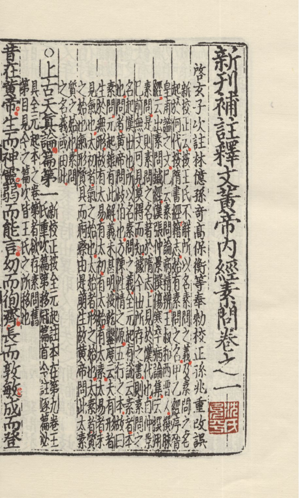
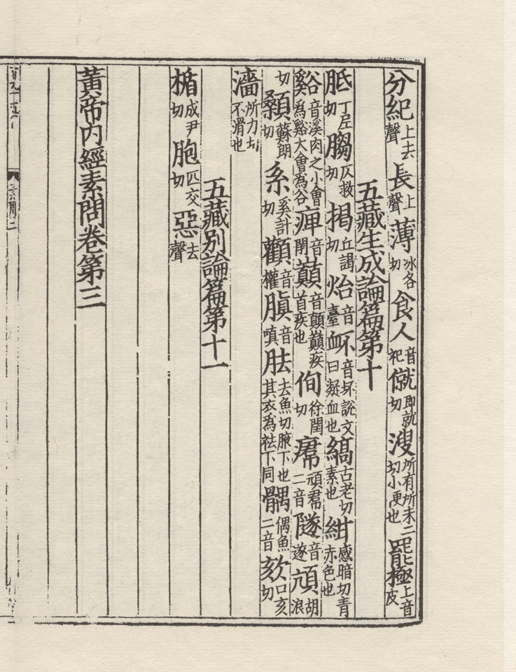
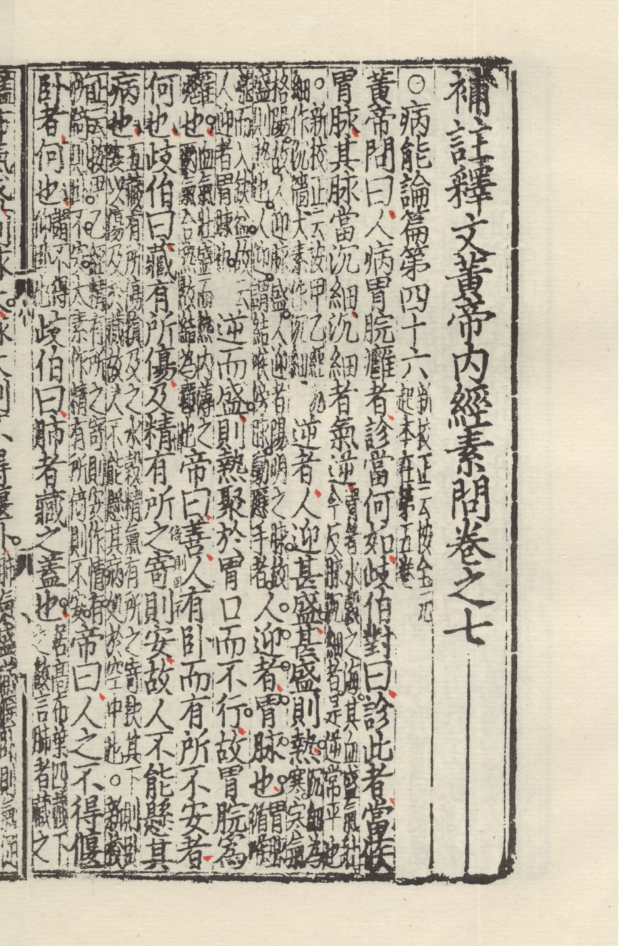
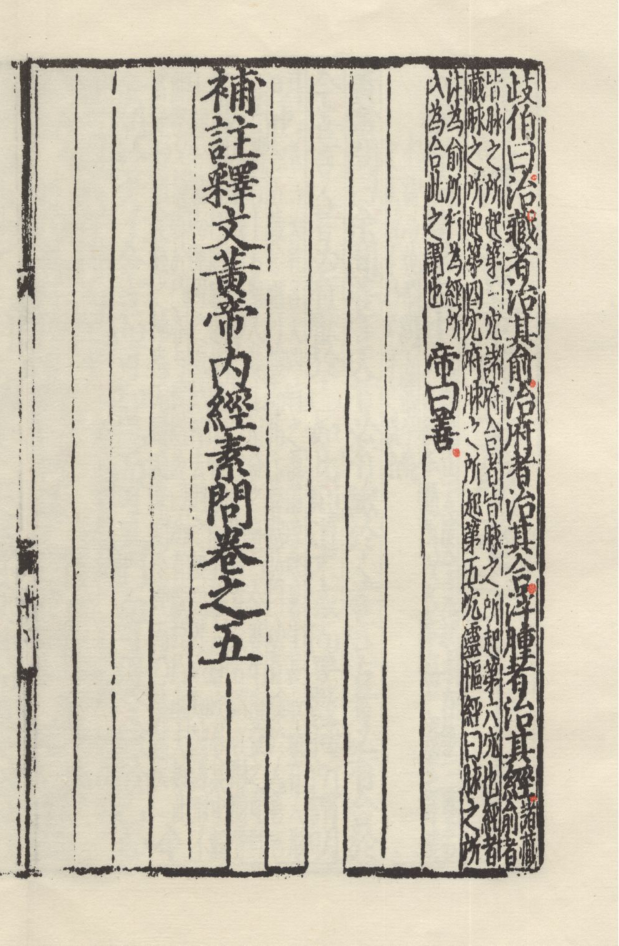
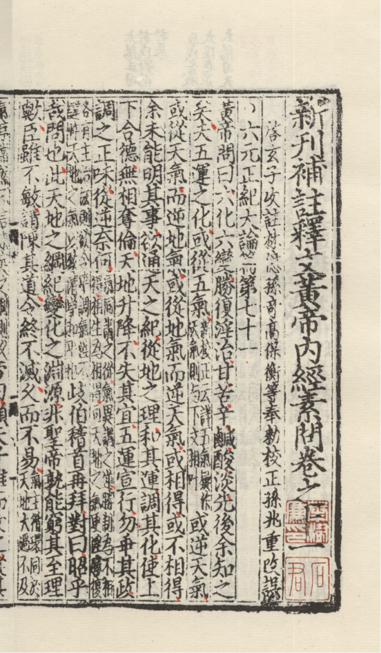

黃帝內經素問
王冰注 · 新校正 · 白話通釋
元至元古林書堂刻本葉面對讀 · 金刻本參校 · 全八十一篇
法於陰陽 和於術數
上古天真
黃帝內經素問
全八十一篇 · 元刻十二卷格局
唐 王冰 注 宋 林億等校正
經注錄文從《重廣補注黃帝內經素問》通行本系統
卷次從元至元古林書堂刻本總目 葉面對讀隨卷
凡例
- 一、底本与录文。经注录文以《重廣補注黃帝內經素問》通行本系统（王冰注、新校正语俱全）为底；卷次、分卷与元至元五年胡氏古林書堂刻本《新刊補註釋文黃帝內經素問》总目相从（元本併王冰二十四卷为十二卷），篇目次第以元刻总目叶为据。
- 二、叶面对读。元刻卷之一、三、五、十诸卷端叶书影列于卷首；首叶卷端题署、篇题圈号、起首经文、王冰注引《史记》诸条已与叶面逐字核验，朱圈句读、「成而登天」下墨钉等版刻特征记入版刻对读。
- 三、参校本。金刻本《黃帝內經素問》（國家圖書館藏，存卷三至五、十一至十八、二十凡十三卷）为参校；其卷一已佚，卷一诸篇无金刻可对，卷三以下同览两刻可互勘。
- 四、用字体例。经文、王冰注、新校正语用繁体；凡例、章旨、白话通释、术语笺释用简体。叶面异体字（如「眞」「寳」「隂」）录文一律改从通行正字。
- 五、白话通释为全篇今译节要。长篇如运气七篇者撮其大要；术语笺释随篇立卡，取一篇之要目。
- 六、亡篇。刺法論、本病論兩篇宋臣已言亡，今本所传为后人补托，仍依元刻总目附卷之十一，篇名下注明。
卷首书影
底本与参校本的版刻原貌：元刻四帧卷端叶、金刻一帧端叶。

图一元刻《素問》卷之一首叶
上古天真論篇第一 · 朱圈句读 · 「成而登天」下墨钉

图二金刻本《素問》卷第三端叶
國家圖書館藏 · 存十三卷（卷三起）

图三元刻《素問》卷之三端叶
脈要精微論起 · 胡氏古林書堂刻本

图四元刻《素問》卷之五端叶
熱論起

图五元刻《素問》卷之十端叶
六微旨大論篇第六十八起 · 運氣諸大論
版刻对读
元刻与金刻两刻实察记录，凡未经叶面核实者不出校。
元刻卷之一首叶卷端题「新刊補註釋文黃帝內經素問卷之一」，次行题「啓玄子次註 林億孫奇高保衡等奉勅校正 孫兆重改誤」；篇题冠以圈号，经文加朱圈句读。「成而登天」句下接「天師曰」处有墨钉一方，通行本此处为「迺問於」三字连读，所代何字待考。「昔在黃帝」句下王冰注引《史記》黄帝事迹，与通行本注文相合，可证元刻注即王冰注旧文。金刻本每半叶十三行、行二十二字、注小字三十字、白口四周双边，存卷三至五、十一至十八、二十；其卷一已佚，故卷一诸篇以元刻为唯一叶面依据，卷三以下两刻并观可互勘异文。
总目（1–44）
卷之一（01–07）起上古天真論
001上古天真論
002四氣調神大論
003生氣通天論
004金匱真言論
005陰陽應象大論
006陰陽離合論
007陰陽别論
卷之二（08–16）起靈蘭祕典論
008靈蘭秘典論
009六節藏象論
010五藏生成
011五藏别論
012異法方宜論
013移精變氣論
014湯液醪醴論
015玉版論要
016診要經終論
卷之三（17–20）起脈要精微論
017脉要精微論
018平人氣象論
019玉機真藏論
020三部九候論
卷之四（21–30）起經脈別論
021經脉別論
022藏氣法時論
023宣明五氣
024血氣形志
025寶命全形論
026八正神明論
027離合真邪論
028通評虚實論
029太陰陽明論
030陽明脉解
卷之五（31–38）起熱論
031熱論
032刺熱
033評熱病論
034逆調論
035瘧論
036刺瘧
037氣厥論
038咳論
卷之六（39–45）起舉痛論
总目（45–88）
039舉痛論
040腹中論
041刺腰痛
042風論
043痹論
044痿論
045厥論
卷之七（46–55）起病能論
046病能論
047竒病論
048大竒論
049脉解
050刺要論
051刺齊論
052刺禁論
053刺志論
054鍼解
055長刺節論
卷之八（56–61）起皮部論
056皮部論
057經絡論
058氣穴論
059氣府論
060骨空論
061水熱穴論
卷之九（62–67）起調經論
062調經論
063繆刺論
064四時刺逆從論
065標本病傳論
066天元紀大論
067五運行大論
卷之十（68–70）起六微旨大論
068六微㫖大論
069氣交變大論
070五常政大論
卷之十一（71–74）起六元正紀大論
071六元正紀大論
072刺法论
073本病论
074至真要大論
卷之十二（75–81）起著至教論
075著至教論
076示從容論
总目（89–93）
077疏五過論
078徴四失論
079陰陽類論
080方盛衰論
081解精微論
卷之一
起上古天真論 · 凡7篇
01上古天真論
02四氣調神大論
03生氣通天論
04金匱真言論
05陰陽應象大論
06陰陽離合論
07陰陽别論
素問 · 卷之一 · 篇 第 一
上古天真論
章旨借黄帝与岐伯问答立养生总纲：法于阴阳、和于术数则形与神俱、尽终天年；以肾气盛衰论男女生长收藏之节（女七男八），并列真人、至人、圣人、贤人四等。
原文
繁体大字；「注」为王冰注，「校正」为新校正语，随文附见。
注第者欲存素問舊第目見今之篇次皆王氏之所移也
昔在黄帝生而神靈弱而能言幼而徇齊長而敦敏
成而登天
注有熊國君少典之子姓公孫徇疾也敦信也敏達也習用干戈以征不享平定天下殄滅尤以土徳王都軒轅之丘故號之曰軒轅黄帝後鑄鼎於鼎湖山鼎成而白日升天羣臣葬衣冠於橋山墓今猶在
廼問於天師曰余聞上古
之人春秋皆度百嵗而動作不衰今時之人年半百
而動作皆衰者時世異耶人將失之耶
注天師岐伯也
岐伯對
曰上古之人其知道者法於陰陽和於術數
注上古謂玄古也知道謂知修養之道也夫陰陽者天地之常道術數者保生之大倫故修養者必謹先之老子曰萬物負陰而抱陽冲氣以為和四氣調神大論曰陰陽四時者萬物之終始死生之本逆之則災害生從之則苛疾不起是謂得道此之謂也
食飲有節起居有常不妄
作勞
注食飲者充虚之滋味起居者動止之綱紀故修養者謹而行之痹論曰飲食自倍腸胃乃傷生氣通天論曰起居如驚神氣乃浮是惡妄動也廣成子曰必静必清無勞汝形無摇汝精乃可以長生故聖人先之也 新校正云按全元起注本云飲食有常節起居有常度不妄不作太素同楊上善云以理而取聲色芳味不妄視聽也循理而動不為分外之事
故能形與神俱而盡終其天年
度百嵗乃去
注形與神俱同臻夀分謹於修養以奉天真故盡得終其天年去謂去離於形骸也靈樞經曰人百嵗五藏皆虚神氣皆去形骸獨居而終矣以其知道故年長夀延年度百嵗謂至一百二十嵗也尚書洪範曰一曰夀百二十嵗也
今時之人不
然也
注動之死地離於道也
以酒為漿
注溺於飲也
以妄為常
注寡於信也
醉以入
房
注過於色也
以欲竭其精以耗散其真
注樂色曰欲輕用曰耗樂色不節則精竭輕用不止則真散是以聖人愛精重施髓滿骨堅老子曰弱其志强其骨河上公曰有欲者亡身曲禮曰欲不可縱 新校正云按甲乙經耗作好
不知持
滿不時御神
注言輕用而縱欲也老子曰持而盈之不如其已言愛精保神如持盈滿之器不慎而動則傾竭天真真誥曰常不能慎事自致百痾豈可怨咎於神明乎此之謂也 新校正云按别本時作解
務快其心逆於生樂
注快於心欲之用則逆養生之樂矣老子曰甚愛必大費此之類歟夫甚愛而不能救議道而以為未然者伐生之大患也
起居無節故半百
而衰也
注亦耗散而致是也夫道者不可斯須離於道則壽不能終盡於天年矣老子曰物壮則老謂之不道不道早亡此之謂離道也
夫
上古聖人之教下也皆謂之虚邪賊風避之有時
注邪乘虚入是謂虚邪竊害中和謂之賊風避之有時謂八節之日及太一入從之於中宫朝八風之日也靈樞經曰邪氣不得其虚不能獨傷人明人虚乃邪勝之也 新校正云按全元起注本云上古聖人之教也下皆為之太素千金同楊上善云上古聖人使人行者身先行之為不言之教不言之教勝有言之教故下百姓倣行者衆故曰下皆為之太一入從於中宫朝八風義具天元玉册中
恬惔虚无真氣從之精神内守
病安從來
注恬惔虚无靜也法道清静精氣内持故其氣邪不能為害
是以志閑而少欲心安
而不懼形勞而不倦
注内機息故少欲外紛靜故心安然情欲兩亡是非一貫起居皆適故不倦也
氣從
以順各從其欲皆得所願
注志不貪故所欲皆順心易足故所願必從以不異求故無難得也老子曰知足不辱知止不殆可以長久
故美其食
注順精麤也 新校正云按别本美一作甘
任其服
注隨美惡也
樂其俗
注去傾慕也
髙下不相慕其民故曰朴
注至無求也是所謂心足也老子曰禍莫大於不知足咎莫大於欲得故知足之足常足矣蓋非謂物足者爲知足心足者乃爲知足矣不恣於欲是則朴同故聖人云我無欲而民自朴 新校正云按别本云曰作日
是以
嗜欲不能勞其目淫邪不能惑其心
注目不妄視故嗜欲不能勞心與玄同故淫邪不能惑老子曰不見可欲使心不亂又曰聖人爲腹不爲目也
愚智賢不肖不懼於物故合於
道
注情計两亡不爲謀府㝠心一觀勝負俱捐故心志保安合同於道庚桑楚曰全汝形抱汝生無使汝思慮營營 新校正云按全元起注本云合於道數
所以能年皆度百嵗而動作不衰者以其徳全不
危也
注不涉於危故徳全也荘子曰執道者徳全徳全者形全形全者聖人之道也又曰無爲而性命不全者未之有也
帝曰人年
老而無子者材力盡邪將天數然也
注材謂材幹可以立身者
岐伯曰
女子七嵗腎氣盛齒更髪長
注老陽之數極於九少陽之數次於七女子爲少陰之氣故以少陽數偶之明陰陽氣和乃能生成其形體故七嵗腎氣盛齒更髪長
二七而天癸至任脉通太衝脉
盛月事以時下故有子
注癸謂壬癸北方水干名也任脉衝脉皆竒經脉也腎氣全盛衝任流通經血漸盈應時而下天真之氣降與之從事故云天癸也然衝為血海任主胞胎二者相資故能有子所以謂之月事者平和之氣常以三旬而一見也故愆期者謂之有病
校正按全元起注本及太素甲乙經俱作伏衝下太衝同
三七腎氣平均故真牙生而
長極
注真牙謂牙之最後生者腎氣平而真牙生者表牙齒為骨之餘也
四七筋骨堅髪長極身
體盛壯
注女子天癸之數七七而終年居四七材力之半故身體盛壯長極於斯
五七陽明脉衰面始
焦髮始墮
注陽明之脉氣營於面故其衰也髪墮面焦靈樞經曰足陽明之脉起於鼻交頞中下循鼻外入上齒中還出俠口環脣下交承漿却循頤後下廉出大迎循頰車上耳前過客主人循髪際至額顱手陽明之脉上頸貫頰入下齒縫中還出俠口故面焦髪墮也
六七三陽
脉衰於上面皆焦髮始白
注三陽之脉盡上於頭故三陽衰則面皆焦髪始白所以衰者婦人之生也有餘於氣不足於血以其經月數泄脫之故
七七任脉虚太衝脉衰少天癸竭地道
不通故形壊而無子也
注經水絶止是為地道不通衝任衰微故云形壊無子
丈夫八嵗
腎氣實髮長齒更
注老陰之數極於十少陰之數次於八男子為少陽之氣故以少陰數合之易繫辭曰天九地十則其數也
二八腎氣盛天癸至精氣溢寫陰陽和故能有子
注男女有陰陽之質不同天癸則精血之形亦異陰静海滿而去血陽動應合而泄精二者通和故能有子易繋辭曰男女搆精萬物化生此之謂也
三
八腎氣平均筋骨勁强故真牙生而長極
注以其好用故爾
四八
筋骨隆盛肌肉滿壯
注丈夫天癸八入而終年居四八亦材之半也
五八腎氣衰髪
墮齒槁
注腎主於骨齒為骨餘腎氣既衰精無所養故令髪墮齒復乾枯
六八陽氣衰竭於上面焦
髪鬢頒白
注陽氣亦陽明之氣也靈樞經曰足陽明之脉起於鼻交頞中下循鼻外入上齒中還出俠口環脣下交承漿却循頥後下廉出大迎循頬車上耳前過客主人循髪際至額顱故衰於上則面焦髪鬢白也
七八肝氣衰筋不能動天
癸竭精少腎藏衰形體皆極
注肝氣養筋肝衰故筋不能動腎氣養骨腎衰故形體疲極天癸巳竭故精少也匪惟材力衰謝固當天數使然
八八則齒髪去
注陽氣竭精氣衰故齒髪不堅離形骸矣去落也
腎者主
水受五藏六府之精而藏之故五藏盛乃能冩
注五藏六府精氣淫溢而滲灌於腎腎藏乃受而藏之何以明之靈樞經曰五藏主藏精藏精者不可傷由是則五藏各有精隨用而灌注於腎此乃腎為都會闗司之所非腎一藏而獨有精故曰五藏盛乃能寫也
今五藏皆衰筋骨解墮天癸盡矣故髪
鬢白身體重行歩不正而無子耳
注所謂物壯則老謂之天道者也
帝曰有
其年已老而有子者何也
注言似非天癸之數也
岐伯曰此其天夀過
度氣脉常通而腎氣有餘也
注所禀天真之氣本自有餘也
此雖有子男
不過盡八八女不過盡七七而天地之精氣皆竭矣
注雖老而生子子夀亦不能過天癸之數
帝曰夫道者年皆百數能有子乎岐伯
曰夫道者能却老而全形身年雖夀能生子也
注是所謂得道之人也道成之證如下章云
黄帝曰余聞上古有真人者提挈天地把握
陰陽
注真人謂成道之人也夫真人之身隐見莫測其為小也入於无間其為大也徧於空境其變化也出入天地内外莫見迹順至真以表道成之證凡如此者故能提挈天地把握陰陽也
呼吸精氣獨立守神肌肉若一
注真人心合於氣氣合於神神合於无故呼吸精氣獨立守神肌膚若冰雪綽約如處子 新校正云按全元起注本云身肌宗一太素同楊上善云真人身之肌體與太極同質故云宗一
故能夀敝天地无有終時
注體同於道夀與道同故能无有終時而夀盡天地也敝盡也
此
其道生
注惟至道生乃能如是
中古之時有至人者淳徳全道
注全其至道故曰至人然至人以此淳朴之徳全彼妙用之道 新校正云詳楊上善云積精全神能至於徳故稱至人
和於陰陽調於四
時
注和謂同和調謂調適言至人動静必適中於四時生長收藏之令參同於陰陽寒暑升降之宜
去世離俗積精全
神
注心遠世紛身離俗染故能積精而復全神
游行天地之間視聽八達之外
注神全故也庚桑楚曰神全之人不慮而通不謀而當精照无外志凝宇宙若天地然又曰體合於心心合於氣氣合於神神合於无其有介然之有唯然之音雖遠際八荒之外近在眉睫之内來于我者吾必盡知之夫如是者神全故所以能矣
此葢益其夀命而强者
也亦歸於真人
注同歸於道也
其次有聖人者處天地之和從
八風之理
注與天地合徳與日月合明與四時合其序與鬼神合其吉凶故曰聖人所以處天地之淳和順八風之正理者欲其養正避彼虚邪
適嗜欲於世俗之間无恚嗔之心
注聖人志深於道故適於嗜欲心全廣愛故不有恚嗔是以常徳不離殁身不殆
行不欲離於世被服章
校正詳被服章三字疑衍此三字上下文不屬
舉不欲觀於俗
注聖人舉事行止雖常在時俗之間然其見為則與時俗有異尓何者貴法道之清静也老子曰我獨異於人而貴求食於母母亦諭道也
外不勞形於事内无思想之患
注聖人為无為事無事是以内无思想外不勞形
以恬愉為務以自得為功
注恬静也愉悦也法道清静適性而動故恱而自得也
形
體不敝精神不散亦可以百數
注外不勞形内无思想故形體不敝精神保全神守不離故年登百數此盖全性之所致爾庚桑楚曰聖人之於聲色滋味也利於性則取之害於性則捐之此全性之道也敝疲敝也
其次有賢人
者法則天地象似日月
注次聖人者謂之賢人然自强不息精了百端不慮而通發謀必當志同於天地心燭於洞幽故曰法則天地象似日月也
辯列 星辰逆從陰陽分别四時
注星衆星也辰北辰也辯列者謂定内外星官座位之所於天三百六十五度遠近之分次也逆從陰陽者謂以六甲等法逆順數而推歩吉凶之徴兆也陰陽書曰人中甲子從甲子起以乙丑為次順數之地下甲子從甲戌起以癸酉為次逆數之此之謂逆從也分别四時者謂分其氣序也春温夏暑熱秋清凉冬冰冽此四時之氣序也
將從上古合同於道亦可使益夀而有極時
注將從上古合同於道謂如上古知道之人法於陰陽和於術數食飲有節起居有常不妄作勞也上古知道之人年度百嵗而去故可使益夀而有極時也
白话通释
开篇以黄帝生平起笔，问何以上古之人皆度百岁而动作不衰。岐伯答：上古知道者法于阴阳、和于术数，食饮有节、起居有常、不妄作劳，故能形与神俱；今人则以酒为浆、以妄为常、醉以入房，耗散其真，故半百而衰。
继而论肾气盛衰定数：女子以七年为节，七岁齿更发长，二七天癸至而能有子，七七任脉虚、天癸竭而形坏无子；男子以八年为节，二八天癸至，八八则齿发去。又论有余之寿：天寿过度、气脉常通、肾气有余者能老而有子。
末列真人、至人、圣人、贤人四等：真人提挈天地、把握阴阳，寿敝天地无有终时；至人淳德全道，归于真人；圣人处天地之和，可百数；贤人法则天地，可使益寿而有极时。
术语笺释
天癸肾精充盛到一定程度所产生的促进生殖机能发育成熟的物质，女子二七而至、七七而竭，男子二八而至、八八而竭。
天年天赋的自然寿限，古人以百岁为期；「尽终其天年」谓活满自然寿命而不夭折。
术数调养精气的方法，如导引、按跷、吐纳之类，与「法于阴阳」相对，一为顺天，一为练形。
素問 · 卷之一 · 篇 第 二
四氣調神大論
章旨四时生长收藏之气相应于人身藏气，故养生贵在「春夏养阳、秋冬养阴」，顺四时则与万物浮沉于生长之门；违逆则内闭九窍、外壅肌肉，伤于四时之气。
原文
繁体大字；「注」为王冰注，「校正」为新校正语，随文附见。
春三月此謂發陳
注春陽上升氣潛發㪚生育庶物陳其姿容故曰發陳也所謂春三月者皆因節候而命之夏秋冬亦然
天地俱生萬物以榮
注天氣温地氣發温發相合故萬物滋榮
夜卧早起廣
歩於庭
注温氣生寒氣散故夜卧早起廣歩於庭
被髪緩形以使志生
注法象也春氣發生於萬物之首故被髪緩形以使志意發生也
生而勿殺予而勿奪賞而勿罰
注春氣發生施无求報故養生者必順於時也
此春氣之應養生之道也
注所謂因時之序也然立春之節初五日東風解凍次五日蟄蟲始振後五日魚上冰次雨水氣初五日獺祭魚次五日鴻鴈來後五日草木萌動次仲春驚蟄之節初五日小桃華 新校正云詳小桃華月令作桃始華次五日倉庚鳴後五日鷹化為鳩次春分氣初五日玄鳥至次五日雷乃發聲芍藥榮後五日始電次季春清明之節初五日桐始華次五日田鼠化為鴽牡丹華後五日虹始見次榖雨氣初五日萍始生次五日鳴鳩拂其羽後五日戴勝降于桑凡此六氣一十八候皆春陽布發生之令故養生者必謹奉天時也
校正詳芍藥榮牡丹華今月令無
逆之則傷肝夏為寒變奉長者少
注逆謂反行秋令也肝象木王於春故行秋令則肝氣傷夏火王而木廢故病生於夏然四時之氣春生夏長逆春傷肝故少氣以奉於夏長之令也
夏三月
此謂蕃秀
注陽自春生至夏洪盛物生以長故蕃秀也蕃茂也盛也秀華也美也
天地氣交萬物華實
注舉夏至也脉要精㣲論曰夏至四十五日陰氣㣲上陽氣㣲下由是則天地氣交也然陽氣施化陰氣結成成化相合故萬物華實也陰陽應象大論曰陽化氣陰成形
夜卧早起無厭於日使志無怒使華英成秀使氣
得泄若所愛在外
注緩陽氣則物化寛志意則氣泄物化則華英成秀氣泄則膚腠宣通時令發故所愛亦順陽而在外也
此夏氣之應養長之道也
注立夏之節初五日螻蟈鳴次五日蚯蚓出後五日赤箭生 新校正云按月令作王瓜生次小滿氣初五日呉葵華 新校正云按月令作苦菜秀次五日靡草死後五日小暑至次仲夏芒種之節初五日螗螂生次五日鵙始鳴後五日反舌無聲次夏至氣初五日鹿角解次五日蜩始鳴後五日半夏生木堇榮次季夏小暑之節初五日温風至次五日蟋蟀居壁後五日鷹乃學習次大暑氣初五日腐草化為螢次五日土潤溽暑後五日大雨時行凡此六氣一十八候皆夏氣蕃秀之令故養生者必敬順天時也 新校正云詳木堇榮今月令無
逆之則傷心秋為痎瘧奉收者少冬至重病
注逆謂反行冬令也痎痎瘦之瘧也心象火王於夏故行冬令則心氣傷秋金王而火廢故病發於秋而為痎瘧也然四時之氣秋收冬藏逆夏傷心故少氣以奉於秋收之令也冬水勝火故重病於冬至之時也
秋三月此謂容平
注萬物夏長華實巳成容狀至秋平而定也
天氣以
急地氣以明
注天氣以急風聲切也地氣以明物色變也
早卧早起與雞俱興
注懼中寒露故早卧欲使安寧故早起
使志安寧以緩秋刑
注志氣躁則不慎其動不慎其動則助秋刑急順殺伐生故使志安寧緩秋刑也
收 斂神氣使秋氣平
注神蕩則欲熾欲熾則傷和氣和氣既傷則秋氣不平調也故收斂神氣使秋氣平也
無外其志使肺氣清
注亦順秋氣之收斂也
此秋氣之應養
收之道也
注立秋之節初五日凉風至次五日白露降後五日寒蟬鳴次處暑氣初五日鷹乃祭鳥次五日天地始肅後五日禾乃登次仲秋白露之節初五日盲風至鴻鴈來次五日玄鳥歸後五日羣鳥養羞次秋分氣初五日雷乃收聲次五日蟄蟲坯户景天華後五日水始涸次季秋寒露之節初五日鴻鴈來賔次五日雀入大水為蛤後五日菊有黄華次霜降氣初五日豺乃祭獸次五日草木黄落後五日蟄蟲咸俯凡此六氣一十八候皆秋氣正收斂之令故養生者必謹奉天時也新校正云詳景天華三字今月令無
逆之則傷肺冬為飱泄奉
藏者少
注逆謂反行夏令也肺象金王於秋故行夏令則氣傷冬水王而金廢故病發於冬飱泄者食不化而泄中也逆秋傷肺故少氣以奉於冬藏之令也
冬三月此謂閉藏
注草木凋蟄蟲去地户閉塞陽氣伏藏
水冰地坼無擾
乎陽
注陽氣下沈水冰地坼故宜周宻不欲煩勞擾謂煩也勞也
早卧晩起必待日光
注避於寒也
使志
若伏若匿若有私意若已有得
注皆謂不欲妄出於外觸冐寒氣也故下文云
去寒就
温無泄皮膚使氣亟奪
注去寒就溫言居深室也靈樞經曰冬日在骨蟄蟲周密君子居室無泄皮膚謂勿汗也汗則陽氣發泄陽氣發泄則數為寒氣所廹奪之亟數也
此冬氣之應養藏之道也
注立冬之節初五日水始冰次五日地始凍後五日雉入大水爲蜃次小雪氣初五日虹藏不見次五日天氣上騰地氣下降後五日閉塞而成冬次仲冬大雪之節初五日冰益壯地始拆鶡鳥不鳴次五日虎始交後五日芸始生荔挺出次冬至氣初五日蚯蚓結次五日麋角解後五日水泉動次季冬小寒之節初五日鴈北鄉次五日鷙鳥厲疾後五日水澤腹堅凡此六氣一十八候皆冬氣正飬藏之令故養生者必謹奉天時也
逆之則傷腎春爲痿厥奉生者
少
注逆謂反行夏令也腎象水王於冬故行夏令則腎氣傷春木王而水廢故病發於春也逆冬傷腎故少氣以奉於春生之令也
天氣清淨
光明者也
注言天明不竭以清淨故致人之夀延長亦由順動而得故言天氣以示於人也
藏徳不止
校正按别本止一
注作上
故不下也
注四時成序七曜周行天不形言是藏徳也徳隱則應用不屈故不下也老子曰上徳不徳是以有徳也言天至尊髙徳猶見隱也況全生之道而不順天乎
天明則日月不明邪害空竅
注天所以藏徳者爲其欲隱大明故大明見則小明滅故大明之徳不可不藏天若自明則日月之明隱矣所諭者何言人之真氣亦不可泄露當清淨法道以保天真苟離於道則虚邪入於空竅
陽氣
者閉塞地氣者冒明
注陽謂天氣亦風熱也地氣謂濕亦雲霧也風熱之害人則九竅閉塞霧濕之爲病則掩翳精明取類者在天則日月不光在人則兩目藏曜也靈樞經曰天有日月人有眼目易曰喪明于易豈非失養正之道邪
雲霧不精則上
應白露不下
注霧者雲之類露者雨之類夫陽盛則地不上應陰虚則天不下交故雲霧不化精㣲之氣上應於天而為白露不下之咎矣陰陽應象大論曰地氣上為雲天氣下為雨雨出地氣雲出天氣明二氣交合乃成雨露方盛衰論曰至陰虚天氣絶至陽盛地氣不足明氣不相召亦不能交合也
交通不表萬物命故不施不施則名木多死
注夫雲霧不化其精㣲雨露不霑於原澤是為天氣不降地氣不騰變化之道既虧生育之源斯泯故萬物之命無禀而生然其死者則名木先應故云名木多死也名謂名果珍木表謂表陳其状也易繫辭曰天地絪緼萬物化醇然不表交通則為否也易曰天地不交否
惡氣不發風雨不節
白露不下則菀藁不榮
注惡謂害氣也發謂散發也節謂節度也菀謂藴積也槀謂枯槀也言害氣伏藏而不散發風雨無度折傷復多槀木藴積春不榮也豈惟其物獨遇是而有之哉人離於道亦有之矣故下文曰
賊風數至暴雨數
起天地四時不相保與道相失則未央絶滅
注不順四時之和數犯八風之害與道相失則天真之氣未期久遠而致滅亡央久也遠也
唯聖人從之故身無竒病萬物
不失生氣不竭
注道非遠於人人心遠於道惟聖人心合於道故夀命无窮從猶順也謂順四時之令也然四時之令不可逆之逆之則五藏内傷而他病起
逆春氣則少陽不生肝氣内變
注生謂動出也陽氣不出内鬱於肝則肝氣混糅變而傷矣
逆夏氣則太陽不長心氣内洞
注長謂外茂也洞謂中空也陽不外茂内薄於心燠熱内消故心中空也
逆秋氣則太陰不收肺氣焦滿
注收謂收斂焦謂上焦也太陰行氣主化上焦故肺氣不收上焦滿也 新校正云按焦滿全元起本作進滿甲乙太素作焦滿
逆冬氣則少陰不藏
腎氣獨沈
注沈謂沈伏也少陰之氣内通於腎故少陰不伏腎氣獨沈 新校正云詳獨沈太素作沈濁
夫四時陰
陽者萬物之根本也
注時序運行陰陽變化天地合氣生育萬物故萬物之根悉歸於此
所以聖人
春夏養陽秋冬養陰以從其根
注陽氣根於陰陰氣根於陽無陰則陽無以生無陽則陰無以化全陰則陽氣不極全陽則陰氣不窮春食凉夏食寒以養於陽秋食温冬食熱以養於陰滋苗者必固其根伐下者必枯其上故以斯調節從順其根二氣常存盖由根固百刻曉暮食亦宜然
故與萬物沈浮於生長之門
注聖人所以身無竒病生氣不竭者以順其根也
逆其根則伐其本壊其真矣
注是則失四時陰陽之道也
故陰陽四
時者萬物之終始也死生之本也逆之則災害生從
之則苛疾不起是謂得道
注謂得養生之道苛者重也
道者聖人行之
愚者佩之
注聖人心合於道故勤而行之愚者性守於迷故佩服而已老子曰道者同於道徳者同於徳失者同於失同於道者道亦得之同於徳者徳亦得之同於失者失亦得之愚者未同於道徳則可謂失道者也
從陰陽則生逆之則死從
之則治逆之則亂反順為逆是謂内格
注格拒也謂内性格拒於天道也
是
故聖人不治巳病治未病不治巳亂治未亂此之謂
也
注知之至也
夫病巳成而後藥之亂已成而後治之譬猶渇
而穿井鬬而鑄錐不亦晩乎
注知不及時也備禦虚邪事符握虎噬而後藥雖悔何為
白话通释
春三月养生之道在生而勿杀；夏三月在使气得泄；秋三月在使志安宁；冬三月在去寒就温、无泄皮肤。四时之气逆之则伤五脏，春伤于风则夏生飧泄，冬伤于寒则春必温病。
白天阳气如雾霭运行，故平旦人气生、日中阳气隆、日西阳气虚；暮则收拒，无扰筋骨、无见雾露。违逆三时则形乃困薄。
末论圣人不治已病治未病、不治已乱治未乱：夫病已成而后药之，譬犹渴而穿井、斗而铸锥，不亦晚乎。
术语笺释
春夏养阳，秋冬养阴顺从四时生长收藏之气的养生大纲：春夏顺其生发而养阳，秋冬顺其收敛而养阴。
治未病未病先防、既病防变的预防思想，为《内经》养生与治疗学的总纲。
素問 · 卷之一 · 篇 第 三
生氣通天論
章旨阳气者若天与日，失其所则折寿而不彰。通篇论阳气的生理、病理与护养：烦劳则张、精绝辟积，阳亢阴竭；风客淫精、饮食居处伤阳；阳者卫外而为固，阴者藏精而起亟。
原文
繁体大字；「注」为王冰注，「校正」为新校正语，随文附见。
黄帝曰夫自古通天者生之本本於陰陽天地之間
六合之内其氣九州九竅五藏十二節皆通乎天氣
注六合謂四方上下也九州謂冀兖青徐荆豫梁雍也外布九州而内應九竅故云九州九竅也五藏謂五神藏也五神藏者肝藏魂心藏神脾藏意肺藏魄腎藏志而此成形矣十二節者十二氣也天之十二節氣人之十二經脉而外應之咸同天紀故云皆通乎天氣也十二經脉者謂手三陰三陽足三陰三陽也
校正詳通天者生之本六節藏象注甚詳又按鄭康成云九竅者謂陽竅七陰竅二也
其生五其氣三數犯
此者則邪氣傷人此夀命之本也
注言人生之所運為則内依五氣以立然其鎮塞天地之内則氣應三元以成三謂天氣地氣運氣也犯謂邪氣觸犯於生氣也邪氣數犯則生氣傾危故寶養天真以為夀命之本也庚桑楚曰聖人之制萬物也以全其天天全則神全矣靈樞經曰血氣者人之神不可不謹養此之謂也
蒼天之氣清淨則志意治
順之則陽氣固
注春為蒼天發生之主也陽氣者天氣也陰陽應象大論曰清陽為天則其義也本天全神全之理全則形亦全矣
雖有賊邪弗能害也此因時之序
注以因天四時之氣序故賊邪之氣弗能害也
故聖人傳精神服天氣而通神明
注夫精神可傳惟聖人得道者乃能爾乆服天真之氣則妙用自通於神明也
失之則内閉九竅外壅肌肉衞氣散解
注失謂逆蒼天清淨之理也然衞氣者合天之陽氣也上篇曰陽氣者閉塞謂陽氣之病人則竅寫閉塞也靈樞經曰衞氣者所以温分肉而充皮膚肥腠理而司開闔故失其度則内閉九竅外壅肌肉以衞不營運故言散解也
此謂自傷氣之削也
注夫逆蒼天之氣違清淨之理使正真之氣如削去之者非天降之人自為之爾
陽氣者若天與日失其所則折夀而不彰
注此明前陽氣之用也諭人之有陽若天之有日天失其所則日不明人失其所則陽不固日不明則天境暝昧陽不固則人夀夭折
故天運當
以日光明
注言人之生固宜藉其陽氣也
是故陽因而上衞外者也
注此所以明陽氣運行之部分輔衛人身之正用也
因於寒欲如運樞起居如驚神氣乃浮
注欲如運樞謂内動也起居如驚謂暴卒也言因天之寒當深居周宻如樞紐之内動不當煩擾筋骨使陽氣發泄於皮膚而傷於寒毒也若起居暴卒馳騁荒佚則神氣浮越无所綏寧矣脉要精㣲論曰冬日在骨蟄蟲周宻君子居室四氣調神大論曰冬三月此謂閉藏水冰地坼無擾乎陽又曰使志若伏若匿若有私意若巳有得去寒就温无泄皮膚使氣亟奪此之謂也新校正云按全元起本作連樞元起云陽氣定如連樞者動繋也
因於暑汗
煩則喘喝靜則多言
注此則不能靜慎傷於寒毒至夏而變暑病也煩謂煩躁靜謂安靜喝謂大呵出聲也言病因於暑則當汗泄不為發表邪熱内攻中外俱熱故煩躁喘數大呵而出其聲也若不煩躁内熱外凉瘀熱攻中故多言而不次也喝一為鳴
體若燔
炭汗出而散
注此重明可汗之理也為體若燔炭之炎熱者何以救之必以汗出乃熱氣施散燔一為燥非也
因於濕
首如裹濕熱不攘大筋緛短小筋㢮長緛短為拘㢮
長為痿
注表熱為病當汗泄之反濕其首若濕物裹之望除其熱熱氣不釋兼濕内攻大筋受熱則縮而短小筋得濕則引而長縮短故拘攣而不伸引長故痿弱而無力攘除也緛縮也㢮引也
因於氣為腫四維相代陽氣乃竭
注素常氣疾濕熱加之氣濕熱爭故為腫也然邪氣漸盛正氣浸㣲筋骨血肉互相代負故云四維相代也致邪代正氣不宣通衛無所從便至衰竭故言陽氣乃竭也衛者陽氣也
陽氣者煩勞則張精絶辟積於夏使人煎厥
注此又誡起居暴卒煩擾陽和也然煩擾陽和勞疲筋骨動傷神氣耗竭天真則筋脉䐜脹精氣竭絶既傷腎氣又損膀胱故當於夏時使人煎厥以煎迫而氣逆因以煎厥為名厥謂氣逆也煎厥之状當如下説 新校正云按脉解云所謂少氣善怒者陽氣不治陽氣不治陽氣不得出肝氣當治而未得故善怒善怒者名曰煎厥
目盲不可以視耳閉不可以聽潰潰乎若壊都
汩汩乎不可止
注既且傷腎又竭膀胱腎經内屬於耳中膀胱脉生於目眥故目盲所視耳閉厥聴大矣哉斯乃房之患也既盲目視又閉耳聰則志意心神筋骨腸胃潰潰乎若壊都汩汩乎煩悶而不可止也
陽氣者大怒則形氣絶而
血菀於上使人薄厥
注此又誡喜怒不節過用病生也然怒則傷腎甚則氣絶大怒則氣逆而陽不下行陽逆故血積於心胷之内矣上謂心胷也然陰陽相薄氣血奔并因薄厥生故名薄厥舉痛論曰怒則氣逆甚則嘔血靈樞經曰盛怒而不止則傷志陰陽應象大論曰喜怒傷氣由此則怒甚氣逆血積於心胷之内矣菀積也
有傷於筋縱其若不容
注怒而過用氣或迫筋筋絡内傷機闗縱緩形容痿廢若不維持
汗出偏沮使人偏枯
注夫人之身常偏汗出而濕潤者久久偏枯半身不隨 新校正云按沮千金作祖全元起本作恒
汗出見濕乃生痤疿
注陽氣發泄寒水制之熱怫内餘鬱於皮裏甚為痤微作疿瘡疿風癮也
髙梁之變足生大丁受如持虚
注髙膏也梁梁也不忍之人汗出淋洗則結為痤疿膏梁之人内多滯熱皮厚肉宻故内變為丁矣外濕既侵中熱相感如持虚器受此邪毒故曰受如持虚所以丁生於足者四支為諸陽之本也以其甚費於下邪毒襲虚故爾 新校正云按丁生之處不常於足盖謂膏梁之變饒生大丁非偏著足也
勞汗當風寒薄為皶
鬱乃痤
注時月寒凉形勞汗發淒風外薄膚腠居寒脂液遂凝稸於玄府依空渗涸皶刺長於皮中形如米或如針久者上黒長一分餘色白黄而瘦於玄府中俗曰粉刺解表巳玄府謂汗空也痤謂色赤瞋憤内藴血膿形小而大如酸棗或如按豆此皆陽氣内欝所為待耎而攻之大甚焫出之
陽氣者精則養神柔則養筋
注此又明陽氣之運養也然陽氣者内化精微養於神氣外為柔耎以固於筋動靜失宜則生諸疾
開闔不得寒氣從之乃生大僂
注開謂皮腠發泄闔謂玄府閉封然開闔失宜為寒所襲内深筋絡結固虚寒則筋絡拘緛形容僂俯矣靈樞經曰寒則筋急此其類也
陷脉為瘻留連肉
腠
注陷脉謂寒氣陷缺其脉也積寒留舍經血稽凝久瘀肉攻結於肉理故發為瘍瘻肉腠相連
俞氣化薄傳為善
畏及為驚駭
注言若寒中於背俞之氣變化入深而薄於藏府者則善為恐畏及發為驚駭也
營氣不從逆
於肉理乃生癰腫
注營逆則血鬱血鬱則熱聚為膿故為癰腫也正理論云熱之所過則為癰腫
魄汗未
盡形弱而氣爍穴俞以閉發為風瘧
注汗出未止形弱氣消風寒薄之穴俞隨閉熱藏不出以至於秋秋陽復收兩熱相合故令振慄寒熱相移以所起爲風故名風瘧也金匱真言論曰夏暑汗不岀者秋成風瘧蓋論從風而爲是也故下文曰
故風者百病之始也清靜則肉腠閉拒雖有大風苛
毒弗之能害此因時之序也
注夫嗜欲不能勞其目淫邪不能惑其心不妄作勞是為清靜以其清靜故能肉腠閉皮膚宻真正内拒虚邪不侵然大風苛毒不必常求於人蓋由人之冒犯爾故清淨則肉腠閉陽氣拒大風苛毒弗能害之清靜者但因循四時氣序養生調節之宜不妄作勞起居有度則生氣不竭永保康寧
故病乆則傳化上下不并良醫
弗爲
注并謂氣交通也然病之深乆變化相傳上下不通陰陽否隔雖醫良法妙亦何以爲之陰陽應象大論曰夫善用針者從陰引陽從陽引陰以右治左以左治右若是氣相格拒故良醫弗可爲也
故陽畜積病死而陽氣當隔隔者當
冩不亟正治粗乃敗之
注言三陽畜積怫結不通不急冩之亦病而死何者畜積不巳亦上下不并矣何以驗之隔塞不便則其證也若不急冩粗工輕侮必見敗亡也陰陽别論曰三陽結謂之隔又曰剛與剛陽氣破散陰氣乃消亡淖則剛柔不和經氣乃絶
故
陽氣者一日而主外
注晝則陽氣在外周身行二十五度靈樞經曰目開則氣上行於頭衛氣行於陽二十五度也
平旦人氣生日中而陽氣隆日西而陽氣已虚氣門
乃閉
注隆猶髙也盛也夫氣之有者皆自少而之壯積暖以成炎炎極又凉物之理也故陽氣平曉生日中盛日西而巳减虚也氣門謂玄府也所以發泄經脉營衛之氣故謂之氣門也
是故暮而收拒無擾筋骨無見霧露反
此三時形乃困薄
注皆所以順陽氣也陽出則出陽藏則藏暮陽氣衰内行陰分故宜收斂以拒虚邪擾筋骨則逆陽精耗見霧露則寒濕具侵故順此三時乃天真久遠也
岐伯曰
校正詳篇首云帝曰此岐伯曰非相對問也
陰者藏精
而起亟也陽者衛外而為固也
注言在人之用也亟數也
陰不勝其陽
則脉流薄疾并乃狂
注薄疾謂極虚而急數也并謂盛實也狂謂狂走或妄攀登也陽并於四支則狂陽明脉解曰四支者諸陽之本也陽盛則四支實實則能登髙而歌也熱盛於身故棄衣欲走也夫如是者皆為陰不勝其陽也
陽不勝其陰則
五藏氣爭九竅不通
注九竅者内屬於藏外設為官故五藏氣爭則九竅不通也言九竅謂前陰後陰不通兼言上七竅也若兼則目為肝之官鼻為肺之官口為脾之官耳為腎之官舌為心之官舌非通竅也金匱真言論曰南方赤色入通於心開竅於耳北方黒色入通於腎開竅於二陰故也
是以聖人陳陰陽筋脉和同骨髓堅固氣血皆
從
注從順也言循陰陽法近養生道則筋脉骨髓各得其宜故氣血皆能順時和氣也
如是則内外調和邪
不能害耳目聦明氣立如故
注邪氣不剋故真氣獨立而如常若失聖人之道則致疾於身故下文引曰
風客淫氣精乃亡邪傷肝也
注自此以下四科並謂失聖人之道也風氣應肝故風淫精亡則傷肝也陰陽應象大論曰風氣通於肝也風薄則熱起熱盛則水乾水乾則腎氣不營故精乃亡也亡無也 新校正云按全元起云淫氣者陰陽之亂氣因其相亂而風客之則傷精傷精則邪入於肝也
因而飽食筋脉横解腸澼為痔
注甚飽則腸胃横滿腸胃滿則筋脉解而不屬故腸澼而為痔也痹論曰飲食自倍腸胃乃傷此傷之信也
因而大飲則氣逆
注飲多則肺布葉舉故氣逆而上奔也
因而强力腎氣乃傷髙骨乃壊
注强力謂强力入房也髙骨謂腰髙之骨也然强力入房則精耗精耗則腎傷腎傷則髓氣内枯故髙骨壊而不用也聖人交會則不如此當如下句云
凡陰陽之要陽宻
乃固
注陰陽交會之要者正在於陽氣閉宻而不妄泄爾宻不妄泄乃生氣强固而能久長此聖人之道也
兩者不和若
春無秋若冬無夏
注兩謂陰陽和謂和合則交會也若如也言絶陰陽和合之道者如天四時有春無秋有冬無夏也所以然者絶廢於生成也故聖人不絶和合之道但貴於閉宻以守固天真法也
因而和之是謂聖度
注因陽氣盛發中外相應賈勇有餘乃相交合則聖人交會之制度也
故陽强不能宻陰氣乃絶
注陽自强而不能閉宻則陰泄冩而精氣竭絶矣
陰平陽祕精神乃治
注陰氣和平陽氣閉宻則精神之用日益治也
陰陽離決
精氣乃絶
注若陰不和平陽不閉宻强用施冩損耗天真二氣分離經絡決離則精氣不化乃絶流通也
因於露風
乃生寒熱
注因於露體觸冒風邪風氣外侵陽氣内拒風陽相薄故寒熱由生
是以春傷於風邪
氣留連乃為洞泄
注風氣通肝春肝木王木勝脾土故洞泄生也 新校正云按陰陽應象大論曰春傷於風夏生飱泄
夏
傷於暑秋為痎瘧
注夏熱已甚秋陽復收陽熱相攻則為痎瘧痎老也亦曰瘦也
秋傷於濕上逆
而咳
注濕謂地濕氣也秋濕既勝冬水復王水來乘肺故咳逆病生 新校正云按陰陽應象大論云秋傷於濕冬生咳嗽
發為痿厥
注濕氣内攻於藏府則咳逆外散於筋脉則痿弱也陰陽應象大論曰地之濕氣感則害皮肉筋脉故濕氣之資發為痿厥厥謂逆氣也
冬傷於
寒春必温病
注冬寒且凝春陽氣發寒不為釋陽怫于中寒怫相特故為温病 新校正云按此與陰陽應象大論重彼注甚詳
四時之氣更傷五藏
注寒暑温涼遞相勝負故四時之氣更傷五藏之和也
陰之所生本在
五味陰之五宫傷在五味
注所謂陰者五神藏也宫者五神之舍也言五藏所生本資於五味五味宣化各凑於本宫雖因五味以生亦因五味以損正為好而過節乃見傷也故下文曰
是故味過於酸肝氣以津
脾氣乃絶
注酸多食之令人癃小便不利則肝多津液津液内溢則肝葉舉肝葉舉則脾經之氣絶而不行何者木制土也
味過
於鹹大骨氣勞短肌心氣抑
注鹹多食之令人肌膚縮短又令心氣抑滯而不行何者鹹走血也大骨氣勞鹹歸腎也
味過於甘心氣喘滿色黒腎氣不衡
注甘多食之令人心悶甘性滯緩故令氣喘滿而腎不平何者土抑水也衡平也
味過於苦脾氣不濡胃氣乃厚
注苦性堅燥又養脾胃故脾氣不濡胃氣强厚
味過於辛筋脉沮弛精神乃央
注沮潤也㢮緩也央久也辛性潤澤散養於筋故令筋緩脉潤精神長久何者辛補肝也藏氣 法時論曰肝欲散急食辛以散之用辛補之 新校正云按此論味過所傷難作精神長久之解央乃殃也古文通用如膏梁之作髙梁草滋之作草兹之類盖古文簡略字多假借用者也
是故謹和五味骨
正筋柔氣血以流湊理以宻如是則骨氣以精謹道
如法長有天命
注是所謂修養天真之至道也
白话通释
阳气烦劳则张，精绝，辟积于夏使人煎厥；大怒则形气绝而血菀于上，使人薄厥。阳气者精则养神、柔则养筋，开阖不得则寒气从之。
风为百病之长，清静则肉腠闭拒，虽有大风苛毒弗之能害。饮食过节、负重远行、汗出当风皆伤阳致病。
阴者藏精而起亟，阳者卫外而为固；阴不胜阳则脉流薄疾并乃狂，阳不胜阴则五脏气争。味归形、形归气，谨道如法，长有天命。
术语笺释
煎厥烦劳而阳气亢张、阴精耗竭，至夏而发的昏厥之病。
素問 · 卷之一 · 篇 第 四
金匱真言論
章旨以四时不正之风邪客于人身而发为疾病，按五方部位、藏府经络推演「八风发邪—五藏相乘」的传变规律，兼论精生于味、气归于精的藏象关系。
原文
繁体大字；「注」为王冰注，「校正」为新校正语，随文附见。
黄帝問曰天有八風經有五風何謂
注經謂經脉所以流通營衛血氣者也
歧
伯對曰八風發邪以為經風觸五藏邪氣發病
注原其所起則謂八風發邪經脉受之則循經而觸於五藏以邪干正故發病也
所謂得四時之勝者春勝長夏
長夏勝冬冬勝夏夏勝秋秋勝春所謂四時之勝也
注春木夏火長夏土秋金冬水皆以所剋殺而為勝也言五時之相勝者不謂八風中人則病各謂隨其不勝則發病也勝謂制剋之也
東風生
於春病在肝俞在頸項
注春氣發榮於萬物之上故俞在頸項歷忌日甲乙不治頸此之謂也
南風
生於夏病在心俞在胷脇
注心少陰脉循胷出脇故俞在焉
西風生於秋病
在肺俞在肩背
注肺處上焦背為胷府肩背相次故俞在焉
北風生於冬病在腎俞
在腰股
注腰為腎府股接次之以氣相連故兼言也
中央為土病在脾俞在脊
注以脊應土言居中爾
故春氣者病在頭
注春氣謂肝氣也各隨其藏氣之所應新校正云按周禮云春時有痟首疾
夏氣者病
在藏
注心之應也
秋氣者病在肩背
注肺之應也
冬氣者病在四支
注四支氣少寒毒善傷隨所受邪則為病處
故春善病鼽衂
注以氣在頭也禮記月令曰季秋行夏令則民多鼽衄
仲夏善病胷
脇
注心之脉循胷脇故也
長夏善病洞泄寒中
注土主於中是為倉廩糟粕水榖故為洞泄寒中也
秋善病
風瘧
注以凉折暑乃為是病生氣通天論曰魄汗未盡形弱而氣爍穴俞以閉發為風瘧此謂以凉折暑之義也禮記月令曰孟秋行夏令則民多瘧疾也
冬善病痹厥
注血象於水寒則水凝以氣薄流故為痹厥
故冬不按蹻春不鼽衂
注按謂按摩蹻謂如蹻捷者之舉動手足是所謂導引也然擾動筋骨則陽氣不藏春陽氣上升重熱熏肺肺通於鼻病則形之故冬不按蹻春不鼽衂鼽謂鼻中水出衂謂鼻中血出
春不病頸項仲夏不病胷脇長夏不病洞泄
寒中秋不病風瘧冬不病痹厥飱泄而汗出也
注此上五句並為冬不按蹻之所致也 新校正云詳飱泄而汗出也六字上文疑剩
夫精者身之本也故藏於精
者春不病温
注此正謂冬不按蹻則精氣伏藏以陽不妄升故春无温病
夏暑汗不出者秋
成風瘧
注此正謂以風凉之氣折暑汗也 新校正云詳此下義與上文不相接
此平人脉法也
注謂平病人之脉法也
故曰陰中有陰陽中有陽
注言其初起與其王也
平旦至日中
天之陽陽中之陽也日中至黄昬天之陽陽中之陰
也
注日中陽盛故曰陽中之陽黄昬陰盛故曰陽中之陰陽氣主晝故平旦至黄昬皆為天之陽而中復有陰陽之殊耳
合夜至雞鳴
天之陰陰中之陰也雞鳴至平旦天之陰陰中之陽
也
注雞鳴陽氣未出故也天之陰平旦陽氣已升故曰陰中之陽
故人亦應之夫言人之陰陽則
外為陽内為陰言人身之陰陽則背為陽腹為陰言
人身之藏府中陰陽則藏者為陰府者為陽
注藏謂五神藏府謂六化府
肝心脾肺腎五藏皆為陰膽胃大腸小腸膀胱三焦
六府皆為陽
注靈樞經曰三焦者上合於手心主又曰足三焦者太陽之别名也正理論曰三焦者有名无形上合於手心主下合右腎主謁道諸氣名為使者也
所以欲知陰中之陰陽中之陽者何也為
冬病在陰夏病在陽春病在陰秋病在陽皆視其所
在為施鍼石也故背為陽陽中之陽心也
注心為陽藏位處上焦以陽居陽故為陽中之陽也靈樞經曰心為牡藏牡陽也
背為陽陽中之陰肺也
注肺為陰藏位處上焦以陰居陽故謂陽中之陰也靈樞經曰肺為牝藏牝陰也
腹為陰陰中之陰腎也
注腎為陰藏位處下焦以陰居陰故謂陰中之陰也靈樞經曰腎為牝藏牝陰也
腹為陰陰中之陽肝也
注肝為陽藏位處中焦以陽居陰故謂陰中之陽也靈樞經曰肝為牡藏牡陽也
腹爲陰陰中之至陰脾也
注脾爲陰藏位處中焦以太陰居陰故謂陰中之至陰也靈樞經曰脾爲牝藏牝陰也
此皆陰陽表裏内外雌雄相輸應也故以
應天之陰陽也
注以其氣象參合故能上應於天
帝曰五藏應四時各有收
受乎岐伯曰有東方青色入通於肝開竅於目藏精
於肝
注精謂精氣也木精之氣其神魂陽升之方以目爲用故開竅於目
其病發驚駭
注象木屈伸有摇動也 新校正云詳東方云病發驚駭餘方各闕者按五常政大論委和之紀其發驚駭疑此文爲衍
其味酸其類草木
注性柔脆而曲直
其
畜雞
注以雞爲畜取巽言之易曰巽爲雞
其榖麥
注五榖之長者麥故東方用之本草曰麥爲五榖之長 新校正云按五常政大論云其畜犬其榖麻
其應四時上爲嵗星
注木之精氣上爲嵗星十二年一周天
是以春氣
在頭也
注萬物發榮於上故春氣在頭 新校正云詳東方言春氣在頭不言故病在頭餘方言故病在某不言某氣在某者互文也
其
音角
注角木聲也孟春之月律中太蔟林鍾所生三分益一管率長八寸仲春之月律中夾鍾夷則所生三分益一管率長七寸五分 新校正云按鄭康成云七寸二千一百八十七分寸之千七十五 季春之月律中姑洗南吕所生三分益一管率長七寸又二十分寸之一 新校正云按鄭康成云九分寸之一 凡是三管皆木氣應之
其數八
注木生數三成數八尚書洪範曰三曰木
是以知病之在筋
也
注木之堅柔類筋氣故
其臭臊
注凡氣因木變則為臊 新校正云詳臊月令作羶
南方赤色入通於
心開竅於耳藏精於心
注火精之氣其神神舌為心之官當言於舌舌用非竅故云耳也繆刺論曰手少陰之絡會於耳中義取此也
故病在五藏
注以夏氣在藏也
其味苦其類火
注性炎上而燔灼
其畜
羊
注以羊為畜言其未也以土同王故通而言之 新校正云按五常政大論云其畜馬
其榖黍
注黍色赤
其應四時
上為熒惑星
注火之精氣上為熒惑星七百四十日一周天
是以知病之在脉也
注火之躁動類於脉氣
其音徵
注徵火聲也孟夏之月律中仲吕无射所生三分益一管率長六寸七分 新校正云按鄭康成云六寸萬九千六百八十三分寸之萬二千九百七十四仲夏之月律中蕤賔應鍾所生三分益一管率長六寸三分 新校正云按鄭康成云六寸八十一分寸之二十六 季夏之月律中林鍾黄鍾所生三分減一管率長六寸凡是三管皆火氣應之
其數七
注火生數二成數七尚書洪範曰二曰火
其
臭焦
注凡氣因火變則為焦
中央黄色入通於脾開竅於口藏精於脾
注土精之氣其神意脾為化榖口主迎糧故開竅於口
故病在舌本
注脾脉上連於舌本故病氣居之
其味甘其類土
注性安静而化造
其畜牛
注土王四季故畜取丑牛又以牛色黄也
其榖稷
注色黄而味甘也
其應四時上為鎮星
注土之精氣上為鎮星二十八年一周天
是以知病之在肉也
注土之柔厚類肉氣故
其音宫
注宫土聲也律書以黄鍾為濁宫林鍾為清宫盖以林鍾當六月管也五音以宫為主律吕初起於黄鍾為濁宫林鍾為清宫也
其數五
注土數五尚書洪範曰五曰土
其
臭香
注凡氣因土變則為香
西方白色入通於肺開竅於鼻藏精
於肺
注金精之氣其神魄肺藏氣鼻通息故開竅於鼻
故病在背
注以肺在胷中背為胷中之府也
其味辛其
類金
注性音聲而堅勁
其畜馬
注畜馬者取乾也易曰乾為馬 新校正云按五常政大論云其畜雞
其榖稻
注稻堅白
其應四時上為太白星
注金之精氣上為太白星三百六十五日一周天
是以知病
之在皮毛也
注金之堅宻類皮毛也
其音商
注啇金聲也孟秋之月律中夷則大吕所生三分減一管率長五寸七分仲秋之月律中南吕太簇所生三分減一管率長五寸三分季秋之月律中元射夾鍾所生三分減一管率長五寸凡是三管皆金氣應之
其數九
注金生數四成數九尚書洪範曰四曰金
其臭腥
注凡氣因金變則為腥羶之氣也
北方黒色入通於腎
開竅於二陰藏精於腎
注水精之氣其神志腎藏精陰泄注故開竅於二陰也
故病在谿
注谿謂肉之小會也氣穴論曰肉之大會為谷肉之小會為谿
其味鹹其類水
注性潤下而滲灌
其畜彘
注彘豕也
其穀豆
注豆黒色
其應四時上為辰星
注水之精氣上為辰星三百六十五日一周天
是以
知病之在骨也
注腎主幽暗骨體内藏以類相同故病居骨也
其音羽
注羽水聲也孟冬之月律中應鍾沽洗所生三分減一管率長四寸七分半仲冬之月律中黄鍾仲吕所生三分益一管率長九寸季冬之月律中太吕蕤賔所生三分益一管率長八寸四分凡是三管皆水氣應之
其數六
注水生數一成數六尚書洪範曰一曰水
其臭腐
注凡氣因水變則為腐朽之氣也
故善
為脉者謹察五藏六府一逆一從陰陽表裏雌雄之
紀藏之心意合心於精
注心合精微則深知通變
非其人勿教非其真
勿授是謂得道
注隨其所能而與之是謂得師資教授之道也靈樞經曰明目者可使視色耳聦者可使聽音捷疾辭語者可使論語徐而安靜手巧而心審諦者可使行針艾理血氣而調諸逆順察陰陽而兼諸方論緩節柔筋而心和調者可使導引行氣痛毒言語輕人者可使唾癰呪病爪苦手毒為事善傷者可使按積抑痹由是則各得其能方乃可行其名乃彰故曰非其人勿教非其真勿授也
重廣補註黄帝内經素問卷第一 序迺其
注上音乃
蕆
注勅輦切
糅
注女救切雜也
瀅
注音瑩
上古天真論徇
注徐閏切疾也
痹
注必至切
更齒
注上古行切下齒更同
恬憺
注上啼亷切下音淡
頞
注於葛切
俠口
注胡夾切下同
額顱
注落胡切
滲灌
注上所禁切
解
墯
注上上聲
夀敝
注毗祭切
眉睫
注音接
恚嗔
注上於桂切
愉
注音俞
四氣調神大論
予而
注上音與
獺
注他達切
鴽
注音如鶉也
蕃秀
注上音煩
螻蟈
注上音樓下古獲切蛙也
蚯蚓
注上音丘下以志切
鵙
注古閴切勞鳥也
蜩
注音條
溽暑
注上音辱
痎
注音皆瘦瘧也
欲熾
注尺志切
坯户
注上歩回切
始涸
注胡各切
豺
注音柴
亟奪
注上去吏切
鶡
注苦割切
荔挺
注上力計切下大頂切
北鄉
注音向
雊
注古豆切雉鳴
為否
注符鄙切下不交否同
燠熱
注上於六切
生氣通天論分
注上聲
暴
卒
注倉沒切
荒佚
注音逸
躁
注則到切
喝
注呼葛切
瘀
注衣倨切
裹攘
注汝陽切
緛
注音軟縮也
潰潰
注古沒切煩悶不止也
眥
注在計切又前計切
奔併
注下去聲
徧沮
注子魚潤也
痤
注昨禾切
疿
注方味切
怫
注符弗切
皶
注織加切
稸
注許竹切
瘈
注尺制切
焫
注而劣切
大僂
注力主切
瘻
注力候切癰瘻
瘍
注音陽下並同
俞
注音庶
否隔
注符鄙切塞也
粗
注于胡切
淖
注奴教切下並同
腸澼
注普擊切
決憊
注蒲拜切
癃
注音隆
金匱真言論鼽
注音求
按
蹻
注音脚
燔灼
注上音煩
彘
注直利切
白话通释
东风生于春，病在肝，俞在颈项；南风生于夏病在心，俞在胸胁；西风生于秋病在肺，俞在肩背；北风生于冬病在肾，俞在腰股；中央为土，病在脾，俞在脊。
故春气在经、夏气在孙络、长夏气在肌肉、秋气在皮肤、冬气在骨髓。冬不按跷则春不鼽衄、春不病颈项，藏于精者春不病温。
精食气、形食味，化生精、气生形；味伤形、气伤精，精化气、气生味。阴之五宫，伤在五味：味过于酸肝气以津脾气乃绝，过咸大骨气劳，过甘心气喘满，过苦脾气不濡胃气乃厚，过辛筋脉沮弛。
术语笺释
八风发邪四时八方的非其时而有其风，乘虚伤人，随五藏所主部位传变。
藏于精者，春不病温冬主收藏，肾精固藏则春无温病之患，示精为正气之本。
素問 · 卷之一 · 篇 第 五
陰陽應象大論
章旨阴阳者天地之道、万物之纲纪、变化之父母、生杀之本始。通篇为《内经》阴阳学说总纲：清阳浊阴升降、味形气精互化、五方五藏五色五味、四时五藏病候与调治大法。
原文
繁体大字；「注」为王冰注，「校正」为新校正语，随文附见。
黃帝曰陰陽者天地之道也
注謂變化生成之道也老子曰萬物負陰而抱陽沖氣以為和易繫辭曰一陰一陽之謂道此之謂也
萬物之綱紀
注滋生之用也陽與之正氣以生陰為之主持以立故為萬物之綱紀也陰陽離合論曰陽與之正陰為之主則謂此也
變化之父母
注異類之用也何者然鷹化為鳩田䑕化為鴽腐草化為螢雀入大水為蛤雉入大水為蜃如此皆異類因變化而成有也
生殺之本始
注寒暑之用也萬物假陽氣温而生因陰氣寒而死故知生殺本始是陰陽之所運為也
神明之府也
注府宫府也言所以生殺變化之多端者何哉以神明居其中也下文曰天地之動静神明為之綱紀故易繫辭曰陰陽不測之謂神亦謂居其中也 新校正云詳陰陽至神明之府與天元紀大論同注頗異
治病必求於本
注陰陽與萬類生殺變化猶然在於人身同相參合故治病之道必先求之
故積陽為天積陰為地
注言陰陽為天地之道者何以此
陰靜陽躁
注言應物類運用之標格也
陽生陰長陽殺陰藏
注明前天地殺生之殊用也神農曰天以陽生陰長地以陽殺陰藏 新校正云詳陰長陽殺之義或者疑之按周易八卦布四方之義則可見矣坤者陰也位西南隅時在六月七月之交萬物之所盛長也安謂陰無長之理乾者陽也位戍亥之分時在九月十月之交萬物之所收殺也孰謂陽無殺之理以是明之陰長陽殺之理可見矣此語又見天元紀大論其說自異
陽化氣陰成形
注明前萬物滋生之綱紀也
寒極生熱熱極生寒
注明前之大體也
寒氣生濁熱氣生清
注言正氣也
清氣在下則生飱泄濁
氣在上則生䐜脹
注熱氣在下則榖不化故飱泄寒氣在上則氣不散故䐜脹何者以陰靜而陽躁也
此陰
陽反作病之逆從也
注反謂反覆作謂作務反覆作務則病如是
故清陽為天濁
陰為地地氣上為雲天氣下為雨雨出地氣雲出天
氣
注陰凝上結則合以成雲陽散下流則注而爲雨雨從雲以施化故言雨出地雲慿氣以交合故言雲出天天地之理且然人身清濁亦如是也
故清陽出上竅濁陰出下竅
注氣本乎天者親上氣本乎地者親下各從其類也上竅謂耳目鼻口下竅謂前陰後陰
清陽發腠理濁陰走五藏
注腠理謂滲泄之門故清陽可以散發五藏爲包藏之所故濁陰可以走之
清陽實四支濁陰歸六府
注四支外動故清陽實之六府内化故濁陰歸之
水爲陰
火爲陽
注水寒而靜故爲陰火熱而躁故爲陽
陽爲氣陰爲味
注氣惟散布故陽爲之味曰從形故陰爲之
味歸形形歸氣氣歸精精歸化
注形食味故味歸形氣養形故形歸氣精食氣故氣歸精化生精故精歸化故下文曰
精食氣形食味
注氣化則精生味和則形長故云食之也
化生精氣生形
注精微之液惟血化而成形質之有資氣行營立故斯二者各奉生乎
味傷形氣傷精
注過其節也
精化爲氣
氣傷於味
注精承化養則食氣精若化生則不食氣精血内結鬱爲穢腐攻胃則五味倨然不得入也女人重身精化百日皆傷於味也
陰味出下竅陽氣出上竅
注味有質故下流於便冩之竅氣無形故上出於呼吸之門
味厚者
爲陰薄爲陰之陽氣厚者爲陽薄爲陽之陰
注陽爲氣氣厚者爲純陽陰爲味味厚者爲純陰故味薄者爲陰中之陽氣薄者爲陽中之陰
味厚則泄薄則通氣薄則發
泄厚則發熱
注陰氣潤下故味厚則泄利陽氣炎上故氣厚則發熱味薄爲陰少故通泄氣薄爲陽少故汗出發泄謂汗出也
壯
火之氣衰少火之氣壯
注火之壯者壯巳必衰火之少者少巳則壯
壯火食氣氣食
少火壯火散氣少火生氣
注氣生壯火故云壯火食氣少火滋氣故云氣食少火以壯火食氣故氣得壯火則耗散以少火益氣故氣得少火則生長人之陽氣壯少亦然
氣味辛甘發散爲陽酸苦涌泄
爲陰
注非惟氣味分正陰陽然辛甘酸苦之中復有陰陽之殊氣爾何者辛散甘緩故發散爲陽酸收苦泄故涌泄爲陰
陰勝則
陽病陽勝則陰病
注勝則不病不勝則病
陽勝則熱陰勝則寒
注是則太過而致也
校正按甲乙經作陰病則熱陽病則寒文異意同
重寒則熱重熱則寒
注物極則反亦猶壯火之氣衰少火之氣壯也
寒傷形熱傷氣
注寒則衛氣不利故傷形熱則榮氣内消故傷氣雖陰成形陽化氣一過其節則形氣被傷
氣傷痛形傷腫
注氣傷則熱結於肉分故痛形傷則寒薄於皮腠故腫
故先痛而後腫者氣
傷形也先腫而後痛者形傷氣也
注先氣證而病形故曰氣傷形先形證而病氣故曰形傷氣
風勝則動
注風勝則庶物皆摇故為動 新校正云按左傳曰風淫末疾即此義也
熱勝則腫
注熱勝則陽氣内鬱故洪腫暴作甚則榮氣逆於肉理聚為癰膿之腫
燥勝則乾
注燥勝則津液竭涸故皮膚乾燥
寒勝則浮
注寒勝則陰氣結於玄府玄府閉宻陽氣内攻故為浮
濕勝則濡寫
注濕勝則内攻於脾胃脾胃受濕則水榖不分水榖相和故大腸傳道而注寫也以濕内盛而寫故謂之濡寫 新校正云按左傳曰雨淫腹疾則其義也風勝則動至此五句與天元紀大論文重彼注頗詳矣
天有
四時五行以生長收藏以生寒暑燥濕風
注春生夏長秋收冬藏謂四時之生長收藏冬水寒夏火暑秋金燥春木風長夏土濕謂五行之寒暑濕燥風也然四時之氣土雖寄王原其所主則濕屬中央故云五行以生寒暑燥濕風五氣也
人有五藏化五氣以生喜怒悲憂恐
注五藏謂肝心脾肺腎五氣謂喜怒悲憂恐然是五氣更傷五藏之和氣矣 新校正云按天元紀大論悲作思又本篇下文肝在志為怒心在志為喜脾在志為思肺在志為憂腎在志為恐玉機真藏論作悲諸論不同皇甫士安甲已經精神五藏篇具有其說蓋言悲者以悲能勝怒取五志迭相勝而為言也舉思者以思為脾之志也各舉一則義俱不足兩見之則互相成義也
故喜怒傷氣寒暑傷形
注喜怒之所生皆生於氣故云喜怒傷氣寒暑之所勝皆勝於形故云寒暑傷形近取舉凡則如斯矣細而言者則熱傷於氣寒傷於形
暴怒傷陰暴喜傷陽
注怒則氣上喜則氣下故暴卒氣上則傷陰暴卒氣下則傷陽
厥氣上行滿脉去形
注厥氣逆也逆氣上行滿於經絡則神氣浮越去離形骸矣
喜
怒不節寒暑過度生乃不固
注靈樞經曰智者之養生也必順四時而適寒暑和喜怒而安居處然喜怒不恒寒暑過度天真之氣何可乆長
故重陰必陽重陽必陰
注言傷寒傷暑亦如是
故曰冬
傷於寒春必溫病
注夫傷於四時之氣皆能為病以傷寒為毒者最為殺厲之氣中而即病故曰傷寒不即病者寒毒藏於肌膚至春變為温病至夏變為暑病故養生者必愼傷於邪也
春傷於風夏生飱泄
注風中於表則内應於肝肝氣乗脾故飱泄 新校正云按生氣通天論云春傷於風邪氣留連乃為洞泄
夏傷於暑秋必痎瘧
注夏暑已甚秋熱復壮兩熱相攻故為痎瘧痎瘦也
秋傷於濕冬生咳嗽
注秋濕既多冬水復王水濕相得肺氣又衰故冬寒甚則為嗽 新校正云按生氣通天論云秋傷於濕上逆而咳發爲痿厥
帝曰余聞上古聖人論理人形列
别藏府端絡經脉會通六合各從其經氣穴所發各
有處名谿谷屬骨皆有所起分部逆從各有條理四
時陰陽盡有經紀外内之應皆有表裏其信然乎
注六合謂十二經脉之合也靈樞經曰太陰陽明爲一合少陰太陽爲一合厥陰少陽爲一合手足之脉各三則爲六合也手厥陰則心包胳脉也氣穴論曰肉之大會爲谷肉之小會爲谿肉分之間谿谷之會以行榮衛以會大氣屬骨者爲骨相連屬處表裏者諸陽經脉皆爲表諸陰經脉皆爲裏 新校正云詳帝曰至信其然乎全元起本及太素在上古聖人之敎也上
岐伯對曰東方生風
注陽氣上騰散爲風也風者天之號令風爲敎始故生自東方
風生木
注風鼔木榮則風生木也
木生酸
注凡物之味酸者皆木氣之所生也尚書洪範曰曲直作酸
酸
生肝
注生謂生長也凡味之酸者皆先生長於肝
肝生筋
注肝之精氣生養筋也
筋生心
注陰陽書曰木生火然肝之木氣内養筋已乃生心也
肝主目
注目見日明類齊同也
其在天爲玄
注玄謂玄冥言天色髙遠尚未盛明也
在人爲
道
注道謂道化以道而化人則歸從
在地為化
注化謂造化也庻類時育皆造化者也
化生五味
注萬物生五味具皆變化為母而使生成也
道生智
注智從正化而有故曰道生智
玄生神
注玄冥之内神處其中故曰玄生神
神在
天為風
注飛揚鼔坼風之用也然發而周遠无所不通信乎神化而能爾
在地為木
注柔軟曲直木之性也 新校正云詳其在天至為木與天元紀大論同注頗異
在體為筋
注束絡連綴而為力也
在藏為肝
注其鬼魂也道經義曰魂居肝魂静則至道不亂
在色為蒼
注蒼謂薄青色象木色也
在音為角
注角謂木音調而直也樂記曰角亂則憂其民怨
在
聲為呼
注呼謂呌呼亦謂之嘯
在變動為握
注握所以牽就也 新校正云按楊上善云握憂噦咳慄五者改志而有名曰變動也
在竅為目
注目所以司見形色
在味為酸
注酸可用收斂也
在志為怒
注怒所以禁非也
怒
傷肝
注雖志為怒甚則自傷
悲勝怒
注悲則肺金并於肝木故勝怒也宣明五藏篇曰精氣并於肺則悲 新校正云詳五志云怒喜思憂恐悲當云憂今變憂為悲者葢以恚憂而不解則傷意悲哀而動中則傷䰟故不云憂也
風傷筋
注風勝則筋絡拘急新校正云按五運行大論曰風傷肝
燥勝風
注燥為金氣故勝木風
酸傷筋
注過節也
辛勝酸
注辛金味故勝木酸
南方
生熱
注陽氣炎燥故生熱
熱生火
注鑚燧改火惟熱是生
火生苦
注凡物之味苦者皆火氣之所生也尚書洪範曰炎上作苦
苦生心
注凡味之苦者皆先生長於心
心生血
注心之精氣生養血也
血生脾
注陰陽書曰火生土然心火之氣内養血已乃生脾土 新校正云按太素血作脉
心主舌
注心别是非舌以言事故主舌
其在天為埶
注暄暑熾燠熱之用也
在
地為火
注炎上翕赩火之性也
在體為脉
注通行榮衛而養血也
在藏為心
注其神心也道經義曰神處心神守則血氣流通
在色為赤
注象火色
在音為徴
注徴謂火音和而美也樂記曰徴亂則哀其事勤
在聲為
笑
注笑喜聲也
在變動為憂
注憂可以成務 新校正云按楊上善云心之憂在心變動肺之憂在肺之志是則肺主於秋憂為正也心主於夏變而生憂也
在竅為舌
注舌所以司辨五味也金匱真言論曰南方赤色入通於心開竅於耳尋其為竅則舌義便乖以其主味故云舌也
在味為苦
注苦可用燥泄也
在志為喜
注喜所以和樂也
喜傷心
注雖志為喜甚則自傷
恐
勝喜
注恐則腎水并於心火故勝喜也宣明五氣篇曰精氣并於腎則恐
熱傷氣
注熱勝則喘息促急
寒勝熱
注寒為水氣故勝火熱
苦傷氣
注以火生也 新校正云詳此篇論所傷之㫖其例有三東方云風傷筋酸傷筋中央云濕傷肉甘傷肉是自傷者也南方云熱傷氣苦傷氣北方云寒傷血鹹傷血是傷已所勝西方云熱傷皮毛是被勝傷已辛傷皮毛是自傷者也凡此五方所傷有此三例不同太素則俱云自傷
鹹勝苦
注鹹水味故勝火苦
中央生濕
注陽氣盛薄陰氣固升升薄相合故生濕也易義曰陽上薄陰陰能固之然後蒸而為雨明濕生於固陰之氣也 新校正云按楊上善云六月四陽二陰合蒸以生濕氣也
濕生土
注土濕則固明濕生也新校正云按楊上善云四陽二陰合而為濕蒸腐萬物成土也
土生甘
注凡物之味甘者皆土氣之所生也尚書洪範曰稼穑作甘
甘生脾
注凡味之甘者皆先生長於脾
脾生肉
注脾之精氣生養肉也
肉生肺
注陰陽書曰土生金然脾土之氣内養肉已乃生肺金
脾主口
注脾受水穀口納五味故主口
其在天為濕
注霧露雲雨濕之用也
在地為土
注安静稼穑土之德也
在
體為肉
注覆裏筋骨充其形也
在藏為脾
注其神意也道經義曰意託脾意寕則智无散越
在色為黃
注象土色也
在音為宫
注宫謂土音大而和也樂記曰宫亂則荒其君驕
在聲為歌
注歌嘆聲也
在變動為
噦
注噦謂噦噫胃寒所生 新校正云詳王謂噦為噦噫噫非噦也按楊上善云噦氣忤也
在竅為口
注口所以司納水榖
在味
為甘
注甘可用寛緩也
在志為思
注思所以知遠也
思傷脾
注雖志為思甚則自傷
怒勝思
注怒則不思勝可知矣
濕傷肉
注脾主肉而惡濕故濕勝則肉傷
風勝濕
注風為木氣故勝土濕
甘傷肉
注亦過節也新校正云按五運行大論云甘傷脾
酸勝甘
注酸木味故勝土甘
西方生燥
注天氣急切故生燥
燥生金
注金燥有聲則生金也
金生辛
注凡物之味辛者皆金氣之所生也尚書洪範曰從革作辛
辛生肺
注凡味之辛者皆先生長於肺
肺生皮毛
注肺之精氣生養皮毛
皮毛生腎
注陰陽書曰金生水然肺金之氣養皮毛巳乃生腎水
肺主鼻
注肺藏氣鼻通息故主鼻
其在天為燥
注輕急勁強燥之用也
在地為金
注堅勁從革金之性也
在體為
皮毛
注包藏膚腠扞其邪也
在藏為肺
注其神魄也道經義曰魄在肺魄安則德修夀延
在色為白
注象金色
在
音為商
注商謂金聲輕而勁也樂記曰商亂則陂其官壞
在聲為哭
注哭哀聲也
在變動為咳
注咳謂咳嗽所以利咽喉也
在竅為鼻
注鼻所以司嗅呼吸
在味為辛
注辛可用散潤也
在志為憂
注憂深慮也
憂傷肺
注雖志為憂過則損也
喜勝憂
注喜則心火并於肺金故勝憂也宣明五氣篇曰精氣并於心則喜
熱
傷皮毛
注熱從火生耗津液故
寒勝熱
注陰制陽也 新校正云按太素作燥傷皮毛熱勝燥又按王注五運行大論云火有二别故此再舉熱傷之形證
辛傷皮毛
注過而招損
苦勝辛
注苦火味故勝金辛
北方生寒
注陰氣凝冽故生寒也
寒生水
注寒氣盛凝變為水
水生鹹
注凡物之味鹹者皆水氣之所生也尚書洪範曰潤下作鹹
鹹生腎
注凡味之鹹者皆生長於腎
腎生骨髓
注腎之精氣生養骨髓
髓生肝
注陰陽書曰水生木然腎水之氣養骨髓巳乃生肝木
腎主耳
注腎屬北方位居幽暗聲入故主耳
其在天為寒
注凝清慘冽寒之用也
在地為水
注清潔潤下水之用也
在體為骨
注端直貞幹以立身也
在藏為腎
注其神志也道經義曰志藏腎志營則骨髓滿實
在色為黒
注象水色
在音為
羽
注羽謂水音沈而深也樂記曰羽亂則危其財匱
在聲為呻
注呻吟聲也
在變動為慄
注慄謂戰慄甚寒大恐而悉有之
在竅為耳
注耳所以司聽五音 新校正云按金匱真言論云開竅於二陰蓋以心寄竅於耳故與此不同
在味為
鹹
注鹹可用柔耎也
在志為恐
注恐所以懼惡也
恐傷腎
注恐而不已則内感於腎故傷也靈樞經曰恐懼而不解則傷精明感腎也
思勝恐
注思深慮遠則見事源故勝恐也
寒傷血
注寒則血凝傷可知也 新校正云按太素血作骨
燥勝寒
注燥從熱生故勝寒也 新校正云按太素燥作濕
鹹傷血
注食鹹而渇傷血可知 新校正云按太素血作骨
甘勝鹹
注甘土土故勝水鹹 新校正云詳自前岐伯對曰至此與五運行論同兩注頗異當并用之
故曰天地者萬物之上下
也
注觀其覆載而萬物之上下可見矣
陰陽者血氣之男女也
注陰主血陽主氣陰生女陽生男
左右
者陰陽之道路也
注陰陽閒氣左右循環故左右為陰陽之道路也 新校正云詳閒氣之說具六微旨大論中楊上善云陰氣右行陽氣左行
水火者陰陽之徴兆也
注觀水火之氣則陰陽徴兆可明矣
陰陽者萬物
之能始也
注謂能為變化之生成之元始 新校正云詳天地者至萬物之能始與天元紀大論同注頗異彼旡陰陽者血氣之男女一句又以金木者生成之終始代陰陽者萬物之能始
故曰陰在内陽之守也陽在外陰之
使也
注陰靜故為陽之鎮守陽動故為陰之役使
帝曰法陰陽柰何岐伯曰陽勝則
身熱腠理閉喘麤為之俛仰汗不出而熱齒乾以煩
寃腹滿死能冬不能夏
注陽勝故能冬熱甚故不能夏
陰勝則身寒汗出
身常清數慄而寒寒則厥厥則腹滿死
注厥謂氣逆
能夏不能
冬
注陰勝故能夏寒甚故不能冬
此陰陽更勝之變病之形能也帝曰調
此二者柰何
注調謂順天癸性而治身之血氣精氣也
岐伯曰能知七損八益則
二者可調不知用此則早衰之節也
注用謂房色也女子以七七為天癸之終丈夫以八八為天癸之極然知八可益知七可損則各隨氣分脩養天真終其天年以度百歳上古天真論曰女子二七天癸至月事以時下丈夫二八天癸至精氣溢冩然陰七可損則海滿而血自下陽八冝益交會而泄精由此則七損八益理可知矣
年四十而陰氣自半也
起居衰矣
注内耗故陰減中乾故氣力始衰靈樞經曰人年四十腠理始踈榮華稍落髪班白由此之節言之亦起居衰之次也
年五
十體重耳目不聦明矣
注衰之漸也
年六十陰痿氣大衰九竅
不利下虚上實涕泣俱出矣
注衰之甚矣
故曰知之則強不知
則老
注知謂知七損八益全形保性之道也
故同出而名異耳
注同謂同於好欲異謂異其老壯之名
智者
察同愚者察異
注智者察同欲之閒而能性道愚者見形容别異方乃効之自性則道益有餘放効則治生不足故下文曰
愚
者不足智者有餘
注先行故有餘後學故不足
有餘則耳目聦明身體輕
強老者復壯壯者益治
注夫保性全形蓋由知道之所致也故曰道者不可斯須離可離非道此之謂也
是
以聖人爲無爲之事樂恬憺之能從欲快志於虚无
之守故夀命无窮與天地終此聖人之治身也
注聖人不爲无益以害有益不爲害性而順性故夀命長遠與天地終庚桑楚曰聖人之於聲色嗞味也利於性則取之害於性則損之此全性之道也書曰不作无益害有益也
天不足西北故西北方陰也而人右耳目不如左明
也
注在上故法天
地不滿東南故東南方陽也而人左手足不如
右強也
注在下故法地
帝曰何以然岐伯曰東方陽也陽者其
精并於上并於上則上明而下虚故使耳目聦明而
手足不便也西方陰也陰者其精并於下并於下則
下盛而上虚故其耳目不聦明而手足便也故俱感
於邪其在上則右甚在下則左甚此天地陰陽所不
能全也故邪居之
注夫陰陽之應天地猶水之在器也器圓則水圓器曲則水曲人之血氣亦如是故隨不足則邪氣留居之
故天有精地有形天有八紀地有五里
注陽為天降精氣以施化陰為地布和氣以成形五行為生育之井里八風為變化之綱紀八紀謂八節之紀五里謂五行化育之里
故能為萬物之父母
注陽天化氣陰地成形五里運行八風鼔折收藏生長无替時宜夫如是故能為萬物變化之父母也
清陽上天濁陰歸地
注所以能為萬物之父母者何以有是之升降也
是故天地之動靜神明為之綱紀
注清陽上天濁陰歸地然其動静誰所主司盖由神明之綱紀爾上文曰神明之府此之謂也
故能以生長收藏終而
復始
注神明之運為乃能如是
惟賢人上配天以養頭下象地以養足
中傍人事以養五藏
注頭圓故配天足方故象地人事更易五藏遞遷故從而養也
天氣通於
肺
注居髙故
地氣通於嗌
注次下故
風氣通於肝
注風生木故
雷氣通於心
注雷象火之有聲故
谷氣通於脾
注谷空虚脾受納故
雨氣通於腎
注腎主水故 新校正云按千金方云風氣應於肝雷氣動於心穀氣感於脾雨氣潤於腎
六經為川
注流注不息故
腸胃為海
注以皆受納也靈樞經曰胃為水榖之海
九竅為水注之氣
注清明者象水之内明流注者象水之流注
以天地為之陰
陽
注以人事配象則近指天地以為陰陽
陽之汗以天地之雨名之
注夫人汗泄於皮腠者是陽氣之發泄爾然其取類於天地之間則雲騰雨降而相似也故曰陽之汗以天地之雨名之
陽之氣以天地之疾風名
之
注陽氣散發疾風飛故以應之舊經旡名之二字尋前類例故加之
暴氣象雷
注暴氣故擊鳴轉有聲故
逆氣象
陽
注逆氣陵上陽氣亦然
故治不法天之紀不用地之理則災害至矣
注背天之紀違地之理則六經反作五氣更傷真氣既傷則災害之至可知矣 新校正云按上文天有八紀地有五里此文注中理字當作里
故邪
風之至疾如風雨
注至謂至於身形
故善治者治皮毛
注止於萌也
其次治
肌膚
注救其已生
其次治筋脉
注攻其已病
其次治六府
注治其巳甚
其次治五藏
治五藏者半死半生也
注治其巳成神農曰病勢已成可得半愈然初成者獲愈固乆者伐形故治五藏者半生半死也
故天之邪氣感則害人五藏
注四時之氣八正之風皆天邪也金匱真言論曰八風發邪以為經風觸五藏邪氣發病故天之邪氣感則害人五藏
水榖之寒熱感則害於六府
注熱傷胃及膀胱寒傷腸及膽氣
地之濕氣感則害皮肉筋脉
注濕氣勝則榮衛之氣不行故感則害於皮肉筋脉
故善用
鍼者從陰引陽從陽引陰以右治左以左治右以我
知彼以表知裏以觀過與不及之理見微得過用之
不殆
注深明故也
善診者察色按脉先别陰陽
注别於陽者則知病處别於陰者則知死生之期
審清濁而知部分
注謂察色之青赤黄白黒也部分謂藏府之位可占候處
視喘息聽音聲而
知所苦
注謂聽聲之宫商角徴羽也視喘息謂候呼吸之長短也
觀權衡規矩而知病所主
注權謂秤權衡謂星衡規謂圓形矩謂方象然權也者所以察中外衡也者所以定髙卑規也者所以表柔虚矩也者所以明強盛脉要精微論曰以春應中規言陽氣柔軟以夏應中矩言陽氣盛強以秋應中衡言陰升陽降氣有髙下以冬應中權言陽氣居下也故善診之用必備見焉所主者謂應四時之氣所主生病之在髙下中外也
按尺寸觀浮沈滑濇而知病所生以治
注浮沈滑濇皆脉象也浮脉者浮於手下也沈脉者按之乃得也滑脉者徃来易濇脉者往来難故審尺寸觀浮沈而知病之所生以治之也 新校正云按甲乙經作知病所在以治則无過下无過二字續此為句
无過以診則不失矣
注有過无過皆以診知則所主治无誤失也
故曰
病之始起也可刺而已
注以輕微也
其盛可待衰而已
注病盛取之毁傷真氣故其盛者必可待衰
故因其輕而揚之
注輕者發則邪去
因其重而減之
注重者莭減去之
因其
衰而彰之
注因病氣衰攻令邪去則真氣堅固血色彰明
形不足者温之以氣精不
足者補之以味
注氣謂衞氣味謂五藏之味也靈樞經曰衞氣者所以温分肉而充皮膚肥腠理而司開闔故衞氣温則形分足矣上古天真論曰腎者主水受五藏六府之精而藏之故五藏盛乃能冩由此則精不足者補五藏之味也
其髙者因而越
之
注越謂越也
其下者引而竭之
注引謂泄引也
中滿者冩之於内
注内謂腹内
其有邪者漬形以為汗
注邪謂風邪之氣風中於表則汗而發之
其在皮者汗而
發之
注在外故汗發泄也
其慓悍者按而收之
注慓疾也悍利也氣候疾利則按之以收斂也
其實
者散而冩之
注陽實則發散陰實則宣冩故下文
審其陰陽以别柔剛
注陰曰柔陽曰剛
陽病治陰陰病治陽
注所謂從陰引陽從陽引陰以右治左以左治右者也
定其血氣各守
其鄉
注鄉謂本經之氣位
血實冝決之
注決謂決破其血
氣虛冝�引之
注�讀為導導引則氣行條暢 新校正云按甲乙經�作掣
白话通释
清阳为天、浊阴为地；清阳出上窍、浊阴出下窍，清阳发腠理、浊阴走五藏。阳化气、阴成形，寒极生热、热极生寒。
味归形、形归气，气归精、精归化；精化为气，形食味、气食味。阴味出下窍，阳气出上窍；味厚者为阴、薄为阴之阳，气厚者为阳、薄为阳之阴。
东方生风，风生木，木生酸，酸生肝——五方五藏系统逐一举列。善诊者察色按脉、先别阴阳；审清浊而知部分，视喘息听音声而知所苦。
病之初起刺之而已，其盛可待而衰；故因其轻而扬之、因其重而减之、因其衰而彰之。形不足者温之以气，精不足者补之以味。
术语笺释
阳化气，阴成形阳主动而主气化，阴主静而主形质，一切生化与成形皆本于此。
治病必求于本本即阴阳；察色按脉先别阴阳，为诊治之总纲。
素問 · 卷之一 · 篇 第 六
陰陽離合論
章旨论三阴三阳离合：阴阳之中复有阴阳，三经者不得相失，搏而勿浮、搏而沉为「一」，故三阴三阳离合而为一阴一阳之总纲。
原文
繁体大字；「注」为王冰注，「校正」为新校正语，随文附见。
黃帝問曰余聞天為陽地為陰日為陽月為陰大小
月三百六十日成一歳人亦應之
注以四時五行運用於内故人亦應之 新校正云詳天為陽至成一歳與六節藏象篇重
今三陰三陽不應陰陽其故何也岐伯對
曰陰陽者數之可十推之可百數之可千推之可萬
萬之大不可勝數然其要一也
注一謂離合也雖不可勝數然其要妙以離合推歩悉可知之
天覆地載萬物方生未出地者命曰陰處名曰陰中
之陰
注處陰之中故曰陰處形未動出亦是為陰以陰居陰故曰陰中之陰
則出地者命曰陰中之
陽
注形動出者是則為陽以陽居陰故曰陰中之陽
陽予之正陰為之主
注陽施正氣萬物方生陰為主持群形方立
故
生因春長因夏收因秋藏因冬失常則天地四塞
注春夏為陽故生長也秋冬為陰故收藏也若失其常道則春不生夏不長秋不收冬不藏夫如是則四時之氣閉塞陰陽之氣无所運行矣
陰陽之
變其在人者亦數之可數
注天地陰陽雖不可勝數在於人形之用者則數可知之
帝曰願
聞三陰三陽之離合也岐伯曰聖人南面而立前曰
廣明後曰太衝
注廣大也南方丙丁火位主之陽氣盛明故曰大明也嚮明治物故聖人南面而立易曰相見乎離蓋謂此也然在人身中則心藏在南故謂前曰廣明衝脉在北故謂後曰太衝然太衝者腎脉與衝脉合而盛大故曰太衝是以下文云
太衝之地
名曰少陰
注此正明兩脉相合而為表裏也
少陰之上名曰太陽
注腎藏為陰膀胱府為陽陰氣在下陽氣在上此為一合之經氣也靈樞經曰足少陰之脉者腎脉也起於小指之下邪趣足心又曰足太陽之脉者膀胱脉也循京骨至小指外側由此故少陰之上名太陽也是以下文曰
太陽根起於至陰結於命門名曰陰中之
陽
注至陰穴名在足小指外側命門者藏精光照之所則兩目也太陽之脉起於目而下至於足故根於指端結於目也靈樞經曰命門者目也此與靈樞義合以太陽居少陰之地故曰陰中之陽 新校正云按素問太陽言根結餘經不言結甲乙今具
中身而上名曰廣明
廣明之下名曰太陰
注靈樞經曰天為陽地為陰腰以上為天腰以下為地分身之㫖則中身之上屬於廣明廣明之下屬太陰也又心廣明藏下則太陰脾藏也
太陰之前名曰陽眀
注人身之中胃為陽明脉行在脾脉之前脾為太陰脉行於胃脉之後靈樞經曰足太陰之脉者脾脉也起於大指之端循指内側白肉際過核骨後上内踝前亷上腨内循胻骨之後足陽明之脉者胃脉也下膝三寸而别以下入中指外間由此故太陰之前名陽明也是以下文曰
陽明根起於厲兊名曰陰
中之陽
注厲兊穴名在足大指次指之端以陽明居太陰之前故曰陰中之陽
厥陰之表名曰少陽
注人身之中膽少陽脉行肝脉之分外肝厥陰脉行膽脉之位内靈樞經曰足厥陰之脉者肝脉也起於足大指聚毛之際上循足跗上亷足少陽之脉者膽脉也循足跗上出小指次指之端由此則厥陰之表名少陽也故下文曰
少陽根起於竅陰名曰陰中
之少陽
注竅陰穴名在足小指次指之端以少陽居厥陰之表故曰陰中之少陽
是故三陽之離合
也太陽為開陽明為闔少陽為樞
注離謂别離應用合謂配合於陰别離則正位於三陽配合則表裏而為藏府矣開闔樞者言三陽之氣多少不等動用殊也夫開者所以司動静之基闔者所以執禁固之權樞者所以主動轉之微由斯殊氣之用故此三變之也 新校正云按九墟太陽為關陽明為闔少陽為樞故關折則肉節潰緩而暴病起矣故候暴病者取之太陽闔折則氣无所止息悸病起故悸者皆取之陽明樞折則骨摇而不能安於地故骨摇者取之少陽甲乙經同
三經者不得相失也搏而
勿浮命曰一陽
注三經之至搏擊於手而无輕重之異則正可謂一陽之氣无復有三陽荖降之為用也
帝曰願
聞三陰岐伯曰外者為陽内者為陰
注言三陽為外運之離合三陰為内用之離合也
然則中為陰其衝在下名曰太陰
注衝脉在脾之下故言其衝在下也靈樞經曰衝脉者與足少陰之絡皆起於腎下上行者過於胞中由此則其衝之上太陰位也
太陰根起於隱白名曰陰中
之陰
注隱白穴名在足大指端以太陰居陰故曰陰中之陰
太陰之後名曰少陰
注藏位及經脉之次也太陰脾也少陰腎也脾藏之下近後則腎之位也靈樞經曰足太陰之脉起於大指之端循指内側及上内踝前亷上腨内循䯒骨後足少陰之脉起於小指之下斜趣足心出於然骨之下循内踝之後以上腨内由此則太陰之下名少陰也
少陰根起於涌泉名曰陰中
之少陰
注涌泉穴名在足心下踡指宛宛中
少陰之前名曰厥陰
注亦藏位及經脉之次也少陰腎也厥陰肝也腎藏之前近上則肝之位也靈樞經曰足少陰脉循内踝之後上腨内亷足厥陰脉循足跗上亷去内踝一寸上踝八寸交出太陰之後上膕内由此故少陰之前名厥陰也
厥陰根起於大敦陰之絶陽名曰陰之絶
陰
注大敦穴名在足大指之端三毛之中也兩陰相合故曰陰之絶陽厥盡也陰氣至此而盡故名曰陰 之絶陰
是故三陰之離
合也太陰爲開厥陰爲闔少陰爲樞
注亦氣之不等也 新校正云按九墟云關折則倉廩無所輸隔洞者取之太陰闔折則氣㢮而善悲悲者取之厥陰樞折則脉有所結而不通不通者取之少陰甲乙經同
三經者不
得相失也搏而勿沈名曰一陰
注沈言殊見也陽浮亦然若經氣應至無沈浮之異則悉可謂一陰之氣非復有三陰差降之殊用也
陰陽��積傳爲一周氣裏形表而爲相
成也
注��言氣之往來也積謂積脉之動也傳謂陰陽之氣流傳也夫脉氣住来動而不止積其所動氣血循環應水下二刻而一周於身故曰積傳爲一周也然榮衛之氣因息遊布周流形表拒捍虚邪中外主司互相成立故言氣裏形表而爲相成也 新校正云按别本��作衝衝
白话通释
圣人南面而立：前曰广明，后曰太冲；太冲之地名曰少阴，少阴之上名曰太阳——三阳之离合也，太阳为开，阳明为阖，少阳为枢。
外者为阳，内者为阴；中身之上名曰广明，广明之下名曰太阴——三阴之离合也，太阴为开，厥阴为阖，少阴为枢。
阴阳者数之可十、推之可百，数之可千、推之可万，然其要一也。
术语笺释
开阖枢太阳阳明之开阖与少阳之枢、太阴少阴厥阴之开阖枢，描述三阴三阳气机出入的门户职能。
素問 · 卷之一 · 篇 第 七
陰陽别論
章旨以四时阴阳之升降论脉之阴阳、生死之期别：别于阳者知病处，别于阴者知死生之期。三阳在头、三阴在手，所谓一也。
原文
繁体大字；「注」为王冰注，「校正」为新校正语，随文附见。
黃帝問曰人有四經十二從何謂
注經謂經脉從謂順從
岐伯對曰四經
應四時十二從應十二月十二月應十二脉
注春脉夏脉洪秋脉浮冬脉沈謂四時之經脉也從謂天氣順行十二辰之分故應十二月也十二月謂春建寅卯辰夏建巳午未秋建申酉戌冬建亥子丑之月也十二脉謂手三陰三陽足三陰三陽之脉也以氣數相應故參合之
脉有陰陽知陽者知陰知陰者知陽
注深知則備識其變易
凡陽有五五五二十五陽
注五陽謂五藏之陽氣也五藏應時各形一脉一脉之内包揔五藏之陽五五相乗故二十五陽也 新校正云按玉機真藏論云故病有五變五五二十五變義與此通
所謂陰者真藏
也見則為敗敗必死也
注五藏為陰故曰陰者真藏也然見者謂肝脉至中外急如循刀刃責責然如按琴瑟弦心脉至堅而搏如循薏苡子累累然肺脉至大而虚如以毛羽中人膚腎脉至搏而絶如以指彈石辟辟然脾脉至弱而乍數乍踈夫如是脉見者皆為藏敗神去故必死也
所謂陽者胃脘之陽也
注胃脘之陽謂人迎之氣也察其氣脉動静小大與脉口應否也胃為水榖之海故候其氣而知病處人迎在結喉兩傍脉動應手其脉之動常左小而右大左小常以候藏右大常以候府一云胃胞之陽非也
别於陽
者知病處也别於陰者知死生之期
注陽者衛外而為固然外邪所中别於陽則知病處陰者藏神而内守若考真正成敗别於陰則知病者死生之期 新校正云按玉機真藏論云别於陽者知病從来别於陰者知死生之期
三陽
在頭三陰在手所謂一也
注頭謂人迎手謂氣口兩者相應俱往俱来若引䋲小大齊等者名曰平人故言所謂一也氣口在手魚際之後一寸人迎在結喉兩傍一寸五分皆可以候藏府之氣
别於陽者知病忌時别
於陰者知死生之期
注識氣定期故知病忌審明成敗故知死生之期
謹熟陰陽無與
衆謀
注謹量氣候精熟陰陽病忌之凖可知生死之疑自決正行無惑何用衆謀議也
所謂陰陽者去者為
陰至者為陽靜者為陰動者為陽遲者為陰數者為
陽
注言脉動之中也
凡持真脉之藏脉者肝至懸絶急十八日死
心至懸絶九日死肺至懸絶十二日死腎至懸絶七
日死脾至懸絶四日死
注真脉之藏脉者謂真藏之脉也十八日者金木成數之餘也九日者水火生成數之餘也十二日者金火生成數之餘也七日者水土生數之餘也四日者木生數之餘也故平人氣象論曰肝見庚辛死心見壬癸死肺見丙丁死腎見戊巳死脾見甲乙死者以此如是者皆至所期不勝而死也何者以不勝剋賊之氣也
曰二陽之病發心脾有不得
隱曲女子不月
注二陽謂陽明大腸及胃之脉也隱曲謂隱蔽委曲之事也夫腸胃發病心脾受之心受之則血不流脾受之則味不化血不流故女子不月味不化則男子少精是以隱蔽委曲之事不能為也陰陽應象大論曰精不足者補之以味由是則味不化而精氣少也竒病論曰胞胎者繫於腎又評熱病論曰月事不来者胞脉閉胞脉者屬於心而絡於胞中今氣上廹肺心氣不得下通故月事不來則其義也又上古天真論曰女子二七天癸至任脉通太衝脉盛月事以時下丈夫二八天癸至精氣溢寫由此則在女子為不月在男子為少精
其傳為風消
其傳為息賁者死不治
注言其深乆者也胃病深乆傳入於脾故為風熱以消削大腸病甚傳入於肺為喘息而上賁然腸胃脾肺兼及於心三藏二府互相剋薄故死不治
曰三陽為病發寒熱下為癰腫及
為痿厥腨㾓
注三陽謂太陽小腸及膀胱之脉也小腸之脉起於手循臂繞肩髆上頭膀胱之脉從頭别下背貫臋入膕中循腨故在上為病則發寒熱在下為病則為癰腫腨㾓及為痿厥㾓痠疼也痿無力也厥足冷即氣逆也
其傳為索澤其傳為
頽疝
注熱甚則精血枯涸故皮膚潤澤之氣皆散盡也然陽氣下墜陰脉上爭上爭則寒多下墜則筋緩故睾垂縱緩内作頽疝
曰一陽
發病少氣善咳善泄
注一陽謂少陽膽及三焦之脉也膽氣乗胃故善泄三焦内病故少氣陽上熏肺故善咳何故心火内應也
其傳為心掣其傳為隔
注隔氣乗心心熱故陽氣内掣三焦内結中熱故隔塞不便
二陽一
陰發病主驚駭背痛善噫善欠名曰風厥
注一陰謂厥陰心主及肝之脉也心主之脉起於胷中出屬心經云心病膺背肩胛間痛又在氣為噫故背痛善噫心氣不足則腎氣乗之肝主驚駭故驚駭善欠夫肝氣為風腎氣陵逆既風又厥故名風厥
二陰一陽發病善脹心滿善氣
注二陰謂少陰心腎之脉也腎膽同逆三焦不行氣稸於上故心滿下虚上盛故氣泄出也
三陽三陰發病為偏枯痿易四支不舉
注三陰不足則發偏枯三陽有餘則為痿易易謂變易常用而痿弱無力也
鼔一陽曰鈎鼔一陰曰毛鼔陽
勝急曰鼔陽至而絶曰石陰陽相過曰溜
注言何以知陰陽之病脉邪一陽鼔動脉見鈎也何以然一陽謂三焦心脉之府然一陽鼔動者則鈎脉當之鈎脉則心脉也此言正見者也一陰厥陰肝木氣也毛肺金脉也金来鼔木其脉則毛金氣内乗木陽尚勝急而内見脉則為也若陽氣至而急脉名曰屬肝陽氣至而或如断絶脉名曰石屬腎陰陽之氣相過无能勝負則脉如水溜也
陰爭於内陽擾於外魄汗未藏四逆而起起則
熏肺使人喘鳴
注若金鼔不已陽氣大勝兩氣相持内爭外擾則流汗不止手足反寒甚則陽氣内燔流汗不藏則熱攻於肺故起則熏肺使人喘鳴也
陰之所生和本曰和
注陰謂五神藏也言五藏之所以能生而全天真和氣者以各得自從其和性而安靜爾苟乖所適則為他氣所乗百端之病由斯而起奉生之道可不愼哉
是故剛與剛陽氣破散陰
氣乃消亡
注剛謂陽也言陽氣内蒸外為流汗灼而不已則陽勝又陽故盛不乆存而陽氣自散陽已破敗陰不獨存故陽氣破散陰氣亦消亡此乃爭勝招敗矣
淖則剛柔不和經氣乃絶
注血淖者陽常勝視人之血淖者冝謹和其氣常使流通若不能深思寡欲使氣序乖衷陽為重陽内燔藏府則死且可待生其能乆乎
死陰之屬不過三日而死
注火乗金也
生陽之屬不過四日而死
注木乗火也 新校正云按别本作四日而生全元起注本作四日而已俱通詳上下文義作死者非
所謂生陽死陰者肝之心謂之生陽
注母来親子故曰生陽匪惟以木生火亦自陽氣主生爾
心之肺謂之死陰
注陰主刑殺火復乗金金得火亡故云死
肺之腎謂
之重陰
注亦母子也以俱為陰氣故曰重陰
腎之脾謂之辟陰死不治
注上氣辟併水乃可升土辟水升故云辟陰
結陽者腫四支
注以四支為諸陽之本故
結陰者便血一升
注陰主血故
再結二升三結三升
注二盛謂之再結三盛謂之三結
陰陽結斜多陰少陽
曰石水少腹腫
注所謂失法
二陽結謂之消
注二陽結謂胃及大腸俱熱結也腸胃藏熱則喜消水榖
校正詳此少二陰結
三陽結謂之隔
注三陽結謂小腸膀胱熱結也小腸結熱則血脉燥膀胱熱則津液涸故膈塞而不便寫
三陰結謂之水
注三陰結謂脾肺之脉俱寒結也脾肺寒結則氣化為水
一陰一陽結謂之
喉痹
注一陰謂心主之脉一陽謂三焦之脉也三焦心主脉並絡喉氣熱内結故為喉痹
陰搏陽别謂之有子
注陰謂尺中也謂搏觸於手也尺脉擊與寸口殊别陽氣挺然則為有妊之兆何者陰中有别陽故
陰陽虛腸辟死
注辟陰也然胃氣不留腸開勿禁陰中不廩是真氣竭絶故死 新校正云按全元起本辟作澼
陽加於陰謂之汗
注陽在下陰在上陽氣上搏陰能固之則蒸而為汗
陰虚陽搏謂之崩
注陰脉不足陽脉盛搏則内崩而血流下
三陰俱搏
二十日夜半死
注脾肺成數之餘也搏謂伏鼔異於常候也陰氣盛極故夜半死
二陰俱搏十三日
夕時死
注心腎之成數也陰氣未極故死在夕時
一陰俱搏十日死
注肝心生成之數也
三陽俱
搏且鼔三日死
注陽氣速急故
三陰三陽俱搏心腹滿發盡不
得隱曲五日死
注兼陰氣也隱曲謂便冩也
二陽俱搏其病温死不治不
過十日死
注腸胃之王數也 新校正云詳此闕一陽搏
重廣補注黄帝内經素問卷第二
陰陽應象大論䐜脹
注上昌真切肉脹起也
渗泄
注上所禁切
翕赩
注下許極切
噦噫
注上乙劣切下嗚界切
能冬
注上奴代切下能夏形能並同
放效
注上妃兩切
并於
注上去聲
嗌
注伊者切
滑濇
注下音色
漬
注即賜切
陰陽離合論 予
注猶與也
陰陽别論 腨
注音喘膓也
㾓
注音淵疼也
淖
注音淘水朝宗于海
白话通释
阴阳者数之可十推之可百；阴争于内、阳扰于外，魄汗未藏、四逆而起。二阳之病发心脾，一阳发病少气善咳善泄；三阳为病发寒热，一阴一阳代绝为惊。
阴争于内、阳扰于外则魄汗不藏；结阳者肿四肢，结阴者便血。阴搏阳别谓之有子；阴阳虚肠澼死。
术语笺释
二阳之病发心脾胃肠之病起于心脾之伤，为情志内伤致病之著名论断。
卷之二
起靈蘭祕典論 · 凡9篇
08靈蘭秘典論
09六節藏象論
10五藏生成
11五藏别論
12異法方宜論
13移精變氣論
14湯液醪醴論
15玉版論要
16診要經終論
素問 · 卷之二 · 篇 第 八
靈蘭秘典論
章旨以官制喻十二藏府：心者君主之官，神明出焉；肺为相傅，肝为将军，脾胃仓廪，大肠传导，小肠受盛，肾作强之官，三焦决渎，膀胱州都——凡十二官不得相失，主明则下安。
原文
繁体大字；「注」为王冰注，「校正」为新校正语，随文附见。
黃帝問曰願聞十二藏之相使貴賤何如
注藏藏也言腹中之所藏者非復有十二形神之藏也
岐伯對曰悉乎哉問也請遂言之心者君主之
官也神明出焉
注任治於物故為君主之官清靜栖靈故曰神明出焉
肺者相傅之官治節
出焉
注位髙非君故官為相傅主行榮衞故治節由之
肝者將軍之官謀慮出焉
注勇而能斷故曰將軍潛發未萌故謀慮出焉
膽者中正之官決斷出焉
注剛正果決故官為中正直而不疑故決斷出焉
膻中者臣使之官喜樂出焉
注膻中者在胷中兩乳間為氣之海然心主為君以敷宣敎令膻中主氣以氣布陰陽氣和志適則喜樂由生分布陰陽故官為臣使也
脾胃者倉廩之官五味出焉
注包容五榖是為倉廩之官營養四傍故云五味出焉
大腸者傳道之官變化出焉
注傳道謂傳不潔之道變化謂變化物之形故云傳道之官變化出焉
小腸者受盛之官化物出焉
注承奉胃司受盛糟粕受巳復化傳入大腸故云受盛之官化物出焉
腎者作強之官伎巧出焉
注強於作用故曰作強造化形容故云伎巧在女則當其伎巧在男則正曰作強
三焦者決瀆之官水道出焉
注引導陰陽開通閉塞故官司決瀆水道出焉
膀胱者州都之官津液藏焉氣化則能出矣
注位當孤府故謂都官居下内空故藏津液若得氣海之氣施化則溲便注泄氣海之氣不及則閟隱不通故曰氣化則能出矣靈樞經曰腎上連肺故將兩藏膀胱是孤府則此之謂也
凡此十二官者不得相失也
注失則災害至故不得相失新校正云詳此乃十一官脾胃二藏共一官故也
故主明則下安以此養生則壽殁世不殆以
為天下則大昌
注主謂君主心之官也夫主賢明則刑賞一刑賞一則吏奉法吏奉法則民不獲罪於枉濫矣故主眀則天下安也夫心内明則銓善惡銓善惡則察安危察安危則身不夭傷於非道矣故以此養生則壽没世不至於危殆矣然施之於養生没世不殆施之於君主天下獲安以其為天下主則國祚昌盛矣
主不明則十二官危使道閉塞而不通形
乃大傷以此養生則殃以為天下者其宗大危戒之
戒之
注使道謂神氣行使之道也夫心不眀則邪正一邪正一則損益不分損益不分則動之凶咎陷身於羸瘠矣故形乃大傷以此養生則殃也夫主不明則委於左右委於左右則權勢妄行權勢妄行則吏不得奉法吏不得奉法則人民失所而皆受枉曲矣且人惟邦本本固邦寜邦不獲安國將何有宗廟之立安可不至於傾危乎故曰戒之戒之者言深慎也
至道在微變化無窮孰知其原
注孰誰也言至道之用也小之則微妙而細無不入大之則廣遠而變化無窮然其淵原誰所知察
窘乎哉消者瞿瞿
注新校正云按太素作肖者濯濯
孰知其要閔閔之當孰者為良
注窘要也瞿瞿勤勤也人身之要者道也然以消息異同求諸物理而欲以此知變化之原本者雖瞿瞿勤勤以求明悟然其要妙誰得知乎既未得知轉成深遠閔閔玄妙復不知誰者為善知要妙哉玄妙深遠固不以理求而可得近取諸身則十二官粗可探尋而為治身之道爾閔閔深遠也良善也 新校正云詳此四句與氣交變大論文重彼消字作肖
恍惚之數生於毫氂
注恍惚者謂似有似無也忽亦數也似無似有而毫氂之數生其中老子曰恍恍愡惚其中有物此之謂也筭書曰似有似無為忽
毫氂之數起於度量千之萬之可以
益大推之大之其形乃制
注毫氂雖小積而不巳命數乗之則起至於尺度斗量之繩準千之萬之亦可増益而至載之大數推引其大則應通人形之制度也
黃帝曰善哉余聞精光之道大聖之
業而宣明大道非齋戒擇吉日不敢受也
注深敬故也韓康伯曰洗心曰齋防患曰戒
黃帝乃擇吉日良兆而藏靈蘭之室以傳保焉
注秘之至也
白话通释
心者君主之官，神明出焉；肺者相傅之官，治节出焉；肝者将军之官，谋虑出焉；胆者中正之官，决断出焉；膻中者臣使之官，喜乐出焉。
脾胃者仓廪之官，五味出焉；大肠者传导之官，变化出焉；小肠者受盛之官，化物出焉；肾者作强之官，伎巧出焉；三焦者决渎之官，水道出焉；膀胱者州都之官，津液藏焉，气化则能出矣。
凡十二官者不得相失；主明则下安，以此养生则寿；主不明则十二官危，使道闭塞而不通，形乃大伤。
术语笺释
十二官以朝廷官职喻十二藏府职能的系统分类，中医藏象学说最经典的纲领之一。
主明则下安心神为十二官之主，心明则藏府相安，为「心主神明」说的出处。
素問 · 卷之二 · 篇 第 九
六節藏象論
章旨以天日日月星辰四时论藏象之所本：五气入鼻藏于心肺，五味入口藏于肠胃；五藏者象五方之神，合之神机气立，出入废则生化灭。
原文
繁体大字；「注」为王冰注，「校正」为新校正语，随文附见。
黃帝問曰余聞天以六六之節以成一歳人以九九
制會
校正詳下文云地以九九制會
計人亦有三百六十五節以為天地
乆矣不知其所謂也
注六六之節謂六竟於六甲之日以成一嵗之節限九九制會謂九周於九野之數以制人形之會通也言人之三百六十五節以應天之六六之節乆矣若復以九九爲紀法則兩歳太半乃曰一周不知其法真原安謂也 新校正云詳王注云兩歳太半乃曰一周按九九制會當云兩歳四分歳之一乃曰一周也
岐伯對曰昭乎哉問也請遂言
之夫六六之節九九制會者所以正天之度氣之數
也
注六六之節天之度也九九制會氣之數也所謂氣數者生成之氣也周天之分凡三百六十五度四分度之一以十二節氣均之則歳有三百六十日而終兼之小月日又不足其數矣是以六十四氣而常置閏焉何者以其積差分故也天地之生育本阯於陰陽人神之運爲始終於九氣然九之爲用豈不大哉律書曰黄鍾之律管長九寸冬至之日氣應灰飛由此則萬物之生咸因於九氣矣古之九寸即今之七寸三分大小不同以其先秬黍之制而有異也
校正按别本三分作二分
天度者所以制日月之行也氣數者所以
紀化生之用也
注制謂準度紀謂綱紀準日月之行度者所以明日月之行遲速也紀化生之爲用者所以彰氣至而斯應也氣應无差則生成之理不替遲速以度而大小之月生焉故曰異長短月移寒暑收藏生長無失時冝也
天爲陽地爲陰日
為陽月為陰行有分紀周有道理日行一度月行十
三度而有竒焉故大小月三百六十五日而成歳積
氣餘而盈閏矣
注日行遲故晝夜行天之一度而三百六十五日一周天而猶有度之竒分矣月行速故晝夜行天之十三度餘而二十九日一周天也言有竒者謂十三度外復行十九分度之七故云月行十三度而有竒也禮義及漢律曆志云二十八宿及諸星皆從東而循天西行日月及五星皆從西而循天東行今太史説云並循天而東行從東而西轉也諸曆家説月一日至四日月行最疾日夜行十四度餘自五日至八日行次疾日夜行十三度餘自九日至十九日其行遲日夜行十二度餘二十日至二十三日行又小疾日夜行十三度餘二十四日至晦日行又大疾日夜行十四度餘今太史説月行之率不如此矣月行有十五日前疾有十五日後遲者有十五日前遲有十五日後疾者大率一月四分之而皆有遲疾遲速之度固無常準矣雖爾終以二十七日月行一周天凡行三百六十一度二十九日日行二十九度月行三百八十七度少七度而不及日也至三十日日復遷計率至十三分日之八月方及日矣此大盡之月也大率其計率至十三分日之半者亦大盡法也其計率至十三分日之五之六而及日者小盡之月也故云大小月三百六十五日而成歳也正言之者三百六十五日四分日之一乃一歳法以竒不成日故舉大以言之若通以六小為法則歳止有三百五十四日歳少十一日餘矣取月所少之辰加歳外餘之日故從閏後三十二日而盈閏焉尚書曰朞三百有六旬有六日以閏月定四時成歳則其義也積餘盈閏者盖以月之大小不盡天度故也
立端於始表正於中推餘於終而天度畢矣
注端首也始初也表彰示也正斗建也中月半也推退位也言立首氣於初節之日示斗建於月半之辰退餘閏於相望之後是以閏之前則氣不及月閏之後則月不及氣故常月之制建初立中閏月之紀無初無中縱曆有之皆他節氣也故曆无云某候閏某月節閏某月中也推終之義斷可知乎故曰立端於始表正於中推餘於終也由斯推日成閏故能令天度畢焉
帝曰余巳聞天度矣願聞氣數何
以合之岐伯曰天以六六爲節地以九九制會
校正詳篇
注首云人以九九制會
天有十日日六竟而周甲甲六復而終歳三百
六十日法也
注十日謂甲乙丙丁戊己庚辛壬癸之日也十者天地之至數也易繫辭曰天九地十則其義也六十日而周甲子之數甲子六周而復始則終一歳之日是三百六十日之歳法非天度之數也此蓋十二月各三十日者若除小月其日又差也
夫自古通天
者生之本本於陰陽其氣九州九竅皆通乎天氣
注通天謂元氣即天真也然形假地生命惟天賦故奉生之氣通繫於天禀於陰陽而爲根本也寶命全形論曰人生於地懸命於天天地合氣命之曰人四氣調神大論曰陰陽四時者萬物之終始也死生之本也又曰逆其根則伐其本壊其真矣此其義也九州謂異兖青徐楊荆豫梁雍也然地列九州人施九竅精神往復氣與參同故曰九州九竅也靈樞經曰地有九州人有九竅則其義也先言其氣者謂天真之氣常繫屬於中也天氣不絶真靈内屬行藏動静悉與天通故曰皆通乎天氣也
故其生五其氣三
注形之所存假五行而運用徴其本始從三氣以生成故云其生五其氣三也氣之三者亦副三元故不文曰新校正云詳夫自古通天者至此與生氣通天論同注頗異當兩觀之
三而成天三而成地
三而成人
注非唯人獨由三氣以生天地之道亦如是矣故易乾坤諸卦皆必三矣
三而三之合則為
九九分為九野九野為九藏
注九野者應九藏而為義也爾雅曰邑外為郊郊外為甸甸外為牧牧外為林林外為坰坰外為野則此之謂也 新校正云按今爾雅云邑外謂之郊郊外謂之牧牧外謂之野野外謂之林林外謂之坰與王氏所引有異
故
形藏四神藏五合為九藏以應之也
注形藏四者一頭角二耳目三口齒四胷中也形分為藏故以名焉神藏五者一肝二心三脾四肺五腎也神藏於内故以名焉所謂神藏者肝藏魂心藏神脾藏意肺藏魄腎藏志也故此二别爾 新校正云詳此乃宣明五氣篇文與生氣通天注重又與三部九候論注重所以名神藏形藏之說具三部九候論注
帝曰余巳聞六
六九九之會也夫子言積氣盈閏願聞何謂氣請夫
子發䝉解惑焉
注請宣㫖要啓所未聞解疑惑者之心開蒙昧者之耳令其曉逹咸使深明
岐伯曰此
上帝所秘先師傳之也
注上帝謂上古帝君也先師岐伯祖之師僦貸季上古之理色脉者也移精變氣論曰上古使僦貸季理色脉而通神明八素經序云天師對黃帝曰我於僦貸季理色脉巳三世矣言可知乎 新校正云詳素一作索或以八為太按今太素無此文
帝曰請遂聞之
注遂盡也
岐伯曰五日謂之候三候謂之氣
六氣謂之時四時謂之歳而各從其主治焉
注日行天之五度則五日也三候正十五日也六氣凡九十日正三月也設其多之矣故十八候為六氣六氣謂之時也四時凡三百六十日故曰四時謂之歳也各從主治謂一歳之日各歸從五行之一氣而為之主以王也故下文曰
五運相襲而皆治之終朞之日周
而復始時立氣布如環無端候亦同法故曰不知年
之所加氣之盛衰虚實之所起不可以為工矣
注五運謂五行之氣應天之運而主化者也襲謂承襲如嫡之承襲也言五行之氣父子相承主統一周之日常如是無已周而復始也時謂立春之前當至時也氣謂當王之脉氣也春前氣至脉氣亦至故曰時立氣布也候謂日行五度之候也言一候之日亦五氣相生而直之差則病矣移精變氣論曰上古使僦貸季理色脉而通神明合之金木水火土四時八風六合不離其常此之謂也工謂工於脩養者也言必明於此乃可横行天下矣 新校正云詳王注時立氣布謂立春前當至時當王之脉氣也按此正謂歳立四時時布六氣如環之無端故又曰候亦同法
帝曰五運之始如環無
端其太過不及何如岐伯曰五氣更立各有所勝盛
虛之變此其常也
注言盛虚之變見此乃天之常道爾
帝曰平氣何如岐伯曰
無過者也
注不愆常候則無過也
帝曰太過不及奈何岐伯曰在經
有也
注言玉機真藏論篇已具言五氣平和太過不及之㫖也 新校正云詳王注言玉機真藏論已具按本篇言脉之太過不及即不論運氣之太過不及與平氣當云氣交變大論五常政大論篇已具言也
帝曰何謂所勝岐伯曰春勝長
夏長夏勝冬冬勝夏夏勝秋秋勝春所謂得五行時
之勝各以氣命其藏
注春應木木勝土長夏應土土勝水冬應水水勝火夏應火火勝金秋應金金勝木常如是矣四時之中加之長夏故謂得五行時之勝也所謂長夏者六月也土生於火長在夏中既長而王故云長夏也以氣命藏者春之木内合肝長夏土内合脾冬之水内合腎夏之火内合心秋之金内合肺故曰各以氣命其藏也命名也
帝曰何以知其勝岐伯曰求
其至也皆歸始春
注始春謂立春之日也春為四時之長故候氣皆歸於立春前之日也
未至而至
此謂太過則薄所不勝而乗所勝也命曰氣淫不分
邪僻内生工不能禁
注此上十字文義不倫應古人錯簡次後五治下乃其義也今朱書之
至而不至
此謂不及則所勝妄行而所生受病所不勝薄之也
命曰氣廹所謂求其至者氣至之時也
注凡氣之至皆謂立春前十五日乃候之初也未至而至謂所直之氣未應至而先期至也先期而至是氣有餘故曰太過至而不至謂所直之氣應至不至而後期至後期而至是氣不足故曰不及太過則薄所不勝而乗所勝不及則所勝妄行而所生受病所不勝薄之者凡五行之氣我剋者為所勝剋我者為所不勝生我者為所生假令肝木有餘是肺金不足金不制木故木太過木氣既餘則反薄肺金而乗於脾土矣故曰太過則薄所不勝而乗所勝也此皆五藏之氣内相淫併為疾故命曰氣淫也餘太過例同之又如肝木氣少不能制土土氣無畏而遂妄行木被土凌故云所勝妄行而所生受病也肝木之氣不平肺金之氣自薄故曰所不勝薄之然木氣不平土金交薄相迫為疾故曰氣廹也餘不及例皆同
謹候其時氣可與期失時反候五
治不分邪僻内生工不能禁也
注時謂氣至時也候其年則始於立春之日候其氣則始於四氣定期候其日則隨於候日故曰謹候其時氣可與期也反謂反背也五治謂五行所治主統一歳之氣也然不分五治謬引八邪天真氣運尚末該通人病之由安能精逹故曰工不能禁也
帝曰有不襲乎
注言五行之氣有不相承襲者乎
岐伯曰蒼天之氣
不得無常也氣之不襲是謂非常非常則變矣
注變謂變易天常也
帝曰非常而變柰何岐伯曰變至則病所勝則㣲所
不勝則甚因而重感於邪則死矣故非其時則㣲當
其時則甚也
注言蒼天布氣尚不越於五行人在氣中豈不應於天道夫人之氣亂不順天常故有病死之徴矣左傳曰違天不祥此其類也假令木直之年有火氣至後二歳病矣土氣至後三歳病矣金氣至後四歳病矣水氣至後五歳病矣真氣不足復重感邪真氣内微故重感於邪則死也假令非主直年而氣相干者且為微病不必内傷於神蔵故非其時則微而且持也若當所直之歳則易中邪氣故當其直時則病疾甚也諸氣當其王者皆必受邪故曰非其時則微當其時則甚也通評虚實論曰非其時則生當其時則死當謂正直之年也
帝曰善余聞氣合
而有形因變以正名天地之運陰陽之化其於萬物
孰少孰多可得聞乎
校正詳從前岐伯曰昭乎哉問也至此全元起注本及太素並無疑王氏之所補也
歧
伯曰悉哉問也天至廣不可度地至大不可量大神
靈問請陳其方
注言天地廣大不可度量而得之造化玄微豈可以人心而徧悉大神靈問讃聖深明舉大說凡粗言綱紀故曰請陳其方
草生五色五色之變不可勝視草生五味五味之
美不可勝極
注言物生之衆禀化各殊目視口味尚無能盡之況於人心乃能包括耶
嗜欲不同各有
所通
注言色味之衆雖不可徧盡所由然人所嗜所欲則自隨己心之所愛耳故曰嗜欲不同各有所通
天食人以五氣
地食人以五味
注天以五氣食人者臊氣湊肝焦氣湊心香氣湊脾腥氣湊肺腐氣湊腎也地以五味食人者酸味入肝苦味入心甘味入脾辛味入肺鹹味入腎也清陽化氣而上為天濁陰成味而下為地故天食人以氣地食人以味也陰陽應象大論曰清陽為天濁陰為地又曰陽為氣陰為味
五氣入鼻藏於心肺上使五色脩明音聲能彰
五味入口藏於腸胃味有所藏以養五氣氣和而生
津液相成神乃自生
注心榮面色肺主音聲故氣藏於心肺上使五色脩潔分明音聲彰著氣為水母故味藏於腸胃内養五氣五氣和化津液方生津液與氣相副化成神氣乃能生而宣化也
帝曰藏象何如
注象謂所見於外可閱者也
歧
伯曰心者生之本神之變也其華在面其充在血脉
為陽中之太陽通於夏氣
注心者君主之官神明出焉然君主者萬物繫之以興亡故曰心者生之本神之變也火氣炎上故華在面也心養血其主脉故充在血脉也心王於夏氣合太陽以太陽居夏火之中故曰陽中之太陽通於夏氣也金匱真言論曰平旦至日中天之陽陽中之陽也 新校正云詳詳神之變全元起本并太素作神之處
肺者氣之本魄之處也其
華在毛其充在皮為陽中之太陰通於秋氣
注肺藏氣其神魄其養皮毛故曰肺者氣之本魄之處華在毛充在皮也肺藏為太陰之氣主王於秋晝日為陽氣所行位非陰處以太陰居於陽分故曰陽中之太陰通於秋氣也金匱真言論曰日中至黃昏天之陽陽中之陰也 新校正云按太陰甲乙經并太素作少陰當作少陰肺在十二經雖為太陰然在陽分之中當為少陰也
腎者主蟄封藏之本精之處也其華在髮其充在骨
為陰中之少陰通於冬氣
注地户封閉蟄蟲深藏腎又主水受五藏六府之精而藏之故曰腎者主蟄封藏之本精之處也腦者髓之海腎主骨髓髪者腦之所養故華在髪充在骨也以盛陰居冬陰之分故曰陰中之少陰通於冬氣也金匱真言論曰合夜至雞鳴天之陰陰中之陰也 新校正云按全元起本并甲乙經太素少陰作太陰當作太陰腎在十二經雖為少陰然在陰分之中當為太陰
肝者罷
極之本魂之居也其華在爪其充在筋以生血氣其
味酸其色蒼
校正詳此六字當去按太素心其味苦其色赤肺其味辛其色白腎其味鹹其色黒今惟肝脾二藏載其味其
注色據陰陽應象大論已著色味詳矣此不當出之今更不添心肺腎三藏之色味只去肝脾二藏之色味可矣其注中所引陰陽應象大論文四十一字亦當去之
此為陽中之少陽通於春氣
注夫人之運動者皆筋力之所為也肝主筋其神魂故曰肝者罷極之本魂之居也爪者筋之餘筋者肝之養故華在爪充在筋也東方為發生之始故以生血氣也陰陽應象大論曰東方生風風生木木生酸肝合木故其味酸也又曰神在藏為肝在色為蒼故其色蒼也以少陽居於陽位而王於春故曰陽中之少陽通於春氣也金匱真言論曰平旦至日中天之陽陽中之陽也
校正按全元起本并甲乙經太素作陰中之少陽當作陰中之少陽詳王氏引金匱真言論云平旦至日中天之陽陽中之陽也以為證則王意以為陽
注中之少陽也再詳上文心藏為陽中之太陽王氏以引平旦至日中之說為證今肝藏又引為證反不引雞鳴至平旦天之陰陰中之陽為證則王注之失可見當從全元起本及甲乙經太素作陰中之少陽為得
脾胃大腸小腸三焦膀胱者倉廪
之本營之居也名曰器能化糟粕轉味而入出者也
注皆可受盛轉運不息故為倉廩之本名曰器也營起於中焦中焦為脾胃之位故云營之居也然水榖滋味入於脾胃脾胃糟粕轉化其味出於三焦膀胱故曰轉味而入出者也
其華在脣四白其充在肌其味甘其色黃
校正詳此
注六字當去并注中引陰陽應象大論文四十字亦當去已解在前條
此至陰之類通於土氣
注口為脾官脾主肌肉故曰華在脣四白充在肌也四白謂脣四際之白色肉也陰陽應象大論曰中央生濕濕生土土生甘脾合土故其味甘也又曰在藏為脾在色為黃故其色黃也脾藏土氣土合至陰故曰此至陰之類通於土氣也金匱真言論曰陰中之至陰脾也
凡十一藏取決於膽也
注上從心藏下至於膽為十一也然膽者中正剛斷無私偏故十一藏取決於膽也
故人迎一盛病在少陽二盛
病在太陽三盛病在陽明四盛已上為格陽
注陽脉法也少陽膽脉也太陽膀胱脉也陽眀胃脉也靈樞經曰一盛而躁在手少陽二盛而躁在手太陽三盛而躁在手陽明手少陽三焦脉手太陽小腸脉手陽明大腸脉一盛者謂人迎之脉大於寸口一倍也餘盛同法四倍已上陽盛之極故格拒而食不得入也正理論曰格則吐逆
寸口一盛病在厥陰
二盛病在少陰三盛病在太陰四盛已上為關陰
注陰脉法也厥陰肝脉也少陰腎脉也太陰脾脉也靈樞經曰一盛而躁在手厥陰二盛而躁在手少陰三盛而躁在手太陰手厥陰心包脉也手少陰心脉也手太陰肺脉也盛法同陽四倍已上陰盛之極故關閉而溲不得通也正理論曰閉則不得溺
人迎與寸口俱盛四倍
已上爲關格關格之脉贏不能極於天地之精氣則
死矣
注俱盛謂俱大於平常之脉四倍也物不可以乆盛極則衰敗故不能極於天地之精氣則死矣靈樞經曰陰陽俱盛不得相營故曰關格關格者不得盡期而死矣此之謂也 新校正云詳贏當作盈脉盛四倍已上非羸也乃盛極也古文贏與盈通用
白话通释
天以六六为节，地以九九制会；天有十日，日六竟而周甲。五气入鼻藏于心肺，上使五色修明；五味入口藏于肠胃，味有所藏以养五气，气和而生津液相成神乃自生。
心者生之本神之变也，肺者气之本，肾者主蛰封藏之本，肝者罢极之本，脾胃大肠小肠三焦膀胱者仓廪之本营之居也——十一藏取决于胆。
出入废则神机化灭，升降息则气立孤危；故非出入则无以生长壮老已，非升降则无以生长化收藏。
术语笺释
神机气立神机为生物内在的生命机能，气立为赖天地之气以立的生化机制；出入升降废息则生命终结。
素問 · 卷之二 · 篇 第 十
五藏生成
章旨以五色五味五脉诊五藏之生成与伤病：色味当五藏，白当肺辛，青当肝酸；能合脉色可以万全。五藏之气色见死生，大骨枯槁大肉陷下为五藏已伤。
原文
繁体大字；「注」为王冰注，「校正」为新校正语，随文附见。
注而無問荅論議之辭故不云論後不言論者義皆倣此
心之合脉也
注火氣動躁脉類齊同心藏應火故合脉也
其榮色也
注火炎上而色赤故榮美於面而赤色 新校正云詳王以赤色為面榮美未通大抵發見於面之色皆心之榮也豈專為赤哉
其主腎也
注主謂主與腎相畏也火畏於水水與為官故畏於腎
肺之合皮也
注金氣堅定皮象亦然肺藏應金故合皮也
其榮毛也
注毛附皮革故外榮
其主心
也
注金畏於火火與為官故主畏於心也
肝之合筋也
注木性曲直筋體亦然肝藏應木故合筋也
其榮爪也
注爪者筋之餘故外榮也
其主肺也
注木畏於金金與為官故主畏於肺也
脾之合肉也
注土性柔厚肉體亦然脾藏應土故合肉也
其
榮脣也
注口為脾之官故榮於脣脣謂四際白色之處非赤色也
其主肝也
注土畏於木木與為官故主畏於肝也
腎
之合骨也
注水性流濕精氣亦然骨通精髓故合骨也
其榮髮也
注腦為髓海腎氣主之故外榮髮也
其主
脾也
注水畏於土土與為官故主畏於脾也
是故多食鹹則脉凝泣而變色
注心合脉其榮色鹹益腎勝於心心不勝故脉凝泣而顔色變易也
多食苦則皮槁而毛抜
注肺合皮其榮毛苦益心勝於肺肺不勝故皮枯槁而毛抜去也
多食辛則䈥急而爪枯
注肝合筋其榮爪辛益肺勝於肝肝不勝故筋急而爪乾枯也
多食酸則肉胝䐢而脣揭
注脾合肉其榮脣酸益肝勝於脾脾不勝故肉胝䐢而脣皮揭舉也
多
食甘則骨痛而髪落
注腎合骨其榮髪甘益脾勝於腎腎不勝故骨痛而髪墮落
此五味之所
傷也
注五味入口輸於腸胃而内養五藏各有所養有所欲欲則互有所傷故下文曰
故心欲苦
注合火故也
肺欲辛
注合金故也
肝欲酸
注合木故也
脾欲甘
注合土故也
腎欲鹹
注合水故也
此五味之所合
也
注各隨其欲而歸湊之
五藏之氣
校正按全元起本云此五味之合五藏之氣也連上文太素同
故色見
青如草兹者死
注兹滋也言如草初生之青色也
黃如枳實者死
注色青黃也
黒如
炲者死
注炲謂炲煤也
赤如衃血者死
注衃血謂敗惡凝聚之血色赤黑也
白如枯骨
者死
注白而枯槁如乾骨之白也
此五色之見死也
注藏敗故見死色也三部九候論曰五藏已敗其色必夭夭必死矣此之謂也
青如翠羽者生赤如雞冠者生黃如蟹腹者
生白如豕膏者生黒如烏羽者生此五色之見生也
注此謂光潤也色雖可愛若見朦朧尤善矣故下文曰
生於心如以縞裹朱生於肺如以縞
裹紅生於肝如以縞裹紺生於脾如以縞裹栝樓實
生於腎如以縞裹紫
注是乃真見生色也縞白色紺薄青色
此五藏所生之外榮
也
注榮羙色也
色味當五藏白當肺辛赤當心苦青當肝酸黃
當脾甘黒當腎鹹
注各當其所應而為色味也
故白當皮赤當脉青當筋
黃當肉黒當骨
注各歸其所養之藏氣也
諸脉者皆屬於目
注脉者血之府宣明五氣篇曰乆視傷血由此明諸脉皆屬於目也 新校正云按皇甫士安云九卷曰心藏脉脉舍神神明通體故云屬目
諸髓者皆屬於
腦
注腦爲髓海故諸髓屬之
諸筋者皆屬於節
注筋氣之堅結者皆絡於骨節之間也宣明五氣篇曰久行傷筋由此明諸筋皆属於節也
諸血者皆屬於心
注血居脉内屬於心也八正神明論曰血氣者人之神然神者心之主由此故諸血皆属於心也
諸氣者皆屬於肺
注肺藏主氣故也
此四支八谿之朝夕也
注谿者肉之小會名也八谿謂肘膝腕也如是氣血筋脉互有盛衰故爲朝夕矣
故人卧血歸於肝
注肝藏血心行之人動則血運於諸經人静則血歸於肝藏何者肝主血海故也
肝受血而能視
注言其用也目爲肝之官故肝受血而能視
足受血而
能歩
注氣行乃血流故足受血而能行歩也
掌受血而能握
注以當把握之用
指受血而能攝
注以當攝受之用也血氣者人之神故所以受血者皆能運用
卧出而風吹之血凝於膚者爲
痹
注謂痹痹也
凝於脉者爲泣
注泣謂血行不利
凝於足者爲厥
注厥謂足逆冷也
此三
者血行而不得反其空故為痹厥也
注空者血流之道大經隧也
人有大
谷十二分
注大經所會謂之大谷也十二分者謂十二經脉之部分
小谿三百五十四名少十
二俞
注小絡所會謂之小谿也然以三百六十五小絡言之者除十二俞外則當三百五十三名經言三百五十四者傳寫行書誤以三為四也 新校正云按别本及全元起本太素俞作關
此皆衛氣之所留止邪氣之所客也
注衛氣滿填以行邪氣不得居止衛氣虧缺留止則為邪氣所客故言邪氣所客
鍼石縁而去之
注縁謂夤縁行去之貎言邪氣所客衛氣留止鍼其谿谷則邪氣夤縁隨脉而行去也
診病之始五決為紀
注五決謂以五藏之脉為決生死之綱紀也
欲知
其始先建其母
注建立也母謂應時之王氣也先立應時王氣而後乃求邪正之氣也
所謂五決者五
脉也
注謂五藏脉也
是以頭痛巓疾下虛上實過在足少陰巨陽
甚則入腎
注足少陰腎脉巨陽膀胱脉膀胱之脉者起於目内眥上額交巔上其支别者從巔至耳上角其直行者從巔入絡腦還出别下項循肩髆内俠脊抵腰中入循膂絡腎屬膀胱然腎虛而不能引巨陽之氣故頭痛而為上巔之疾也經病甚已則入於藏矣
徇蒙招尤
目㝠耳聾下實上虚過在足少陽厥陰甚則入肝
注徇疾也蒙不明也言目暴疾而不明招謂掉也摇掉不定也尤甚也目疾不明首掉尤甚謂暴病也目㝠耳聾謂漸病也足少陽膽脉厥陰肝脉也厥陰之脉從少腹上俠胃屬肝絡膽貫鬲布脅肋循喉嚨之後入頏顙上出額與督脉會於巔其支别者從目系下頰裏足少陽之脉起於目銳眥上抵頭角下耳後循頸入缺盆其支别者從耳後入耳中又支别者别目銳眥下顴加頰車下頸合缺盆以下胷中貫鬲絡肝屬膽今氣不足故為是病 新校正云按王注徇蒙言目暴疾而不明義未甚顯徇蒙者蓋謂目臉膶動疾數而蒙暗也又少陽之脉下顴甲乙經作下䪼
腹滿䐜脹支鬲胠脇
下厥上冒過在足太陰陽明
注胠謂脇上也下厥上冒者謂氣從下逆上而冒於目也足太陰脾脉陽明胃脉也足太陰脉自股内前亷入腹屬脾絡胃上鬲足陽明脉起於鼻交於頞下循鼻外下絡頥頷從喉嚨入缺盆屬胃絡脾其直行者從缺盆下乳内亷下俠齊入氣街中其支别者起胃下口循腹裏至氣街中而合以下髀故為是病
咳嗽上氣厥在胷中過在
手陽眀太陰
注手陽明大腸脉太陰肺脉也手陽明脉自肩髃前亷上出於柱骨之會上下入缺盆絡肺下鬲屬大腸手太陰脉起於中焦下絡大腸還循胃口上鬲屬肺從肺系横出掖下故為咳嗽上氣厥在胷中也 新校正云按甲乙經厥作病
心煩頭痛病
在鬲中過在手巨陽少陰
注手巨陽小腸脉少陰心脉也巨陽之脉從肩上入缺盆絡心循咽下鬲抵胃屬小腸其支别者從缺盆循頸上頰至目銳眥手少陰之脉起於心中出屬心系下鬲絡小腸故心煩頭痛病在鬲中也 新校正云按甲乙經云胷中痛支滿腰背相引而痛過在手少陰太陽也
夫脉之小大滑濇浮沈可以指别
注夫脉小者細小大者滿大滑者往来流利濇者往来蹇難浮者浮於手下沈者按之乃得也如是雖衆状不同然手巧心諦而指可分别也
五藏之象可
以類推
注象謂氣象也言五藏雖隱而不見然其氣象性用猶可以物類推之何者肝象木而曲直心象火而炎上脾象土而安静肺象金而剛決腎象水而潤下夫如是皆大舉宗兆其中隨事變化象法傍通者可以同類而推之尔
五藏相音可以意識
注音謂五音也夫肝音角心音徵脾音宫肺音商腎音羽此其常應也然其互相勝負聲見否臧則耳聦心敏者猶可以意識而知之
五色微診
可以目察
注色謂顔色也夫肝色青心色赤脾色黃肺色白腎色黒此其常色也然其氣象交互微見吉凶則目明智遠者可以占視而知之
能合脉色可以萬全
注色青者其脉色赤者其脉鈎色黃者其脉代色白者其脉毛色黒者其脉堅此其常色脉也然其參校異同斷言成敗則審而不惑萬舉萬全色脉之病例如下説
赤脉之至也喘而堅診曰有
積氣在中時害於食名曰心痹
注喘謂脉至如卒喘状也藏居髙病則脉為喘状故心肺二藏而獨言之爾喘為心氣不足堅則病氣有餘心脉起於心胷之中故積氣在中時害於食也積謂病氣積聚痹謂藏氣不宣行也
得之外疾
思慮而心虛故邪從之
注思慮心虚故外邪因之而居止矣
白脉之至也喘而
浮上虛下實驚有積氣在胷中喘而虛名曰肺痹寒
熱
注喘為不足浮者肺虚肺不足是謂心虚上虚則下當滿實矣以其不足故善驚而氣積胷中矣然脉喘而浮是肺自不足喘而虚者是心氣上乗肺受熱而氣不得營故名肺痹而外為寒熱也
得之醉而使内也
注酒味苦燥内益於心醉甚入房故心氣上勝於肺矣
青
脉之至也長而左右彈有積氣在心下支胠名曰肝
痹
注脉長而彈是為緊緊為寒氣中濕乃肝主胠脇近於心故氣積心下又支胠也正理論脉名例曰緊脉者如切䋲状言左右彈人手也
得
之寒濕與疝同法腰痛足清頭痛
注脉緊為寒脉長為濕疝之為病亦寒濕所生故言與疝同法也寒濕在下故腰痛也肝脉者起於足上行至頭出額與督脉會於巔故病則足冷而頭痛也清亦冷也
黃脉之至也大
而虛有積氣在腹中有厥氣名曰厥疝
注脉大為氣脉虛為虚既氣又虚故脾氣積於腹中也若腎氣逆上則是厥疝腎氣不上則但虛而脾氣積也
女子同法得之疾使四支汗
出當風
注女子同法言同其候也風氣通於肝故汗出當風則脾氣積滿於腹中
黒脉之至也上堅而
大有積氣在小腹與陰名曰腎痹
注上謂寸口也腎主下焦故氣積聚於小腹與陰也
得之沐浴清水而卧
注濕氣傷下自歸於腎況沐浴而卧得無病乎靈樞經曰身半以下濕之中也
凡相
五色之竒脉面黃目青面黃目赤面黃目白面黃目
黒者皆不死也
注竒脉謂與色不相偶合也凡色見黃皆為有胃氣故不死也 新校正云按甲乙經無之竒脉三字
面
青目赤面赤目白面青目黒面黒目白面赤目青皆
死也
注無黃色而皆死者以無胃氣也五藏以胃氣為本故無黃色皆曰死焉
白话通释
白当肺辛赤当心苦青当肝酸黄当脾甘黑当肾咸；故色见青如草兹者死，黄如枳实者死，赤如衃血者死——五色精微象见矣，其寿不久也。
肝受血而能视，足受血而能步，掌受血而能握，指受血而能摄。卧出而风吹之，血凝于肤者为痹，凝于脉者为泣，凝于足者为厥。
人有大十二节？——诸脉者皆属于目，诸髓者皆属于脑，诸筋者皆属于节，诸血者皆属于心，诸气者皆属于肺。
术语笺释
五色精微象见真藏之色外露（青如草兹、赤如衃血等），为藏气败竭、寿不久之候。
素問 · 卷之二 · 篇 第 十一
五藏别論
章旨脑髓骨脉胆女子胞为奇恒之府，藏而不泻；胃大肠小肠三焦膀胱传化之府，泻而不藏——所谓五藏者藏精气而不泻，六府者传化物而不藏。
原文
繁体大字；「注」为王冰注，「校正」为新校正语，随文附见。
黃帝問曰余聞方士或以腦髓為藏或以腸胃為藏
或以為府敢問更相反皆自謂是不知其道願聞其
說
注方士謂明悟方術之士也言互為藏府之差異者經中猶有之矣靈蘭秘典論以腸胃為十二藏相使之次六節藏象論云十一藏取決於膽五藏生成篇云五藏之象可以類推五藏相音可以意識此則互相矛楯爾腦髓為藏應在别經
岐伯對曰腦髓骨脉
膽女子胞此六者地氣之所生也皆藏於陰而象於
地故藏而不冩名曰竒恆之府
注腦髓骨脉雖名為府不正與神藏為表裏膽與肝合而不同六府之傳冩胞雖出納納則受納精氣出則化出形容形容之出謂化極而生然出納之用有殊於六府故言藏而不冩名曰竒恒之府也
夫胃大
腸小腸三焦膀胱此五者天氣之所生也其氣象天
故冩而不藏此受五藏濁氣名曰傳化之府此不能
乆留輸冩者也
注言水榖入已糟粕變化而泄出不能乆乆留住於中但當化已輸冩令去而已傳冩諸化故曰傳化之府也
魄門亦為五藏使水榖不得乆藏
注謂肛之門也内通於肺故曰魄門受已化物則為五藏行使然水榖亦不得乆藏於中
所謂五藏者藏精氣而不冩也故滿而不
能實
注精氣為滿水榖為實但藏精氣故滿而不能實 新校正云按全元起本及甲乙經太素精氣作精神
六府者傳化
物而不藏故實而不能滿也
注以不藏精氣但受水榖故也
所以然者水榖
入口則胃實而腸虛
注以未下也
食下則腸實而胃虚
注水榖下也
故曰
實而不滿滿而不實也帝曰氣口何以獨為五藏主
注氣口則寸口也亦謂脉口以寸口可候氣之盛衰故云氣口可以切脉之動静故云脉口皆同取於手魚際之後同身寸之一寸是則寸口也
岐伯
曰胃者水榖之海六府之大源也
注人有四海水榖之海則其一也受水榖已榮養四傍以其當運化之源故為六府之大源也
五味入口藏於胃以養五藏氣氣口亦
太陰也
注氣口在手魚際之後同身寸之一寸氣口之所候脉動者是手太陰脉氣所行故言氣口亦太陰也
是以五藏六
府之氣味皆出於胃變見於氣口
注榮氣之道内榖為實新校正云詳此注出靈樞實作寶榖入於胃氣傳與肺精專者循肺氣行於氣口故云變見於氣口也 新校正云按全元起本出作入
故五氣入鼻藏於
心肺心肺有病而鼻為之不利也凡治病必察其下
適其脉觀其志意與其病也
注下謂目下所見可否也調適其脉之盈虚觀量志意之邪正及病深淺成敗之冝乃守法以治之也 新校正云按太素作必察其上下適其脉候觀其志意與其病能
拘於鬼神者不可與
言至德
注志意邪則好祈禱言至徳則事必違故不可與言至徳也
惡於鍼石者不可與言至
巧
注惡於鍼石則巧不得施故不可與言至巧
病不許治者病必不治治之無功矣
注心不許人治之是其必死強為治者功亦不成故曰治之無功矣
重廣補注黄帝内經素問卷第三
靈蘭秘典論 膻
注徒旱切
廩
注力稔切
瘠
注音籍
瞿
注音劬
六節藏象論
僦
注即就切
溲
注所鳩切小便也
五藏生成論胝䐢
注上丁尼切下側救切
炲
注音苔
衃
注芳杯切
痹
注音頑又音君
隧
注音遂
頑
注胡浪切
顙
注蘇朗切
系
注奚帝切
顴
注音權
胠
注去魚切
髃
注音虞
五藏别論
楯
注音廵
惡
注音汚
白话通释
脑髓骨脉胆女子胞，此六者地气之所生，皆藏于阴而象于地，故藏而不泻，名曰奇恒之府。夫胃大肠小肠三焦膀胱，此五者天气之所生，其气象天，故泻而不藏。
五藏者藏精气而不泻也，故满而不能实；六府者传化物而不藏，故实而不能满。所以然者水谷入口则胃实而肠虚，食下则肠实而胃虚。
气口何以独为五藏主？胃者水谷之海，六府之大源也；五味入口藏于胃以养五气，气口亦太阴也——是以五藏六府之气味皆出于胃变见于气口。
术语笺释
奇恒之府形似府而功类藏的六者：脑髓骨脉胆女子胞，藏而不泻。
满而不能实，实而不能满五藏藏精气宜常盈满而不可壅实；六府传化物宜常通实而不可滞满。
素問 · 卷之二 · 篇 第 十二
異法方宜論
章旨治病不问其始？——医之治病也，一病而治各不同，皆愈者，地势使然。东西南北中五方因地势、饮食、居处而生不同之病，故治各宜砭石、毒药、灸焫、九针、导引按跷。
原文
繁体大字；「注」为王冰注，「校正」为新校正语，随文附见。
黄帝問曰醫之治病也一病而治各不同皆愈何也
注不同謂鍼石灸焫毒藥導引按蹻也
岐伯對曰地勢使然也
注謂法天地生長收藏及髙下燥濕之勢
故東方
之域天地之所始生也
注法春氣也
魚鹽之地海濵傍水
注魚鹽之地海之利也濵水際也隨業近之
其民食魚而嗜鹹皆安其處羙其食
注豐其利故居安恣其味故食羙
魚者使人熱中鹽者勝血
注魚發瘡則熱中之信鹽發渴則勝血之徴
故其民皆
黒色踈理其病皆為癰瘍
注血弱而熱故喜為癰瘍
其治宜砭石
注砭石謂以石為鍼也山海經曰髙氏之山有石如玉可以為鍼則砭石也 新校正云按氏一作伐
故砭石者亦從東方來
注東人今用之
西方者金玉之域沙石之處天地之所收引也
注法秋氣也引謂牽引使收斂也
其民陵居而多風水土剛強
注居室如陵故曰陵居金氣肅殺故水土剛强也 新校正云詳大抵西方地髙民居髙陵故多風也不必室如陵矣
其民不衣而褐薦其民華食而脂肥
注不衣絲綿故曰不衣褐謂毛布也薦謂細草也華謂鮮羙酥酪骨肉之類也以食鮮羙故人體脂肥
故邪不能傷其形體其
病生於内
注水土剛强飲食脂肥膚腠閉封血氣充實故邪不能傷也内謂喜怒悲憂恐及飲食男女之過甚也 新校正云詳悲一作思當作思已具陰陽應象大論注中
其治宜毒藥
注能攻其病則謂之毒藥以其血氣盛肌肉堅飲食華水土强故病宜毒藥方制御之藥謂草木蟲魚鳥獸之類皆能除病者也
故毒藥者亦從西方來
注西人方術今奉之
北方者天
地所閉藏之域也其地髙陵居風寒冰冽
注法冬氣也
其民樂
野處而乳食藏寒生滿病
注水寒冰冽故生病於藏寒也新校正云按甲乙經无滿字
其治宜
灸焫
注火艾燒灼謂之灸焫
故灸焫者亦從北方來
注北人正行其法
南方者天地
所長養陽之所盛處也其地下水土弱霧露之所聚
也
注法夏氣也地下則水流歸之水多故土弱而霧露聚
其民嗜酸而食胕
注言其所食不芬香 新校正云按全元起云食魚也
故其民皆緻理而赤色其病攣痹
注酸味收斂故人皆肉理宻緻陽盛之處故色赤濕氣内滿熱氣内薄故筋攣脉痹也
其治宜㣲鍼
注㣲細小也細小之鍼調脉衰盛也
故九鍼者亦從南方
來
注南人盛崇之
中央者其地平以濕天地所以生萬物也衆
注法土德之用故生物衆然東方海南方下西方北方髙中央之地平以濕則地形斯異生病殊焉
其民食雜而不勞
注四方輻輳而萬物交歸故人食紛雜而不勞也
故其病多痿厥寒熱
注濕氣在下故多病痿弱氣逆及寒熱也陰陽應象大論曰地之濕氣感則害皮肉筋脉居近於濕故爾
其治宜導引按蹻
注導引謂摇筋骨動支節按謂抑按皮肉蹻謂㨗舉手足
故
導引按蹻者亦從中央出也
注中人用為養神調氣之正道也
故聖人雜合
以治各得其所宜
注隨方而用各得其宜唯聖人法乃能然矣
故治所以異而病皆
愈者得病之情知治之大體也
注逹性懷故然
白话通释
东方之域鱼盐之地，其病为痈疡，其治宜砭石；西方沙石之域，其病生于内，其治宜毒药；北方陵居风寒冰冽，其病藏寒生满，其治宜灸焫。
南方其地下水土弱，其病挛痹，其治宜微针；中央其地平以湿，其病多痿厥寒热，其治宜导引按跷。
故治所以异而病皆愈者，得病之情，知治之大体也。
术语笺释
因地制宜五方治法各异的总原则——砭石、毒药、灸焫、微针、导引按跷各随其宜，为中医治则学源头。
素問 · 卷之二 · 篇 第 十三
移精變氣論
章旨论祝由治病的原理：古之治病惟其移精变气可祝由而已；今世忧患缘其内、苦形伤其外，故小病必甚、大病必死——祝由不能已也。诊要色脉，得一之情则治之要极。
原文
繁体大字；「注」为王冰注，「校正」为新校正语，随文附见。
黄帝問曰余聞古之治病惟其移精變氣可祝由而
已今世治病毒藥治其内鍼石治其外或愈或不愈
何也
注移謂移易變謂變改皆使邪不傷正精神復强而内守也生氣通天論曰聖人傳精神服天氣上古天真論曰精神内守病安從來
歧
伯對曰徃古人居禽獸之閒動作以避寒陰居以避
暑内無眷慕之累外無伸官之形
校正按全元起本伸作
此恬憺
之世邪不能深入也故毒藥不能治其内鍼石不能
治其外故可移精祝由而已
注古者巢居穴處夕隠朝游禽獸之間斷可知矣然動躁陽盛故身熱足以禦寒凉氣生寒故陰居可以避暑矣夫志捐思想則内无眷慕之累心亡願欲故外无伸官之形静保天真自无邪勝是以移精變氣无假毒藥祝説病由不勞鍼石而已 新校正本按全元起云祝由南方神
當今之世不然
注情慕云為遠於道也
憂患縁其内
苦形傷其外又失四時之從逆寒暑之宜賊風數至
虛邪朝夕内至五藏骨髓外傷空竅肌膚所以小病
必甚大病必死故祝由不能已也帝曰善余欲臨病
人觀死生決嫌疑欲知其要如日月光可得聞乎歧
伯曰色脉者上帝之所貴也先師之所傳也
注上帝謂上古之帝先師謂岐伯祖世之師僦貸季也
上古使僦貸季理色脉而通神明合之金木
水火土四時八風六合不離其常
注先師以色白脉毛而合金應秋以色青脉而合木應春以色黒脉石而合水應冬以色赤脉洪而合火應夏以色黄脉代而合土應長夏及四季然以是色脉下合五行之休王上副四時之徃來故六合之閒八風鼔坼不離常候盡可與期何者以見其變化而知之也故下文曰
變化相移以觀其妙以知其要
欲知其要則色脉是矣
注言所以知四時五行之氣變化相移之要妙者何以色脉故也
色以應
日脉以應月常求其要則其要也
注言脉應月色應日者占候之期準也常求色脉之差忒是則平人之診要也
夫色之變化以應四時之脉此上帝之所貴以
合於神明也所以遠死而近生
注觀色脉之臧否曉死生之徴兆故能常遠於死而近於生也
生道以長命曰聖王
注上帝聞道勤而行之生道以長惟聖王乃爾而常用也
中古之治病
至而治之湯液十日以去八風五痹之病
注八風謂八方之風五痹謂皮肉筋骨脉之痹也靈樞經曰風從東方來名曰嬰兒風其傷人也外在筋紐内舎於肝風從東南來者名曰弱風其傷人也外在於肌内舎於胃風從南方來名曰大弱風其傷人也外在於脉内舎於心風從西南來名曰謀風其傷人也外在於肉内舎於脾風從西方來名曰剛風其傷人也外在於皮内舎於肺風從西北來名曰折風其傷人也外在於手太陽之脉内舎於小腸風從北方來名曰大剛風其傷人也外在於骨内舎於腎風從東北來名曰凶風其傷人也外在於掖脇内舍於大腸又痹論曰以春甲乙傷於風者為筋痹以夏丙丁傷於風者為脉痹以秋庚辛傷於風者為皮痹以冬壬癸傷於邪者為骨痹以至陰遇此者為肉痹是所謂八風五痹之病也 新校正云按此注引痹論今經中痹論不如此當云風論曰以春甲乙傷於風者為肝風以夏丙丁傷於風者為心風季夏戊巳傷於邪者為脾風以秋庚辛中於邪者為肺風以冬壬癸中於邪者為腎風痹論曰風寒濕三氣雜至合而為痹以冬遇此者為骨痹以春遇此者為筋痹以夏遇此者為脉痹以至陰遇此者為肌痹以秋遇此者為皮痹
十日不已治以草蘇草荄
之枝本末為助標本已得邪氣乃服
注草蘇謂藥煎也草荄謂草根也枝謂莖也言以諸藥根苖合成其煎俾相佐助而以服之凡藥有用根者有用莖者有用枝者有用華實者有用根莖枝華實者湯液不去則盡用之故云本末為助也標本已得邪氣乃服者言工人與病主療相應則邪氣率服而隨時順也湯液醪醴論曰病為本工為標標本不得邪氣不服此之謂主療不相應也或謂取標本論末云鍼也 新校正云按全元起本又云得其標本邪氣乃散矣
暮世之治病也則不然治不本
四時不知日月不審逆從
注四時之氣各有所在不本其處而即妄攻是反古也四時刺逆從論曰春氣在經脉夏氣在孫絡長夏氣在肌肉秋氣在皮膚冬氣在骨髓工當各隨所在而辟伏其邪爾不知日月者謂日有寒温明暗月有空滿虧盈也八正神明論曰凡刺之法必候日月星辰四時八正之氣氣定乃刺之是故天温日明則人血淖液而衞氣浮故血易冩氣易行天寒日陰則人血凝泣而衛氣沈月始生則血氣始精衞氣始行月郭滿則血氣盛肌肉堅月郭空則肌肉減經絡虚衞氣去形獨居是以因天時而調血氣也是故天寒無刺天温無凝月生無冩月滿無補月郭空無治是謂得時而調之因天之序盛虛之時移光定位正立而待之故曰月生而冩是謂藏虚月滿而補血氣盈溢絡有留血命曰重實月郭空而治是謂亂經陰陽相錯真邪不别沈以留止外虛内亂淫邪乃起此之謂也不審逆從者謂不審量其病可治與不可治故下文曰
病形已
成乃欲㣲鍼治其外湯液治其内
注言心意粗略不精審也
粗工兇兇
以為可攻故病未已新病復起
注粗謂粗略也兇兇謂不料事宜之可否也何以言之假令飢人形氣羸劣食令極飽能不霍乎豈其與食而為惡邪葢為失時復過節也非病逆鍼石湯液失時過節則其害反増矣 新校正云按别本霍一作害
帝
曰願聞要道岐伯曰治之要極無失色脉用之不惑
治之大則
注惑謂惑亂則謂法則也言色脉之應昭然不欺但順用而不亂紀綱則治病審當之大法也
逆從到行
標本不得亡神失國
注逆從到行謂反順爲逆標本不得謂工病失宜夫以反理到行所爲非順豈唯治人而神氣受害若使之輔佐君主亦令國祚不保康寧矣
去故就新乃得真人
注標本不得工病失宜則當去故逆理之人就新明悟之士乃得至真精曉之人以全已也
帝曰余聞其要於夫子矣夫子言不離
色脉此余之所知也岐伯曰治之極於一帝曰何謂
一岐伯曰一者因得之
注因問而得之也
帝曰奈何岐伯曰閉戸塞
牖繫之病者數問其情以從其意
注問其所欲而察是非也
得神者昌
失神者亡帝曰善
白话通释
上古之人居禽兽之间，动作以避寒、阴居以避暑，内无眷慕之累、外无伸宦之形，故毒药不能治其内、针石不能治其外，可移精变气祝由而已。
今之世不然：忧患缘其内、苦形伤其外，又失四时之从、逆寒暑之宜，贼风数至、虚邪朝夕，内至五藏骨髓、外伤空窍肌肤，所以小病必甚、大病必死。
色脉者上帝之所贵也：察色按脉先别阴阳，审清浊而知部分；临病人观死生，决嫌疑知可取。治之要极无失色脉，用之不惑治之大则。
术语笺释
移精变气转移精神、改变气血紊乱状态的古治疗法（祝由），本篇论其适应前提是「内无眷慕、外无伸宦」的纯朴之体。
素問 · 卷之二 · 篇 第 十四
湯液醪醴論
章旨五谷汤液醪醴之制与用：上古作汤液为而弗服；中古备而服之；当今之世虽用之，病为本、工为标——标本不得，邪气不服。神不使则针石不能治。
原文
繁体大字；「注」为王冰注，「校正」为新校正语，随文附见。
黄帝問曰爲五榖湯液及醪醴柰何
注液謂清液醪醴謂酒之屬也
岐伯對
曰必以稻米炊之稻薪稻米者完稻薪者堅
注堅謂資其堅勁完謂取其完全完全則酒清泠堅勁則氣迅疾而効速也
帝曰何以然
注言何以能完堅邪
岐伯曰此得天地之
和髙下之宜故能至完伐取得時故能至堅也
注夫稻者生於陰水之精首戴天陽之氣二者和合然乃化成故云得天地之和而能至完秋氣勁切霜露凝結稻以冬採故云伐取得時而能至堅
帝曰上古
聖人作湯液醪醴為而不用何也岐伯曰自古聖人
之作湯液醪醴者以為備耳
注言聖人愍念生靈先防萌漸陳其法制以備不虞耳
夫上
古作湯液故為而弗服也
注聖人不治已病治未病故但為備用而不服也
中古之世道
德稍衰邪氣時至服之萬全
注雖道德稍衰邪氣時至以心猶近道故服用萬全也
帝曰
今之世不必已何也
注言不必如中古之世何也
岐伯曰當今之世必齊
毒藥攻其中鑱石鍼艾治其外也
注言法殊於往古也
帝曰形弊血
盡而功不立者何岐伯曰神不使也帝曰何謂神不
使岐伯曰鍼石道也
注言神不能使鍼石之妙用也何者志意違背於師示故也
精神不進志
意不治故病不可愈
注動離於道耗散天真故爾 新校正云按全元起本云精神進志意定故病可愈太素云精神越志意散故病不可愈
今精壞神去榮衞不可復收何者嗜欲無窮
而憂患不止精氣㢮壞榮泣衞除故神去之而病不
愈也
注精神者生之源榮衞者氣之主氣主不輔生源復消神不内居病何能愈哉
帝曰夫病之始生也
極㣲極精必先入結於皮膚今良工皆稱曰病成名
曰逆則鍼石不能治良藥不能及也今良工皆得其
法守其數親戚兄弟遠近音聲日聞於耳五色日見
於目而病不愈者亦何暇不早乎
校正按别本暇一作謂
岐伯曰
病爲本工爲標標本不得邪氣不服此之謂也
注言醫與病不相得也然工人或親戚兄弟該明情疑勿用工先備識不謂知方鍼艾之妙靡容藥石之攻匪預如是則道雖昭著萬舉萬全病不許治欲奚爲療五藏别論曰拘於鬼神者不可與言至德惡於鍼石者不可與言至巧病不許治者病必不治治之無功此皆謂工病不相得邪氣不賔服也豈惟鍼艾之有惡哉藥石亦有之矣 新校正云按移精變氣論曰標本已得邪氣乃服
帝曰其有不從毫毛而生五藏
陽以竭也
校正按全元起本及太素陽作傷義亦通
津液充郭其魄獨居孤精
於内氣耗於外形不可與衣相保此四極急而動中
是氣拒於内而形施於外治之柰何
注不從毫毛言生於内也陰氣内盛陽氣竭絶不得入於腹中故言五藏陽以竭也津液者水也充滿也郭皮也陰稸於中水氣脹滿上攻於肺肺氣孤危魄者肺神腎爲水害子不救母故云其魄獨居也夫陰精損削於内陽氣耗減於外則三焦閉溢水道不通水滿皮膚身體否腫故云形不可與衣相保也凡此之類皆四支脉數急而内鼔動於肺中也肺動者謂氣急而咳也言如是者皆水氣格拒於腹膜之内浮腫施張於身形之外欲窮標本其可得乎四極言四末則四支也左傳曰風淫末疾靈樞經曰陽受氣於四末新校正云詳形施於外施字疑誤
岐伯曰平治於權衡去宛陳莝
校正按太素莝作莖
㣲動四極温衣繆刺其處以復其形開鬼門潔淨府
精以時服五陽已布踈滌五藏故精自生形自盛骨
肉相保巨氣乃平
注平治權衡謂察脉浮沈也脉浮為在表脉沈為在裏在裏者泄之在外者汗之故下次云開鬼門潔浄府也去宛陳莝謂去積久之水物猶如草莖之不可久留於身中也全本作草莝㣲動四極謂㣲動四支令陽氣漸以宣行故又曰温衣也經脉滿則絡脉溢絡脉溢則繆刺之以調其絡脉使形容如舊而不腫故云繆刺其處以復其形也開鬼門是啓玄府遣氣也五陽是五藏之陽氣也潔淨府謂冩膀胱水去也脉和則五精之氣以時賔服於腎藏也然五藏之陽漸而宣布五藏之外氣穢復除也如是故精髓自生形肉自盛藏府既和則骨肉之氣更相保抱大經脉氣然乃平復爾
帝曰善
白话通释
上古圣人作汤液醪醴，为而不用者，以为备耳；中古之世道德稍衰，邪气时至，服之万全。当今之世必齐毒药攻其中，镵石针艾治其外。
病为本，工为标；标本不得，邪气不服——病人精神不进、志意不治，故病不可愈。精神不进志意不治故病不可愈者，神不使也。
夫病之始生也极微极精，必先入结于皮肤；今良工皆称曰病成名曰逆，则针石不能治、良药不能及也。
术语笺释
标本不得病者（本）与医者（标）不相配合——病人神不使、医工不得其情，则治疗无效。
素問 · 卷之二 · 篇 第 十五
玉版論要
章旨论诊法之要：凡诊者必知终始、有知余绪；切脉动静而视精明、察五色、观五藏有余不足。玉版者，著之玉版藏之藏府之府——"至数"不可轻泄。
原文
繁体大字；「注」为王冰注，「校正」为新校正语，随文附见。
黄帝問曰余聞揆度竒恆所指不同用之奈何岐伯
對曰揆度者度病之淺深也竒恆者言竒病也請言
道之至數五色脉變揆度竒恆道在於一
注一謂色脉之應也知色脉之應則可以揆度竒恆矣 新校正云按全元起本請作謂
神轉不回回則不轉乃失其機
注血氣者神氣也八正神明論曰血氣者人之神不可不謹養也夫血氣應順四時遞遷囚王循環五氣無相奪倫是則神轉不回也回謂却行也然血氣隨王不合却行却行則反常反常則回而不轉也回而不轉乃失生氣之機矣何以明之夫木衰則火王火衰則土王土衰則金王金衰則水王水衰則木王終而復始循環此之謂神轉不回也若木衰水王水衰金王金衰土王土衰火王火衰木王此之謂回而不轉也然反天常軌生之何有耶
至數之要
迫近以㣲
注言五色五脉變化之要道迫近於天常而又㣲妙
著之玉版命曰合玉機
注玉機篇名也言以此回轉之要㫖著之玉版合同於玉機論文也 新校正云詳道之至數至此與玉機真藏論文相重注頗不同
容色見上下
左右各在其要
注容色者他氣也如肝木部内見赤黄白黒色皆謂他氣也餘藏率如此例所見皆在明堂上下左右要察候處故云各在其要 新校正云按全元起本容 作客視色之法具甲乙經中
其色見淺者湯液主治十日
巳
注色淺則病輕故十日乃巳
其見深者必齊主治二十一日巳
注色深則病甚故必終齊乃巳
其見大深者醪酒主治百日已
注病深甚故日多
色夭面脫不治
注色見大深兼之夭惡靣肉又脱不可治也
百日盡已
注色不夭面不脱治之百日盡可已 新校正云詳色夭面脱雖不治然期當百日乃已盡也
脉短氣絶死
注脉短已虛加之漸絶真氣將竭故必死
病温虛甚死
注甚虛而病温温氣内涸其精血故死
色見上下左右各在其要上為逆下為從
注色見於下者病生之氣也故從色見於上者傷神之兆也故逆
女子右為逆左為從男子左為逆右為從
注左為陽故男子右為從而左為逆右為陰故女子右為逆而左為從
易重陽死重陰死
注女子色見於左男子色見於右是變易也男子色見於左是曰重陽女子色見於右是曰重陰氣極則反故皆死也
陰陽反他
校正按陰陽應象大論云陰陽反作
治
在權衡相奪竒恆事也揆度事也
注權衡相奪謂陰陽二氣不得髙下之冝是竒於恆常之事當揆度其氣隨宜而處療之
搏脉痹躄寒熱之交
注脉擊搏於手而病痹痹及攣躄者皆寒熱之氣交合所為非邪氣虚實之所生也
脉孤爲消氣虛泄爲奪血
注夫脉有表無裏有裏無表皆曰孤亡之氣也若有表有裏而氣不足者皆曰虚衰之氣也
孤爲逆虛爲從
注孤無所依故曰逆虛衰可復故曰從
行竒恆之法以太
陰始
注凡揆度竒恆之法先以氣口太陰之脉定四時之正氣然後度量竒恆之氣也
行所不勝曰逆逆則
死
注木見金脉金見火脉火見水脉水見土脉土見木脉如是皆行所不勝也故曰逆賊勝不已故逆則死焉
行所勝曰從從
則活
注木見水火土脉火見金土木脉土見金水火脉金見土木水脉水見金火木脉如是者皆可勝之脉故曰從從則無所尅殺傷敗故從則活也
八風四時之勝終而復始
注以不越於五行故雖相勝猶循環終而復始也
逆行一過
不復可數論要畢矣
注過謂遍也然逆行一過遍於五氣者不復可數爲平和矣
白话通释
正月二月天气始方地气始发，人气在肝；三月四月天气正方地气定发，人气在脾……四时之气各随其所在，诊病必先度其始。
凡诊者必知终始；持其脉口人迎，以知四时阴阳大小终始。病之在阴在阳，审于部分。
五色微诊可以目察；能合色脉可以万全。赤欲如白裹朱不欲如赭。
术语笺释
至数载于玉版、藏于金匮的诊法要诀与死生之数的代称。
素問 · 卷之二 · 篇 第 十六
診要經終論
章旨论十二月中人气所在与刺禁：正月人气在肝……误刺则伤藏气；凡刺胸腹者必避五藏。末论十二经脉终绝之候——戴眼反折瘛疭等，为决死生之诊。
原文
繁体大字；「注」为王冰注，「校正」为新校正语，随文附见。
黄帝問曰診要何如岐伯對曰正月二月天氣始方
地氣始發人氣在肝
注方正也言天地氣正發生其萬物也木治東方王七十二日猶當三月節後一十二日是木之用事以月而取則正月二月人氣在肝
三月四月天氣正方地氣定發人氣在
脾
注天氣正方以陽氣明盛地氣定發為萬物華而欲實也然季終土寄而王土又生於丙故人氣在脾
五月六月天氣盛
地氣髙人氣在頭
注天陽赫盛地焰髙升故言天氣盛地氣髙火性炎上故人氣在頭也
七月八月陰
氣始殺人氣在肺
注七月三陰支生八月陰始肅殺故云陰氣始殺也然陰氣肅殺類合於金肺氣象金故人氣在肺也
九
月十月陰氣始冰地氣始閉人氣在心
注陰氣始凝地氣始閉隨陽而入故人氣在心
十一月十二月冰復地氣合人氣在腎
注陽氣深復故氣在腎也夫氣之變也故發生於木長茂於土盛髙而上肅殺於金避寒於火伏藏於水斯皆隨順陰陽氣之升沈也五藏生成論曰五藏之象可以類推此之謂氣類也
故春
刺散俞及與分理血出而止
注散俞謂間穴分理謂肌肉分理 新校正云按四時刺逆從論云春氣在經脉此散俞即經脉之俞也又水熱穴論云春取絡脉分肉
甚者傳氣閒者環也
注辨疾氣之間甚也傳謂相傳環謂循環也相傳則傳所不勝循環則周廻於五氣也 新校正云按太素環也作環已
夏刺絡俞見血而止盡
氣閉環痛病必下
注盡氣謂出血而盡鍼下取所病脉盛邪之氣也邪氣盡已穴俞閉宻則經脉循環而痛病之氣必下去矣以陽氣大盛故為是法刺之 新校正云按四時刺逆從論云夏氣在孫絡此絡俞即孫絡之俞也又水熱穴論云夏取盛經分腠
秋刺皮膚
循理上下同法神變而止
注循理謂循肌肉之分理也上謂手脉下謂足脉神變謂脉氣變易與未刺時異也脉者神之用故爾言之 新校正云按四時刺逆從論云秋氣在皮膚義與此合又水熱穴論云取俞以冩陰邪取合以虚陽邪皇甫士安云是始秋之治變
冬刺俞竅於分理甚者直下閒者散下
注直下謂直爾下之散下謂散布下之 新校正云按四時刺逆從論云冬氣在骨髓此俞竅即骨髓之俞竅也又水熱穴論云冬取井榮皇甫士安云是末冬之治變也
春夏秋
冬各有所刺法其所在春刺夏分脉亂氣㣲入淫骨
髓病不能愈令人不嗜食又且少氣
注心主脉故脉亂氣㣲水受氣於夏腎主骨故入淫於骨髓也心火㣲則胃土不足故不嗜食而少氣也 新校正云按四時刺逆從論云春刺絡脉血氣外溢令人少氣
春刺秋分筋
攣逆氣環為咳嗽病不愈令人時驚又且哭
注木受氣於秋肝主筋故刺秋分則筋攣也若氣逆環周則為咳嗽肝主驚故時驚肺主氣故氣逆又且哭也 新校正云按四時刺逆從論云春刺肌肉血氣環逆令人上氣也
春刺
冬分邪氣著藏令人脹病不愈又且欲言語
注冬主陽氣伏藏故邪氣著藏腎實則脹故刺冬分則令人脹也火受氣於冬心主言故欲言語也 新校正云按四時刺逆從論云春刺筋骨血氣内著令人腹脹
夏刺春分
病不愈令人解墯
注肝飬筋肝氣不足故筋力解墯 新校正云按四時刺逆從論云夏刺經脉血氣乃竭令人解墮
夏
刺秋分病不愈令人心中欲無言惕惕如人將捕之
注肝木為語傷秋分則肝木虛故恐如人將捕之肝不足故欲無言而復恐也 新校正云按四時刺逆從論云夏刺肌肉血氣内却令人善恐甲乙經作悶
夏刺冬分
病不愈令人少氣時欲怒
注夏傷於腎肝肺㪍之志内不足故令人少氣時欲怒也 新校正云按四時刺逆從論云夏刺筋骨血氣上逆令人善怒
秋刺春分病不已令人惕然欲有所為起而
忘之
注肝虚故也刺不當也 新校正云按四時刺逆從論云秋刺經脉血氣上逆令人善忘
秋刺夏分病不已令人
益嗜卧又且善㝱
注心氣少則脾氣孤故令嗜卧心主㝱神為之故令善㝱新校正云按四時刺逆從論云秋刺絡脉氣不外行令人卧不能動
秋刺冬分病不已令人洒洒時寒
注陰氣上干故時寒也洒洒寒貌 新校正云按四時刺逆從論云秋刺筋骨血氣内令人寒慄
冬刺春分病不已令人欲卧不能眠眠而有
見
注肝氣少故令欲卧不能眠肝主目故眠而如見有物之形狀也新校正云按四時刺逆從論云冬刺經脉血氣皆脱令人目不明
冬刺夏分病
不愈氣上發爲諸痹
注泄脉氣故也 新校正云按四時刺逆從論云冬刺絡脉血氣外泄留為大痹
冬刺秋分
病不已令人善渴
注肺氣不足故發渇 新校正云按四時刺逆從論云冬刺肌肉陽氣竭絶令人善渴
凢刺胷腹者
必避五藏
注心肺在鬲上腎肝在鬲下脾象土而居中故刺胷腹必避之五藏者所以藏精神魂魄意志損之則五神去神去則死至故不可不慎也
中
心者環死
注氣行如環之一周則死也正謂周十二辰也 新校正云按刺禁論云一日死其動爲噫四時刺逆從論同此經闕刺中肝死日刺禁論云中肝五日死其動爲語四時刺逆從論同也
中脾者五日死
注土數五也 新校正云按刺禁論云中脾十日死其動爲吞四時刺逆從論同
中腎
者七日死
注水成數六水數畢當至七日而死一云十日死字之誤也 新校正云按刺禁論云中腎六日死其動爲衄四時刺逆從論云中腎六日死其動爲嚏欠
中肺者五日死
注金生數 四金數畢當至五日而死一云三日死亦字誤也 新校正云按刺禁論云中肺三日死其動為咳四時刺逆從論同王注四時刺逆從論云此三論皆岐伯之言而不同者傳之誤也
中鬲者皆為傷
中其病雖愈不過一嵗必死
注五藏之氣同主一年鬲傷則五藏之氣互相剋伐故不過一嵗必死
刺避五藏者知逆從也所謂從者鬲與脾腎之處不
知者反之
注腎著於脊脾藏居中鬲連於脇際知者為順不知者反傷其藏
刺胷腹者必以布憿
著之乃從單布上刺
注形定則不誤中於五藏也新校正云按别本憿一作撽又作撽
刺之不愈
復刺
注要以氣至為効也鍼經曰刺之氣不至无問其數刺之氣至去之勿復鍼此之謂也
刺鍼必肅
注肅謂靜肅所以候氣之存亡
刺腫摇鍼
注以出大膿血故
經刺勿摇
注經氣不欲泄故
此刺之道也帝曰
願聞十二經脉之終奈何
注終謂盡也
岐伯曰太陽之脉其終
也戴眼反折瘈瘲其色白絶汗乃出出則死矣
注戴眼謂睛不轉而仰視也然足太陽脉起於目内眥上額交巔上從巔入絡腦還出别下項循肩髆内俠脊抵腰中其支别者下循足至小指外側手太陽脉起於手小指之端循臂上肩入缺盆其支别者上頰至目内眥抵足太陽 新校正云按甲乙經作斜絡於顴 又其支别者從缺盆循頸上頰至目外眥 新校正云按甲乙經外作兊故戴眼反折瘈瘲色白絶汗乃出也絶汗謂汗暴出如珠而不流旋復乾也太陽極則汗出故出則死
少陽終者耳
聾百節皆縱目睘絶系絶系一日半死其死也色先
青白乃死矣
注足少陽脉起於目銳眥上抵頭角下耳後其支别者從耳後入耳中出走耳前手少陽脉其支别者從耳後亦入耳中出走耳前故終則耳聾目睘絶系也少陽主骨故氣終則百節縱緩色青白者金木相薄也故見死矣睘謂直視如驚貌
陽明終者口
目動作善驚妄言色黄其上下經盛不仁則終矣
注足陽明脉起於鼻交頞中下循鼻外入上齒縫中還出俠口環脣下交承漿却循頥後下亷出大迎循頰車上耳前過客主人循髮際至額顱其支别者從大迎前下人迎循喉嚨入缺盆下鬲手陽明脉起於手循臂至肩上出於柱骨之會上下入缺盆絡肺其支别者從缺盆上頸貫頰下入齒中還出俠口交人中左之右右之左上俠鼻抵足陽明 新校正云按甲乙經作孔无抵足陽明四字故終則口目動作也口目動作謂目睒睒而鼔頷也胃病則惡人與火聞木音則惕然而驚又罵詈罵詈而不避親踈故善驚妄言也黄者土色上謂手脉下謂足脉也經盛謂面目頸頷足跗腕脛皆躁盛而動也不仁謂不知善惡如是者皆氣竭之徴也故終矣
少陰終者面黒齒長而垢腹脹閉上下不
通而終矣
注手少陰氣絶則血不流足少陰氣絶則骨不耎骨硬則斷上宣故齒長而積垢汗血壞則皮色死故面色如漆而不赤也足少陰脉從腎上貫肝鬲入肺中手少陰脉起於心中出屬心系下鬲絡小腹故其終則腹脹閉上下不通也 新校正云詳王注云骨不耎骨硬按難經及甲乙經云骨不濡則肉弗能著當作骨不濡手少陰脉絡小腹甲乙經作脉絡小腸
太陰終者腹脹閉不得息
善噫善嘔
注足太陰脉行從股内前亷入腹屬脾絡胃上鬲手太陰脉起於中焦下絡大腸還循胃口上鬲屬肺故終則如是也靈樞經曰足太陰之脉動則病食則嘔腹脹善噫也
嘔則逆逆則面赤
注嘔則氣逆故面赤 新校正云按靈樞經作善噫噫則嘔嘔則逆
不逆則上下不通不通則面黒皮毛焦而終矣
注嘔則上通故但面赤不嘔則下已閉上復不通心氣外燔故皮毛焦而終矣何者足太陰脉支别者復從胃别上鬲注心中由是則皮毛焦乃心氣外燔而生也
厥陰
終者中熱嗌乾善溺心煩甚則舌卷卵上縮而終矣
注足厥陰絡循脛上臯結於莖其正經入毛中下過陰器上抵小腹俠胃上循喉嚨之後入頏顙手厥陰脉起於胷中出屬心包故終則中熱嗌乾善溺心煩矣靈樞經曰肝者筋之合也筋者聚於陰器而脉絡於舌本故甚則舌巻卵上縮也又以厥陰之脉過陰器故爾 新校正云按甲乙經臯作睪過作環
此
十二經之所敗也
注手三陰三陽足三陰三陽則十二經也敗謂氣終盡而敗壊也 新校正云詳十二經又出靈樞經與素問
重廣補注黄帝内經素問卷第四
異法方宜論蹻
注巨嬌切
砭
注普廉切
緻
注直利切
標
注必堯切
移精變氣論
荄
注古哀切草根也
湯液醪醴論
注音勞
莝
注音剉斬也
滌
注音廸
穢
注音畏
玉版論度
注徒各切
躄
注必益切
診要經終論憿
注古堯切
瘲
注音縱
睘
注音瓊
睒
注音閃
跗
注音閉
白话通释
正月二月天气始方，地气始发，人气在肝；三月四月在脾；五月六月在头；七月在肺；八月在肺？——凡刺者必随月气所在，误刺则重竭藏气。
凡刺胸腹者，必避五藏：中心者环死，中脾者五日死，中肾者七日死，中肺者五日死——避五藏者，知逆从也。
厥阴终者中热嗌干善溺心烦甚则舌卷卵上缩而终；太阳终者戴眼反折瘛疭其色白绝汗乃出——此十二经之所败也。
术语笺释
十二经终十二经脉之气终绝时的危候总述（戴眼反折、舌卷卵缩、绝汗等），为望诊决死生之经典条目。
卷之三
起脈要精微論 · 凡4篇
17脉要精微論
18平人氣象論
19玉機真藏論
20三部九候論
素問 · 卷之三 · 篇 第 十七
脉要精微論
章旨诊法之总要：切脉动静而视精明、察五色，观五藏有余不足、六府强弱、形之盛衰，以此参伍，决死生之分。持脉有道，虚静为保。
原文
繁体大字；「注」为王冰注，「校正」为新校正语，随文附见。
黄帝問曰診法何如岐伯對曰診法常以平旦陰氣
未動陽氣未散飲食未進經脉未盛絡脉調匀氣血
未亂故乃可診有過之脉
注動謂動而降卑散謂散布而出也過謂異於常候也 新校正云按脉經及千金方有過之脉作過此非也王注陰氣未動謂動而降卑按金匱真言論云平旦至日中天之陽陽中之陽也則平旦為一日之中純陽之時陰氣未動耳何有降卑之義
切脉動靜而視精明察五色觀五藏有餘不足
六府强弱形之盛衰以此參伍決死生之分
注切謂以指切近於脉也精明穴名也在明堂左右兩目内眥也以近於目故曰精明言以形氣盛衰脉之多少視精明之間氣色觀藏府不足有餘參其類伍以決死生之分
夫
脉者血之府也
注府聚也言血之多少皆聚見於經脉之中也故刺志論曰脉實血實脉虚血虚此其常也反此者病由是故也
長則氣治短則氣病數則煩心大則病進
注夫脉長為氣和故治短為不足故病數急為熱故煩心大為邪盛故病進也長脉者往來長短脉者往來短數脉者往來急速大脉者往來滿大也
上盛則氣髙
注新校正云按全元起本髙作鬲
下盛則氣脹代則氣衰細則氣少
校正按太素細作滑
濇
則心痛
注上謂寸口下謂尺中盛謂盛滿代脉者動而中止不能自還細脉者動如莠蓬濇脉者往來時不利而蹇濇也
渾渾革至
如涌泉病進而色弊緜緜其去如弦絶死
注渾渾言脉氣濁亂也革至者謂脉來弦而大實而長也如涌泉者言脉汩汩但出而不返也緜緜言㣲㣲似有而不甚應手也如弦絶者言脉卒斷如弦之絶去也若病候日進而色弊惡如此之脉皆必死也 新校正云按甲乙經及脉經作渾渾革革至如涌泉病進而色弊弊綽綽其去如弦絶者死
夫精明五色者
氣之華也
注五氣之精華者上見為五色變化於精明之間也六節藏象論曰天食人以五氣五氣入鼻藏於心肺上使五色脩明此則明察五色也
赤欲如白裹朱不欲如赭白欲如鵞羽不欲如鹽
校正按甲乙經作白欲如白璧之澤不欲如堊太素兩出之
青欲如蒼璧之澤不欲如藍
黄欲如羅裹雄黄不欲如黄土黒欲如重漆色不欲
如地蒼
校正按甲乙經作炭色
五色精㣲象見矣其壽不久也
注赭色鹽色藍色黄土色地蒼色見者皆精㣲之敗象故其夀不久
夫精明者所以視萬物别白黒審
短長以長為短以白為黒如是則精衰矣
注誡其誤也夫如是者皆精明衰乃誤也
五藏者中之守也
注身形之中五神安守之所也此則明觀五藏也 新校正云按甲乙經及太素守作府
中
盛藏滿氣勝傷恐者聲如從室中言是中氣之濕也
注中謂腹中盛謂氣盛藏謂肺藏氣勝謂勝於呼吸而喘息變易也夫腹中氣盛肺藏充滿氣勝息變善傷於恐言聲不發如在室中者皆腹中有濕氣乃爾也
言而㣲終日乃復言者此奪氣也
注若言音㣲細聲斷不續甚奪其氣乃如是也
衣
被不斂言語善惡不避親踈者此神明之亂也倉廪
不藏者是門戸不要也
注倉廪謂脾胃門戸謂魄門靈蘭秘典論曰脾胃者倉廩之官也五藏别論曰魄門亦為五藏使水穀不得久藏也魄門則肛門也要謂禁要
水泉不止者是膀胱不藏也
注水泉謂前陰之流注也
得守者生失守者死
注夫如是倉廩不藏氣勝傷恐衣被不斂水泉不止者皆神氣得居而守則生失其所守則死也夫何以知神氣之不守耶衣被不斂言語善惡不避親踈則亂之證也亂甚則不守於藏也
夫五藏者身之强也
注藏安則神守神守則身强故曰身之强也
頭者精明之府頭傾視深精神將奪矣
背者胷中之府背曲肩隨府將壞矣腰者腎之府轉
摇不能腎將憊矣膝者筋之府屈伸不能行則僂附
校正按别本附一作俯太素作跗
筋將憊矣骨者髓之府不能久立行則
振掉骨將憊矣
注皆以所居所由而為之府也
得强則生失强則死
注强謂中氣强固以鎮守也
岐伯曰
校正詳此岐伯曰前无問
反四時者有餘爲精不足爲消
應太過不足爲精應不足有餘爲消陰陽不相應病
名曰闗格
注廣陳其脉應也夫反四時者諸不足皆爲血氣消損諸有餘皆爲邪氣勝精也陰陽之氣不相應合不得相營故曰闗格也
帝曰脉其四時動柰何知病之所在柰何知病之所
變柰何知病乍在内柰何知病乍在外柰何請問此
五者可得聞乎
注言欲順四時及陰陽相應之狀候也
岐伯曰
校正詳此對與問不甚相應脉四時動病
注之所在病之所變按文頗對病在内在外之説後文殊不相當
請言其與天運轉大也
注指可見陰陽之運轉以明陰陽之不可見也
萬物之外六合之内天地之變陰陽之應彼春
之暖爲夏之暑彼秋之忿爲冬之怒四變之動脉與
之上下
注六合謂四方上下也春暖爲夏暑言陽生而至盛秋忿而冬怒言陰少而之壯也忿一爲急言秋氣勁急也 新校正云按全元起注本緩作緩
以春應中規
注春脉耎弱輕虚而滑如規之象中外皆然故以春應中規
夏應中矩
注夏脉洪大兼之滑數如矩之象可正平之故以夏應中矩
秋應中衡
注秋脉浮毛輕濇而散如秤衡之象髙下必平故以秋應中衡
冬應中權
注冬脉如石兼沉而滑如秤權之象下遠於衡故以冬應中權也以秋中衡冬中權者言脉之髙下異處如此爾此則隨陰陽之氣故有斯四應不同也
是
故冬至四十五日陽氣㣲上陰氣㣲下夏至四十五
日陰氣㣲上陽氣㣲下陰陽有時與脉為期期而相
失知脉所分分之有期故知死時
注察陰陽升降之準則知經脉遞遷之象審氣候遞遷之失則知氣血分合之期分期不差故知人死之時節
㣲妙在脉不可不察察之有紀從
陰陽始
注推陰陽升降精㣲妙用皆在經脉之氣候是以不可不察故始以陰陽為察候之綱紀
始之有經從五
行生生之有度四時為宜
注言始所以知有經脉之察候司應者何哉蓋從五行衰王而為準度也徴求太過不及之形診皆以應四時者為生氣所宜也 新校正云按太素宜作數
補冩勿失與天地如一
注有餘者冩之不足者補之是則應天地之常道也然天地之道損有餘而補不足是法天地之道也寫補之宜工切審之其治氣亦然
得一之情
以知死生
注曉天地之道補冩不差既得一情亦可知生死之準的
是故聲合五音色合五
行脉合陰陽
注聲表宫商角徴羽故合五音色見青黄赤白黒故合五行脉彰寒暑之休王故合陰陽之氣也
是知陰盛
則夢渉大水恐懼
注陰為水故夢渉水而恐懼也陰陽應象大論曰水為陰
陽盛則夢大火
燔灼
注陽為火故夢大火而燔灼也陰陽應象大論曰火為陽
陰陽俱盛則夢相殺毁傷
注亦類交爭之氣象也
上盛則夢飛下盛則夢墮
注氣上則夢上故飛氣下則夢下故墮
甚飽則夢
予
注内有餘故
甚飢則夢取
注内不足故
肝氣盛則夢怒
注肝在志為怒
肺氣盛
則夣哭
注肺聲哀故為哭 新校正云詳是知陰盛則夢渉大水恐懼至此乃靈樞之文誤置於斯仍少心脾腎氣盛所夢今具甲乙經中
短
蟲多則夢聚衆
注身中短蟲多則夢聚衆
長蟲多則夢相擊毁傷
注長蟲動則内不安内不安則神躁擾故夢是矣 新校正云詳此二句亦不當出此應他經脫簡文也
是故持脉有道虚靜
為保
注前明脉應此舉持脉所由也然持脉之道必虚其心靜其志乃保定盈虛而不失 新校正云按甲乙經保作寶
春日浮如
魚之遊在波
注雖出猶未全浮
夏日在膚泛泛乎萬物有餘
注泛泛平貌陽氣大盛脉氣亦象萬物之有餘易取而洪大也
秋日下膚蟄蟲將去
注隨陽氣之漸降故曰下膚何以明陽氣之漸降蟄蟲將欲藏去也
冬日在骨蟄蟲周宻君子居室
注在骨言脉深沈也蟄蟲周宻言陽氣伏藏君子居室此人事也
故曰知内者按而紀之
注知内者謂知脉氣也故按而為之綱紀
知外者終而始
之
注知外者謂知色象故以五色終而復始
此六者持脉之大法
注見是六者然後可以知脉之遷變也 新校正云詳此前對帝問脉其四時動奈何之事
心脉搏堅而長當病舌卷不能言
注搏謂搏擊於手也諸脉堅而長者皆為勞心而藏脉氣虚極也心手少陰脉從心系上俠咽喉故令舌卷短而不能言也
其耎而散者當
消環自已
注諸脉耎散皆為氣實血虛也消謂消散環謂環周言其經氣如環之周當其火王自消散也 新校正云按甲乙經環作渇
肺脉搏堅而長當病唾血
注肺虛極則絡逆絡逆則血泄故唾出也
其耎而散者
當病灌汗至今不復散發也
注汗泄玄府津液奔湊寒水灌洗皮宻汗藏因灌汗藏故言灌汗至今不復散發也灌謂灌洗盛暑多為此也 新校正云詳下文諸藏各言色而心肺二藏不言色者疑闕文也
肝脉搏堅而長色
不青當病墜若搏因血在脅下令人喘逆
注諸脉見本經之氣而色不應者皆非病從内生是外病來勝也夫肝藏之脉端直以長故言曰色不青當病墜若搏也肝主兩脇故曰因血在脇下也肝厥陰脉布脇肋循喉嚨之後其支别者復從肝别貫鬲上注肺今血在脇下則血氣上熏於肺故令人喘逆也
其耎而散色澤者當病溢飲
溢飲者渇暴多飲而易入肌皮腸胃之外也
注面色浮澤是為中濕血虛中濕水液不消故言當病溢飲也以水飲滿溢故滲溢易而入肌皮腸胃之外也 新校正云按甲乙經易作溢
胃脉搏堅而
長其色赤當病折髀
注胃虚色赤火氣牧之心象於火故色赤也胃陽明脉從氣衝下髀抵伏兎故病則髀如折也
其耎而散者當病食痹
注痹痛也胃陽明脉其支别者從大迎前下人迎循喉嚨入缺盆下鬲屬胃絡脾故食則痛悶而氣不散也 新校正云詳謂痹為痛義則未通
脾脉搏堅而長其色黄當病少氣
注脾虚則肺無所養肺主氣故少氣也
其耎而散色不澤者當病足䯒腫若水狀
也
注色氣浮澤為水之候色不潤澤故言若水狀也脾太陰脉自上内踝前㢘上踹内循胻骨後交出厥陰之前上循膝股内前㢘入腹故病足胻腫也
腎
脉搏堅而長其色黄而赤者當病折腰
注色氣黄赤是心脾干腎腎受客陽故腰如折也腰為腎府故病發於中
其耎而散者當病少血至今不復也
注腎主水以生化津液今腎氣不化故當病少血至今不復也
帝曰
校正詳帝曰至以其勝治之愈全元起本在湯液篇
診得心脉而急
此為何病病形何如岐伯曰病名心疝少腹當有形
也
注心為牡藏其氣應陽今脉反寒故為疝也諸脉勁急者皆為寒形謂病形也
帝曰何以言之岐伯曰心
為牡藏小腸為之使故曰少腹當有形也
注少腹小腸也靈蘭秘典論曰小腸者受盛之官以其受盛故形居于内也
帝曰診得胃脉病形何如岐伯曰胃脉
實則脹虛則泄
注脉實者氣有餘故脹滿脉虛者氣不足故泄利 新校正云詳此前對帝問知病之所在
帝曰病
成而變何謂岐伯曰風成為寒熱
注生氣通天論曰因於露風乃生寒熱故風成為寒熱也
癉成為消中
注癉謂濕熱也熱積於内故變為消中也消中之證善食而瘦 新校正云詳王注以善食而瘦為消中按本經多食數溲為之消中善食而瘦乃是食㑊之證當云善食而溲數
厥成為巔疾
注厥謂氣逆也氣逆上而不已則變為上巔之疾也
久風為飱泄
注久風不變但在胃中則食不化而泄利也以肝氣内合而乘胃故為是病焉陰陽應象大論曰風氣通於肝故内應於肝也
脉風成為癘
注經風論曰風寒客於脉而不去名曰癘風又曰癘者有榮氣熱附其氣不清故使其鼻柱壞而色敗皮膚瘍潰然此則也夫如是者皆脉風成結變而為也
病之變化不可勝數
校正詳此前對帝問知病之所變奈何
帝
曰諸癰腫筋攣骨痛此皆安生
注安何也言何以生之
岐伯曰此寒氣
之腫八風之變也
注八風八方之風也然癰腫者傷東南西南風之變也筋攣骨痛者傷東風北風之變也靈樞經曰風從東方來名曰嬰兒風其傷人也外在筋紐風從東南來名曰弱風其傷人也外在於肌風從西南來名曰謀風其傷人也外在於肉風從北方來名曰大剛風其傷人也外在於骨由此四風之變而三病乃生故下問對是也
帝曰治之奈何岐伯曰此四時
之病以其勝治之愈也
注勝謂勝剋也如金勝木木勝土土勝水水勝火火勝金此則相勝也
帝曰有
故病五藏發動因傷脉色各何以知其久暴至之病
乎
注重以色氣明前五藏堅長之脉有自病故病及因傷候也
岐伯曰悉乎哉問也徴其脉小
色不奪者新病也
注氣乏而神猶强也
徴其脉不奪其色奪者此久
病也
注神持而邪凌其氣也
徴其脉與五色俱奪者此久病也
注神與氣俱衰也
徴其脉與五色俱不奪者新病也
注神與氣俱强也
肝與腎脉並
至其色蒼赤當病毁傷不見血已見血濕若中水也
注肝色蒼心色赤赤色見當脉洪腎脉見當色黒今腎脉來反見心色故當因傷而血不見也若已見血則是濕氣及水在腹中也何者以心腎脉色中外之候不相應也
尺内兩傍則季脅也
注尺内謂尺澤之内也兩傍各謂尺之外側也季脅近腎尺主之故尺内兩傍則季脅也
尺外以候腎尺裏以候腹中
注尺外謂尺之外側尺裏謂尺之内側也次尺外下兩傍則季脅之分季脅之上腎之分季脇之内則腹之分也
附上左外以候肝内以候鬲
注肝主賁賁鬲也
右外以
候胃内以候脾
注脾居中故以内候之胃為市故以外候之
上附上右外以候肺内
以候胷中
注肺葉垂外故以外候之胷中主氣管故以内候之
左外以候心内以候膻中
注心主鬲中也膻中則氣海也嗌也 新校正云詳王氏以膻中為嗌也疑誤
前以候前後以候後
注上前謂左寸口下前謂胷之前膺及氣海也上後謂右寸口下後謂胷之後背及氣管也
上竟上者胷喉中事也下竟
下者少腹腰股膝脛足中事也
注上竟上至魚際也下竟下謂盡尺之脉動處也少腹胞氣海在膀胱腰股膝脛足中之氣動静皆分其近遠及連接處所名目以候之知其善惡也
麤大者陰不足陽有餘為
熱中也
注麤大謂脉洪大也脉洪為熱故曰熱中
來疾去徐上實下虚為厥巔疾來
徐去疾上虛下實為惡風也
注亦脉狀也
故中惡風者陽氣受
也
注以上虚故陽氣受也
有脉俱沈細數者少陰厥也
注尺中之有脉沈細數者是腎少陰氣逆也何者尺脉不當見數有數故言厥也俱沈細數者言左右尺中也
沈細數散者寒熱也
注陽干於陰陰氣不足故寒熱也正理論曰數為陽
浮而散者為眴仆
注脉浮為虛散為不足氣虚而血不足故為頭而仆倒也
諸浮不躁
者皆在陽則為熱其有躁者在手
注言大法也但浮不躁則病在足陽脉之中躁者病在手陽脉之中也故又曰其有躁者在手也陽為火氣故為熱
諸細而沈者皆在陰則為骨痛其
有靜者在足
注細沈而躁則病生於手陰脉之中靜者病生於足陰脉之中也故又曰其有靜者在足也陰主骨故骨痛
數動
一代者病在陽之脉也洩及便膿血
注代止也數動一代是陽氣之生病故言病在陽之脉所以然者以洩利及膿血脉乃爾
諸過者切之濇者陽氣有餘也滑者陰
氣有餘也
注陽有餘則血少故脉濇陰有餘則氣多故脉滑也 新校正云詳氣多疑誤當是血多也
陽氣有餘為
身熱无汗陰氣有餘為多汗身寒
注血少氣多斯可知也
陰陽有餘則
无汗而寒
注陽餘无汗陰餘身寒若陰陽有餘則當无汗而寒也
推而外之内而不外有心
腹積也
注脉附臂筋取之不審推筋令遠使脉外行内而不出外者心腹中有積乃爾
推而内之外而不内
身有熱也
注脉遠臂筋推之令近遠而不近是陽氣有餘故身有熱也
推而上之上而不下腰
足清也
注推筋按之尋之而上脉上涌盛是陽氣有餘故腰足冷也 新校正云按甲乙經上而不下作下而不上
推而下之
下而不上頭項痛也
注推筋按之㝷之而下脉沈下掣是陽氣有餘故頭項痛也 新校正云按甲乙經下而不上作上而不下
按之至骨脉氣少者腰脊痛而身有痹也
注陰氣大過故爾
白话通释
持脉有道，虚静为保。春日浮如鱼之游在波；夏日在肤泛泛乎万物有余；秋日下肤蛰虫将去；冬日在骨蛰虫周密——以四时察脉。
尺内两傍则季胁也；尺外以候肾、尺里以候腹中；上附上右外以候肺内以候胸中，左外以候心内以候膻中——寸关尺分候藏府之法立于此。
夫精明五色者气之华也：赤欲如白裹朱不欲如赭，白欲如鹅羽不欲如盐——五色微诊，其泽夭判生死。
术语笺释
虚静为保诊脉以医者虚静专一为第一要义，此诊家心法之总纲。
参伍以脉、色、形、气互相参校比较而决死生，为四诊合参思想的先声。
素問 · 卷之三 · 篇 第 十八
平人氣象論
章旨平人者不病也：常以不病之人调病人——呼吸定息脉五至为平人。胃气为本，人以水谷为本，故人绝水谷则死，脉无胃气亦死。
原文
繁体大字；「注」为王冰注，「校正」为新校正语，随文附见。
黄帝問曰平人何如
注平人謂氣候平調之人也
岐伯對曰人一呼脉再
動一吸脉亦再動呼吸定息脉五動閏以太息命曰
平人平人者不病也
注經脉一周於身凡長十六丈二尺呼吸脉各再動定息脉又一動則五動也計二百七十定息氣可環周然盡五十營以一萬三千五百定息則氣都行八百一十丈如是則應天常度脉氣无不及太過氣象平調故曰平人也
常以不病
調病人醫不病故為病人平息以調之為法人一呼
脉一動一吸脉一動曰少氣
注呼吸脉各一動準候減平人之半計二百七十定息氣凡行八丈一尺以一萬三千五百定息氣都行四百五丈少氣之理從此可知
人一呼脉三動一吸脉三動而躁
尺熱曰病温尺不熱脉滑曰病風脉濇曰痹
注呼吸脉各三動準過平人之半計二百七十息氣凡行二十四丈三尺病生之兆由斯著矣夫尺者陰分位也寸者陽分位也然陰陽俱熱是則為温陽獨躁盛則風中陽也脉要精㣲論曰中惡風者陽氣受也滑為陽盛故病為風濇為无血故為痹痹也躁謂煩躁 新校正云按甲乙經无脉濇曰痹一句下文亦重
人一
呼脉四動以上曰死脉絶不至曰死乍踈乍數曰死
注呼吸脉各四動準候過平人之倍計二百七十息氣凡行三十二丈四尺況其以上耶脉法曰脉四至曰脫精五至曰死然四至以上亦近五至也故死矣然脉絶不至天真之氣已无乍數乍踈胃榖之精亦�故皆死之候是以下文曰 新校正云按别夲�一作敗
平人之常氣禀
於胃胃者平人之常氣也
注常平之氣胃海致之靈樞經曰胃為水榖之海也正理論曰榖入於胃脉道乃行
人无胃氣曰逆逆者死
注逆謂反平人之候也 新校正云按甲乙經云人常禀氣於胃脉以胃氣為本无胃氣曰逆逆者死
春胃㣲弦曰平
注言㣲似弦不謂㣲而弦也鈎及耎弱毛石義並同
弦多胃少曰肝病
但弦无胃曰死
注謂急而益勁如新張弓絃也
胃而有毛曰秋病
注毛秋脉金氣也
毛甚曰
今病
注木受金邪故今病
藏真散於肝肝藏筋膜之氣也
注象陽氣之散發故藏真散也藏氣法時論曰肝欲散急食辛以散之取其順氣
夏胃㣲鈎曰平鈎多胃少曰心病但
鈎无胃曰死
注謂前曲後居如操帶鈎也
胃而有石曰冬病
注石冬脉水氣也
石甚曰
今病
注火被水侵故今病
藏真通於心心藏血脉之氣也
注象陽氣之炎盛也藏氣法時論曰心欲耎急食鹹以耎之取其順氣
長夏胃㣲耎弱曰平弱多胃少曰脾病但
代无胃曰死
注謂動而中止不能自還也
耎弱有石曰冬病
注石冬脉水氣也次其勝剋石當為弦長夏土絶故云石也
弱甚曰今病
注弱甚為土氣不足故今病新校正云按甲乙經弱作石
藏真濡於脾脾藏
肌肉之氣也
注以含藏水榖故藏真濡也
秋胃微毛曰平毛多胃少曰肺
病但毛无胃曰死
注謂如物之浮如風吹毛也
毛而有弦曰春病
注弦春脉木氣也次其乘剋當爲鈎金氣逼肝則脉弦來見故不鈎而反絃也
弦甚曰今病
注木氣逆來乘金則今病
藏真髙於肺
以行榮衞陰陽也
注肺處上焦故藏真髙也靈樞經曰榮氣之道内榖爲實榖入於胃氣傳與肺流溢於中而散於外精專者行於經隧以其自肺宣布故云以行榮衛陰陽也 新校正云按别本實一作寶
冬胃微石曰平石多胃少
曰腎病但石无胃曰死
注謂如奪索辟辟如彈石也
石而有鈎曰夏病
注鈎夏脉火兼土氣也次其乗剋鈎當云弱土王長夏不見正形故石而有鈎兼其土也
鈎甚曰今病
注水受火土之邪故今病
藏
真下於腎腎藏骨髓之氣也
注腎居下焦故云藏真下也腎化骨髓故藏骨髓之氣也
胃
之大絡名曰虚里貫鬲絡肺出於左乳下其動應衣
脉宗氣也
注宗尊也主也謂十二經脉之尊主也貫鬲絡肺出於左乳下者自鬲而出於乳下乃絡肺也
盛喘數絶
者則病在中
注絶謂暫斷絶也
結而横有積矣絶不至曰死
注皆左乳下脉動狀也中謂腹中也
乳之下其動應衣宗氣泄也
注泄謂發泄 新校正云按全元起本无此十一字甲乙經亦无詳上下文義多此十一字當去
欲知寸口太過與不及寸口之脉中手短
者曰頭痛寸口脉中手長者曰足脛痛
注短為陽氣不及故病於頭長為陰氣太過故病於足
寸口脉中手促上擊者曰肩背痛
注陽盛於上故肩背痛
寸口脉
沈而堅者曰病在中寸口脉浮而盛者曰病在外
注沈堅為陰故病在中浮盛為陽故病在外也
寸口脉沈而弱曰寒熱及疝瘕少腹痛
注沈為寒弱為熱故曰寒熱也又沈為陰盛弱為陽餘餘盛相薄正當寒熱不當為疝瘕而少腹痛應古之錯簡爾 新校正云按甲乙經无此十五字况下文已有寸口脉沈而喘曰寒熱脉急者曰疝瘕少腹痛此文當去
寸口脉沈而横曰脇下有積腹
中有横積痛
注亦陰氣内結也
寸口脉沈而喘曰寒熱
注喘為陽吸沈為陰爭爭吸相薄故寒熱也
脉盛滑堅者曰病在外脉小實而堅者病在内
注盛滑為陽小實為陰陰病病在内陽病病在外也
脉小弱以濇謂之久病
注小為氣虛濇為无血血氣虛弱故云久遠之病也
脉滑浮而疾者謂之新病
注滑浮為陽足脉疾為氣全陽足氣全故云新淺之病也
脉急者
曰疝瘕少腹痛
注此覆前疝瘕少腹痛之脉也言沈弱不必為疝瘕沈急乃與診相應
脉滑曰風脉濇
曰痹
注滑為陽陽受病則為風濇為陰陰受病則為痹
緩而滑曰熱中盛而緊曰脹
注緩謂縱緩之狀非動之遲緩也陽盛於中故脉滑緩寒氣否滿故脉盛緊也盛緊盛滿也
脉從陰陽病易已脉逆陰
陽病難已
注脉病相應謂之從脉病相反謂之逆
脉得四時之順曰病无他脉反
四時及不閒藏曰難已
注春得秋脉夏得冬脉秋得夏脉冬得四季脉皆謂反四時氣不相應故難已也
臂
多青脉曰脱血
注血少脉空客寒因入寒凝血汁故脉色青也
尺脉緩濇謂之解㑊
注尺為陰部腹腎主之緩為熱中濇為无血熱而无血故解㑊並不可名之然寒不寒熱不熱弱不弱壯不壯㑊不可名謂之解㑊也脉要精㣲論曰尺外以候腎尺裏以候腹中則腹腎主尺之義也
安卧脉盛謂之脫血
注卧久傷氣氣傷則脉診應㣲今脉盛而不㣲則血去而氣无所主乃爾盛謂數急而大鼓也
尺濇脉滑謂之多汗
注謂尺膚濇而尺脉滑也膚濇者榮血内涸脉滑為陽氣内餘血涸而陽氣尚餘多汗而脉乃如是也
尺寒脉細謂之後泄
注尺主下焦診應腸腹故膚寒脉細泄利乃然脉法曰陰㣲即下言尺氣虛少
脉尺麤常熱者謂之熱中
注謂下焦中也
肝見庚辛死
注庚辛為金伐肝木也
心見壬癸死
注壬癸為水滅心火也
脾見甲乙死
注甲乙為木剋脾土也
肺見丙丁
死
注丙丁為火鑠肺金也
腎見戊巳死
注戊巳為土刑腎水也
是謂真藏見皆死
注此亦通明三部九候論中真藏脉見者勝死也尺麤而藏見亦然
頸脉動喘疾咳曰水
注水氣上溢則肺被熱熏陽氣上逆故頸脉盛鼓而咳喘也頸脉謂耳下及結喉傍人迎脉者也
目裏㣲腫如卧起之狀曰水
注評熱病論曰水者陰也目下亦陰也腹者至陰之所居也故水在腹中者必使目下腫也
溺黄赤安卧者黄疽
注疽勞也腎勞胞熱故溺黄赤也正理論曰謂之勞癉以女勞得之也 新校正云詳王注以疸為勞義非若謂女勞得疸則可若以疸為勞非矣
已食如飢者
胃疸
注是則胃熱也熱則消榖故食已如飢也
面腫曰風
注加之面腫則胃風之診也何者胃陽明脉起於鼻交頞中下循鼻外故爾
足脛腫曰水
注是謂下焦有水也腎少陰脉出於足心上循脛過陰股從腎上貫肝鬲故下焦有水足脛腫也
目黄者曰
黄疸
注陽怫於上熱積胷中陽氣上燔故目黄也靈樞經曰目黄者病在胷
婦人手少陰
校正按全元起本作足少陰
脉動甚者姙子也
注手少陰脉謂掌後陷者中當小指動而應手者也靈樞經曰少陰無輸心不病乎岐伯云其外經病而藏不病故獨取其經於掌後鋭骨之端此之謂也動謂動脉也動脉者大如豆厥厥動摇也正理論曰脉陰陽相薄名曰動也又經脉别論曰陰薄陽别謂之有子
校正按經脉别論中無此文
脉有逆從四時未有藏形春夏而脉瘦
校正按玉機真藏論瘦作沈濇
秋冬而脉浮大命曰逆四時也
注春夏脉瘦謂沈細也秋冬浮大不應時也大法春夏當浮大而反沈細秋冬當沈細而反浮大故曰不應時也
風
校正按玉機真藏論風作病
熱而脉靜
泄而脫血脉實
校正按玉機真藏論作泄而脉大脫血而脉實
病在中脉虚病在外
校正按玉機真藏論作脉實堅病在外
脉濇堅者
校正按玉機真藏論作脉不實堅者
皆難治
注風熱當脉躁而反静泄而脫血當脉虚而反實邪氣在内當脉實而反虛病氣在外當脉虛滑而反堅濇故皆難治也
命曰反四時也
注皆反四時之氣乃如是矣 新校正云詳命曰反四時也此六字應古錯簡當去自前未有藏形春夏至此五十三字與後玉機真藏論文相重
人以水
榖為本故人絶水榖則死脉無胃氣亦死所謂無胃
氣者但得真藏脉不得胃氣也所謂脉不得胃氣者
肝不弦腎不石也
注不弦不石皆謂不㣲似也
太陽脉至洪大以長
注氣盛故能爾新校正云按扁鵲陰陽脉法云太陽之脉洪大以長其來浮於筋上動摇九分三月四月甲子王吕廣云太陽王五月六月其氣大盛故其脉洪大而長也
少陽
脉至乍數乍踈乍短乍長
注以氣有暢未暢者也 新校正云按扁鵲陰陽法云少陽之脉乍小乍大乍長乍短動摇六分王十一月甲子夜半正月二月甲子王吕廣云少陽王正月二月其氣尚㣲故其脉來進退无常
陽明脉至浮大
而短
注榖氣滿盛故也 新校正云詳无三陰脉應古文闕也按難經云太陰之至緊大而長少陰之至緊細而㣲厥陰之至沈短以敦吕廣云陽明王三月四月其氣始萌未盛故其脉來浮大而短扁鵲陰陽脉法云少陰之脉緊細動摇六分王五月甲子日中七月八月王太陰之脉緊細以長乘於筋上動摇九分九月十月甲子王厥陰之脉沈短以緊動摇三分十一月十二月甲子王
夫平心脉來累累如連珠
如循琅玕曰心平
注言脉滿而盛㣲似珠形之中手琅玕珠之類也
夏以胃氣為本
注脉有胃氣則累累而㣲似連珠也
病心脉來喘喘連屬其中㣲曲曰心病
注曲謂中手而偃曲也 新校正云詳越人云啄啄連屬其中㣲曲曰腎病與素問異
死心脉來前曲後居如操帶鈎
曰心死
注居不動也操執持也鈎謂革帶之鈎
平肺脉來厭厭聶聶如落榆莢曰
肺平
注浮薄而虚者也 新校正云詳越人云厭厭聶聶如循榆葉曰春平脉藹藹如車蓋按之益大曰秋平脉與素問之説不同張仲景云秋脉藹藹如車蓋者名曰陽結春脉聶聶如吹榆莢者名曰數恐越人之説誤也
秋以胃氣為本
注脉有胃氣則㣲似榆莢之輕虛也
病肺
脉來不上不下如循雞羽曰肺病
注謂中央堅而兩傍虚
死肺脉來如
物之浮如風吹毛曰肺死
注如物之浮瞥瞥然如風吹毛紛紛然也新校正云詳越人云按之消索如風吹吹毛曰死
平肝脉來耎弱招招如揭長竿末梢曰肝平
注如竿末梢言長耎也
春以胃氣為本
注脉有胃氣乃長耎如竿之末梢矣
病肝脉來盈實而滑如
循長竿曰肝病
注長而不耎故若循竿
死肝脉來急益勁如新張弓弦
曰肝死
注勁謂勁强急之甚也
平脾脉來和柔相離如雞踐地曰脾平
注言脉來動數相離緩急和而調
長夏以胃氣為本
注胃少則脉實數
病脾脉來實而盈數
如雞舉足曰脾病
注胃少故脉實急矣舉足謂如雞走之舉足也 新校正云詳越人以為心病
死脾脉
來銳堅如烏之啄
校正按千金方作如雞之喙
如鳥之距如屋之漏如
水之流曰脾死
注烏喙鳥距言銳堅也水流屋漏言其至也水流謂平至不鼓屋漏謂時動復住
平腎脉來喘
喘累累如鈎按之而堅曰腎平
注謂如心脉而鈎按之小堅爾新校正云按越人云其來上大下兊濡滑如雀之啄曰平吕廣云上大者足太陽下兊者足少陰陰陽得所為胃氣强故謂之平雀啄者本大而末兊也
冬以胃氣為
本
注胃少則不按亦堅也
病腎脉來如引葛按之益堅曰腎病
注形如引葛言不按且堅明按之則尤甚也
死腎脉來發如奪索辟辟如彈石曰腎死
注發如奪索猶蛇之走辟辟如彈石言促又堅也
重廣補注黄帝内經素問卷第五
脉要精㣲論莠
注音誘
汩
注古没切
癉
注都赧切
眴
注音荀又音舜
平人氣象論
疝
注音山
瘕
注音賈
㑊
注音亦
儜
注女耕切
喙
注虚畏切
白话通释
人一呼脉再动一吸脉亦再动呼吸定息脉五动闰以太息命曰平人。平人者不病也；常以不病调病人，医不病故为病人平息以调之为法。
人以水谷为本，故人绝水谷则死，脉无胃气亦死；所谓无胃气者但得真藏脉不得胃气也。
臂多青脉曰脱血；尺脉缓涩谓之解㑊安卧；脉盛滑坚曰病在外，脉小实而坚曰病在内。
术语笺释
胃气脉象中从容和缓之生气，为脾胃水谷之气在脉中的反映；「有胃气则生，无胃气则死」。
素問 · 卷之三 · 篇 第 十九
玉機真藏論
章旨玉机者，可按可传？——五藏受气于其所生、传之于其所胜；五藏相通移皆有次，五藏有病则各传其所胜。真藏脉见乃予之期日——别于阳者知病从来，别于阴者知死生之期。
原文
繁体大字；「注」为王冰注，「校正」为新校正语，随文附见。
黄帝問曰春脉如何如而岐伯對曰春脉者肝
也東方木也萬物之所以始生也故其氣來耎弱輕
虚而滑端直以長故曰
注言端直而長狀如也 新校正云按越人云春脉者東方木也萬物始生未有枝葉故其脉來濡弱而長四時經輕作寛
反此者病
注反爲反常平之候
帝曰何如而反岐伯
曰其氣來實而强此謂太過病在外其氣來不實而
微此謂不及病在中
注氣餘則病形於外氣少則病在於中也 新校正云按吕廣云實强者陽氣盛也少陽當微弱今更實強謂之太過陽處表故令病在外厥陰之氣養於筋其脉今更虚微故曰不及陰處中故令病在内
帝曰春脉太過
與不及其病皆何如岐伯曰太過則令人善忘忽忽
冒而巔疾其不及則令人胷痛引背下則兩脇胠
滿
注忽忽不爽也謂目視如轉也冒謂冒悶也胠謂腋下脇也忘當爲怒字之誤也靈樞經曰肝氣實則怒肝厥陰脉自足而上入毛中又上貫鬲布脇肋循喉嚨之後上入頏顙上出額與督脉會於巔故病如是 新校正云按氣交變大論云木太過甚則忽忽善怒冒巔疾則忘當作怒
帝曰
善夏脉如鈎何如而鈎岐伯曰夏脉者心也南方火
也萬物之所以盛長也故其氣來盛去衰故曰鈎
注言其脉來盛去衰如鈎之曲也 新校正云按越人云夏脉鈎者南方火也萬物之所盛垂枝布葉皆下曲如鈎故其脉來疾去遲吕廣云陽盛故來疾陰虚故去遲脉從下上至寸口疾還尺中遲也
反此者病帝曰何如而反岐伯曰其氣來盛
去亦盛此謂太過病在外
注其脉來盛去盛是陽之盛也心氣有餘是爲太過
其氣來不
盛去反盛此謂不及病在中
校正詳越人肝心肺腎四藏脉俱以強實爲太過虚微爲不及
注與素問不同
帝曰夏脉太過與不及其病皆何如岐伯曰太
過則令人身熱而膚痛爲浸淫其不及則令人煩心
上見咳唾下爲氣泄
注心少陰脉起於心中出屬心系下鬲絡小腸又從心系却上肺故心太過則身熱膚痛而浸淫流布於形分不及則心煩上見咳唾下爲氣泄
帝曰善秋脉如浮何如而浮岐伯曰
秋脉者肺也西方金也萬物之所以收成也故其氣
來輕虚以浮來急去散故曰浮
注脉來輕虚故名浮也來急以陽未沈下去散以陰氣上升也
校正按越人云秋脉毛者西方金也萬物之所終草木華葉皆秋而落其枝獨在若毫毛也故其脉來輕虚以浮故曰毛
反此者病
帝曰何如而反岐伯曰其氣來毛而中央堅兩傍虚
此謂太過病在外其氣來毛而微此謂不及病在中
帝曰秋脉太過與不及其病皆何如岐伯曰太過則
令人逆氣而背痛愠愠然其不及則令人喘呼吸少
氣而咳上氣見血下聞病音
注肺太陰脉起於中焦下絡大腸還循胃口上鬲屬肺從肺系横出腋下復藏氣爲咳主喘息故氣盛則肩背痛氣逆不及則喘息變易呼吸少氣而咳上氣見血也下聞病音謂喘息則肺中有聲也
帝曰善冬
脉如營何如而營
注脉沈而深如營動也 新校正云詳深一作濡又作摶按本經下文云其氣來沈以則深字當爲摶又按甲乙經字爲濡當從甲乙經爲濡何以言之脉沈而濡濡古軟字乃冬脉之平調脉若沈而摶擊於手則冬脉之太過脉也故言當從甲乙經濡字
岐伯曰冬脉者腎也北方水也萬物之所以合藏也
故其氣來沈以搏故曰營
注言沈而搏擊於手也 新校正云按甲乙經搏當作濡義如前說又越人云冬脉石者北方水也萬物之所藏盛冬之時水凝如石故其脉來沈濡而故曰石也
反此者病帝曰何如而反
岐伯曰其氣來如彈石者此謂太過病在外其去如
數者此謂不及病在中帝曰冬脉太過與不及其病
皆何如岐伯曰太過則令人解㑊
校正按解㑊之義具第五卷注
脊脉痛
而少氣不欲言其不及則令人心懸如病飢䏚中淸
脊中痛少腹滿小便變
注腎少陰脉自股内後廉貫脊屬腎絡膀胱其直行者從腎上貫肝鬲入肺中循喉嚨俠舌夲其支别者從肺出絡心注胷中故病如是也䏚者季脇之下俠脊兩傍空軟處也腎外當䏚故䏚中清冷也
帝曰善帝曰四
時之序逆從之變異也
注脉春夏鈎秋浮冬營爲逆順之變見異狀也
然脾脉獨何
主
注主謂主時月
岐伯曰脾脉者土也孤藏以灌四傍者也
注納水榖化津液溉灌於肝心肺腎也以不正主四時故謂之孤藏
帝曰然則脾善惡可得見之乎岐伯
曰善者不可得見惡者可見
注不正主時寄王於四季故善不可見惡可見也
帝曰惡
者何如可見岐伯曰其來如水之流者此謂太過病
在外如鳥之喙者此謂不及病在中
校正按平人氣象論云如鳥之喙又别夲
注喙作啄
帝曰夫子言脾爲藏中央土以灌四傍其太過
與不及其病皆何如岐伯曰太過則令人四支不舉
注以主四支故病不舉
其不及則令人九竅不通名曰重強
注脾之藏以灌四傍今病則五藏不和故九竅不通也八十一難經曰五藏不和則九竅不通重謂藏氣重疊強謂氣不和順
帝瞿然而起再拜而
稽首曰善吾得脉之大要天下至數五色脉變揆度
竒恒道在於一
注瞿然忙貌也言以太過不及而一貫之揆度竒恆皆通也
神轉不迴迴則不
轉乃失其機
注五氣循環不愆時叙是爲神氣流轉不迴若却行衰王反天之常氣是則却迴而不轉由是却迴不轉乃失生氣之機矣
至數之要迫近以微
注得至數之要道則應用切近以微妙也迫切也
著之玉版藏之
藏府每旦讀之名曰玉機
注著之玉版故以爲名言是玉版生氣之機 新校正云詳至數至名曰玉機與前玉版論要文相重彼注頗詳
五藏受氣於其所生傳之於其所勝氣舎
於其所生死於其所不勝病之且死必先傳行至其
所不勝病乃死
注受氣所生者謂受病氣於己之所生者也傳所勝者謂傳於己之所剋者也氣舎所生者謂舎於生己者也死所不勝者謂死於剋己者之分位也所傳不順故必死焉
此言氣之逆行也故死
注所爲逆者次如下說
肝
受氣於心傳之於脾氣舎於腎至肺而死心受氣於
脾傳之於肺氣舎於肝至腎而死脾受氣於肺傳之
於腎氣舎於心至肝而死肺受氣於腎傳之於肝氣
舍於脾至心而死腎受氣於肝傳之於心氣舎於肺
至脾而死此皆逆死也一日一夜五分之此所以占
死生之早暮也
注肝死於肺位秋庚辛餘四倣此然朝主甲乙晝主丙丁四季上主戊巳晡主庚辛夜主壬癸由此則死生之早暮可知也 新校正云按甲乙經生作者字云占死者之早暮詳此經文專為言氣之逆行也故死即不言生之早暮王氏改者作生義不若甲乙經中素問本文
黄帝曰五藏相通移皆有次五藏有病則各傳其
所勝
注以上文逆傳而死故言是逆傳所勝之次也 新校正云詳逆傳所勝之次逆當作順上文既言逆傳下文所言乃順傳之次也
不
治法三月若六月若三日若六日傳五藏而當死是
順傳所勝之次
注三月者謂一藏氣之遷移六月者謂至其所勝之位三日者三陽之數以合日也六日者謂兼三陰以數之爾熱論曰傷寒一日巨陽受二日陽明受三日少陽受四日太陰受五日少陰受六日厥陰受則義也 新校正云詳上文是順傳所勝之次七字乃是次前注誤在此經文之下不惟无義兼校之全元起夲素問及甲乙經並无此七字直去之慮未逹者致疑今存于注
故曰別於陽者
知病從來别於陰者知死生之期
注主辨三陰三陽之候則知中風邪氣之所不勝矣故下曰
校正詳舊此叚注冩作經合改爲注又按陰陽别論云別於陽者知病處也别於陰者知死生之期又云别於陽者知病忌時别於陰者知死生之期義
注同此
言知至其所困而死
注困謂至所不勝也上文曰死於其所不勝
是故風者百病之長也
注言先百病而有之 新校正云按生氣通天論云風者百病之始
今風寒客於人使人毫毛畢直
皮膚閉而爲熱
注客謂客止於人形也風擊皮膚寒勝腠理故毫毛畢直玄府閉宻而熱生也
當是之時
可汗而發也
注邪在皮毛故可汗泄也陰陽應象大論曰善治者治皮毛此之謂也
或痹不仁腫痛
注病生而變故如是也熱中血氣則痹痹不仁寒氣傷形故爲腫痛陰陽應象大論云寒傷形熱傷氣氣傷痛形傷腫
當是之時可湯熨
及火灸刺而去之
注皆謂釋散寒邪宣正氣
弗治病入舎於肺名曰肺
痹發咳上氣
注邪入諸陰則病而爲痹故入於肺名曰痹焉宣明五氣論曰邪入於陽則狂邪入於陰則痹肺在變動爲咳故咳則氣上故上氣也
弗治肺即傳而行之肝病名曰肝痹一名曰厥脇
痛出食
注肺金伐木氣下入肝故曰弗治行之肝也肝氣通膽膽善爲怒怒者氣逆故一名厥也肝厥陰脉從少腹屬肝絡膽上貫鬲布脇肋循喉嚨之後上入頏顙故脇痛而食入腹則出故曰出食
當是之時可按若刺耳弗治肝傳之
脾病名曰脾風發癉腹中熱煩心出黄
注肝氣應風木勝脾土土受風氣故曰脾風蓋爲風氣通肝而爲名也脾之爲病善發黄癉故發癉也脾太陰脉入腹屬脾絡胃上鬲俠咽連舌本散舌下其支别者復從胃别上鬲注心中故腹中熱而煩心出黄色於便冩之所也
當此之時可按可藥可浴弗治脾傳之腎
病名曰疝瘕少腹冤熱而痛出白一名曰蠱
注腎少陰脉自股内後廉貫脊屬腎絡膀胱故少腹冤熱而痛溲出白液也冤熱内結消鑠脂肉如蟲之食日内損削故一名曰蠱
當此之時可按
可藥弗治腎傳之心病筋脉相引而急病名曰瘛
注腎不足則水不生水不生則筋燥急故相引也陰氣内弱陽氣外燔筋脉受熱而自跳掣故名曰瘛
當此之時可灸可藥弗
治滿十日法當死
注至心而氣極則如是矣若復傳行當如下說
腎因傳之心心即
復反傳而行之肺發寒熱法當三嵗死
注因腎傳心心不受病即而復反傳與肺金肺已再傷故寒熱也三嵗者肺至腎一嵗腎至肝一嵗肝至心一嵗火又乗肺故云三嵗死
此病之次也
注謂傳勝之次第
然
其卒發者不必治於傳
注不必依傳之次故不必以傳治之
或其傳化有不
以次不以次入者憂恐悲喜怒令不得以其次故令
人有大病矣
注憂恐悲喜怒發旡常分觸遇則發故令病氣亦不次而生
因而喜大虚則腎氣
乗矣
注喜則心氣移於肺心氣不守故腎氣乗矣宣明五氣篇曰精氣并於心則喜
怒則肝氣乗矣
注怒則氣逆故肝氣乗脾
悲則肺氣乗矣
注悲則肺氣移於肝肝氣受邪故肺氣乗矣宣明五氣篇曰精氣并於肺則悲
恐則脾
氣乗矣
注恐則腎氣移於心腎氣不守故脾氣乗矣宜明五氣篇曰精氣并於腎則恐
憂則心氣乗矣
注憂則肝氣移於脾肝氣不守故心氣乗矣宣明五氣篇曰精氣并於肝則憂
此其道也
注此其不次之常道
故病有五五
五二十五變及其傳化
注五藏相并而各五之五而乗之則二十五變也然其變化以勝相傳傳而不次變化多端
校正按陰陽别論云凡陽有五五五二十五陽義與此通
傳乗之名也
注言傳者何相乗之異名爾
大骨枯槀
大肉陷下胷中氣滿喘息不便其氣動形期六月死
真藏脉見乃予之期日
注皮膚乾著骨間肉陷謂大骨枯槀大肉陷下也諸附骨際及空窳處亦同其類也胷中氣滿喘息不便是肺旡主也肺司治節氣息由之其氣動形爲旡氣相接故聳舉肩背以遠求報氣矣夫如是皆形藏已敗神藏亦傷見是證者期後一百八十日内死矣候見真藏之脉乃與死日之期爾真藏脉診下經備矣此肺之藏也
大骨枯槀大肉䧟下胷中
氣滿喘息不便内痛引肩項期一月死真藏見乃予
之期日
注火精外出陽氣上燔金受火災故内痛肩項如是者期後三十日内死此心之藏也
大骨枯槀大肉
䧟下胷中氣滿喘息不便内痛引肩項身熱脫肉破
䐃真藏見十月之内死
注陰氣㣲弱陽氣内燔故身熱也䐃者肉之標脾主肉故肉如脫盡䐃如破敗也見斯證者期後三百日内死䐃謂肘膝後肉如塊者此脾之藏也
大骨枯槀大肉䧟下肩髓内消動
作益衰真藏來見期一嵗死見其真藏乃予之期日
注肩髓内消謂缺盆深也衰於動作謂交接漸微以餘藏尚全故期後三百六十五日内死此腎之藏也 新校正云按全元起本及甲乙經真藏未見作來見来當作未字之誤也
大骨枯槀大肉䧟下胷中氣滿腹内痛心中不
便肩項身熱破䐃脫肉目匡䧟真藏見目不見人立
死其見人者至其所不勝之時則死
注木生其火肝氣通心脉抵少腹上布脇肋循喉嚨之後上入頏顙故腹痛心中不便肩項身熱破䐃脫也肝主目故目匡䧟及不見人立死也不勝之時謂於庚辛之月此肝之藏也
急虚身
中卒至五藏絶閉脉道不通氣不往來譬於墮溺不
可爲期
注言五藏相移傳其不勝則可待真藏脉見乃與死日之期卒急虚邪中於身内則五藏絶閉脉道不通氣不徃來譬於墮墜没溺不可與爲死日之期也
其脉絶不來若人一息五六至其形肉不脫真
藏雖不見猶死也
注是則急虚卒至之脉 新校正云按人一息脉五六至何得爲死必息字誤息當作呼乃是
真
肝脉至中外急如循刀刃責責然如按琴瑟色靑
白不澤毛折乃死真心脉至堅而搏如循薏苡子累
累然色赤黒不澤毛折乃死真肺脉至大而虚如以
毛羽中人膚色白赤不澤毛折乃死真腎脉至搏而
絶如指彈石辟辟然色黒黄不澤毛折乃死真脾脉
至弱而乍數乍踈色黄青不澤毛折乃死諸真藏脉
見者皆死不治也
校正按楊上善云无餘物和雜故名真也五藏之氣皆胃氣和之不得獨用如至剛不得獨用獨用
注則折和柔用之即固也五藏之氣和於胃氣即得長生若真獨見必死欲知五藏真見爲死和胃爲生者於寸口診即可知見者如是肝脉也微爲平和㣲謂二分胃氣一分氣俱動爲㣲三分並是而无胃氣爲見真藏餘四藏凖此
黄帝曰見真藏曰死何
也岐伯曰五藏者皆禀氣於胃胃者五藏之本也
注胃爲水榖之海故五藏稟焉
藏氣者不能自致於手太陰必因於胃氣乃至
於手太陰也
注平人之常禀氣於胃胃氣者平人之常氣故藏氣因胃乃能至於手太陰也 新校正云詳平人之常至下平人之常氣本平人氣象論文王氏引注此經按甲乙經云人常稟氣於胃脉以胃氣爲本與此小異然甲乙之義爲得
故五藏各以其
時自爲而至於手太陰也
注自爲其狀至於手太陰也
故邪氣勝者精氣
衰也故病甚者胃氣不能與之俱至於手太陰故真
藏之氣獨見獨見者病勝藏也故曰死
注是所謂脉無胃氣也平人氣象論曰人無胃氣曰逆逆者死
帝曰善
校正詳自黄帝問至此一叚全元起本在第四卷太陰陽明表裏篇中王氷移於此處必言此者欲明王
注氏之功於素問多矣
黄帝曰凡治病察其形氣色澤脉之盛衰病之
新故乃治之無後其時
注欲必先時而取之
形氣相得謂之可治
注氣盛形盛氣虚形虚是相得也
色澤以浮謂之易巳
注氣色浮潤血氣相營故易巳
脉從四時謂
之可治
注脉春夏鈎秋浮冬營謂順四時從順也
脉弱以滑是有胃氣命曰易治
取之以時
注候可取之時而取之則萬舉萬全當以四時血氣所在而爲療爾新校正云詳取之以時甲乙經作治之趨之旡後其時與王氏之義兩通
形氣相失謂之難治
注形盛氣虚氣盛形虚皆相失也
色夭不澤謂之難
巳
注夭謂不明而惡不澤謂枯燥也
脉實以堅謂之益甚
注脉實以堅是邪氣盛故益甚也
脉逆四時
爲不可治
注以氣逆故疾上四句是謂四難所以下文曰
必察四難而明告之
注此四粗之所易語工之所難爲
所謂逆四時者春得肺脉夏得腎脉秋得心脉
冬得脾脉其至皆懸絶沈濇者命曰逆四時
注春得肺脉秋來見也夏得腎脉冬來見也秋得心脉夏來見也冬得脾脉春來見也懸絶謂如懸物之絶去也
未有藏形於春夏而脉
沈濇
校正按平人氣象論云而脉瘦義與此同
秋冬而脉浮大名曰逆四時也
注末有謂未有藏脉之形狀也
病熱脉靜泄而脉大脫血而脉實病在中
脉實堅病在外脉不實堅者皆難治
注皆難治者以其與證不相應也 新校正云按平人氣象論云病在中脉虚病在外脉濇堅與此相反此經誤彼論爲得自未有藏形春夏至此與平人氣象論相重注義備於彼
黄帝曰余
聞虚實以決死生願聞其情岐伯曰五實死五虚死
注五實謂五藏之實五虚謂五藏之虚
帝曰願聞五實五虚岐伯曰脉盛皮熱
腹脹前後不通悶瞀此謂五實
注實謂邪氣盛實然脉盛心也皮熱肺也腹脹脾也前後不通腎也悶瞀肝也
脉細皮寒氣少泄利前後飲食不入此謂五虚
注虚謂真氣不足也然脉細心也皮寒肺也氣少肝也泄利前後腎也飲食不入脾也
帝曰其時有生者何也歧
伯曰漿粥入胃泄注止則虚者活身汗得後利則實
者活此其候也
注全注飲粥得入於胃胃氣和調其利漸止胃氣得實虚者得活言實者得汗外通後得便利自然調平
白话通释
五藏受气于其所生，传之于其所胜，气舍于其所生，死于其所不胜——病之且死必传行至其所不胜，病乃死。
真藏脉见者：真肝脉至中外急如循刀刃责责然如按琴瑟弦；真心脉至坚而搏如循薏苡子累累然。
五藏各以其时受病，非其时各传以与之——人之气逆则传行不次。
术语笺释
传其所胜五藏之病依五行相克次序传变；传至所不胜之藏则死。
素問 · 卷之三 · 篇 第 二十
三部九候論
章旨三部九候决死生之要：上部天两额之动脉、中部天手太阴、下部天足厥阴——先度未形之病九候之相应，上下若一不得相失。
原文
繁体大字；「注」为王冰注，「校正」为新校正语，随文附见。
黄帝問曰余聞九鍼於夫子衆多大不可勝數余
願聞要道以屬子孫傳之後世著之骨髓藏之肝肺
㰱血而受不敢妄泄
注㰱血飲血也
令合天道
校正按全元起夲云令合天地
必
有終始上應天光星辰歷紀下副四時五行貴賤更
互冬陰夏陽以人應之奈何願聞其方
注天光謂日月星也歷紀謂日月行歷於天二十八宿三百六十五度之分紀也言以人形血氣榮衛周流合時候之遷移應日月之行道然斗極旋運黄赤道差冬時日依黄道近南故陰多夏時日依黄道近北故陽盛也夫四時五行之氣以王者爲貴相者爲賤也
岐伯對曰妙乎哉問也此天地
之至數
注道貫精微故云妙問至數謂至極之數也
帝曰願聞天地之至數合於人
形血氣通決死生爲之奈何岐伯曰天地之至數始
於一終於九焉
注九竒數也故天地之數斯爲極矣
一者天二者地三者人因
而三之三三者九以應九野
注爾雅曰邑外爲郊郊外爲甸甸外爲牧牧外爲林林外爲垌垌外爲野言其遠也
校正詳王引爾雅爲證與今爾雅或不同已具前六節藏象論注中
故人有三部部有三候以
決死生以處百病以調虚實而除邪疾
注所謂三部者言身之上中下部非謂寸關尺也三部之内經隧由之故察候存亡悉因於是鍼之補寫邪疾可除也
帝曰何謂三部岐伯曰有下
部有中部有上部部各有三候三候者有天有地有
人也必指而導之乃以爲真
注言必當諮受於師也徴四失論曰受師不卒妄作雜術謬言爲道更名自功妄用砭石後遺身咎此其誡也禮曰疑事無質質成也
上部天兩額之動脉
注在額兩傍動應於手足少陽脉氣所行也
上部地兩頰之動脉
注在鼻孔下兩傍近於巨髎之分動應於手足陽明脉氣之所行
上部人耳
前之動脉
注在耳前䧟者中動應於手手少陽脉氣之所行也
中部天手太陰也
注謂肺脉也在掌後寸口中是謂經渠動應於手
中部地手陽明也
注謂大腸脉也在手大指次指歧骨閒合谷之分動應於手也
中
部人手少陰也
注謂心脉也在掌後銳骨之端神門之分動應於手也靈樞經持鍼縱捨論問曰少陰无輸心不病乎對曰其外經病而藏不病故獨取其經於掌後銳骨之端正謂此也
下部天足厥陰也
注謂肝脉也在毛際外羊矢下一寸半䧟中五里之分卧而取之動應於手也女子取太衝在足大指本節後二寸䧟中是
下部地足少陰也
注謂腎脉也在足内踝後跟骨上䧟中大谿之分動應手
下部人足太陰也
注謂脾脉也在魚腹上趨筋閒直五里下箕門之分寛鞏足單衣沈取乃得之而動應於手也候胃氣者當取足跗之上衝陽之分中脉動乃應手也 新校正云詳自上部天至此一叚舊在當篇之末義不相接此正論三部九候冝處於斯今依皇甫謐甲乙經編次例自篇末移置此也
故下部之天以候肝
注足厥陰脉行其中也
地以候腎
注足少陰脉行其中也
人以候脾胃之氣
注足太陰脉行其中也脾藏與胃以膜相連故以候脾兼候胃也
帝曰中
部之候奈何岐伯曰亦有天亦有地亦有人天以候
肺
注手太陰脉當其處也
地以候胷中之氣
注手陽明脉當其處也經云腸胃同候故以候胷中也
人以候
心
注手少陰脉當其處也
帝曰上部以何候之岐伯曰亦有天亦有地
亦有人天以候頭角之氣
注位在頭角之分故以候頭角之氣也
地以候口齒之
氣
注位近口齒故以候之
人以候耳目之氣
注以位當耳前脉抵於目外眥故以候之
三部者各有
天各有地各有人三而成天
校正詳三而成天至合爲九藏與六節藏象論文重注義具彼篇
三而成地三而成人三而三之合則爲九九分爲九
野九野爲九藏
注以是故應天地之至數
故神藏五形藏四合爲九藏
注所謂神藏者肝藏魂心藏神脾藏意肺藏魄腎藏志也以其皆神氣居之故云神藏五也所謂形藏者皆如器外張虚而不屈含藏於物故云形藏也所謂形藏四者一頭角二耳目三口齒四胷中也 新校正云詳注説神藏宣明五氣篇文又與生氣通天論注六節藏象論注重
五藏已敗
其色必夭夭必死矣
注夭謂死色異常之候也色者神之旗藏者神之舎故神去則藏敗藏敗則色見異常之候死也
帝曰以候奈何岐伯曰必先度其形之肥瘦以調其
氣之虚實實則冩之虚則補之
注度謂量也實冩虚補此所謂順天之道也老子曰天之道損有餘補不足也
必先去其血脉而後調之無問其病以平爲期
注血脉滿堅謂邪留止故先刺去血而後乃調之不當詢問病者虚要以脉氣平調為之期準爾
帝曰决死生奈何
注度形肥瘦調氣虚不問病人以平為凖死生之證以决之也
岐伯曰形盛脉細少氣不足以息
者危
注形氣相反故生氣至危玉機真藏論曰形氣相得謂之可治今脉氣不足形盛有餘證不相扶故當危也危者言其近死猶有生者也刺志論曰氣實形實氣虗形虚此其常也反此者病今脉細少氣是為氣弱體壯盛是為形盛形盛氣弱故生氣傾危 新校正云按全元起注本及甲乙經脉經危作死
形瘦脉大胷中多氣者死
注是則形氣不足脉氣有餘也故死形瘦脉大胷中氣多形藏已傷故云死也凢如是類皆形氣不相得也
形氣相得者生參伍不調者病
注參謂參校伍謂類伍參校類伍而有不調謂不率其常則病也
三部九候皆相失者死
注失謂氣候不相類也相失之候診凢有七七診之狀如下文云
上下左右之脉相應如參舂者病甚上下左右相
失不可數者死
注三部九候上下左右凢十八診也如參舂者謂大數而鼓如參舂杵之上下也脉要精微論曰大則病進故病甚也不可數者謂一息十至已上也脉法曰人一呼而脉再至一吸脉亦再至曰平三至曰離經四至曰脱精五至曰死六至曰命盡今相失而不可數者是 過十至之外也至五尚死况至十者乎
中部之候雖獨調與衆藏相失者死中部
之候相减者死
注中部左右凢六診也上部下部已不相應中部獨調固非其乆减於上下是亦氣衰故皆死也减謂偏少也臣億等詳舊無中部之候相减者死八字按全元起注本及甲乙經添之且注有解减之說而經闕其文此脫在王注之後也
目内䧟者死
注言太陽也太陽之脉起於目内眥目内䧟者太陽絶也故死所以言太陽者太陽主諸陽之氣故獨言之
帝曰何以知病之
所在岐伯曰察九候獨小者病獨大者病獨疾者病
獨遟者病獨熱者病獨寒者病獨䧟下者病
注相失之候診凢有七者此之謂也然脉見七診謂參伍不調隨其獨異以言其病爾
以左手足上上去踝五寸按之庶
右手足當踝而彈之
注手足皆取之然手踝之上手太陰脉足踝之上足太陰脉足太陰脉主肉應於下部手太陰脉主氣應於中部是以下文云脫肉身不去者死中部乍踈乍數者死臣億等按甲乙經及全元起注本並云以左手足上去踝五寸而按之右手當踝而彈之全元起注云内踝之上陰交之出通於膀胱係於腎腎爲命門是以取之以明吉凶今文少一而字多一庶字及足字王注以手足皆取爲解殊為穿鑿 當從全元起注舊本及甲乙經為正
其應過五寸以上蠕蠕然者不病
注氣和故也
其應疾中
手渾渾然者病中手徐徐然者病
注渾渾亂也徐徐緩也
其應上不
能至五寸彈之不應者死
注氣絶故不應也
是以脫肉身不去者
死
注榖氣外衰則肉如脫盡天真内竭故身不能行真榖並衰故死之至矣去猶行去也
中部乍踈乍數者死
注乍踈乍數氣之䘮亂也故死
其脉代而鈎者病在絡脉
注鈎為夏脉又夏氣在絡故病在絡脉也絡脉受邪則經脉滯否故代止也
九候之相應也上下若一不得相失
注上下若一言遲速小大等也
一候
後則病二候後則病甚三候後則病危所謂後者應
不俱也
注俱猶同也一也
察其府藏以知死生之期
注夫病入府則愈入藏則死故死生期凖察以知之矣
必先知經脉然後知病脉
注經脉四時五藏之脉
真藏脉見者勝死
注所謂真藏脉者真肝脉至中外急如循刀刃責責然如按琴瑟真心脉至堅而搏如循意苡子累累然真脾脉至弱而乍數乍踈真肺脉至大而虚如毛羽中人膚真腎脉至搏而絶如指彈石辟辟然凢此五者皆謂得真藏脉而無胃氣也平人氣象論曰胃者平人之常氣也人無胃氣曰逆逆者死此之謂也勝死者謂勝剋於己之時則死也平人氣象論曰肝見庚辛死心見壬癸死脾見甲乙死肺見丙丁死腎見戊巳死是謂勝死也
足太陽氣絶
者其足不可屈伸死必戴眼
注足太陽脉起於目内眥上額交巔上從巔入絡腦還出别下項循肩髆内俠脊抵腰中其支者復從肩髆别下貫臋過髀樞下合膕中貫腨循踵至足外側太陽氣絶死如是矣 新校正云按診要經終論載三陽三陰脉終之證此獨犯足太陽氣絶一證餘應闕文也又注貫臋甲乙經作貫胂王氏注厥論刺瘧論各作貫胂又注刺腰論作貫臋詳甲乙經注臀當作胂
帝曰
冬陰夏陽奈何
注言死時也
岐伯曰九候之脉皆沈細懸絶者
爲陰主冬故以夜半死盛躁喘數者爲陽主夏故以
日中死
注位无常居物極則反也乾坤之義陰極則龍戰于野陽極則亢龍有悔是以陰陽極脉死於夜半日中也
是故寒熱
病者以平旦死
注亦物極則變也平曉木王木氣爲風故木王之時寒熱病死生氣通天論曰因於露風乃生寒熱由此則寒熱之病風薄所爲也
熱中及熱病者以日中死
注陽之極也
病風者以日夕死
注卯酉衝也
病水者以夜半死
注水王故也
其脉乍踈乍數乍遲乍疾者
日乗四季死
注辰戌丑未土寄王之脾氣内絶故日乗四季而死也
形肉已脫九候雖調猶
死
注亦謂形氣不相得也證前脫肉身不去者九候雖平調亦死也
七診雖見九候皆從者不死
注但九候順四時之令雖七診互見亦生矣從謂順從也
所言不死者風氣之病及經月之病似
七診之病而非也故言不死
注風病之脉診大而數月經之病脉小以微雖候與七診之狀略同而死生之證乃異故不死也
若有七診之病其脉候亦敗者死矣
注言雖七診見九候從者不死若病同七診之狀而脉應敗亂縱九候皆順猶不得生也
必發噦噫
注胃精内竭神不守心故死之時發斯噦噫宣明五氣篇曰心爲噫胃爲噦也
必審問其所始病與今之所方病
注方正也言必當原其始而要終也
而後
各切循其脉視其經絡浮沈以上下逆從循之其脉
疾者不病
注氣强盛故
其脉遲者病
注氣不足故
脉不往來者死
注精神去也
皮
膚著者死
注骨乾枯也
帝曰其可治者奈何岐伯曰經病者治
其經
注求有過者
孫絡病者治其孫絡血
注有血留止刺而去之 新校正云按甲乙經云絡病者治其絡血无二孫字
血病身有痛者治其經絡
注靈樞經曰經脉爲裏支而横者爲絡絡之别者爲孫絡由是孫絡則經之别支而横也 新校正云按甲乙經无血病二字
其病者在竒邪竒邪之脉則繆
刺之
注竒謂竒繆不偶之氣而與經脉繆處也由是故繆刺之繆刺者刺絡脉左取右右取左也
留瘦不移節而刺
之
注病氣淹留形容減瘦證不移易則消息節級養而刺之此又重明前經无問其病以平爲期者也
上實下虚切而從
之索其結絡脉刺出其血以見通之
注結謂血結於絡中也血去則經隧通矣前經云先去血脉而後調之明其結絡乃先去也 新校正云詳經文以見通之甲乙經作以通其氣
瞳子髙者太陽不足
戴眼者太陽已絶此決死生之要不可不察也
注此復明前太陽氣欲絶及已絶之候也
手指及手外踝上五指留鍼
注錯簡文也
重廣補注黄帝内經素問卷第六
玉機真藏論溉
注古代切
窳
注音愈
䐃
注渠殞切
瞀
注莫候切
三部九候論
㰱
注所甲切飲血也
坰
注古營切
蠕
注而匀切
白话通释
三部者各有天、各有地、各有人；三而成天三而成地三而成人。九候之相应也上下若一不得相失；一候后则病，二候后则病甚，三候后则病危——所谓后者应不俱也。
瞳子高者太阳不足；戴眼者太阳已绝——此决死生之要也。形盛脉细少气不足以息者危。
必先审问其所始病与今之所方病而后各切循其脉，视其经络浮沉以上下逆从循之。
术语笺释
三部九候遍身诊法：上中下三部各分天地人三候，以候全身藏府经脉之气，决死生之分。
卷之四
起經脈別論 · 凡10篇
21經脉別論
22藏氣法時論
23宣明五氣
24血氣形志
25寶命全形論
26八正神明論
27離合真邪論
28通評虚實論
29太陰陽明論
30陽明脉解
素問 · 卷之四 · 篇 第 二十一
經脉別論
章旨食气入胃散精于肝淫气于筋；饮入于胃游溢精气上输于脾——四时五藏阴阳气之常变，气口成寸以决死生。
原文
繁体大字；「注」为王冰注，「校正」为新校正语，随文附见。
黄帝問曰人之居處動靜勇怯脉亦爲之變乎岐伯
對曰凡人之驚恐恚勞動靜皆爲變也
注變謂變易常候
是以夜
行則喘出於腎
注腎王於夜氣合幽冥故夜行則喘息内從腎出也
淫氣病肺
注夜行腎勞因而喘息氣淫不次則病肺也
有所墮恐喘出於肝
注恐生於肝墮損筋血因而奔喘故出於肝也
淫氣害
脾
注肝木妄淫害脾土也
有所驚恐喘出於肺
注驚則心無所倚神無所歸氣亂胷中故喘出於肺也
淫
氣傷心
注驚則神越故氣淫反傷心矣
度水跌仆喘出於腎與骨
注濕氣通腎骨腎主之故度水跌仆喘出腎骨矣跌謂足跌仆謂身倒也
當是之時勇者氣行則已怯者則
着而爲病也
注氣有強弱神有壯懦故殊狀也
故曰診病之道觀人勇怯骨
肉皮膚能知其情以爲診法也
注通逹性懐得其情狀乃爲深識診契物冝也
故飲
食飽甚汗出於胃
注飽甚胃滿故汗出於胃也
驚而奪精汗出於心
注驚奪心精神氣浮越陽内薄之故汗出於心也
持重遠行汗出於腎
注骨勞氣越腎復過疲故持重遠行汗出於腎也
疾
走恐懼汗出於肝
注暴役於筋肝氣罷極故疾走恐懼汗出於肝也
摇體勞苦汗出於
脾
注搖體勞苦謂動作施力非疾走遠行也然動作用力則榖精四布脾化水榖故汗出於脾也
故春秋冬夏四時
陰陽生病起於過用此爲常也
注不適其性而強云爲過即病生此其常理五臟受氣蓋有常分用而過耗是以病生故下文曰
食氣入胃散精於肝淫氣於筋
注肝養筋故胃散榖精之氣入於肝則浸淫滋養於筋絡矣
食氣入胃濁氣歸心淫精於脉
注濁氣榖氣也心居胃上故榖氣歸心淫溢精微入於脉也何者心主脉故
脉氣流經經氣歸於肺肺朝百脉輸
精於皮毛
注言脉氣流運乃爲大經經氣歸宗上朝於肺肺爲華蓋位復居髙治節由之故受百脉之朝會也平人氣象論曰藏真髙於肺以行榮衞陰陽由此故肺朝百脉然乃布化精氣輸於皮毛矣
毛脉合精行氣於府
注府謂氣之所聚處也是謂氣海在兩乳間名曰膻中也
府精神明留於四臓氣歸於權衡
注膻中之布氣者分爲三隧其下者走於氣街上者走於息道宗氣留於海積於胷中命曰氣海也如是分化乃四藏安定三焦平均中外上下各得其所也
權衡以平氣
口成寸以決死生
注三世脉法皆以三寸爲寸關尺之分故中外髙下氣緒均平則氣口之脉而成寸也夫氣口者脉之大要會也百脉盡朝故以其分決死生也
飲入於胃遊溢精氣上輸於脾
注水飲流下至於中焦水化精微上爲雲霧雲霧散變乃注於脾靈樞經曰上焦如霧中焦如漚此之謂也
脾氣散精上歸於肺通調
水道下輸膀胱
注水土合化上滋肺金金氣通腎故調水道轉注下焦膀胱禀化乃爲溲矣靈樞經曰下焦如瀆此之謂也
水精四布五經並行合於四時五臓陰陽揆度以爲
常也
注從是水精布經氣行筋骨成血氣順配合四時寒暑證符五藏陰陽揆度虚用爲常道度量也以用也 新校正云按一本云陰陽動靜
太陽藏獨至厥喘虚氣逆是陰不足陽有餘也
注陰謂腎陽謂膀胱也故下文曰
表裏當俱寫取之下俞
注陽獨至謂陽氣盛至也陽獨至爲陽有餘陰不足則陽邪入故表裏俱寫取足六俞也下俞足俞也 新校正云詳六當爲穴字之誤也按府有六俞藏止五俞今藏府俱寫不當言六俞六俞則不能兼藏言穴俞則藏府兼舉
陽明藏獨至是陽氣重并也當寫陽補陰取之
下俞
注陽氣重并故寫陽補陰
少陽藏獨至是厥氣也蹻前卒大取
之下俞
注蹻謂陽蹻脉在足外踝下足少陽脉行抵絶骨之端下出外踝之前循足跗然蹻前卒大則少陽之氣盛也故取足俞少陽也
少
陽獨至者一陽之過也
注一陽少陽也過謂太過也以其太過故蹻前卒大焉
太陰藏搏
者用心省真
注見太陰之脉伏鼓則當用心省察之若是真藏之脉不當治也
五脉氣少胃氣不
平三陰也
注三陰太陰脾之脉也五藏脉少胃氣不調是亦太陰之過也
冝治其下俞補陽冩
陰
注以陰氣太過故
一陽獨嘯少陽厥也
注嘯謂耳中鳴如嘯聲也膽及三焦脉皆入耳故氣逆上則耳中鳴
校正詳此上明三陽此言三陰今此再言少陽而不及少陰者疑此一陽乃二陰之誤也又按全元起夲此爲少陰厥顯知此即二陰也
陽并
於上四脉爭張氣歸於腎
注心脾肝肺四脉爭張陽并於上者是腎氣不足故氣歸於腎也
冝治
其經絡冩陽補陰
注陰氣足則陽氣不復并於上矣
一陰至厥陰之治也真
虚㾓心厥氣留薄發爲白汗調食和藥治在下俞
注一或作二誤也厥陰一陰也上言二陰至則當少陰治下言厥陰治則當一陰至也然三墳之經俗乆淪墜人少披習字多傳冩誤
帝曰太陽
藏何象岐伯曰象三陽而浮也帝曰少陽藏何象歧
伯曰象一陽也一陽藏者滑而不實也帝曰陽明藏
何象岐伯曰象大浮也
校正按太素及全元起本云象心之太浮也
太陰藏搏
言伏鼔也二陰搏至腎沈不浮也
注明前獨至之脉狀也 新校正云詳前脫二陰此無一陰闕文可知
白话通释
食气入胃散精于肝淫气于筋；食气入胃浊气归心淫精于脉；饮入于胃游溢精气上输于脾，脾气散精上归于肺，通调水道下输膀胱，水精四布五经并行。
太阳藏独至厥喘虚气逆，是阴不足阳有余也；少阳藏独至是阳气太过。
气口成寸以决死生——三阳在头三阴在手所谓一也。
术语笺释
通调水道，下输膀胱肺脾气化水液代谢的经典路径描述，为水液代谢理论之源。
素問 · 卷之四 · 篇 第 二十二
藏氣法時論
章旨五藏之气：肝主春足厥阴少阳主治；心主夏；脾主长夏；肺主秋；肾主冬——合肝色青宜食甘等五藏所宜、所欲、所苦与食禁，定「五谷为养，五果为助」之食养总纲。
原文
繁体大字；「注」为王冰注，「校正」为新校正语，随文附见。
黄帝問曰合人形以法四時五行而治何如而從何
如而逆得失之意願聞其事岐伯對曰五行者金木
水火土也更貴更賤以知死生以決成敗而定五藏
之氣間甚之時死生之期也帝曰願卒聞之岐伯曰肝
主春
注以應木也
足厥陰少陽主治
注厥陰肝脉少陽膽脉肝與膽合故治同
其日甲乙
注甲乙爲木東方干也
肝苦急急食甘以緩之
注甘性和緩 新校正云按全元起云肝苦急是其氣有餘
心主
夏
注以應火也
手少陰太陽主治
注少陰心脉太陽小腸脉心與小腸合故治同
其日丙丁
注丙丁爲火南方干也
心苦緩急食酸以收之
注酸性收斂 新校正云按全元起本云心苦緩是心氣虚
脾主
長夏
注長夏謂六月也夏爲土母土長于中以長而治故云長夏 新校正云按全元起云脾王四季六月是火王之處蓋以脾主中央六月是十二月之中一年之半故脾主六月也
足太陰陽明主治
注太陰脾脉陽明胃脉脾與胃合故治同
其日戊己
注戊己爲土中央干也
脾苦濕急食苦以燥之
注苦性乾燥
肺主秋
注以應金也
手太
陰陽明主治
注太陰肺脉陽明大腸脉肺與大腸合故治同
其日庚辛
注庚辛爲金西方干也
肺苦
氣上逆急食苦以泄之
注苦性宣泄故肺用之新校正云按全元起云肺氣上逆是其氣有餘
腎主
冬
注以應水也
足少陰太陽主治
注少陰腎脉太陽膀胱脉腎與膀胱合故治同
其日壬癸
注壬癸爲水北方干也
腎苦燥急食辛以潤之開腠理致津液通氣也
注辛性津潤也然腠理開津液逹則肺氣下流腎與肺通故云通氣也
病在肝愈於夏
注子制其也餘愈同
夏不愈甚
於秋
注子休復王也餘甚同
秋不死持於冬
注休而母養故氣執持於父母之鄉也餘持同
起於春
注自得其位故復起餘起同
禁當風
注以風氣通於肝故禁而勿犯
肝病者愈在丙丁
注丙丁應夏
丙丁
不愈加於庚辛
注庚辛應秋
庚辛不死持於壬癸
注壬癸應冬
起於甲乙
注應春木也
肝病者平旦慧下晡甚夜半靜
注木王之時故爽慧也金王之時故加甚也水王之時故静退也餘慧甚同其静小異
肝欲散急食辛以散之
注以藏氣常散故以辛發散也陰陽應象大論曰辛甘發散爲陽也平人氣象論曰藏真散於肝言其常發散也
用辛補之酸冩之
注辛味散故補酸味收故寫新校正云按全元起本云用酸補之辛冩之自爲一義
病在心愈在長夏長夏不愈甚於冬冬不
死持於春起於夏
注如肝例也
禁温食熱衣
注熱則心躁故禁止之
心病者
愈在戊巳
注戊巳應長夏也
戊巳不愈加於壬癸
注壬癸應冬
壬癸不死
持於甲乙
注甲乙應春
起於丙丁
注應夏火也
心病者日中慧夜半
甚平旦靜
注亦休王之義也
心欲耎急食鹹以耎之
注以藏氣好耎故以鹹柔耎也平人氣象論曰藏真通於心言其常欲柔耎也
用鹹補之甘冩之
注鹹補取其柔耎甘冩取其舒緩
病在脾愈在
秋秋不愈甚於春春不死持於夏起於長夏禁温食
飽食濕地濡衣
注温濕及飽並傷脾氣故禁止之
脾病者愈在庚辛
注應秋氣也
庚辛
不愈加於甲乙
注應春氣也
甲乙不死持於丙丁
注應夏氣也
起於戊巳
注應長夏也
脾病者日昳慧日出甚
校正按甲乙經日出作平旦雖日出與平旦時等按前文言木王之時皆
注云平旦而不云日出蓋日出於冬夏之期有早晚不若平旦之爲得也
下晡靜
注土王則爽慧木尅則増甚金扶則静退亦休王之義也一本或云日中持者謬也爰五藏之病皆以勝相加至其所生而愈至其所不勝而甚至於所生而持自得其位而起由是故皆有閒甚之時死生之期也
脾欲緩急食甘以緩之
注甘性和緩順其緩也
用苦寫之甘補之
注苦寫取其堅燥甘補取其安緩
病在肺愈在冬冬不愈甚於夏夏不死持於
長夏起於秋
注例如肝也
禁寒飲食寒衣
注肺惡寒氣故衣食禁之靈樞經曰形寒寒飲則傷肺飲尚傷肺其食甚焉肺不獨惡寒亦畏熱也
肺病者愈在壬癸
注應冬水也
壬癸不愈加於丙
丁
注應夏火也
丙丁不死持於戊巳
注長夏土也
起於庚辛
注應秋金也
肺病者下
晡慧日中甚夜半靜
注金王則慧水王則靜火王則甚
肺欲收急食酸以收
之
注以酸性收歛故也
用酸補之辛寫之
注酸收歛故補辛發散故寫
病在腎愈在春
春不愈甚於長夏長夏不死持於秋起於冬
注例如肝也
禁犯
焠㶼熱食温炙衣
注腎性惡燥故此禁之新校正云按别本焠作焠
腎病者愈在甲乙
注應春木也
甲乙不愈甚於戊巳
注長夏土也
戊巳不死持於庚辛
注應秋金也
起
於壬癸
注應冬水也
腎病者夜半慧四季甚下晡靜
注水王則慧土王則甚金王則靜
腎欲堅急食苦以堅之
注以苦性堅燥也
用苦補之鹹寫之
注苦補取其堅也鹹寫取其耎也耎濕土制也故用寫之
夫邪氣之客於身也以勝相加
注邪者不正之目風寒暑濕飢飽勞逸皆是邪也非唯毒疫癘也
至其所生而愈
注謂至己所生也
至其所不勝
而甚
注謂至剋己之氣也
至於所生而持
注謂至生己之氣也
自得其位而起
注居所王處謂自得其位也
必先定五藏之脉乃可言間甚之時死生之
期也
注五藏之脉者謂肝心鈎肺浮腎營脾代知是則可言死生間甚矣三部九候論曰必先知經脉然後知病脉此之謂也
肝病
者兩脇下痛引少腹令人善怒
注肝厥陰脉自足而上環陰器抵少腹又上貫肝鬲布脇肋故兩脇下痛引少腹也其氣實則善怒靈樞經曰肝氣實則怒
虚則目䀮䀮無所見耳無所聞
善恐如人将捕之
注肝厥陰脉自脇肋循喉嚨入頏顙連目系膽少陽脉其支者從耳後入耳中出走耳前至目銳眥後故病如是也恐謂恐懼魂不安也
取其經厥陰與少陽
注經謂經脉也非其絡病故取其經也取厥陰以治肝氣取少陽以調氣逆也故下文曰
氣逆則頭痛耳聾不聦頰腫
注肝厥陰脉自目系上出額與督脉會於巔故頭痛膽少陽脉支别者從耳中出走耳前又支别者加頰車又厥陰之脉支别者從目系下頰裏故耳聾不聦頰腫也是以上文兼取少陽也
取血者
注脉中血滿獨異於常乃氣逆之診隨其左右有則刺之
心病者胷中痛脇支滿脇
下痛膺背肩甲間痛兩臂内痛
注少陰脉支别者循胷出脇入手心主厥陰之脉起於胷中其支别者亦循胷出脇下掖三寸上抵掖下下循臑内行太陰少陰之間入肘中下循臂行兩筋之間又心少陰之脉直行者復從心系却上肺上出掖下下循臑内後亷行太陰心主之後下肘内循臂内後亷抵掌後銳骨之端又小腸太陽之脉自臂臑上繞肩甲交肩上故病如是
虚則胷腹
大脇下與腰相引而痛
注手心主厥陰之脉從胷中出屬心包下鬲歷絡三焦其支别者循胷出脇心少陰之脉自心系下鬲絡小腸故病如是也
取其經少陰太陽舌下血者
注少陰之脉從心系上俠咽喉故取舌本下及經脉血也
其變病刺郄中血者
注其或嘔變則刺少陰之郄血滿者也手少陰之郄在掌後脉中去腕半寸當小指之後
脾病者身重善肌肉痿足不收行善瘈脚下痛
注脾象土而主肉故身重肉痿也痿謂萎無力也脾太陰之脉起於足大指之端循指内側上内踝前亷上腨内腎少陰之脉起於足小指之下斜趣足心上腨内出膕内亷故病則足不收行善瘈脚下痛也故下取少陰 新校正云按甲乙經作善飢肌肉痿千金方云善飢足痿不收氣交變大論云肌肉萎足痿不收行善瘈
虚則腹滿腸鳴飱泄食不化
注脾太陰脉從股内前亷入腹屬脾絡胃故病如是靈樞經曰中氣不足則腹爲之善滿腸爲之善鳴
取其經太陰陽明少陰血者
注少陰腎脉也以前病行善瘈脚下痛故取之而出血血滿者出之
肺病者喘咳逆氣肩背痛
校正按千金方作肩息背痛
汗出凥陰股膝
校正按甲乙經脉經作膝攣
髀腨胻足皆痛
注肺藏氣而主喘息在變動爲咳故病則喘咳逆氣也背爲胷中之府肩接近之故肩背痛也肺養皮毛邪盛則心液外泄故汗出也腎少陰之脉從足下上循腨内出膕内亷上股内後廉貫脊屬腎絡膀胱今肺病則腎脉受邪故凥陰股膝脾腨胻足皆痛故下取少陰也
虚則少氣不能報
息耳聾嗌乾
注氣虚少故不足以報入息也肺太陰之絡會於耳中故聾也腎少陰之脉從腎上貫肝鬲入肺中循喉嚨俠舌本今肺虚則腎氣不足以上潤於嗌故嗌乾也是以下文兼取少陰也
取其經太陰足太陽之外厥
陰内血者
注足太陽之外厥陰内者正謂腨内側内踝後之直上則少陰脉也視左右足脉少陰部分有血滿異於常者即而取之
腎
病者腹大脛腫
校正按甲乙經云脛腫痛
喘咳身重寢汗出憎風
注腎少陰脉起於足而上循腨復從横骨中俠齊循腹裏上行而入肺故腹大脛腫而喘咳也腎病則骨不能用故身重也腎邪攻肺心氣内微心液爲汗故寢汗出也脛既腫矣汗復津泄陰凝玄府陽爍上焦内熱外寒故憎風也憎風謂深惡之也
虚則胷中痛大腹小腹
痛清厥意不樂
注腎少陰脉從肺出絡心注胷中然腎氣既虚心無所制心氣熏肺故痛聚胷中也足太陽脉從項下行而至足腎虚則太陽之氣不能盛行於足故足冷而氣逆也清謂氣清冷厥謂氣逆也以清冷氣逆故大腹小腹痛志不足則神躁擾故不樂也 新校正云按甲乙經大腹小腹作大腸小膓
取其經少陰太陽血者
注凡刺之道虚則補之實則寫之不盛不虚以經取之是謂得道經絡有血刺而去之是謂守法猶當揣形定氣先去血脉而後乃平有餘不足焉三部九候論曰必先度其形之肥瘦以調其氣之虚實實則寫之虚則補之必先去其血脉而後調之此之謂也
肝色靑冝食甘粳米牛肉棗葵皆甘
注肝性喜急故食甘物而取其寛緩也 新校正云詳肝色靑至篇未全元起本在第六卷王氏移於此
心色赤冝食酸小豆
校正
注按甲乙經太素小豆作麻
犬肉李韭皆酸
注心性喜緩故食酸物而取其收歛也
肺色白冝食苦
麥羊肉杏薤皆苦
注肺喜氣逆故食苦物而取其宣泄也
脾色黄冝食鹹大豆
豕肉栗藿皆鹹
注究斯冝食乃調利關機之義也腎爲胃關脾與胃合故假鹹柔耎以利其關關利而胃氣乃行胃行而脾氣方化故應脾冝味與衆不同也 新校正云按上文曰肝苦急急食甘以緩之心苦緩急食酸以收之脾苦濕急食苦以燥之肺苦氣上逆急食苦以泄之腎苦燥急食辛以潤之此肝心肺腎食冝皆與前文合獨脾食鹹冝不用苦故王氏特注其義
腎色黒冝食辛黄黍
雞肉桃葱皆辛
注腎性喜燥故食辛物而取其津潤也
辛散酸收甘緩苦堅鹹
耎
注皆自然之氣也然辛味苦味匪唯堅散而已辛亦能潤能散苦亦能燥能泄故上文曰脾苦濕急食苦以燥之肺苦氣上逆急食苦以泄之則其謂苦之燥泄也又曰腎苦燥急食辛以潤之則其謂辛之濡潤也
毒藥攻邪
注藥謂金玉土石草木菜果蟲魚鳥獸之類皆可以祛邪養正者也然辟邪安正惟毒乃能以其能然故通謂之毒藥也 新校正云按本草云下藥爲佐使主治病以應地多毒不可乆服欲除寒熱邪氣破積聚愈疾者本下經故云毒藥攻邪
五榖爲養
注謂粳米小豆麥大豆黄黍也
五果爲助
注謂桃李杏栗棗也
五畜
爲益
注謂牛羊豕犬雞也
五菜爲充
注謂葵藿薤葱韭也新校正云按五常政大論曰大毒治病十去其六常毒治病十去其七小毒治病十去其八無毒治病十去其九穀肉果菜食養盡之旡使過之傷其正也
氣味合而服之以補
精益氣
注氣爲陽化味曰陰施氣味合和則補益精氣矣陰陽應象大論曰陽爲氣陰爲味味歸形形歸氣氣歸精精歸化精食氣形食味又曰形不足者温之以氣精不足者補之以味由是則補精益氣其義可知 新校正云按孫思邈云精以食氣氣養精以榮色形以食味味養形以生力精順五氣以爲靈也若食氣相惡則傷精也形受味以成也若食味不調則損形也是以聖人先用食禁以存性後制藥以防命氣味温補以存精形此之謂氣味合而服之以補精益氣也
此五者有辛酸甘苦鹹各有所利或散或收
或緩或急或堅或耎四時五藏病隨五味所冝也
注用五味而調五藏配肝以甘心以酸脾以鹹肺以苦腎以辛者各隨其冝欲緩欲收欲耎欲泄欲散欲堅而爲用非以相生相養而爲義也
白话通释
肝主春，肝苦急急食甘以缓之；心主夏，心苦缓缓食酸以收之；脾主长夏，脾苦湿急食苦以燥之；肺主秋，肺苦气上逆急食苦以泄之；肾主冬，肾苦燥急食辛以润之。
肝色青宜食甘粳米牛肉枣葵皆甘；心色赤宜食酸；肺色白宜食苦；肾色黑宜食辛——五谷为养五果为助五畜为益五菜为充，气味合而服之以补精益气。
病在肝愈于夏；夏不愈甚于秋；秋不死持于冬，起于春——五藏病随四时而判愈、加、持、起。
术语笺释
五谷为养，五果为助食养总纲：谷物为主养、果畜菜为助益充，气味合而服之以补精益气。
素問 · 卷之四 · 篇 第 二十三
宣明五氣
章旨五藏所藏、所病、五并、五恶、五液、五禁、五主、五劳所伤——凡五者，为五藏病之「宣明」，诸诊候之纲领性归纳。
原文
繁体大字；「注」为王冰注，「校正」为新校正语，随文附见。
五味所入酸入肝
注肝合木而味酸也
辛入肺
注肺合金而味辛也
苦入心
注心合火而味苦也
鹹入腎
注腎合水而味鹹也
甘入脾
注脾合土而味甘也 新校正云按太素又云淡入胃
是謂五入
校正按至真要大論云夫五味入胃各歸所喜故酸先入肝苦先入心甘先入脾辛先入肺鹹先入腎
五氣所病心爲
噫
注象火炎上煙隨熖出心不受穢故噫出之
肺爲咳
注象金堅勁扣之有聲邪擊於肺故爲咳也
肝爲語
注象木枝條而形支別語宣委曲故出於肝
脾爲吞
注象土包容物㱕於内翕如皆受故爲吞也
腎爲欠爲嚔
注象水下流上生雲霧氣鬰於胃故欠生焉太陽之氣和利而滿於心出於鼻則生嚔也
胃爲氣逆爲噦爲恐
注以爲水榖之海腎與爲關關閉不利則氣逆而上行也以包容水榖性喜受寒寒榖相薄故爲噦也寒盛則噦起熱盛則恐生何者胃熱則腎氣微弱故爲恐也下文曰精氣并於腎則恐也
大
腸小腸爲泄下焦溢爲水
注大腸爲傳道之府小腸爲受盛之府受盛之氣既虚傳道之司不禁故爲泄利也下焦爲分注之所氣窒不寫則溢而爲水
膀胱不利爲癃不約爲遺溺
注膀 胱爲津液之府水注由之然足三焦脉實約下焦而不通則不得小便足三焦脉虚不約下焦則遺溺也靈樞經曰足三焦者太陽之别也並太陽之正入絡膀胱約下焦實則閉癃虚則遺溺
膽爲怒
注中正決断無私無偏其性剛決故爲怒也六節藏象論曰凡十一藏取決於膽也
是謂五病
五精所并精氣并於心則喜
注精氣謂火之精氣也肺虚而心精并之則爲喜靈樞經曰喜樂旡極則傷魄魄爲肺神明心火并於肺金也
并於肺則悲
注肝虚而肺氣并之則爲悲靈樞經曰悲哀動中則傷魂魂爲肝神明肺金并於肝木也
并於肝則憂
注脾虚而肝氣并之則爲憂靈樞經曰愁憂不解則傷意意爲脾神明肝木并於脾土也
并於脾則畏
注一經云飢也腎虚而脾氣并之則爲畏畏謂畏懼也靈樞經曰恐懼而不解則傷精精爲腎神明脾土并於腎水也
并於腎則恐
注心虚而腎氣并之則爲恐靈樞經曰怵惕思慮則傷神神爲心主明腎水并於心火也怵惕驚懼也此皆正氣不足而勝氣并之乃爲是矣故下文曰
是謂五并虚而相并者也
五藏所惡心惡熱
注熱則脉潰濁
肺惡寒
注寒則氣留滯
肝惡風
注風則筯燥急
脾
惡濕
注濕則肉痿腫
腎惡燥
注燥則精竭涸新校正云按楊上善云若余則云肺惡燥今此肺惡寒腎惡燥者燥在於秋寒之始也寒在於冬燥之終也肺在於秋以肺惡寒之甚故言其終腎在於冬腎惡不甚故言其始也
是謂五惡
五藏化液心爲汗
注泄於皮腠也
肺爲涕
注潤於鼻竅也
肝爲淚
注注於眼目也
脾
爲涎
注溢於脣口也
腎爲唾
注生於牙齒也
是謂五液
五味所禁辛走氣氣病無多食辛
注病謂力少不自勝也
鹹走血血
病無多食鹹苦走骨骨病無多食苦
校正按皇甫士安云鹹先走腎此云走血
注者腎合三焦血脉雖屬肝心而爲中焦之道故鹹入而走血也苦走心此云走骨者水火相濟骨氣通於心也
甘走肉肉病無
多食甘酸走筋筋病無多食酸
注是皆爲行其氣速故不欲多食多食則病甚故病者無多食也
是謂五禁無令多食
校正按太素五禁云肝病禁辛心病禁鹹脾病禁酸肺病禁苦腎病禁甘名此爲五裁楊
注上善云口而欲食之不可多也必自裁之命曰五裁
五病所發陰病發於骨陽病發於血陰病發於肉
注骨肉陰靜故陽氣從之血脉陽動故陰氣乗之
陽病發於冬陰病發於夏
注夏陽氣盛故陰病發於夏冬陰氣盛故陽病發於冬各隨其少也
是謂五發
五邪所亂邪入於陽則狂邪入於陰則痹
注邪居於陽脉之中則四支熱盛故爲狂邪入於陰脉之内則六經凝泣而不通故爲痹
陽則爲巓疾
注邪内於陽則脉流薄疾故爲上巓之疾
陰
則爲瘖
注邪内於陰則脉不流故令瘖不能言 新校正云按難經云重陽者狂重陰者癲巢元方云邪入於陰則爲癲脉經云陰附 陽則狂陽附陰則癲孫思邈云邪入於陽則爲狂邪入於陰則爲血痹邪入於陽傳則爲癲痙邪入於陰傳則爲痛瘖全元起云邪已入陰復傳於陽邪氣盛腑藏受邪使其氣不朝榮氣不復周身邪與正氣相擊發動爲癲疾邪已入陽陽今復傳於陰藏府受邪故不能言是勝正也諸家之論不同今具載之
陽入
之陰則靜陰出之陽則怒
注隨所之而爲疾也之徃也 新校正云按全元起云陽入陰則爲靜出則爲恐千金方云陽入於陰病靜陰出於陽病怒
是謂五亂
五邪所見春得秋脉夏得冬脉長夏得春脉秋得夏
脉冬得長夏脉名曰陰出之陽病善怒不治是謂五
邪皆同命死不治
校正按陰出之陽病善怒已見前條此再言之文義不倫必古文錯簡也
五蔵所蔵心藏神
注精氣之化成也靈樞經曰兩精相薄謂之神
肺藏魄
注精氣之匡佐也靈樞經曰並精而出入者謂之魄
肝藏魂
注神氣 之輔弼也靈樞經曰隨神而徃來者謂之魂
脾藏意
注記而不忘者也靈樞經曰心有所憶謂之意
腎藏志
注專意而不移者也靈樞經曰意之所存謂之志腎受五臓六腑之精元氣之本生成之根爲胃之關是以志能則命通
校正按楊上善云腎有二枚左爲腎藏志右爲命門藏精也
是謂五藏所藏
五藏所主心主脉
注壅遏榮氣應息而動也
肺主皮
注包裹筋肉間拒諸邪也
肝主筋
注束絡機關隨神而運也
脾主肉
注覆臓筋骨通行衛氣也
腎主骨
注張筋化髓幹以立身也
是謂
五主
五勞所傷乆視傷血
注勞於心也
乆卧傷氣
注勞於肺也
乆坐傷肉
注勞於脾也
乆立傷骨
注勞於腎也
乆行傷筋
注勞於肝也
是謂五勞所傷
五脉應象肝脉
注耎虚而滑端直以長也
心脉鈎
注如鈎之偃來盛去衰也
脾脉代
注耎而弱也
肺脉毛
注輕浮而虚如毛羽也
腎脉石
注沈堅而如石之投也
是謂五藏之脉
白话通释
五藏所藏：心藏神肺藏魄肝藏魂脾藏意肾藏志。五藏所恶：心恶热肺恶寒肝恶风脾恶湿肾恶燥。
五病所发：阴病发于骨阳病发于血，阴病发于肉阳病发于冬？——五劳所伤：久视伤血久卧伤气久坐伤肉久立伤骨久行伤筋。
五脉应象：肝脉弦心脉钩脾脉代肺脉毛肾脉石——是谓五藏之脉。
术语笺释
五劳所伤久视伤血、久卧伤气、久坐伤肉、久立伤骨、久行伤筋——过用致病的经典归纳。
素問 · 卷之四 · 篇 第 二十四
血氣形志
章旨血气形志之常与治：夫人之常数太阳常多血少气、少阳常少血多气——刺法随之：刺阳明出血气，刺太阳出血恶气等；形乐志苦病生于脉治之以灸刺。
原文
繁体大字；「注」为王冰注，「校正」为新校正语，随文附见。
夫人之常數太陽常多血少氣少陽常少血多氣陽
明常多氣多血少陰常少血多氣厥陰常多血少氣
太陰常多氣少血此天之常數
注血氣多少此天之常數故用鍼之道常冩其多也 新校正云按甲乙經十二經水篇云陽明多血多氣刺深六分留十呼太陽多血多氣刺深五分留七呼少陽少血多氣刺深四分留五呼太陰多血少氣刺深三分留四呼少陰少血多氣刺深二分留三呼厥陰多血少氣刺深一分留二呼太陽太陰血氣多少與素問不同又陰陽二十五人形性血氣不同篇與素問同蓋皇甫疑而兩存之也
足太陽與少陰爲表裏少陽與厥陰爲表裏
陽明與太陰爲表裏是爲足陰陽也手太陽與少陰
爲表裏少陽與心主爲表裏陽明與太陰爲表裏是
爲手之陰陽也今知手足陰陽所苦凡治病必先去
其血乃去其所苦伺之所欲然後寫有餘補不足
注先去其血謂見血脉盛滿獨異於常者乃去之不謂常刺則先去其血也
欲知背俞先度其兩乳間中
折之更以他草度去半已即以兩隅相拄也乃舉以
度其背令其一隅居上齊脊大椎兩隅在下當其下
隅者肺之俞也
注度謂度量也言以草量其乳閒四分去一使斜與横等折爲三隅以上隅齊大椎則兩隅下當肺俞也
復下一度心之俞也
注謂以上隅齊脊三椎也
復下一度左角肝之俞
也右角脾之俞也復下一度腎之俞也是謂五藏之
俞灸刺之度也
注靈樞經及中誥咸云肺俞在三椎之傍心俞在五椎之傍肝俞在九椎之傍脾俞在十一椎之傍腎俞在十四椎之傍尋此經草量之法則合度之人其初度兩隅之下約當肺俞再度兩隅之下約當心俞三度兩隅之下約當七椎七椎之傍乃鬲俞之位此經云左角肝之俞右角脾之俞殊與中誥等經不同又四度則兩隅之下約當九椎九椎之傍乃肝俞也經云腎俞未究其源
形樂志苦
病生於脉治之以灸刺
注形謂身形志謂心志 細而言之則七神殊守通而論之則約形志以爲中外爾然形樂謂不甚勞役志苦謂結慮深思不甚勞役則筋骨平調結慮深思則榮衞乖否氣血不順故病生於脉焉夫盛冩虚補是 灸刺之道猶當去其血絡而後調之故上文曰凡治病必先去其血乃去其所苦伺之所欲然後冩有餘補不足則其義也
形樂志樂病生於肉
治之以鍼石
注志樂謂恱懌忘憂也然筋骨不勞心神恱懌則肉理相比氣道滿塡衞氣怫結故病生於肉也夫衞氣留滿以鍼冩之結聚膿血石而破之石謂石鍼則砭石也今亦以䤵鍼代之
形苦志樂病生於筋治之以熨
引
注形苦謂修業就役也然脩業以爲就役而作一過其用則致勞傷勞用以傷故病生於筋熨謂藥熨引謂導引
形苦志苦病
生於咽嗌治之以百藥
注修業就役結慮 深思憂則肝氣并於脾肝與膽合嗌爲之使故病生於嗌也宣明五氣篇曰精氣并於肝則憂竒病論曰肝者中之將也取決於膽咽爲之使也 新校正云按甲乙經咽嗌作困竭百藥作甘藥
形數驚恐
經絡不通病生於不仁治之以按摩醪藥
注驚則脉氣併恐則神不收脉併神游故經絡不通而爲不仁之病矣夫按摩者所以開通閉塞導引陰陽醪藥者所以養正袪邪調中理氣故方之爲用冝以此焉醪藥謂酒藥也不仁謂不應其用則痹痹矣
是謂五形志也刺陽明出血氣刺太陽出血
惡氣刺少陽出氣惡血刺太陰出氣惡血刺少陰出
氣惡血刺厥陰出血惡氣也
注明前三陽三陰血氣多少之刺約也 新校正云按太素云刺陽明岀血氣刺太陰出血氣楊上善注云陽明太陰雖爲表裏其血氣俱盛故並冩血氣如是則太陰與陽明等俱爲多血多氣前文太陰一云多血少氣二云多氣少血莫可的知詳太素血氣並冩之旨則二說俱未爲得自與陽明同爾又此刺陽明一節冝續前寫有餘補不足下不當隔在草度法五形志後
重廣補注黄帝内經素問卷第七
玉機真藏論漑
注古代切
窳
注音愈
睏
注渠殞切
瞀
注莫候切
三部九候
論歃
注所甲切飲血也
坰
注古螢切
蠕
注而勻切
經脉别論跌仆
注音赴
罷極
注上音疲
如漚
注下音甌
藏氣法時論
慧
注音惠
焠
注七内切
㶼
注烏開切
䀮䀮
注音荒
臑内
注人朱切
宣明五氣論
翕
注音吸
啑
注音帝
窒
注陟栗切
凝泣
注澁
瘖
注讀作音
血氣形志論相柱
注知庾切
䤵
注音鈹
白话通释
太阳常多血少气少阳常少血多气阳明常多血多气少阴常少血多气厥阴常多血少气太阴常多气少血——此天之常数。
形乐志苦病生于脉治之以灸刺；形乐志乐病生于肉治之以针石；形苦志乐病生于筋治之以熨引；形苦志苦病生于咽嗌治之以百药。
凡治病必先去其血；欲知背俞先度其两乳间中折之。
术语笺释
血气多少六经血气各有多少之常数，为针刺出血泻气与否的依据。
素問 · 卷之四 · 篇 第 二十五
寶命全形論
章旨论刺法之极数与「得气」：凡刺之真必先治神；一曰治神二曰知养身三曰知毒药为真……如临深渊手如握虎神无营于众物——用针之要无忘其养。
原文
繁体大字；「注」为王冰注，「校正」为新校正语，随文附见。
黄帝問曰天覆地載萬物悉備莫貴於人人以天地
之氣生四時之法成
注天以徳流地以氣化徳氣相合而乃生焉易曰天地絪緼萬物化醇此之謂也則假以温涼寒暑生長收藏四時運行而方成立
君王衆庶盡欲全形
注貴賤雖殊然其寶命一矣故好生惡死者貴賤之常情也
形之疾病莫知其情留淫日深著於骨髓心私慮之
校正按太素慮作患
余欲鍼除其疾病爲之奈何
注虚邪之中人微先見于色不知于身有形无形故莫知其情狀也留而不去淫衍日深邪氣襲虚故著於骨髓帝矜不度故請行其鍼 新校正云按别本不度作不庶
岐伯對曰夫
塩之味鹹者其氣令器津泄
注鹹謂塩之味苦浸淫而潤物者也夫鹹爲苦而生鹹從水而有水也潤下而苦泄故能令器中水津液潤滲泄焉凡虚中而受物者皆謂之器其於體外則謂陰囊其於身中所同則謂膀胱矣然以病配於五藏則心氣伏於腎中而不去乃爲是矣何者腎象水而味鹹心合火而味苦苦流汗液鹹走胞囊火爲水持故陰囊之外津潤如汗而滲泄不止也凡鹹之爲氣天陰則潤在土則浮在人則囊濕而皮膚剥起
絶者其音嘶敗
注陰囊津泄而脉絶者診當言音嘶嗄敗易舊聲爾何者肝氣傷也肝氣傷則金本缺金本缺則肺氣不全肺主音聲故言音嘶嗄
木敷者其葉發
注敷布也言木氣散布外榮於所部者其病當發於肺葉之中也何者以木氣發散故也平人氣象論曰藏真散於肝肝又合木也
病深者其聲噦
注噦謂聲濁惡也肺藏惡血故如是
人有此三者是謂壞府
注府謂胷也以肺處胷中故也壞謂損壞其府而取病也抱朴子云仲景開胷以納赤餅由此則胷可啓之而取病矣三者謂脉弦絶肺葉發聲濁噦
毒藥無治短鍼無取此皆絶
皮傷肉血氣爭黒
注病内潰於肺中故毒藥無治外不在於經絡故短鍼無取是以絶皮傷肉乃可攻之以惡血乆與肺氣交爭故當血見而色黒也 新校正云詳岐伯之對與黄帝所問不相當别按太素云夫塩之味鹹者其氣令器津泄絶者其音嘶敗木陳者其葉落病深者其聲噦人有此三者是謂壞府毒藥無治短鍼無取此皆絶皮傷血氣爭黒三字與此經不同而注意大異楊上善注云言欲知病微者須知其候塩之在於器中津液洩於外見津而知塩之有鹹也聲嘶知琴瑟之將絶葉落者知陳木之已盡舉此三物衰壞之微以比聲噦識病深之候人有聲噦同三譬者是爲府壞之候中府壞者病之深也其病既深故鍼藥不能取以其皮肉血氣各不相得故也再詳上善作此等注義方與黄帝上下問荅義相貫穿王氏解塩鹹器津義雖淵微至於注絶音嘶木敷葉發殊不與帝問相恊考之不若楊義之得多也
帝曰余念其痛心
爲之亂惑反甚其病不可更代百姓聞之以爲殘賊
爲之柰何
注殘謂殘害賊謂損劫言恐渉於不仁致慊於黎庶也
岐伯曰夫人生於地懸
命於天天地合氣命之曰人
注形假物成故生於地命惟天賦故懸於天徳氣同歸故謂之人也靈樞經曰天之在我者徳地之在我者氣徳流氣薄而生者也然徳者道之用氣者生之母也
人能應四時者天地
爲之父母
注人能應四時和氣而養生者天地恆畜養之故爲父母四氣調神大論曰夫四時陰陽者萬物之根本也所以聖人春夏養陽秋冬養陰以從其根故與萬物沈浮於生長之門也
知萬物者謂之天子
注知萬物之根本者天地常育養之故謂曰天之子
天有陰陽人有十二節
注節謂節氣外所以應十二月内所以主十二經脉也
天有
寒暑人有虚實
注寒暑有盛衰之紀虚實表多少之殊故人以虚實應天寒暑也
能經天地陰陽
之化者不失四時知十二節之理者聖智不能欺也
注經常也言能常應順天地陰陽之道而脩養者則合四時生長之冝能知十二節氣之所遷至者雖聖智亦不欺侮而奉行之也
能存八
動之變五勝更立能逹虚實之數者獨出獨入呿吟
至微秋毫在目
注存謂心存逹謂明逹呿謂欠呿吟謂吟嘆秋毫在目言細必察也八動謂八節之風變動五勝謂五行之氣相勝立謂當其王時變謂氣至而變易知是三者則應効明著速猶影響皆神之獨出獨入亦非靈能召遣也 新校正云按楊上善云呿謂露齒出氣
帝曰人生有形不離陰陽天地合氣別爲九野分爲
四時月有小大日有短長萬物並至不可勝量虚實
呿吟敢問其方
注請用鍼之意
岐伯曰木得金而伐火得水而
滅土得木而達金得火而缺水得土而絶萬物盡然
不可勝竭
注逹通也言物類雖不可竭盡而數要之皆如五行之氣而有勝負之性分爾
故鍼有懸布天
下者五黔首共餘食莫知之也
注言鍼之道有若髙懸示人彰布於天下者五矣而百姓共 知餘食咸棄蔑之不務於本而崇乎末莫知真要深在其中所謂五者次如下句新校正云按全元起本餘食作飽食注云人愚不解陰陽不知鍼之妙飽食終日莫能知其妙益又太素作飲食楊上善注云黔首共服用此道然不能得其意
一曰治神
注専精其心不妄動亂也所以云手如握虎神旡營於衆物蓋欲調治精神専其心也 新校正云按楊上善云存生之道知此五者以爲攝養可得長生也魂神意魄志以爲神主故皆名神欲爲鍼者先湏治神故人無悲哀動中則魂不傷肝得無病秋無難也無怵惕思慮則神不傷心得無病冬無難也無愁憂不解則意不傷脾得無病春無難也無喜樂不極則魄不傷肺得無病夏無難也無盛怒者則志不傷腎得無病季夏無難也是以五過不起於心則神淸性明五神各安其藏則壽延遐筭也
二曰
知養身
注知養已身之法亦如養人之道矣陰陽應象大論曰用鍼者以我知彼用之不殆此之謂也 新校正云按太素身作形楊上善云飲食男女節之以限風寒暑濕攝之以時有異單豹外凋之害即内養形也實慈恕以愛人和塵勞而不迹有殊張殷髙門之傷即外養形也内外之養周備則不求生而乆生無期壽而長壽此則鍼布養形之極也玄元皇帝曰太上養神其次養形詳王氏之注専治神養身於用鍼之際其甚狹不若上善之爲優若必以此五者解爲用鍼之際則下文知毒藥爲真王氏亦不專用鍼爲解也
三曰知毒藥爲真
注毒藥攻邪順冝而用正真之道其在兹乎
四曰制砭石小大
注古者以砭石爲鍼故不舉九鍼但言砭石爾當制其大小者隨病所冝而用之
校正按全元起云砭石者是古外治之法有三名一鍼石二砭石三鑱石其實一也古來未能鑄鐵故用石爲鍼故名之鍼石言工必砥礪鋒利制其小
注大之形與病相當黄帝造九鍼以代鑱石上古之治者各隨方所冝東方之人多癰腫聚結故砭石生於東方
五曰知府藏血
氣之診
注諸陽爲府諸陰爲藏故血氣形志篇曰太陽多血少氣少陽少血多氣陽明多氣多血少陰少血多氣厥陰多血少氣太陰多氣少血是以刺陽明出血氣刺太陽出血惡氣刺少陽出氣惡血刺太陰出氣惡血刺少陰出氣惡血刺厥陰出血惡氣也精知多少則補冩萬全
五法
俱立各有所先
注事冝則應者先用
今末世之刺也虚者實之滿
者泄之此皆衆工所共知也若夫法天則地隨應而
動和之者若響隨之者若影道無神獨來獨往
注隨應而動言其効也若影若響言其近也夫如影之隨形響之應聲豈復有神之召遣耶蓋由隨應而動之自得爾
帝曰願聞其
道岐伯曰凡刺之真必先治神
注専其精神寂無動亂刺之真要其在斯焉
五藏
已定九候已備後乃存鍼
注先定五藏之脉備循九候之診而有太過不及者然後乃存意於用鍼之法
衆脉不見衆凶弗聞外内相得無以形先
注衆脉謂七診之脉衆凶謂五藏相乘外内相得言形氣相得也無以形先言不以己形之衰盛寒温料病人之形氣使同於己也故下文曰
可玩往來乃施
於人
注玩謂玩弄言精熟也標本病傳論曰謹熟陰陽無與衆謀此其類也 新校正云按此文出陰陽别論此云標本病傳論者誤也
人
有虚實五虚勿近五實勿遠至其當發間不容瞚
注人之虗實非其遠近而有之蓋由血氣一時之盈縮爾然其未發則如雲垂而視之可乆至其發也則如電滅而指所不及遟速之殊有如此矣 新校正云按甲乙經瞚作暄全元起本及太素作眴
手動若務鍼耀而勻
注手動用鍼心如專務於一事也鍼經曰一其形聽其動靜而知邪正此之謂也鍼耀而勻謂鍼形光淨而上下勻平
靜意視義觀適之變是謂
莫知其形
注言血氣變化之不可見也故靜意視息以義斟酌觀所調適經脉之變易爾雖且鍼下用意精㣲而測量之猶不知變易形容誰爲其象也 新校正云按八正神明論云觀其者言形氣榮衛之不形於外而工獨知之以日之寒温月之虚盛四時氣之浮沈參伍相合而調之工常先見之然而不形於外故曰觀於焉
見其烏烏見其稷稷從見其飛不
知其誰
注烏烏嘆其氣至稷稷嗟其已應言所鍼得失如從空中見飛鳥之往來豈復知其所使之元主耶是但見經脉盈虚而爲信亦不知其誰之所召遣爾
伏如横弩起如發機
注血氣之未應鍼則伏如横弩之安靜其應鍼也則起如機發之迅疾
帝曰何如而虚何如而實
注言血氣既伏如横弩起如發機然其虚實豈㽞呼而可爲凖定耶虚實之形何如而約之
岐伯曰刺虚者須其實刺實者須其虚
注言要以氣至有効而爲約不必守息數而爲定法也
經氣已至愼守勿失
注無變法而失經氣也
深淺在志遠
近若一如臨深淵手如握虎神無營於衆物
注言精心専一也所鍼經脉雖深淺不同然其補冩皆如一俞之専意故手如握虎神不外營焉 新校正云按鍼解論云刺實湏其虚者留鍼陰氣隆至乃去鍼也刺虚湏其實者陽氣隆至鍼下熱乃去鍼也經氣已至愼守勿失者勿變更也深淺在志者知病之内外也遠近如一者深淺其候等也如臨深淵者不敢墯也手如握虎者欲其壯也神无營於衆物者靜志觀病人无左右視也
白话通释
黄帝问曰：天覆地载万物悉备莫贵于人——人以天地之气生四时之法成。岐伯曰：能参天地者其唯人也。
凡刺之真必先治神，五藏已定九候已备然后乃存针；众脉不见众凶弗闻，外内相得无以形先。
虚者实之满者泄之——知其要者一言而终；刺法必全其神，静意视义观适之变。
术语笺释
治神针刺之前医者调摄己神、察病人之神，为针刺取效的第一要件。
素問 · 卷之四 · 篇 第 二十六
八正神明論
章旨论用针与天地四时相应：月生无泻月满无补月郭空无治——得时而调之。因天之序盛虚之时移光定位正立而待之。
原文
繁体大字；「注」为王冰注，「校正」为新校正语，随文附见。
黄帝問曰用鍼之服必有法則焉今何法何則
注服事也法象也則準也約也
岐伯對曰法天則地合以天光
注謂合日月星辰之行度
帝曰願卒
聞之岐伯曰凡刺之法必候日月星辰四時八正之
氣氣定乃刺之
注候日月者謂候日之寒温月之空滿也星辰者謂先知二十八宿之分應水漏刻者也略而言之常以日加之於宿上則知人氣在太陽否日行一舍人氣在三陽與陰分矣細而言之從房至畢十四宿水下五十刻半日之度也從昴至心亦十四宿水下五十刻終日之度也是故從房至畢者爲陽從昴至心者爲陰陽主晝陰主夜也凡日行一舍故水下三刻與七分刻之四也靈樞經曰水下一刻人氣在太陽水下二刻人氣在少陽水下三刻人氣在陽明水下四刻人氣在陰分水下不止氣行亦爾又曰日行一舍人氣行於身一周與十分身之八日行二舍人氣行於身三周與十分身之六日行三舍人氣行於身五周與十分身之四日行四舍人氣行於身七周與十分身之二日行五舍人氣行於身九周然日行二十八舍人氣亦行於身五十周與十分身之四由是故必候日月星辰也四時八正之氣者謂四時正氣八節之風來朝於太一者也謹候其氣之所在而刺之氣定乃刺之者謂八節之風氣靜定乃可以刺經脉調虚實也故曆忌云八節前後各五日不可刺灸凶是則謂氣未定故不可灸刺也 新校正云按八節風朝太一具天元玉冊中
是故天温日明則人血淖液而衞氣浮故血
易冩氣易行天寒日陰則人血凝泣而衞氣沈
注泣謂如水中居雪也
月始生則血氣始精衛氣始行月郭滿則血氣實
肌肉堅月郭空則肌肉減經絡虚衛氣去形獨居是
以因天時而調血氣也是以天寒無刺
注血凝泣而衛氣沈也
天温
無疑
注血淖液而氣易行也
月生無冩月滿無補月郭空無治是謂
得時而調之
注謂得天時也
因天之序盛虚之時移光定位正
立而待之
注候日遷移定氣所在南面正立待氣至而調之也
故日月生而冩是謂藏
虚
注血氣弱也 新校正云按全元起本藏作減藏當作減
月滿而補血氣溢絡有留
血命曰重實
注絡一爲經誤血氣盛也留一爲流非也
月郭空而治是謂亂經
陰陽相錯真邪不別沈以留止外虚内亂淫邪乃起
注氣失紀故淫邪起
帝曰星辰八正何候岐伯曰星辰者所以制
日月之行也
注制謂制度定星辰則可知日月行之制度矣略而言之周天二十八宿三十六分人氣行一周天凡一千八分周身十六丈二尺以應二十八宿合漏水百刻都行八百一十丈以分晝夜也故人十息氣行六尺日行二分二百七十息氣行十六丈二尺一周於身水下二刻日行二十分五百四十息氣行再周於身水下四刻日行四十分二千七百息氣行十周於身水下二十刻日行五宿二十分一萬三千五百息氣行五十周於身水下百刻日行二十八宿也細而言之則常以一十周加之一分又十分分之六乃竒分盡矣是故星辰所以制日月之行度也 新校正云詳周天二十八宿至日行二十八宿也本靈樞文今具甲乙經中
八正者所以候八風之虚邪以時
至者也
注八正謂八節之正氣也八風者東方嬰兒風南方大弱風西方剛風北方大剛風東圠方凶風東南方弱風西南方謀風西北方折風也虚邪謂乘人之虚而爲病者也以時至謂天應太一移居以八節之前後風朝中宫而至者也 新校正云詳太一移居風朝中宫義具天元玉冊
四
時者所以分春秋冬夏之氣所在以時調之也八正
之虚邪而避之勿犯也
注四時之氣所在者謂春氣在經脉夏氣在孫絡秋氣在皮膚冬氣在骨髓也然觸冒虚邪動傷真氣避而勿犯乃不病焉靈樞經曰聖人避邪如避矢石蓋以其能傷真氣也
以身之虚而逢天之
虚兩虚相感其氣至骨入則傷五藏
注以虚感虚同氣而相應也
工候
救之弗能傷也
注候知而止故弗能傷之救止也
故曰天忌不可不知也
注人忌於天故云天忌犯之則病故不可不知也
帝曰善其法星辰者余聞之矣願聞法
往古者岐伯曰法往古者先知鍼經也驗於來今者
先知日之寒温月之虚盛以候氣之浮沈而調之於
身觀其立有驗也
注候氣不差故立有驗
觀其冥冥者言形氣榮衞
之不形於外而工獨知之
注明前篇靜意視義觀適之變是謂冥冥莫知其形也雖形氣榮衞不形見於外而工以心神明悟獨得知其衰盛焉善惡悉可明之 新校正云按前篇乃寶命全形論
以日之寒温月之虚盛
四時氣之浮沈參伍相合而調之工常先見之然而
不形於外故曰觀於冥冥焉
注工所以常先見者何哉以守法而神通明也
通於無
窮者可以傳於後世也是故工之所以異也
注法著故可傳後世後世不絶則應用通於无窮矣以獨見知故工所以異於人也
然而不形見於外故俱不能見
也
注工異於粗者以粗俱不能見也
視之無形甞之無味故謂冥冥若神髣
髴
注言形氣榮衞不形於外以不可見故視无形甞无味伏如横弩起如發機窈窈冥冥莫知元主謂如神運髣髴焉若如也
虚邪者
八正之虚邪氣也
注八正之虚邪謂八節之虚邪也以從虚之郷來襲虚而入爲病故謂之八正虚邪
正邪
者身形若用力汗出腠理開逢虚風其中人也微故
莫知其情莫見其形
注正邪者不從虚之郷來也以中人微故莫知其情意莫見其形狀
上工救
其萌牙必先見三部九候之氣盡調不敗而救之故
曰上工下工救其已成救其已敗救其已成者言不
知三部九候之相失因病而敗之也
注義備離合真邪論中
知其所
在者知診三部九候之病脉處而治之故曰守其門
戸焉莫知其情而見邪形也
注三部九候爲候邪之門户也守門户故見邪形以中人微故莫知其情狀也
帝曰余聞補冩未得其意岐伯曰冩必用方方
者以氣方盛也以月方滿也以日方温也以身方定
也以息方吸而内鍼乃復候其方吸而轉鍼乃復候
其方呼而徐引鍼故曰冩必用方其氣而行焉
注方猶正也冩邪氣出則真氣流行矣
補必用貟貟者行也行者移也
注行謂宣不行之氣令必宣行移謂移未復之脉俾其平復
刺必中其榮復以吸排鍼也
注鍼入至血謂之中榮
故貟與
方非鍼也
注所言方貟者非謂鍼形正謂行移之義也
故養神者必知形之肥瘦
榮衛血氣之盛衰血氣者人之神不可不謹養
注神安則壽延神去則形弊故不可不謹養也
帝曰妙乎哉論也合人形於陰陽四時
虚實之應冥冥之期其非夫子孰能通之然夫子數
言形與神何謂形何謂神願卒聞之
注神謂神智通悟形謂形診可觀
岐伯
曰請言形形乎形目冥冥問其所病
校正按甲乙經作捫其所痛義亦通
索之於經慧然在前按之不得不知其情故曰形
注外隱其無形故目冥冥而不見内藏其有象故以診而可索於經也慧然在前按之不得言三部九候之中卒然逢之不可爲之期準也離合真邪論曰在陰與陽不可爲度從而察之三部九候卒然逢之早遏其路此其義也
帝曰何謂神岐伯曰請言神神
乎神耳不聞目明心開而志先慧然獨悟口弗能言
俱視獨見適若昬昭然獨明若風吹雲故曰神
注耳不聞言神用之微宻也目明心開而志先者言心之通如昬昧開卷目之見如氛翳闢明神雖内融志已先往矣慧然謂淸爽也悟猶了達也慧然獨悟口弗能言者謂心中淸爽而了達口不能宣吐以冩心也俱視獨見適若昬者歎見之異速也言與衆俱視我忽獨見適猶若昬昧爾既獨見了心眼昭然獨能明察若雲隨風卷日麗天明至哉神乎妙用如是不可得而言也
三部九候爲之原九鍼之論不必
存也
注以三部九候經脉爲之本原則可通神悟之妙用若以九鍼之論僉議則其旨惟傳其知彌遠矣故曰三部九候爲之原九鍼之論不必存也
白话通释
黄帝问曰：用针之服必有法则——上应天光星辰历纪下副四时五行。岐伯曰：法天则地合以天光。
月生无泻月满无补月郭空无治——是谓得时而调之；月生而泻是谓藏虚，月满而补血气扬溢。
刺法曰：刺荣用日比？——故日与月、星辰、四时相参。
术语笺释
因天时而刺针刺随月之盈虚而有补泻之忌，为时间针法的理论源头。
素問 · 卷之四 · 篇 第 二十七
離合真邪論
章旨论真邪之离合：真气者经气也，邪气者虚风也——虚邪因而入客亦如经水之得风；用针者必先察其经络之实虚、切而循之、按而弹之。
原文
繁体大字；「注」为王冰注，「校正」为新校正语，随文附见。
黄帝問曰余聞九鍼九篇夫子乃因而九之九九八
十一篇余盡通其意矣經言氣之盛衰左右傾移以
上調下以左調右有餘不足補冩於榮輸余知之矣
此皆榮衛之傾移虚實之所生非邪氣從外入於經
也余願聞邪氣之在經也其病人何如取之奈何歧
伯對曰夫聖人之起度數必應於天地故天有宿度地
有經水人有經脉
注宿謂二十八宿度謂天之三百六十五度也經水者謂海水瀆水渭水湖水沔水汝水江水淮水漯水河水漳水濟水也以其内合經脉故名之經水焉經脉者謂手足三陰三陽之脉所以言者以内外參合人氣應通故言之也 新校正云按甲乙經云足陽明外合於海水内屬於胃足太陽外合於瀆水内屬膀胱足少陽外合於渭水内屬於膽足太陰外合於湖水内屬於脾足厥陰外合於沔水内屬於肝足少陰外合於汝水内屬於腎手陽明外合於江水内屬於大腸手太陽外合於淮水内屬於小腸手少陽外合於漯水内屬於三焦手太陰外合於河水内屬於肺手心主外合於漳水内屬於心包手少陰外合於濟水内屬於心
天地温和則經水安靜天
寒地凍則經水凝泣天暑地熱則經水沸溢卒風暴
起則經水波涌而隴起
注人經脉亦應之
夫邪之入於脉也寒則
血凝泣暑則氣淖澤虚邪因而入客亦如經水之得
風也經之動脉其至也亦時隴起其行於脉中循循
然
注循循然順動貌言隨順經脉之動息因循呼吸之往來但形狀或異耳循循一爲輴輴
其至寸口中手也
時大時小大則邪至小則平其行無常處
注大謂大常平之形診小者非細小之謂也以其比大則謂之小若無大以比則自是平常之經氣爾然邪氣者因其陰氣則入陰經因其陽氣則入陽脉故其行無常處也
在陰
與陽不可爲度
注以隨經脉之流運也
從而察之三部九候卒然逢
之早遏其路
注逢謂逢遇遏謂遏絶三部之中九候之位卒然逢遇當按而止之即而冩之逕路既絶則大邪之氣無能爲也所謂冩者如下文云
吸則内鍼無令氣忤靜以久留無令邪布吸則
轉鍼以得氣爲故候呼引鍼呼盡乃去大氣皆出故
命曰冩
注按經之旨先補真氣乃冩其邪也何以言之下文補法呼盡内鍼靜以久留此叚冩法吸則内鍼又靜以久留然呼盡則次其吸吸至則不兼呼内鍼之候既同久留之理復一則先補之義昭然可知鍼經云冩曰迎之迎之意必持而内之放而出之排陽出鍼疾氣得泄補曰隨之隨之意若忘之若行若悔如蚊虻止如留如還則補之必乆留也所以先補者真氣不足鍼乃冩之則經脉不滿邪氣無所排遣故先補真氣令足後乃冩出其邪矣引謂引出去謂離穴候呼而引至其門呼盡而乃離穴户則經氣審以平定邪氣無所勾留故大邪之氣隨鍼而出也呼謂氣出吸謂氣入轉謂轉動也大氣謂大邪之氣錯亂陰陽者也
帝曰不足者補之柰何岐伯曰必先捫而
循之切而散之推而按之彈而怒之抓而下之通而
取之外引其門以閉其神
注捫循謂手摸切謂指按也捫而循之欲氣舒緩切而散之使經脉宣散推而按之排蹙其皮也彈而怒之使脉氣䐜滿也抓而下之置鍼準也通而取之以常法也外引其門以閉其神則推而按之者也謂蹙按穴外之皮令當應鍼之處針已放去則不破之皮蓋其所刺之門門不開則神氣内守故云以閉其神也經調論曰外引其皮令當其門户又曰推闔其門令神氣存此之謂也 新校正云按王引調經論文今詳非本論之文傍見甲乙經鍼道篇又曰已下乃當篇之文也
呼盡内鍼靜以久留
以氣至爲故
注呼盡内鍼亦同吸也言必以氣至而爲去鍼之故不以息之多數而便去鍼也鍼經曰刺之而氣不至無問其數刺之氣至去之勿復鍼此之謂也無問息數以爲遟速之約要當以氣至而鍼去不當以鍼下氣未至而鍼出乃更爲也
如待所貴
不知日暮
注諭人事於候氣也暮晩也
其氣以至適而自䕶
注適調適也䕶慎守也言氣已平調則當慎守勿令改變使疾更生也鍼經曰經氣已至慎守勿失此其義也所謂慎守當如下 新校正云詳王引鍼經之言乃素問寶命全形論文兼見于鍼觧論耳
候吸引鍼氣不得出各在其處推闔其門令神
氣存大氣留止故命曰補
注正言也外門已閉神氣復存候吸引鍼大氣不泄補之爲義斷可知焉然此大氣謂大經之氣流行榮衞者
帝曰候氣奈何
注謂候可取之氣也
岐伯曰夫邪去絡
入於經也舎於血脉之中
注繆刺論曰邪之客於形也必先舍於皮毛留而不去入舍於孫脉留而不去入舍於絡脉留而不去入舍於經脉故云去絡入於經也
其寒温未相得如涌波之起也
時來時去故不常在
注以周遊於十六丈二尺經脉之分故不常在所候之處
故曰方其
來也必按而止之止而取之無逢其衝而冩之
注衝謂應水刻數之平氣也靈樞經曰水下一刻人氣在太陽水下二刻人氣在少陽水下三刻人氣在陽明水下四刻人氣在陰分然氣在太陽則太陽獨盛氣在少陽則少陽獨盛夫見獨盛者便謂邪來以鍼冩之則反傷真氣故下文曰
真氣者經氣也經氣太虚故
曰其來不可逢此之謂也
注經氣應刻乃謂爲邪工若冩之則深誤也故曰其來不可逢
故曰
候邪不審大氣已過冩之則真氣脫脫則不復邪氣
復至而病益蓄
注不悟其邪反誅無罪則真氣泄脫邪氣復侵經氣大虚故病彌蓄積
故曰其往不
可追此之謂也
注已隨經脉之流去不可復追召使還
不可挂以髮者待邪之
至時而發鍼冩矣
注言輕微而有尚且知之况若涌波不知其至也
若先若後者血
氣已盡其病不可下
注言不可取而取失時也 新校正云按全元起本作血氣已虚盡字當作虚字此字之誤也
故曰知其可取如發機不知其取如扣椎故曰知機
道者不可挂以髮不知機者扣之不發此之謂也
注機者動之㣲言貴知其微也
帝曰補冩奈何岐伯曰此攻邪也疾出以
去盛血而復其真氣
注視有血者乃取之
此邪新客溶溶未有定
處也推之則前引之則止逆而刺之温血也
注言邪之新客未有定居推鍼補之則隨補而前進若引鍼致之則隨引而留止也若不出盛血而反温之則邪氣内勝反増其害故下文曰
刺出其血其
病立已帝曰善然真邪以合波隴不起候之柰何歧
伯曰審捫循三部九候之盛虚而調之
注盛者冩之虚者補之不盛不虚以經取之則其法也
察其左右上下相失及相減者審其病藏以期
之
注氣之在陰則候其氣之在於陰分而刺之氣之在陽則候其氣之在於陽分而刺之是謂逢時靈樞經曰水下一刻人氣在太陽水下四刻人氣在陰分也積刻不已氣亦隨在周而復始故審其病藏以期其氣而刺之
不知三部者陰陽不別天
地不分地以候地天以候天人以候人調之中府以
定三部故曰刺不知三部九候病脉之處雖有大過
且至工不能禁也
注禁謂禁止也然候邪之處尚未能知豈復能禁止其邪氣耶
誅罰無過
命曰大惑反亂大經真不可復用實爲虚以邪爲真
用鍼無義反爲氣賊奪人正氣以從爲逆榮衞散亂
真氣已失邪獨内著絶人長命予人天殃不知三部
九候故不能乆長
注識非精辨學未該明且亂大經又爲氣賊動爲殘害安可乆平
因不知合之
四時五行因加相勝釋邪攻正絶人長命
注非惟昧三部九候之爲弊若不知四時五行之氣序亦足以殞絶其生靈也
邪之新客來也未有定處推之則前
引之則止逢而冩之其病立已
注再言之者其法必然
白话通释
真气者所受于天与谷气并而充身也；邪气者虚风之贼伤人也——其中人也微、洒洒动形，起毫毛动腠理。
夫圣人之起度数必应于天地；故天有宿度地有经水人有经脉——经脉者受血而营之，合而以治奈何。
邪之新客未有定处、推之则前引之则血至——虚邪因而入客亦如经水得风，其经气凝聚不行，洫壅脉满。
术语笺释
真气与虚邪真气为经气之正，虚邪为非其时之风邪；正邪相离、离合真邪即诊察邪正进退的针经纲领。
素問 · 卷之四 · 篇 第 二十八
通評虚實論
章旨论虚实之要：邪气盛则实精气夺则虚——五脏虚实、气血多少、病在何络何经，通论虚实之刺法与死候。
原文
繁体大字；「注」为王冰注，「校正」为新校正语，随文附见。
黄帝問曰何謂虚實岐伯對曰邪氣盛則實精氣奪
則虚
注奪謂精氣減少如奪去也
帝曰虚實何如
注言五藏虚實之大體也
岐伯曰氣
虚者肺虚也氣逆者足寒也非其時則生當其時則
死
注非時謂年直之前後也當時謂正直之年也
餘藏皆如此
注五藏同
帝曰何謂重實
岐伯曰所謂重實者言大熱病氣熱脉滿是謂重實
帝曰經絡俱實何如何以治之岐伯曰經絡皆實是
寸脉急而尺緩也皆當治之故曰滑則從濇則逆也
注脉急謂脉口也
夫虚實者皆從其物類始故五藏骨肉滑利可
以長乆也
注物之生則滑利物之死則枯濇故濇爲逆滑爲從從謂順也
帝曰絡氣不足經氣
有餘何如岐伯曰絡氣不足經氣有餘者脉口熱而
尺寒也秋冬爲逆春夏爲從治主病者
注春夏陽氣髙故脉口熱尺中寒爲順也十二經十五絡各隨左右而有太過不足工當尋其至應以施鍼艾故云治主其病者也
帝曰經虚絡滿何如
岐伯曰經虚絡滿者尺熱滿脉口寒濇也此春夏死
秋冬生也
注秋冬陽氣下故尺中熱脉口寒爲順也
帝曰治此者奈何岐伯曰
絡滿經虚灸陰刺陽經滿絡虚刺陰灸陽
注以陰分主絡陽分主經故爾
帝曰何謂重虚
注此反問前重實也
岐伯曰脉氣上虚尺虚是謂
重虚
注言尺寸脉俱虚 新校正云按甲乙經作脉虚氣虚尺虚是謂重虚此少一虚字多一上字王注言尺寸脉俱虚則不兼氣虚也詳前熱病氣熱脉滿爲重實此脉虚氣虚尺虚爲重虚是脉與氣俱實爲重實俱虚爲重虚不但尺寸俱虚爲重虚也
帝曰何以治之
岐伯曰所謂氣虚者言無常也尺虚者行歩恇然
注寸虚則脉動無常尺虚則行歩恇然不足 新校正云按楊上善云氣虚者膻中氣不定也王謂寸虚則脉動無常非也
脉虚者不象
陰也
注不象太陰之候也何以言之氣口者脉之要會手太陰之動也
如此者滑則生濇則死也
帝曰寒氣暴上脉滿而實何如
注言氣熱脉滿已謂重實滑則從濇則逆今氣寒脉滿亦可謂重實乎其於滑濇生死逆從何如
岐伯曰實而滑則生實而逆則死
注逆謂濇也新校正云詳王氏以逆爲濇大非古文簡略辭多互文上言滑而下言逆舉滑則從可知言逆則濇可見非謂逆爲濇也
帝曰脉實滿手
足寒頭熱何如岐伯曰春秋則生冬夏則死
注大略言之夏手足寒非病也是夏行冬令夏得則冬死冬脉實滿頭熱亦非病也是冬行夏令冬得則夏亡反冬夏以言之則皆不死春秋得之是病故生死皆在時之孟月也
脉浮而濇濇而身有熱者死
校正按甲乙經移續於此舊在後帝曰形度骨度脉度筋度何
注以知其度也下對問義不相類王氏頗知其錯簡而不知皇甫士安甞移附此也今去後條移從於此
帝曰其形盡滿
何如岐伯曰其形盡滿者脉急大堅尺濇而不應也
注形盡滿謂四形藏盡滿也 新校正云按甲乙經太素濇作滿
如是者故從則生逆則死帝曰
何謂從則生逆則死岐伯曰所謂從者手足温也所
謂逆者手足寒也帝曰乳子而病熱脉懸小者何如
注懸謂如懸物之動也
岐伯曰手足温則生寒則死
校正按太素旡手字楊上善云足温氣下
注故生足寒氣不下者逆而致死
帝曰乳子中風熱喘鳴肩息者脉何如歧
伯曰喘鳴肩息者脉實大也緩則生急則死
注緩謂如縱緩急謂如張之急非往來之緩急也正理傷寒論曰緩則中風故乳子中風脉緩則生急則死
帝曰腸澼便血何如
岐伯曰身熱則死寒則生
注熱爲血敗故死寒爲榮氣在故生也
帝曰腸澼下
白沫何如岐伯曰脉沈則生脉浮則死
注陰病而見陽脉與證相反故死
帝
曰腸澼下膿血何如岐伯曰脉懸絶則死滑大則生
帝曰腸澼之屬身不熱脉不懸絶何如岐伯曰滑大
者曰生懸濇者曰死以藏期之
注肝見庚辛死心見壬癸死肺見丙丁死腎見戊巳死脾見甲乙死是謂以藏期之
帝曰癲疾何如岐伯曰脉大滑乆自己脉
小堅急死不治
注脉小堅急爲陰陽病而見陰脉故死不治 新校正云按巢元方云脉沈小急實死不治小牢急亦不可治
帝曰癲疾之脉虚實何如岐伯曰虚則可治實則死
注以反證故
帝曰消癉虚實何如岐伯曰脉實大病乆可治
脉懸小堅病乆不可治
注乆病血氣衰脉不當實大故不可治 新校正云詳經言實大病乆可治注意以爲不可治按甲乙經太素全元起本並云可治又按巢元方云脉數大者生細小浮者死又云沈小者生實牢大者死
帝曰形度骨
度脉度筋度何以知其度也
注形度具三備經筋度脉度骨度並具在靈樞經中此問亦合在彼經篇首錯簡也一經以此問爲逆從論首非也
帝曰春亟治經絡夏亟治經俞秋亟
治六府冬則閉塞閉塞者用藥而少鍼石也
注亟猶急也閉塞謂氣之門户閉塞也
所謂少鍼石者非癰疽之謂也
注冬月雖氣門閉塞然癰疽氣烈内作大膿不急冩之則爛筋腐骨故雖冬月亦冝鍼石以開除之
癰疽不得頃時回
注所以癰疽之病冬月猶得用鍼石者何此病頃時回轉之閒過而不冩則内爛筋骨穿通藏府
癰不知所按之不應手乍來乍已刺
手太陰傍三痏與纓脉各二
注但覺似有癰疽之候不的知發在何處故按之不應手也乍來乍已言不定痛於一處也手太陰傍足陽明脉謂胃部氣戶等六穴之分也纓脉亦足陽明脉也近纓之脉故曰纓脉纓謂冠帯也以有左右故云各二
掖癰大
熱刺足少陽五刺而熱不止刺手心主三刺手太陰
經絡者大骨之會各三
注大骨會肩也謂肩貞穴在肩髃後骨解間䧟者中
暴癰筋緛
隨分而痛魄汗不盡胞氣不足治在經俞
注癰若暴發隨脉所過筋怒緛急肉分中痛汗液滲泄如不盡兼胞氣不足者悉可以本經脉穴俞補冩之 新校正云按此二條舊散在篇中今移使相從
腹暴滿按
之不下取手太陽經絡者胃之募也
注太陽爲手太陽也手太陽太陽經絡之所生故 取中脘穴即胃之募也中誥曰中脘胃募也居蔽骨與齊中手太陽少陽足陽明脉所生故云經絡者胃募也 新校正云按甲乙經云取太陽經絡血者則巳無胃之募也等字又楊上善注云足太陽其各不同未知孰是
少陰俞去脊椎三寸傍五用
貟利鍼
注謂取足少陰俞外去脊椎三寸兩傍穴各五痏也少陰俞謂第十四椎下兩傍腎之俞也 新校正云按甲乙經云用貟利鍼刺已如食頃乆立已必視其經之過於陽者數刺之
霍亂刺俞傍五
注霍亂者取少陰俞傍志室穴新校正云按楊上善云刺主霍亂輸傍五取之
足陽明及上傍三
注足陽明言胃俞也取胃俞兼取少陰俞外兩傍向上第三穴則胃倉穴也
刺
癎驚脉五
注謂陽陵泉在膝上外䧟者中也
鍼手太陰各五刺經太陽五刺
手少陰經絡傍者一足陽明一上踝五寸刺三鍼
注經太陽謂足太陽也手太陰五謂魚際穴在手大指本節後内側散脉經太陽五謂承山穴在足腨腸下分肉閒䧟者中也手少陰經絡傍者謂支正穴在腕後同身寸之五寸骨上亷肉分開手太陽絡別走少陰者足陽明一者謂解谿穴在足腕上䧟者中也上踝五寸謂足少陽絡光明穴按内經明堂中誥圖經悉主霍亂各具明文 新校正云按別本注云悉不主霍亂未詳所謂又按甲乙經太素刺癎驚脉五至此爲刺驚癎王注爲刺霍亂者王注非也
凡治
消癉仆擊偏枯痿厥氣滿發逆肥貴人則髙梁之疾
也隔塞閉絶上下不通則暴憂之病也暴厥而聾偏
塞閉不通内氣暴薄也不從内外中風之病故瘦留
著也蹠跛寒風濕之病也
注消謂内消癉謂伏熱厥謂氣逆髙膏也梁粱字也蹠謂足也夫肥者令人熱中甘者令人中滿故熱氣内薄發爲消渇偏枯氣滿逆也逆者謂違背常候與平人異也然愁憂者氣閉塞而不行故隔塞否閉氣脉斷絶而上下不通也氣固於内則大小便道偏不得通泄也何者藏府氣不化禁固而不宣散故爾也外風中人伏藏不去則陽氣内受爲熱外燔肌肉消爍故留薄肉分消瘦而皮膚著於筋骨也濕勝於足則筋不利寒勝於足則攣急風濕寒勝則衞氣結聚衞氣結聚則肉痛故足跛而不可履也
黄帝曰黃疸
暴痛癲疾厥狂乆逆之所生也五藏不平六府閉塞
之所生也頭痛耳鳴九竅不利腸胃之所生也
注足之三陽從頭走足然乆厥逆而不下行則氣怫積於上焦故爲黃疸暴痛癲狂氣逆矣食飲失冝吐利過節故六府閉塞而令五藏之氣不和平也腸胃否塞則氣不順序氣不順序則上下中外互相勝負故頭痛耳鳴九竅不利也
白话通释
通论诸疾之虚实：邪气盛则实、精气夺则虚为辨证之纲。消瘅、仆击、偏枯、痿厥、气满发逆诸证，肥贵人则膏粱之疾也；隔塞闭绝、暴忧之病也。
黄疸、暴痛、癫疾、厥狂，久逆之所生也；五藏不平，六府闭塞之所生也。
癫疾之脉：脉搏大滑，久自已；脉小坚急，死不治——脉之虚实可决死生。
术语笺释
邪气盛则实，精气夺则虚虚实辨证的总定义，被历代奉为虚实辨证之「纲领」。
膏粱之疾过食肥甘厚味所生的疾病（消瘅、仆击、偏枯等），为饮食结构与慢性病关系的最早论述。
素問 · 卷之四 · 篇 第 二十九
太陰陽明論
章旨太阴阳明为表里、脾胃生病而异——阴阳异位更虚更实更逆更从：阳道实阴道虚。故犯贼风虚邪者阳受之，食饮不节起居不时者阴受之。
原文
繁体大字；「注」为王冰注，「校正」为新校正语，随文附见。
黃帝問曰太陰陽明爲表裏脾胃脉也生病而異者
何也
注脾胃藏府皆合於土病生而異故問不同
岐伯對曰陰陽異位更虚更實
更逆更從或從内或從外所從不同故病異名也
注脾藏爲陰胃府爲陽陽脉下行陰脉上行陽脉從外陰脉從内故言所從不同病異名也 新校正云按楊上善云春夏陽明爲實太陰爲虚秋冬太陰爲實陽明爲虚即更實更虚也春夏太陰爲逆陽明爲從秋冬陽明爲逆太陰爲從即更逆更從也
帝曰願聞其異狀也
岐伯曰陽者天氣也主外陰者地氣也主内
注是所謂陰陽異位也
故陽道實陰道虚
注是所謂更實更虚也
故犯賊風虚邪者陽受之
食飲不節起居不時者陰受之
注是所謂或從内或從外也
陽受之則
入六府陰受之則入五藏入六府則身熱不時卧上
爲喘呼入五藏則䐜滿閉塞下爲飱泄乆爲腸澼
注是所謂所從不同病異名也
故喉主天氣咽主地氣故陽受風氣陰受
濕氣
注同氣相求爾
故陰氣從足上行至頭而下行循臂至指
端陽氣從手上行至頭而下行至足
注是所謂更逆更從也靈樞經曰手之三陰從藏走手手之三陽從手走頭足之三陽從頭走足足之三陰從足走腹所行而異故更逆更從也
故曰陽病者上行極
而下陰病者下行極而上
注此言其大凡爾然足少陰脉下行則不同諸陰之氣也
故傷
於風者上先受之傷於濕者下先受之
注陽氣炎上故受風陰氣潤下故受濕蓋同氣相合爾
帝曰脾病而四支不用何也岐伯曰四支皆稟
氣於胃而不得至經
校正按太素至經作徑至楊上善云胃以水穀資四支不能徑至四支要因於脾得水榖
注津腋營衞於四支
必因於脾乃得禀也
注脾氣布化水穀精液四支乃得以禀受也
今脾病
不能爲胃行其津液四支不得稟水榖氣氣日以衰脉
道不利筋骨肌肉皆無氣以生故不用焉帝曰脾不
主時何也
注肝主春心主夏肺主秋腎主冬四藏皆有正應而脾無正主也
岐伯曰脾者土也治
中央常以四時長四藏各十八日寄治不得獨主於
時也脾藏者常著胃土之精也土者生萬物而法天
地故上下至頭足不得主時也
注治主也著謂常約著於胃也土氣於四時之中各於季終寄王十八日則五行之氣各王七十二日以終一歳之日矣外主四季則在人内應於手足也
帝曰脾與胃以膜相連
耳
校正按太素作以募相逆楊上善云脾陰胃陽脾内胃外其位各異故相逆也
而能爲之行其津液
何也岐伯曰足太陰者三陰也其脉貫胃屬脾絡嗌
故太陰爲之行氣於三陰陽明者表也
注胃是脾之表也
五藏六
府之海也亦爲之行氣於三陽藏府各因其經而受
氣於陽明故爲胃行其津液四支不得稟水榖氣日
以益衰陰道不利筋骨肌肉無氣以生故不用焉
注又復明脾主四支之義也
白话通释
太阴阳明为表里脾胃脉也——生病而异者何也？岐伯曰：阴阳异位更虚更实更逆更从或从内或从外所从不同故病异名也。
阳者天气也主外；阴者地气也主内。故阳道实阴道虚——犯贼风虚邪者阳受之；食饮不节起居不时者阴受之。
阳受之则入六府，阴受之则入五藏；入六府则身热不时卧上为喘呼；入五藏则䐜满闭塞下为飧泄久为肠澼。
术语笺释
阳道实，阴道虚外感邪多实病在六府、内伤多虚病在五藏的著名论断，为后世「伤寒外感、脾胃内伤」分野之源。
素問 · 卷之四 · 篇 第 三十
陽明脉解
章旨解阳明经证之理：恶人与火、闻木音惕然而惊、弃衣而走登高而歌——胃属土恶木克，阳盛则四支实、实则能登高。
原文
繁体大字；「注」为王冰注，「校正」为新校正语，随文附见。
黃帝問曰足陽明之脉病惡人與火聞木音則惕然
而驚鐘鼔不爲動聞木音而驚何也願聞其故
注前篇言入六府則身熱不時卧上爲喘呼然陽明者胃脉也今病不如前篇之甚而反聞木音而驚故問其異也
岐伯對曰陽明者
胃脉也胃者土也故聞木音而驚者土惡木也
注陰陽書曰木剋土故土惡木也
帝曰善其惡火何也岐伯曰陽明主肉其脉
注新校正云按甲乙經脉作肌
血氣盛邪客之則熱熱甚則惡火帝曰其惡
人何也岐伯曰陽明厥則喘而惋惋則惡人
注惋熱内鬱故惡人耳
校正按脉解云欲獨閉戸牖而處何也陰陽相陽盡陰盛故獨閉戶牖而處
帝曰或喘而死者或喘
而生者何也岐伯曰厥逆連藏則死連經則生
注經謂經脉藏謂五神藏所以連藏則死者神去故也
帝曰善病甚則棄衣而走登髙而歌或
至不食數日踰垣上屋所上之處皆非其素所能也
病反能者何也
注素本也踰垣謂驀牆也怪其稍異於常
岐伯曰四支者諸陽
之本也陽盛則四支實實則能登髙也
注陽受氣於四支故四支爲諸陽之本也
校正按脉解云陰陽爭而外并於陽
帝曰其棄衣而走者何也
注棄不用也
岐伯
曰熱盛於身故棄衣欲走也帝曰其妄言罵詈不避
親踈而歌者何也岐伯曰陽盛則使人妄言罵詈不
避親踈而不欲食不欲食故妄走也
注足陽明胃脉下膈屬胃絡脾足太陰脾脉入腹屬脾絡胃上膈俠咽連舌本散舌下故病如是
重廣補注黄帝内經素問卷第八
寶命全形論嗄
注所嫁切
呿吟
注上丘伽切
黔
注音鉗
棄薎
注音滅
容瞚
注音寅
八正神明論髣髴
注上音倣下音弗
離合真邪論輴
注徐倫切
蚊
虻
注武庚切
捫
注音門側交切
溶
注音容
通平虚實論恇
注去王切
痏
注榮羙切
蹠
注之石切
太陰陽明論閉塞
注蘇則切
陰陽脉解論惋
注烏貫切
踰
注音于
白话通释
阳明经脉之病：其恶人与火、闻木音则惕然而惊——阳明者胃脉也，胃者土也，闻木音而惊者土恶木也。
其甚则恶火：阳明厥则喘而惋，惋则恶人。
病甚则弃衣而走登高而歌？——四支者诸阳之本也，阳盛则四支实，实则能登高也。
术语笺释
土恶木胃属土、木克土，故胃病者闻木音惕然而惊——五行藏象解释症状的典型例证。
卷之五
起熱論 · 凡8篇
31熱論
32刺熱
33評熱病論
34逆調論
35瘧論
36刺瘧
37氣厥論
38咳論
素問 · 卷之五 · 篇 第 三十一
熱論
章旨论热病之总纲：今夫热病者皆伤寒之类也——巨阳主一身之表，伤于寒则为病热，热虽甚不死；两感于寒则不免于死。立伤寒六经传变之目。
原文
繁体大字；「注」为王冰注，「校正」为新校正语，随文附见。
黃帝問曰今夫熱病者皆傷寒之類也或愈或死其
死皆以六七日之閒其愈皆以十日以上者何也不
知其解願聞其故
注寒者冬氣也冬時嚴寒萬類深藏君子固宻不傷於寒觸冐之者乃名傷寒其傷於四時之氣皆能爲病以傷寒爲毒者最乘殺厲之氣中而即病名曰傷寒不即病者寒毒藏於肌膚至夏至前變爲温病夏至後變爲熱病然其發起皆爲傷寒致之故曰熱病者皆傷寒之類也 新校正云按傷寒論云至春變爲温病至夏變爲暑病與王注異王注本素問爲傷寒論本陰陽大論爲故此不同
岐伯
對曰巨陽者諸陽之屬也
注巨大也太陽之氣經絡氣血榮衛於身故諸陽氣皆所宗屬
其脉
連於風府
注風府穴名也在項上入髪際同身寸之一寸宛宛中是
故爲諸陽主氣也
注足太陰脉浮氣之在頭中者凡五行故統主諸陽之氣
人之傷於寒也則爲病熱熱雖甚不死
注寒毒薄於肌膚陽氣不得散發而内怫結故傷寒者反爲病熱
其兩感於寒而病者必不免於死
注藏府相應而俱受寒謂之兩感
帝曰願聞其狀
注謂非兩感者之形證
岐伯曰傷寒一日巨陽受之
注三陽之氣太陽脉浮脉浮者外在於皮毛故傷寒一日太陽先受之
故頭項痛腰脊強
注上文云其脉連於風府略言也細而言之者足太陽脉從巔入絡腦還出别下項循肩髆内俠脊抵腰中故頭項痛腰脊強 新校正云按甲乙經及太素作頭項與腰脊皆痛
二日
陽明受之
注以陽感熱同氣相求故自太陽入陽明也
陽明主肉其脉俠鼻絡於目
故身熱目疼而鼻乾不得卧也
注身熱者以肉受邪胃中熱煩故不得卧餘隨脉絡之所生也
三日少陽受之少陽主膽
校正按全元起本膽作骨元起注云少陽者肝之表肝候筋筋會於骨是
注少陽之氣所榮故言主於骨甲乙經太素等並作骨
其脉循脇絡於耳故胷脇痛而耳聾
三陽經絡皆受其病而未入於藏者故可汗而已
注以病在表故可汗也 新校正云按全元起云藏作府元起注云傷寒之病始入於皮膚之腠理漸勝於諸陽而未入府故須汗發其寒熱而散之太素亦作府
四日
太陰受之
注陽極而陰受也
太陰脉布胃中絡於嗌故腹滿而嗌乾
五日少陰受之少陰脉貫腎絡於肺繫舌本故口燥
舌乾而渇六日厥陰受之厥陰脉循陰器而絡於肝
故煩滿而囊縮三陰三陽五藏六府皆受病榮衛不
行五藏不通則死矣
注死猶嘶也言精氣皆嘶也是故其死皆病六七日間者以此也
其不兩感
於寒者七日巨陽病衰頭痛少愈
注邪氣漸退經氣漸和故少愈
八日陽明
病衰身熱少愈九日少陽病衰耳聾微聞十日太陰
病衰腹減如故則思飲食十一日少陰病衰渴止不
滿舌乾已而嚏十二日厥陰病衰囊縱少腹微下大
氣皆去病日已矣
注大氣謂大邪之氣也是故其愈皆病十日已上者以此也
帝曰治之柰何
岐伯曰治之各通其藏脉病日衰已矣其未滿三日
者可汗而已其滿三日者可泄而已
注此言表裏之大體也正理傷寒論曰脉大浮數病爲在表可發其汗脉細沈數病在裏可下之由此則雖日過多但有表證而脉大浮數猶冝發汗日數雖少即有裏證而脉沈細數猶冝下之正應隨脉證以汗下之
帝曰熱病已愈時有所遺者何也
注邪氣衰去不盡如遺之在人也
岐伯
曰諸遺者熱甚而強食之故有所遺也若此者皆病
已衰而熱有所藏因其榖氣相薄兩熱相合故有所
遺也帝曰善治遺柰何岐伯曰視其虚實調其逆從
可使必已矣
注審其虚實而補冩之則必已
帝曰病熱當何禁之岐伯曰病
熱少愈食肉則復多食則遺此其禁也
注是所謂戒食勞也熱雖少愈猶未盡除脾胃氣虚故未能消化肉堅食駐故熱復生復謂復舊病也
帝曰其病兩感於寒者其脉應與其
病形何如岐伯曰兩感於寒者病一日則巨陽與少
陰俱病則頭痛口乾而煩滿
校正按傷寒論云煩滿而渇
二日則陽明與
太陰俱病則腹滿身熱不欲食譫言
注譫言謂妄謬而不次也新校正云按楊上善云多言也
三日則少陽與厥陰俱病則耳聾囊縮而厥水漿
不入不知人六日死
注巨陽與少陰爲表裏陽明與太陰爲表裏少陽與厥陰爲表裏故兩感寒氣同受其邪
帝曰五藏已傷六府不通榮衞不行如是之後三日
乃死何也岐伯曰陽明者十二經脉之長也其血氣
盛故不知人三日其氣乃盡故死矣
注以上承氣海故三日氣盡乃死
凡病
傷寒而成温者先夏至日者爲病温後夏至日者爲
病暑暑當與汗皆出勿止
注此以熱多少盛衰而爲義也陽熱未盛爲寒所制故爲病曰温陽熱大盛寒不能制故爲病曰暑然暑病者當與汗之令愈勿反止之令其甚也 新校正云按凡病傷寒已下全元起本在竒病論中王氏移於此楊上善云冬傷於寒輕者夏至以前發爲温病冬傷於寒甚者夏至以後發爲暑病
白话通释
热病皆伤寒之类：人之伤于寒则为病热，热虽甚不死；若两感于寒（表里同病）则必不免于死。
伤寒一日巨阳受之头项痛腰脊强；二日阳明受之身热目疼鼻干；三日少阳受之胸胁痛而耳聋——三阳经络皆受其病而未入于藏者可汗而已。
四日太阴受之腹满而嗌干；五日少阴受之口燥舌干而渴；六日厥阴受之烦满而囊缩——三阴三阳五藏六府皆受病，荣卫不行、五藏不通则死。
术语笺释
伤寒之类广义伤寒＝一切外感热病，与后世狭义伤寒相区别，为温病学派争鸣之源头。
两感于寒表里两经同时受邪，藏府俱伤荣卫不行，主死——热病预后的第一判断。
素問 · 卷之五 · 篇 第 三十二
刺熱
章旨论五藏热病之刺法：肝热病者左颊先赤——热病虽久其上赤色未刺者仍可刺之；热病从部色起者刺其色部；热病七日八日脉微小为病衰。
原文
繁体大字；「注」为王冰注，「校正」为新校正语，随文附见。
肝熱病者小便先黃腹痛多卧身熱
注肝之脉環陰器抵少腹而上故小便不通先黃腹痛多卧也寒薄生熱身故熱焉
熱爭則狂言及驚脇滿痛手足躁不得
安卧
注經絡雖已受熱而神藏猶未納邪邪正相薄故云爭也餘爭同之又肝之脉從少腹上俠胃貫鬲布脇肋循喉嚨之後絡舌本故狂言脇滿痛也肝性靜而主驚駭故病則驚手足躁擾卧不得安
庚辛甚甲乙大汗氣逆則庚辛死
注肝主木庚辛爲金金剋木故甚死於庚辛也甲乙爲木故大汗於甲乙
刺足厥陰少陽
注厥陰肝脉少陽膽脉
其逆則
頭痛貟貟脉引衝頭也
注肝之脉自舌本循喉嚨之後上出額與督脉會於巔故頭痛貟貟然脉引衝於頭中也貟貟謂似急也
心熱病者先不樂數日乃熱
注夫所以任治於物者謂心病氣入於經絡則神不安治故先不樂數日乃熱也
熱
爭則卒心痛煩悶善嘔頭痛靣赤無汗
注心手少陰脉起於心中其支別者從心系上俠咽小腸之脉直行者循咽下鬲抵胃其支別者從缺盆循頸上頰至目外眥故卒心痛煩悶善嘔頭痛面赤也心在液爲汗今病熱故無汗以出 新校正云按甲乙經外眥作兊眥王注厥論亦作兊眥外當作兊
壬癸甚丙丁大汗氣逆則壬癸死
注心主火壬癸爲水水滅火故甚死於壬癸也丙丁爲火故大汗於丙丁氣逆之證經闕其文
刺手少陰太陽
注少陰心脉太陽小腸脉
脾熱病者先頭重頰痛煩心顔靑欲嘔身熱
注胃之脉起於鼻交頞中下循鼻外入上齒中還出俠口環脣下交承漿却循頥後下亷出大迎循頰車上耳前過客主人循髪際至額顱故先頭重頰痛顔青也脾之脉支别者復從胃别上鬲注心中其直行者上鬲俠咽故煩心欲嘔而身熱也新校正云按甲乙經太素云脾熱病者先頭重顔痛無顔青二字也
熱爭
則腰痛不可用俛仰腹滿泄兩頷痛
注胃之脉支别者起胃下口循腹裏下至氣街中而合以下髀氣街者腰之前故腰痛也脾之脉入腹屬脾絡胃又胃之脉自交承漿却循頥後下廉出大迎循頰車故腹滿泄而兩頷痛
甲乙甚
戊己大汗氣逆則甲乙死
注脾主土甲乙爲木木伐土故甚死於甲乙也戊己 爲土故大汗於戊己氣逆之證經所未論
刺足太陰陽明
注太陰脾脉陽明胃脉 新校正云按甲乙經熱病下篇云病先頭重顔痛煩心身熱熱爭則腰痛不可用俛仰腹滿兩頷痛其暴泄善飢而不欲食善噫熱中足淸腹脹食不化善嘔泄有膿血苦嘔無所出先取三里後取太白章門
肺熱病者
先淅然厥起毫毛惡風寒舌上黃身熱
注肺主皮膚外養於毛故熱中之則先淅然惡風寒起毫毛也肺之脉起於中焦下絡大腸還循胃口今肺熱入胃胃熱上升故舌上黄而身熱
熱爭則喘咳痛走胷
膺背不得大息頭痛不堪汗出而寒
注肺居鬲上氣主胷膺復在變動爲咳又藏氣而主呼吸背復爲胷中之府故喘咳痛走胷膺背不得大息也肺之絡脉上會耳中今熱氣上熏故頭痛不堪汗出而寒
丙丁甚庚辛
大汗氣逆則丙丁死
注肺主金丙丁爲火大爍金故甚死於丙丁也庚辛爲金故大汗於庚辛也氣逆之證經闕未書
刺手太陰陽明出血如大豆立已
注太陰肺脉陽明大腸脉當視其絡脉盛者乃刺而出之
腎
熱病者先腰痛䯒痠苦渇數飲身熱
注膀胱之脉從肩髆内俠脊抵腰中又腰爲腎之府故先腰痛也又腎之脉自循内踝之後上腨内出膕内廉又直行者從腎上貫肝鬲入肺中循喉嚨俠舌本故䯒痠苦渇數飲身熱
熱爭則
項痛而強䯒寒且痠足下熱不欲言
注膀胱之脉從腦出别下項又腎之脉起於小指之下斜趨足心出於然骨之下循内踝之後别入跟中以上䯒内又其直行者從腎上貫肝鬲入肺中循喉嚨俠舌本故項痛而強䯒寒且痠足下熱不欲言也
校正按甲乙經然骨作然谷
其逆則項痛貟貟澹澹然
注腎之筋循脊内俠膂上至項結于枕骨與膀胱之筋合膀胱之脉又並下于項故項痛貟貟然也澹澹爲似欲不定也
戊己甚壬癸大汗氣逆則
戊巳死
注腎主水戊己爲土土刑水故甚死於戊己也壬癸爲水故大汗於壬癸也
刺足少陰太陽
注少陰腎脉太陽膀胱脉
諸汗者至其所勝日汗出也
注氣王日爲所勝王則勝邪故各當其王日汗
肝熱
病者左頰先赤
注肝氣合木木氣應春南面正理之則其左頰也
心熱病者顔先赤
注心氣合火火氣炎上指象明候故候於顔顔額也
脾熱病者鼻先赤
注脾氣合土土王於中鼻處面中故占鼻也
肺熱病
者右頰先赤
注肺氣合金金氣應秋南面正理之則其右頰也
腎熱病者頥先赤
注腎氣合水水惟潤下指象明候故候於頥也
病雖未發見赤色者刺之名曰治未病
注聖人不治已病治未病不治已亂治未亂此之謂也
熱病從部所起者至期而已
注期爲大汗日也如肝甲乙心丙丁脾戊己肺庚辛腎壬癸是爲期日也
其刺之反者三周而已
注反謂反取其氣也如肝病刺脾脾病刺腎腎病刺心心病刺肺肺病刺肝者皆是反刺五藏之氣也三周謂三周於三陰三陽之脉狀也又太陽病而刺冩陽明陽明病而刺冩少陽少陽病而刺冩太陰太陰病而刺冩少陰少陰病而刺冩厥陰如此則爲反取三陰三陽之脉氣也
重逆則死
注先刺已反病氣流傳又反刺之是爲重逆一逆刺之尚至三周乃已況其重逆而得生邪
諸當汗者至其所勝日汗大出也
注王則勝邪故各當其王日汗
校正按此條文注二十四字與前文重當從刪去甲乙經太素亦不重出
諸治熱病以飲之寒水乃
刺之必寒衣之居止寒處身寒而止也
注寒水在胃陽氣外盛故飲寒乃刺熱退則涼生故身寒而止針
熱病先胷脇痛手足躁刺足少陽補足太陰
注此則舉正取之例然足少陽木病而冩足少陽之木氣補足太陰之土氣者恐木傳於土也胷脇痛丘虚主之丘虚在足外踝下如前䧟者中足少陽脉之所過也刺可入同身寸之五分留七呼若灸者可灸三壯熱病手足躁經無所主治之㫖然補足太陰之脉當於井榮取之也 新校正云詳足太陰全元起本及太素作手太陰楊上善云手太陰上屬肺從肺出腋下故胷脇痛又按靈樞經云熱病而胸脇痛手足躁取之筋間以第四鍼索筋於肝不得索之於金金肺也以此決知作手太陰者爲是
病甚者爲五十九刺
注五十九刺者謂頭上五行行五者以越諸陽之熱逆也大杼膺俞缺盆背俞此八者以冩胷中之熱也氣街三里巨虚上下廉此八者以寫胃中之熱也雲門髃骨委中髓空此八者以冩四支之熱也五藏俞傍五此十者以冩五藏之熱也凡此五十九穴者皆熱之左右也故病甚則爾刺之然頭上五行者當中行謂上星囟會前頂百會後頂次兩傍謂五處承光通天絡却玉枕又刺兩傍謂臨泣目䆫正營承靈腦空也上星在顱上直鼻中央入髪際同身寸之一寸䧟者中容豆刺可入同身寸之四分 新校正云按甲乙經四分作三分水熱穴論注亦作三分詳此注下文云刺如上星法又云刺如囟會法既有二法則當依甲乙經及水熱穴論注上星刺入三分囟會刺入四分囟會在上星後同身寸之一寸䧟者刺如上星法前頂在囟會後同身寸之一寸五分骨間䧟者中刺如囟會法百會在前頂後同身寸之一寸五分頂中央旋毛中䧟容指督脉足太陽脉之交會刺如上星法後頂在百會後同身寸之一寸五分枕骨上刺如囟會法然是五者皆督脉氣所發也上星留六呼若灸者並灸五壯次兩傍穴五處在上星兩傍同身寸之一寸五分承光在五處後同身寸之一寸通天在承光後同身寸之一寸五分絡却在通天後同身寸之一寸五分玉枕在絡却後同身寸之七分然是五者並足太陽脉氣所發刺可入同身寸之三分五處通天各留七呼絡却留五呼玉枕留三呼若灸者可灸三壯 新校正云按甲乙經承光不可灸玉枕刺入二分 又次兩傍臨泣在頭直目上入髪際同身寸之五分足太陽少陽陽維三脉之會目䆫正營遞相去同身寸之一寸承靈腦空遞相去同身寸之一寸五分然是五者並足少陽陽維二脉之會腦空一穴刺可入同身寸之四分餘並可刺入同身寸之三分臨泣留七呼若灸者可灸五壯大杼在項第一椎下兩傍相去各同身寸之一寸半䧟者中督脉别絡足太陽手太陽三脉氣之會刺可入同身寸之三分留七呼若灸者可灸五壯 新校正云按甲乙經作七壯氣穴注作七壯刺瘧注熱穴注作五壯膺俞者膺中俞也正名中府在胷中行兩傍相去同身寸之六寸雲門下一寸乳上三肋閒動脉應手䧟者中仰而取之手足太陰脉之會刺可入同身寸之三分留五呼若灸者可灸五壯缺盆在肩上横骨䧟者中手陽明脉氣所發刺可入同身寸之二分留七呼若灸者可灸三壯背俞當是風門熱府在第二椎下兩傍各同身寸之一寸半督脉足太陽之會刺可入同身寸之五分留七呼若灸者可灸五壯驗今明堂中誥圖經不言背俞未詳果何處也 新校正云按王注水熱穴論以風門熱府爲背俞又注氣穴論以大杼爲背俞此注云未詳三注不同蓋疑之也 氣街在腹齊下橫骨兩端鼠鼷上同身寸之一寸動應手足陽明脉氣所發刺可入同身寸之三分留七呼若灸者可灸五壯三里在膝下同身寸之三寸䯒外廉兩筋肉分間足陽明脉之所入也刺可入同身寸之一寸留七呼若灸者可灸三壯巨虚上廉足陽明與大腸合在三里下同身寸之三寸足陽明脉氣所發刺可入同身寸之八分若灸者可 灸三壯 巨虚下廉足陽明與小腸合在上廉下同身寸之三寸足陽明脉氣所發刺可入同身寸之三分若灸者可灸三壯雲門在巨骨下胷中行兩傍 新校正云按氣穴論注胷中行兩傍作俠任脉傍横去任脉文雖異穴之處所則同 相去同身寸之六寸動脉應手中府當其下同身寸之一寸雲門手太陰脉氣所發舉臂取之刺可入同身寸之七分若灸者可灸五壯驗今明堂中誥圖經不載髃骨穴尋其穴以冩四支之熱恐是肩髃穴穴在肩端兩骨間手陽明蹻脉之會刺可入同身寸之六 分留 六呼若灸 者可灸三壯委中在足膝後屈處膕中央約文中動脉
校正詳委中穴與氣穴注骨空注刺瘧論注并此王氏四處注之彼三注無足膝後屈處五字與此注異者非實有異蓋注有詳略爾 足太陽脉之所
注入也刺可入同身寸之五分留七呼若灸者可灸三壯髓空者正名腰俞在脊中第二十一椎節下間督脉氣所發刺可入同身寸之二分 新校正云按甲乙經作二寸水熱穴論注亦作二寸氣府論注骨空論注作一分 留七呼若灸者可灸三壯五藏俞傍五者謂魄戶神堂魂門意舍志室五穴也在俠脊兩傍各相去同身寸之三寸並足太陽脉氣所發也魄户在第三椎下兩傍正坐取之刺可入同身寸之五分若灸者可灸五壯神堂在第五椎下兩傍刺可入同身寸之三分若灸者可灸五壯魂門在第九椎下兩傍正坐取之刺可入同身寸之五分若灸者可灸三壯意舍在第十一椎下兩傍正坐取之刺可入同身寸之五分若灸者可灸三壯志室在第十四椎下兩傍正坐取之刺可入同身寸之五分若灸者可灸三壯是所謂此經之五十九刺法也若鍼經所指五十九刺則殊與此經不同雖俱治熱病之要穴然合用之理全向背猶當以病候形證所應經法即隨所證而刺之
熱病始手臂痛
者刺手陽明太陰而汗出止
注手臂痛列缺主之列缺者手太陰之絡去腕上同身寸之一寸半別走陽明者也刺可入同身寸之三分留三呼若灸者可灸五壯欲出汗商陽主之商陽者手陽明脉之井在手大指次指内側去爪甲角如韭葉手陽明脉之所出也刺可入同身寸之一分留一呼若灸者可灸三壯
熱病始於頭首者刺項太陽而汗出
止
注天柱主之天柱在俠項後髮際大筋外廉䧟者中足太陽脉氣所發刺可入同身寸之二分留六呼若灸者可灸三壯
熱病始於
足脛者刺足陽明而汗出止
校正按此條素問本無太素亦無今按甲乙經添入
熱病先
身重骨痛耳聾好暝刺足少陰
注據經無正主穴當補冩井榮爾新校正云按靈樞經云熱病而身重骨痛耳聾而好暝 取之骨以第四鍼索骨於腎不得索之土土脾也
病甚爲五十九刺
注如古法
熱病
先冐而熱胷脇滿刺足少陰少陽
注亦井榮也
太陽之脉色
榮顴骨熱病也
注榮飾也謂赤色見於顴骨如榮飾也顴骨謂目下當外眥也太陽合火故見色赤 新校正云按楊上善云赤色榮顴者骨熱病也與王氏之注不同
榮未交
校正按甲乙經太素作榮未天下文榮未交亦作天
曰今且得汗
待時而已
注榮一爲營字之誤也曰者引古經法之端由也言色雖明盛但陰陽之氣不交錯者故法云今且得汗之而已待時者謂肝病待甲乙心病待丙丁脾病待戊己肺病待庚辛腎病待壬癸是謂待時而已所謂交者次如下句
與厥陰脉爭見者
死期不過三日
注外見太陽之赤色内應厥陰之脉然太陽受病當傳入陽明今反厥陰之脉來見者是土敗而木賊之也故死然土氣已敗木復狂行木生數三故期不過三日
其熱病内連腎少陽之脉色也
注病或爲氣恐字誤也若赤色氣内連鼻兩傍者是少陽之脉色非厥陰色何者腎部近於鼻也新校正云詳或者欲改腎作鼻按甲乙經太素並作腎楊上善云太陽水也厥陰木也水以生木木盛水衰故太陽水色見時有木爭見者水死以其熱病内連於腎腎爲熱傷故死本舊無少陽之脉色也六字乃王氏所添王注非當從上善之義
少陽之脉色榮頰前熱病也
注頰前即顴骨下近鼻兩傍也新校正云按甲乙經太素前字作筋楊上善云足少陽部在頰赤色榮之即知筋熱病也
榮未交曰今且得汗待時而已與
少陰脉爭見者死期不過三日
注少陽受病當傳入於太陰今反少陰脉來見亦土敗而木賊之也故死不過三日亦木之數然 新校正云詳或者欲改少陰作厥陰按甲乙經太素作少陰楊上善云少陽爲木少陰爲水少陽色見之時有少陰爭見者是母勝子故木死王作此注亦非舊本及甲乙經太素並無期不過三日六字此是王氏成足此文也
熱病氣穴三椎下
間主胷中熱四椎下間主鬲中熱五椎下間主肝熱
六椎下間主脾熱七椎下間主腎熱榮在骶也
注脊節之謂椎脊窮之謂骶言腎熱之氣外通尾骶也尋此文椎間所主神藏之熱又不正當其藏俞而云主療在理未詳
項上三椎䧟者中
也
注此舉數脊椎大法也言三椎下間主胷中熱者何以數之言皆當以䧟者中爲氣發之所
頰下逆顴爲大瘕下
牙車爲腹滿顴後爲脇痛頰上者鬲上也
注此所以候面部之色發明腹中之病診
白话通释
肝热病者小便先黄腹痛多卧身热，热争则狂言及惊——刺足厥阴少阳。心热病者先不乐数日乃热，热争则卒心痛烦闷善呕头痛面赤——刺手少阴太阳。
热病气穴：三椎下间主胸中热，四椎下间主鬲中热……皆视其部中出其血。
热病已得汗而脉尚躁盛，此阴脉之极也死；其得汗而脉静者生——汗后脉躁与脉静，为热病生死之关。
术语笺释
刺热五藏分部肝左颊、心颜、肺右颊、肾颐、脾鼻——热病初起以面部五色先知病藏，刺其未病之部。
素問 · 卷之五 · 篇 第 三十三
評熱病論
章旨论热病之变证：有温病者汗出辄复热而脉躁疾不为汗衰——狂言不能食，名阴阳交，死候；劳风之法肾风之状，亦热病之重者。
原文
繁体大字；「注」为王冰注，「校正」为新校正语，随文附见。
黄帝問曰有病温者汗出輒復熱而脉躁疾不爲汗
衰狂言不能食病名爲何岐伯對曰病名陰陽交交
者死也
注交謂交合陰陽之氣不分别也
帝曰願聞其岐伯曰人所以汗出
者皆生於榖榖生於精
注言榖氣化爲精精氣勝乃爲汗
今邪氣交爭於骨
肉而得汗者是邪却而精勝也
注言初汗也
精勝則當能食而
不復熱復熱者邪氣也汗者精氣也今汗出而輒復
熱者是邪勝也不能食者精無俾也
注無俾言無可使爲汗也榖不化則精不生精不化流故無可使
病而留者其壽可立而傾也
注如是者若汗出疾速留著而不去則其人壽命立至傾危也
校正詳病而留者按王注病當作疾又按甲乙經作而熱留者
且夫熱論曰汗出而脉尚躁
盛者死
注熱論謂上古熱論也凡汗後脉當遟靜而反躁急以盛滿者是真氣竭而邪盛故知必死也
今脉不與汗相
應此不勝其病也其死明矣
注脉不靜而躁盛是不相應
狂言者是失志
失志者死
注志舍於精今精無可使是志無所居志不留居則失志也
今見三死不見一生雖
愈必死也
注汗出脉躁盛一死不勝其病二死狂言失志者三死也
帝曰有病身熱汗出煩
滿煩滿不爲汗解此爲何病岐伯曰汗出而身熱者
風也汗出而煩滿不解者厥也病名曰風厥帝曰願
卒聞之岐伯曰巨陽主氣故先受邪少陰與其爲表
裏也得熱則上從之從之則厥也
注上從之謂少陰隨從於太陽而上也
帝曰治之
柰何岐伯曰表裏刺之飲之服湯
注謂冩太陽補少陰也飲之湯者謂止逆上之腎氣也
帝曰
勞風爲病何如岐伯曰勞風法在肺下
注從勞風生故曰勞風勞謂腎勞也腎脉者從腎上貫肝鬲入肺中故腎勞風生上居肺下也
其爲病也使人強上冥視
校正按楊上善云強上好
注仰也冥視謂合眼視不明也又千金方冥視作目眩
唾出若涕惡風而振寒此爲勞風之
病
注膀胱脉起於目内眥上額交巔上入絡腦還出別下項循肩髆内俠脊抵腰中入循膂絡腎今腎精不足外吸膀胱膀胱氣不能上營故使人頭項強而視不明也肺被風薄勞氣上熏故令唾出若衄涕狀腎氣不足陽氣内攻勞熱相合故惡風而振寒
帝曰治之柰何岐伯
曰以救俛仰
注救猶止也俛仰謂屈伸也言止屈伸於動作不使勞氣滋蔓
巨陽引精者三日中
年者五日不精者七日
校正按甲乙經作三日中若五日千金方作候之三日及五日中不精明者是也與此不
注同
咳出靑黄涕其狀如膿大如彈丸從口中若鼻中出
不出則傷肺傷肺則死也
注巨陽者膀胱之脉也膀胱與腎爲表裏故巨陽引精也巨大也然太陽之脉吸引精氣上攻於肺者三日中年者五日素不以精氣用事者七日當咳岀稠涕其色青黄如膿狀平調咳者從咽而上出於口暴卒咳者氣衝突於蓄門而出於鼻夫如是者皆腎氣勞竭肺氣内虚陽氣奔廹之所爲故不岀則傷肺也肺傷則榮衛散解魄不内治故死 新校正云按王氏云卒暴咳者氣衝突於蓄門而出於鼻按難經七衝門無蓄門之名疑是賁門楊操云賁者鬲也胃氣之所出胃出穀氣以傳於肺肺在鬲上故胃爲賁門
帝曰有病
腎風者靣胕痝然壅害於言可刺不
注痝然腫起貌壅謂目下壅如卧形也腎之脉從腎上貫肝鬲入肺中循喉嚨俠舌本故妨害於言語
岐伯曰虚不當刺不當刺而刺後
五日其氣必至
注至謂病氣來至也然謂藏配一日而五日至腎夫腎已不足風内薄之謂腫爲實以針大泄反傷藏氣真氣不足不可復故刺後五日其氣必至也
帝曰其至何如岐伯曰至必少氣時熱時
熱從胷背上至頭汗出手熱口乾苦渇小便黄目下
腫腹中鳴身重難以行月事不來煩而不能食不能
正偃正偃則咳病名曰風水論在刺法中
注刺法篇名今經亡
帝曰
願聞其岐伯曰邪之所湊其氣必虚陰虚者陽必
湊之故少氣時熱而汗出也小便黃者少腹中有熱
也不能正偃者胃中不和也正偃則咳甚上廹肺也
諸有水氣者微腫先見於目下也帝曰何以言岐伯
曰水者陰也目下亦陰也腹者至陰之所居故水在
腹者必使目下腫也真氣上逆故口苦舌乾卧不得
正偃正偃則咳出淸水也諸水病者故不得卧卧則
驚驚則咳甚也腹中鳴者病本於胃也薄脾則煩不
能食食不下者胃脘隔也身重難以行者胃脉在足
也月事不來者胞脉閉也胞脉者屬心而絡於胞中
今氣上廹肺心氣不得下通故月事不來也
注考上文所釋之義未解熱從胷背上至頭汗出手熱口乾苦渇之義應古論簡脫而此差謬之爾如是者何腎少陰之脉從腎上貫肝鬲入肺中循喉嚨俠舌本又膀胱太陽之脉從目内眥上額交巔上其支者從巔至耳上角其直者從巔入絡腦還出别下項循肩髆内俠脊抵腰中入循膂今陰不足而陽有餘故熱從胷背上至頭而汗出口乾苦渴也然心者陽藏也其脉行於臂手腎者陰藏也其脉循於胷足腎不足則心氣有餘故手熱矣又以心腎之脉俱是少陰脉也
帝曰善
白话通释
汗出而脉尚躁盛者，阴阳交：人所以汗出者皆生于谷，谷生于精——邪正相争于骨肉之间；热邪而精无俾，不能食、失志者死。
劳风：劳于肺者使人强上冥视，唾出若涕，恶风而振寒——咳出青黄涕其如脓，不出则伤肺。
肾风之状：面浮庞然壅害于言，可刺不？——虚不当刺；水者阴也，目下亦阴也，腹者至阴之所居，故水在腹者目下肿。
术语笺释
阴阳交热病汗出复热、脉躁疾、狂言不能食——邪不去而精却，交争于阴阳，死候之最早命名。
素問 · 卷之五 · 篇 第 三十四
逆調論
章旨论逆调：人身非常温非常热而烦满者阴气少而阳气胜；不能冻栗者胃气盛、肾气胜——一水不胜二火。骨痹身寒如从水中出者，是水气之逆。
原文
繁体大字；「注」为王冰注，「校正」为新校正语，随文附见。
黃帝問曰人身非常温也非常熱也爲之熱而煩滿
者何也
注異於常候故曰非常 新校正云按甲乙經無爲之熱三字
岐伯對曰陰氣少而陽氣
勝故熱而煩滿也帝曰人身非衣寒也中非有寒氣
也寒從中生者何
注言不知誰爲元主邪
岐伯曰是人多痹氣也陽氣
少陰氣多故身寒如從水中出
注言自由形氣陰陽之爲是非衣寒而中有寒也
帝曰
人有四支熱逢風寒如炙如火者何也
校正按全元起本無如火二字太素
注云如炙於火當從太素之文
岐伯曰是人者陰氣虚陽氣盛四支者陽
也兩陽相得而陰氣虚少少水不能滅盛火而陽獨
治獨治者不能生長也獨勝而止耳
注水爲陰火爲陽今陽氣有餘陰氣不足故云少水不能滅盛火也治者王也勝者盛也故云獨勝而止
逢風而如炙如火者是人當肉爍
也
注爍言消也言乆乆此人當肉消削也 新校正云詳如炙如火當從太素作如炙於火
帝曰人有身寒湯火不
能熱厚衣不能温然不凍慄是爲何病岐伯曰是人
者素腎氣勝以水爲事太陽氣衰腎脂枯不長一水
不能勝兩火腎者水也而生於骨腎不生則髓不能
滿故寒甚至骨也
注以水爲事言盛欲也
所以不能凍慄者肝一陽也
心二陽也腎藏也一水不能勝二火故不能凍慄
病名曰骨痹是人當攣節也
注腎不生則髓不滿髓不滿則筋乾縮故節攣拘
帝曰人
之肉苛者雖近衣絮猶尚苛也是謂何疾
注苛謂痹重
岐伯曰
榮氣虚衛氣實也榮氣虚則不仁衛氣虚則不用榮
衞俱虚則不仁且不用肉如故也人身與志不相有
曰死
注身用志不應志爲身不親兩者似不相有也新校正云按甲乙經曰死作三十日死也
帝曰人有逆氣不
得卧而息有音者有不得卧而息無音者有起居如
故而息有音者有得卧行而喘者有不得卧不能行
而喘者有不得卧卧而喘者皆何藏使然願聞其故
岐伯曰不得卧而息有音者是陽明之逆也足三陽
者下行今逆而上行故息有音也陽明者胃脉也胃
者六府之海
注水榖海也
其氣亦下行陽明逆不得從其道故
不得卧也下經曰胃不和則卧不安此之謂也
注下經上古經也
夫起居如故而息有音者此肺之絡脉逆也絡脉不
得隨經上下故留經而不行絡脉之病人也㣲故起
居如故而息有音也夫不得卧卧則喘者是水氣之
客也夫水者循津液而流也腎者水藏主津液主卧
與喘也帝曰善
注尋經所解之旨不得卧而息無音有得卧行而喘有不得卧不能行而喘此三義悉闕而未論亦古之脫簡也
重廣補注黄帝内經素問卷第九
熱論譫
注之閻切多言也
怫
注音弗
刺熱論頷
注胡感切
洒浙
注上先禮切下先暦切
痠
注音酸
骨
注音玄
跟
注音根
評熱病論胕痝
注下莫江切
髆
注音猼
逆調論苛
注胡歌切
白话通释
阴气少而阳气胜故热而烦满；肾主骨而肾水不胜胃火（二火），故不能冻栗——是人质壮气盛、肾气固衰者。
人身非衣寒也中非有寒气也，寒气从中生者，是人多痹气也——阳气少阴气多，故身寒如从水中出。
人之肉苛者虽近衣絮尤尚苛——荣气虚卫气实；荣虚则不仁，卫虚则不用。
术语笺释
一水不胜二火肾水衰于下而胃火、心火胜于上，故虽冬令不寒而烦满——内热体质病机的早期描述。
素問 · 卷之五 · 篇 第 三十五
瘧論
章旨疟之专论：夫痎疟皆生于风——疟之始发也先起于毫毛欠伸乃作，寒栗鼓颌腰脊俱痛；阴阳上下交争虚实更作，阴阳相移。
原文
繁体大字；「注」为王冰注，「校正」为新校正语，随文附见。
黄帝問曰夫痎瘧皆生於風其蓄作有時者何也
注痎猶老也亦瘦也 新校正云按甲乙經云夫瘧疾皆生於風其以日作以時發何也與此文異太素同今文楊上善云㾬有云二日一發名㾬瘧此經但夏傷於暑至秋爲病或云㾬瘧或但云瘧不必以日發間日以定㾬也但應四時其形有異以爲㾬爾
岐伯對曰瘧之始發
也先起於毫毛伸欠乃作寒慄鼔頷
注慄謂戰慄鼔謂振動
腰脊俱
痛寒去則内外皆熱頭痛如破渴欲冷飲帝曰何氣
使然願聞其道岐伯曰陰陽上下交爭虚實更作陰
陽相移也
注陽氣者下行極而上陰氣者上行極而下故曰陰陽上下交爭也陽虚則外寒陰虚則内熱陽盛則外熱陰盛則内寒由此寒去熱生則虚實更作陰陽之氣相移易也
陽并於陰則陰實而陽虚陽明虚則寒
慄鼔頷也
注陽并於陰言陽氣入於陰分也陽明胃脉也胃之脉自交承漿却分行循頤後下廉出大迎其支别者從大迎前下人迎故氣不足則惡寒戰慄而頥頷振動也
巨陽虚則腰背頭項痛
注巨陽者膀胱脉其脉從頭别下項循肩髆内俠背抵腰中故氣不足則腰背頭項痛也
三陽俱虚則陰氣勝陰氣勝則骨寒而痛
寒生於内故中外皆寒陽盛則外熱陰虚則内熱外
内皆熱則喘而渴故欲冷飲也
注熱傷氣故内外皆熱則喘而渴
此皆得之
夏傷於暑熱氣盛藏於皮膚之内腸胃之外此榮氣
之所舎也
注腸胃之外榮氣所主故云榮氣所舎也舎猶居也
此令人汗空踈
校正按全元起本作汗出
注空踈甲乙經太素並同
腠理開因得秋氣汗出遇風及得之以浴水
氣舎於皮膚之内與衛氣并居衛氣者晝日行於陽
夜行於陰此氣得陽而外出得陰而内薄内外相薄
是以日作
注作發作也
帝曰其間日而作者何也
注間日謂隔日也
岐伯曰其
氣之舎深内薄於陰陽氣獨發陰邪内著陰與陽爭
不得出是以間日而作也
注不與衞氣相逢會故隔日發也
帝曰善其作日
晏與其日早者何氣使然
注晏猶日暮也
岐伯曰邪氣客於風
府循膂而下
注風府穴名在頂上入髪際同身寸之二寸大筋内宛宛中也膂謂脊兩傍
衛氣一日一夜
大會於風府其明日日下一節故其作也晏此先客
於脊背也每至於風府則腠理開腠理開則邪氣入
邪氣入則病作以此日作稍益晏也
注節謂脊骨之節然邪氣遠則逢會遲故發暮也
其出於風府日下一節二十五日下至骶骨二十六
日入於脊内注於伏膂之脉
注項已下至尾骶凡二十四節故日下一節二十五日下至骶骨二十六日入於脊内注於伏膂之脉也伏膂之脉者謂膂筋之間腎脉之伏行者也腎之脉循股内後廉貫脊屬腎其直行者從腎上貫肝鬲入肺中以其貫脊又不正應行穴但循膂伏行故謂之伏膂脉 新校正云按全元起本二十五日作二十一日二十六日作二十二日甲乙經太素並同伏膂之脉甲乙經作太衝之脉巢元方作伏衝
其氣上行九日出於缺盆之中其氣日髙故作
日益早也
注以腎脉貫脊屬腎上入肺中肺者缺盆爲之道陰氣之行速故其氣上行九日出於缺盆之中
其間日發
者由邪氣内薄於五藏横連募原也其道遠其氣深
其行遟不能與衛氣俱行不得皆出故間日乃作也
注募原謂鬲募之原系 新校正云按全元起本募作膜太素巢元方並同舉痛論亦作膜原
帝曰夫子言衛氣每
至於風府腠理乃發發則邪氣入入則病作今衛氣
日下一節其氣之發也不當風府其日作者柰何歧
伯曰
校正按全元起本及甲乙經太素自此邪氣客於頭項至下則病作故八十八字並無
此邪氣客於頭
項循膂而下者也故虚實不同邪中異所則不得當
其風府也故邪中於頭項者氣至頭項而病中於背
者氣至背而病中於腰脊者氣至腰脊而病中於手
足者氣至手足而病
注故下篇各以居邪之所而刺之
衞氣之所在與邪氣
相合則病作故風無常府衞氣之所發必開其腠理
邪氣之所合則其府也
注虚實不同邪中異所衞邪相合病則發焉不必悉當風府而發作也 新校正云按甲乙經巢元方則其府也作其病作
帝曰善夫風之與瘧也相似同類而風獨
常在瘧得有時而休者何也
注風瘧皆有盛衰故云相似同類
岐伯曰風氣留
其處故常在瘧氣隨經絡沈以内薄
校正按甲乙經作次以内傳
故
衞氣應乃作
注留謂留止隨謂隨從
帝曰瘧先寒而後熱者何也岐伯
曰夏傷於大暑其汗大出腠理開發因遇夏氣淒滄
之水寒
校正按甲乙經太素水寒作小寒迫之
藏於腠理皮膚之中秋傷於風
則病成矣
注暑爲陽氣中風者陽氣受之故秋傷於風則病成矣
夫寒者陰氣也風者陽氣
也先傷於寒而後傷於風故先寒而後熱也病以時
作名曰寒瘧
注露形觸冒則風寒傷之
帝曰先熱而後寒者何也岐伯曰
此先傷於風而後傷於寒故先熱而後寒也亦以時
作名曰温瘧
注以其先熱故謂之温
其但熱而不寒者陰氣先絶陽氣
獨發則少氣煩冤手足熱而欲嘔名曰癉瘧
注癉熱也極熱爲之也
帝曰夫經言有餘者寫之不足者補之今熱爲有餘
寒爲不足夫瘧者之寒湯火不能温也及其熱冰水
不能寒也此皆有餘不足之類當此之時良工不能
止必須其自衰乃刺之其故何也願聞其
注言何暇不早使其盛極而自止乎
岐伯曰經言無刺熇熇之熱
校正按全元起本及太素熱作氣
無刺渾
渾之脉無刺漉漉之汗故爲其病逆未可治也
注熇熇盛熱也渾渾言無端緒也漉漉言汗大出也
夫瘧之始發也陽氣并於陰當是之時陽
虚而陰盛外無氣故先寒慄也陰氣逆極則復出之
陽陽與陰復并於外則陰虚而陽實故先熱而渴
注陰盛則胃寒故先寒戰慄陽盛則胃熱故先熱欲飲也
夫瘧氣者并於陽則陽勝并於陰則
陰勝陰勝則寒陽勝則熱瘧者風寒之氣不常也病
極則復
注復謂復舊也言其氣發至極還復如舊
至
校正按甲乙經作瘧者風寒之暴氣不常病極則復至全元起本及太素作瘧風寒
注氣也不常病極則復至至字連上句與王氏之意異
病之發也如火之熱如風雨不可當
也
注以其盛熾故不可當也
故經言曰方其盛時必毁
校正按太素云勿敢必毁
因其
衰也事必大昌此之謂也
注方正也正盛冩之或傷真氣故必毁病氣衰己補其經氣則邪氣弭退正氣安平故必大昌也
夫瘧之未發也陰未并陽陽未并陰因而調之
真氣得安邪氣乃亡
注所冩必中所補必當故真氣得安邪氣乃亡也
故工不能治其
已發爲其氣逆也
注真氣浸息邪氣大行真不勝邪是爲逆也
帝曰善攻之柰何早
晏何如岐伯曰瘧之且發也陰陽之且移也必從四
末始也陽巳傷陰從之故先其時堅束其處令邪氣
不得入陰氣不得出審候見之在孫絡盛堅而血者
皆取之此真往而未得并者也
注言牢縳四支令氣各在其處則邪所居處必自見之既見之則刺出其血爾往猶去也 新校正云按甲乙經真往作其往太素作直往
帝曰瘧不發其應何如岐伯
曰瘧氣者必更盛更虚當氣之所在也病在陽則熱
而脉躁在陰則寒而脉靜
注陰靜陽躁故脉亦隨之
極則陰陽俱衰衞
氣相離故病得休衞氣集則復病也
注相薄至極物極則反故極則陰陽俱衰
帝
曰時有間二日或至數日發或渴或不渴其故何也歧
伯曰其間日者邪氣與衞氣客於六府而有時相失
不能相得故休數日乃作也
注氣不相會故數日不能發也
瘧者陰陽更勝
也或甚或不甚故或渴或不渴
注陽勝陰甚則渴陽勝陰不甚則不渴也勝謂強盛於彼之氣也
帝曰論言夏傷於暑秋必病瘧
校正按生氣通天論并陰陽應象大論二論俱云夏傷於
注暑秋必痎瘧
今瘧不必應者何也
注言不必皆然
岐伯曰此應四時者
也其病異形者反四時也其以秋病者寒甚
注秋氣清涼陽氣下降熱藏肌肉故寒甚也
以冬病者寒不甚
注冬氣嚴冽陽氣伏藏不與寒爭故寒不甚
以春病者惡風
注春氣温和陽氣外泄内腠開發故惡於風
以夏病者多汗
注夏氣暑熱津液充盈外泄皮膚故多汗也
帝曰夫病
温瘧與寒瘧而皆安舎舎於何藏
注安何也舎居止也藏謂五神藏也
岐伯曰温
瘧者得之冬中於風寒氣藏於骨髓之中至春則陽氣
大發邪氣不能自出因遇大暑腦髓爍肌肉消腠理
發泄或有所用力邪氣與汗皆出此病藏於腎其氣
先從内出之於外也
注腎主於冬冬主骨髓腦爲髓海上下相應厥熱上熏故腦髓銷爍銷爍則熱氣外薄故肌肉減削而病藏於腎也
如是者陰虚而陽盛陽盛則熱矣
注陰虚謂腎藏氣虚陽盛謂膀胱太陽氣盛
衰則氣復反入入則陽虚陽虚則寒矣故先熱而
後寒名曰温瘧
注衰謂病衰退也復反入謂入腎陰脉中
帝曰癉瘧何如岐伯曰
癉瘧者肺素有熱氣盛於身厥逆上衝中氣實而不
外泄因有所用力腠理開風寒舎於皮膚之内分肉
之閒而發發則陽氣盛陽氣盛而不衰則病矣其氣
不及於陰
校正按全元起本及太素作不反之陰巢元方作不及之陰
故但熱而不寒氣内
藏於心而外舎於分肉之閒令人消爍脫肉故命曰
癉瘧帝曰善
白话通释
疟气随经络沉以内薄，卫气应乃作——卫气昼行于阳夜行于阴，邪气与卫气客于风府、循膂而下，其气相通故日作；间日作者邪气内薄五藏、横连募原，道远行迟故间日乃作。
其间日发与间二日发：其气之舍深、内薄于阴、阳气独发、阴邪内着——阴与阳争不得出，是以间日而作。
瘅疟：肺素有热，气盛于身，因有所用力、腠理开、风寒舍于皮肤之内分肉之间而发——发则阳气盛而不寒。
术语笺释
痎疟疟疾之总称；皆生于风，其气与卫气相集则发、相离则休。
瘅疟但热不寒之疟，肺素有热加风寒外束所致——为温疟、瘴疟之祖述。
素問 · 卷之五 · 篇 第 三十六
刺瘧
章旨疟之刺法：疟脉缓大虚宜用药不宜用针；诸疟而脉不见刺大阳？——先项背痛者先刺之；疟不渴间日而作刺足太阳，渴而间日作刺足少阳。
原文
繁体大字；「注」为王冰注，「校正」为新校正语，随文附见。
足太陽之瘧令人腰痛頭重寒從背起
注足太陽脉從巔入絡腦還出别下項循肩髆内俠脊抵腰中其支别者從髆内左右别下貫胂過髀樞故令腰痛頭重寒從背起 新校正云按三部九候論注貫胂作貫臋刺腰痛注亦作貫臋厥論注作貫胂甲乙經作貫胂
先寒後熱熇熇暍暍然
注熇熇甚熱狀暍暍亦熱盛也太陽不足故先寒寒極則生熱故後熱也
熱止汗出難已
注熱生是爲氣虚熱止則爲氣復氣復而汗反出此爲邪氣盛而真不勝故難已 新校正云按全元起本并甲乙經太素巢元方並作先寒後熱渴渴止汗出與此文異
刺郄中出血
注太陽之郄是謂金門金門在足外踝下一名曰關梁陽維所别屬也刺可入同身寸之三分若灸者可灸三壮黄帝中誥圖經云委中主之則古法以委中爲郄中也委中在膕中央約文中動脉足太陽脉之所入也刺可入同身寸之五分留七呼若灸者可灸三壯 新校正云詳刺郄中甲乙經作膕中今王氏兩注之當以膕中爲正
足少陽之瘧令
人身體解㑊
注身體解㑊次如下句
寒不甚熱不甚
注陽氣未盛故令其然
惡見人見
人心惕惕然
注膽與肝合肝虚則恐邪薄其氣故惡見人見人心惕然然也
熱多汗出甚
注邪盛則熱多中風故汗出
刺足少陽
注俠谿主之俠谿在足小指次指歧骨閒本節前䧟者中少陽之榮刺可入同身寸之三分留三呼若灸者可灸三壮
足陽
明之瘧令人先寒洒淅洒淅寒甚乆乃熱熱去汗出
喜見日月光火氣乃快然
注陽虚則外先寒陽虚極則復盛故寒甚乆乃熱也熱去汗已陰又内強陽不勝陰故喜見日月光火氣乃快然也
刺足陽明跗上
注衝陽穴也在足跗上同身寸之五寸骨閒動脉上去䧟谷同身寸之三寸陽明之原刺可入同身寸之三分留十呼若灸者可灸三壯
足太陰之瘧令人不樂好大息
注心氣流於肺則喜今脾藏受病心母救之火氣下入於脾不上行於肺又太陰脉支别者復從胃上鬲注心中故令人不樂好大息也
不嗜食多
寒熱汗出
注脾主化榖營助四傍今邪薄之諸藏元稟土寄四季王則邪氣交爭故不嗜食多寒熱而汗出 新校正云按甲乙經云多寒少熱
病至則善嘔嘔己乃衰
注足太陰脉入腹屬脾絡胃上鬲俠咽故病氣來至則嘔嘔已乃衰退也
即取
之
注待病衰去即而取之其言衰即取之井俞及公孫也公孫在足大指本節後同身寸之一寸太陰絡也刺可入同身寸之四分留七呼若灸者可灸三壯
足少陰之瘧令人嘔吐甚多寒熱熱多寒少
注足少陰脉貫肝鬲入肺中循喉嚨故嘔吐甚多寒熱也腎爲陰藏陰氣生寒今陰氣不足故熱多寒少 新校正云按甲乙經云嘔吐甚多寒少熱
欲閉户牖而處
其病難已
注胃陽明脉病欲獨閉户牖而處今謂胃土病證反見腎水之中土刑於水故其病難已也太鍾太谿悉主之太鍾在足内踝後街中少陰絡也刺可入同身寸之二分留七呼若灸者可灸三壯太谿在足内踝後跟骨上動脉䧟者中少陰俞也刺可入同身寸之三分留七呼若灸者可灸三壯也 新校正云按甲乙經云其病難已取太谿又按太鍾穴甲乙經作跟後衝中刺腰痛篇注作跟後街中動脉水穴注云在内踝後此注云内踝後街中諸注不同當以甲乙經爲正
足厥陰之瘧令人腰痛少腹滿小便不利
如癃狀非癃也數便意恐懼氣不足腹中悒悒
注足厥陰脉循股陰入髦中環陰器抵少腹故病如是癃謂不得小便也悒悒不暢之貌 新校正云按甲乙經數便意三字作數噫二字
刺足厥陰
注太衝主之在足大指本節後同身寸之二寸䧟者中厥陰俞也刺可入同身寸之三分留十呼若灸者可灸三壯也 新校正云按刺腰痛篇注云在本節後内閒動脉應手
肺瘧者令人心寒寒甚熱熱間善驚如有所見者刺
手太陰陽明
注列缺主之列缺在手腕後同身寸之一寸半手太陰絡也刺可入同身寸之三分留三呼若灸者可灸五壯陽明穴合谷主之合谷在手大指次指歧骨閒手陽明脉之所過也刺可入同身寸之三分留六呼若灸者可灸三壯
心瘧者令人煩心甚
欲得清水反寒多不甚熱刺手少陰
注神門主之神門在掌後銳骨之端䧟者中手少陰俞也刺可入同身寸之三分留七呼若灸者可灸三壯新校正云按太素云欲得清水及寒多寒不甚熱甚也
肝瘧者令人色
蒼蒼然太息其狀若死者刺足厥陰見血
注中封主之中封在足内踝前同身寸之一寸半䧟者中仰足而取之伸足乃得之足厥陰經也刺出血止常刺者可入同身寸之四分留七呼若灸者可灸三壯
脾瘧者
令人寒腹中痛熱則腸中鳴鳴已汗出刺足太陰
注商丘主之商丘在足内踝下微前䧟者中足太陰經也刺可入同身寸之三分留七呼若灸者可灸三壯
腎瘧者令人洒洒然
腰脊痛宛轉大便難目眴眴然手足寒刺足太陽少陰
注太鍾主之取如前足少陰瘧中法
胃瘧者令人且病也善飢而不能食食而
支滿腹大
注胃熱脾虚故善飢而不能食食而支滿腹大也是以下文兼刺太陰 新校正云按太素且病作疽病
刺足陽
明太陰横脉出血
注厲兊解谿三里主之厲兊在足太指次指之端去爪甲如韭葉陽明井也刺可入同身寸之一分留一呼若灸者可灸一壯解谿在衝陽後同身寸之三寸半腕上䧟者中陽明經也刺可入同身寸之五分留五呼若灸者可灸三壯三里在膝下同身寸之三寸䯒骨外廉兩筋分閒陽明合也刺可入同身寸之一寸留七呼若灸者可灸三壯然足陽明取此三穴足太陰刺其横脉出血也横脉謂足内踝前斜過大脉則太陰之經脉也 新校正云詳解谿在衝陽後三寸半按甲乙經一寸半氣穴論注二寸半
瘧發身方熱刺跗上動
脉
注則陽明之脉也
開其空出其血立寒
注陽明之脉多血多氣熱盛氣壯故出其血而立可寒也
瘧方
欲寒刺手陽明太陰足陽明太陰
注亦謂開穴而出其血也當隨井俞而刺之也
瘧脉滿大急刺背俞用中鍼傍伍胠俞各一適肥瘦
出其血也
注瘦者淺刺少出血肥者深刺多出血背俞謂大杼五胠俞謂譩譆
瘧脉小實急灸脛少
陰刺指井
注灸脛少陰是謂復溜復溜在内踝上同身寸之二寸䧟者中足少陰經也刺可入同身寸之三分留三呼若灸者可灸五壮刺指井謂刺至陰至陰在足小指外側去爪甲角如韭葉足太陽井也刺可入同身寸之一分留五呼若灸者可灸三壯
瘧脉滿大急
刺背俞用五胠俞背俞各一適行至於血也
注謂調適肥瘦穴度深淺循三備法而行鍼令至於血脉也背俞謂大杼五胠俞謂譩譆主之 新校正云詳此條從瘧脉滿大至此注終文注 共五十 五字當從刪削經文與次前經文重復王氏隨而注之别無義例不若士安之精審不復出也
瘧脉緩大虚便冝用藥不冝用鍼
注緩者中風大爲氣實虚者血虚血虚氣實風又攻之故冝藥治以遣其邪不冝鍼冩而出血也
凡治瘧先發如食頃乃可
以治過之則失時也
注先其發時真邪異居波隴不起故可治過時則真邪相合攻之則反傷真氣故曰失時 新校正云詳從前瘧脉滿大至此全元起本在第四卷中王氏移續於此也
諸瘧而脉不見刺十指閒出
血血去必已先視身之赤如小豆者盡取之十二瘧
者其發各不同時察其病形以知其何脉之病也
注隨其形證而病脉可知
先其發時如食頃而刺之一刺則衰二刺則知
三刺則己不已刺舌下兩脉出血
注釋具下文
不已刺郄中盛經
出血又刺項已下俠脊者必已
注並足太陽之脉氣也郄中則委中也俠脊者謂大杼風門熱府穴也大杼在項第一椎下兩傍相去各同身寸之一寸半䧟者中刺可入同身寸之三分留七呼若灸者可灸五壯風門熱府在第二椎下兩傍各同身寸之一寸半刺可入同身寸之五分留七呼若灸者可灸五壯 新校正云詳大杼穴灸五壯按甲乙經作七壯氣穴論注作七壯刺熱論及熱穴注並作五壯
舌下兩脉者廉泉也
注廉泉穴名在頷下結喉上舌本下陰維任脉之會刺可入同身寸之三分留三呼若灸者可灸三壯
刺瘧者必先問其病之所先發者先刺之先頭痛及
重者先刺頭上及兩額兩眉閒出血
注頭上謂上星百會兩額謂懸顱兩眉間謂攅竹等穴也
先項背痛者先刺之
注項風池風府主之背大杼神道主之
先腰脊痛者先
刺郄中出血先手臂痛者先刺手少陰陽明十指閒
校正按别本作手陰陽全本亦作手陰陽
先足脛痠痛者先刺足陽明十指閒
出血
注各以邪居之所而脫冩之
風瘧瘧發則汗出惡風刺三陽經背俞
之血者
注三陽太陽也 新校正云按甲乙經云足三陽
䯒痠痛甚按之不可名曰胕髓
病以鑱鍼鍼絶骨出血立已
注陽輔穴也取如氣穴論中府俞法
身體小痛刺至
陰
校正按甲乙經無至陰二字
諸陰之井無出血閒日一刺
注諸井皆在指端足少陰并在足心宛宛中
瘧不渴閒日而作刺足太陽
校正按九卷云足陽明太素同
渴而閒
日作刺足少陽
校正按九卷云手少陽太素同
温瘧汗不出爲五十九刺
注自胃瘧下至此尋黄帝中誥圖經所主或有不與此文同應古之别法也
白话通释
足太阳之疟令人腰痛头重寒从背起——刺郄中出血。足少阳之疟令人身体解㑊寒不甚热不甚——刺足少阳。
疟脉缓大虚便宜用药不宜用针；凡治疟先发如食顷乃可以过时——失之者，间日或夜发者其气之舍深。
温疟者得之冬中于风、寒气藏于骨髓之中——至春阳气发邪气与卫气相应则病作。
术语笺释
先发如食顷而刺治疟须在发作前约一顿饭时施治，过时则失其机——针刺时机的经典表述。
素問 · 卷之五 · 篇 第 三十七
氣厥論
章旨论寒热相移之厥：肺移寒于肾为涌水；脾移寒于肝为痈肿筋挛；心移热于肺传为鬲消——五藏寒热相移皆成奇病。
原文
繁体大字；「注」为王冰注，「校正」为新校正语，随文附见。
黄帝問曰五藏六府寒熱相移者何岐伯曰腎移寒
於肝癰腫少氣
注肝藏血然寒入則陽氣不散陽氣不散則血聚氣澀故爲癰腫又爲少氣也 新校正云按全元起本云腎移寒於脾元起注云腎傷於寒而傳於脾脾主寒生於則結爲堅堅化爲膿故爲癰也血傷氣少故曰少氣甲乙經亦作移寒於脾王因誤本遂解爲肝亦智者之一失也
脾移寒於肝癰腫筋攣
注脾藏主肝藏主筋温則筋舒冷則筋急故筋攣也寒則衛氣結聚故爲癰腫
肝移寒於心狂隔中
注心爲陽藏神處其中寒薄之則神亂離故狂也陽氣與寒相薄故隔塞而中不通也
心移寒於肺肺消肺消者飲一溲二死不治
注心爲陽藏反受諸寒寒氣不消乃移於肺寒隨心火内鑠金精金受火邪故中消也然肺藏消鑠氣無所持故令飲一而溲二也金火相賊故死不能治
肺移寒於腎
爲涌水涌水者按腹不堅水氣客於大腸疾行則鳴濯
濯如囊裹漿水之病也
注肺藏氣腎主水夫肺寒入腎腎氣有餘腎氣有餘則上奔於肺故云涌水也大腸爲肺之府然肺腎俱爲寒薄上下皆無所之故水氣客於大腸也腎受凝寒不能化液大腸積水而不流通故其疾行則腸鳴而濯濯有聲如囊裏漿而爲水病也
校正按甲乙經水之病也作治主肺者
脾移熱於肝則爲驚衂
注肝藏血又主驚故熱薄之則驚而鼻中血出
肝移熱於心則死
注兩陽和合火木相燔故肝熱入心則當死也陰陽别論曰肝之心謂之生陽生陽之屬不過四日而死
校正按陰陽别論之文義與此殊王氏不當引彼誤文附會此義
心移熱於肺傳爲鬲消
注心肺兩閒中有斜鬲膜鬲膜下際内連於横鬲膜故心熱入肺久久傳化内爲鬲熱消渴而多飲也
肺移熱於腎傳爲柔痓
注柔謂筋柔而無力痓謂骨痓而不隨氣骨皆熱髓不内充故骨痓強而不舉筋柔緩而無力也
腎移熱於脾傳爲虚腸
澼死不可治
注脾土制水腎反移熱以與之是脾土不能制水而受病故久乆傳爲虚損也腸澼死者腎主下焦象水而冷今乃移熱是精氣内消下焦無主以守持故腸澼除而氣不禁止
胞移熱於膀胱則癃溺血
注膀胱爲津液之府胞爲受納之司故熱入膀胱胞中外熱陰絡内溢故不得小便而溺血也正理論曰熱在下焦則溺血此之謂也
膀胱移熱於小腸鬲
腸不便上爲口麋
注小腸脉絡心循咽下隔抵胃屬小腸故受熱以下令腸隔塞而不便上則口生瘡而麋爛也麋謂爛也
小
腸移熱於大腸爲虙瘕爲沈
注小腸熱已移入大腸兩熱相薄則血溢而爲伏瘕也血澀不利則月事沈滯而不行故云爲虙瘕爲沈也虙與伏同瘕一爲疝傳冩誤也
大腸移熱於胃善食而瘦入謂
之食亦
注胃爲水榖之海其氣外養肌肉熱消水榖又鑠肌故善食而瘦入也食亦者謂食入移易而過不生肌膚也亦易也 新校正云按甲乙經入作又王氏注云善食而瘦入也殊爲無義不若甲乙經作又讀連下文
胃移熱於膽亦曰食亦
注義同上
膽移熱於腦則辛頞鼻淵鼻淵者濁涕下不止也
注腦液下滲則爲濁涕涕下不止如彼水泉故曰鼻淵也頞謂鼻頞也足太陽脉起於目内眥上額交巔上入絡腦足陽明脉起於鼻交頞中傍約太陽之脉今腦熱則足太陽逆與陽明之脉俱盛薄於頞中故鼻頞辛也辛謂酸痛故下文曰
傳爲衂衊瞑目
注以足陽明脉交頞中傍約太陽之脉故耳熱盛則陽絡溢陽絡溢則衂出汗血也衊謂汗血也血出甚陽明太陽脉衰不能榮養於目故目瞑瞑暗也
故得之氣厥也
注厥者氣逆也皆由氣逆而得之
白话通释
肺移寒于肾为涌水：水气客于大肠疾行则鸣濯濯如囊裹浆。脾移寒于肝痈肿筋挛；肝移寒于心狂隔中；心移寒于肺肺消——饮一溲二者死不治。
胞移热于膀胱则癃溺血；膀胱移热于小肠鬲肠不便上为口麋；小肠移热于大肠为伏瘕沉痔。
大肠移热于胃善食而瘦（食㑊）；胃移热于胆亦曰食㑊；胆移热于脑则辛頞鼻渊——鼻渊者浊涕下不止也。
术语笺释
五藏移热（寒）藏府之间寒热之邪相互传移而生成种种奇病——藏府相关传变观的极致推演。
素問 · 卷之五 · 篇 第 三十八
咳論
章旨五脏六府皆令人咳，非独肺也——外内合邪客于肺则肺咳；五藏各以其时受病非其时各传以与之。咳论五脏六府之咳形证与刺法。
原文
繁体大字；「注」为王冰注，「校正」为新校正语，随文附见。
黄帝問曰肺之令人咳何也岐伯對曰五藏六府皆
令人咳非獨肺也帝曰願聞其狀岐伯曰皮毛者肺
之合也皮毛先受邪氣邪氣以從其合也
注邪謂寒氣
其寒飲
食入胃從肺脉上至於肺則肺寒肺寒則外内合邪
因而客之則爲肺咳
注肺脉起於中焦下絡大腸還循胃口上鬲屬肺故云從肺脉上至於肺也
五藏各
以其時受病非其時各傅以與之
注時謂王月也非王月則不受邪故各傳以與之
人與
天地相參故五藏各以治時感於寒則受病微則爲
咳甚者爲泄爲痛
注寒氣微則外應皮毛内通肺故咳寒氣甚則入於内内裂則痛入於腸胃則泄痢
乗秋則
肺先受邪乗春則肝先受之乗夏則心先受之乗至
陰則脾先受之乗冬則腎先受之
注以當用事之時故先受邪氣新校正云按全元起本及太素无乘秋則三字疑此文誤多也
帝曰何以異之
注欲明其證也
岐伯曰肺咳之狀咳
而喘息有音甚則唾血
注肺藏氣而應息故咳則喘息而喉中有聲甚則肺絡逆故唾血也
心咳之狀
咳則心痛喉中介介如梗狀甚則咽腫喉痹
注手心主脉起於胷中出屬心包少陰之脉起於心中出屬 心系其支别者從心系上俠咽喉故病如是新校正云按甲乙經介介如梗狀作喝喝又少陰之脉上俠咽不言俠喉
肝咳
之狀咳則兩脇下痛甚則不可以轉轉則兩胠下滿
注足厥陰脉上貫鬲布脇肋循喉嚨之後故如是胠亦脇也
脾咳之狀咳則右脇下痛陰陰引
肩背甚則不可以動動則咳劇
注足太陰脉上貫鬲俠咽其支别者復從胃别上鬲故病如是也脾氣連肺故痛引肩背也脾氣主右故右胠下陰陰然深慢痛也
腎咳之狀咳則腰背相引而痛
甚則咳涎
注足少陰脉上股内後廉貫脊屬腎絡膀胱其直行者從腎上貫肝鬲入肺中循喉嚨俠舌本又膀胱脉從肩髆内别下俠脊抵腰中入循膂絡腎故病如是
帝曰六府之咳柰何安所受病岐伯曰五
藏之乆咳乃移於六府脾咳不已則胃受之胃咳之
狀咳而嘔嘔甚則長蟲出
注脾與胃合又胃之脉循喉嚨入缺盆下鬲屬胃絡脾故脾咳不已胃受之也胃寒則嘔嘔甚則腸氣逆上故蚘出
肝咳不已則膽受之膽咳之狀咳嘔膽汁
注肝與膽合又膽之脉從缺盆以下胷中貫鬲絡肝故肝咳不已膽受之也膽氣好逆故嘔温苦汁也
肺咳不已則大腸受
之大腸咳狀咳而遺失
注肺與大腸合又大腸脉入缺盆絡肺故肺咳不已大腸受之大腸爲傳送之府故寒入則氣不禁焉 新校正云按甲乙經遺失作遺矢
心咳不已則小腸受之小腸咳狀咳而
失氣氣與咳俱失
注心與小腸合又小腸脉入缺盆絡心故心咳不已小腸受之小腸寒盛氣入大腸咳則小腸氣下奔故失氣也
腎咳不已則膀胱受之膀胱咳狀咳而遺溺
注腎與膀胱合又膀胱脉從肩髆内俠脊扺腰中入循膂絡腎屬膀胱故腎咳不已膀胱受之膀胱爲津液之府是故遺溺
乆咳不已則三焦受之
三焦咳狀咳而腹滿不欲食飲此皆聚於胃關於肺
使人多涕唾而靣浮腫氣逆也
注三焦者非謂手少陽也正謂上焦中焦耳何者上焦者出於胃上口並咽以上貫鬲布胷中走腋中焦者亦至於胃口出上焦之後此所受氣者泌糟粕蒸津液化其精微上注於肺脉乃化而爲血故言皆聚於胃關於肺也兩焦受病則邪氣熏肺而肺氣滿故使人多涕唾而靣浮腫氣逆也腹滿不欲食者胃寒故也胃脉者從缺盆下乳内廉下循腹至氣街其支者復從胃下口循腹裏至氣街中而合今胃受邪故病如是也何以明其不謂下焦然下焦者別於回腸注於膀胱故水穀者常幷居於胃中盛糟粕而俱下於大腸泌别汁循下焦而滲入膀胱尋此行化乃與胃口懸遠故不謂此也 新校正云按甲乙經胃脉下循腹作下俠臍
帝曰治之柰何
岐伯曰治藏者治其俞治府者治其合浮腫者治其
經
注諸藏俞者皆脉之所起第三穴諸府合者皆脉之所起第六穴也經者藏脉之所起第四穴府脉之所起第五穴靈樞經曰脉之所注爲俞所行爲經所入爲合此之謂也
帝曰善
重廣補注黄帝内經素問卷第十
瘧論熇
注火沃切
漉
注音鹿
弭
注緜婢切
刺瘧論暍
注音謁
悒
注於急切
眴
注音舜
氣厥論痓
注音熾
麋
注武悲切
虙
注音復
䁾
注莫結切
咳論蚘
注音回
白话通释
皮毛者肺之合也，皮毛先受邪气邪气以从其合也；其寒饮食入胃从肺脉上至于肺则肺寒——外内合邪因而客之则为肺咳。
五藏各以其时受病：肺咳之状咳而喘息有音甚则唾血；心咳之状咳则心痛喉中介介如梗状；肝咳之状咳则两胁下痛；脾咳咳则右胁下痛；肾咳咳则腰背相引而痛。
五藏咳久乃移于六府：脾咳不已则胃受之，咳而呕；肺咳不已则大肠受之，咳而遗失。治藏者治其俞，治府者治其合，浮肿者治其经。
术语笺释
五脏六府皆令人咳咳嗽不独在肺、藏府相关皆能致咳——呼吸系统疾病的藏府整体观。
外内合邪皮毛先受寒邪＋寒饮食入胃从肺脉上干于肺，内外合邪而肺咳。
卷之六
起舉痛論 · 凡7篇
39舉痛論
40腹中論
41刺腰痛
42風論
43痹論
44痿論
45厥論
素問 · 卷之六 · 篇 第 三十九
舉痛論
章旨举痛十四问：百病生于气也——怒则气上喜则气缓悲则气消恐则气下寒则气收炅则气泄惊则气乱劳则气耗思则气结，九气为病之总纲。
原文
繁体大字；「注」为王冰注，「校正」为新校正语，随文附见。
注辛痛之疾疑舉乃卒字之誤也
黄帝問曰余聞善言天者必有驗於人善言古者必
有合於今善言人者必有厭於己如此則道不惑而
要數極所謂明也
注善言天者言天四時之氣温涼寒暑生長収藏在人形氣五藏參應可驗而指示善惡故曰必有驗於人善言古者謂言上古聖人養生損益之迹與今養生損益之理可合而與論成敗故曰必有合於今也善言人者謂言形骸骨節更相枝拄筋脉束絡皮肉包裹而五藏六府次居其中假七神五藏而運用之氣絶神去則之於死是以知彼浮形不能堅乆靜慮於己亦與彼同故曰必有厭於己也夫如此者是知道要數之極悉無疑惑深明至理而乃能然矣
今余問於夫子令言而可知視而可
見捫而可得令驗於己而發䝉解惑可得而聞乎
注言如發開童䝉之耳解於疑惑者之心令一一條理而目視手循驗之可得捫猶循也
岐伯再拜稽首對曰何道
之問也
注請示問端也
帝曰願聞人之五藏卒痛何氣使然岐伯
對曰經脉流行不止環周不休寒氣入經而稽遲泣
而不行客於脉外則血少客於脉中則氣不通故卒
然而痛帝曰其痛或卒然而止者或痛甚不休者或
痛甚不可按者或按之而痛止者或按之無益者或
喘動應手者或心與背相引而痛者或脇肋與少腹
相引而痛者或腹痛引陰股者或痛宿昔而成積者
或卒然痛死不知人有少閒復生者或痛而嘔者或
腹痛而後泄者或痛而閉不通者凡此諸痛各不同
形别之柰何
注欲明異候之所起
岐伯曰寒氣客於脉外則脉寒脉
寒則縮踡縮踡則脉絀急則外引小絡故卒然而痛
得炅則痛立止
注脉左右環故得寒則縮踡而絀急縮踡絀急則衞氣不得通流故外引於小絡脉也衞氣不入寒内薄之脉急不縱故痛生也得熱則衞氣復行寒氣退辟故痛止炅熱也止已也
因重中於寒則痛乆矣
注重寒難釋故痛乆不消
寒氣客於經脉之中與炅氣相薄則脉滿滿則痛而
不可按也
注按之痛甚者其義具下文
寒氣稽留炅氣從上則脉充大而
血氣亂故痛甚不可按也
注脉既滿大血氣復亂按之則邪氣攻内故不可按也
寒氣客於
腸胃之間膜原之下血不得散小絡急引故痛按之
則血氣散故按之痛止
注膜謂鬲間之膜原謂鬲肓之原血不得散謂鬲膜之中小絡脉内血也絡滿則急故牽引而痛生也手按之則寒氣散小絡緩故痛止
寒氣客於俠脊之脉則深按之不能及
故按之無益也
注俠脊之脉者當中督脉也次兩傍足太陽脉也督脉者循脊裏太陽者貫膂筋故深按之不能及也若按當中則膂節曲按兩傍則膂筋蹙合曲與蹙合皆衞氣不得行過寒氣益聚而内畜故按之無益
寒氣客於衝脉衝脉
起於關元隨腹直上寒氣客則脉不通脉不通則氣
因之故喘動應手矣
注衝脉竒經脉也關元穴名在齊下三寸言起自此穴即隨腹而上非生出於此也其本生出乃起於腎下也直上者謂上行會於咽喉也氣因之謂衝脉不通足少陰氣因之上滿衝脉與少陰並行故喘動應於手也
寒氣客於
背俞之脉則脉泣脉泣則血虚血虚則痛其俞注於
心故相引而痛按之則熱氣至熱氣至則痛止矣
注背俞謂心俞脉亦足太陽脉也夫俞者皆内通於藏故曰其俞注於心相引而痛也按之則温氣入温氣入則心氣外發故痛止
寒氣客於厥
陰之脉厥陰之脉者絡陰器繫於肝寒氣客於脉中
則血泣脉急故脇肋與少腹相引痛矣
注厥陰者肝之脉入髦中環陰器抵少腹上貫肝鬲布脅肋故曰絡陰器繫於肝脉急引脇與少腹痛也
厥氣客於陰股寒氣上及少腹
血泣在下相引故腹痛引陰股
注亦厥陰肝脉之氣也以其脉循陰股入髦中環陰器上抵少腹故曰厥氣客於陰股寒氣上及於少腹也
寒氣客於小腸膜原之間絡血之中血
泣不得注於大經血氣稽留不得行故宿昔而成積矣
注言血為寒氣之所凝結而乃成積
寒氣客於五藏厥逆上泄陰氣竭陽氣未
入故卒然痛死不知人氣復反則生矣
注言藏氣被寒擁胃而不行氣復得通則已也
校正詳注中擁胃疑作擁冒
寒氣客於腸胃厥逆上出故痛而嘔也
注腸胃客寒留止則陽氣不得下流而反上行寒不去則痛生陽上行則嘔吐故痛而嘔也
寒氣客於小腸小腸不
得成聚故後泄腹痛矣
注小腸為受盛之府中滿則寒邪不居故不得結聚而傳下入於迴腸迴腸廣腸也爲傳導之府物不得停留故後泄而痛
熱氣留於小腸腸中痛癉熱焦渴則堅乾
不得出故痛而閉不通矣
注熱滲津液故便堅也
帝曰所謂言而可知
者也視而可見柰何
注謂候色也
岐伯曰五藏六府固盡有部
注謂面上之分部
視其五色黄赤爲熱
注中熱則色黄赤
白爲寒
注陽氣少血不上榮於色故白
青
黒爲痛
注血凝泣則變惡故色青黑則痛
此所謂視而可見者也帝曰捫而可
得柰何
注捫摸也以手循摸也
岐伯曰視其主病之脉堅而血及陷下
者皆可捫而得也帝曰善余知百病生於氣也
注夫氣之爲用虚實逆順緩急皆能爲病故發此問端
怒則氣上喜則氣緩悲則氣消恐則氣下
寒則氣収炅則氣泄驚則氣亂
校正按太素驚作憂
勞則氣耗思
則氣結九氣不同何病之生岐伯曰怒則氣逆甚則
嘔血及飱泄
校正按甲乙經及太素飱泄作食而氣逆
故氣上矣
注怒則陽氣逆上而肝氣乘脾故甚則嘔血及飱泄作何以明其然怒則面赤甚則色蒼靈樞經曰盛怒而不止則傷志明怒則氣逆上而不下也
喜則氣和志逹榮
衞通利故氣緩矣
注氣脉和調故志逹暢榮衛通利故氣徐緩
悲則心系急肺布葉
舉而上焦不通榮衞不散熱氣在中故氣消矣
注布葉謂布蓋之大葉 新校正云按甲乙經及太素而上焦不通作兩焦不通又王注肺布葉舉謂布蓋之大葉疑非全元起云悲則損於心心系急則動於肺肺氣繫諸經逆故肺布而葉舉安得謂肺布爲肺布蓋之大葉
恐則精却却則上焦閉閉則氣還還
則下焦脹故氣不行矣
注恐則陽精却上而不下流故却則上焦閉也上焦既閉氣不行流下焦陰氣亦還迴不散而聚爲脹也然上焦固禁下焦氣還各守一處故氣不行也 新校正云詳氣不行當作氣下行也
寒則腠理閉氣不行
故氣收矣
注腠謂津液滲泄之所理謂文理會之中閉謂宻閉氣謂衛氣行謂流行收謂收歛也身寒則衛氣沈故皮膚文理及滲泄之處皆閉宻而氣不流行衛氣收歛於中而不發散也 新校正云按甲乙經氣不行作營衛不行
炅則腠理開榮衞通汗
大泄故氣泄
注人在陽則舒在陰則慘故熱則膚腠開發榮衞大通津液外滲而汗大泄也
驚則心無所倚
神無所歸慮無所定故氣亂矣
注氣奔越故不調理 新校正云按太素驚作憂
勞則
喘息汗出外内皆越故氣耗矣
注疲力役則氣奔速故喘息氣奔速則陽外發故汗出然喘且汗出内外皆踰越於常紀故氣耗損也
思則心有所存神有所歸正氣留而不行
故氣結矣
注繫心不散故氣亦停留 新校正云按甲乙經歸正二字作止字
白话通释
寒气客于脉外则脉寒脉寒则缩蜷缩蜷则脉绌急绌急则外引小络故卒然而痛——得炅则痛立止。
怒则气逆甚则呕血及飧泄；喜则气和志达荣卫通利故气缓矣；悲则心系急肺布叶举而上焦不通，荣卫不散热气在中故气消矣。
惊则心无所倚神无所归虑无所定故气乱矣；劳则喘息汗出外内皆越故气耗矣；思则心有所存神有所归正气留而不行故气结矣。
术语笺释
百病生于气九气为病总纲：情志、寒热、劳倦诸因皆通过「气机紊乱」而致病——中医病机学说之核心命题。
素問 · 卷之六 · 篇 第 四十
腹中論
章旨论腹中诸疾：心腹满旦食则不能暮食为鼓胀——鸡矢醴一剂知二剂已；血枯得之少年有所大脱血、醉入房中气竭肝伤；伏梁风根诸病之辨。
原文
繁体大字；「注」为王冰注，「校正」为新校正语，随文附见。
黄帝問曰有病心腹滿旦食則不能暮食此爲何病
岐伯對曰名爲鼓脹
注心腹脹滿不能再食形如鼔脹故名鼔脹也 新校正云按太素鼓作穀
帝曰治
之柰何岐伯曰治之以雞矢醴一劑知二劑已
注按古本草雞矢並不治鼓脹惟大利小便微寒今方制法當取用處湯漬服之
帝曰其時有復發者何也
注復謂再發言如舊也
岐伯曰此飲食不節故時有病也雖然其病且已時
故當病氣聚於腹也
注飲食不節則傷胃胃脉者循腹裏而下行故飲食不節時有病者復病氣聚於腹中也
帝
曰有病胷脇支滿者妨於食病至則先聞腥臊臭出
清液先唾血四支清目時時前後血病名爲何何
以得之
注清液清水也亦謂之清涕清涕者謂從窈漏中漫液而下水出清冷也謂目視轉也前後血謂前陰後陰出血也
岐伯
曰病名血枯此得之年少時有所大脱血若醉入房
中氣竭肝傷故月事衰少不來也
注出血多者謂之脫血漏下鼻衂嘔吐出血皆同焉夫醉則血脉盛血脉盛則内熱因而入房髓液皆下故腎中氣竭也肝藏血以少大脱血故肝傷也然於丈夫則精液衰乏女子則月事衰少而不來
帝曰
治之柰何復以何術岐伯曰以四烏鰂骨一藘茹二
物并合之丸以雀卵大如小豆以五丸爲後飯飲以
鮑魚汁利腸中
校正按别本一作傷中
及傷肝也
注飯後藥先謂之後飯按古本草經云烏鰂魚骨藘茹等並不治血枯然經法用之是攻其所生所起爾夫醉勞力以入房則腎中精氣耗竭月事衰少不至則中有惡血淹留精氣耗竭則陰萎不起而無精惡血淹留則血痹著中而不散故先兹四藥用入方焉古本草經曰烏鰂魚骨味鹹冷平無毒主治女子血閉藘茹味辛寒平有小毒主散惡血雀卵味甘温平無毒主治男子陰萎不起强之令熱多精有子鮑魚味辛臭温平無毒主治瘀血血痹在四支不散者尋文會意方義如此而處治之也 新校正云按甲乙經及太素藘茹作䕡茹詳王注性味乃䕡茹當改藘作䕡又按本草烏鰂魚骨冷作㣲温雀卵甘作酸與王注異
帝曰病有少腹
盛上下左右皆有根此爲何病可治不岐伯曰病名
曰伏梁
注伏梁心之積也 新校正云詳此伏梁與心積之伏梁大異病有名同而實異者非一如此之類是也
帝曰伏梁
何因而得之岐伯曰裹大膿血居腸胃之外不可治
治之每切按之致死帝曰何以然岐伯曰此下則因
陰必下膿血上則迫胃脘生鬲俠胃脘内癰
注正當衝脉帶脉之部分也帶脉者起於季脇迴身一周横絡於齊下衝脉者與足少陰之絡起於腎下出於氣街循陰股其上行者出齊下同身寸之三寸關元之分俠齊直上循腹各行會於咽喉故病當其分則少腹盛上下左右皆有根也以其上下堅盛如有濳梁故曰病名伏梁不可治也以裹大膿血居腸胃之外按之痛悶不堪故每切按之致死也以衝脉下行者絡陰上行者循腹故也上則迫近於胃脘下則因薄於陰器也若因薄於陰則便下膿血若迫近於胃則病氣上出於鬲復俠胃脘内長其癰也何以然哉以本有大膿血在腸胃之外故也生當為出傳文誤也 新校正云按太素俠胃作使胃
此乆病也
難治居齊上爲逆居齊下爲從勿動亟奪
注若裹大膿血居齊上則漸傷心藏故爲逆居齊下則去心稍遠猶得漸攻故爲從從順也亟數也奪去也言不可移動但數數去之則可矣
論在刺法中
注今經亡
帝曰人有身體髀股䯒皆腫環齊而痛是爲何病歧
伯曰病名伏梁
注此二十六字錯簡在竒病論中若不有此二十六字則下文無據也 新校正云詳此並無注解盡在下卷竒病論中
此風根也
注此四字此篇本有竒病論中亦有之
其氣溢於大腸而著於肓
肓之原在齊下故環齊而痛也不可動之動之爲水
溺濇之病
注亦衝脉也齊下謂脖胦在齊下同身寸之二寸半靈樞經曰肓之原名曰脖胦
帝曰夫子數言
熱中消中不可服高梁芳草石藥石藥發瘨芳草發
狂
注多飲數溲謂之熱中多食數溲謂之消中多喜曰瘨多怒曰狂芳美味也
夫熱中消中者皆富貴人
也今禁高梁是不合其心禁芳草石藥是病不愈願
聞其説
注熱中消中者脾氣之上溢甘肥之所致故禁食髙梁芳美之草也通評虚實論曰凡治消癉甘肥貴人則高梁之疾也又竒病論曰夫五味入於口藏於胃脾爲之行其精氣津液在脾故令人口甘此肥美之所發也此人必數食甘美而多肥也肥者令人内熱甘者令人中滿故其氣上溢轉爲消渴此之謂也夫富貴人者驕恣縱欲輕人而無能禁之禁之則逆其志順之則加其病帝思難詰故發問之高膏梁米也石藥英乳也芳草濃美也然此五者富貴人常服之難禁也
岐伯曰夫芳草之氣美石藥之氣悍二者其氣急
疾堅勁故非緩心和人不可以服此二者
注脾氣溢而生病氣美則重盛於脾消熱之氣躁疾氣悍則又滋其熱若人性和心緩氣候舒匀不與物爭釋然寛泰則神不躁迫無懼内傷故非緩心和人不可以服此二者悍利也堅定也固也勁剛也言其芳草石藥之氣堅定固乆剛烈而卒不歇滅此二者是也
帝曰不可以服此二者何
以然岐伯曰夫熱氣慓悍藥氣亦然二者相遇恐内
傷脾
注慄疾也
脾者土也而惡木服此藥者至甲乙日更論
注熱氣慓盛則木氣内餘故心非和緩則躁怒數起躁怒數起則熱氣因木以傷脾甲乙爲木故至甲乙日更論脾病之増減也
帝曰善有
病膺腫
校正按甲乙經作㿈腫
頸痛胷滿腹脹此爲何病何以得之
注膺胷傍也頸項前也胷膺間也
岐伯曰名厥逆
注氣逆所生故名厥逆
帝曰治之奈何岐伯
曰灸之則瘖石之則狂須其氣并乃可治也
注石謂以石鍼開破之
帝曰何以然岐伯曰陽氣重上有餘於上灸之則陽
氣入陰入則瘖石之則陽氣虚虚則狂
注灸之則火氣助陽陽盛故入陰石之則陽氣出陽氣出則内不足故狂
須其氣并而治之可使全也
注并謂并合也待自并合則兩氣俱全故可治若不爾而灸石之則偏致勝負故不得全而瘖狂也
帝曰善何以知懷子之且生也歧
伯曰身有病而無邪脉也
注病謂經閉也脉法曰尺中之脉來而斷絶者經閉也月水不利若尺中脉絶者經閉也今病經閉脉反如常者婦人姙娠之證故云身有病而無邪脉
帝曰病熱而有所痛者何也
岐伯曰病熱者陽脉也以三陽之動也人迎一盛少
陽二盛太陽三盛陽明入陰也夫陽入於陰故病在
頭與腹乃䐜脹而頭痛也帝曰善
校正按六節藏象論云人迎一盛病在少陽二盛病在太
注陽三盛病在陽明與此論同又按甲乙經三盛陽明無入陰也三字
白话通释
心腹满旦食则不能暮食——名为鼓胀，治之以鸡矢醴；其时有复发者，饮食不节故时有病也。
病血枯年少时有所大脱血、若醉入房中气竭肝伤——以四乌鲗骨一藘茹二物并合之丸以雀卵，饭以鲍鱼汁。
伏梁：裹大脓血居肠胃之外不可治——此下则因阴必下脓血，上则迫胃脘生鬲挟胃脘内痈。
术语笺释
鸡矢醴治鼓胀（气胀）的古方，为《内经》十三方之一。
四乌鲗骨一藘茹丸治血枯经闭之方：乌贼骨、茜草（藘茹）合雀卵、鲍鱼汁——血枯之经典治法。
素問 · 卷之六 · 篇 第 四十一
刺腰痛
章旨论腰痛之刺：足太阳脉令人腰痛引项脊尻背如重状；少阳令人腰痛如以针刺其皮中——循经络分部刺之，刺腰痛之总目。
原文
繁体大字；「注」为王冰注，「校正」为新校正语，随文附见。
足太陽脉令人腰痛引項脊凥背如重狀
注足太陽脉别下項循肩髆内俠脊抵腰中别下貫臋故令人腰痛引項脊凥背如重状也新校正云按甲乙經貫臋作貫胂刺瘧注亦作貫胂三部九候注作貫臋
刺其郄中
太陽正經出血春無見血
注郄中委中也在膝後屈處膕中央約文中動脉足太陽脉之所入也刺可入同身寸之五分留七呼若灸者可灸三壯太陽合腎腎王於冬水衰於春故春無見血也
少陽令人腰痛如以鍼
刺其皮中循循然不可以俛仰不可以顧
注足少陽脉遶髦際横入髀厭中故令腰痛如以鍼刺其皮中循循然不可俛仰少陽之脉起於目銳眥上抵頭角下耳後循頸行手陽明之前至肩上交出手少陽之後其支别者目銳眥下入大迎合手少陽於䪼下加頰車下頸合缺盆故不可以顧新校正云按甲乙經行手陽明之前作行手少陽之前也
刺少陽成骨
之端出血成骨在膝外廉之骨獨起者夏無見血
注成骨謂膝外近下䯒骨上端兩起骨相並間陷容指者也䯒骨所成柱膝髀骨故謂之成骨也少陽合肝肝王於春木衰於夏故無見血也
陽明令人
腰痛不可以顧顧如有見者善悲
注足陽明脉起於鼻交頞中下循鼻外入上齒中還岀俠口環脣下交承漿却循頥後下廉出大迎其支别者從大迎前下人迎循喉嚨入缺盆又其支别者起胃下口循腹裏至氣街中而合以下髀故令人腰痛不可顧顧如有見者陽虚故悲也
刺陽明於䯒前三痏上下和之出血秋無見
血
注按内經中誥流注圖經陽明脉穴俞之所主此腰痛者悉刺䯒前三痏則正三里穴也三里穴在膝下同身寸之三寸䯒骨外廉兩筋肉分間刺可入同身寸之一寸留七呼若灸者可灸三壮陽明合脾脾王長夏土衰於秋故秋無見血 新校正云按甲乙經䯒作骭
足少陰令人腰
痛痛引脊内廉
注足少陰脉上股内後亷貫脊屬腎故令人腰痛痛引脊内廉也 新校正云按全元起本脊内廉作脊内痛太素亦同此前少足太陰腰痛證并刺足太陰法應古文脫簡也
刺少陰於内踝上二痏春無見血
出血太多不可復也
注按内經中誥流注圖經少陰脉穴俞所主此腰痛者當刺内踝上則正復溜穴也復溜在内踝後上同身寸之二寸動脉陷者中刺可入同身寸之三分留三呼若灸者可灸五壮
厥陰之脉令人腰痛腰中
如張弓弩
注足厥陰脉自陰股環陰器抵少腹其支别者與太陰少陽結於腰髁下狹脊第三第四骨空中其穴即中髎下髎故腰痛則中如張弓弩之也如張者言强急之甚
刺厥陰之脉在腨踵魚腹之外循
之累累然乃刺之
注腨踵者言脉在腨外側下當足跟也腨形勢如卧魚之腹故曰魚腹之外也循其分肉有血絡累累然乃刺出之此正當蠡溝穴分足厥陰之絡在内踝上五寸别走少陽者刺可入同身寸之二分留三呼若灸者可灸三壯厥陰一經作居陰是傳寫草書厥字爲居也 新校正云按經云厥陰之脉令人腰痛次言刺厥陰之脉注言刺厥陰之絡經注相違疑經中脉字乃絡字之誤也
其病令人
善言黙黙然不慧刺之三痏
注厥陰之脉循喉嚨之後上入頑顙絡於舌本故病則善言風盛則昏冒故不爽慧也三刺其處腰痛乃除 新校正云按經云善言黙黙然不慧詳善言與黙黙二病難相兼全元起本無善字於義爲允又按甲乙經厥陰之脉不絡舌本王氏於素問之中五處引注而注厥論與刺熱及此三篇皆云絡舌本注風論注痹論二篇不言絡舌本蓋王氏亦疑而兩言之也
解脉令
人腰痛痛引肩目䀮䀮然時遺溲
注解脉散行脉也言不合而别行也此足太陽之經起於目内眥上額交巔上循肩髆俠脊抵腰中入循膂絡腎屬膀胱下入膕中故病斯候也又其支别者從髆内别下貫胂循髆外後廉而下合於膕中兩脉如繩之解股故名解脉也
刺解脉在膝筋肉分間郄外廉之横脉出血血變
而止
注膝後兩傍大筋雙上股之後兩筋之間横文之處努肉高起則郄中之分也古中誥以膕中爲太陽之郄當取郄外廉有血絡横見迢然紫黒而盛滿者乃刺之當見黒血必候其血色變赤乃止血不變赤極而寫之必行血色變赤乃止此太陽中經之爲腰痛也
解脉令人腰
痛如引帶常如折腰状善恐
注足太陽之别脉自肩而别下循背脊至腰而横入髀外後廉而下合膕中故若引帶如折腰之状 新校正云按甲乙經如引帶作如裂善恐作善怒也
刺解脉在郄中結絡如黍
米刺之血射以黒見赤血而已
注郄中則委中穴足太陽合也在膝後屈處膕中央約文中動脉刺可入同身寸之五分留七呼若灸者可灸三壮此經刺法也今則取其結絡大如黍米者當黒血箭射而出見血變赤然可止也 新校正云按全元起云有兩解脉病源各異恐誤未詳
同陰之脉令人腰痛痛如小錘居其中怫
然腫
注足少陽之别絡也並少陽經上行去足外踝上同身寸之五寸乃别走厥陰並經下絡足跗故曰同陰脉也佛怒也言腫如嗔怒也 新校正云按太素小錘作小鍼
刺同陰之脉在外踝上絶骨之端爲三痏
注絶骨之端如前同身寸之三分陽輔穴也足少陽脉所行刺可入同身寸之五分留七呼若灸者可灸三壮
陽維之脉令人腰
痛痛上怫然腫
注陽維起於陽則太陽之所生竒經八脉此其一也
刺陽維之脉脉與
太陽合腨下間去地一尺所
注太陽所主與正經並行而上至腨下復與太陽合而上也腨下去地正同身寸之一尺是則承光穴在鋭腨腸下肉分間陷者中刺可入同身寸之七分若灸者可灸五壮以其取腨腸下肉分間故云合腨下間 新校正云按穴之所在乃承山穴非承光也山字誤爲光
衡絡之脉令人腰痛不可以俛仰仰則恐仆
得之舉重傷腰衡絡絶惡血歸之
注衡横也謂太陽之外也絡自腰中横入髀外後廉而下與中經合於膕中者今舉重傷腰則横絡絶中經獨盛故腰痛不可以俛仰矣一經作衡絶之脉傳寫魚魯之誤也若是衡脉中誥不應取太陽脉委陽殷門之穴也
刺之在郄陽筋之間上郄數寸衡居爲二痏出血
注横居二穴謂委陽殷門平視横相當也郄陽謂浮郄穴上側委陽穴也筋之間謂膝後膕上兩筋之間殷門穴也二穴各去臋下横文同身寸之六寸故曰上郄數寸也委陽刺可入同身寸之七分留五呼若灸者可灸三壮殷門刺可入同身寸之五分留七呼若灸者可灸三壮故曰衡居為二痏 新校正云詳王氏云浮郄穴上側委陽穴也按甲乙經委陽在浮郄穴下一寸不得言上側也
會陰之脉令人腰痛痛上漯
漯然汗出汗乾令人欲飲飲已欲走
注足太陽之中經也其脉循腰下會於後陰故曰會陰之脉其經自腰下行至足今陽氣大盛故痛上漯然汗岀汗液既出則腎燥陰虚故汗乾令人欲飲水以救腎也水入腹已腎氣復生陰氣流行太陽又盛故飲水已反欲走也
刺直陽之脉上三痏在蹻上郄下五寸横居視
其盛者出血
注直陽之脉則太陽之脉俠脊下行貫臋下至膕中下循腨過外踝之後條直而行者故曰直陽之脉也蹻爲陽蹻所生申脉穴在外踝下也郄下則膕下也言此刺處在膕下同身寸之五寸上承郄中之穴下當申脉之位是謂承筋穴即腨中央如外陷者中也太陽脉氣所發禁不可刺可灸三壮今云刺者謂刺其血絡之盛滿者也兩腨皆有太陽經氣下行當視兩腨中央有血絡盛滿者乃刺出之故曰視其盛者出血 新校正云詳上云會陰之脉令人腰痛此云刺直陽之脉者詳此直陽之脉即會陰之脉也文變而事 不殊又承筋穴注云腨中央如外按甲乙經及骨空論注無如外二字
飛
陽之脉令人腰痛痛上拂拂然甚則悲以恐
注是陰維之脉也去内踝上同身寸之五寸腨分中並少陰經而上也少陰之脉前則陰維脉所行也足少陰之脉從腎上貫肝鬲入肺中循喉嚨俠舌本其支别者從肺出絡心注胷中故甚則悲以恐也恐者生於腎悲者生於心
刺飛陽之脉在内踝上五寸
注臣億等按甲乙經作二寸
少陰
之前與陰維之會
注内踝後上同身寸之五寸復溜穴少陰脉所行刺可入同身寸之三分内踝之後築賔穴陰維之郄刺可入同身寸之三分若灸者可灸五壮少陰之前陰維之會以三脉會在此穴位分也刺可入同身寸之三分若灸者可灸五壮今中誥經文正同此法臣億等按甲乙經足太陽之絡别走少陰者名曰飛在外踝上七寸又云築賔陰維之郄在内踝上腨分中復溜穴在内踝上二寸今此經注都與甲乙不合者疑經注中五寸字當作二寸則素問與甲乙相應矣
昌陽之脉令人腰痛痛引膺目䀮䀮
然甚則反折舌卷不能言
注陰蹻脉也陰蹻者足少陰之别也起於然骨之後上内踝之上直上循陰股入陰而循腹上入胷裏入缺盆上出人迎之前入頄内廉屬目内眥合於太陽陽蹻而上行故腰痛之状如此
刺内筋爲二痏在
内踝上大筋前太陰後上踝二寸所
注内筋謂大筋之前分肉也太陰後大筋前即陰蹻之郄交信穴也在内踝上同身寸之二寸少陰前太陰後筋骨之間陷者之中刺可入同身寸之四分留五呼若灸者可灸三壮今中誥經文正主此
散脉
令人腰痛而熱熱甚生煩腰下如有横木居其中甚則
遺溲
注散脉足太陰之别也散行而上故以名焉其脉循股内入腹中與少陰少陽結於腰髁下骨空中故病則腰下如有横木居其中甚乃遺溲也
刺散脉在膝前骨肉分間絡外廉束脉爲三痏
注謂膝前内側也骨肉分謂膝内輔骨之下下廉腨肉之兩間也絡外廉則太陰之絡色青而見者也輔骨之下後有大筋擷束膝胻之骨令其連屬取此筋骨繫束之處脉以去其病是曰地機三刺而已故曰束脉爲之三痏也
肉里之脉令人腰痛不可以咳咳則
筋縮急
注肉里之脉少陽所生則陽維之脉氣所發也里裏也
刺肉里之脉爲二痏在太
陽之外少陽絶骨之後
注分肉主之一經云少陽絶骨之前傳寫誤也絶骨之前足少陽脉所行絶骨之後陽維脉所過故指曰在太陽之外少陽絶骨之後也分肉穴在足外踝直上絶骨之端如後同身寸之二分筋肉分間陽維脉氣所發刺可入同身寸之五分留十呼若灸者可灸三壮 新校正云按分肉之穴甲乙經不見與氣穴注兩出而分寸不同氣穴注二分作三分五分作三分十呼作七呼
腰
痛俠脊而痛至頭几几然目䀮䀮欲僵仆刺足太陽
郄中出血
注郄中委中 新校正云按太素作頭沈沈然
腰痛上寒刺足太陽陽明
上熱刺足厥陰不可以俛仰刺足少陽中熱而喘刺足
少陰刺郄中出血
注此法玄妙中誥不同莫可窺測當用知其應不爾皆應先去血絡乃調之也
腰痛上寒
不可顧刺足陽明
注上寒陰市主之陰市在膝上同身寸之三寸伏兎下陷者中足陽明脉氣所發刺可入同身寸之三分留七呼若灸者可灸三壮不可顧三里主之三里在膝下同身寸之三寸胻外廉兩筋肉分間足陽明脉之所入也刺可入同身寸之一寸留七呼若灸者可灸三壮
上熱刺足太陰
注地機主之地機在膝下同身寸之五寸足太陰之郄也刺可入同身寸之三分若灸者可灸三壮 新校正云按甲乙經作五壮
中熱而喘刺足少陰
注涌泉太鍾悉主之涌泉在足心陷者中屈足捲指宛宛中足少陰脉之所出刺可入同身寸之三分留三呼若灸者可灸三壮太鍾在足跟後街中動脉足少陰之絡刺可入同身寸之二分留七呼若灸者可灸三壮 新校正云按刺瘧注太鍾在内踝後街中水穴論注在内踝後此注在跟後街中動脉三注不同甲乙經亦云跟後衝中當從甲乙經爲正
大便難刺足
少陰
注涌泉主之
少腹滿刺足厥陰
注太衝主之在足大指本節後内間同身寸之二寸陷者中脉動應手足厥陰脉之所注也刺可入同身寸之三分留十呼若灸者可灸三壮
如折不可以俛仰不可舉刺足
太陽
注如折束骨主之不可以俛仰京骨崑崙悉主之不可舉申脉僕參悉主之束骨在足小指外側本節後赤白肉際陷者中足太陽脉之所注也刺可入同身寸之三分留三呼若灸者可灸三壮京骨在足外側大骨下赤白肉際陷者中按而得之足太陽脉之所過也刺可入同身寸之三分留七呼若灸者可灸三壮崑崙在足外踝後跟骨上陷者中細脉動應手足太陽脉之所行也刺可入同身寸之五分留十呼若灸者可灸三壮申脉在外踝下同身寸之五分容爪甲陽蹻之所生也刺可入同身寸之六分留十呼若灸者可灸三壮僕參在跟骨下陷者中足太陽陽蹻二脉之會刺可入同身寸之三分留七呼若灸者可灸三壮 新校正云按甲乙經申脉在外踝下陷者中無五分字刺入六分作三分留十呼作留六呼氣穴注作七呼僕參留七呼甲乙經作六呼
引脊内廉刺足少陰
注復溜主之取同飛陽注從腰痛上寒不可顧至此件經語除注並合朱書 新校正云按全元起本及甲乙經并太素自腰痛上寒至此並無乃王氏所添也今注云從腰痛上寒至並合朱書十九字非王冰之語蓋後人所加也
腰痛引
少腹控䏚不可以仰
校正按甲乙經作不可以俛仰
刺腰凥交者兩髁胂
上以月生死爲痏數發鍼立已
注此邪客於足太陰之絡也控通引也䏚謂季脇下之空軟處也腰凥交者謂髁下凥骨兩傍四骨空左右八穴俗呼此骨爲八髎骨也此腰痛取腰髁下第四髎即下髎穴也足太陰厥陰少陽三脉左右交結於中故曰腰凥交者也兩髁胂謂兩髁骨下堅起肉也胂上非胂之上巔正當刺胂肉矣直刺胂肉即胂上也何者胂之上巔别有中膂肉俞白環俞雖並主腰痛考其形證經不相應矣髁骨即腰脊兩傍起骨也俠脊兩傍腰髁之下各有胂肉隴起而斜趣於髁骨之後内承其髁故曰兩髁胂也下承髁胂肉左右兩胂各有四骨空故曰上髎次髎中髎下髎上髎當髁骨下陷者中餘三髎少斜下按之陷中是也四空悉主腰痛唯下髎所主文與經同即太陰厥陰少陽所結者也刺可入同身寸之二寸留十呼若灸者可灸三壮以月生死爲痏數者月初向圎爲月生月半向空爲月死死月刺少生月刺多繆刺論曰月生一日一痏二日二痏漸多之十五日十五痏十六日十四痏漸少之其痏數多少如此即知也
左取右右取左
注痛在左針取右痛在右針取左所以然者以其脉左右交結於凥骨之中故也新校正云詳此腰痛引少腹一節與繆刺論重
重廣補注黄帝内經素問卷第十一
舉痛論泣而
注音澁
絀急
注上丁骨切
腹中論
注則昨則魚切
藘茹
注上力居切下音如
脖胦
注上蒲没切下烏朗切
瘖
注音陰
刺腰痛論厭
注於艶切
髁
注苦瓦切
髎
注音遼
踹
踵
注丑用切
蠡溝
注上盧啟切又落戈切
嘿
注音黑
小錘
注直垂切
漯
注他合切
髂
注苦嫁切
擷
注虎結切
眇
注亡表切
白话通释
足太阳脉令人腰痛引项脊尻背如重状——刺其郄中。少阳令人腰痛如以针刺其皮中循循然不可以俯仰——刺成骨之端。
阳明令人腰痛不可以顾顾如有见者善悲——刺阳明于胻前三痏。足少阴令人腰痛痛引脊内廉——刺少阴于内踝上二痏。
腰痛挟脊而痛至头几几然目𥉂𥉂欲僵仆——刺足太阳郄中出血。
术语笺释
六经腰痛按经脉分部论腰痛的形证与刺法——腰痛经络辨证的祖本。
素問 · 卷之六 · 篇 第 四十二
風論
章旨风之专论：风者善行而数变——故风者百病之长也，至其变化乃为他病无常方；五藏之风形证不同，诊在目色、色微黄等。
原文
繁体大字；「注」为王冰注，「校正」为新校正语，随文附见。
黄帝問曰風之傷人也或為寒熱或為熱中或為寒
中或為癘風或為偏枯或為風也其病各異其名不
同或内至五藏六府不知其解願聞其說
注傷謂人自中之
岐伯
對曰風氣藏於皮膚之間内不得通外不得泄
注腠理開踈則邪風入風氣入已玄府閉封故内不得通外不得泄也
風者善行而數變腠理開則洒然寒
閉則熱而悶
注洒然寒貌悶不爽貌腠理開則風飄故寒腠理閉則風混亂故悶
其寒也則衰食飲
其熱也則消肌肉故使人怢慄而不能食名曰寒熱
注寒風入胃故食飲衰熱氣内藏故消肌肉寒熱相合故怢慄而不能食名曰寒熱也怢慄卒振寒貌 新校正云詳怢慄全元起本作失味甲乙經作解㑊
風氣與陽明入胃循脉而上至目内眥其人肥則風
氣不得外泄則爲熱中而目黄人瘦則外泄而寒則
爲寒中而泣出
注陽明者胃脉也胃脉起於鼻交頞中下循鼻外入上齒中還出俠口環脣下交承漿却循頥後下亷循喉嚨入缺盆下鬲屬胃故與陽明入胃循脉而上至目内眥也人肥則腠理宻緻故不得外泄則爲熱中而目黄人瘦則腠理開踈風得外泄則寒中而泣出也
風氣與太陽俱入行諸脉俞散於分肉之閒與衛氣
相干其道不利故使肌肉憤䐜而有瘍衛氣有所凝
而不行故其肉有不仁也
注肉分之閒衛氣行處風與衛氣相薄俱行於肉分之間故氣道澀而不利也氣道不利風氣内攻衛氣相持故肉憤䐜而瘡出也瘍瘡也若衛氣被風吹之不得流轉所在偏併凝而不行則肉有不仁之處也不仁謂痹而不知寒熱痛癢
癘者有榮氣熱胕其氣不清故使其鼻柱壊而色敗
皮膚瘍潰
注吹則風入於經脉之中也榮行脉中故風入脉中内攻於血與榮氣合合熱而血胕壊也其氣不清言潰亂也然血脉潰亂榮復挾風陽脉盡上於頭鼻為呼吸之所故鼻柱壞而色惡皮膚破而潰爛也脉要精微論曰脉風盛為厲
風寒客於脉而不
去名曰癘風或名曰寒熱
注始為寒熱熱成曰厲風 新校正云按别本成一作盛
以春甲
乙傷於風者為肝風以夏丙丁傷於風者為心風以
季夏戊己傷於邪者為脾風以秋庚辛中於邪者為
肺風以冬壬癸中於邪者為腎風
注春甲乙木肝主之夏丙丁火心主之季夏戊己土脾主之秋庚辛金肺主之冬壬癸水腎主之
風中五藏六府之俞亦為藏府之風各入
其門户所中則為偏風
注隨俞左右而偏中之則為偏風
風氣循風府而上
則為腦風風入係頭則為目風眼寒
注風府穴名正入項髮際一寸大筋内宛宛中督脉陽維之會自風府而上則腦户也腦户者督脉足太陽之會故循風府而上則為腦風也足太陽之脉者起於目内眥上額交巔上入絡腦還出故風入係頭則為目風眼寒也
飲酒中風則為漏風
注熱鬱腠踈中風汗出多如液漏故曰漏風經具名曰酒風
入房汗
出中風則為内風
注内耗其精外開腠理因内風襲故曰内風經具名曰勞風
新沐中風則為首
風
注沐髮中風舎於頭故曰首風
乆風入中則為腸風飱泄
注風在腸中上熏於胃故食不化而下出焉飱泄者食不化而出也 新校正云按全元起云飱泄者水穀不分為利
外在腠理則為泄風
注風居腠理則玄府開通風薄汗泄故云泄風
故風者百病之長也至其變化乃為他病也無
常方然致有風氣也
注長先也先百病而有也 新校正云按全元起本及甲乙經致字作故攻
帝曰五
藏風之形狀不同者何願聞其診及其病能
注診謂可言之證能謂内作病形
岐伯曰肺風之狀多汗惡風色皏然白時咳短氣晝
日則差暮則甚診在眉上其色白
注凡内多風氣則熱有餘熱則腠理開故多汗也風薄於内故惡風焉皏謂薄白色也肺色白在變動為咳主藏氣風内廹之故色皏然白時咳短氣也晝則陽氣在表故差暮則陽氣入裏風内應之故甚也眉上謂兩眉間之上闕庭之部所以外司肺候故診在焉白肺色也
心風之狀多汗惡風焦絶善怒嚇
赤色病甚則言不可快診在口其色赤
注焦絶謂脣焦而文理斷絶也何者熱則皮剥故也風薄於心則神亂故善怒而嚇人也心脉支别者從心系上俠咽喉而主舌故病甚則言不可快也口脣色赤故診在焉赤者心色也 新校正云按甲乙經無嚇字
肝風之狀多汗惡風善悲色微蒼嗌乾善怒時憎
女子診在目下其色青
注肝病則心藏無養心氣虚故善悲肝合木木色蒼故色微蒼也肝脉者循股陰入髦中環陰噐抵少腹俠胃屬肝絡膽上貫鬲布脅肋循喉嚨之後入頏顙上出額與督脉會於巔其支别者從目系下故嗌乾善怒 時憎女子診在目下也青肝色也
脾風之狀多汗惡風身體怠墯四支不欲動色薄微
黄不嗜食診在鼻上其色黄
注脾脉起於足上循䯒骨又上膝股内前廉入腹屬脾絡胃上鬲俠咽連舌本散舌下其支别者復從胃别上鬲注心中心脉岀於毛循臂故身體怠墮四支不欲動而不嗜食脾氣合土主中央鼻於面部亦居中故診在焉黄脾色也 新校正云按王注脾風不當引心脉出於手循臂七字於義無取脾主四支脾風則四支不欲動矣
腎風之狀多汗惡風
面痝然浮腫脊痛不能正立其色炲隱曲不利診在
肌上其色黑
注痝然言腫起也炲黑色也腎者陰也目下亦陰也故腎藏受風則面痝然而浮腫腎脉者起於足下上循腨内出膕内廉上股内後亷貫脊故脊痛不能正立也隱曲者謂隱蔽委曲之處也腎藏精外應交接今藏被風薄精氣内微故隱蔽委曲之事不通利所為也陰陽應象大論曰氣歸精精食氣今精不足則氣内歸精氣不注皮故肌皮上黑也黑腎色也
胃風之狀頸多汗惡風食
飲不下鬲塞不通腹善滿失衣則䐜脹食寒則泄診
形瘦而腹大
注胃之脉支别者從頥後下廉過人迎循喉嚨入缺盆下鬲屬胃絡脾其直行者從缺盆下乳内廉下俠齊入氣街中其支别者起胃下口循腹裏至氣街中而合故頸多汗食飲不下鬲塞不通腹善滿也然失衣則外寒而中熱故腹䐜脹食寒則寒物薄胃而陽不内消故泄利胃合脾而主肉胃氣不足則肉不長故瘦也胃中風氣稸聚故腹大也 新校正云按孫思邈云新食竟取風為胃風
首風之狀頭面
多汗惡風當先風一日則病甚頭痛不可以出内至其
風日則病少愈
注頭者諸陽之會風客之則皮腠踈故頭面多汗也夫人陽氣外合於風故先當風一日則病甚以先風甚故亦先衰是以至其風日則病少愈内謂室屋之内也不可以出屋屋之内者以頭痛甚而不喜外風故也新校正云按孫思邈云新沐浴竟取風為首風
漏
風之狀或多汗常不可單衣食則汗出甚則身汗喘
息惡風衣常濡口乾善渇不能勞事
注脾胃風熱故不可單衣腠理開踈故食則汗出甚則風薄於肺故身汗喘息惡風衣裳濡口乾善渇也形勞則喘息故不能勞事 新校正云按孫思邈云因醉取風為漏風其狀惡風多汗少氣口乾善渇近衣則身熱如火臨食則汗流如雨骨節懈墯不欲自勞
泄風之狀多汗汗出泄衣上口中
乾上漬其風不能勞事身體盡痛則寒
注上漬謂皮上濕如水漬也以多汗出故爾汗多則津液涸故口中乾形勞則汗出甚故不能勞事身體盡痛以其汗多汗多則亡陽故寒也 新校正云按孫思邈云新房室竟取風為内風其狀惡風汗流沾衣裳疑此泄風乃内風也按本論前文先云漏風内風首風次言入中為腸風在外為泄風今有泄風而無内風孫思邈載内風乃此泄風之狀故疑此泄字内之誤也
帝曰善
白话通释
风之伤人也或为寒热或为热中或为寒中或为疠风——风者善行而数变，至其变化乃为他病也。
五藏风之状：肺风之状多汗恶风色皏然白；心风多汗恶风焦绝善怒吓；肝风多汗恶风善悲微苍；脾风多汗恶风身体怠堕微黄；肾风多汗恶风面庞然浮肿。
首风之状头面多汗恶风先当一日病甚则头痛；漏风之状或多汗常不可单衣；泄风之多汗口干上渍其风不能劳事。
术语笺释
风者百病之长风邪善行数变、兼夹诸邪、变化他病——外感病因学的总纲。
素問 · 卷之六 · 篇 第 四十三
痹論
章旨痹之专论：风寒湿三气杂至合而为痹——其风气胜者为行痹、寒气胜者为痛痹、湿气胜者为着痹；以冬遇此者为骨痹，五藏皆有合病久而不去者内舍于其合。
原文
繁体大字；「注」为王冰注，「校正」为新校正语，随文附见。
黄帝問曰痹之安生
注安猶何也言何以生
岐伯對曰風寒濕三氣雜
至合而爲痹也
注雖合而爲痹發起亦殊矣
其風氣勝者爲行痹寒氣勝
者爲痛痹濕氣勝者爲著痹也
注風則陽受之故爲痹行寒則陰受之故爲痹痛濕則皮肉筋脉受之故爲痹著而不去也故乃痹從風寒濕之所生也
帝曰其有五者何也
注言風寒濕氣各異則三痹生有五何氣之勝也
岐伯曰以冬遇此者爲骨痹以春遇此者爲筋痹以
夏遇此者爲脉痹以至陰遇此者爲肌痹以秋遇此
者爲皮痹
注冬主骨春主筋夏主脉秋主皮至陰主肌肉故各爲其痹也至陰謂戊巳月及土寄王月也
帝曰内舎
五藏六府何氣使然
注言皮肉筋脉痹以五時之外遇然内居藏府何以致之
岐伯曰五藏皆
有合病久而不去者内舎於其合也
注肝合筋心合脉脾合肉肺合皮腎合骨久病不去則入於是
故骨痹不已復感於邪内舎於腎筋痹不已復
感於邪内舎於肝脉痹不已復感於邪内舎於心肌
痹不已復感於邪内舎於脾皮痹不已復感於邪内
舎於肺所謂痹者各以其時重感於風寒濕之氣也
注時謂氣王之月也肝王春心王夏肺王秋腎王冬脾王四季之月感謂感應也
凡痹之客五藏者肺痹者
煩滿喘而嘔
注以藏氣應息又其脉還循胃口故使煩滿喘而嘔
心痹者脉不通煩則心
下鼓暴上氣而喘嗌乾善噫厥氣上則恐
注心合脉受邪則脉不通利也邪氣内擾故煩也手心主心包之脉起於胷中出屬心包下鬲手少陰心脉起於心中出屬心系下鬲絡小腸其支别者從心系上俠咽喉其直者復從心系却上肺故煩則心下鼓滿暴上氣而喘嗌乾也心主為噫以下鼓滿故噫之以出氣也若是逆氣上乘於心則恐畏也神懼淩弱故爾
肝痹者
夜卧則驚多飲數小便上為引如懐
注肝主驚駭氣相應故中夜卧則驚也肝之脉循股陰入髦中環陰器扺少腹俠胃屬肝絡膽上貫鬲布脇肋循喉嚨之後上入頏顙故多飲水數小便上引少腹如懐姙之狀
腎痹者善
脹凥以代踵脊以代頭
注腎者胃之關關不利則胃氣不轉故善脹也凥以代踵謂足攣急也脊以代頭謂身踡屈也踵足跟也腎之脉起於足小指之下斜趨足心出於然骨之下循内踝之後别入跟中以上腨内出膕内㢘上股内後廉貫脊屬腎絡膀胱其直行者従腎上貫肝鬲入肺中氣不足而受邪故不伸展 新校正云詳然骨一作然谷
脾痹者四支解墯發咳嘔
汁上為大塞
注土王四季外主四支故四支解墮又以其脉起於足循腨䯒上膝股也然脾脉入腹屬腎絡胃上鬲俠咽故發咳嘔汁脾氣養肺胃復連咽故上為大塞也
腸痹者數飲而出不得中氣喘爭時發
飱泄
注大腸之脉入缺盆絡肺下鬲屬大腸小腸之脉又入缺盆絡心循咽下鬲扺胃屬小腸今小腸有邪則脉不下鬲脉不下鬲則腸不行化而胃氣稸熱故多飲水而不得下出也腸胃中陽氣與邪氣奔喘交爭得時通利以腸氣不化故時或得通則為飱泄
胞痹者少腹
膀胱按之内痛若沃以湯澀於小便上為清涕
注膀胱為津液之府胞内居之少腹處關元之中内藏胞器然膀胱之脉起於目内眥上額交巔上入絡腦還出别下項循肩髆内俠脊抵腰中入循膂絡腎屬膀胱其支别者從腰中下貫臋入膕中今胞受風寒濕氣則膀胱太陽之脉不得下流於足故少腹膀胱按之内痛若沃以湯澀於小便也小便既澀太陽之脉不得下行故上爍其腦而為清涕出於鼻竅矣沃猶灌也新校正云按全元起本内痛二字作兩髀
陰氣者靜則神藏躁則
消亡
注陰謂五神藏也所以說神藏與消亡者言人安靜不涉邪氣則神氣寧以内藏人躁動觸冒邪氣則神被害而離散藏無所守故曰消亡此言五藏受邪之為痹也
飲食自倍腸胃乃傷
注藏以躁動致傷府以飲食見損皆謂過用越性則受其邪此言六府受邪之為痹也
淫氣喘息痹聚在肺淫氣憂思痹聚在心淫氣
遺溺痹聚在腎淫氣乏竭痹聚在肝淫氣肌絶痹聚
在脾
注淫氣謂氣之妄行者各隨藏之所主而入為痹也 新校正云詳從上凡痹之客五藏者至此全元起本在陰陽别論中此王氏之所移也
諸痹不已亦益内也
注從外不去則益深至於身内
其風氣勝者其人易已也
帝曰痹其時有死者或疼乆者或易已者其故何也岐伯
曰其入藏者死其留連筋骨間者疼乆其留皮膚間者易
已
注入藏者死以神去也筋骨疼乆以其定也皮膚易已以浮淺也由斯深淺故有是不同
帝曰其客於六府者何也
岐伯曰此亦其食飲居處為其病本也
注四方雖土地温涼髙下不同物性剛柔食居不異但動過其分則六府致傷陰陽應象大論曰水榖之寒熱感則害六府 新校正云按傷寒論曰物性剛柔食居亦異
六府亦各有
俞風寒濕氣中其俞而食飲應之循俞而入各舎其
府也
注六府俞亦謂背俞也膽俞在十椎之傍胃俞在十二椎之傍三焦俞在十三椎之傍大腸俞在十六椎之傍小腸俞在十八椎之傍膀胱俞在十九椎之傍隨形分長短而取之如是各去脊同身寸之一寸五分並足太陽脉氣之所發也 新校正云詳六府俞並在本椎下兩傍此注言在椎之傍者文略也
帝曰以鍼治之柰何岐伯曰五藏有俞六府有合
循脉之分各有所發各隨其過
校正按甲乙經隨作治
則病瘳也
注肝之俞曰太衝心之俞曰太陵脾之俞曰太白肺之俞曰太淵腎之俞曰太谿皆經脉之所注也太衝在足大指間本節後二寸䧟者中 新校正云按刺腰痛注云太衝在足大指本節後内間二寸陷者中動脉應手 刺可入同身寸之三分留十呼若灸者可灸三壯太陵在手掌後骨兩筋間陷者中刺可入同身寸之六分留七呼若灸者可灸三壯太白在足内側核骨下陷者中刺可入同身寸之三分留七呼若灸者可灸三壯太淵在手掌後陷者中刺可入同身寸之二分留二呼若灸者可灸三壯太谿在足内踝後跟骨上動脉陷者中刺可入同身寸之三分留七呼若灸者可灸三壯也胃合入于三里膽合入于陽陵泉大腸合入于曲池小腸合入于小海三焦合入于委陽膀胱合入于委中三里在膝下三寸䯒外㢘兩筋間刺可入同身寸之一寸留七呼若灸者可灸三壯陽陵泉在膝下一寸䯒外廉陷者中刺可入同身寸之六分留十呼若灸者可灸三壯小海在肘内大骨外去肘端五分陷者中屈肘乃得之刺可入同身寸之二分留七呼若灸者可灸五壯曲池在肘外輔屈肘曲骨之中刺可入同身寸之五分留七呼若灸者可灸三壯委陽在足膕中外廉兩筋間刺可入同身寸之七分留五呼若灸者可灸三壯屈伸而取之委中在膕中央約文中動脉刺可入同身寸之五分留七呼若灸者可灸三壯 新校正云按刺熱注委中在足膝後屈處餘並同此 故經言循脉之分各有所發各隨其過則病瘳也過謂脉所經過處 新校正云詳王氏以委陽為三焦之合按甲乙經云委陽三焦下輔俞也足太陽之别絡三焦之合自在手少陽經天井穴為少陽脉之所入為合詳此六府之合俱引本經所入之穴獨三焦不引本經所入之穴者王氏之誤也王氏但見甲乙經云三焦合于委陽彼說自異彼又以大腸合于巨虚上㢘小腸合于下㢘此以曲池小海易之故知當以天井穴為合也
帝曰榮衞之氣亦令人痹乎岐伯曰榮者水榖之精
氣也和調於五藏灑陳於六府乃能入於脉也
注正理論曰榖入於胃脉道乃行水入於經其血乃成又靈樞經曰榮氣之道内榖為實 新校正云按别本實作寶榖入於胃氣傳與肺精專者上行經隧由此故水榖精氣合榮氣運行而入於脉也
故循脉上下貫五藏絡六府也
注榮行脉内故無所不至
衞者
水榖之悍氣也其氣慓疾滑利不能入於脉也
注悍氣謂浮盛之氣也以其浮盛之氣故慓疾利不能入於脉中也
故循皮膚之中分肉之間熏於肓膜
散於胷腹
注皮膚之中分肉之間謂脉外也肓膜謂五藏之間鬲中膜也以其浮盛故能布散於胷腹之中空虚之處熏其肓膜令氣宣通也
逆其氣則病從其氣則愈不與風寒濕氣合故不為
痹帝曰善痹或痛或不痛或不仁或寒或熱或燥或
濕其故何也岐伯曰痛者寒氣多也有寒故痛也
注風寒濕氣客於肉分之間廹切而為沫得寒則聚聚則排分肉肉裂則痛故有寒則痛也
其不痛不仁者病乆入深
榮衞之行濇經絡時踈故不通
校正按甲乙經不通作不痛詳甲乙經此條之不痛與不
注仁兩事後言不痛是再明不痛之為重也
皮膚不營故為不仁
注不仁者皮頑不知有無也
其寒者陽氣
少陰氣多與病相益故寒也
注病本生於風寒濕氣故陰氣益之也
其熱者陽氣
多陰氣少病氣勝陽遭陰故為痹熱
注遭遇也言遇於陰氣陰氣不勝故為熱 新校正云按甲乙經遭作乘
其多汗而濡者此其逢濕甚也陽氣少陰氣
盛兩氣相感故汗出而濡也
注中表相應則相感也
帝曰夫痹之為
病不痛何也岐伯曰痹在於骨則重在於脉則血凝
而不流在於筋則屈不伸在於肉則不仁在於皮則
寒故具此五者則不痛也凡痹之類逢寒則蟲逢熱
則縱帝曰善
注蟲謂皮中如蟲行縱謂縱緩不相就 新校正云按甲乙經蟲作急
白话通释
风寒湿三气杂至合而为痹：风气胜者为行痹寒气胜者为痛痹湿气胜者为着痹；骨痹筋痹脉痹肌痹皮痹——各以其时重感于风寒湿之气。
骨痹不已复感于邪内舍于肾；筋痹不已内舍于肝……诸痹不已亦益内也——痹在骨则重、在于脉则血凝而不流。
其留连筋骨间者疼久，其留皮肤间者易已；其入藏者死——痹聚在肺者淫气喘息痹聚在肾者淫气遗溺。
术语笺释
风寒湿三气杂至合而为痹痹病病因学的总定义；因三气偏胜而分行痹痛痹着痹，因时与部位而定骨筋脉肌皮五痹。
素問 · 卷之六 · 篇 第 四十四
痿論
章旨痿之专论：五藏使人痿——肺主身之皮毛，故肺热叶焦则皮虚弱急薄著则生痿躄也。治痿者独取阳明：阳明者五藏六府之海，主润宗筋。
原文
繁体大字；「注」为王冰注，「校正」为新校正语，随文附见。
黄帝問曰五藏使人痿何也
注痿謂痿弱無力以運動
岐伯對曰肺主身
之皮毛心主身之血脉肝主身之筋膜
校正按全元起本云膜者人皮下肉
注上筋膜也
脾主身之肌肉腎主身之骨髓
注所主不同痿生亦各歸其所主
故肺熱
葉焦則皮毛虚弱急薄著則生痿躄也
注躄謂攣躄足不得伸以行也肺熱則腎受熱氣故爾
心氣熱則下脉厥而上上則下脉虚虚則生脉痿
樞折挈脛縱而不任地也
注心熱盛則火獨光火獨光則内炎上腎之脉常下行今火盛而上炎用事故腎脉亦隨火炎爍而逆上行也陰氣厥逆火復内燔陰上隔陽下不守位心氣通脉故生脉痿腎氣主足故膝腕樞紐如折去而不相提挈脛筋縱緩而不能任用於地也
肝氣熱則膽泄口苦筋膜乾筋膜乾則筋急而攣
發為筋痿
注膽約肝葉而汁味至苦故肝熱則膽液滲泄膽病則口苦今膽液滲泄故口苦也肝主筋膜故熱則筋膜乾而攣急發為筋痿也八十一難經曰膽在肝短葉間下
脾氣熱則胃乾而渴肌肉不仁發為肉痿
注脾與胃以膜相連脾氣熱則胃液滲泄故乾而且渇也脾主肌肉今熱薄於内故肌肉不仁而發為肉痿
腎氣熱則腰脊不
舉骨枯而髓減發為骨痿
注腰為腎府又腎脉上股内貫脊屬腎故腎氣熱則腰脊不舉也腎主骨髓故熱則骨枯而髓減發則為骨痿
帝曰何以得之岐伯曰肺者藏之長也為
心之蓋也
注位髙而布葉於胷中是故為藏之長心之蓋
有所失亡所求不得則發
肺鳴鳴則肺熱葉焦
注志苦不暢氣鬱故也肺藏氣氣鬱不利故喘息有聲而肺熱葉焦也
故曰五
藏因肺熱葉焦發為痿躄此之謂也
注肺者所以行榮衞治陰陽故引曰五藏因肺熱而發為痿躄也
悲哀太甚則胞絡絶胞絡絶則陽氣内動發則
心下崩數溲血也
注悲則心系急肺布葉舉而上焦不通榮衞不散熱氣在中故胞絡絶而陽氣内鼔動發則心下崩數溲血也心下崩謂心包内崩而下血也溲謂溺也 新校正云按楊上善云胞絡者心上胞絡之脉也詳經注中胞字俱當作包全本胞又作肌也
故本病
曰大經空虛發為肌痹傳為脉痿
注本病古經論篇名也大經謂大經脉也以心崩溲血故大經空虚脉空則熱内薄衞氣盛榮氣微故發為肌痹也先見肌痹後漸脉痿故曰傳為脉痿也
思想無窮所願不得
意淫於外入房太甚宗筋㢮縱發為筋痿及為白淫
注思想所願為祈欲也施寫勞損故為筋痿及白淫也白淫謂白物淫衍如精之狀男子因溲而下女子陰器中緜緜而下也
故下經曰
筋痿者生於肝使内也
注下經上古之經名也使内謂勞役陰力費竭精氣也
有漸於濕以水
為事若有所留居處相濕肌肉濡漬痹而不仁發為
肉痿
注業惟近濕居處澤下皆水為事也平者久而猶怠感之者尤甚矣肉屬於脾脾氣惡濕濕著於内則衞氣不榮故肉為痿也
故下
經曰肉痿者得之濕地也
注陰陽應象大論曰地之濕氣感則害皮肉筋脉此之謂害肉也
有所
遠行勞倦逢大熱而渴渴則陽氣内伐内伐則熱舎
於腎腎者水藏也今水不勝火則骨枯而髓虛故足
不任身發為骨痿
注陽氣内伐謂伐腹中之陰氣也水不勝火以熱舎於腎中也
故下經曰骨痿
者生於大熱也
注腎性惡燥熱反居中熱薄骨乾故骨痿無力也
帝曰何以别之岐伯
曰肺熱者色白而毛敗心熱者色赤而絡脉溢肝熱
者色蒼而爪枯脾熱者色黄而肉蠕動腎熱者色黒
而齒槁
注各求藏色及所主養而命之則其應也
帝曰如夫子言可矣論言治痿
者獨取陽明何也岐伯曰陽明者五藏六府之海
注陽明胃脉也胃為水榖之海也
主閏宗筋宗筋主束骨而利機關也
注宗筋謂陰髦中横骨上下之竪筋也上絡胷腹下貫髖凥又經於背腹上頭項故云宗筋主束骨而利機關也然腰者身之大關節所以司屈伸故曰機關
衝脉者經脉之
海也
注靈樞經曰衝脉者十二經之海
主滲灌谿谷與陽明合於宗筋
注尋此則横骨上下齊兩傍竪筋正宗筋也衝脉循腹俠齊傍各同身寸之五分而上陽明脉亦俠齊傍各同身寸之一寸五分而上宗筋脉於中故云與陽明合於宗筋也以爲十二經海故主滲灌谿谷也肉之大會爲谷小會爲谿 新校正云詳宗筋脉於中一作宗筋縱於中
陰陽揔宗筋之會
會於氣街而陽明爲之長皆屬於帶脉而絡於督脉
注宗筋聚會會於横骨之中從上而下故云陰陽揔宗筋之會也宗筋俠齊下合於横骨陽明輔其外衝脉居其中故云會於氣街而陽明爲之長也氣街則陰髦兩傍脉動處也帶脉者起於季脇回身一周而絡於督脉也督脉者起於關元上下循腹故云皆屬於帶脉而絡於督脉也督脉任脉衝脉三脉者同起而異行故經文或參差而引之
故陽明虛則宗筋縱帶脉不引故足痿不
用也
注陽明之脉從缺盆下乳内亷下俠齊至氣街中其支别者起胃下口循腹裏下至氣街中而合以下髀抵伏兔下入膝髕中下循䯒外亷下足跗入中指内間其支别者下膝三寸而别以下入中指外間故陽明虚則宗筋縱緩帶脉不引而足痿弱不可用也引謂牽引
帝曰治之
柰何岐伯曰各補其滎而通其俞調其虚實和其逆
順筋脉骨肉各以其時受月則病已矣帝曰善
注時受月謂受氣時月也如肝王甲乙心王丙丁脾王戊巳肺王庚辛腎王壬癸皆王氣法也時受月則正謂五常受氣月也
白话通释
肺热叶焦发为痿躄；心气热生脉痿，肝气热生筋痿，脾气热生肉痿，肾气热生骨痿——五藏因肺热相灼则各成其痿。
阳明者五藏六府之海，主润宗筋，宗筋主束骨而利机关也——冲脉者经脉之海，阴阳总宗筋之会，会于气街而阳明为之长。
治痿者独取阳明——各补其荥而通其俞，调其虚实和其逆顺；筋脉骨肉各以其时受月则病已矣。
术语笺释
治痿独取阳明痿证治疗总纲：阳明为宗筋之会、五藏六府之海，润养宗筋；兼各补其荥通其俞。
肺热叶焦痿证之主要病机——肺热津伤，不能输布津液以润养筋脉皮毛。
素問 · 卷之六 · 篇 第 四十五
厥論
章旨厥之专论：阳气衰于下则为寒厥，阴气衰于下则为热厥——酒风所伤则热厥；内夺而厥则为喑痱。厥之寒热与三阴三阳之厥形证。
原文
繁体大字；「注」为王冰注，「校正」为新校正语，随文附见。
黄帝問曰厥之寒熱者何也
注厥謂氣逆上也出謬傳為脚氣廣飾方論焉
岐伯對
曰陽氣衰於下則為寒厥陰氣衰於下則為熱厥
注陽謂足之三陽脉陰謂足之三陰脉下謂足也
帝曰熱厥之為熱也必起於足下者何也
注陽主外而厥在内故問之
岐伯曰陽氣起於足五指之表陰脉者集於
足下而聚於足心故陽氣勝則足下熱也
注大約而言之足太陽脉出於足小指之端外側足少陽脉出於足小指次指之端足陽明脉出於足中指及大指之端並循足陽而上肝脾腎脉集於足下聚於足心陰弱故足下熱也 新校正云按甲乙經陽氣起於足作走於足起當作走
帝曰寒厥之為寒也必從五指而上
於膝者何也
注陰主内而厥在外故問之
岐伯曰陰氣起於五指之裏集
於膝下而聚於膝上故陰氣勝則從五指至膝上寒
其寒也不從外皆從内也
注亦大約而言之也足太陰脉起於足大指之端内側足厥陰脉起於足大指之端三毛中足少陰脉起於足小指之下斜趣足心並循足陰而上循股陰入腹故云集於膝下而聚於膝之上也
帝曰寒厥何失
而然也岐伯曰前陰者宗筋之所聚太陰陽明之所
合也
注宗筋俠齊下合於陰器故云前陰者宗筋之所聚也太陰者脾脉陽明者胃脉脾胃之脉皆輔近宗筋故云太陰陽明之所合 新校正云按甲乙經前陰者宗筋之所聚作厥陰者衆筋之所聚全元起云前陰者厥陰也與王注義異亦自一說
春夏則陽氣多而
陰氣少秋冬則陰氣盛而陽氣衰
注此乃天之當道
此人者質壯
以秋冬奪於所用下氣上爭不能復精氣溢下邪氣
因從之而上也
注質謂形質也奪於所用謂多欲而奪其精氣也
氣因於中
校正按甲乙經氣因於中
注作所中
陽氣衰不能滲營其經絡陽氣日損陰氣獨在故
手足為之寒也帝曰熱厥何如而然也
注源其所由爾
岐伯曰酒
入於胃則絡脉滿而經脉虚脾主為胃行其津液者
也陰氣虚則陽氣入陽氣入則胃不和胃不和則精
氣竭精氣竭則不營其四支也
注前陰為太陰陽明之所合故胃不和則精氣竭也内精不足故四支無氣以營之
此人必數醉若飽以入房氣聚於脾中不得
散酒氣與榖氣相薄熱盛於中故熱徧於身内熱而
溺赤也夫酒氣盛而慓悍腎氣有衰陽氣獨勝故手
足為之熱也
注醉飽入房内亡精氣中虚熱入由是腎衰陽盛陰虚故熱生於手足也
帝曰厥或令人
腹滿或令人暴不知人或至半日遠至一日乃知人
者何也
注暴猶卒也言卒然冒悶不醒覺也不知人謂悶甚不知識人也或謂尸厥
岐伯曰陰氣盛於上
則下虚下虚則腹脹滿陽氣盛於上則下氣重上而
邪氣逆逆則陽氣亂陽氣亂則不知人也
注陰謂足太陰氣也 新校正云按甲乙經陽氣盛於上五字作腹滿二字當從甲乙經之說何以言之别按甲乙經云陽脉下墜陰脉上爭發尸厥焉有陰氣盛於上而又言陽氣盛於上又按張仲景云少陰脉不至腎氣㣲少精血奔氣促廹上入胷鬲宗氣反聚血結心下陽氣退下熱歸陰股與陰相動令身不仁此為尸厥仲景言陽氣退下則是陽氣不得盛於上故知當從甲乙經也又王注陰謂足太陰亦為未盡按繆刺論云邪客於手足少陰太陰足陽明之絡此五絡皆會於耳中上絡左角五絡俱竭令人身脉皆動而形無知其狀若尸或曰尸厥焉得專解陰為太陰也
帝曰善願聞六經脉之厥
狀病能也
注為前問解故請備聞諸經厥也
岐伯曰巨陽之厥則腫首頭重
足不能行發為眴仆
注巨陽太陽也足太陽脉起於目内眥上額交巔上其支别者從巔至耳上角其直行者從巔入絡腦還出别下項循肩髆内俠脊抵腰中入循膂絡腎屬膀胱其支别者從腰中下貫臋入膕中其支别者從髆内左右别下貫胂過髀樞循髀外後亷下合膕中以下貫腨内出外踝之後循京骨至小指之端外側由是厥逆外形斯證也腫或作踵非
陽明之厥則癲疾欲
走呼腹滿不得卧面赤而熱妄見而妄言
注足陽明脉起於鼻交頞中下循鼻外入上齒中還出俠口環脣下交承漿却循頥後下亷出大迎循頰車上耳前過客主人循髪際至額顱其支别者從大迎前下人迎循喉嚨入缺盆下鬲屬胃絡脾其直行者從缺盆下乳内亷下俠齊入氣街中其支别者起胃下口循腹裏下至氣街中而合以下髀抵伏兔下入膝髕中下循䯒外亷下足跗入中指内閒其支别者下膝三寸而别以下入中指外閒其支别者跗上入大指閒出其端故厥如是也癲一為巔非
少陽之厥則暴
聾頰腫而熱脇痛䯒不可以運
注足少陽脉起於目銳眥上抵頭角下耳後循頸行手少陽之前至肩上交出手少陽之後入缺盆其支别者從耳後入耳中出走耳前至目銳眥後其支别者目銳眥下大迎合手少陽於䪼下加頰車下頸合缺盆以下胷中貫鬲絡肝屬膽循脇裏出氣街遶髦際横入髀厭中其直行者從缺盆下掖循胷過季脇下合髀厭中以下循髀陽出膝外亷下入外輔骨之前直下抵絶骨之端下出外踝之前循足跗出小指次指之端故厥如是
太陰之厥則腹滿䐜脹後不利
不欲食食則嘔不得卧
注足太陰脉起於大指之端上膝股内前亷入腹屬脾絡胃上鬲俠咽連舌本散舌下其支别者復從胃别上鬲注心中故厥如是
少陰之厥則口乾溺赤腹滿心痛
注足少陰脉上股内後亷貫屬賢絡膀胱其直行者從腎上貫肝鬲入肺中循喉嚨俠舌本其支别者從肺出絡心注胷中故厥如是
厥陰之厥則少
腹腫痛腹脹涇溲不利好卧屈膝陰縮腫䯒内熱
注足厥陰脉去内踝一寸上踝八寸交出太陰之後上膕内亷循股陰入髦中下環陰器抵少腹俠胃屬肝絡膽上貫鬲故厥如是矣胻内熱一本云胻外熱傳寫行書内外誤也
盛則寫之虚則補之不盛不虛以經取之
注不盛不虛謂邪氣未盛真氣未虛如是則以穴俞經法留呼多少而取之
太陰厥逆䯒急攣心痛引腹治主病者
注足太陰脉起於大指之端循指内側上内踝前亷上腨内循䯒骨後上膝股内前亷入腹其支别者復從胃别上鬲注心中故䯒急攣心痛引腹也太陰之脉行有左右候其有過者當發取之故言治主病者 新校正云詳從太陰厥逆至篇末全元起本在第九卷王氏移於此
少陰厥逆虚
滿嘔變下泄清治主病者
注以其脉從腎上貫肝鬲入肺中循喉嚨故如是
厥陰厥逆
攣腰痛虛滿前閉譫言
校正按全元起云譫言者氣虚獨言也
治主病者
注以其脉循股陰入髦中環陰器復上循喉嚨之後絡舌本故如是 新校正云按甲乙經厥陰之經不絡舌本王氏注刺熱篇刺腰痛篇并此三注俱云絡舌本又注風論痹論各不云絡舌本王注自有異同當以甲乙經為正
三陰俱逆不得前後使人手足寒三
日死
注三陰絶故三日死
太陽厥逆僵仆嘔血善衂治主病者
注以其脉起目内眥又循脊絡腦故如是
少陽厥逆機關不利機關不利者腰不可以
行項不可以顧
注以其脉循頸下繞髦際横入髀厭中故如是
發腸癰不可治驚者死
注足少陽脉貫鬲絡肝屬膽循脇裏出氣街發腸癰則經氣絶故不可治驚者死也
陽明厥逆喘咳身熱善驚
衂嘔血
注以其脉循喉嚨入缺盆下鬲屬胃絡脾故如是
手太陰厥逆虛滿而咳善嘔沫
治主病者
注手太陰脉起於中焦下絡大腸還循胃口上鬲屬肺故如是
手心主少陰厥逆心
痛引喉身熱死不可治
注手心主脉起於胷中出屬心包手少陰脉其支别者從心系上俠咽喉故如是
手
太陽厥逆耳聾泣出項不可以顧腰不可以俛仰治
主病者
注手太陽脉支别者從缺盆循頸上頰至目銳眥却入耳中其支别者從頰上䪼抵鼻至目内眥故耳聾泣出項不可以顧也腰不可以俛仰脉不相應恐古錯簡文
手陽明少陽厥逆發喉痹嗌腫痓治主病者
注手陽明脉支别者從缺盆上頸手少陽脉支别者從膻中上出缺盆上項故如是 新校正云按全元起本痓作痙
重廣補注黄帝内經素問卷第十二
風論癘
注音利
潰
注胡對切
腦
注奴皓切
痹論肓
注音荒
痿論躄
注必亦切
髖
注音寛
凥
注枯熬切
揔
注音揔
臏
注音牝
厥論䫜
注於交切凹也
讝
注音儼
僵
注居良切
仆
注音赴
髦
注音毛
白话通释
阳气衰于下则为寒厥：阴气起于五指之表……阴脉者集于足下而聚于足心——阳气胜则足下热，阴气胜则从五指至膝上寒。
酒入于胃则络脉满而经脉虚——夫阴气虚则阳气入，阳气入则胃不和，精气竭则不营其四支——数醉若饱以入房，气聚于脾中不得散，酒气与谷气相薄热遍于身内热而溺赤。
厥或令人腹满或暴不知人或半日远至一日乃知人者——阴气盛于上则下虚，下虚则腹胀满；阳气盛于上则下气重上而邪气逆，逆则阳气乱，阳气乱则不知人也。
术语笺释
寒厥热厥阳气衰于下为寒厥、阴气衰于下为热厥——厥证寒热之总纲；病机在下焦阴阳之衰。
卷之七
起病能論 · 凡10篇
46病能論
47竒病論
48大竒論
49脉解
50刺要論
51刺齊論
52刺禁論
53刺志論
54鍼解
55長刺節論
素問 · 卷之七 · 篇 第 四十六
病能論
章旨解病之能（态）：人以胃气为本？——解阳厥怒狂、鬲、乳子而病热、霍乱诸病之机；诸风掉眩？——本篇以问答解数病之能。
原文
繁体大字；「注」为王冰注，「校正」为新校正语，随文附见。
黄帝問曰人病胃脘癰者診當何如岐伯對曰診此
者當候胃脉其脉當沈細沈細者氣逆
注胃者水榖之海其血盛氣壯今反脉沈細者是逆常平也 新校正云按甲乙經沈細作沈濇太素作沈細
逆者人迎甚盛甚盛則熱
注沈細為寒寒氣格陽故人迎脉盛人迎者陽明之脉故盛則熱也人迎謂結喉傍脉動應手者
人迎者胃脉也
注胃脉循喉嚨而入缺盆故云人迎者胃脉也
逆而盛則熱聚於胃口而不行故胃脘為
癰也
注血氣壯盛而熱内薄之兩氣合熱故結為癰也
帝曰善人有卧而有所不安者
何也岐伯曰藏有所傷及精有所之寄則安故人不
能懸其病也
注五藏有所傷損及之水穀精氣有所之寄扶其下則卧安以傷及於藏故人不能懸其病處於空中也 新校正云按甲乙經精有所之寄則安作情有所倚則卧不安太素作精有所倚則不安
帝曰人之不得偃卧者何
也
注謂不得仰卧也
岐伯曰肺者藏之蓋也
注居髙布葉四藏下之故言肺者藏之蓋也
肺
氣盛則脉大脉大則不得偃卧
注肺氣盛滿偃卧則氣促喘奔故不得偃卧也
論
在竒恒陰陽中
注竒恒陰陽上古經篇名世本闕
帝曰有病厥者診右脉沈
而緊左脉浮而遟不然病主安在
注不然言不沈也 新校正云按甲乙經不然作不知
岐伯曰冬診之右脉固當沈緊此應四時左脉浮而
遟此逆四時在左當主病在腎頗關在肺當腰痛也
注以冬左脉浮而遟浮為肺脉故言頗關在肺也腰者腎之府故腎受病則腰中痛也
帝曰何以言之岐伯曰
少陰脉貫腎絡肺今得肺脉腎為之病故腎為腰痛
之病也
注左脉浮遟非肺來見以左腎不足而脉不能沈故得肺脉腎為病也
帝曰善有病頸癰者
或石治之或鍼灸治之而皆已其真安在
注言所攻則異所愈則同欲聞真法何所在也
岐伯曰此同名異等者也
注言雖同曰頸癰然其皮中别異不一等也故下云
夫
癰氣之息者宜以鍼開除去之夫氣盛血聚者宜石
而寫之此所謂同病異治也
注息�也死肉也石砭石也可以破大癰出膿今以䤵鍼代之
帝
曰有病怒狂者
校正按太素怒狂作善怒
此病安生岐伯曰生於陽
也帝曰陽何以使人狂
注怒不慮禍故謂之狂
岐伯曰陽氣者因暴
折而難決故善怒也病名曰陽厥
注言陽氣被折鬱不散也此人多怒亦曽因暴折而心不疏暢故爾如是者皆陽逆躁極所生故病名陽厥
帝曰何以知之岐伯曰陽明者常
動巨陽少陽不動不動而動大疾此其候也
注言頸項之脉皆動不止也陽明常動者動於結喉傍是謂人迎氣舎之分位也若 少陽之動動於曲頰下是謂天䆫天牖之分位也若巨陽之動動於項兩傍大筋前陷者中是謂天柱天容之分位也不應常動而反動甚者動當病也 新校正云詳王注以天牎為少陽之分位天容為太陽之分位按甲乙經天牎乃太陽脉氣所發天容乃少陽脉氣所發二位交互當以甲乙經為正也
帝曰治之柰何岐伯曰奪其食即
已夫食入於陰長氣於陽故奪其食即已
注食少則氣衰故節去其食即病自止 新校正云按甲乙經奪作衰大素同也
使之服以生鐵洛為飲
校正按甲乙經鐵洛作鐵落為
注飲作為後飯
夫生鐵洛者下氣疾也
注之或為人傳文誤也鐵洛味辛微温平主治下氣方俗或呼為鐵漿非是生鐵液也
帝曰善有病身熱解墯汗出如浴惡風少氣此
為何病岐伯曰病名曰酒風
注飲酒中風者也風論曰飲酒中風則為漏風是亦名漏風也夫極飲者陽氣盛而腠理踈玄府開發陽盛則筋痿弱故身體解墯也腠理踈則風内攻玄府發則氣外泄故汗出如浴也風氣外薄膚腠復開汗多内虚癉熱熏肺故惡風少氣也因酒而病故曰酒風
帝曰治之柰何岐伯曰以澤㵼术各十
分麋銜五分合以三指撮爲後飯
注术味苦温平主治大風止汗麋銜味苦寒平主治風濕筋痿澤㵼味甘寒平主治風濕益氣由此功用方故先之飯後藥先謂之後飯
所謂深之細者其中手
如鍼也摩之切之聚者堅也博者大也上經者言氣
之通天也下經者言病之變化也金匱者決死生也
揆度者切度之也竒恆者言竒病也所謂竒者使竒
病不得以四時死也恆者得以四時死也
校正按楊上善云得病傳
注之至於勝時而死此爲恆中生喜怒今病次傳者此爲竒
所謂揆者方切求之也言切求
其脉理也度者得其病處以四時度之也
注凡言所謂者皆釋未了義今此所謂尋前後經文悉不與此篇義相接似今數句少成文義者終是别釋經文世本既闕第七二篇應彼闕經錯簡文也古文斷裂繆續於此
白话通释
人有卧而有所不安者：藏有所伤及精有所之寄则安——故人不能悬其病也。
阳厥怒狂：阳气因暴折而难决，故善怒也——治之当夺其食即已；使之服以生铁落为饮。
鬲：阳气盛满则善怒？——鬲则闭绝上下不通而暴忧之病也。乳子而病热脉悬小者何如？——手足温则生寒则死。
术语笺释
生铁落饮夺食饮以折阳厥之怒狂，饮以生铁落——重镇降逆治狂之最早记载（十三方之一）。
素問 · 卷之七 · 篇 第 四十七
竒病論
章旨奇病之集论：妊身九月而瘖（胞之络脉绝也）；息积胁下满不得息；疹筋尺脉数甚；瘅成为消中——凡奇病之形证与机理、可刺与否。
原文
繁体大字；「注」为王冰注，「校正」为新校正语，随文附见。
黄帝問曰人有重身九月而瘖此為何也
注重身謂身中有身則懐姙者也瘖謂不得言語也姙娠九月足少陰脉養胎約氣斷則瘖不能言也
岐伯對曰胞之絡脉絶也
注絶謂脉斷絶而不通流而不能言非天真之氣斷絶也
帝曰何以言之岐伯曰胞絡者繫
於腎少陰之脉貫腎繫舌本故不能言
注少陰腎脉也氣不營養故舌不能言
帝曰治之柰何岐伯曰無治也當十月復
注十月胎去胞絡復通腎脉上營故復舊而言也
刺法曰無損不足益有餘以成其疹
注疹謂久病也反法而治則胎死不去遂成久固之疹病也
然後調之
校正按甲乙經及太素無此四字按全元起注云所謂不治者其身九月而瘖
注身重不得為治須十月滿生後復如常也然後調之則此四字本全元起注文誤書於此當刪去之
所謂無損不足者
身羸瘦無用鑱石也
注姙娠九月筋骨瘦勞力少身重又拒於穀故身形羸瘦不可以鑱石傷也
無益
其有餘者腹中有形而泄之泄之則精出而病獨擅
中故曰疹成也
注胎約胞絡腎氣不通因而泄之腎精隨出精液内竭胎則不全胎死腹中著而不去由此獨擅故疹成焉
帝
曰病脇下滿氣逆二三嵗不已是爲何病岐伯曰病
名曰息積此不妨於食不可灸刺積爲導引服藥藥
不能獨治也
注腹中無形脇下逆滿頻嵗不愈息且形之氣逆息難故名息積也氣不在胃故不妨於食也灸之則火熱内爍氣化爲風刺之則必寫其經轉成虛敗故不可灸刺是可積爲導引使氣流行久以藥攻内消瘀稸則可矣若獨憑其藥而不積爲導引則藥亦不能獨治之也
帝曰人有身體髀股䯒皆腫環齊而痛是爲何病
岐伯曰病名曰伏梁
注以衝脉病故名曰伏梁然衝脉者與足少陰之絡起於腎下出於氣街循陰股内亷斜入膕中循䯒骨内亷並足少陰經下入内踝之後入足下其上行者出齊下同身寸之三寸關元之分俠齊直上循腹各行會於咽喉故身體髀皆腫繞齊而痛名曰伏梁環謂圓繞如環也
此風根也其氣溢於大腸而著於肓肓之原
在齊下故環齊而痛也
注大腸廣腸也經說大腸當言迴腸也何者靈樞經曰迴腸當齊右環迴周葉積而下廣腸附脊以受迴腸左環葉積上下辟大尋此則是迴腸非應言大腸也然大腸迴腸俱與肺合從合而命故通曰大腸也
不可動
之動之為水溺濇之病也
注以衝脉起於腎下出於氣街其上行者起於胞中上出齊下關元之分故動之則為水而溺濇也動謂齊其毒藥而擊動之使其大下也此一問答之義與腹中論同以為竒病故重出於此
帝曰人有尺脉
數甚筋急而見此為何病
注筋急謂掌後尺中兩筋急也脉要精微論曰尺外以候腎尺裏以候腹中今尺脉數急脉數為熱熱當筋緩反尺中筋急而見腹中筋當急故問為病乎靈樞經曰熱即筋緩寒則筋急
岐伯曰此所謂
疹筋是人腹必急白色黑色見則病甚
注腹急謂俠齊豎筋俱急以尺裏候腹中故見尺中筋急則必腹中拘急矣色見謂見於面部也夫相五色者白為寒黒為寒故二色見病彌甚也
帝曰人有病頭
痛以數嵗不已此安得之名為何病
注頭痛之疾不當踰月數年不愈故怪而問之也
岐伯曰當有所犯大寒内至骨髓髓者以腦為主腦
逆故令頭痛齒亦痛
注夫腦為髓主齒是骨餘腦逆反寒骨亦寒入故令頭痛齒亦痛
病名曰厥
逆帝曰善
注全注人先生於腦縁有腦則有骨髓齒者骨之本也
帝曰有病口甘者病名
為何何以得之岐伯曰此五氣之溢也名曰脾癉
注癉謂熱也脾熱則四藏同稟故五氣上溢也生因脾熱故曰脾癉
夫五味入口藏於胃脾為之行
其精氣津液在脾故令人口甘也
注脾熱内滲津液在脾胃穀化餘精氣隨溢口通脾氣故口甘津液在脾是脾之濕
此肥美之所發也
校正按太素發作致
此人必數食
甘美而多肥也肥者令人内熱甘者令人中滿故其
氣上溢轉為消渴
注食肥則腠理宻陽氣不得外泄故肥令人内熱甘者性氣和緩而發散逆故甘令人中滿然内熱則陽氣炎上炎上則欲飲而嗌乾中滿則陳氣有餘有餘則脾氣上溢故曰其氣上溢轉為消渴也陰陽應象大論曰辛甘發散為陽靈樞經曰甘多食之令人悶然從中滿以生之 新校正云按甲乙經消渇作消癉
治之以蘭除陳氣也
注蘭謂蘭草也神農曰蘭草味辛熱平利水道辟不祥胷中痰澼也除謂去也陳謂久也言蘭除陳久甘肥不化之氣者以辛能發散故也藏氣法時論曰辛者散也 新校正云按本草蘭平不言熱也
帝曰有病口苦取陽陵泉口苦者病名為何何以
得之岐伯曰病名曰膽癉
注亦謂熱也膽汁味苦故口苦 新校正云按全元起本及太素無口苦取陽陵泉六字詳前後文勢疑此為誤
夫肝者中之將也取決於膽咽為之使
注靈蘭祕典論曰肝者將軍之官謀慮出焉膽者中正之官決斷出焉肝與膽合氣性相通故諸謀慮取決於膽咽膽相應故咽為使焉 新校正云按甲乙經曰膽者中精之府五藏取決於膽咽為之使疑此文誤
此人者數謀慮不決故膽虛氣上
溢而口為之苦治之以膽募俞
注胷腹曰募背脊曰俞膽募在乳下二肋外期門下同身寸之五分俞在脊第十椎下兩傍相去各同身寸之一寸半
治在陰陽十二官相使中
注言治法具於彼篇今經已亡
帝曰有癃者一日數十溲此不足也身熱如炭頸
膺如格人迎躁盛喘息氣逆此有餘也
注是陽氣太盛於外陰氣不足故有餘也
校正詳此十五字舊作文冩按甲乙經太素並無此文再詳乃是全元起注後人誤書於此今作注書
太陰脉微細
如髮者此不足也其病安在名爲何病
注癃小便不得也溲小便也頸膺如格言頸與胷膺如相格拒不順應也人迎躁盛謂結喉兩傍脉動盛滿急數非常躁速也胃脉也太陰脉微細如髪者謂手大指後同身寸之一寸骨髙脉動處脉則肺脉也此正手太陰脉氣之所流可以候五藏也
岐伯曰病在太陰其盛在胃頗
在肺病名曰厥死不治
注病癃數溲身熱如炭頸膺如格息氣逆者皆手太陰脉當洪大而數今太陰脉反微細如髮者是病與脉相反也何以致之肺氣逆陵於胃而爲是上使人迎躁盛也故曰病在太陰其盛在胃也以喘息氣逆故云頗亦在肺也病因氣逆證不相應故病名曰厥死不治也
此所謂得五有餘二不足也帝曰何謂五
有餘二不足岐伯曰所謂五有餘者五病之氣有餘
也二不足者亦病氣之不足也今外得五有餘内得
二不足此其身不表不裏亦正死明矣
注外五有餘者一身熱如炭二頸膚如格三人迎躁盛四喘息五氣逆也内二不足者一病癃一日數十溲二太陰脉微細如髮夫如是者謂其病在表則内有二不足謂其病在裏則外得五有餘表裏既不可馮補冩固難為法故曰此其身不表不裏亦正死明矣
帝曰人生而有病巔疾者病
名曰何安所得之
注夫百病者皆生於風雨寒暑陰陽喜怒也然始生有形未犯邪氣已有巔疾豈邪氣素傷邪故問之巔謂上巔則頭首也
岐伯曰病名為胎病此得之在母腹中時其
母有所大驚氣上而不下精氣并居故令子發為巔
疾也
注精氣謂陽之精氣也
帝曰有病痝然如有水狀切其脉大緊
身無痛者形不瘦不能食食少名為何病
注痝然謂面目浮起而色雜也大緊謂如弓也大即為氣緊即為寒寒氣内薄而反無痛與衆别異常故問之也
岐伯曰病生在腎名為
腎風
注脉如弓大而且緊勞氣内稸寒復内爭勞氣薄寒故化為風風勝於腎故曰腎風
腎風而不能食善
驚驚己心氣痿者死
注腎水受風心火痿弱火水俱困故必死
帝曰善
白话通释
人有重身九月而瘖——胞之络脉绝也，胞络者系于肾，少阴之脉贯肾系舌本，故不能言；无治也当十月复。
息积：病胁下满气逆二三岁不已——此不妨于食，不可灸刺，积为导引服药。
疹筋：尺脉数甚筋急而见——疹筋是人腹必急，黑色白色见则病甚。消瘅：五藏柔弱者善病消瘅。
术语笺释
胞络绝而瘖妊娠九月失音的机理——胞络系肾、肾脉贯脊系舌本，十月产后自复，不须治。
素問 · 卷之七 · 篇 第 四十八
大竒論
章旨大奇论：脉之奇形怪候决死生——肝满肾满肺满皆实即为肿；脉至如喘名曰暴厥；脉至浮合浮合如数一息十至以上，是经气予不足也。
原文
繁体大字；「注」为王冰注，「校正」为新校正语，随文附见。
肝滿腎滿肺滿皆實即為腫
注滿謂脉氣滿實也腫謂癰腫也藏氣滿乃如是
肺之
雍喘而兩胠滿
注肺藏氣而外主息其脉支别者從肺系横出腋下故喘而兩胠滿也 新校正云詳肺雍肝雍腎雍甲乙經俱作癰
肝雍兩胠滿卧則驚不得小便
注肝之脉循股陰入髦中環陰器抵少腹上貫肝鬲布脇肋故胠滿不得小便也肝主驚駭故卧則驚
腎雍脚下至少腹滿
校正按甲乙經脚下作胠下脚當作胠不得言
注脚下至少腹也
脛有大小髀䯒大跛易偏枯
注衝脉者經脉之海與少陰之絡俱起於腎下出於氣街循陰股内亷斜入膕中循䯒骨内亷並少陰之經下入内踝之後入足下其上行者出齊下同身寸之三寸故如是若血氣變易為偏枯也
心脉
滿大癎瘛筋攣
注心脉滿大則肝氣下流熱氣内薄筋乾血涸故癎瘛而筋攣
肝脉小急癎瘛
筋攣
注肝養筋内藏血肝氣受寒故瞤瘛而筋攣脉小急者寒也
肝脉騖暴有所驚駭
注騖謂馳騖言其迅急也陽氣内薄故發為驚也
脉不至若瘖不治自己
注肝氣若厥厥則脉不通厥退則脉復通矣又其脉布脇肋循喉嚨之後故脉不至若瘖不治亦自己
腎脉小急肝脉小急心脉小急不鼔
皆為瘕
注小急為寒甚不鼔則血不流血不流而寒薄故血内凝而為瘕也
腎肝并沈為石水
注肝脉入陰内貫小腹腎脉貫脊中絡膀胱兩藏并藏氣熏衝脉自腎下絡於胞今水不行化故堅而結然腎主水水冬冰水宗於腎腎象水而沈故氣并而沈名為石水 新校正云詳腎肝並沈至下并小弦欲驚全元起本在厥論中王氏移於此
并浮為風水
注脉浮為風下焦主水風薄於下故名風水
并虚為死
注腎為五藏之根肝為發生之主二者不足是生主俱微故死
并小絃欲驚
注脉小為肝腎不足故爾
腎脉大急沈肝脉大急沈皆為疝
注疝者寒氣結聚之所為也夫脉沈為實脉急為痛氣實寒薄聚故為絞痛為疝
心脉搏滑急為心疝肺脉沈搏為肺疝
注皆寒薄於藏故也
三陽急為瘕三陰急為疝
注太陽受寒血凝為瘕太陰受寒氣聚為疝
二陰急為癎
厥二陽急為驚
注二陰少陰也二陽陽明也 新校正云詳二陽急為瘕至此全元起本在厥論王氏移於此
脾脉
外鼔沈為腸澼久自己
注外鼔謂鼔動於臂外也
肝脉小緩為腸澼
易治
注肝脉小緩為脾乗肝故易治
腎脉小搏沈為腸澼下血
注小為陰氣不足搏為陽氣乗之熱在下焦故下血也
血温身熱者死
注血温身熱是陰氣喪敗故死
心肝澼亦下血
注肝藏血心養血故澼皆下血也
二藏同病者可治
注心火肝木木火相生故可治之
其脉小沈濇為腸
澼
注心肝脉小而沈濇者澼也
其身熱者死熱見七日死
注腸澼下血而身熱者是火氣内絶去心而歸於外也故死火成數七故七日死
胃脉沈鼔濇胃外鼔大心脉小堅急皆鬲
偏枯
注外鼔謂不當尺寸而鼔擊於臂外側也
男子發左女子發右
注陽主左陰主右故爾陰陽應象大論曰左右者陰陽之道路此其義也
不瘖舌轉可治三十日起
注偏枯之病瘖不能言腎與胞脉内絶也胞脉繫於腎腎之脉從腎上貫肝鬲入肺中循喉嚨俠舌本故氣内絶則瘖不能言也
其從者瘖三嵗起
注從謂男子發左女子發右也病順左右而瘖不能言三嵗治之乃能起
年不滿二十者三嵗死
注以其五藏始定血氣方剛藏始定則易傷氣方剛則甚費易傷甚費故三嵗死也
脉至而搏血衂身熱者死
注血衂為虚脉不應摶今反脉搏是氣極乃然故死
脉來懸鈎浮為常脉
注以其為血衂者之常脉也
脉至如喘名曰
暴厥
注喘謂卒來盛急去而便衰如人之喘狀也
暴厥者不知與人言
注所謂暴厥之候如此
脉至
如數使人暴驚
注脉數為熱熱則内動肝心故驚
三四日自己
注數為心脉木被火干病非肝生不與邪合故三日後四日自除所以爾者木生數三也
脉至浮合
注如浮波之合後至者凌前速疾而動無常候也
浮合如
數一息十至以上是經氣予不足也微見九十日死
脉至如火薪然是心精之予奪也草乾而死
注薪然之火燄瞥瞥不定其形而便絶也
脉至如散葉是肝氣予虛也木葉落而死
注如散葉之隨風不常其狀 新校正云按甲乙經散葉作叢棘
脉至如省客省客者脉塞而鼔是
腎氣予不足也懸去棗華而死
注脉塞而鼔謂纔見不行旋復去也懸謂如懸物物動而絶去也
脉至如丸泥是胃精予不足也榆莢落而死
注如珠之轉是謂丸泥
脉至如横格是膽氣予不足也禾熟而死
注脉長而堅如横木之在指下也
脉至如縷是胞精予不足也病善言下霜而死不
言可治
注胞之脉繫於腎腎之脉俠舌本人氣不足者則當不能言今反善言是真氣内絶去腎外歸於舌也故死
脉至如
交漆交漆者左右傍至也微見三十日死
注左右傍至言如瀝漆之交左右反戻 新校正云按甲乙經交漆作交棘
脉至如涌泉浮鼔肌中太陽氣予不足
也少氣味韭英而死
注如水泉之動但出而不入
脉至如頺土之狀按之
不得是肌氣予不足也五色先見黑白壘發死
注頺土之狀謂浮之大而虚耎按之則無 新校王云按甲乙經頺土作委土
脉至如懸雍懸雍者浮揣切之
益大是十二俞之予不足也水凝而死
注如顙中之懸雍也新校正云按全元起本懸雍作懸離元起注云懸離者言脉與肉不相得也
脉至如偃刀偃刀者浮之小急按
之堅大急五藏菀熟寒熱獨并於腎也如此其人不
得坐立春而死
注菀積也熟熱也
脉至如丸滑不直手不直手者
按之不可得也是大腸氣予不足也棗葉生而死脉
至如華者令人善恐不欲坐卧行立常聽是小腸氣
予不足也季秋而死
注脉至如華謂似華虚弱不可正取也小腸之脉上入耳中故常聽也
白话通释
肝满肾满肺满皆实即为肿——肺之雍喘而两胠满；肝雍两胠满卧则惊不得小便；肾雍脚下至少腹满。
脉至如喘名曰暴厥——暴厥者不知与人言；脉至如数使人暴惊，三四日自已。
脉至浮合浮合如数——一息十至以上是经气予不足也微见九十日死；脉至如火薪然是心精之予夺也草干而死。
术语笺释
奇脉予不足种种奇形怪脉（浮合、如薪然、如散叶、如省客……）皆藏气衰竭之兆，各以其时之胜克决死期。
素問 · 卷之七 · 篇 第 四十九
脉解
章旨以阴阳四时解六经脉之病态：太阳肿腰腓痛？——所谓XX者，解太阳阳明少阳、太阴阳明少阴厥阴脉解——三阴三阳脉之所以病，皆应四时阴阳之变。
原文
繁体大字；「注」为王冰注，「校正」为新校正语，随文附见。
太陽所謂腫腰脽痛者正月太陽寅寅太陽也
注脽謂臋肉也正月三陽生主建寅三陽謂之太陽故曰寅太陽也
正月陽氣出在上而陰氣盛陽未
得自次也
注正月雖三陽生而天氣尚寒以其尚寒故曰陰氣盛陽未得自次次謂立王之次也
故腫腰脽痛
也
注以其脉抵腰中入貫臋過髀樞故爾
病偏虚爲跛者正月陽氣凍解地氣
而出也所謂偏虛者冬寒頗有不足者故偏虛爲跛
也
注以其脉循股内後亷合膕中下循腨過外踝之後循京骨至小指外側故也 新校正云詳王氏云其脉循股内殊非按甲乙經太陽流注不到股内股内乃髀外之誤當云髀外後亷
所謂强上引背者陽氣大上而爭故强
上也
注强上謂頸項噤强也甚則引背矣所以爾者以其脉從腦出别下項背故也
所謂耳鳴者陽氣萬
物盛上而躍故耳鳴也
注以其脉支别者從巔至耳上角故爾
所謂甚則狂巔
疾者陽盡在上而陰氣從下下虚上實故狂巔疾也
注以其脉上額交巔上入絡腦還出其支别者從巔至耳上角故狂巔疾也項上曰巔
所謂浮爲聾者皆在氣
也
注亦以其脉至耳故也
所謂入中爲瘖者陽盛已衰故爲瘖也
注陽氣盛入中而薄於胞腎則胞絡腎絡氣不通故瘖也胞之脉繋於腎腎之脉俠舌本故瘖不能言也
内奪而厥則爲瘖
俳此腎虚也
注俳廢也腎之脉與衝脉並出於氣街循陰股内廉斜入膕中循䯒骨内廉 及内踝之後入足下故腎氣内奪而不順則舌瘖足廢故云此腎虚也 新校正云詳王注云腎之脉與衝脉並岀按甲乙經是腎之絡非腎之脉况王注痿論并竒病論大竒論並云腎之絡則此脉字當為絡
少陰不至者厥也
注少陰腎脉也若腎氣内脫則少陰脉不至也少陰之脉不至是則太陰之氣逆上而行也
少陽所謂心脇痛者言少陽盛也盛者心之所表
也
注心氣逆則少陽盛心氣宜木外鑠肺金故盛者心之所表也
九月陽氣盡而陰氣盛故心
脇痛也
注足少陽脉循脇裏出氣街心主脉循胷出脇故爾火墓於戌故九月陽氣盡而陰氣盛也
所謂不可反
側者陰氣藏物也物藏則不動故不可反側也所謂
甚則躍者
注躍謂跳躍也
九月萬物盡衰草木畢落而墮則氣
去陽而之陰氣盛而陽之下長故謂躍
注亦以其脉循髀陽出膝外亷下入外輔之前直下抵絶骨之端下出外踝之前循足跗故氣盛則令人跳躍也
陽明所謂洒洒振寒者陽明
者午也五月盛陽之陰也
注陽盛以明故云午也五月夏至一陰氣上陽氣降下故云盛陽之陰也
陽盛而陰氣加之故洒洒振寒也
注陽氣下陰氣升故云陽盛而陰氣加之也
所
謂脛腫而股不收者是五月盛陽之陰也陽者衰於
五月而一陰氣上與陽始爭故脛腫而股不收也
注以其脉下髀抵伏兔下入膝髕中下循䯒外亷下足跗入中指内間又其支别者下膝三寸而别以下入中指外間故爾
所謂上喘而
為水者陰氣下而復上上則邪客於藏府間故為水
也
注藏脾也府胃也足太陰脉從足走腹足陽明脉從頭走足今陰氣微下而太陰上行故云陰氣下而復上也復上則所下之陰氣不散客於脾胃之間化為水也
所謂胷痛少氣者水氣在藏府也水者陰氣也
陰氣在中故胷痛少氣也
注水停於下則氣鬱於上氣鬱於上則肺滿故胷痛少氣也
所謂
甚則厥惡人與火聞木音則惕然而驚者陽氣與陰
氣相薄水火相惡故惕然而驚也所謂欲獨閉户牖
而處者陰陽相薄也陽盡而陰盛故欲獨閉户牖而
居
注惡喧故爾
所謂病至則欲乗髙而歌棄衣而走者陰陽
復爭而外并於陽故使之棄衣而走也
校正詳所謂甚則厥至此與前
注陽明脉解論相通
所謂客孫脉則頭痛鼻鼽腹腫者陽明并於
上上者則其孫絡太陰也故頭痛鼻鼽腹腫也太陰
所謂病脹者太陰子也十一月萬物氣皆藏於中故
曰病脹
注陰氣大盛太陰始於子故云子也以其脉入腹屬脾絡胃故病脹也
所謂上走心爲噫者
陰盛而上走於陽明陽明絡屬心故曰上走心爲噫
也
注按靈樞經說足陽明流注並無至心者太陰脉說云其支别者復從胃别上膈注心中法應以此絡爲陽明絡也 新校正云詳王氏以足陽明流住並無至心者按甲乙經陽明之脉上通於心循咽出於口宜其經言陽明絡屬心為噫王氏安得謂之無
所謂食則嘔者
物盛滿而上溢故嘔也
注以其脉屬脾絡胃上鬲俠咽故也
所謂得後與氣
則快然如衰者十二月陰氣下衰而陽氣且出故曰
得後與氣則快然如衰也少陰所謂腰痛者少陰者
腎也十月萬物陽氣皆傷故腰痛也
注少陰者腎脉也腰為腎府故腰痛也
所
謂嘔咳上氣喘者陰氣在下陽氣在上諸陽氣浮無
所依從故嘔咳上氣喘也
注以其脉從腎上貫肝鬲入肺中故病如是也
所謂色色
校正詳色色字疑誤
不能久立久坐起則目䀮䀮無所見者萬
物陰陽不定未有主也秋氣始至㣲霜始下而方殺
萬物陰陽内奪故目䀮䀮無所見也所謂少氣善怒
者陽氣不治陽氣不治則陽氣不得出肝氣當治而
未得故善怒善怒者名曰煎厥所謂恐如人將捕之
者秋氣萬物未有畢去陰氣少陽氣入陰陽相薄故
恐也所謂惡聞食臭者胃無氣故惡聞食臭也所謂
面黑如地色者秋氣内奪故變於色也所謂咳則有
血者陽脉傷也陽氣未盛於上而脉滿滿則咳故血
見於衄也厥陰所謂㿗疝婦人少腹腫者厥陰者辰
也三月陽中之陰邪在中故曰㿗疝少腹腫也
注以其脉循股陰入髦中環陰器抵少腹故爾
所謂腰脊痛不可以俛仰者三月一振榮
華萬物一俛而不仰也所謂㿗癃疝膚脹者曰陰亦
盛而脉脹不通故曰㿗癃疝也所謂甚則嗌乾熱中
者陰陽相薄而熱故嗌乾也
注此一篇殊與前後經文不相連接别釋經脉發病之源與靈樞經流注略同所指殊異 新校正云詳此篇所解多甲乙經是動所生之病雖復少有異處大槩則不殊矣
重廣補注黄帝内經素問卷第十三
病能論解
注音介
墯
注徒卧切
撮
注子括切
竒病論鑱
注鋤銜切
□
注丑刃切
稸
注音畜
大竒論燄
注弋念切
瞥
注蒲滅切
揣
注初委切
脉解論雎
注音蛆
白话通释
太阳所谓肿腰脽痛者——正月太阳寅，寅太阳也；正月阳气出在上而阴气盛，阳未得自次也故肿腰脽痛也。
阳明所谓洒洒振寒——阳明者午也，五月盛阳之阴也，阳加于阴故病洒洒振寒。
厥阴所谓㿉疝妇人少腹肿——厥阴者辰也，三月阳中之阴，邪在中故曰㿉疝少腹肿也。
术语笺释
脉解以时令阴阳盛衰解释三阴三阳经脉病候——「四时阴阳」病机观的集中展示。
素問 · 卷之七 · 篇 第 五十
刺要論
章旨刺要之论：病有浮沉刺有浅深——各至其理无过其道；过之则内伤不及则生外壅——浅深不得反为大贼。
原文
繁体大字；「注」为王冰注，「校正」为新校正语，随文附见。
黄帝問曰願聞刺要岐伯對曰病有浮沈刺有淺深
各至其理無過其道
注道謂氣所行之道也
過之則内傷不及則生
外壅壅則邪從之
注過之内傷以大深也不及外壅以妄益他分之氣也氣益而外壅故邪氣隨虚而從之也
淺深
不得反為大賊内動五藏後生大病
注賊謂私害動謂動亂然不及則外壅過之則内傷旣且外壅内傷是為大病之階漸爾故曰後生大病也
故曰病有在毫毛腠理者有在皮
膚者有在肌肉者有在脉者有在筋者有在骨者有
在髓者
注毛之長者曰毫皮之文理曰腠理然二者皆皮之可見者也
是故刺毫毛腠理無傷皮
皮傷則内動肺肺動則秋病温瘧泝泝然寒慄
注鍼經曰凡刺有五以應五藏一曰半刺半刺者淺内而疾發鍼令鍼傷多如㧞髪状以取皮氣此肺之應也然此其淺以應於肺腠理毫毛猶應更淺當取髪根淺深之半爾肺之合皮王於秋氣故肺動則秋病温瘧泝泝然寒慄也
刺皮無傷肉肉傷則内動脾脾動
則七十二日四季之月病腹脹煩不嗜食
注脾之合肉寄王四季又其脉從股内前㢘入腹属脾絡胃上鬲俠咽連舌本散舌下其支别者復從胃别上鬲注心中故傷肉則動脾脾動則四季之月腹脹煩而不嗜食也七十二日四季之月者謂三月六月九月十二月各十二日後土寄王十八日也
刺肉無傷脉脉傷則内動心心
動則夏病心痛
注心之合脉王於夏氣真心少陰之脉起於心中出屬心系心包心主之脉起於胷巾出屬心包平人氣象論曰藏真通於心故脉傷則動心心動則夏病心痛
刺脉無傷筋筋傷則内動肝肝動則
春病熱而筋㢮
注肝之合筋王於春氣鍼經曰熱則筋緩故筋傷則動肝肝動則春病熱而筋㢮緩㢮猶縱緩也
刺筋
無傷骨骨傷則内動腎腎動則冬病脹腰痛
注腎亦合骨王於冬氣腰為腎府故骨傷則動腎腎動則冬病腰痛也腎之脉直行者從腎上貫肝鬲故脹也
刺骨無傷髓髓傷則銷鑠
胻酸體解㑊然不去矣
注髓者骨之充鍼經曰髓海不足則腦轉耳鳴胻酸冒故髓傷則腦髓銷鑠胻酸體解㑊然不去也銷鑠謂髓腦銷鑠解㑊謂強不强弱不弱熱不熱寒不寒解解㑊㑊然不可名之也腦髓銷鑠骨空之所致也
白话通释
刺毫毛腠理无伤皮，皮伤则内动肺；刺皮无伤肉，肉伤则内动脾；刺肉无伤脉，脉伤则内动心。
刺脉无伤筋，筋伤则内动肝；刺筋无伤骨，骨伤则内动肾——刺骨无伤髓，髓伤则销铄胻酸体解㑊然不去矣。
病有在毫毛腠理者有在皮肤者有在肌肉者有在脉者有在筋者有在骨者有在髓者——是故刺法各有其宜。
术语笺释
刺有浅深，各至其理针刺深度须与病位相应；过与不及皆致内动五藏——针刺安全与疗效的第一原则。
素問 · 卷之七 · 篇 第 五十一
刺齊論
章旨刺齐之论：刺营无伤卫刺卫无伤营——刺皮之下、脉之上下各有分齐；刺骨无伤筋者针至筋去不及骨也。
原文
繁体大字；「注」为王冰注，「校正」为新校正语，随文附见。
黄帝問曰願聞刺淺深之分
注謂皮肉筋脉骨之分位也
岐伯對曰刺骨
者無傷筋刺筋者無傷肉刺肉者無傷脉刺脉者無
傷皮刺皮者無傷肉刺肉者無傷筋刺筋者無傷骨
帝曰余未知其所謂願聞其解岐伯曰刺骨無傷筋
者鍼至筋而去不及骨也刺筋無傷肉者至肉而去
不及筋也刺肉無傷脉者至脉而去不及肉也刺脉
無傷皮者至皮而去不及脉也
注是皆謂遣邪也然筋有寒邪肉有風邪脉有濕邪皮有熱邪則如是遣之所謂邪者皆言其非順正氣而相干犯也 新校正云詳此謂刺淺不至所當刺之處也下文則誡其太深也
所謂刺皮無
傷肉者病在皮中鍼入皮中無傷肉也刺肉無傷筋
者過肉中筋也刺筋無傷骨者過筋中骨也此之謂
反也
注此則誡過分太深也 新校正云按全元起云刺如此者是謂傷此皆過過必損其血氣是謂逆也邪必因而入也
白话通释
刺营无伤卫者刺营之出血?——针至营而毋伤卫；刺卫无伤营者针至卫而毋伤营。
所谓刺皮则毋伤肉？——刺皮之下则下至肉之分毋伤肉；刺肉则毋伤脉者至脉之分毋伤脉。
刺骨则毋伤筋者针至筋去不及骨也——此皆齐其所至而刺之，不得过其道。
术语笺释
刺齐刺之深浅分际——营卫皮肉脉筋骨各有其「齐」（界限），针至其分毋过其道。
素問 · 卷之七 · 篇 第 五十二
刺禁論
章旨刺禁之总论：藏有要害不可不察——脏气所在不可刺；刺中心环死；刺头中脑户入脑立死。凡禁刺之位与误刺死日皆明列。
原文
繁体大字；「注」为王冰注，「校正」为新校正语，随文附见。
黄帝問曰願聞禁數岐伯對曰藏有要害不可不察
肝生於左
注肝象木王於春春陽發生故生於左也
肺藏於右
注肺象金王於秋秋陰收殺故藏於右也 新校正云按楊上善云肝為少陽陽長之始故曰生肺為少陰陰藏之初故曰藏
心部於表
注陽氣主外心象火也
腎治於裏
注陰氣主内腎象水也 新校正云按楊上善云心為五藏部主故得稱部腎間動氣内治五藏故曰治
脾為之使
注營動不已糟粕水榖故使者也
胃為之市
注水榖所歸五味皆入如市雜故為市也
鬲肓之上中有父母
注鬲肓之上氣海居中氣者生之原生者命之主故氣海為人之父母也 新校正云按楊上善云心下鬲上為肓心為陽父也肺為陰母也肺主於氣心主於血共營衛於身故為父母
七節之傍中有小心
注小心謂真心神靈之宫室 新校正云按太素小心作志心楊上善云脊有三七二十一節腎在下七節之傍腎神曰志五藏之靈皆名為神神之所以任得名為志者心之神也
從之有福逆之有咎
注從謂隨順也八者人之所以生形之所以成故順之則福延逆之則咎至
刺中心一日死其動為噫
注心在氣為噫
刺中
肝五日死其動為語
注肝在氣為語 新校正云按全元起本并甲乙經語作欠元起云腎傷則欠子母相感也王氏改欠作語
刺中腎六日死其動為嚏
注腎在氣爲衄 新校正云按全元起本及甲乙經六日作三日
刺中
肺三日死其動爲咳
注肺在氣爲咳
刺中脾十日死其動爲吞
注脾在氣爲吞 新校正云按全元起本及甲乙經十日作十五日刺中五藏與診要經終論并四時刺逆從論相重此叙五藏相次之法以所生爲次甲乙經以心肺肝脾腎爲次是以所剋爲次全元起本舊文則錯亂無次矣
刺中膽一日半死其動爲嘔
注膽氣勇故爲嘔 新校正云按診要經終論刺中膽下又云刺中鬲者爲傷中其病雖愈不過一嵗而死
刺跗上中大脉血出不
止死
注跗爲足跗大脉動而不止者則胃之大經也胃爲水榖之海然血出不止則胃氣将傾海竭氣亡故死
刺面中溜脉不
幸爲盲
注面中溜脉者手太陽任脉之交會手太陽脉自顴而斜行至目内眥任脉自鼻兩傍上行至瞳子下故刺面中溜脉不幸爲盲
刺頭
中腦户入腦立死
注腦户穴名也在枕骨上通於腦中然腦爲髓之海真氣之所聚鍼入腦則真氣泄故立死
刺舌下
中脉太過血出不止爲瘖
注舌下脉脾之脉也脾脉者俠咽連舌本散舌下血出不止則脾氣不能營運於舌故瘖不能言語
刺足下布絡中脉血不出爲腫
注布絡謂當内踝前足下空處布散之絡正當然谷穴分也絡中脉則衝脉也衝脉者並少陰之經下入内踝之後入足下也然刺之而血不出則腎脉與衝脉氣并歸於然谷之中故爲腫
刺郄
中大脉令人仆脱色
注尋此經郄中主治與中誥流注經委中穴正同應郄中者以經穴為名委中處所為名亦猶寸口脉口氣口皆同一處爾然郄中大脉者足太陽經脉也足太陽之脉起於目内眥合手太陽手太陽脉自目内眥斜絡於顴足太陽脉上頭下項又循於足故刺之過禁則令人仆倒而面色如脱去也
刺氣街中脉血不出為腫䑕僕
注氣街之中膽胃脉也膽之脉循脇裏出氣街胃之脉俠齊入氣街中其支别者起胃下口循腹裏至氣街中而合今刺之而血不出則血脉氣并聚於中故内結為腫如伏䑕之形也氣街在腹下俠齊兩傍相去四寸䑕僕上一寸動脉應手也 新校正云按别本僕一作鼷氣府論注氣街在齊下横骨兩端䑕鼷上一寸也
刺脊
間中髓為傴
注傴謂傴僂身踡屈也脊間謂脊骨節間也刺中髓則骨精氣泄故傴僂也
刺乳上中乳房為
腫根蝕
注乳之上下皆足陽明之脉也乳房之中乳液渗泄胷中氣血皆外凑之然刺中乳房則氣更交凑故為大腫中有膿根内蝕肌膚化為膿水而乆不愈
刺缺盆中内陷氣泄令人喘咳逆
注五藏者肺為之蓋缺盆為之道肺藏氣而主息又在氣為咳刺缺盆中内陷則肺氣外泄故令人喘咳逆也
刺手魚腹内陷為腫
注手魚腹内肺脉所流故刺之内陷則為腫也 新校正云按甲乙經肺脉所流當作留字
無刺大醉令人氣亂
注脉數過度故因刺而亂也 新校正云按靈樞經氣亂當作脉亂
無刺大怒令人氣逆
注怒者氣逆故刺之益甚
無刺大勞人
注經氣越也
無刺新飽人
注氣盛滿也
無刺大饑人
注氣不足也
無刺大渴人
注血脉乾也
無刺大
驚人
注神蕩越而氣不治也 新校正云詳無刺大醉至此七條與靈樞經相出入靈樞經云新内無刺己刺無内大怒無刺己刺無怒大勞無刺也刺無勞大醉無刺己刺無醉大飽無刺己刺無飽大飢無刺己刺無飢大渴無刺己刺無渴大驚大恐必定其氣乃刺之也
刺陰股中
大脉血出不止死
注陰股之中脾之脉也脾者中土孤藏以灌四傍今血出不止脾氣将竭故死 新校正云按刺陰股中大脉條皇甫士安移在前刺跗上中大脉下相續自後至篇末逐條與前條相間也
刺客主人内陷中脉為内
漏為聾
注客主人穴名也今名上關在耳前上亷起骨開口有空手少陽足陽明脉交會於中陷脉言刺太深也刺太深則交脉破决故為耳内之漏脉内漏則氣不營故聾 新校正云詳客主人穴與氣穴論注同按甲乙經及氣穴府論注云手足少陽足陽明三脉之會疑此脱足少陽一脉也
刺膝髕出液為跛
注膝為筋府筋會於中液出筋乾故跛
刺臂太陰脉出血多立
死
注臂太陰者肺脉也肺者主行榮衞陰陽治節由之血出多則榮衛絶故立死也
刺足少陰脉重虚出血
為舌難以言
注足少陰腎脉也足少陰脉貫腎絡肺繋舌本故重虗出血則舌難言也
刺膺中陷中肺
為喘逆仰息
注肺氣上泄逆所致也
刺肘中内陷氣歸之為不屈伸
注肘中謂肘屈折之中尺澤穴中也刺過陷脉惡氣歸之氣固關節故不屈伸也
刺陰股下三寸内陷令人遺溺
注股下三寸腎之絡也衝脉與少陰之絡皆起於腎下出於氣街並循於陰股其上行者出胞中故刺陷脉則令人遺溺也
刺掖下脇間
内陷令人咳
注掖下肺脉也肺之脉從肺系横出掖下真心藏脉直行者從心系却上掖下刺陷脉則心肺俱動故咳也
刺少
腹中膀胱溺出令人少腹滿
注胞氣外泄榖氣歸之故少腹滿也少腹謂齊下也
刺腨腸内
陷為腫
注腨腸之中足太陽脉也太陽氣泄故為腫
刺匡上陷骨中脉為漏為盲
注匡目匡也骨中謂目匡骨中也匡骨中脉目之系肝之脉也刺内陷則眼系絶故為目漏目盲
刺關節中液出不得屈伸
注諸筋者皆屬於節津液滲潤之液出則筋膜乾故不得屈伸也
白话通释
肝生于左肺藏于右心布于表肾治于里——脾为之使胃为之市；鬲肓之上中有父母七节之傍中有小心。
刺中心一目死其动为噫；刺中肝五日死其动为语；刺中肾六日死其动为嚏；刺中肺三日死其动为咳；刺中脾十日死其动为吞。
刺跗上中大脉血出不止死；刺面中溜脉不幸为盲；刺头中脑户入脑立死——无刺大醉令人气乱、无刺大怒令人气逆。
术语笺释
刺禁不可刺之部位与状态（大醉大怒大劳大饱大饥大渴等）的系统禁刺条目——针刺安全的最早法典。
素問 · 卷之七 · 篇 第 五十三
刺志論
章旨刺志之论：实与虚者，气入实、气出虚——气入身来为充实；非其时有邪？——言而微终日乃复言者夺气也。
原文
繁体大字；「注」为王冰注，「校正」为新校正语，随文附见。
黄帝問曰願聞虚實之要岐伯對曰氣實形實氣虗
形虚此其常也反此者病
注陰陽應象大論曰形歸氣由是故虗實同焉反謂不相合應失常平之候也形氣相反故病生氣謂脉氣形謂身形也
榖盛氣盛榖虗氣虗此其常也反此者
病
注靈樞經曰榮氣之道内榖為實榖入於胃氣傳與肺精専者上行經隧由是故榖氣虗實占必同焉候不相應則為病也 新校正云按甲乙經實作寶
脉實血實脉虗血虚此其常也反此者病
注脉者血之府故虗實同焉反不相應則為病也
帝曰如何而反岐伯曰氣虗身熱此謂反也
注氣虗為陽氣不足陽氣不足當身寒反身熱者脉氣當盛脉不盛而身熱證不相符故謂反也 新校正云按甲乙經云氣盛身寒氣虗身熱此謂反也當補此四字
榖入多而氣少此謂反也
注胃之所出者穀氣而布於經脉也榖入於胃脉道乃散今榖入多而氣少者是胃氣不散故謂反也
榖不入而氣多此謂反也
注胃氣外散肺并之也
脉盛血少此謂
反也脉少血多此謂反也
注經脉行氣絡脉受血經氣入絡絡受經氣候不相合故皆反常也
氣
盛身寒得之傷寒氣虚身熱得之傷暑
注傷謂觸冒也寒傷形故氣盛身寒熱傷氣故氣虗身熱
榖入多而氣少者得之有所脱血濕居下也
注脱血則血虗血虗則氣盛内鬱化成津液流入下焦故云濕居下也
榖入少而氣多者邪在胃及與肺也
注胃氣不足肺氣下流於胃中故邪在胃然肺氣入胃則肺氣不自守氣不自守則邪氣從之故曰邪在胃及與肺也
脉小血多者飲
中熱也
注飲謂留飲也飲留脾胃之中則脾氣溢脾氣溢則發熱中
脉大血少者脉有風氣水
漿不入此之謂也
注風氣盛滿則水漿不入於脉
夫實者氣入也虗者氣出
也
注入為陽出為陰陰生於内故出陽生於外故入
氣實者熱也氣虗者寒也
注陽盛而陰内拒故熱陰盛而陽外微故寒
入實者左手開鍼空也入虗者左手閉鍼空也
注言用鍼之補冩也右手持鍼左手捻穴故實者左手開鍼空以冩之虗者左手閉鍼空以補之也
白话通释
气实形实气虚形虚此其常也反此者病；谷盛气盛谷虚气虚此其常也反此者病。
脉实血实脉虚血虚此其常也反此者病——如何而反？气虚身热此谓反也；谷入多而气少此谓反也。
所谓气虚身热得之伤暑；谷入多而气少者得之有所脱血湿居下也。
术语笺释
刺志论要以形气谷脉之「常与反」判断虚实逆从——凡与常相「反」者即为病态之诊。
素問 · 卷之七 · 篇 第 五十四
鍼解
章旨针解之论：虚则实之者气口虚而当补之也；满则泄之者气口盛而当泄之也——用针之义与天地阴阳相应，九针之解。
原文
繁体大字；「注」为王冰注，「校正」为新校正语，随文附见。
黄帝問曰願聞九鍼之解虗實之道岐伯對曰刺虗
則實之者鍼下熱也氣實乃熱也滿而泄之者鍼下
寒也氣虗乃寒也菀陳則除之者出惡血也
注菀積也陳久也除去也言絡脉之中血積而久者鍼刺而除去之也
邪勝則虗之者出鍼勿按
注邪者不正之目非本經氣是則謂邪非言鬼毒精邪之所勝也出鍼勿按穴俞且開故得經虗邪氣發泄也
徐而疾則實者徐出鍼而疾按
之疾而徐則虗者疾出鍼而徐按之
注除出謂得經氣已久乃出之疾按謂鍼出穴已速疾按之則真氣不泄經脉氣全故徐而疾乃實也疾出鍼謂鍼入穴已至於經脉即疾出之徐按謂鍼出穴已徐緩按之則邪氣得泄精氣復固故疾而徐乃虗也
言實與虗者寒温氣多少也
注寒温謂經脉陰陽之氣也
若無若有者
疾不可知也
注言其㝠昧不可即而知也夫不可即知故若無慧然神悟故若有也
察後與先者知病
先後也
注知病先後乃補冩之
為虗與實者工勿失其法
注鍼經曰經氣已至慎守勿失此之謂也
校正按甲乙經云若存若亡爲虚與實
若得若失者離其法也
注妄為補冩離亂大經誤補實者轉令若得誤冩虗者轉令若失故曰若得若失也鍼經曰無實實無虗虗此其誡也新校正云詳自篇首至此與太素九鍼解篇經同而解異二經互相發眀也
虛
實之要九鍼最妙者為其各有所宜也
注熱在頭身宜鑱鍼肉分氣滿宜貟鍼脉氣虚少宜鍉鍼冩熱出血發泄固病宜鋒鍼破癰腫出膿血宜䤵鍼調陰陽去暴痹宜貟利鍼治經絡中痛痹宜毫鍼痹深居骨解腰脊節凑之間者宜長鍼虗風舍於骨解皮膚之間宜大鍼此之謂各有所宜也 新校正云按别本䤵一作鈹
補冩之時者與氣開闔相
合也
注氣當時刻謂之開已過未至謂之闔時刻者然水下一刻人氣在太陽水下二刻人氣在少陽水下三刻人氣在陽明水下四刻人氣在陰分水下不已氣行不已如是則當刻者謂之開過刻及未至者謂之闔也鍼經曰謹候其氣之所在而刺之是謂逢時此所謂補冩之時也 新校正云詳自篇首至此文出靈樞經素問解之互相發明也甲乙經云補冩之時以鍼為之者此脫此四字也
九鍼之名各不同形
者鍼窮其所當補冩也
注各不同形謂長短鋒頴不等窮其補冩謂各隨其療而用之也 新校正云按九鍼之形今具甲乙經
刺實須其虗者留鍼陰氣隆至乃去鍼也刺虗
須其實者陽氣隆至鍼下熱乃去鍼也
注言要以氣至而有効也
經氣
已至慎守勿失者勿變更也
注變謂變易更謂改更皆變法也言得氣至必宜謹守旡變其法反招損也
深淺在志者知病之内外也
注志一為意志意皆行鍼之用也
近遠如一者深
淺其候等也
注言氣雖近遠不同然其測候皆以氣至而有効也
如臨深淵者不敢墯也
注言氣候補冩如臨深淵不敢墯慢失補冩之法也
手如握虎者欲其壯也
注壯謂摟鍼堅定也鍼經曰持鍼之道堅者為實則其義也新校正云按甲乙經實字作寶
神無營於衆物者靜志觀病人
無左右視也
注目絶妄視心專一務則用之必中无惑誤也 新校正云詳從刺實須其虗至此又見寶命全形論此又為之解亦互相發明也
義無邪下者欲端以正也
注正指直刺鍼无左右
必正其神者欲瞻病
人目制其神令氣易行也
注檢彼精神令无散越則氣為神使中外易調也
所謂三里
者下膝三寸也所謂跗之者
校正按全元起本跗之作低胻太素作付之按骨空論跗之疑作跗
注上
舉膝分易見也
注三里穴名正在膝下三寸䯒外兩筋肉分閒極重按之則足跗上動脉止矣故曰舉膝分易見
巨虚
者蹻足䯒獨陷者
注巨虚穴名也蹻謂舉也取巨虚下亷當舉足取之則䯒外兩筋之間陷下也
下亷者陷
下者也
注欲知下亷穴者䯒外兩筋之閒獨陷下者則其處也
帝曰余聞九鍼上應天地四
時陰陽願聞其方令可傳於後世以爲常也岐伯曰
夫一天二地三人四時五音六律七星八風九野身形
亦應之鍼各有所宜故曰九鍼
校正詳此文與靈樞經相出入
人皮應天
注覆蓋於物天之象也
人肉應地
注柔厚安靜地之象也
人脉應人
注盛衰変易人之象也
人筋應時
注堅固真定時之象也
人聲應音
注備五音故
人陰陽合氣應律
注交會氣通相生无替則律之象 新校正云按别本氣一作度
人齒面目應星
注人面應七星者所謂面有七孔應之也新校正云詳此注乃全元起之辭也
人出
入氣應風
注動出往來風之象也
人九竅三百六十五絡應野
注身形之外野之象也
故
一鍼皮二鍼肉三鍼脉四鍼筋五鍼骨六鍼調陰陽
七鍼益精八鍼除風九鍼通九竅除三百六十五節
氣此之謂各有所主也
注一鑱鍼二員鍼三鍉鍼四鋒鍼五䤵鍼六貟利鍼七毫鍼八長鍼九大鍼 新校正云按别本䤵一作鈹
人心意應八風
注動靜不形風之象也
人氣應天
注運行不息天之象也
人髪齒耳目
五聲應五音六律
注髪齒生長耳目清通五聲應同故應五音及六律也
人陰陽脉血氣應地
注人陰陽有交會生成脉血氣有虚盈盛衰故應地也
人肝目應之九
注肝氣通目木生數三三而三之則應之九也
九竅三
百六十五
校正按全元起本无此七字
人一以觀動靜天二以候五色七
星應之以候髪毋澤五音一以候宫商角徴羽六律有
餘不足應之二地一以候髙下有餘九野一節俞應之以
候閉節三人變一分人候齒泄多血少十分角之變
五分以候緩急六分不足三分寒關節第九分四時
人寒温燥濕四時一應之以候相反一四方各作解
注此一百二十四字蠹簡爛文義理殘缺莫可尋究而上古書故且載之以佇後之具本也 新校正云詳王氏云一百二十四字今有一百二十三字又亡一字
白话通释
虚则实之者气口虚而当补之也；满则泄之者气口盛而当泄之也；菀陈则除之者出恶血也；邪胜则虚之者出针勿按。
徐而疾则实者徐出针而疾按之；疾而徐则虚者疾出针而徐按之——言实与虚若有若无者察后与先若存若亡也。
天覆地载万物悉备莫贵于人——人之一身与天地相参：九针上应天地四时阴阳。
术语笺释
徐疾补泻徐出针而疾按之为补、疾出针而徐按之为泻——针刺补泻手法之经典定义。
素問 · 卷之七 · 篇 第 五十五
長刺節論
章旨长刺节之论：刺家不诊，听病者言——病在诸阳脉且寒且热诸分且寒且热者与杂证之刺；治寒热、大风、偏枯诸证之长针刺法。
原文
繁体大字；「注」为王冰注，「校正」为新校正语，随文附见。
刺家不診聽病者言在頭頭疾痛為藏鍼之
注藏猶深也言深刺之故下文曰
校正按全元起本云為鍼之無藏字
刺至骨病已上無傷骨肉及皮皮者
道也
注皮者鍼之道故刺骨無傷骨肉及皮也
陰刺入一傍四處治寒熱
注頭有寒熱則用陰刺法治之陰刺謂卒刺之如此數也 新校正云按别本卒刺一作平刺按甲乙經陽刺者正内一傍内四陰刺者左右卒刺之此陰刺疑是陽刺也
深專
者刺大藏
注寒熱病氣深專攻中者當刺五藏以拒之
迫藏刺背背俞也
注迫近也漸近於藏則刺背五藏之俞也
刺之迫藏藏會
注言刺近於藏者何也以是藏氣之會發也
腹中寒熱去而止
注言刺背俞者無問其數要以寒熱去乃止鍼
與刺之要發鍼而淺出血
注若與諸俞刺之則如此
治腐腫者刺腐上視癰小大深淺刺
注腐腫謂腫中肉腐敗為膿血者癰小者淺刺之癰大者深刺之 新校正云按全元起本及甲乙經腐作癰
刺大者多血小者深之必端内
鍼為故止
注癰之大者多出血癰之小者但直鍼之而已 新校正云按甲乙經云刺大者多而深之必端内鍼為故正也此文云小者深之疑此誤
病在少腹有積刺皮�以下至少腹而止刺俠脊
兩傍四椎間刺兩髂髎季脇肋間導腹中氣熱下已
注少腹積謂寒熱之氣結積也皮�謂齊下同身寸之五寸横約文審刺而勿過深之刺禁論曰刺少腹中膀胱溺出令人少腹滿由此故不可深之矣俠脊四椎之間據經无俞恐當云五椎間五椎之下兩傍正心之俞心應少腹故當言椎間也髂為腰骨髎一為髀字形相近之誤也髎謂居膠腰側穴也季脇肋間當是刺季肋之間京門穴也 新校正云按釋音皮�作皮䯏苦未反是䯏誤作�也及遍尋篇韻中無�字只有䯏字䯏骨端也皮䯏者蓋謂齊下横骨之端也全元起本作皮髓元起注云齊傍埵起也亦未為得
病在少腹腹痛不得大小便病名
曰疝得之寒刺少腹兩股間刺腰髁骨間刺而多之
盡炅病已
注厥陰之脉環陰器抵少腹衝脉與少陰之絡皆起於腎下出於氣街循陰股其後行者自少腹以下骨中央女子入繋廷孔其終循陰器合篡間繞篡後别繞臋至少陰與巨陽中絡者合少陰上股内後亷貫脊屬腎其男子循莖下至篡與女子等故刺少腹及兩股間又刺腰髁骨間也腰髁骨者腰房俠脊平立陷者中按之有骨處也疝為寒生故多刺之少腹盡熱乃止鍼炅熱也 新校正云按别本篡一作基
病 在筋
筋攣節痛不可以行名曰筋痹刺筋上為故刺分肉
間不可中骨也
注分謂肉分間有筋維絡處也刺筋无傷骨故不可中骨也
病起筋炅病已止
注筋寒痹生故得筋熱病已乃止
病在肌膚肌膚盡痛名曰肌痹傷於寒濕
刺大分小分多發鍼而深之以熱為故
注大分謂大肉之分小分謂小肉之分
無傷筋骨傷筋骨癰發若變
注鍼經曰病淺鍼深内傷良肉皮膚為癰又曰鍼太深則邪氣反沈病益甚傷筋骨則針太深故癰發若變也
諸分盡熱病已止
注熱可消寒故病已則止
病在骨骨重
不可舉骨髓酸痛寒氣至名曰骨痹深者刺無傷脉
肉為故其道大分小分骨熱病已止
注骨痹刺無傷脉肉者何自刺其氣通肉之大小分中也
病在諸陽脉且寒且熱諸分且寒且熱名曰狂
注氣狂亂也
刺之虚脉視分盡熱病已止病初發嵗一發不治月
一發不治月四五發名曰癲病刺諸分諸脉其無寒
者以鍼調之病止
校正按甲乙經云刺諸分其脉尤寒以鍼補之
病風且寒且熱炅
汗出一日數過先刺諸分理絡脉汗出且寒且熱三
日一刺百日而已病大風骨節重鬚眉墮名曰大風
刺肌肉為故汗出百日
注泄衞氣之怫熱
刺骨髓汗出百日
注泄榮氣之怫熱
凡二百日鬚眉生而止鍼
注怫熱屏退陰氣内復故多汗出鬚眉生也
重廣補注黄帝内經素問卷第十四
刺要論泝
注素音
㢮
注施是切
鑠
注詩若切縣音
刺齊論解
注胡買切
刺禁
論髕
注牝音
刺志論脫
注上活切
捻
注湼音
鍼解論鍉
注低音
長刺節論
䯏
注光抺切
篡
注初患切
白话通释
病在诸阳脉且寒且热诸分且寒且热——狂与癫?一刺之；病在筋挛节痛不可以行名曰筋痹——刺筋上为故刺分肉间。
病在肌肤肌肤尽痛名曰肌痹——伤于寒湿刺大分小分多发针而深之以热为故。
病在骨骨重不可举骨髓酸痛寒气至名曰骨痹——深者刺无伤脉肉为故；其道大虚？长针刺之。
术语笺释
刺家不诊，听病者言针刺专家凭病人主诉即可循经取刺——强调问诊与病位反应在刺法中的地位。
卷之八
起皮部論 · 凡6篇
56皮部論
57經絡論
58氣穴論
59氣府論
60骨空論
61水熱穴論
素問 · 卷之八 · 篇 第 五十六
皮部論
章旨皮部之论：皮有分部脉有经纪——欲知皮部以经脉为纪者，诸经皆然；邪客于皮则腠理开，开则邪入客于络脉，络脉满则注于经脉，经脉满则入舍于五藏也。
原文
繁体大字；「注」为王冰注，「校正」为新校正语，随文附见。
黄帝問曰余聞皮有分部脉有經紀筋有結絡骨有
度量其所生病各異别其分部左右上下陰陽所在
病之始終願聞其道岐伯對曰欲知皮部以經脉為
紀者諸經皆然
注循經脉行止所主則皮部可知諸經謂十二經脉也十二經脉皆同
陽明之陽名曰
害蜚
注蜚生化也害殺氣也殺氣行則生化弭故曰害蜚
上下同法視其部中有浮絡者
皆陽明之絡也
注上謂手陽明下謂足陽明也
其色多青則痛多黒則痹
黄赤則熱多白則寒五色皆見則寒熱也絡盛則入
客於經陽主外陰主内
注陽謂陽絡陰謂陰絡此通言之也手足身分所見經絡皆然
少陽之
陽名曰樞持
注樞謂樞要持謂執持
上下同法視其部中有浮絡者皆
少陽之絡也絡盛則入客於經故在陽者主内在陰
者主出以滲於内諸經皆然太陽之陽名曰闗樞
注闗司外動以靜鎮爲事如樞之運則氣和平也
上下同法視其部中有浮絡者皆太陽之
絡也絡盛則入客於經少陰之陰名曰樞儒
注儒順也守要而順陰陽開闔之用也 新校正云按甲乙經儒作檽
上下同法視其部中有浮絡者皆少陰
之絡也絡盛則入客於經其入經也從陽部注於經
其出者從陰内注於骨心主之陰名曰害肩
注心主脉入掖下氣不和則妨害肩掖之動運
上下同法視其部中有浮絡者皆心主之絡
也絡盛則入客於經太陰之陰名曰闗蟄
注闗閉蟄類使順行藏 新校正云按甲乙經蟄作執
上下同法視其部中有浮絡者皆太陰之絡也
絡盛則入客於經
注部皆謂本經絡之所部分浮謂浮息也
凡十二經絡脉者皮
之部也
注列陰陽位部主於皮故曰皮之部也
是故百病之始生也必先於皮毛
邪中之則腠理開開則入客於絡脉留而不去傳入
於經留而不去傳入於府廩於腸胃
注廩積也聚也
邪之始入
於皮也泝然起毫毛開腠理
注泝然惡寒也起謂毛起竪也腠理皆謂皮空及文理也
其入
於絡也則絡脉盛色變
注盛謂盛滿變謂易其常也
其入客於經也則感
虚乃陷下
注經虚邪入故曰感虚脉虚氣少故陷下也
其留於筋骨之間寒多則筋
攣骨痛熱多則筋㢮骨消肉爍䐃破毛直而敗
注攣急也㢮緩也消爍也鍼經曰寒則筋急熱則筋緩寒勝為痛熱勝為氣消䐃者肉之標故肉消則䐃破毛直而敗也
帝曰夫子言皮之
十二部其生病皆何如岐伯曰皮者脉之部也
注脉氣留行各有陰陽氣随經所過而部主之故云脉之部
邪客於皮則腠理開開則邪入客於絡
脉絡脉滿則注於經脉經脉滿則入舎於府藏也故
皮者有分部不與而生大病也
注脉行皮中各有部分脉受邪氣随則病生非由皮氣而能生也
校正按甲乙經不與作不愈全元起夲作不與元起云氣不與經脉和調則氣傷於外邪流入於内必生大病也
帝曰善
白话通释
皮部以经脉为纪：阳明之阳名曰害蜚，上下同法——视其部中有浮络者皆阳明之络也；其色多青则痛、多黑则痹、黄赤则热、多白则寒。
邪之始入于皮也溯然起毫毛开腠理——其入客于经也则感虚乃陷下；其留于筋骨之间寒多则筋挛骨痛。
十二经络者皮之部也——百病之始生也必先于皮毛，邪中之则腠理开，开则入客于络脉，留而不去传入于经。
术语笺释
皮部十二经脉在体表皮肤的分部；为邪气由表入里的第一道门户，「百病之始生必先于皮毛」。
素問 · 卷之八 · 篇 第 五十七
經絡論
章旨经络色诊：经脉之见者皆络脉也？——络脉之见者皆五色毕具；阴络之色应其经，阳络之色变无常——寒多则凝泣凝泣则青黑，热多则淖泽淖泽则黄赤。
原文
繁体大字；「注」为王冰注，「校正」为新校正语，随文附见。
黄帝問曰夫絡脉之見也其五色各異青黄赤白黒
不同其故何也岐伯對曰經有常色而絡無常變也
注經行氣故色見常應於時絡主血故受邪則變而不一矣
帝曰經之常色何如岐伯曰心赤
肺白肝青脾黄腎黒皆亦應其經脉之色也帝曰絡
之陰陽亦應其經乎岐伯曰陰絡之色應其經陽絡
之色變無常随四時而行也
注順四時氣化之行止
寒多則凝泣凝
泣則青黒熱多則淖澤淖澤則黄赤此皆常色謂之
無病五色具見者謂之寒熱
注淖濕也澤潤液也謂微濕潤也
帝曰善
白话通释
视其络脉之色：青则寒且痛、赤则有热；胃中寒手鱼之络多青矣；胃中有热鱼际络赤。
其暴黑者留久痹也；其有赤有黑有青者寒热气也；其青短者少气也。
凡诊络脉：脉色青则寒且痛，赤则有热——络之见者五色毕具，以知寒热痛痹。
术语笺释
络诊察体表络脉之色泽以断寒热痛痹——望诊在络脉局部的应用。
素問 · 卷之八 · 篇 第 五十八
氣穴論
章旨气穴之论：气穴三百六十五以应一岁——凡三百六十五穴，针之所由行也；孙络谿谷三百六十五穴会亦应一岁。
原文
繁体大字；「注」为王冰注，「校正」为新校正语，随文附见。
黄帝問曰余聞氣穴三百六十五以應一嵗未知其
所願卒聞之岐伯稽首再拜對曰窘乎哉問也其非
聖帝孰能窮其道焉因請溢意盡言其處
注孰誰也
帝捧手
逡廵而却曰夫子之開余道也目未見其處耳未聞
其數而目以明耳以聰矣
注目以明耳以聰言心志通明逈如意也
岐伯曰此所
謂聖人易語良馬易御也帝曰余非聖人之易語也
世言真數開人意今余所訪問者真數發䝉解惑未
足以論也
注開氣穴真數庶将解彼蒙昧之疑惑未足以論述深㣲之意也
然余願聞夫子溢志
盡言其處令解其意請藏之金匱不敢復出
注言其處謂穴俞處所
岐
伯再拜而起曰臣請言之背與心相控而痛所治天
突與十椎及上紀
注天突在頸結喉下同身寸之四寸中央宛宛中陰維任脉之會低鍼取之刺可入同身寸之一寸留七呼若灸者可灸三壯按今甲乙經經脉流注孔穴圖經當脊十椎下並无穴目恐是七椎也此則督脉氣所主之上紀之處次如下說 新校正云按甲乙經天突在結喉下五寸
上紀者胃脘也
注謂中脘也中脘者胃募也在上脘下同身寸之一寸居心蔽骨與齊之中手太陽少陽足陽明三脉所生任脉氣所發也刺可入同身寸之一寸二分若灸者可灸七壯 新校正云按甲乙經云任脉之會也
下紀者闗元
也
注闗元者少陽募也在齊下同身寸之三寸足三陰任脉之之會刺可入同身寸之二寸留七呼若灸者可灸七壮
背胷邪繋陰
陽左右如此其病前後痛濇胷脇痛而不得息不得
卧上氣短氣偏痛
校正按别本偏一作滿
脉滿起斜出尻脉絡胷
脇支心貫鬲上肩加天突斜下肩交十椎下
注尋此支絡脉泳注病形證悉是督脉支絡自尾骶出各上行斜絡脇支心貫鬲上加天突斜之肩而下交於七椎 新校正云詳自背與心相控而痛至此疑是骨空論文簡脫誤於此
藏俞五十穴
注藏謂五藏肝心脾肺腎非兼四形藏也俞謂井滎俞經合非背俞也然井滎俞經合者肝之井也大敦也滎行間也俞太衝也經中封也合曲泉也大敦在足太指端去爪甲角如韭葉及三毛之中足厥陰脉之所出也刺可入同身寸之三分留十呼若灸者可灸三壯行間在足大指之間脉動應手陷者中足厥陰脉之所流也 新校正云按甲乙經留作流餘所流並作留 刺可入同身寸之六分留十呼若灸者可灸三壮太衝在足大指本節後同身寸之二寸陷者中 新校正云按刺腰痛注云本節後内閒同身寸之二寸陷者中動脉應手 足厥陰脉之所注也刺可入同身寸之三分留十呼若灸者可灸三壮中封在足内踝前同身寸之一寸半 新校正云按甲乙經云一寸 陷者中仰足而取之伸足乃得之足厥陰脉之所行也刺可入同身寸之四分留七呼若灸者可灸三壮曲泉在膝内輔骨下大筋上小筋下陷者中屈膝而得之足厥陰脉之所入也刺可入同身寸之六分留十呼若灸者可灸三壮心包之井者中衝也滎勞宫也俞太陵也經間使也合曲澤也中衝在手中指之端去爪甲角如韭葉陷者中手心主脉之所出也刺可入同身寸之一分留三呼若灸者可灸一壮勞宮在掌中央動脉手心主脉之所流也刺可入同身寸之三分留六呼若灸者可灸三壮太陵在掌後骨兩筋間䧟者中手心主脉之所注也刺可入同身寸之六分留七呼若灸者可灸三壮閒使在掌後同身寸之三寸兩筋間陷者中手心主脉之所行也刺可入同身寸之六分留七呼若灸者可灸七壮 新校正云按甲乙經云灸三壮 曲澤在肘内廉下陷者中屈肘而得之手心主脉之所入也刺可入同身寸之三分留七呼若灸者可灸三壮脾之井者隱白也滎大都也俞太白也經商丘也合陰陵泉也隱白在足大指之端内側去爪甲角如韭葉足太陰脉之所出也刺可入同身寸之一分留三呼若灸者可灸三壮六都在足大指本節後陷者中足太陰脉之所流也刺可入同身寸之三分留七呼若灸者可灸三壮太白在足内側核骨下陷者中足太陰脉之所注也刺可入同身寸之三分留七呼若灸者可灸三壮商丘在足内踝下微前陷者中足太陰脉之所行也刺可入同身寸之四分留七呼若灸者可灸三壮陰陵泉在膝下内側輔骨下䧟者中伸足乃得之足太陰脉之所入也刺可入同身寸之五分留七呼若灸者可灸三壮肺之井者少商也滎魚際也俞太淵也經經渠也合尺澤也少商在手大指之端内側去爪甲角如韭葉手太陰脉所出也刺可入同身寸之一分留一呼若灸者可灸三壮 新校正云按甲乙經作一壮 魚際在手大指本節後内側散脉手太陰脉之所流也刺可入同身寸之二分留三呼若灸者可灸三壮太淵在掌後陷者中手太陰脉之所注也刺可入同身寸之二分留二呼若灸者可灸三壮經渠在寸口陷者中手太陰脉之所行也刺可入同身寸之三分留三呼不可灸傷人神明尺澤在肘中約上動脉手大陰脉之所入也刺可入同身寸之三分留三呼若灸者可灸三壮腎之井者涌泉也滎然谷也俞大谿也經復溜也 新校正云按甲乙經溜作留餘復溜字並同 合陰谷也涌泉在足心陷者中屈足捲指宛宛中足少陰脉之所出也刺可入同身寸之三分留三呼若灸者可灸三壮然谷在足内踝前起大骨下陷者中足少陰脉之所流也刺可入同身寸之三分留三呼若灸者可灸三壮刺此多見血令人立饑欲食太谿在足内踝後跟骨上動脉陷者中足少陰脉之所注也刺可入同身寸之三分留七呼若灸者可灸三壮復溜在足内踝上同身寸之二寸陷者中
校正按刺腰痛篇注云在内踝後上二寸動脉 足少陰脉之所行也刺可入同身寸之三分留三呼若灸者可灸五壮陰谷在膝下内輔骨之後
注大筋之下小筋之上按之應手屈膝而得之足少陰脉之所入也刺可入同身寸之四分若灸者可灸三壮如是五藏之俞藏各五穴則二十五俞以左右脉具而言之則五十穴
府俞七十二穴
注府謂六府非兼九形府也俞亦謂井滎俞原經合非背俞也肝之府膽膽之井者竅陰也滎俠谿也俞臨泣也原丘虚也經陽輔也合陽陵泉也竅陰在足小指次指之端去爪甲角如韮葉足少陽脉之所出也刺可入同身寸之一分留一呼 新校正云按甲乙經作三呼 若灸者可灸三壮俠谿在足小指次指歧骨間本節前陷者中足少陽脉之所流刺可入同身寸之三分留三呼若灸者可灸三壮臨泣在足小指次指本節後間陷者中去俠谿同身寸之一寸半足少陽脉之所注也刺可入同身寸之三分 新校正云按甲乙經作二分 留五呼若灸者可灸三壮丘虚在足外踝下如前陷者中去臨泣同身寸之三寸足少陽脉之所過也刺可入同身寸之五分留七呼若灸者可灸三壮陽輔在足外踝上
校正按甲乙經云外踝上四寸輔骨前絶骨之端如前同身寸之三分所去丘虚同身寸之七寸足少陽脉之所行也刺可入同身寸之五分留七呼若
注灸者可灸三壮陽陵泉在膝下同身寸之一寸䯒外廉陷者中足少陽脉之所入也刺可入同身寸之六分留十呼若灸者可灸三壮脾之府胃胃之井者厲兊也滎内庭也俞陷谷也原衝陽也經解谿也合三里也厲兊在足大指次指之端去爪甲角如韭葉足陽明脉之所出也刺可入同身寸之一分留一呼若灸者可灸一壮内庭在足大指次指外間陷者中足陽明脉之所流也刺可入同身寸之三分留十呼 新校正云按甲乙經云作二十呼若灸者可灸三壮陷谷在足大指次指外間本節後陷者中去内庭同身寸之二寸足陽明脉之所注也刺可入同身寸之五分留七呼若灸者可灸三壮衝陽在足跗上同身寸之五寸骨間動脉上去陷谷同身寸之三寸足陽明脉之所過也刺可入同身寸之三分留十呼若灸者可灸三壮解谿在衝陽後同身寸之二寸半 新校正云按甲乙經作一寸半刺瘧注作三寸半素問二注不同當從甲乙經之説腕上陷者中足陽明脉之所行也刺可入同身寸之五分留五呼若灸者可灸三壮三里在膝下同身寸之三寸䯒骨外廉兩筋肉分間足陽明脉之所入也刺可入同身寸之一寸留七呼若灸者可灸三壮肺之府大腸大腸之井者商陽也滎二間也俞三間也原合谷也經陽谿也合曲池也商陽在手大指次指内側去爪甲角如韭葉手陽明脉之所出也刺可入同身寸之一分留一呼若灸者可灸三壮二間在手大指次指本節前内側陷者中手陽明脉之所流也刺可入同身寸之三分留六呼若灸者可灸三壮三間在手大指次指本節後内側陷者中手陽明脉之所注也刺可入同身寸之三分留三呼若灸者可灸三壮合谷在手大指次指歧骨之間手陽明脉之所過也刺可入同身寸之三分留六呼若灸者可灸三壮陽谿在腕中上側兩筋間陷者中手陽明脉之所行也刺可入同身寸之三分留七呼若灸者可灸三壮曲池在肘外輔屈肘兩骨之中手陽明脉之所入也以手拱胷取之刺可入同身寸之五分留七呼若灸者可灸三壮心之府小腸小腸之井者少澤也滎前谷也俞後谿也原腕骨也經陽谷也合少海也少澤在手小指之端去爪甲下同身寸之一分陷者中手太陽脉之所出也刺可入同身寸之一分留二呼若灸者可灸一壮前谷在手小指外側本節前陷者中手太陽脉之所流也刺可入同身寸之一分留三呼若灸者可灸三壮後谿在手小指外側本節後陷者中手太陽脉之所注也刺可入同身寸之一分留二呼若灸者可灸一壮腕骨在手外側腕前起骨下陷者中手太陽脉之所過也刺可入同身寸之二分留三呼若灸者可灸三壮陽谷在手外側腕中銳骨之下陷者中手太陽脉之所行也刺可入同身寸之二分留三呼 新校正云按甲乙經作二呼 若灸者可灸三壮少海在肘内大骨外去肘端同身寸之五分陷者中屈肘乃得之手太陽脉之所入也刺可入同身寸之二分留七呼若灸者可灸五壮心包之府三焦三焦之井者闗衝也滎液門也俞中渚也原陽池也經支溝也合天井也闗衝在手小指次指之端去爪甲角如韭葉手少陽脉之所出也刺可入同身寸之一分留三呼若灸者可灸三壮液門在手小指次指間陷者中手少陽脉之所流也刺可入同身寸之二分若灸者可灸三壮中渚在手小指次指本節後間陷者中手少陽脉之所注也刺可入同身寸之二分留三呼若灸者可灸三壮陽池在手表腕上陷者中手少陽脉之所過也刺可入同身寸之二分留六呼若灸者可灸三壮支溝在腕後同身寸之三寸兩骨之間陷者中手少陽脉之所行也刺可入同身寸之二分留七呼若灸者可灸三壮天井在肘外大骨之後同身寸之一寸兩筋間陷者中屈肘得之手少陽脉之所入也刺可入同身寸之一寸留七呼若灸者可灸三壮腎之府膀胱膀胱之井者至陰也滎通谷也俞束骨也原京骨也經崑崙也合委中也至陰在足小指外側去爪甲角如韭葉足大陽脉之所出也刺可入同身寸之一分留五呼若灸者可灸三壮通谷在足小指外側本節前陷者中太陽脉之所流也刺可入同身寸之二分留五呼若灸者可灸三壯束骨在足小指外側本節後赤白肉際陷者中足太陽脉之所注也刺可入同身寸之三分留三呼若灸者可灸三壯京骨在足外側大骨下赤白肉際陷者中按而得之足太陽脉之所過也刺可入同身寸之三分留七呼若灸者可灸三壯崑崙在足外踝後腿骨上䧟者中細脉動應手足太陽脉之所行也刺可入同身寸之五分留十呼若灸者可灸三壯委中在膕中央約文中動脉 新校正云詳委中穴與甲乙經及刺瘧篇注痹論注同又骨空論云在膝解之後曲脚之中背面取之又熱穴論注刺熱篇注云在足膝後屈處足太陽脉之所入刺可入同身寸之五分留七呼若灸者可灸三壯如是六府之俞府各六穴則三十六俞以左右脉具而言之則七十二穴
熱俞
五十九穴水俞五十七穴
注並具水熱論中 新校正云按熱俞又見刺熱篇注
頭上五行
行五五五二十五穴
注此亦熱俞之五十九穴也
中膂兩傍各五凡十穴
注謂五藏之背俞也肺俞在第三椎下兩傍心俞在第五椎下兩傍肝俞在第九椎下兩傍脾俞在第十一椎下兩傍腎俞在第十四椎下兩傍此五藏俞者各俠脊相去同身寸之一寸半並足太陽脉之會刺可入同身寸之三分肝俞留六呼餘並留七呼若灸者可灸三壯俠脊數之則十穴也
大椎上
兩傍各一凡二穴
注今甲乙經經脉流注孔穴圖經並不載未詳何俞也新校正云按大椎上傍無穴大椎下傍穴名大杼後有故王氏云未詳
目瞳子浮白二穴
注瞳子髎在目外去眥同身寸之五分手太陽手足少陽三脉之會刺可入同身寸之三分若灸者可灸三壮浮白在耳後入髮際同身寸之一寸足太陽少陽二脉之會刺可入同身寸之三分若灸者可灸三壮左右言之各二為四也
兩髀厭
分中二穴
注謂環銚穴也在髀樞後足少陽太陽二脉之會刺可入同身寸之一寸留二十呼若灸者可灸三壮新校正云按王氏云在髀樞後按甲乙經云在髀樞中後當作中灸三壮甲乙經作五壮
犢鼻二穴
注在膝髕下䯒上俠解大筋中足陽明脉氣所發刺可入同身寸之六分若灸者可灸三壮
耳中多所聞二穴
注聽宫穴也在耳中珠子大如赤小豆手足少陽手太陽三脉之會刺可入同身寸之一分若灸者可灸三壮 新校正云按甲乙經云刺可入三分
眉本二穴
注攅竹穴也在眉頭陷者中足太陽脉氣所發刺可入同身寸之三分留六呼若灸者可灸三壮
完骨二穴
注在耳後入髮際同身寸之四分足太陽少陽之會刺可入同身寸之三分留七呼若灸者可灸三壮 新校正云按甲乙經云刺可入二分灸七壮
頂中央一穴
注風府穴也在頂上入髮際同身寸之一寸大筋内宛宛中督脉陽維二經之會疾言其肉立起言休其肉立下刺可入同身寸之四分留三呼灸之不幸使人瘖
枕骨二穴
注竅陰穴也在完骨上枕骨下摇動應手足太陽少陰之會刺可入同身寸之三分若灸者可灸三壮 新校正云按甲乙經云刺可入四分灸可五壮
上闗二穴
注鍼經所謂刺之則㰦不能欠者也在耳前上亷起骨闗口有空手少陽足陽明之會刺可入同身寸之三分留七呼若灸者可灸三壮刺深令人耳無所聞
大迎
二穴
注在曲頷前同身寸之一寸三分骨陷者中動脉足陽明脉氣所發刺可入同身寸之三分留七呼若灸者可灸三壮
下闗二穴
注鍼經所謂刺之則欠不能㰦者也在上闗下耳前動脉下亷合口有空張口而閉足陽明少陽二脉之會刺可入同身寸之三分留七呼若灸者可灸三壮耳中有乾擿之不得灸也 新校正云按甲乙經擿之作擿抵
天柱二穴
注在俠項後髮際大筋外亷陷者中足太陽脉氣所發刺可入同身寸之二分留六呼若灸者可灸三壯
巨虚上下廉四穴
注上廉足陽明與大腸合也在膝犢鼻下䯒外亷同身寸之六寸足陽明脉氣所發刺可入同身寸之八分若灸者可灸三壯下亷足陽明與小腸合也在上亷下同身寸之三寸足陽明脉氣所發刺可入同身寸之三分若灸者可灸三壯 新校正云按甲乙經并刺熱篇注水熱穴注上廉在三里下三寸此云犢鼻下六寸者蓋三里在犢鼻下三寸上廉又在三里下三寸故云六寸也
曲牙二穴
注頰車穴也在耳下曲頰端陷者中開口有空足陽明脉氣所發刺可入同身寸之三分若灸者可灸三壯也
天
突一穴
注已前釋也
天府二穴
注在腋下同身寸之三寸臂臑内廉動脉手太陰脉氣所發禁不可灸刺可入同身寸之四分留三呼
天牖二穴
注在頸筋閒缺盆上天容後天柱前完骨下髮際上手少陽脉氣所發刺可入同身寸之一寸留七呼若灸者可灸三壯
扶
突二穴
注在頸當曲頽下同身寸之一寸人迎後手陽明脉氣所發仰而取之刺可入同身寸之四分若灸者可灸三壯
天䆫二穴
注在曲頽下扶突後動脉應手陷者中手太陽脉氣所發刺可入同身寸之六分若灸者可灸三壮
肩解二穴
注謂肩井也在肩上陷解中缺盆上大骨前手足少陽陽維之會刺可入同身寸之五分若灸者可灸三壮 新校正云按甲乙經灸五壮
闗元一穴
校正詳此已前釋舊當篇
注再注今去之
委陽二穴
注三焦下輔俞也在膕中外廉兩筋間此足太陽之别絡刺可入同身寸之七分留五呼若灸者可灸三壮屈身而取之
肩貞二穴
注在肩曲甲下兩骨解間肩髃後陷者中手太陽脉氣所發刺可入同身寸之八分若灸者可灸三壮
瘖門一
穴
注在項髮際宛宛中入係舌本督脉陽維二經之會仰頭取之刺可入同身寸之四分不可灸灸之令人瘖新校正云按氣府注云去風府一寸
齊
一穴
注齊中也禁不可刺刺之使人齊中惡瘍潰矢出者死不可治若灸者可灸三壮
胷俞十二穴
注謂俞府彧中神藏靈墟神封歩廊左右則十二穴也俞府在巨骨下俠任脉兩傍横去任脉各同身寸之二寸陷者中下五穴遞相去同身寸之一寸六分陷者中並足少陰脉氣所發仰而取之刺可入同身寸之四分若灸者可灸五壮
背俞二穴
注大杼穴也在脊第一椎下兩傍相去各同身寸之一寸半陷者中督脉别絡手足太陽三脉氣之會刺可入同身寸之三分留七呼若灸者可灸七壮
膺俞十二穴
注謂雲門中府周滎胷鄉天谿食竇左右則十二穴也 新校正云按甲乙經作周榮胷鄉 雲門在巨骨下俠任脉傍横去任脉各同身寸之六寸 新校正云按水熱穴注作胷中行兩傍與此文雖異處所無别 陷者中動脉應手雲門中府相去同身寸之一寸餘五穴遞相去同身寸之一寸六分陷者中並手太陰脉氣所發雲門食竇舉臂取之餘並仰而取之雲門刺可入同身寸之七分太深令人逆息中府刺可入同身寸之三分留五呼餘刂可入同身寸之四分若灸者可灸五壮 新校正云詳王氏以此十二穴并手太陰按甲乙經雲門乃手太陰中府乃手足太陰之會周滎已下乃足太陰非十二穴並手太陰也
分肉二穴
注在足外踝上絶骨之端同身寸之三分筋肉分間陽維脉氣所發刺可入同身寸之三分留七呼若灸者可灸三壮 新校正云按甲乙經無分肉穴詳處所疑是陽輔在足外踝上輔骨前絶骨端如前三分所又按刺腰痛注作絶骨之端如後二分刺入五分留十呼與此注小異
踝上横二穴
注内踝上者交信穴也交信去内踝上同身寸之二寸少陰前太陰後筋骨間足陰蹻之郄刺可入同身寸之四分留五呼若灸者可灸三壮外踝上附陽穴也附陽去外踝上同身寸之三寸太陽前少陰後筋骨間陽蹻之郄刺可入同身寸之六分留七呼若灸者可灸三壮 新校正云按甲乙經附陽作付陽
陰陽蹻
四穴
注陰蹻穴在足内踝下是謂照海陰蹻所生刺可入同身寸之四分留六呼若灸者可灸三壮陽蹻穴是謂申脉陽蹻所生在外踝下陷者中
校正按刺腰痛篇注作在外踝下五分繆刺論注云外踝下半寸 容爪甲刺可入同身寸之二分留七呼若灸者可灸三壮 新校正云按甲乙經留
注七呼作六呼刺腰痛篇注作十呼
水俞在諸分
注分謂肉之分理間治水取之
熱俞在氣穴
注寫熱則取之
寒熱俞在兩骸厭中二穴
注骸厭謂膝外俠膝之骨厭中也
大禁二十五在天府下
五寸
注謂五里穴也所以謂之大禁者謂其禁不可刺也鍼經曰迎之五里中道而上五至而已五注而藏之氣盡矣故五五二十五而竭其俞矣蓋謂此也又曰五里者尺澤之後五里與此文同
凡三百六十五穴鍼之所由行也
校正詳自藏俞五十
注至此并重共得三百六十穴通前天突十椎上紀下紀共三百六十五穴除重實有三百一十三穴
帝曰余己知氣穴
之處遊鍼之居願聞孫絡谿谷亦有所應乎
注孫絡小絡也謂絡之支别者
歧
伯曰孫絡三百六十五穴會亦以應一嵗以溢竒邪以通滎
衞榮衛稽留衞散榮溢氣竭血著外為發熱内為少氣
疾寫無怠以通榮衞見而寫之無問所會
注榮積衛留内外相薄者見其血絡當即冩之亦無問其脉之俞會
帝曰善願聞谿谷之會也岐伯曰肉之大會為谷
肉之小會為谿肉分之間谿谷之會以行榮衛以會大氣
校正按甲乙經作以舎大氣
邪溢氣壅脉熱肉敗榮衞不行必将為膿内
銷骨髓外破大膕
注熱過故致是
留於節湊必將為敗
注若留於骨節之間津液所溱之處則骨節之間髓液皆潰為膿故必敗爛筋骨而不得屈伸矣
積寒留舎榮衛不居卷肉縮筋
校正
注按全元起夲作寒肉縮筋
肋肘不得伸内為骨痹外為不仁命曰不足大
寒留於谿谷也
注邪氣盛甚真氣不榮髓溢内消故為是也不足謂陽氣不足也寒邪外薄乆積淹留陽不外勝内消筋髓故曰不足大寒留於谿谷之中也
谿谷三百六十五穴會亦應一嵗其小痹淫溢循
脉往来㣲鍼所及與法相同
注若小寒之氣流行淫溢随脉往来為痹病用鍼調者與常法相同爾
帝乃
辟左右而起再拜曰今日發䝉解惑藏之金匱不敢復出
乃藏之金蘭之室署曰氣穴所在岐伯曰孫絡之脉别經
者其血盛而當寫者亦三百六十五脉並注於絡傳注十
二絡脉非獨十四絡脉也
注十四絡者謂十二經絡兼任脉督脉之絡也脾之大絡起自於脾故不并言之也
内解冩於中者十脉
注解謂骨解之中經絡也雖則别行然所受邪亦隨注冩於五藏之脉左右各五故十脉也
白话通释
气穴处各有所在：脏俞五十穴、府俞七十二穴、热俞五十九穴、水俞五十七穴——凡三百六十五穴，针之所由行也。
孙络三百六十五穴会亦以应一岁——以溢奇邪以通荣卫；谿谷三百六十五会亦应一岁。
肉之大会为谷、肉之小会为谿——分肉之间谿谷之会以行荣卫以会大气。
术语笺释
气穴三百六十五腧穴总数应周天之数——经穴体系的数字框架；热俞五十九、水俞五十七为热病水病刺法穴位总目。
素問 · 卷之八 · 篇 第 五十九
氣府論
章旨气府之论：足太阳脉气所发者七十八穴？——手足三阳、督脉任脉冲脉之气所发穴位总目，凡三百六十五穴会。
原文
繁体大字；「注」为王冰注，「校正」为新校正语，随文附见。
足太陽脉氣所發者七十八穴
注兼氣浮薄相通者言之當言九十三穴非七十八穴也正經脉會發者七十八穴浮薄相通者一十五穴則其數也
兩眉頭各一
注謂攅竹穴也所在刺灸分壮與氣穴同法
入髮至項
三寸半傍五相去三寸
注謂大杼風門各二穴也所在刺灸分壮與氣穴同法 新校正云按别本云入髮至頂三寸又注云寸同身寸也諸寸同法與此注全别此注謂大杼風門各二穴所在灸刺分壮與此氣穴同法今氣穴篇中無風門穴而注言與同法此注之非可見此非王氏之誤誤在後人詳此入髪至項三寸半傍五相去三寸蓋是說下文浮氣之在皮中五行行五之穴故王都不解釋直云寸為同身寸也但以頂誤作項剰半字耳所以言入髮至頂者自入髮囟會穴至頂百會凡三寸自百會後至後頂又三寸故云入髮至頂三寸傍五者為兼四行傍數有五行也相去三寸者蓋謂自百會頂中數左右前後各三寸有五行行五共二十五穴也後人誤認将頂為項以為大杼風門此甚誤也况大杼在第一椎下兩傍風門又在第二椎下上云髮際非止三寸半也其誤甚明
其浮氣在皮中者凡五行行五五五
二十五
注浮氣謂氣浮而通之可以去熱者也五行謂頭上自髮際中同身寸之二寸後至頂之後者也二十五者其中行則囟會前頂百會後頂強間五督脉氣也次俠傍兩行則五處承光通天絡却玉枕各五本經氣也又次傍兩行則臨泣目䆫正營承靈腦空各五足少陽氣也兩傍四行各五則二十穴中行五則二十五也其刺灸分壮與水熱穴同法
項中大筋兩傍各一
注謂天柱二穴也所在刺灸分壮與氣穴同法
風府兩傍各一
注謂風池二穴也刺灸分壮與氣穴同法 新校正云按甲乙經風池足少陽陽維之會非太陽之所發也經言風府兩傍乃天柱穴之分位此亦復明上項中大筋兩傍穴也此注剰出風池二穴於九十三數外更剰前大杼風門及此風池六穴也
俠背以
下至尻尾二十一節十五間各一
注十五間各一者今中誥孔穴圖經所存者十三穴左右共二十六謂附分魄户神堂譩譆鬲闗魂門陽綱意舎胃倉肓門志室胞肓祑邉十三也附分在第二椎下附項内亷兩傍各相去俠脊同身寸之三寸足太陽之會刺可入同身寸之八分若灸者可灸五壮魄户在第三椎下兩傍上直附分足太陽脉氣所發下十二穴並同正坐取之刺可入同身寸之五分若灸者如附分法神堂在第五椎下兩傍上直魄户刺可入同身寸之三分灸同附分法譩譆在第六椎下兩傍上直神堂 新校正云按骨空論注云以手厭之令病人呼譩譆之聲則指下動矣 刺可入同身寸之六分留七呼灸如附分法鬲闗在第七椎下兩傍上直譩譆正坐開肩取之刺可入同身寸之五分若灸者可灸三壮 新校正云按甲乙經可灸五壯 魄門在第九椎下兩傍上直鬲闗正坐取之刺灸分壮如鬲闗法陽綱在第十椎下兩傍上直魂門正坐取之刺灸分壮如魂門法意舎在第十一椎下兩傍上直陽綱正坐取之刺灸分壮如陽綱法胃倉在第十二椎下兩傍上直意舎刺灸分壮如意舎法肓門在第十三椎下兩傍上直胃倉刺同胃倉可灸三十壮 新校正云按肓門灸三十壮與甲乙經同水穴注作灸三壮志室在第十四椎下兩傍上直肓門正坐取之刺灸分壮如魄户法胞肓在第十九椎下兩傍上直志室伏而取之刺灸分壮如魄 户法新校正云按志室胞肓灸如魄户五壮甲乙經作三壮水穴注亦作三壮熱穴法志室亦作三壮秩邊在第二十一椎下兩傍上直胞肓伏而取之刺灸分壮如魄户法
五藏之俞各五六府
之俞各六
注肺俞在第三椎下兩傍俠脊相去各同身寸之一寸半刺可入同身寸之三分留七呼若灸者可灸三壮心俞在第五椎下兩傍相去及如肺俞法留七呼肝俞在第九椎下兩傍相去及刺如心俞法留六呼脾俞在第十一椎下兩傍相去及刺如肝俞法留七呼腎俞在第十四椎下兩傍相去及刺如脾俞法留七呼膽俞在第十椎下兩傍相去如肺俞法正坐取之刺可入同身寸之五分留七呼胃俞在第十二椎下兩傍相去及刺如脾俞法留七呼三焦俞在第十三椎下兩傍相去及刺如膽俞法大腸俞在第十六椎下兩傍相去及刺如肺俞法留六呼小腸俞在第十八椎下兩傍相去及刺如心俞法留六呼膀胱俞在第十九椎下兩傍相去及刺如腎俞法留六呼五藏六府之俞若灸者並可灸三壮 新校正云詳或者疑經中各五各六以各字為誤者非也所以言各者謂左右各五各六非謂每藏府而各五各六也
委中以下至足小指傍各
六俞
注謂委中崑崙京骨束骨通谷至陰六穴也左右言之則十二俞也其所在刺灸如氣穴法經言脉氣所發者七十八穴今此所有兼止者九十三穴由此則大數差錯傳寫有誤也 新校正云詳王氏云兼亡者九十三穴今兼大杼風門風池為九十九穴以此王氏摠數計之明知此三穴後之妄増
也足少陽脉氣所發者六十二穴兩角上各二
注謂天衝曲鬢左右各二也天衝在耳上如前同身寸之三分足太陽少陽二脉之會刺可入同身寸之三分若灸者可灸五壮曲鬢在耳上入髮際曲陽陷者中鼔頷有空足太陽少陽二脉之會刺灸分壮如天衝法
直目
上髮際内各五
注謂臨泣目窻正營承靈腦空左右是也臨泣在直目上入髮際同身寸之五分足太陽少陽陽維三脉之會留七呼目窻在臨泣後同身寸之一寸正營在自窻後同身寸之一寸承靈在正營後同身寸之一寸半腦空在承靈後同身寸之一寸半俠枕骨後枕骨上並足少陽陽維二脉之會刺可入同身寸之四分餘並刺可入同身寸之三分若灸者並可灸五壮新校正云按腦空在枕骨後枕骨上甲乙經作玉枕骨下
耳前角上
各一
注謂頷厭二穴也在曲角下顳顬之上上亷手足少陽足陽明三脉之會刺可入同身寸之七分留七呼若灸者可灸三壮刺深令人耳無所聞
耳前角下各一
注謂懸釐二穴也在曲角上顳顬之下亷手足少陽陽明四脉之交會刺可入同身寸之三分留七呼若灸者可灸三壯 新校正云按後手少陽中云角上此云角下必有一誤
銳髮下各一
注謂和髎二穴也在耳前銳髪下横動脉手足少陽二脉之會刺可入同身寸之三分若灸者可灸三壯新校正云按甲乙經云手足少陽手太陽之會
客主人各一
注客主人穴名也在耳前上廉起骨開口有空手足少陽足陽明三脉之會刺可入同身寸之三分留七呼若灸者可灸三壯 新校正云按甲乙經及氣穴注刺禁注並云手少陽足陽明之會與此異
耳後陷中各一
注謂翳風二穴也在耳後陷者中按之引耳中手足少陽二脉之會刺可入同身寸之三分若灸者可灸三壯
下闗各一
注下闗穴名也所在刺灸氣穴同法
耳下牙車之後各一
注謂頰車一穴也刺灸分壯氣穴同法
缺盆各一
注缺盆穴名也在肩上横骨陷者中足陽明脉氣所發刺可入同身寸之二分留七呼若灸者可灸三壯太深令人逆息 新校正云按骨空注作手陽明
掖下三寸脇下至胠八閒各一
注掖下三寸同身寸也掖下謂淵液輒筋天池脇下至胠則日月章門帶脉五樞維道居髎九穴也左右共十八穴也淵液在掖下同身寸之三寸足少陽脉氣所發舉臂得之刺可入同身寸之三分禁不可灸輒筋在掖下同身寸之三寸復前行同身寸之一寸搓脇 新校正云按甲乙經搓作著下同 足少陽脉氣所發刺可入同身寸之六分若灸者可灸三壯天池在乳後同身寸之二寸 新校正云按甲乙經作一寸掖下三寸搓脇直掖撅肋間手心主足少陽二脉之會刺可入同身寸之三分 新校正云按甲乙經作七分 若灸者可灸三壯日月膽募也在第三肋端横直心蔽骨傍各同身寸之二寸五分上直兩乳 新校正云按甲乙經云日月在期門下五分 足太陰少陽二脉之會刺可入同身寸之七分若灸者可灸五壯章門脾募也在季肋端足厥陰少陽二脉之會側卧屈上足伸下足舉臂取之刺可入同身寸之八分留六呼若灸者可灸三壯帶脉在季肋下同身寸之一寸八分足少陽帶脉二經之會刺可入同身寸之六分若灸者可灸五壯五樞在帶脉下同身寸之三寸足少陽帶脉二經之會刺可入同身寸之一寸若灸者可灸五壯維道在章門下同身寸之五寸三分足少陽帶脉二經之會刺灸分壯如章門法居髎在章門下同身寸之四寸三分骼骨上 新校正云按甲乙經作監骨 陷者中陽蹻足少陽二脉之會刺灸分壯如維道法所以謂之八間者自掖下三寸至季肋凡八肋骨
髀樞中傍各一
注謂環銚二穴也刺灸分壯氣穴同法 新校正云按氣穴論云兩髀厭分中王注為環銚穴又甲乙經注環銚在髀樞中今云髀樞中傍各一者蓋謂此穴在髀樞中也傍各一者謂左右各一穴也非謂環銚在髀樞中傍也
膝以下至足小指次指各六俞
注謂陽陵泉陽輔丘虗臨泣俠谿竅陰六穴也左右言之則十二俞也其所在刺灸分壯氣穴同法
足陽明脉氣所發者六十八穴額顱
髮際傍各三
注謂懸顱陽白頭維左右共六穴也正面髮際横行數之懸顱在曲角上顳顬之中足陽明脉氣所發刺入同身寸之三分留三呼若灸者可灸三壯陽白在眉上同身寸之一寸直朣子足陽明陰維二脉之會刺可入同身寸之三分灸三壯頭維在額角髮際俠本神兩傍各同身寸之一寸五分足少陽陽明二脉之交會刺可入同身寸之五分禁不可灸新校正云按甲乙經陽白足少陽陽維之會今王氏注云足陽明陰維之會詳此在足陽明脉氣所發中則足陽明近是然陽明經不到此又不與陰維會疑王注非甲乙經為得矣
面骨空各一
注謂四白穴也在目下同身寸之一寸足陽明脉氣所發刺可入同身寸之四分不可灸 新校正云按甲乙經刺入三分灸七壯
大迎之骨空
各一
注大迎穴名也在曲頷前同身寸之一寸三分骨陷者中動脉足陽明脉氣所發刺可入同身寸之三分留七呼若灸者可灸三壯
人迎
各一
注人迎穴名也在頸俠結喉傍大脉動應手足陽明脉氣所發刺可入同身寸之四分過深殺人禁不可灸
缺盆外骨空各
一
注謂天髎二穴也在肩缺盆中上伏骨之陬陷者中手足少陽陽維三脉之會刺可入同身寸之八分若灸者可灸三壯 新校正云按甲乙經伏骨作毖骨
膺中骨間各一
注謂膺䆫等六穴也膺窻在胷兩傍俠中行各相去同身寸之四寸巨骨下同身寸之四寸八分陷者中足陽明脉氣所發仰而取之刺可入同身寸之四分若灸者可灸五壯此穴之上又有氣户庫房屋翳下又有乳中乳根氣户在巨骨下下直膺䆫去膺䆫上同身寸之四寸入分庫房在氣户下同身寸之一寸六分屋翳在氣户下同身寸之三寸二分下即膺窻也膺窻之下即乳中也乳中穴下同身寸之一寸六分陷者中則乳根穴也並足陽明脉氣所發仰而取之乳中禁不可灸刺灸刺之不幸生蝕瘡瘡中有清汁膿血者可治瘡中有瘜肉若蝕瘡者死餘五穴並刺可入同身寸之四分若灸者可灸三壮 新校正云按甲乙經灸五壮
俠鳩尾之外當乳下三寸俠胃脘
各五
注謂不容承滿梁門闗門太一五穴也左右共一寸也俠腹中行兩傍相去各同身寸之四寸 新校正云按甲乙經云各二寸疑此注剩各字不容在第四肋端下至太一各上下相去同身寸之一寸並足陽明脉氣所發刺可入同身寸之八分若灸者可灸五壮 新校正云按甲乙經不容刺入五分此云並入八分疑此注誤
俠齊廣三寸各三
注廣謂去齊横廣也廣三寸者各如太一之遠近也各三者謂滑肉門天樞外陵也滑肉門在太一下同身寸之一寸天樞在滑肉門下同身寸之一寸正當於齊外陵在天樞下同身寸之一寸並足陽明脉氣所發天樞刺可入同身寸之五分留七呼滑肉門外陵各刺可入同身寸之八分若灸者並可灸三壮 新校正云按甲乙經天樞在齊傍各二寸上曰滑肉門下曰外陵是三穴者去齊各二寸也今此經注云廣三寸素問甲乙經不同然甲乙經分寸與諸書同特此經為異也
下齊二寸俠之各三
注下齊二寸則外陵下同身寸之一寸大巨穴也各三者謂大巨水道歸来也大巨在外陵下同身寸之一寸足陽明脉氣所發刺可入同身寸之八分若灸者可炙五壯水道在大巨下同身寸之三寸足陽明脉氣所發刺可入同身寸之二寸半若灸者可灸五壮歸来在水道下同身寸之二寸刺可入同身寸之八分若灸者可灸五壮也
氣街動脉各一
注氣街穴名也在歸来下鼠鼷上同身寸之一寸脉動應手足陽明脉氣所發刺可入同身寸之三分留七呼若灸者可灸三壮 新校正云詳此注與甲乙經同刺熱注及熱穴注云氣街在腹臍下横骨兩端鼠鼷上刺禁論注在腹下俠齊兩傍相去四寸䑕僕上骨空注云在毛際兩傍鼠鼷上諸注不同今備録之
伏莬上各一
注謂髀闗二穴也在膝上伏莬後交分中刺可入同身寸之六分若灸者可灸三壮
三里以下至足中指各八俞分之所在穴
空
注謂三里上亷下亷解谿衝陽陷谷内庭厲兊八穴也左右言之則十六俞也上廉足陽明與大腸合下廉足陽明與小腸合也其所在刺灸分壮與氣穴同法所謂分之所在穴空者足陽明脉自三里穴分而下行其直者循䯒過跗入中指出其端則厲兊也其支者與直俱行至足跗上入中指次間故云分之所在穴空也之往也言分而各行往指間穴空處也
手太陽脉氣所發者三十六穴目内
眥各一
注謂晴明二穴也在目内眥手足太陽足陽明陰蹻陽蹻五脉之會刺可入同身寸之一分留六呼若灸者可灸三壮諸穴有云數脉會發而不於所會刺脉下言之者出從其正者也
目外各一
注謂瞳子髎二穴也在目外去㫮同身寸之五分手太陽手足少陽三脉之會刺可入同身寸之三分若灸者可灸三壮
骨下各一
注謂顴髎二穴也鼽頄也頄面顴也在面頄骨下䧟者中手太陽少陽二脉之會刺可入同身寸之三分
耳郭上各一
注謂角孫二穴也在耳上郭表之中間上髪際之下開口有空手太陽手足少陽三脉之會刺可入同身寸之三分若灸者可灸三壮新校正云按甲乙經手太陽作手陽明
耳中各一
注謂聽宫二穴也所在刺灸分壮與氣穴同法
巨骨穴各一
注巨骨穴名也在肩端上行兩义骨間陷者中手陽明蹻脉二經之會刺可入同身寸之一寸半若灸者可灸三壮 新校正云按甲乙經作五壮
曲掖上骨穴各一
注謂臑俞二穴也在肩臑後大骨下脾上亷陷者中手太陽陽維蹻脉三經之會舉臂取之刺可入同身寸之八分若灸者可灸三壮 新校正云按甲乙經作手足太陽
柱骨上陷者各一
注謂肩井二穴也在肩上陷解中缺盆上大骨前手足少陽陽維三脉之會刺可入同身寸之五分若灸者可灸三壮
上天窻四寸各一
注謂天窻竅陰四穴也所在刺灸分壮與氣穴同法
肩解各一
注謂秉風二穴也在肩上小髃骨後舉臂有空手太陽陽明手足少陽四脉之會舉臂取之刺可入同身寸之五分若灸者可灸三壮 新校正云按甲乙經灸五壮
肩解下三寸各一
注謂天宗二穴也在秉風後大骨下陷者中手太陽脉氣所發刺可入同身寸之五分留六呼若灸者可灸三壮
肘以下至手小指本各六
俞
注六俞所起於指端經言至小指本則以端爲本言上之本也下文陽明少陽同也六俞謂小海陽谷腕骨後谿前谷少澤六宂也左右言之則十二俞也其所在刺灸分壮氣穴同法 新校正云後此手太陽陽明少陽三經各言至手某指本王注以端爲本者非也詳手三陽之井穴盡出手某指之端爪甲下際此言本者是遂指爪甲之本也安得以端爲本哉
手陽明脉氣所發者二十二穴鼻空
外廉項上各二
注謂迎香扶突各二穴也迎香在鼻下孔傍手足陽明二脉之會刺可入同身寸之三分扶突在曲頰下同身寸之一寸人迎後手陽明脉氣所發仰而取之刺可入同身寸之四分若灸者可灸三壮
大迎骨空各一
注大迎穴名也在曲頷前同身寸之一寸三分骨陷者中動脉足陽明脉氣所發刺可入同身寸之三分留七呼若灸者可灸三壮 新校正云詳大迎穴已見前足陽明經中今又見於此王氏不注所以當如顴髎穴兩出之義
柱骨之會各一
注謂天鼎二穴也在頸缺盆上直扶突氣舎後同身寸之半手陽明脉氣所發刺可入同身寸之四分若灸者可灸三壮新校正云按甲乙經作一寸半
髃骨之會各一
注謂肩髃二穴也所在刺灸分壮與氣穴同法 新校正云按髃骨氣穴注中無刺熱注水熱穴注骨空論注中有之
肘以下至手大指次指本
各六俞
注謂三里陽谿合谷三間二間商陽六穴也左右言之則十二俞也所在刺灸分壮與氣穴同法 新校正云按氣穴論注有曲池而無三里曲池手陽明之合也此誤出三里而遺曲池也
手少陽脉氣所發者三十二穴齀骨
下各一
注謂顴髎二穴也所在刺灸分壮與手太陽脉同法此穴中手少陽太陽脉氣俱會於中等無優劣故重說於此下有者同
眉後
各一
注謂絲竹空二穴也在眉後陷者中手少陽脉氣所發刺可入同身寸之三分留六呼不可灸灸之不幸使人目小及盲 新校正云按甲乙經手少陽作足少陽留六呼作三呼
角上各一
注謂懸釐二穴也此與足少陽脉中同以是二脉之會也 新校正云按足少陽脉中言角下此云角上疑此誤
下完骨後各一
注謂天牖二穴也所在刺灸分壮與氣穴同法
項中足太陽之
前各一
注謂風池二穴也在耳後陷者中按之引於耳中手足少陽脉之會刺可入同身寸之四分若灸者可灸三壮 新校正云按甲乙經在顳顬後髮際足少陽陽維之會刺可入三分
俠扶突各一
注謂天䆫二穴也在曲頰下扶突後動脉應手陷者中手太陽脉氣所發刺可入同身寸之六分若灸者可灸三壮
肩貞各一
注肩貞穴名也在肩曲胛下兩骨解間肩髃後陷者中手太陽脉氣所發刺可入同身寸之八分若灸者可灸三壮
肩貞下三寸分間各一
注謂肩髎臑會消濼各二穴也其穴各在肉分間也肩髎在肩端臑上斜舉臂取之手少陽脉氣所發刺可入同身寸之七分若灸者可灸三壮臑會在臂前廉去肩端同身寸之三寸手陽明少陽二絡氣之會刺可入同身寸之五分炙者可灸五壮消濼在肩下臂外闗掖斜肘分下行間手少陽脉之會刺可入同身寸之五分若灸者可灸三壯
肘以下至手小
指次指本各六俞
注謂天井支溝陽池中渚液門闗衝六穴也左右言之則十二俞也所在刺灸分壮與氣穴同法
督
脉氣所發者二十八穴
注今少一穴 新校正云按會陽二穴為二十九穴乃剰一穴非少也少當作剰
項
中央二
注是謂風府瘖門二穴也悉在項中餘一穴今亡風府在項上入髮際同身寸之一寸大筋内宛宛中督脉陽維之會刺可入同身寸之四分留三呼不可妄灸灸之不幸令人瘖瘖門在項髮際宛宛中去風府同身寸之一寸督脉陽維二經之會仰頭取之刺可入同身寸之四分禁不可灸灸之令人瘖 新校正云按王氏云風府瘖門悉在項中餘一穴今亡者非謂此二十八穴中亡其一穴也王氏蓋見氣穴論大椎上兩傍各一穴亦在項之穴也今亡故云餘一穴今亡也
髮際後中八
注謂神庭上星囟會前頂百會後頂強間腦户八穴也其正髪際之中也神庭在髮際直鼻督脉足太陽陽明脉三經之會禁不可刺若刺之令人巔疾目失睛若灸者可灸三壮上星在顱上直鼻中央入髮際同身寸之一寸陷者中谷豆囟會在上星後同身寸之一寸陷者中前頂在囟會後同身寸之一寸五分骨間陷者中百會在前頂後同身寸之一寸五分頂中央旋毛中陷容指督脉足太陽之交會後頂在百會後同身寸之一寸五分強間在後頂後同身寸之一寸五分腦户在強間後同身寸之一寸五分督脉足太陽之會不可灸此八者並督脉氣所發也上星百會強間腦户各刺可入同身寸之三分上星留六呼腦户留三呼餘並刺可入同身寸之四分若灸者可灸五壯 新校正云按甲乙經腦户不可灸骨空論注云不可妄灸
面中三
注謂素髎水溝齗交三穴也素髎在鼻柱上端督脉氣所發刺可入同身寸之三分水溝在鼻柱下人中直脣取之督脉手陽明之會刺可入同身寸之二分留六呼若灸者可灸三壯齗交在脣内齒上齗縫督脉任脉二經之會可逆刺之入同身寸之三分若灸者可灸三壯此三者正居面左右之中也
大椎以下至尻尾及傍十五穴
注脊椎之閒有大椎陶道身柱神道靈臺至陽筋縮中樞脊中懸樞命門陽闗腰俞長強會陽十五俞也大椎在第一椎上陷者中三陽督脉之會陶道在頂大椎節下閒督脉足太陽之會俛而取之身柱在第三椎節下閒俛而取之神道在第五椎節下閒俛而取之靈臺在第六椎節下閒俛而取之至陽在第七椎節下閒俛而取之筋縮在第九椎節下閒俛而取之中樞在第十椎節下閒俛而取之脊中在第十一椎節下閒俛而取之禁不可灸令人僂懸樞在第十三椎節下閒伏而取之命門在第十四椎節下閒伏而取之陽闗在第十六椎節下閒坐而取之腰俞在第二十一椎節下閒長強在脊骶端督脉别絡少陰二脉所結會陽穴在陰尾骨兩傍凡此十五者並督脉氣所發腰俞長強各刺可入同身寸之二分 新校正云按甲乙經作二寸水穴論注作二分腰俞穴繆刺論注作二寸熱穴注作二寸刺熱注作二分諸注不同雖甲乙經作二寸疑大深與其失之深不若失之淺宜從二分之說 留七呼懸樞刺可入同身寸之三分會陽刺可入同身寸之八分餘並刺可入同身寸之五分陶道神道各留五呼陶道身柱神道筋縮可灸五壮大椎可九壮餘並可三壮 新校正云按甲乙經無靈臺中樞陽闗三穴
至骶下凡二十一節脊椎法也
注通項骨三節即二十四節
任脉之氣所
發者二十八穴
注今少一穴
喉中央二
注謂廉泉天突二穴也廉泉在頷下結喉上舌本下陰維任脉之會刺可入同身寸之三分留三呼若灸者可灸三壮天突在頸結喉下同身寸之四寸中央宛宛中陰維任脉之會低鍼取之刺可入同身寸之一寸留七呼若灸者可灸三壮
膺中骨陷中各一
注謂旋璣華蓋紫宫玉堂膻中中庭六穴也旋璣在天突下同身寸之一寸華蓋在旋璣下同身寸之一寸紫宮玉堂膻中中庭各相去同身寸之一寸六分陷者中並任脉氣所發仰而取之各刺可入同身寸之三分若灸者可灸五壮
鳩尾下
三寸胃脘五寸胃脘以下至横骨六寸半一
校正詳一字疑誤
腹脉法也
注鳩尾心前穴名也其正當心蔽骨之端言其骨垂下如鳩鳥尾形故以爲名也鳩尾下有鳩尾巨闕上脘中脘建里下脘水分齊中陰交脖胦丹田開元中極曲骨十四俞也鳩尾在臆前蔽骨下同身寸之五分任脉之别不可灸刺人無蔽骨者從歧骨際下行同身寸之一寸 新校正云按甲乙經云一寸半爲鳩尾處也下次巨闕上脘中脘建里下脘水分遞相云同身寸之一寸上脘則足陽明手太陽之會中脘則手太陽少陽足陽明三脉所生也齊中禁不可刺若刺之使人齊中惡瘍潰矢出者死不治陰交在齊下同身寸之一寸任脉陰衝之會脖胦在齊下同身寸之一寸丹田三焦募也在齊下同身寸之二寸闗元小腸募也在齊下同身寸之三寸足三陰任脉之會也中極在闗元下一寸足三陰之會也曲骨在横骨上中極下同身寸之一寸足厥陰之會凡此十四者並任脉氣所發建里丹田並刺可入同身寸之六分留七呼 新校正云按甲乙經作五分十呼 上脘陰交並刺可入同身寸之八分下脘水分並刺可入同身寸之一寸中脘脖胦並刺可入同身寸之一寸二分曲骨刺可入同身寸之一寸半留七呼餘並刺可入同身寸之一寸二分若灸者闗元中脘各可灸七壯齊中中極曲骨各三壮餘並可五壮自鳩尾下至陰間並任脉主之腹脉法也 新校正云據此注云餘並刺入一寸一分闗元在中與甲乙經及氣穴骨空注刺入二寸不同當從甲乙經之寸數
下陰别一
注謂會陰一穴也自曲骨下至陰陰之下兩陰之間則此穴也是任脉别絡俠督脉者衝脉之會故曰下陰别一也刺可入同身寸之二寸留七呼若灸者可灸三壮 新校正云按甲乙經七呼作留三呼
目下各一
注謂承泣二穴也在目下同身寸之七分上直瞳子陽蹻任脉足陽明三經之會刺可入同身寸之三分不可灸
下脣
一
注謂承漿穴也在頥前下脣之下足陽明脉任脉之會開口取之刺可入同身寸之二分留五呼若灸者可灸三壮 新校正云按甲乙經作留六呼
齗交一
注齗交穴名也所在刺灸分壮與脉同法
衝脉氣所發者二十二穴俠鳩
尾外各半寸至齊寸一
注謂幽門通谷陰都石闗商曲腎俞六穴左右則十二穴也幽門俠巨闗兩傍相去各同身寸之半寸陷者中下五穴各相去同身寸之一寸並衝脉足少陰二經之會各刺可入同身寸之一寸若灸者可灸五壮 新校正云按此云各刺入一寸按甲乙經云幽門通谷刺入五分
俠齊下傍各五分至横骨寸一腹脉法也
注謂中注髓府胞門陰闗下極五穴左右則十穴也中注在肓俞下同身寸之五分上直幽門下四穴各相去同身寸之一寸並衝脉足少陰二經之會各刺可入同身寸之一寸若灸者可灸五壮
足少陰舌下厥陰毛中急脉各一
注足少陰舌下二穴在人迎前陷中動脉前是日月本左右二也足少陰脉氣所發刺可入同身寸之四分急脉在陰髦中陰上兩傍相去同身寸之二寸半按之隱指堅然甚按則痛引上下也其左者中寒則上引少腹下引陰丸善為痛為少腹急中寒此兩脉皆厥陰之大絡通行其中故曰厥陰急脉即睪之系也可灸而不可刺病疝少腹痛即可灸 新校正云詳舌下毛中之穴甲乙經無
手少陰各一
注謂手少陰郄穴也在腕後同身寸之半寸手少陰郄也刺可入同身寸之三分若灸者可灸三壮左右二也
陰陽蹻各一
注陰蹻一謂交信穴也交信在足内踝上同身寸之二寸少陰前太陰後筋骨間陰蹻之郄刺可入同身寸之四分留五呼若灸者可灸三壮陽蹻一謂附陽穴也附陽在足外踝上同身寸之三寸太陽前少陽後筋骨間謹取之陽蹻之郄刺可入同身寸之六分留七呼若灸者可灸三壮左右四也
手足諸魚際脉氣所發者凡三百六
十五穴也
注經之所存者多凡一十九穴此所謂氣府也然散穴俞諸經脉部分皆有之故經或不言而甲乙經經脉流注多少不同者以此
重廣補注黄帝内經素問卷第十五
皮部論蜚
注扶沸切
䐃
注渠殞切
氣穴論蔽
注必寐切
擿
注音摘
臑
注奴到切
氣府論囟
注音信
譩譆
注上音衣下音喜
顳顬
注上如輒切下汝車切
毖
注音祕
頄
注音仇
白话通释
足太阳脉气所发者七十八穴；足阳明脉气所发者六十八穴；足少阳脉气所发者六十二穴。
手太阳脉气所发者三十六穴；手阳明二十二穴；手少阳三十二穴——督脉气所发者二十八穴，任脉冲脉各所发者若千穴。
凡三百六十五穴也——针之所由行也。
术语笺释
气府经脉「脉气所发」的穴位集合——腧穴按经归类的经典目录。
素問 · 卷之八 · 篇 第 六十
骨空論
章旨骨空之论：髓空在脑阴股？——周身骨节之空隙即孔穴所在，灸刺寒热之法皆以骨空为据；任脉冲脉冲带之循行亦系于此。
原文
繁体大字；「注」为王冰注，「校正」为新校正语，随文附见。
黄帝問曰余聞風者百病之始也以鍼治之柰何
注始初也
岐伯對曰風從外入令人振寒汗出頭痛身重惡寒
注風中身形則腠理閉宻陽氣内拒寒復外勝勝拒相薄榮衛失所故如是
治在風府
注風府穴也在項上入髮際同身寸之一寸宛宛中督脉足太陽之會刺可入同身寸之四分若灸者可灸五壯 新校正云按風府注氣穴論氣府論中各已注與甲乙經同此注云督脉足太陽之會可灸五壯者乃是風門熱府穴也當云督脉陽維之會留三呼不可灸乃是
調其陰陽不足則補有餘則寫
注用鍼之道必法天常盛寫虛補此其常也
大風頸項痛刺風府風府在上椎
注上椎謂大椎上入髪際同身寸之一寸
大風汗出灸譩譆譩譆在背下俠脊傍三寸
所厭之令病者呼譩譆譩譆應手
注譩譆穴也在肩髆内廉俠第六椎下兩傍各同身寸之三寸以手厭之令病人呼譩譆之聲則指下動矣足太陽脉氣所發刺可入同身寸之六分留七呼若灸者可灸五壯譩譆者因取爲名爾
從風
憎風刺眉頭
注謂攅竹穴也在眉頭陷者中脉動應手足太陽脉氣所發刺可入同身寸之三分若灸者可灸三壯
失枕在
肩上横骨間
注謂缺盆穴也在肩上橫骨陷者中手陽明脉氣所發刺可入同身寸之二分留七呼若灸者可灸三壯刺入深令人逆息
校正按氣府注作足陽明此云手陽明詳二經俱發於此故王注兩言之
折使榆臂齊肘正灸脊中
注榆讀爲摇揺謂摇動也然失枕非獨取肩上横骨問乃當正形灸脊中也欲而驗之則使摇動其臂屈折其肘自項之下橫齊肘端當其中間則其處也是曰陽闗在第十六椎節下間督脉氣所發刺可入同身寸之五分若灸者可灸三壯 新校正云詳陽闗穴甲乙經無
䏚絡季脇引少
腹而痛脹刺譩譆
注䏚謂俠脊兩傍空軟處也少腹齊下也
腰痛不可以轉摇急
引陰卵刺八髎與痛上八髎在腰凥分閒
注八或爲九驗真骨及中誥孔穴經正有八髎無九髎也分謂腰尻筋肉分間䧟下處
䑕瘻寒熱還刺寒府寒府在附膝
外解營
注膝外骨閒也屈伸之處寒氣喜中故名寒府也解謂骨解營謂深刺而必中其營也
取膝上外者使
之拜取足心者使之跪
注拜而取者使膝穴空開也跪而取之者令足心宛宛處深定也
任脉者起
於中極之下以上毛際循腹裏上闗元至咽喉上頥
循面入目
校正按難經甲乙經無上頥循面入目六字
衝脉者起於氣街並少陰
之經
校正按難經甲乙經作陽明
俠齊上行至胷中而散
注任脉衝脉皆竒經也任脉當齊中而上行衝脉俠齊兩傍而上行然中極者謂齊下同身寸之四寸也言中極之下者言中極從少腹之内上行而外出於毛際而上非謂本起於此也闗元者謂齊下同身寸之三寸也氣街者穴名也在毛際兩傍䑕鼷上同身寸之一寸也言衝脉起於氣街者亦從少腹之内與任脉並行而至於是乃循腹也何以言之鍼經曰衝脉者十二經之海與少陰之絡起於腎下出於氣街又曰衝脉任脉者皆起於胞中上循脊裏爲經絡之海其浮而外者循腹各行會於咽喉别而絡脣口血氣盛則皮膚熱血獨盛則滲灌皮膚生毫毛由此言之則任脉衝脉從少腹之内上行至中極之下氣街之内明矣 新校正云按氣街與氣府論刺熱篇水熱穴篇刺禁論等注重文雖不同處所無别備注氣府論中
任脉爲病男子内結七疝女
子帶下瘕聚衝脉爲病逆氣裏急督脉爲病脊強反
折
注督脉亦竒經也然任脉衝脉督脉者一源而三歧也故經或謂衝脉爲督脉也何以明之今甲乙及古經脉流注圖經以任脉循背者謂之督脉自少腹直上者謂之任脉亦謂之督脉是則以背腹陰陽别爲名目爾以任脉自胞上過帶脉貫齊而上故男子爲病内結七疝女子爲病則帶下瘕聚也以衝脉俠齊而上並少陰之經上至胷中故衝脉爲病則逆氣裏急也以督脉上循脊裏故督脉爲病則脊強反折也
督脉者起於少
腹以下骨中央女子入繫廷孔
注起非初起亦猶任脉衝脉起於胞中也其實乃起於腎下至於少腹則下行於腰横骨圍之中央也繫廷孔者謂窈漏近所謂前陰穴也以其陰廷繫屬於中故名之
其孔溺孔之端也
注孔則窈漏也窈漏之中其上有溺孔焉端謂陰廷在此溺孔之上端也而督脉自骨圍中央則至於是
其絡循陰器合篡
間繞篡後
注督脉别絡自溺孔之端分而各行下循陰器乃合篡間也所謂閒者謂在前陰後陰之兩間也自兩間之後已復分而行繞篡之後
别繞臀至少陰與巨陽中絡者合少陰上股内後廉
貫脊屬腎
注别謂别絡分而各行之於焦也足少陰之絡者自股内後廉貫脊屬腎足太陽絡之外行者循滑樞絡股陽而下其中行者下貫臋至膕中與外行絡合故言至少陰與巨陽中絡合少陰上股内後廉貫脊屬腎也 新校正云詳各行於焦疑焦字誤
與太陽起
於目内眥上額交巔上入絡腦還出别下項循肩髆
内俠脊抵腰中入循膂絡腎
注接繞臋而上行也
其男子循莖下
至篡與女子等其少腹直上者貫齊中央上貫心入
喉上頥環脣上繋兩目之下中央
注自與太陽起於目内眥下至女子等並督脉之别絡也其直行者自凥上循脊裏而至於鼻人也自其少腹直上至兩目之下中央並任脉之行而云是督脉所繫由此言之則任脉衝脉督脉名異而同體也
此生病從少腹上衝心而痛不得前後爲衝疝
注尋此生病正是任脉經云爲衝疝者正明督脉以别主而異目也何者若一脉一氣而無陰陽之異主則此生病者當心背俱痛豈獨衝心而爲疝乎
其女子
不孕癃痔遺溺嗌乾
注亦以衝脉任脉並自少腹上至於咽喉又以督脉循陰器合篡間繞篡後别繞臋故不孕癃痔遺溺嗌乾也所以謂之任脉者女子得之以任養也故經云此病其女子不孕也所以謂之衝脉者以其氣上衝也故經云此生病從少腹上衝心而痛也所以謂之督脉者以其督領經脉之海也由此三用故一源三歧經或通呼似相謬引故下文曰
督脉生病治督脉治
在骨上甚者在齊下營
注此亦正任脉之分也衝任督三脉異名同體亦明矣骨上謂腰横骨上髦際中曲骨穴也任脉足厥陰之會刺可入同身寸之一寸半若灸者可灸三壯齊下謂齊直下同身寸之一寸陰交穴任脉陰衝之會刺可入同身寸之八分若灸者可灸五壯
其上氣有音者治其喉中央在缺盆中者
注中謂缺盆兩間之中天突穴在頸結喉下同身寸之四寸中央宛宛中陰維任脉之會低鍼取之刺可入同身寸之一寸留七呼若灸者可灸三壯
其病上衝喉者
治其漸漸者上俠頥也
注陽明之脉漸上頥而環脣故以俠頥名爲漸也是謂大迎大迎在曲頷前骨同身寸之一寸三分陷中動脉足陽明脉氣所發刺可入同身寸之三分留七呼若灸者可灸三壯
蹇膝伸不屈治其楗
注蹇膝謂膝痛屈伸蹇難也楗謂髀輔骨上横骨下股外之中側立摇動取之筋動應手
坐而膝痛治其機
注髖骨兩傍相接處
立
而暑解治其骸關
注暑熱也若膝痛立而膝骨解中熱者治其骸關骸關謂膝解也一經云起而引解言膝痛起立痛引膝骨解之中也暑引二字其義則異起立二字其意頗同
膝痛痛及拇指治其膕
注膕謂膝解之後曲脚之中委中穴背面取之脉動應手足太陽脉之所入刺可入同身寸之五分留七呼若灸者可灸三壯
坐而膝痛如物隱者
治其關
注關在膕上當楗之後背立按之以動摇筋應手
膝痛不可屈伸治其背内
注謂大杼穴也所在灸刺分壯與氣穴同法
連䯒若折治陽明中俞髎
注若膝痛不可屈伸連䯒痛如折者則鍼陽明脉中俞髎也是則正取三里穴也
若别治巨陽少陰滎
注若痛而膝如别離者則治足太陽少陰之滎也足太陽滎通谷也在足小指外側本節前陷者中刺可入同身寸之二分留五呼若灸者可灸三壯足少陰滎然谷也在足内踝前起大骨下陷者中刺可入同身寸之三分留三呼若灸者可灸三壯
淫濼脛痠不能乆立治少陽之維
校正按甲乙經外踝上五
注寸乃足少陽之絡此云維者字之誤也
在外上五寸
注淫濼謂似酸痛而無力也三寸一云四寸中誥圖經外踝上四寸無穴五寸是光明穴也足少陽之絡刺可入同身寸之七分留十呼若灸者可灸五壯 新校正云按甲乙經云刺入六分留七呼
輔骨上橫骨
下爲楗俠髖爲機膝解爲骸關俠膝之骨爲連骸骸
下爲輔輔上爲膕膕上爲關頭橫骨爲枕
注由是則謂膝輔骨上腰髖骨下爲楗楗上爲機膝外爲骸關楗後爲關關下爲膕膕下爲輔骨輔骨上爲連骸連骸者是骸骨相連接處也頭上之横骨爲枕骨
水俞五十
七穴者凥上五行行五伏菟上兩行行五左右各一
行行五踝上各一行行六穴
注所在刺灸分壯具水熱穴論中此皆是骨空故氣穴篇内與此重言爾
髓空在腦後三分在顱際銳骨之下
注是謂風府通腦中也
一在齗基
下
注當頣下骨陷中有穴容豆中誥名下頥
一在項後中復骨下
注謂瘖門穴也在項髪際宛宛中入系舌本督脉陽維之會仰頭取之刺可入同身寸之四分禁不可灸
一在脊骨上空在風府上
注上謂腦户穴也在枕骨上大羽後同身寸之一寸五分宛宛中督脉足太陽之會此别腦之户不可妄灸灸之不幸令人瘖刺可入同身寸之三分留三呼 新校正云按甲乙經大羽者強間之别名氣府注云若灸者可灸五壯
脊骨下空在凥骨下空
注不應主療經闕其名新校正云按甲乙經長強在脊骶端正在凥骨下主氏云不應主療經關其名得非誤乎
數髓空在面俠鼻
注謂顴髎等穴經不二指陳其處小小者爾
或骨空在口下當兩肩
注謂大迎穴也所在刺灸分壯與前俠頥同法
兩髆骨空在
髆中之陽
注近肩髃穴經無名
臂骨空在臂陽去踝四寸兩骨空之
間
注在支溝上同身寸之一寸是謂通間 新校正云按甲乙經支溝上一寸名三陽絡通間豈其别名歟
股骨上空在股
陽出上膝四寸
注在陰市上伏菟穴下在承楗也
䯒骨空在輔骨之上端
注謂犢鼻穴也在膝髕下䯒骨上俠解大筋中足陽明脉氣所發刺可入同身寸之六分若灸者可灸三壯耳
股際骨空在毛中動
下
注經闕其名
凥骨空在髀骨之後相去四寸
注是謂凥骨八髎穴也
扁骨有
滲理湊無髓孔易髓無空
注扁骨謂凥間扁戾骨也其骨上有滲灌文理歸湊之無别髓孔也易亦也骨有孔則髓有孔骨若無孔髓亦無孔也
灸寒熱之法先灸項大椎以年爲壯數
注如患人之年數
次灸橛骨以年爲壯數
注尾窮謂之橛骨
視背俞陷者灸之
注背胂骨際有陷處也
舉臂肩上陷者灸之
注肩髃穴也在肩端兩骨間手陽明蹻脉之會刺可入同身寸之六分留六呼若灸者可灸三壯
兩季脇之間灸之
注京門穴腎募也在髂骨與腰中季脇本俠脊刺可入同身寸之三分留七呼若灸者可灸三壯
外踝
上絶骨之端灸之
注陽輔穴也在足外踝上輔骨前絶骨之端如前同身寸之三分所去丘虚七寸足少陽脉之所行也刺可入同身寸之五分留七呼若灸者可灸三壯新校正云按甲乙經云在外踝上四寸
足小指次指間灸之
注俠谿穴也在足小指次指歧骨間本節前陷者中足少陽脉之所流也刺可入同身寸之三分留三呼若灸者可灸三壯 新校正云按甲乙經流當作留字
腨下
陷脉灸之
注承筋穴也在腨中央陷者中足太陽脉氣所發也禁不可刺若灸者可灸三壯 新校正云按刺腰痛篇注云腨中央如外陷者中
外踝後灸之
注崑崙穴也在足外踝後跟骨上䧟者中細脉動應手足太陽脉之所行也刺可入同身寸之五分留十呼若灸者可灸三壯
缺盆骨上切之堅痛如筋者灸之
注經闕其名當隨其所有而灸之
膺中
陷骨間灸之
注天突穴也所在灸刺分壯與前缺盆中者同法
掌束骨下灸之
注陽池穴也在手表腕上陷者中手少陽脉之所過也刺可入同身寸之二分留六呼若灸者可灸三壯
齊下關元三寸灸之
注正在齊下同身寸之三寸也足三陰任脉之會刺可入同身寸之二寸留七呼若灸者可灸七壯 新校正云按氣府注云刺可入一寸二分者非
毛際動脉灸之
注以脉動應手爲處即氣街穴也
膝下三寸分間灸之
注三里穴也在膝下同身寸之三寸䯒骨外廉兩筋肉分間足陽明脉之所入也刺可入同身寸之一寸留七呼若灸者可灸三壯
足陽明跗上動脉灸之
注衝陽穴也在足跗上同身寸之五寸骨間動脉足陽明脉之所過也刺可入同身寸之三分留十呼若灸者可灸三壯 新校正云按甲乙經及全元起本足陽明下有灸之二字并跗上動脉是二穴今王氏去灸之二字則見二穴今於注中却存灸之二字以開疑之
巔上一灸之
注百會穴也在頂中央旋毛中陷容指督脉足太陽脉之交會刺可入同身寸之三分若灸者可灸五壯
犬所囓之處灸之三壯即以犬
傷病法灸之
注犬傷而發寒熱者即以犬傷法三壯灸之
凡當灸二十九處傷食灸之
注傷食爲病亦發寒熱故灸 新校正云詳足陽明不别灸則有二十八處疑王氏去上文灸之二字者非
不已者必視其經
之過於陽者數刺其俞而藥之
白话通释
灸寒热之法：项大椎以年为壮数——再视背俞陷者灸之、举臂肩上陷者灸之……凡二十六处灸之。
任脉者起于中极之下以上毛际循腹里上关元至咽喉上颐循面入目；冲脉者起于气街并少阴之经挟脐上行至胸中而散。
骨空：臂骨空在臂阳去踝四寸两骨空之间；股骨空在髀骨上下去膝四寸——数髓空在面挟鼻颃颣骨空在口下当两肩。
术语笺释
骨空骨骼间孔隙即腧穴所居——「骨空」为针灸取穴的解剖定位总目；任冲督脉循行亦载于此篇。
素問 · 卷之八 · 篇 第 六十一
水熱穴論
章旨水热穴论：肾者胃之关也——关门不利故聚水而从其类为水肿；水俞五十七处者肾之俞也；热俞五十九穴以越热邪——水病热病刺法之总目。
原文
繁体大字；「注」为王冰注，「校正」为新校正语，随文附见。
黃帝問曰少陰何以主腎腎何以主水岐伯對曰腎
者至陰也至陰者盛水也肺者太陰也少陰者冬脉
也故其本在腎其末在肺皆積水也
注陰者謂寒也冬月至寒腎氣合應故云腎者至陰也水王於冬故云至陰者盛水也腎少陰脉從腎上貫肝鬲入肺中故云其本在腎其末在肺也腎氣上逆則水氣客於肺中故云皆積水也
帝曰
腎何以能聚水而生病岐伯曰腎者胃之關也關門
不利故聚水而從其類也
注關者所以司出入也腎主下焦膀胱爲府主其分注關竅二陰故腎氣化則二陰通二陰闗則胃填滿故云腎者胃之開也開閉則水積水積則氣停氣停則水生水生 則氣溢氣水同類故云關閉不利聚水而從其類也靈樞經曰下焦溢爲水此之謂也
上下溢於皮膚故爲胕腫胕腫者聚水而生病
也
注上謂肺下謂腎肺腎俱溢故聚水於腹中而生病也
帝曰諸水皆生於腎乎岐伯曰腎
者牝藏也
注牝陰也亦主陰位故云牝藏
地氣上者屬於腎而生水液也
故曰至陰勇而勞甚則腎汗出腎汗出逢於風内不
得入於藏府外不得越於皮膚客於玄府行於皮裏
傳爲胕腫本之於腎名曰風水
注勇而勞甚謂力房也勞勇汗出則玄府開汗出逢風則玄府復閉玄府閉已則餘汗未出内伏皮膚傳化爲水從風而水故名風水
所謂玄府者汗空也
注汗液色玄從空而出以汗聚於裏故謂之玄府府聚也
帝曰水俞五十七處者是何主也岐伯曰腎
俞五十七穴積陰之所聚也水所從出入也凥上五
行行五者此腎俞
注背部之俞凡有五行當其中者督脉氣所發次兩傍四行皆足太陽脉氣也
故水病
下爲胕腫大腹上爲喘呼
注水下居於腎則腹至足而胕腫上入於肺則喘息賁急而大呼也
不得
卧者標本俱病
注標本者肺爲標腎爲本如此者是肺腎俱水爲病也
故肺爲喘呼腎爲水
腫肺爲逆不得卧
注肺爲喘呼氣逆不得卧者以其主呼吸故也腎爲水腫者以其主水故也
分爲相輸俱
受者水氣之所留也
注分其居處以名之則是氣相輸應本其俱受病氣則皆是水所留也
伏菟上各
二行行五者此腎之街也
注街謂道也腹部正俞凡有五行俠齊兩傍則腎藏足少陰脉及衝脉氣所發次兩傍則胃府足陽明脉氣所發此四行穴則伏菟之上也
三陰之所交結於脚也踝上各一
行行六者此腎脉之下行也名曰太衝
注腎脉與衝脉並下行循足合而盛大故曰太衝
凡五十七穴者皆藏之陰絡水之所客也
注經所謂五十七者然尻上五行行五則背脊當中行督脉氣所發者脊中懸樞命門腰俞長強當其處也次俠督脉兩傍足太陽脉氣所發者有大腸俞小腸俞膀胱俞中膂内俞白環俞當其處也又次外俠兩傍足太陽脉氣所發者有胃倉肓門志室胞肓秩邉當其處也伏菟上各二行行五者腹部正俞俠中行任脉兩傍衝脉足少陰之會者有中注四滿氣穴大赫横骨當其處也次俠衝脉足少陰兩傍足陽明脉氣所發者有外陵大巨水道歸來氣街當其處也踝上各一行行六者足内踝之上有足少陰陰蹻脉並循腨上行足少陰脉有太衝復溜陰谷三穴陰蹻脉有照海交信築賔三穴陰蹻旣足少陰脉之别亦可通而主之兼此數之猶少一穴脊中在第十一椎節下閒俛而取之刺可入同身寸之五分不可灸今人僂懸樞在第十三椎節下閒伏而取之刺可入同身寸之三分若灸者可灸三壯命門在第十四椎節下閒伏而取之刺可入同身寸之五分若灸者可灸三壯腰俞在第二十一椎節下閒刺可入同身寸之二分 新校正云按甲乙經及繆刺論注并熱穴注俱云刺入二寸而刺熱注氣府注并此注作二分冝從二分之説 留七呼若灸者可灸三壯長強在脊骶端督脉别絡少陰所結刺可入同身寸之二分留七呼若灸者可灸三壯此五穴者並督脉氣所發也 新校正云詳王氏云少一穴按氣府論注十二椎節下有陽關一穴若通數陽關則不少矣 次俠督脉兩傍大腸俞在第十六椎下俠督脉兩傍去督脉各同身寸之一寸半刺可入同身寸之三分留六呼若灸者可灸三壯小腸俞在第十八椎下兩傍相去及刺灸分壯法如大腸俞膀胱俞在第十九椎下兩傍相去及刺灸分壯法如大腸俞中膂内俞在第二十椎下兩傍相去及刺灸分壯法如大腸俞俠脊膂肺起肉留十呼白環俞在第二十一椎下兩傍相去如大腸俞伏而取之刺可入同身寸之五分若灸者可灸三壯 新校正云按甲乙經云刺可入八分不可灸此五穴者並足太陽脉氣所發所謂腎俞者則此也又次外兩傍胃倉在第十二椎下兩傍相去各同身寸之三寸刺可入同身寸之五分若灸者可灸三壯肓門在第十三椎下兩傍相去及刺灸分壯法如胃倉志室在第十四椎下兩傍相去及刺灸分壯法如胃倉正坐取之胞肓在第十九椎下兩傍相去及刺灸分壯法如胃倉伏而取之秩邉在第二十一椎下兩傍相去及刺灸分壯法如胃倉伏而取之此五穴者並足太陽脉氣所發也次伏菟上兩行中注在齊下同身寸之五分兩傍相去任脉各同身寸之五分新校正云按甲乙經同氣府注云俠中行方一寸文異而義同 四滿在中注下同身寸之一寸氣穴在四滿下同身寸之一寸大赫在氣穴下同身寸之一寸横骨在大赫下同身寸之一寸各横相去同身寸之一寸並衝脉足少陰之會刺可入同身寸之一寸若灸者可灸五壯次外兩傍穴外陵在齊下同身寸之一寸 新校正云按氣府論注云外陵在天樞下一寸與此正同 兩傍去衝脉各同身寸之一寸半大巨在外陵下同身寸之一寸水道在大巨下同身寸之三寸歸來在水道下同身寸之三寸氣街在歸來下 新校正云按氣府注刺熱注熱穴注云在腹齊下橫骨兩端䑕鼷上一寸刺禁注云在腹下俠齊兩傍相去四寸䑕僕上一寸動脉應手骨空注云在毛際兩傍鼠鼷上諸注不同今備録之 䑕鼷上同身寸之一寸各橫相去同身寸之二寸此五穴者並足陽明脉氣所發水道刺可入同身寸之二寸半若灸者可灸五壯氣街刺可入同身寸之三分留七呼若灸者可灸三壯餘三穴並刺可入同身寸之八分若灸者並可五壯所謂腎之街者則此也踝上各一行行六者太鍾在足内踝後街中 新校正云按甲乙經云跟後衝中刺瘧注刺腰痛注作跟後街中動脉此云内踝後此注非 足少陰絡别走太陽者刺可入同身寸之二分留三呼若灸者可灸三壯復溜在内踝上同身寸之二寸陷者中足少陰脉之所行也刺可入同身寸之三分留三呼若灸者可灸五壯照海在内踝下刺可入同身寸之四分留六呼若灸者可灸三壯交信在内踝上同身寸之二寸少陰前太陰後筋骨間陰蹻之郄刺可入同身寸之四分留五呼若灸者可灸三壯築賔在内踝上腨分中陰維之郄刺可入同身寸之三分若灸者可灸五壯陰谷在膝下内輔骨之後大筋之下小筋之上按之應手屈膝而得之足少陰脉之所入也刺可入同身寸之四分若灸者可灸三壯所謂腎經之下行名曰太衝者則此也
帝曰春取絡脉分肉何
也岐伯曰春者木始治肝氣始生肝氣急其風疾經
脉常深其氣少不能深入故取絡脉分肉間帝曰夏
取盛經分腠何也岐伯曰夏者火始治心氣始長脉
瘦氣弱陽氣留溢
校正按别本留一作流
熱熏分腠内至於經故
取盛經分腠絶膚而病去者邪居淺也
注絶謂絶破令病得出也
所謂
盛經者陽脉也帝曰秋取經俞何也岐伯曰秋者金
始治肺將收殺
注三陰已升故漸將收殺
金將勝火陽氣在合
注金王火衰故云金將勝火
陰氣初勝濕氣及體
注以漸於雨濕霧露故云濕氣及體
陰氣未盛未能深
入故取俞以冩陰邪取合以虚陽邪陽氣始衰故取
於合
校正按皇甫士安云是謂始秋之治變
帝曰冬取井榮何也岐伯曰冬
者水始治腎方閉陽氣衰少陰氣堅盛巨陽伏沈陽
脉乃去
注去謂下去
故取井以下陰逆取榮以實陽氣
校正按全元起
注本實作遣甲乙經千金方作通
故曰冬取井榮春不衂
校正按皇甫士安云是謂末冬之治變
此之謂也
校正按此與四時刺逆從論及診要經終論義頗不同與九卷之義相通
帝曰夫子言治
熱病五十九俞余論其意未能領别其處願聞其處
因聞其意岐伯曰頭上五行行五者以越諸陽之熱
逆也
注頭上五行者當中行謂上星囟會前頂百會後頂次兩傍謂五處承光通天絡却玉枕又次兩傍謂臨泣目䆫正營承靈腦空也上星在顱上直鼻中央入髪際同身寸之一寸陷者中容豆刺可入同身寸之三分囟會在上星後同身寸之一寸陷者中刺可入同身寸之四分前頂在囟會後同身寸之一寸五分骨間陷者中刺如囟會法百會在前頂後同身寸之一寸五分頂中央旋毛中陷容指督脉足太陽脉之交會刺如上星法後頂在百會後同身寸之二寸五分枕骨上刺如囟會法然是五者皆督脉氣所發也上骨留六呼若灸者並可灸五壯次兩傍穴五處在上星兩傍同身寸之一寸五分承光在五處後同身寸之一寸通天在承光後同身寸之一寸五分絡却在通天後同身寸之一寸五分玉枕在絡却後同身寸之七分然是五者並足太陽脉氣所發刺可入同身寸之三分五處通天各留七呼絡却留五呼玊枕留三呼若灸者可灸三壯 新校正云按甲乙經承光不灸玉枕刺入二分又刺兩傍臨泣在頭直目上入髪際同身寸之五分足太陽少陽陽維三脉之會目䆫正營遞相去同身寸之一寸承靈腦空遞相去同身寸之一寸五分然是五者並足少陽陽維二脉之會腦空一穴刺可入同身寸之四分餘並可刺入同身寸之三分臨泣留七呼若灸者可灸五壯
大杼膺俞缺盆
背俞此八者以冩胷中之熱也
注大杼在項第一椎下兩傍相去各同身寸之一寸半陷者中督脉别絡手足太陽三脉氣之會刺可入同身寸之三分留七呼若灸者可灸五壯 新校正云按甲乙經并氣穴注作七壯刺瘧注刺熱注作五壯 膺俞者膺中之俞也正名中府在胷中行兩傍相去同身寸之六寸雲門下一寸乳上三肋間動脉應手陷者中仰而取之手足太陰脉之會刺可入同身寸之三分留五呼若灸者可灸五壯缺盆在肩上横骨陷者中手陽明脉氣所發刺可入同身寸之二分留七呼若灸者可灸三壯背俞即風門熱府俞也在第二椎下兩傍各同身寸之一寸三分督脉足太陽之會刺可入同身寸之五分留七呼若灸者可灸五壯今中誥孔穴圖經雖不名之既曰風門熱府即治熱之背俞也
校正按王氏注刺熱論云背俞未詳何處注此指名風門熱府注氣穴論以大杼爲背俞三經不同者蓋亦疑之者也
氣街三里
巨虚上下廉此八者以冩胃中之熱也
注氣街在腹齊下橫骨兩端鼠鼷上同身寸之一寸動脉應手足陽明脉氣所發刺可入同身寸之三分留七呼若灸者可灸三壯 新校正云按氣街諸注不同具前水穴注中 三里在膝下同身寸之三寸䯒外廉兩筋肉分間足陽明脉之所入也刺可入同身寸之一寸留七呼若灸者可灸三壯巨虛上廉足陽明與大腸合在三里下同身寸之三寸足陽明脉氣所發刺可入同身寸八分若灸者可灸三壯巨虛下廉足陽明與小腸合在上廉下同身寸之三寸足陽明脉氣所發刺可入同身寸之三分若灸者可灸三壯也
雲門髃骨委中髓空此八者以冩四支之熱也
注雲門在巨骨下胷中行兩傍相去同身寸之六寸動脉應手足太陰脉氣所發 新校正云按甲乙經同氣穴注作手太陰刺熱注亦作手太陰 舉臂取之刺可入同身寸之七分若灸者可灸五壯驗今中誥孔穴圖經無髃骨穴冇肩髃穴穴在肩端兩骨間手陽明蹻脉之會刺可入同身寸之六分留六呼若灸者可灸三壯委中在足膝後屈處膕中央約文中動脉足太陽脉之所入也刺可入同身寸之五分留七呼若灸者可灸三壯按今中誥孔穴圖經云腰俞穴一各髓空在脊中第二十一椎節下主汗不出足清不仁督脉氣所發也刺可入同身寸之二寸留七呼若灸者可灸三壯 新校正云詳腰俞刺入二寸當作二分以具前水穴注中
五藏俞傍五此十者以冩五藏之熱也
注俞傍五者謂魄户神堂魂門意舍志室五穴俠脊兩傍各相去同身寸之三寸並足太陽脉氣所發也魄户在第三椎下兩傍正坐取之刺可入同身寸之五分若灸者可灸五壯神堂在第五椎下兩傍刺可入同身寸之三分若灸者可灸五壯魂門在第九椎下兩傍正坐取之刺可入同身寸之五分若灸者可灸三壯意舍在第十一椎下兩傍正坐取之刺可入同身寸之五分若灸者可灸三壯志室在第十四椎下兩傍正坐取之刺可入同身寸之五分若灸者可灸五壯也
凡此五十
九穴者皆熱之左右也帝曰人傷於寒而傳爲熱何
也岐伯曰夫寒盛則生熱也
注寒氣外凝陽氣内鬱腠理堅緻元府閉封緻則氣不宣通封則濕氣内結中外相薄寒盛熱生故人傷於寒轉而爲熱汗之而愈則外凝内鬱之理可知斯乃新病數日者也
重廣補注黄帝内經素問卷第十六
骨空論膊
注愽音
楗
注健音
囓
注若結切
水熱穴論菟
注兎音
閟
注祕音
溜
注力救切
鼷
注音奚
緻
注馳二切
白话通释
肾者胃之关也：关门不利故聚水而从其类也——上下溢于皮肤故为胕肿；胕肿者聚水而生病也。
水俞五十七穴：尻上五行行五者肾之俞也……伏兔上各二行行五者此肾之街也。
热俞五十九穴：头上五行行五者以越诸阳之热逆也……凡五十九穴以越热病。
术语笺释
肾者胃之关水液代谢以肾为关口——关门不利聚水成肿，水肿病机之总纲。
水俞五十七，热俞五十九水病与热病的两组专门刺法穴位总目，为《内经》水热病刺法之纲。
卷之九
起調經論 · 凡6篇
62調經論
63繆刺論
64四時刺逆從論
65標本病傳論
66天元紀大論
67五運行大論
素問 · 卷之九 · 篇 第 六十二
調經論
章旨调经之论：人有精气血津液四肢九窍五藏十六部三百六十五节——人之所有者血与气耳。虚实之生：血气离居、阴阳相倾——守经隧焉。
原文
繁体大字；「注」为王冰注，「校正」为新校正语，随文附见。
黄帝問曰余聞刺法言有餘寫之不足補之何謂有
餘何謂不足岐伯對曰有餘有五不足亦有五帝欲
何問帝曰願盡聞之岐伯曰神有餘有不足氣有餘
有不足血有餘有不足形有餘有不足志有餘有不
足凡此十者其氣不等也
注神屬心氣屬肺血屬肝形屬脾志屬腎以各有所宗故不等也
帝曰
人有精氣津液四支九竅五藏十六部三百六十五
節乃生百病百病之生皆有虛實今夫子乃言有餘
有五不足亦有五何以生之乎
注鍼經曰兩神相薄合而成形常先身生是謂精上焦開發宣五穀味熏膚充身澤毛若霧露之溉是謂氣腠理發泄汗出湊理是謂津液之滲於空竅留而不行者爲液也十六部者謂手足二九竅九五藏五合爲十六部也三百六十五節者非謂骨節是神氣出入之處也鍼經曰所謂節之交三百六十五會皆神氣出入遊行之所非骨節也言人身所有則多所舉則少病生之數何以論之
岐伯曰皆生於五藏也
注謂五神藏也
夫心藏神肺藏氣肝
藏血脾藏肉腎藏志而此成形
注言所以病皆生於五藏者何哉以内藏五神而成形也
志
意通内連骨髓而成身形五藏
注志意者通言五神之大凡也骨髓者通言表裏之成化也言五神通泰骨髓化成身形旣立乃五藏互相爲有矣新校正云按甲乙經無五藏 二字
五藏之道皆出於經隧以行
血氣血氣不和百病乃變化而生是故守經隧焉
注隧濳道也經脉伏行而不見故謂之經隧焉血氣者人之神邪侵之則血氣不正血氣不正故變化而百病乃生矣然經脉者所以決死生處百病調虚實故守經隧焉 新校正云按甲乙經經隧作經渠義各通
帝曰神有餘不足何如岐伯曰神有
餘則笑不休神不足則悲
注心之藏也鍼經曰心藏脉脉舍神心氣虚則悲實則笑不休也悲一爲憂誤也
校正詳王注云悲一爲憂誤也按甲乙經及太素并全元起注本並作憂皇甫士安云心虚則悲悲則憂心實則笑笑則喜夫心之與肺脾之與心互相
注成也故喜發於心而成於肺思發於脾而成於心一過其節則二藏俱傷楊上善云 脾之憂在心變動也肺之憂在肺之志是則肺主秋憂爲正也心主於夏變而生憂也
血氣未并五藏安定邪客於形洒淅起於毫毛
未入於經絡也故命曰神之微
注并謂并合也未與邪合故曰未并也洒淅寒㒵也始起於毫毛尚在於小絡神之微病故命曰神之微也 新校正云按甲乙經洒淅作悽厥太素作洫泝楊上善云洫毛孔也水逆流曰泝謂邪氣入於腠理如水逆流於洫
帝曰補冩柰何岐伯曰神有餘則冩其小絡之血出
血勿之深斥無中其大經神氣乃平
注邪入小絡故可冩其小絡之脉出其血勿深推鍼鍼深則傷也以邪居小絡故不欲令鍼中大經絡血旣出神氣自平斥推也小絡孫絡也鍼經曰經脉爲裹支而橫者爲絡之别者爲孫絡平謂平謂也 新校正云詳此注引鍼經曰與三部九候論注兩引之在彼云靈樞而此曰鍼經則王氏之意指靈樞爲鍼經也按今素問注中引鍼經者多靈樞之文但以靈樞今不全故未得盡知也
神不足者視其虚絡按而致之刺而利之
無出其血無泄其氣以通其經神氣乃平
注但通經脉令其和利抑按虚絡令其氣致以神不足故不欲出血及泄氣也 新校正云按甲乙經按作切利作和
帝曰刺微柰何
注覆前初起於毫毛未入於經絡者
岐伯曰按摩勿釋著鍼勿斥移氣於不足神氣乃得
復
注按摩其病處手不釋散著鍼於病處亦不推之使其人神氣内朝於鍼移其人神氣今自充足則微病自去神氣乃得復常 新校正云按甲乙經及太素云移氣於足無不字楊上善云按摩使氣至於踵也
帝曰善有餘不足柰何岐伯曰氣
有餘則喘咳上氣不足則息利少氣
注肺之藏也肺藏氣息不利則喘鍼經曰肺氣虚則鼻息利少氣實則喘喝胷慿仰息也
血氣未并五藏安定皮膚微病命曰白
氣微泄
注肺合脾其色白故皮膚微病命曰白氣微泄
帝曰補冩柰何岐伯曰氣有餘
則冩其經隧無傷其經無出其血無泄其氣不足則
補其經隧無出其氣
注氣謂榮氣也鍼冩若傷其經則血出而榮氣泄脫故不欲出血泄氣但冩其衛氣而已鍼補則又冝謹閉穴俞然其衛氣亦不欲泄之 新校正云按楊上善云經隧者手太陰之别從手太陰走手陽明乃是手太陰向手陽明之道欲道藏府陰陽故補冩皆從正經别走之絡冩其陰經别走之路不得傷其正經也
帝曰刺㣲柰何
注覆前白氣㣲泄者
岐伯曰按
摩勿釋出鍼視之曰我將深之適人必革精氣自伏
邪氣㪚亂無所休息氣泄腠理真氣乃相得
注亦謂按摩其病處也革皮也我將深之適人必革者謂其深而淺刺之也如是脇從則人懷懼色故精氣濳伏也以其調適於皮精氣濳伏邪無所據故亂散而無所休息發泄於腠理也邪氣旣泄真氣乃與皮腠相得矣 新校正云按揚上善云革改也夫人聞樂至則身心忻恱聞痛及體情必改異忻恱則百體俱縱改革則情志必拒拒則邪氣消伏
帝曰善血有餘不足柰何岐伯曰血有餘則怒
不足則恐
注肝之藏也鍼經曰肝藏血肝氣虚則恐實則怒新校正云按全元起本恐作悲甲乙經及太素並同
血氣未
并五藏安定孫絡水溢則經有留血
注絡有邪盛則入於經故云孫絡水溢則經有㽞血
帝曰補冩柰何岐伯曰血有餘則冩其盛經出其血不
足則視其虚經内鍼其脉中乆留而視
校正按甲乙經云乆㽞之血至太素
注同
脉大疾出其鍼無令血泄
注脉盛滿則血有餘故出之經氣虚則血不足故無令血泄也乆㽞疾出是謂補之鍼解論曰徐而疾則實義與此同
帝曰刺留血柰何岐伯曰視其血絡刺出
其血無令惡血得入於經以成其疾
注血絡滿者刺按出之則惡色之血不得入於經脉
帝曰善形有餘不足柰何岐伯曰形有餘則腹脹涇
溲不利不足則四支不用
注脾之藏也鍼經曰脾氣虚則四支不用五藏不安實則腹脹涇溲不利涇大便溲小便也 新校正云按楊上善云涇作經婦人月經也
血氣未并五藏安定肌肉蠕動命
曰微風
注邪薄分衛氣不通陽氣内鼔故蠕動 新校正云按全元起本及甲乙經蠕作溢太素作濡
帝曰補冩柰
何岐伯曰形有餘則冩其陽經不足則補其陽絡
注竝胃之經絡
帝曰刺㣲柰何岐伯曰取分間無中其經無傷其
絡衛氣得復邪氣乃索
注衛氣者所以温分而充皮膚肥腠理而司開闔故蠕動即取分間但開分以出其邪故無中其經無傷其絡衛氣復舊而邪氣盡索散盡也
帝曰善志有餘不足柰何岐伯
曰志有餘則腹脹飱泄不足則厥
注腎之藏也鍼經曰腎藏精精含志腎氣虚則厥實則脹脹謂脹起厥謂逆行上衝也足少陰脉下行令氣不足故隨衝脉逆行而上衝也
血氣未并五藏安定骨節
有動
注腎合骨故骨有邪薄則骨節叚動或骨節之中如有物鼔動之也
帝曰補冩柰何岐伯曰志
有餘則冩然筋血者
校正按甲乙經及太素云冩然筋血者出其血楊上善云然筋當是然谷下筋再詳諸處
注引然谷者多云然骨之前血者疑少骨之二字前字誤作筋字
不足則補其復
注然謂然谷足少陰榮也在内踝之前大骨之下陷者中血絡盛則泄之其刺可入同身寸之三分留三呼若灸者可灸三壯復溜足少陰經也在内踝上同身寸之二寸陷者中刺可入同身寸之三分留三呼若灸者可灸五壯
帝曰刺未并柰何岐伯曰即取之無中其經
邪所乃能立虛
注不求穴俞而直取居邪之處故云即取之新校正云按甲乙經邪所作以去其邪
帝曰善余
己聞虚實之形不知其何以生岐伯曰氣血以并陰
陽相傾氣亂於衛血逆於經血氣離居一實一虚
注衛行脉外故氣亂於衛血行經内故血逆於經血氣不和故一虚一實
血并於陰氣并於陽故爲驚狂
注氣并於陽則陽氣外盛故爲驚狂
血并於陽氣并於陰乃爲炅中
注氣并於陰則陽氣内盛故爲熱中炅熱也
血并於上氣并於下心煩惋善怒血并於下氣
并於上亂而喜忘
注上謂鬲上下謂鬲下
帝曰血并於陰氣并於陽如
是血氣離居何者爲實何者爲虚岐伯曰血氣者喜
温而惡寒寒則泣不能流温則消而去之
注泣謂如雪在水中凝住而不行去也
是故氣之所并爲血虚血之所并爲氣虚
注氣并於血則血少故血虚血并於氣則氣少故氣虚
帝曰人之所有者血與氣耳今夫子乃言血
并爲虚氣并爲虚是無實乎岐伯曰有者爲實無者
爲虚
注氣并於血則血无血并於氣則氣无
故氣并則無血血并則無氣今血與
氣相失故爲虚焉
注氣并於血則血失其氣血并於氣則氣失其血故曰血與氣相失
絡之與孫脉
俱輸於經血與氣并則爲實焉血之與氣并走於上
則爲大厥厥則暴死氣復反則生不反則死帝曰實
者何道從來虚者何道從去虚實之要願聞其故歧
伯曰夫陰與陽皆有俞會陽注於陰陰滿之外陰陽
匀平以充其形九候若一命曰平人
注平人謂平和之人
夫邪之生
也或生於陰或生於陽其生於陽者得之風雨寒暑
其生於陰者得之飲食居處陰陽喜怒帝曰風雨之
傷人柰何岐伯曰風雨之傷人也先客於皮膚傳入
於孫脉孫脉滿則傳入於絡脉絡脉滿則輸於大經
脉血氣與邪并客於分腠之閒其脉堅大故曰實實
者外堅充滿不可按之按之則痛帝曰寒濕之傷人
柰何岐伯曰寒濕之中人也皮膚不收
校正按全元起云不收不仁也甲乙
注經及太素云皮膚收無不字
肌肉堅緊榮血泣衛氣去故曰虚虚者聶
辟氣不足按之則氣足以温之故快然而不痛
注聶謂聶皺辟謂辟疊也 新校正云按甲乙經作攝辟太素作攝辟
帝曰善陰之生實柰何
注實謂邪氣盛也
岐伯
曰喜怒不節則陰氣上逆上逆則下虚下虚則陽氣
走之故曰實矣
校正按經云喜怒不節則陰氣上逆疑剰喜字
帝曰陰之生虚柰何
注虚謂精氣奪也
岐伯曰喜則氣下悲則氣消消則脉虚空因寒
飲食寒氣熏滿
校正按甲乙經作動藏
則血泣氣去故曰虚矣帝
曰經言陽虚則外寒陰虚則内熱陽盛則外熱陰盛
則内寒余巳聞之矣不知其所由然也
注經言謂上古經言也
岐伯曰
陽受氣於上焦以温皮膚分肉之閒令寒氣在外則
上焦不通上焦不通則寒氣獨留於外故寒慄
注慄謂振慄也
帝曰陰虚生内熱柰何岐伯曰有所勞倦形氣衰少
榖氣不盛上焦不行下脘不通
校正按甲乙經作下焦不通
胃氣熱熱
氣熏胷中故内熱
注甚用其力致勞倦也貪役不食故榖氣不盛也
帝曰陽盛生外熱
柰何岐伯曰上焦不通利則皮膚緻宻腠理閉塞玄
府不通
校正按甲乙經及太素无玄府二字
衛氣不得泄越故外熱
注外傷寒毒内薄諸陽寒外盛則皮膚收皮膚收則腠理宻故衛氣稸聚无所流行矣寒氣外薄陽氣内爭積火内燔故生外熱也
帝曰陰盛生内寒
柰何岐伯曰厥氣上逆寒氣積於胷中而不冩不冩
則温氣去寒獨留則血凝泣凝則脉不通
校正按甲乙經作腠理不
注通
其脉盛大以濇故中寒
注温氣謂陽氣也陰逆内滿則陽氣去於皮外也
帝曰陰與
陽并血氣以并病形以成刺之柰何岐伯曰刺此者
取之經隧取血於營取氣於衛用形哉因四時多少
高下
注營主血陰氣也衛主氣陽氣也夫行鍼之道必先知形之長短骨之廣狹循三備法通計身形以施分寸故曰用形也四時多少高下具在下篇
帝曰血氣以并病形以成陰陽相傾補冩柰何岐伯
曰冩實者氣盛乃内鍼鍼與氣俱内以開其門如利
其户鍼與氣俱出精氣不傷邪氣乃下外門不閉以
出其疾摇大其道如利其路是謂大冩必切而出大
氣乃屈
注言欲開其穴而泄其氣也切謂急也言急出其鍼也鍼解論曰疾而徐則虚者疾出鍼而徐按之也大氣謂大邪氣也屈謂退屈也
帝
曰補虚柰何岐伯曰持鍼勿置以定其意候呼内鍼
氣出鍼入鍼空四塞精無從去方實而疾出鍼氣入
鍼出熱不得還閉塞其門邪氣布散精氣乃得存動
氣候時
校正按甲乙經作動無後時
近氣不失遠氣乃來是謂追之
注言但宻閉穴俞勿令其氣散泄也近氣謂已至之氣遠氣謂未至之氣也欲動經氣而爲補補者皆必候水刻氣之所在而刺之是謂得時而調之追言補也鍼經曰追而濟之安得無實則此謂也
帝曰夫子言虚實者有十生於五藏五藏
五脉耳夫十二經脉皆生其病
校正按甲乙經云皆生百病太素同
今夫子
獨言五藏夫十二經脉者皆絡三百六十五節節有
病必被經脉經脉之病皆有虚實何以合之岐伯曰
五藏者故得六府與爲表裏經絡支節各生虚實其
病所居隨而調之
注從其左右經氣支節而調之
病在脉調之血
注脉者血之府脉實血實脉虛血虚由此脉病而調之血也 新校正云按全元起本及甲乙經云病在血調之脉
病在血調之絡
注血病則絡脉易故調之於絡也
病在氣調之衛
注衛主氣故氣病而調之衛也
病在肉調之分肉
注候寒熱而取之
病在
筋調之筋
注適緩急而刺熨之
病在骨調之骨
注察輕重而調之
燔鍼劫刺其下
及與急者
注調筋法也筋急則燒鍼而劫刺之
病在骨焠鍼藥熨
注調骨法也焠鍼火鍼也
病不知所痛兩蹻爲上
注兩蹻謂陰陽蹻脉陰蹻之脉出於照海陽蹻之脉出於申脉申脉在足外踝下陷者中容爪甲 新校正云按刺腰痛注云在踝下五分 刺可入同身寸之三分㽞六呼若灸者可灸三壯照海在足内踝下刺可入同身寸之四分㽞六呼若灸者可灸三壯
身形有痛九候莫病則繆刺之
注莫病謂無病也繆刺者刺絡脉左痛刺右右痛刺左
痛在於左而右脉病者巨刺之
注巨刺者刺經脉脉左痛刺右右痛刺左
必謹察
其九候鍼道備矣
重廣補注黄帝内經素問卷第十七
調經論隧
注音遂
飱
注音孫
燔
注音煩
白话通释
五藏之道皆出于经隧以行血气；血气不和百病乃变化而生——故守经隧焉。
阴虚生内热：有所劳倦形气衰少谷气不盛……内热于胸中则内热；阳虚生外寒：上焦不通则寒气独留于外故寒栗。
刺法：血实宜决之气虚宜掣引之——视其血络刺出其血无令恶血得入于经以成其疾。
术语笺释
守经隧经隧为血气运行之道，守之则血气调和——「血气不和百病乃变化而生」为调经之总旨。
素問 · 卷之九 · 篇 第 六十三
繆刺論
章旨缪刺之论：邪客于五藏之间其病左痛右、右痛左——巨刺者左取右右取左；缪刺以左刺右以右刺左，刺络而巨刺刺经——经与络之别。
原文
繁体大字；「注」为王冰注，「校正」为新校正语，随文附见。
黄帝問曰余聞繆刺未得其意何謂繆刺
注繆刺言所刺之穴應用如紕繆綱紀也
岐伯對曰夫邪之客於形也必先舎於皮毛留而
不去入舎於孫脉留而不去入舎於絡脉留而不去
入舎於經脉内連五藏散於腸胃陰陽俱感五藏乃
傷此邪之從皮毛而入極於五藏之次也如此則治
其經焉今邪客於皮毛入舎於孫絡留而不去閉塞
不通不得入於經流溢於大絡而生竒病也
注病在血絡是謂竒邪 新校正云按全元起云大絡十五絡也
夫邪客大絡者左注右右注左上下左右與
經相干而布於四末其氣無常處不入於經俞命曰
繆刺
注四末謂四支也
帝曰願聞繆刺以左取右以右取左柰何
其與巨刺何以别之岐伯曰邪客於經左盛則右病
右盛則左病亦有移易者
校正按甲乙經作病易且移
左痛未巳而右
脉先病如此者必巨刺之必中其經非絡脉也
注先病者謂彼痛未止而此先病以承之
故絡病者其痛與經脉繆處故命曰繆刺
注絡謂正經之傍支非正别也亦兼公孫飛等之别絡也 新校正云按王氏云非正别也按本論邪客足太陰絡令人腰痛注引縱髀合陽明上絡嗌貫舌中乃太陰之正也亦是兼脉之正安得謂之作正别也
帝曰願聞繆刺柰何取之何如岐伯
曰邪客於足少陰之絡令人卒心痛暴脹胷脇支滿
注以其絡支别者並正經從腎上貫肝鬲走於心包故邪客之則病如是
無積者刺然骨之前出血如
食頃而已
注然骨之前然谷穴也在足内踝前起大骨下陷者中足少陰榮也刺可入同身寸之三分留三呼若灸者可灸三壯刺此多見血令人立飢欲食
不巳左取右右取左
注言痛在左取之右痛在右取之左餘如此例
病新發者
取五日巳
注素有此病而新發先刺之五日乃盡巳
邪客於手少陽之絡令人喉
痹舌卷口乾心煩臂外廉痛手不及頭
注以其脉循手表出臂外上肩入缺盆布膻中散絡心包其支者從膻中上出缺盆上項又心主其舌故病如是
刺手中指次指爪甲上去端如
韭葉各一痏
注謂關衝穴少陽之井也刺可入同身寸之一分留三呼若灸者可灸三壯左右手皆刺之故言各一痏痏瘡也 新校正云按甲乙經關衝穴出手小指次指之端今言中指者誤也
壯者立巳老者有頃巳左取右右
取左此新病數日巳邪客於足厥陰之絡令人卒疝
暴痛
注以其絡去内踝上同身寸之五寸别走少陽其支别者循脛上睾結於莖故今人卒疝暴痛睾陰丸也
刺足大指爪
甲上與肉交者各一痏
注謂大敦穴足大指之端去爪甲角如韭葉厥陰之井也刺可入同身寸之三分留十呼若灸者可灸三壯
男子立巳女子有頃巳左取右右取左邪客於足太
陽之絡令人頭項肩痛
注以其經之正者從腦出别下項支别者從髆内左右别下又其絡自足上行循背上頭故項頭肩痛也 新校正云按甲乙經云其支者從巔入絡腦還出别下項王氏云經之正者正當作攴
刺足小指爪甲上與
肉交者各一痏立巳
注謂至陰穴太陽之井也刺可入同身寸之一分留五呼若灸者可灸三壯 新校正云按甲乙經云在足小指外側去爪甲角如韭葉
不巳刺外踝下三痏左取右右取左如食
頃巳
注謂金門穴足太陽郄也在外踝下刺可入同身寸之三分若灸者可灸三壯
邪客於手陽明之絡
令人氣滿胷中喘息而支胠胷中熱
注以其經自肩端入缺盆絡脉其支别者從缺盆中直而上頸故病如是
刺手大指次指爪甲上去端如韭葉各一痏左
取右右取左如食頃巳
注謂商陽穴手陽明之井也刺可入同身寸之一分留一呼若灸者可灸一壯 新校正云按甲乙經云商陽在手大指次指内側去爪甲角如韭葉
邪客於臂掌之閒不可得屈刺其
踝後
校正按全元起云是人手之本節踝也
先以指按之痛刀刺之以月死
生爲數月生一日一痏二日二痏十五日十五痏十六
日十四痏
注隨日數也月半已前謂之生月半以後謂之死虧滿而異也
邪客於足陽蹻之脉
令人目痛從内眥始
注以其脉起於足上行至頭而屬目内眥故病令人目痛從内眥始也何以明之八十一難經曰陽蹻脉者起於跟中循外踝上行入風池鍼經曰陰蹻脉入屬目内眥合於太陽陽蹻而上行尋此則至於目内眥也
刺外踝之下
半寸所各二痏
注謂申脉穴陽蹻之所生也在外踝下陷者中容爪甲刺可入同身寸之三分留六呼若灸者可灸三壯 新校正云詳血脉痛注云外踝下五分
左刺右右刺左如行十里頃而已人有所
墮墜惡血留内腹中滿脹不得前後先飲利藥此上
傷厥陰之脉下傷少陰之絡刺足内踝之下然骨之
前血脉出血
注此少陰之絡也 新校正云詳血脉出血脉字疑是絡字
刺足跗上動脉
注謂衝陽穴胃之原也刺可入同身寸之三分留十呼若灸者可灸三壯主腹大不嗜食以腹脹滿故爾取之
不巳刺三毛上各一
痏見血立巳左刺右右刺左
注謂大敦穴厥陰之井也
善悲驚不樂刺
如右方
注善悲驚不樂亦如上法刺之
邪客於手陽明之絡令人耳聾時不
聞音
注以其經支者從缺盆上頸貫頰又其絡支别者入耳會於宗脉故病令人耳聾時不聞聲
刺手大指次指爪
甲上去端如韭葉各一痏立聞
注亦同前商陽穴
不巳刺中指爪
甲上與肉交者立聞
注謂中衝穴手心主之井也在手中指之端去爪甲如韭葉陷者中刺可入同身寸之一分留三呼若灸者可灸三壮古經脫簡無絡可尋之恐是刺小指爪甲上與肉交者也何以言之下文云手少陰絡會於耳中也若小指之端是謂少衝手少陰之井刺可入同身寸之一分留一呼若灸者可灸一壯 新校正云按王氏云恐是小指爪甲上少衝穴按甲乙經手心主之正上循喉嚨出耳後合少陽完骨之下如是則安得不刺中衝而疑爲少衝也
其不時聞者不可刺也
注不時聞者絡氣已絶故不可刺
耳中
生風者亦刺之如此數左刺右右刺左凡痹往來行
無常處者在分肉閒痛而刺之以月死生爲數用針
者隨氣盛衰以爲痏數針過其日數則脫氣不及日
數則氣不冩左刺右右刺左病已止不已復刺之如
法
注言所以約月死生爲數者何以隨氣之盛衰也
月生一日一痏二日二痏漸多之十五
日十五痏十六日十四痏漸少之
注如是刺之則無過數無不及也
邪客於足
陽明之經令人衂上齒寒
注以其脉起於鼻交頞中下循鼻外入上齒中還出俠口環脣下交承漿却循頥後下廉出大迎循頰車上耳前故病令人衂上齒寒也復以其脉左右交於面部故舉經脉之病以明繆處之類故下文云 新校正云按全元起本與甲乙經陽明之經作陽明之絡
刺足中指次指爪甲上與肉交者各一痏
左刺右右刺左
注中當爲大亦傳冩中大之誤也據靈樞經孔穴圖經中指次指爪甲上無穴當言刺大指次指爪甲上乃厲兊穴陽明之井不當更有次指二字也厲兊者刺可入同身寸之一分留一呼若灸者可灸一壯 新校正云按甲乙經云刺足中指爪甲上無次指二字蓋以大指次指爲中指義與王注同下文云足陽明中指爪甲上亦謂此穴也厲兊在足大指次指之端去爪甲角如韭葉
邪客於足少
陽之絡令人脇痛不得息咳而汗出
注以其脉支别者從目銳眥下大迎合手少陽於䪼下加頰車下頸合缺盆以下胷中貫鬲絡肝膽循脇故令人脇痛咳而汗出
刺足小指次指爪甲上與
肉交者各一痏
注謂竅陰穴少陽之井也刺可入同身寸之一分留一呼若灸者可灸三壯 新校正云按甲乙經竅陰在足小指次指之端去爪甲角如韭葉
不得息立已汗出立止咳者温衣飲食一日
已左刺右右刺左病立已不已復刺如法邪客於足
少陰之絡令人嗌痛不可内食無故善怒氣上走賁
上
注以其經支别者從肺出絡心注胷中又其正經從腎上貫肝鬲入肺中循喉嚨俠舌本故病令人嗌乾痛不可内食無故善怒氣上走賁上也賁謂氣奔也
校正詳王注以賁上爲氣奔者非按難經胃爲賁門楊玄操云賁鬲也是氣上走鬲上也經既云氣上走安得更以賁爲奔上之解邪
刺足
下中央之脉各三痏凡六刺立已左刺右右刺左
注謂勇泉穴少陰之井也在足心陷者中屈足踡指宛宛中刺可入同身寸之三分留三呼若灸者可灸三壯
嗌中腫不能内唾時
不能出唾者刺然骨之前出血立已左刺右右刺左
注亦足少陰之絡也以其絡並大經喉嚨故爾刺之此二十九字本錯簡在邪客手足少陰太陰足陽明之絡前今遷於此 新校正云詳王注以其絡並大經循喉嚨差互按甲乙經足少陰之絡並經上走心包少陰之經循喉嚨今王氏之注經與絡交互當以甲乙經爲正也
邪客於足太
陰之絡令人腰痛引少腹控䏚不可以仰息
注足太陰之絡從髀合陽明上貫凥骨中與厥陰少陽結於下髎而循凥骨内入腹上絡嗌貫舌中故腰痛則引少腹控於䏚中也䏚謂季脇下之空軟處也受邪氣則絡拘急故不可以仰伸而喘息也刺腰痛篇中無息字 新校正云詳王注云足太陰之絡按甲乙經乃太陰之正非絡也王氏謂之絡者未詳其旨
刺腰凥之
解兩胂之上是腰俞以月死生爲痏數發鍼立已左
刺右右刺左
注腰凥骨間曰解當中有腰俞刺可入同身寸之二寸 新校正云按氣府論注作二分刺熱論注作二分水穴篇注作二分熱穴篇注作二寸甲乙經作二寸 留七呼主與經同中誥孔穴經云左取右右取左穴當中不應爾也次腰下俠凥有骨空各四皆主腰痛下髎主與經同是足太陰厥陰少陽所結刺可入同身寸之二寸留十呼若灸者可灸三壯胂謂兩髁胂也腰俞髁伸皆當取之也 新校正云按此邪客足太陰之絡并刺法一項已見刺腰痛篇中彼注甚詳此特多是腰俞三字耳别按全元起本舊無此三字王氏頗知腰俞無左右取之理而注之而不知全元起本舊無
邪客於足太陽之絡令人拘攣背急引脇而痛
注以其經從踝内左右别下貫胂合膕中故病令人拘攣背急引脇而痛 新校正云按全元起本及甲乙經引脇而痛下更云内引心而痛
刺之從項
始數脊椎俠脊疾按之應手如痛刺之傍三痏立已
注從項始數脊椎者謂從大椎數之至第二椎兩傍各同身寸之一寸五分内循脊兩傍按之有痛應手則邪客之處也隨痛應手深淺即而刺之邪客在脊骨兩傍故言刺之傍也
邪客於足少陽之絡令人留於樞中痛髀不可
舉
注以其經出氣街繞髦際横入髀厭中故痛令人留於髀樞後痛解不可舉也樞謂髀樞也
刺樞中以毫鍼寒則
乆留鍼以月死生爲數立巳
注髀樞之後則環銚穴也正在髀樞後故言刺髀樞後也環銚者足少陽脉氣所發刺可入同身寸之一寸留二十呼若灸者可灸三壯毫鍼者第七鍼也新校正云按甲乙經環銚在髀樞中氣穴論云在兩髀厭分中此經云刺樞中而王氏以謂髀樞之後者誤也
治諸經刺之所過者不病則繆刺之
注王言也經不病則邪在絡故繆刺之若經所過有病是則經病不當繆刺矣
耳聾刺手陽明不已刺其通脉
出耳前者
注手陽明謂前手大指次指去端如韭葉者也是謂商陽據中誥孔穴圖經手陽明脉中商陽合谷陽谿徧歴四穴並主耳聾今經所指謂前商陽不謂此合谷等穴也耳前通脉手陽明脉正當聽會之分刺入同身寸之四分若灸者可灸三壯
齒齲刺手陽明
不已刺其脉入齒中立巳
注據甲乙流注圖經手陽明脉中商陽二閒三閒合谷陽谿徧歴温留七穴並主齒痛手陽明脉貫頰入下齒中足陽明脉循鼻外入上齒中也
邪客於五藏之閒其病也脉引
而痛時來時止視其病繆刺之於手足爪甲上
注各刺其井左取右右取左
視其脉出其血閒日一刺一刺不已五刺已
注有血脉者則刺之如此數
繆傳引上齒齒脣寒痛視其手背脉血者去之
注若病繆傳而引上齒齒脣寒痛者刺手背陽明絡也
足陽明中指爪甲上一痏手大指次指爪甲
上各一痏立巳左取右右取左
注謂第二指厲兊穴也手大指次指謂商陽穴手陽明井也鍼經曰齒痛不惡清飲取足陽明惡清飲取手陽明 新校正云詳前文邪客足陽明刺中指次指爪甲上是誤剰次指二字當如此只言中指爪甲上乃是也
邪客於手足少陰太陰足陽明之絡此五絡皆會於
耳中上絡左角
注手少陰真心脉足少陰腎脉手太陰肺脉足太陰脾脉足陽明胃脉此五絡皆會於耳中而出絡左額角也
五絡俱竭令人身脉皆動而形無知也其狀若尸或
曰尸厥
注言其卒冐悶而如死尸身脉猶如常人而動也然陰氣盛於上則下氣熏上而邪氣逆邪氣逆則陽氣亂陽氣亂則五絡閉結而不通故其狀若尸也以是從厥而生故或曰尸厥
刺其足大指内側爪甲上去端如韭葉
注謂隱白穴足太陰之井也刺可入同身寸之一分留三呼若灸者可灸三壯
後刺足心
注謂涌泉穴足少陰之井也刺同前取涌泉穴法
後刺
足中指爪甲上各一痏
注謂第二指足陽明之井也刺同前取厲兊穴法
後刺手大指内
側去端如韭葉
注謂少商穴手太陰之井也刺可入同身寸之一分留三呼若灸者可灸三壯
後刺手心
主
注謂中衝穴手心主之井也刺可入同身寸之一分留三呼若灸者可灸一壯新校正云按甲乙經不刺手心主詳此五絡之數亦不及手心主而此刺之是有六絡未會王冰相隨注之不爲明辨之㫖也
少陰銳骨之端各一痏立巳
注謂神門穴在掌後銳骨之端陷者中手少陰之俞也刺可入同身寸之三分留三呼若灸者可灸三壯
不已以竹管吹其兩耳
注言使氣入耳中内助五絡令氣復通也當内管入耳以手宻擫之勿令氣泄而極吹之氣蹙然從絡脉通也 新校正云按陶隱居云吹其左耳極三度復吹其右耳三度也
鬄其左角之髮方一寸燔治飲以美酒一杯不能飲者
灌之立巳
注左角之髮是五絡血之餘故鬄之燔治飲之以美酒也酒者所以行藥勢又炎上而内走於心心主脉故以美酒服之
凡
刺之數先視其經脉切而從之審其虚實而調之不
調者經刺之有痛而經不病者繆刺之因視其皮部
有血絡者盡取之此繆刺之數也
白话通释
邪客于皮毛入舍于孙络留而不去闭塞不通不得入于经——流溢于大络而生奇病：左痛未已而右脉先病，如此者必巨刺之。
邪客于手足少阴太阴足阳明之络——刺然骨之前出血如食顷而已；右痛刺左左痛刺右。
身形有痛九候莫病则缪刺之——邪在于络而未入于经脉者也。
术语笺释
缪刺邪在络脉的左病刺右、右病刺左之法；刺经者为巨刺、刺络者为缪刺——交经缪刺之祖。
素問 · 卷之九 · 篇 第 六十四
四時刺逆從論
章旨四时刺逆从：春气在经脉夏气在孙络长夏气在肌肉秋气在皮肤冬气在骨髓——四时之刺各有所在，逆之则病各有所生。
原文
繁体大字；「注」为王冰注，「校正」为新校正语，随文附见。
注篇末全元起本在第一卷
厥陰有餘病陰痹
注痹謂痛也陰謂寒也有餘謂厥陰氣盛滿故陰發於外而爲寒痹 新校正云詳王氏以痹爲痛未通
不足病生熱痹
注陰不足則陽有餘故爲熱痹
滑則病狐疝風濇則病少
腹積氣
注厥陰脉循股陰入髦中環陰器扺少腹又其絡支别者循脛上睪結於莖故爲狐疝少腹積氣也 新校正云按楊上善云狐夜不得尿日出方得人之所病與狐同故曰狐疝一曰孤疝謂三焦孤府爲疝故曰孤疝
少陰有餘病皮痹隱軫不
足病肺痹
注腎水逆連於肺母故也足少陰脉從腎上貫肝鬲入肺中故有餘病皮痹隱軫不足病肺痹也
滑則病肺
風疝濇則病積溲血
注以其正經入肺貫腎絡膀胱故爲肺疝及積溲血也
太陰有餘病肉
痹寒中不足病脾痹
注脾主肉故如是
滑則病脾風疝濇則病積
心腹時滿
注太陰之脉入腹屬脾絡胃其支别者復從胃别上鬲疰心中故爲脾疝心腹時滿也
陽明有餘病脉
痹身時熱不足病心痹
注胃有餘則上歸於心不足則心下痹故爲是
滑則病心風疝
濇則病積時善驚
注心主之脉起於胷中出屬心包下鬲歴絡三焦故爲心疝時善驚
太陽有餘病
骨痹身重不足病腎痹
注太陽與少陰爲表裏故有餘不足皆病歸於腎也
滑則病腎風
疝濇則病積善時巔疾
注太陽之脉交於巔上入絡腦下循膂絡腎故爲腎風及巔病也
少陽有餘
病筋痹脇滿不足病肝痹
注少陽與厥陰爲表裏故病歸於脾
滑則病肝風疝
濇則病積時筋急目痛
注肝主筋故時筋急厥陰之脉上出額與督脉會於巔其支别者從目系下頰裏故目痛
是故春氣在經脉夏氣在孫絡長夏氣在肌肉秋氣
在皮膚冬氣在骨髓中帝曰余願聞其故岐伯曰春
者天氣始開地氣始泄凍解冰釋水行經通故人氣
在脉夏者經滿氣溢入孫絡受血皮膚充實長夏者
經絡皆盛内溢肌中秋者天氣始收腠理閉塞皮膚
引急
注引謂牽引以縮急也
冬者蓋藏血氣在中内著骨髓通於五
藏是故邪氣者常隨四時之氣血而入客也至其變
化不可爲度然必從其經氣辟除其邪除其邪則亂
氣不生
注得氣而調故不亂
帝曰逆四時而生亂氣柰何岐伯曰春
刺絡脉血氣外溢令人少氣
注血氣溢於外則中不足故少氣 新校正云按自春刺絡脉至令人目不明與診要經終論義同文異彼注甚詳於此彼分四時此分五時然此有長夏刺肌内之分而逐時各闕刺秋分之事疑此肌肉之分即彼秋皮膚之分也
春刺肌肉血氣環逆令人上氣
注血逆氣上故上氣新校正云按經闕春刺秋分
春
刺筋骨血氣内著令人腹脹
注内著不散故脹
夏刺經脉血氣乃竭
令人解㑊
注血氣竭少故解㑊然不可名之也解㑊謂寒不寒熱不熱壯不壯弱不弱故不可名之也
夏刺肌肉血
氣内却令人善恐
注却閉也血氣内閉則陽氣不通故善恐
夏刺筋骨血氣上逆
令人善怒
注血氣上逆則怒氣相應故善怒新校正云按經闕夏刺秋分
秋刺經脉血氣上逆
令人善忘
注血氣上逆滿於肺中故善忘
秋刺絡脉氣不外行
校正按别本作血氣不行
注全元起本作氣不衛外太素同
令人卧不欲動
注以虚甚故 新校正云按經闕秋刺長夏分
秋刺筋骨
血氣内散令人寒慄
注血氣内散則中氣虛故寒慄
冬刺經脉血氣皆脫
令人目不明
注以血氣無所營故也
冬刺絡脉内氣外泄留爲大痹冬刺
肌肉陽氣竭絶令人善忘
注陽氣不壯至春而竭故善忘新校正云按經闕冬刺秋分
凡此四
時刺者大逆之病
校正按全元起本作六經之病
不可不從也反之則生亂
氣相淫病焉
注淫不次也不次而行如浸淫相染而生病也
故刺不知四時之經病之
所生以從爲逆正氣内亂與精相薄必審九候正氣
不亂精氣不轉
注不轉謂不逆轉也
帝曰善刺五藏中心一日死其
動爲噫
注診要經終論曰中心者環死刺禁論曰一日死其動爲噫
中肝五日死其動爲語
注診要經終論闕而不論刺禁論曰中肝五日死其動爲語 新校正云按甲乙經語作欠
中肺三日死其動爲咳
注診要經終論曰中肺五日死刺禁論曰中肺三日死其動爲咳
中腎六日死
校正按甲乙經作三日死
其動爲嚏欠
注診要經終論曰中腎七日死刺禁論曰中腎六日死其動爲嚏 新校正云按甲乙經無欠字
中脾十日死
校正按甲乙經作十
注五日
其動爲吞
注診要經終論曰中脾五日死刺禁論曰中脾十日死其動爲吞然此三論皆岐伯之言而死日動變不同傳之誤也
刺
傷人五藏必死其動則依其藏之所變候知其死也
注變謂氣動變也中心下至此並爲逆從重文也
白话通释
春气在经脉者：春天者始生之气也——邪气亦随而客之；夏气在孙络长夏气在肌肉秋气在皮肤冬气在骨髓。
春刺络脉血溢外发大水；夏刺肌肉血气内却；秋刺经脉血气上逆；冬刺皮肤邪气著 微泻复并——逆四时之刺各有其病。
逆四时则生乱气——故刺不知四时之经病之所在则逆之而从之、伐本坏真。
术语笺释
四时刺逆从针刺部位随四时气之所在而定；逆四时而刺则生乱气——时间刺法的纲领篇。
素問 · 卷之九 · 篇 第 六十五
標本病傳論
章旨标本病传之论：病有标本刺有逆从——知标本者万举万当不知标本是谓妄行；先病而后逆者治其本？——凡刺之反皆由于标本不明。
原文
繁体大字；「注」为王冰注，「校正」为新校正语，随文附见。
黃帝問曰病有標本刺有逆從柰何岐伯對曰凡刺
之方必别陰陽前後相應逆從得施標本相移故曰
有其在標而求之於標有其在本而求之於本有其
在本而求之於標有其在標而求之於本故治有取
標而得者有取本而得者有逆取而得者有從取而
得者
注得病之情知治大體則逆從皆可施必中焉
故知逆與從正行無問知標本
者萬舉萬當
注道不疑惑識既深明則無問於人正行皆當
不知標本是謂妄行
注識猶褊淺道未高深舉且見違故行多妄
夫陰陽逆從標本之爲道也小而大言一
而知百病之害
注著之至也言别陰陽知逆順法明著見精㣲觀其所舉則小尋其所利則大以斯明著故言一而知百病之害
少而多淺而博可以言一而知百也
注言少可以貫多舉淺可以料大者何法之明故非聖人之道孰能至於是耶故學之者猶可以言一而知百病也博大也
以淺而知深察近而知遠言
標與本易而勿及
注雖事極深玄人非咫尺略以淺近而悉貫之然標本之道雖易可爲言而世人識見無能及者
治
反爲逆治得爲從先病而後逆者治其本先逆而後
病者治其本先寒而後生病者治其本先病而後生
寒者治其本先熱而後生病者治其本先熱而後生
中滿者治其標先病而後泄者治其本先泄而後生
他病者治其本必且調之乃治其他病先病而後先
中滿者治其標先中滿而後煩心者治其本人有客氣有
同氣
校正按全元起本同作固
小大不利治其標小大利治其本
注本先病標後病必謹察之
病發而有餘本而標之先治其本後治其標病
發而不足標而本之先治其標後治其本
注本而標之謂有先病復有後病也以其有餘故先治其本後治其標也標而本之謂先發輕微緩者後發重大急者以其不足故先治其標後治其本也
謹察間甚以
意調之
注閒謂多也甚謂少也多謂多形證而輕易少謂少形證而重難也以意調之謂審量標本不足有餘非謂捨法而以意妄爲也
閒
者并行甚者獨行先小大不利而後生病者治其本
注并謂他脉共受邪氣而合病也獨爲一經受病而无異氣相參也并甚則相傳傳急則亦死
夫病傳者心病先心
痛
注藏真通於心故心先痛
一日而咳
注心火勝金傳於肺也肺在變動爲咳故爾
三日脇支痛
注肺金勝木傳於肝也以其脉循脇肋故如是
五日閉塞不通身痛體重
注肝木勝土傳於脾也脾性安鎮木氣乗之故閉塞不通身痛體重
三日不已死
注以勝相伐唯弱是從五藏四傷豈其能久故爲即死
冬夜半夏日中
注謂正子午之時也或言冬夏有異非也晝夜之半事甚昭然 新校正云按靈樞經夫氣入藏病先發於心一日而之肺三日而之肝五日而之脾三日不已死冬夜半夏日中甲乙經曰病先發於心心痛一日之肺而咳五日之肝肋支痛五日之脾閉塞不通身病躰重三日不已死冬夜半夏日中詳素問言其病靈樞言其藏甲乙經及并素問靈樞二經之文而病與藏兼舉之
肺病喘咳
注藏真髙於肺而主息故喘咳也
三日而脇支滿痛
注肺傳於肝
一日身重體痛
注肝傳於脾
五日而脹
注自傳於府
十日不巳死冬日入
夏日出
注孟冬之中日入於申之八刻三分仲冬之中日入於申之七刻三分季冬之中日入於申與孟月等孟夏之中日出於寅之八刻一分仲夏之中日出於寅十刻三分季夏之中日出於寅與孟月等也
肝病頭目眩脇支滿
注藏真散於肝脉内連目脇故如是
三日體重身痛
注肝傳於肺
五日而脹
注自傳於府
三日腰脊少腹痛脛
痠
注謂胃傳於腎以其脉起於足循腨内出腘内廉上股内後廉貫脊屬腎絡膀胱故如是也腰爲腎之府故腰痛
三日不巳死冬
日入
校正按甲乙經作日中
夏早食
注日入早晏如冬法也早食謂早於食時則卯正之時也
脾病身痛
體重
注藏真濡於脾而主肌肉故爾
一日而脹
注自傳於府
二日少腹腰脊痛脛痠
注胃傳於腎
三日背膂筋痛小便閉
注自傳於府及之膂也
十日不巳死冬人定夏
晏食
注人定謂申後二十五刻晏食謂寅後二十五刻
腎病少腹腰脊痛䯒痠
注藏真下於腎故如是
三日眥膂筋痛小便閉
注自傳於府 新校正云按靈樞經云之膂膀胱是自傳於府及之膂也
三
日腹脹
注膀胱傳於小腸 新校正云按甲乙經云三日上之心心脹
三日兩脇支痛
注府傳於藏新校正云按靈樞經云三日之小腸三日上之心今云兩脇支痛是小腸府傳心藏而發痛也
三日不巳死冬大晨夏
晏晡
注大晨謂寅後九刻大明之時也晏晡謂申後九刻向昏之時也
胃病脹滿
注以其脉循腹故如是
五日少
腹腰脊痛䯒痠
注胃傳於腎
三日背膂筋痛小便閉
注自傳於府及之膂也
五日身體重
注膀胱水府傳於胛也 新校正云按靈樞經 及甲乙經各云五日上之心是膀胱傳心爲相勝而身體重今王氏言傳脾者誤也
六日不巳死冬夜半後夏日昳
注夜半後謂子後八刻丑正時也日昳謂午後八刻未正時也
膀胱病小便閉
注以其爲津液之府故爾
五日少腹脹腰脊痛
䯒痠
注自歸於藏
一日腹脹
注腎復傳於小腸
一日身體痛
注小腸傳於脾 新校正云按靈樞經云一日上之心是府傳於藏也甲乙經作之脾與王注同
二日不巳死冬雞鳴夏下晡
注雞鳴謂早雞鳴丑正之分也下晡謂日下於晡時申之後五刻也
諸病以次是相傳如是者皆有死期
不可刺
注五藏相移皆如此有緩傳者有急傳者緩者或一嵗二嵗三嵗而死其次或三月若六月而死急者一日二日三日四日或五六日而死則此類也尋此病傳之法皆五行之氣考其日數理不相應夫以五行爲紀以不勝之數傳於所勝者謂火傳於金當云一日金傳於木當云二日木傳於土當云四日土傳於水當云三日水傳於火當云五日也若以巳勝之數傳於不勝者則木三日傳於土土五日傳於水水一日傳於火火二日傳於金金四日傳於水經之傳日似法三陰三陽之氣玉機真藏論曰五藏相通移皆有次不治三月若六月若三日若六日傳而當死此與同也雖爾猶當臨病詳視日數方悉是非爾
閒一藏止
校正按甲乙經无止字
及至三四藏者乃可刺
也
注閒一藏止者謂隔過前一藏而不更傳也則謂木傳土土傳水水傳火火傳金金傳木而止皆閒隔一藏也及至三四藏者皆謂至前第三第四藏也諸至三藏者皆是其已不勝之氣也至四藏者皆至巳所生之父母也不勝則不能爲害於彼所生則父子無剋伐之期氣順以行故刺之可矣
重廣補注黄帝内經素問卷第十八
白话通释
病有标本刺有逆从：有其在标而求之于标、有其在本而求之于本——知标本者是谓得道。
先病而后逆者治其本；先逆而后病者治其本；先寒而后生病者治其本……凡标本之传为难。
夫病传者心病先发心痛——诸病以次相传如是者皆有死期不可刺；间有一藏止及至三四藏者乃可刺也。
术语笺释
标本先病为本、后病为标；急则治其标缓则治其本的治则总纲（本篇为「知标本者万举万当」出处）。
素問 · 卷之九 · 篇 第 六十六
天元紀大論
章旨运气七篇之首：天有五行御五位，人以五藏生五气——五运阴阳者天地之道也；寒暑燥湿风火天之阴阳，木火土金水火地之阴阳。
原文
繁体大字；「注」为王冰注，「校正」为新校正语，随文附见。
黄帝問曰天有五行御五位以生寒暑燥濕風人有
五藏化五氣以生喜怒思憂恐
注御謂臨御化謂生化也天真之氣無所不周器象雖殊參應一也
校正按陰陽應象大論云喜怒悲憂恐二論不同者思者脾也四藏皆受成焉悲者勝怒也二論所以互相成也
論言五運
相襲而皆治之終朞之日周而復始余已知之矣願
聞其與三陰三陽之候柰何合之
注論謂六節藏象論也運謂五行應天之五運各周三百六十五日而為紀者也故曰終朞之日周而復始也以六合五數未參同故問之也
區稽首再拜對曰昭
乎哉問也夫五運陰陽者天地之道也萬物之綱紀
變化之父母生殺之本始神明之府也可不通乎
注道謂化生之道綱紀謂生長化成收藏之綱紀也父母謂萬物形之先也本始謂生殺皆因而有之也夫有形稟氣而不為五運陰陽之所攝者未之有也所以造化不極能為萬物生化之元始者何哉以其是神明之府故也然合散不測生化無窮非神明運為無能爾也 新校正云詳陰陽者至神明之府也與陰陽應象大論同而兩論之注頗異
故物生謂之化物極謂之變陰陽不測謂之
神神用無方謂之聖
注所謂化變聖神之道也化施化也變散易也神無期也聖無思也氣之施化故曰生氣之散易故曰極無期禀候故曰神無思測量故曰聖由化與變故萬物無能逃五運陰陽由聖與神故衆妙無能出幽玄之理深乎妙用不可得而稱之 新校正云按六微㫖大論云物之生從於化物之極由乎變變化之相薄成敗之所由也又五常政大論云氣始而生化氣散而有形氣布而蕃育氣終而象變其致一也
夫變化之為用也
注應萬化之用也
在天為玄
注玄遠也天道玄遠變化無窮傳曰天道遠人道邇
在
人為道
注道謂妙用之道也經術政化非道不成
在地為化
注化謂生化也生萬物者地非土氣孕育則形質不成
化生五味
注金石草木根葉華實酸苦甘淡辛鹹皆化氣所生随時而有
道生智
注智通妙用唯道所生
玄生
神
注玄遠幽深故生神也神之為用觸遇玄通契物化成無不應也
神在天為風
注風者教之始天之使也天之號令也
在地
為木
注東方之化
在天為熱
注應火為用
在地為火
注南方之化
在天為濕
注應土為用
在
地為土
注中央之化
在天為燥
注應金為用
在地為金
注西方之化
在天為寒
注應水為用
在地為水
注北方之化神之為用如上五化木為風所生火為熱所熾金為燥所發水為寒所資土為濕所全蓋初因而成立也雖初因之以化成卒因之以敗散爾豈五行之獨有是哉凡因所因而成立者悉因所因而散落爾 新校正云詳在天為玄至此則與陰陽應象大論及五運行大論文重注頗異
故在天為氣在地成形
注氣謂風熱濕燥寒形謂木火土金水
形氣相感而
化萬物矣
注此造化生成之大紀
然天地者萬物之上下也
注天覆地載上下相臨萬物化生無遺略也由是故萬物自生自長自化自成自盈自虚自復自變也夫變者何謂生之氣極本而更始化也孔子曰曲成萬物而不遺
左右
者陰陽之道路也
注天有六氣御下地有五行奉上當嵗者為上主司天承嵗者為下主司地不當嵗者二氣居右北行轉之二氣居左南行轉之金木水火運北面正之常左為右右為左則左者南行右者北行而反也 新校正云詳上下左右之説義具五運行大論中
水火者
陰陽之徵兆也
注徴信也驗也兆先也以水火之寒熱彰信陰陽之先兆也
金木者生成之終
始也
注木主發生應春春為生化之始金主収斂應秋秋為成實之終終始不息其化常行故萬物生長化成收藏自久 新校正云按陰陽應象大論曰天地者萬物之上下也陰陽者血氣之男女左右者陰陽之道路水火者陰陽之徴兆陰陽者萬物之能始也與此論相出入也
氣有多少
形有盛衰上下相召而損益彰矣
注氣有多少謂天之陰陽三等多少不同秩也形有盛衰謂五運之氣有太過不及也由是少多衰盛天地相召而陰陽損益昭然彰著可見也 新校正云詳陰陽三等之義具下文注中
帝曰願聞
五運之主時也何如
注時四時也
區曰五氣運行各終朞
日非獨主時也
注一運之日終三百六十五日四分度之一乃易之非主一時當其王相囚死而為絶法也氣交之内迢然而别有之也
帝曰請聞其所謂也區曰臣積考太始天元
册文曰
注天元册所以記天真元氣運行之紀也自神農之世區十世祖始誦而行之此太古占候靈文洎乎伏羲之時已鐫諸王 版命曰册文太古靈文故命曰太始天元册也 新校正云詳今世有天元玉册或者以謂即此大始天元冊文非是
太虚廖廓肇基
化元
注太虚謂空玄之境真氣之所充神明之宫府也真氣精㣲無遠不至故能爲生化之本始運氣之真元矣肇始也基本也
萬物資
始五運終天
注五運謂木火土金水運也終天謂一嵗三百六十五日四分度之一也終始更代周而復始也言五運更統於太虚四時隨部而遷復六氣分居而異主萬物因之以化生非曰自然其誰能始故曰萬物資始易曰大哉乾元萬物資始乃統天雲行雨施品物流形孔子曰天何言哉四時行焉百物生焉此其義也
布氣真靈揔統坤元
注太虚真氣無所不至也氣齊生有故禀氣含靈者抱真氣以生焉揔統坤元言天元氣常司地氣化生之道也易曰至哉坤元萬物資生乃順承天也
九星懸朗七曜周旋
注九星上古之時也上古世質人淳歸真反朴九星懸朗五運齊宣中古道徳稍衰標星藏曜故計星之見者七焉九星謂天蓬天内天衝天輔天禽天心天任天柱天英此盖從標而爲始遁甲式法今猶用焉七曜謂日月五星今外蕃具以此曆爲舉動吉凶之信也周謂周天之度旋謂左循天度而行五星之行猶各有進退高下小大矣
曰陰曰陽曰柔曰剛
注陰陽天道也柔剛地道也天以陽生陰長地以柔化剛成也易曰立天之道曰陰與陽立地之道曰柔與剛此之謂也
幽顯既位寒暑弛張
注幽顯既位言人神各得其序寒暑弛張言陰陽不失其宜也人神各守所居無相干犯陰陽不失其序物得其宜天地之道且然人神之理亦猶也 新校正云按至真要大論云幽明如何岐伯曰兩陰交盡故曰幽兩陽合明故曰明幽明之配寒暑之異也
生生化化品物咸章
注上生謂生之有情有識之類也下生謂生之無情無識之類也上化謂形容彰顯者也下化謂蔽匿形容者也有情有識彰顯形容天氣主之無情無識蔽匿形質地氣主之禀元靈氣之所化育爾易曰天地絪緼萬物化醇斯之謂歟
臣斯十世此之謂也
注傳習斯文至區十世于兹不敢失墜
帝曰善何謂氣
有多少形有盛衰區曰陰陽之氣各有多少故
曰三陰三陽也
注由氣有多少故隨其升降分為三别也 新校正云按至真要大論云陰陽之三也何謂岐伯曰氣有多少異用王氷云大陰為正陰太陽為正陽次少者爲少陰次少者為少陽又次為陽明又次為厥陰
形有盛衰謂五行之
治各有太過不及也
注太過有餘也不及不足也氣至不足太過迎之氣至太過不足隨之天地之氣虧盈如此故云形有盛衰也
故其始也有餘而往不足隨之不足而往有餘
從之知迎知隨氣可與期
注言虧盈無常互有勝負爾始謂甲子嵗也六㣲旨大論曰天氣始於甲地氣始於子子甲相合命曰嵗立此之謂也則始甲子之嵗三百六十五日所稟之氣當不足也次而推之終六甲也故有餘已則不足不足已則有餘亦有嵗運非有餘非不足者蓋以同天地之化也若餘已復餘少已復少則天地之道變常而災害作苛疾生矣 新校正云按六㣲㫖大論云木運臨夘火運臨午土運臨四季金運臨酉水運臨子所謂嵗會氣之平也又按五常政大論云委和之紀上角與正角同上商與正商同上宫與正宫同伏明之紀上商與正商同卑監之紀上宫與正宫同上角與正角同從革之紀上商與正商同上角與正角同涸流之紀上宫與正宫同赫曦之紀上羽與正徴同堅成之紀上徴與正商同又六元正紀大論云不及而加同嵗會已前諸嵗並為正嵗氣之平也今王注以同天之化為非有餘不足者非也
應天為天符
承嵗為嵗直三合為治
注應天謂木運之嵗上見厥陰火運之嵗上見少陽少陰土運之嵗上見太陰金運之嵗上見陽明水運之嵗上見太陽此五者天氣下降如合符運故曰應天為天符也承嵗謂木運之嵗嵗當于夘火運之嵗嵗當于午土運之嵗嵗當辰戌丑未金運之嵗嵗當于酉 水運之嵗嵗當于子此五者嵗之所直故曰承嵗為嵗直也三合謂火運之嵗上見少陰年辰臨午土運之嵗上見太陰年辰臨丑未金運之嵗上見陽明年辰臨酉此三者天氣運氣與年辰俱會故云三合為治也嵗直亦曰嵗位三合亦為天符六微㫖大論曰天符嵗會曰太一天符謂天運與歳俱會也 新校正云按天符嵗會之詳具六微旨大論中又詳火運上少陰年辰臨午即戊午歳也土運上太陰年辰臨丑未即己丑己未嵗也金運上陽明年辰臨酉即乙酉嵗也
帝曰上下相召柰何區曰寒暑燥濕風
火天之陰陽也三陰三陽上奉之
注太陽為寒少陽為暑陽明為燥太陰為濕厥陰為風少陰為火皆其元在天故曰天之陰陽也
木火土金水火地之陰陽也生長化收藏
下應之
注木初氣也火二氣也相火三氣也土四氣也金五氣也水終氣也以其在地應天故云下應也氣在地故曰地之陰陽也 新校正云按六㣲㫖大論曰地理之應六節氣位何如岐伯曰顯明之右君火之位退行一歩相火治之復行一歩土氣治之復行一歩金氣治之復行一歩水氣治之復行一歩木氣治之此即木火土金水火地之陰陽之義也
天以陽生陰長地以陽殺陰藏
注生長者天之道藏殺者地之道天陽主生故以陽生陰長地陰主殺故以陽殺陰藏天地雖髙下不同而各有陰陽之運用也 新校正云詳此經與陰陽應象大論文重注頗異
天有陰陽地亦有陰陽
注天有陰故能下降地有陽故能上騰是以各有陰陽也陰陽交泰故化變由之成也
木
火土金水火地之陰陽也生長化收藏故陽中有陰
陰中有陽
注陰陽之氣極則過亢故各兼之陰陽應象大論曰寒極生熱熱極生寒又曰重陰必陽重陽必陰言氣極則變也故陽中兼陰陰中兼陽易之卦离中虛坎中實此其義象也
所以欲知天地之陰陽者應天之氣
動而不息故五嵗而右遷應地之氣靜而守位故六
朞而環會
注天有六氣地有五位天以六氣臨地地以五位承天蓋以天氣不加君火故也以六加五則五嵗而 餘一氣故遷一位若以五承六則常六嵗乃備盡天元之氣故六年而環會所謂周而復始也地氣左行往而不返天氣東轉常自火運數五嵗已其次氣正當君火氣之上法不加臨則右遷君火氣上以臨相火之上故曰五嵗而右遷也由斯動靜上下相臨而天地萬物之情變化之機可見矣
動靜相召上下
相臨陰陽相錯而變由生也
注天地之道變化之微其由是矣孔子曰天地設位而易行乎其中此之謂也
校正按五運行大論云上下相遘寒暑相臨氣相得則和不相得則病又云上者右行下者左行左右周天餘而復會
帝曰上下
周紀其有數乎區曰天以六為節地以五為制
周天氣者六朞為一備終地紀者五嵗為一周
注六節謂六氣之分五制謂五位之分位應一歳氣統一年故五歳爲一周六年爲一備備謂備歷天氣周謂周行地位所以地位六而言五者天氣不臨君火故也
君火
以明相火以位
注君火在相火之右但立名於君位不立嵗氣故天之六氣不偶其氣以行君火之政守位而奉天之命以宣行火令爾以名奉天故曰君火以名守位稟命故云相火以位
五六相合而七百二十氣為一
紀凡三十嵗千四百四十氣凡六十嵗而為一周不
及太過斯皆見矣
注歴法一氣十五日因而乗之積七百二十氣即三十年積千四百四十氣即六十年也經云有餘而往不足隨之不足而往有餘從之故六十年中不及太過斯皆見矣 新校正云按六節藏象論云五日謂之候三候謂之氣六氣謂之時四時謂之嵗而各從其主治焉五運相襲而皆治之終朞之日周而復始時立氣布如環無端候亦同法故曰不知年之所加氣之盛衰虛實之所起不可為立矣
帝曰
夫子之言上終天氣下畢地紀可謂悉矣余願聞而
藏之上以治民下以治身使百姓昭著上下和親德
澤下流子孫無憂傳之後世無有終時可得聞乎
注安不忘危存不忘亡大聖之至敎也求民之瘼恤民之隱大聖之深仁也
區曰至數之機迫迮以微
其來可見其往可追敬之者昌慢之者亡無道行私
必得天殃
注謂傳非其人授於情狎及寄求名利者也
謹奉天道請言真要
注申誓戒於君王乃明言天道至真之要旨也
帝曰善言始者必會於終善言近者必知其
遠
注數術明著應用不差故故遠近於言始終無謬
是則至數極而道不惑所謂明矣願
夫子推而次之令有條理簡而不匱久而不絶易用
難忘為之綱紀至數之要願盡聞之
注簡省要也匱乏也久遠也要樞紐也
區曰昭乎哉問明乎哉道如鼓之應桴響之應聲也
注桴鼓椎也響應聲也
臣聞之甲巳之嵗土運統之乙庚之嵗金運統
之丙辛之嵗水運統之丁壬之嵗木運統之戊癸之嵗
火運統之
注太始天地初分之時陰陽析位之際天分五氣地列五行五行定位布政於四方五氣分流散支於十干當是黄氣横於甲巳白氣横於乙庚黒氣横於丙辛青氣横於丁壬赤氣横於戊癸故甲巳應土運乙庚應金運丙辛應水運丁壬應木運戊癸應火運大古聖人望氣以書天冊賢者謹奉以紀天元下論文義備矣 新校正云詳運有太過不及平氣甲庚丙壬戊主太過乙辛丁癸巳主不及大法如此取平氣之法其說不一具如諸篇
帝曰其於三陰三陽合之柰何區曰子午之嵗
上見少陰丑未之嵗上見太陰寅申之嵗上見少陽
卯酉之嵗上見陽明辰戌之嵗上見太陽己亥之嵗
上見厥陰少陰所謂標也厥陰所謂終也
注標謂上首也終謂當三甲六甲之終 新校正云詳午未寅酉戌亥之嵗為正化正司化令之實子丑申夘辰巳之嵗為對化對司化令之虛此其大法也
厥陰之上
風氣主之少陰之上熱氣主之太陰之上濕氣主之
少陽之上相火主之陽明之上燥氣主之太陽之上
寒氣主之所謂本也是謂六元
注三陰三陽為標寒暑燥濕風火為本故云所謂本也天真元氣分為六化以統坤元生成之用徴其應用則六化不同本其所生則正是真元之一氣故曰六元也 新校正云按别本六元作天元也
帝曰光
乎哉道明乎哉論請著之玉版藏之金匱署曰天元紀
白话通释
天有五行御五位以生寒暑燥湿风；人有五藏化五气以生喜怒思忧恐——论五运阴阳者天地之道也、万物之纲纪。
寒暑燥湿风火，天之阴阳也，三阴三阳上奉之；木火土金水火，地之阴阳也，生长化收藏下应之。
天有阴阳地亦有阴阳——阳中有阴阳阴中有阳；动静相召上下相临阴阳相错而变由生也。
术语笺释
五运六气以五行六气推演天时气候与疾病关系的学说总纲（运气七篇之首）。
神机气立出入升降为生化之本——气之升降天地之更用也。
素問 · 卷之九 · 篇 第 六十七
五運行大論
章旨五运之营运：天地动静五行迁复——丹天之气经于牛女戊分、黅天之气经于心尾己分……天垂象地成形，七曜纬虚五行丽地。
原文
繁体大字；「注」为王冰注，「校正」为新校正语，随文附见。
黄帝坐明堂始正天綱臨觀八極考建五常
注明堂布政宫也八極八方目極之所也考謂考校建謂建立也五常謂五氣行天地之中者也端居正氣以候天和
請天師而問之曰論言天
地之動靜神明為之紀陰陽之升降寒暑彰其兆
校正詳論
注謂陰陽應象大論及氣交變大論文彼云陰陽之往復寒暑彰其兆
余聞五運之數於夫子夫子之
所言正五氣之各主嵗爾首甲定運余因論之
區曰土主甲己金主乙庚水主丙辛木主丁壬火主
戊癸子午之上少陰主之丑未之上太陰主之寅申
之上少陽主之卯酉之上陽明主之辰戌之上太陽
主之己亥之上厥陰主之不合陰陽其故何也
注首甲謂六甲之初則甲子年也
岐伯曰是明道也此天地之陰陽也
注上古聖人仰觀天象以正陰陽夫陰陽之道非不昭然而人昧宗源述其本始則百端疑議從是而生黄帝恐至理真宗便因誣廢愍念黎庶故啓問曰天師知道出從真必非謬述故對上曰是明道也此天地之陰陽也陰陽法曰甲巳合乙庚合丙辛合丁壬合戊癸合蓋取聖人仰觀天象之義不然則十干之位各在一方徴其離合事亦寥闊嗚呼遠哉百姓日用而不知爾故太上立言曰吾言甚易知甚易行天下莫能知莫能行此其類也 新校正云詳金主乙庚者乙者庚之柔庚者乙之剛大而言之陰與陽小而言之夫與婦是剛柔之事也餘並如此
夫數之可數者人中之陰陽也
然所合數之可得者也夫陰陽者數之可十推之可
百數之可千推之可萬天地陰陽者不以數推以象
之謂也
注言智識偏淺不見原由雖所指彌遠其知彌近得其元始桴鼓非遥
帝曰願聞其所始也歧
伯曰昭乎哉問也臣覽太始天元冊文丹天之氣經
于牛女戊分黅天之氣經于心尾已分蒼天之氣經
于危室柳素天之氣經于亢氐昴畢玄天之氣經
于張翼婁胃所謂戊巳分者奎壁角軫則天地之門
户也
注戊土屬乾巳土屬巽遁甲經曰六戊為天門六已為地户晨暮占雨以西北東南義取此雨為土用濕氣生之故此占焉
夫候之
所始道之所生不可不通也帝曰善論言天地者萬
物之上下左右者陰陽之道路未知其所謂也
注論謂天元紀及陰陽應象論也
岐伯曰所謂上下者嵗上下見陰陽之所在也
左右者諸上見厥陰左少陰右太陽見少陰左太陰
右厥陰見太陰左少陽右少陰見少陽左陽明右大
陰見陽明左太陽右少陽見太陽左厥陰右陽明所
謂靣北而命其位言其見也
注靣向北而言之也上南也下北也左西也右東也
帝曰何
謂下岐伯曰厥陰在上則少陽在下左陽明右太陰
少陰在上則陽明在下左太陽右少陽太陰在上則
太陽在下左厥陰右陽明少陽在上則厥陰在下左
少陰右太陽陽明在上則少陰在下左太陰右厥陰
太陽在上則太陰在下左少陽右少陰所謂靣南而
命其位言其見也
注主嵗者位在南故靣北而言其左右在下者位在北故靣南而言其左右也上天位也下地位也靣南左東也右西也上下異而左右殊也
上下相遘寒暑相臨氣相得則和不相得
則病
注木火相臨金水相臨水木相臨火土相臨土金相臨為相得也土木相臨土水相臨水火相臨火金相臨金木相臨為不相得也上臨下為順下臨上為逆逆亦鬱抑而病生土臨相火君火之類者也
帝曰氣相得而病者何也岐伯曰
以下臨上不當位也
注六位相臨假令土臨火火臨木木臨水水臨金金臨土皆為以下臨上不當位也父子之義子為下父為上以子臨父不亦逆乎
帝曰動靜何如
注言天地之行左右也
岐伯曰上者右行下
者左行左右周天餘而復會也
注上天也下地也周天謂天周地五行之位也天垂六氣地布五行天順地而左廻地承天而東轉木運之後天氣常餘餘氣不加於君火却退一歩加臨相火之上是以每五嵗已退一位而右遷故曰左右周天餘而復會會遇也合也言天地之道常五嵗畢則以餘氣遷加復與五行座位再相會合而為嵗法也周天謂天周地位非周天之六氣也
帝曰余聞
區曰應地者靜今夫子乃言下者左行不知其
所謂也願聞何以生之乎
注詰異也 新校正云按區言應地者靜見天元紀大論中
岐伯
曰天地動靜五行遷復雖區其上候而已猶不
能徧明
注不能徧明無求備也
夫變化之用天垂象地成形七曜緯虚
五行麗地地者所以載生成之形類也虚者所以列
應天之精氣也形精之動猶根本之與枝葉也仰觀
其象雖遠可知也
注觀五星之東轉則地體左行之理昭然可知也麗著也有形之物未有不依據物而得全者也
帝曰
地之為下否乎
注言轉不居為下乎為否乎
岐伯曰地為人之下太虚之
中者也
注言人之所居可謂下矣徴其至理則是太虛之中一物爾易曰坤厚載物徳合無疆此之謂也
帝曰馮乎
注言太虚無礙地體何馮而止住
岐伯曰大氣舉之也
注大氣謂造化之氣任持太虚者也所以大虚不屈地久天長者蓋由造化之氣任持之也氣化而變不任持之則太虚之器亦敗瓌矣夫落葉飛空不疾而下為其乗氣故勢不得速焉凡之有形處地之上者皆有生化之氣任持之也然器有大小不同瓌有遲速之異及至氣不任持則大小之瓌一也
燥以乾之暑以蒸之風以動之
濕以潤之寒以堅之火以温之故風寒在下燥熱在
上濕氣在中火遊行其閒寒暑六入故令虚而生化
也
注地體之中凢有六入一曰燥二曰暑三曰風四曰濕五曰寒六曰火受燥故乾性生焉受暑故蒸性生焉受風故動性生焉受濕故潤性生焉受寒故堅性生焉受火故温性生焉此謂天之六氣也
故燥勝則地亁暑勝則地熱風勝則
地動濕勝則地泥寒勝則地裂火勝則地固矣
注六氣之用
帝
曰天地之氣何以候之岐伯曰天地之氣勝復之作
不形於診也
注言平氣及勝復皆以形證觀察不以診知也
脉法曰天地之變無以
脉診此之謂也
注天地以氣不以位故不當以脉知之
帝曰閒氣何如岐伯曰
隨氣所在期於左右
注於左右尺寸四部分位承之以知應與不應過與不過
帝曰期之柰
何岐伯曰從其氣則和違其氣則病
注謂當沈不沈當浮不浮當濇不濇當鈎不鈎當不當大不大之類也 新校正云按至真要大論云厥陰之至其脉少陰之至其脉鈎太陰之至其脉沈少陽之至大而浮陽明之至短而濇太陽之至太而長至而和則平至而甚則病至而反則病至而不至者病未至而至者病陰陽易者危
不當其位者病
注見於他位也
迭移其位者病
注謂左見右脉右見左脉氣差錯故爾
失守其位者危
注已見於他鄉本宫見賊殺之氣故病危
尺寸反者死
注子午夘酉四嵗有之反謂嵗當陰在寸脉而反見於尺嵗當陽在尺而脉反見於寸尺寸俱乃謂反也若尺獨然或寸獨然是不應氣非反也
陰陽交者死
注寅申巳亥丑未辰戌八年有之交謂嵗當陰在右脉反見左嵗當陽在左脉反見右左右交見是謂交若左獨然或右獨然是不應氣非交也
先立其年以知其氣左右應見
然後乃可以言死生之逆順
注經言嵗氣備矣 新校正云詳此備六元正紀大論中
帝曰
寒暑燥濕風火在人合之柰何其於萬物何以生化
注合謂中外相應生謂承化而生化謂成立衆象也
岐伯曰東方生風
注東者日之初風者教之始天之使也所以發號施令故生自東方也景霽山昬蒼埃際合崖谷若一巖岫之風也黄白昬埃晚空如堵獨見天垂川澤之風也加以黄黒白埃承下山澤之猛風也
風生木
注陽升風鼔草木敷榮故曰風生木也此和氣之生化也若風氣施化則飄揚敷折其為變極則木拔草除也運乗丁卯丁丑丁亥丁酉丁未丁巳之歳則風化不足若乗壬申壬午壬辰壬寅壬子壬戌之嵗則風化有餘於萬物也 新校正云詳王注以丁壬分運之有餘不足或者以丁卯丁亥丁巳壬申壬寅五歳爲天符同天符正嵗會非有餘不足爲平木運以王注爲非是不知大統也必欲細分雖除此五嵗亦未爲盡下文火土金水運等並同此
木生
酸
注萬物味酸者皆始自木氣之生化也
酸生肝
注酸味入胃生養於肝藏
肝生筋
注酸味入肝自肝藏布化生成於筋膜也
筋
生心
注酸氣榮養筋膜畢巳自筋流化入乃於心
其在天爲玄
注玄謂玄冥也丑之終東方白寅之初天色反黒太虛皆闇在天爲玄象可見 新校正云詳在天爲玄至化生氣七句通言六氣五行生化之大法非東方獨有之也而王注玄謂丑之終寅之初天色黒則專言在東方不兼諸方此注未通
在人爲道
注正理之道生養之政化也
在地爲化
注化生化也有生化而後有萬物萬物無非化氣以生成者也
化生五味
注金玉土石草木菜果根莖枝葉花殻實核無識之類皆地化生也
道生智
注智正知也慮遠也知正則不疑於事慮遠則不渉於危以道處之理符於智靈樞經曰因慮而處物謂之智
玄生神
注神用無方深微莫測迹見形隠物鮮能期由是則玄冥之中神明捿據隠而不見玄生神明也
化生氣
注飛走蚑行鱗介毛倮羽五類變化内屬神機雖爲五味所該然其生稟則異故又曰化生氣也此上七句通言六氣五行生化之大法非東方獨有之也新校正云按陰陽應象大論及天元紀大論無化生氣一句
神在天爲
風
注鳴紊啓坼風之化也振拉摧抜風之用也嵗屬厥陰在上則風化於天厥陰在下則風行於地
在地為木
注長短曲直木之體也幹舉機發木之用也
在體為筋
注維結束絡筋之體也繻縱卷舒筋之用也
在氣為柔
注木化宣發風化所行則物體柔䎡
在
藏為肝
注肝有二布葉一小葉如木甲拆之象也各有支給脉遊中以宣發陽和之氣魂之宫也為將軍之官謀慮出焉乗丁嵗則肝藏及經絡先受邪而為病也膽府同
其性為暄
注暄温也肝木之性也
其徳為和
注敷布和氣於萬物木之徳也 新校正云按氣交變大論云其徳敷和
其用為動
注風摇而動無風則萬類皆靜 新校正云按木之用為動火太過之政亦為動蓋火木之主暴速故俱爲動
其色為蒼
注有形之類乗木之化則外色皆見薄青之色今東方之地草木之上色皆蒼遇丁嵗則蒼物兼白及黄色不純也
其
化為榮
注榮美色也四時之中物見華榮顔色鮮麗者皆木化之所生也 新校正云按氣交變大論云其化生榮
其蟲毛
注萬物發生如毛在皮
其政為散
注發散生氣於萬物 新校正云按氣交變大論云其政舒啓詳木之政散平木之政發散木太過之政散土不及之氣散金之用散落木之災散落所以為散之異有六而散之義惟二一謂發散之散是木之氣也二謂散落之散是金之氣所為也
其令宣發
注陽和之氣舒而散也
其變摧拉
注摧拔成者也 新校正云按氣交變大論云其變振發
其眚為隕
注隕墜也大風暴起草泯木墜 新校正云按氣交變大論云其災散落
其味為酸
注夫物之化之變而有酸味者皆木氣之所成敗也今東方之野生味多酸
其志為怒
注怒直聲也怒所以威物
怒傷肝
注凡物之用極皆自傷也怒發於肝而反傷肝藏
悲勝怒
注悲發而怒止勝之信也 新校正云詳五志悲當爲憂蓋憂傷意悲傷魂故云悲勝怒也
風傷肝
注亦猶風之折木也風生於木而反折之用極而舒 新校正云按陰陽應象大論云風傷筋
燥勝風
注風自木生燥為金化風餘則制之以燥肝盛則治之以涼涼清所行金之氣也
酸傷筋
注酸冩肝氣冩甚則傷其氣靈樞經曰酸走筋筋病無多食酸以此爾走筋謂宣行其氣速疾也氣血骨同 新校正云詳注云靈樞經云乃是素問宣明五氣篇 文按甲乙經 以此爲素問王云靈樞經者誤也
辛勝酸
注辛金味故勝木之酸酸餘則勝之以辛也
南方生熱
注陽盛所生相火君火之政也太虛昬翳其若輕塵山川悉然熱之氣也大明不彰其色如丹鬱熱之氣也若行雲暴升嵸然葉積乍盈乍縮崖谷之熱也
熱生
火
注熱甚之氣火運盛明故曰熱生火火者盛陽之生化也熱氣施化則炎暑鬱燠其為變極則燔灼銷融運乗癸酉癸未癸巳癸卯癸丑癸亥嵗則熱化不足若乗戊辰戊寅戊子戊戌戊申戊午嵗則熱化有餘火有君火相火故曰熱生火又云火也
火生苦
注物之味苦者皆始自火之生化也甘物遇火體焦則苦苦從火化其可徴也
苦生心
注苦物入胃化入於心故諸癸嵗則苦化少諸戊嵗則苦化多
心生血
注苦味自心化已則布化生血脉
血生脾
注苦味營血已自血流化生養脾也
其在天爲熱
注亦神化氣也暄暑鬱蒸熱之化也炎赫沸騰熱之用也嵗屬少陰少陽在上則熱化於天在下則熱行於地
在地爲火
注光顯炳明火之體也燔燎焦然火之用也
在體爲
脉
注流行血氣脉之體也壅泄虛實脉之用也絡脉同
在氣爲息
注息長也
在藏爲心
注心形如未敷蓮花中有九空以導引天真之氣神之宇也爲君主之官神明出焉乗癸嵗則心與經絡受邪而爲病小腸府亦然
其性爲暑
注暑熱也心之氣性也
其
徳爲顯
注明顯見象定而可取火之徳也 新校正云按氣交變大論云其徳彰顯
其用爲躁
注火性躁動不專定也
其
色爲赤
注生化之物乗火化者悉表備赭丹之色今南方之地草木之上皆兼赤色乗癸嵗則赤色之物兼黒及白也
其化爲茂
注茂蕃盛也 新校正云按氣交變大論云其化蕃茂
其蟲羽
注參差長短象火之形
其政爲明
注明曜彰見無所蔽匿火之政也
校正按氣交變大論云其政明曜又按火之政明水之氣明水火異而明同者火之明明于外水之明明于内明雖同而實異也
其令鬱
蒸
注鬱盛也蒸熱也言盛熱氣如蒸也 新校正云詳注謂鬱爲盛其義未安按王冰注五常政大論云鬱謂鬱燠不舒暢也當如此解
其變炎
爍
注熱甚炎赫爍石流金火之極變也 新校正云按氣交變大論云其變銷爍
其眚燔焫
注燔焫山川旋及屋宇火之災也 新校正云按氣交變大論云其災燔焫
其味爲苦
注物之化之變而有苦味者皆火氣之所合散也今南方之野生物多苦
其志爲喜
注喜恱樂也恱以和志
喜傷心
注言其過也喜發於心而反傷心亦由風之折木也過則氣竭故見傷也
恐勝喜
注恐至則喜樂皆泯勝喜之理目擊道存恐則水之氣也
熱傷氣
注天熱則氣伏不見人熱則氣促喘急熱之傷氣理亦可徴此皆謂大熱也小熱之氣猶生諸氣也陰陽應象大論曰壯火散氣少火生氣此其義也
寒勝熱
注寒勝則熱退陰盛則陽衰制熱以寒是求勝也
苦傷氣
注大凢如此尔苦之傷氣以其燥也苦加以熱則傷尤甚也何以明之飲酒氣促多則喘急此其信也苦寒之物偏服嵗久益火滋甚亦傷氣也暫以方治乃同少火反生氣也 新校正云詳此論所傷之㫖有三東方曰風傷肝酸傷筋中央曰濕傷肉甘傷脾西方曰辛傷皮毛是自傷者也南方曰熱傷氣苦傷氣北方曰寒傷血鹹傷血是傷已所勝也西方曰熱傷皮毛是被勝傷已也凡此五方所傷之例有三若太素則俱云自傷焉
鹹勝苦
注酒得鹹而解物理昭然火苦之勝制以水鹹
中央生濕
注中央土也髙山土濕泉出地中水源山隈雲生巖谷則其象也夫性内藴動而爲用則雨降雲騰中央生濕不遠信矣故歷候記土潤溽暑於六月謂是也
濕生土
注濕氣内藴土體乃全濕則土生乾則土死死則庶類凋喪生則萬物滋榮此濕氣之化爾濕氣施化則土宅而雲騰雨降其爲變極則驟注土崩也運乗己巳己卯己丑己亥己酉己未之嵗則濕化不足乘甲子甲戌甲申甲午甲辰甲寅之嵗則濕化有餘也
土生甘
注物之味甘者皆始自土之生化也
甘生脾
注甘物入胃先入於脾故諸巳嵗則甘少化諸甲嵗甘多化
脾生肉
注甘味入脾自脾藏布化長生脂肉
肉生肺
注甘氣營肉巳自肉流化乃生養肺藏也
其在天為濕
注言神化也柔潤重澤濕之化也埃鬱雲雨濕之用也嵗屬太陰在上則濕化於天太陰在下則濕化於地
在地為土
注敦靜安鎭聚散復形群品以生土之體也含垢匿靜而下民為變化母土之徳也 新校正云詳注云靜而下民為土之徳下民之義恐字誤也
在體為肉
注覆裏筋骨氣發其間肉之用也踈宻不時中外否閉肉之動也
在氣為充
注土氣施化則萬象盈
在藏為脾
注形象馬蹄内包胃脘象土形也經絡之氣交歸於中以營運真靈之氣意之舎也為倉廩之官化物出焉乗巳嵗則脾及經絡受邪而為病 新校正云詳肝心肺腎四藏注各言府同獨此注不言胃府同者闕文也
其性靜兼
注兼謂兼寒熱暄涼之氣也白虎通曰脾之為言并也謂四氣并之也
其徳為濡
注津濕潤澤土之徳也 新校正云按氣交變大論云其徳溽蒸
其用為化
注化謂兼諸四化并已為五化所謂風化熱化燥化寒化周萬物而為生長化成收藏也
其色爲黄
注物乘土化則表見黅黄之色今中央之地草木之土皆兼黄色乗已嵗則黄色之物兼蒼及黒
其化為
盈
注盈滿也土化所及則萬物盈滿 新校正云按氣交變大論云其化豐備
其蟲倮
注倮露皮革無毛介也
其政為謐
注謐靜也土性安静 新校正云按氣交變大論云其政安靜詳土之政謐水太過其政謐者蓋水太過而土下承之故其政亦謐
其令雲雨
注濕氣布化之所成
其變動注
注動反靜也地之動則土失性風摇不安注雨久下也久則垣岸復為土矣 新校正云按氣交變大論云其變驟注
其眚淫潰
注淫久雨也潰土崩潰也 新校正云按氣交變大論云其災霖潰
其味為甘
注物之化之變而有甘味者皆土化之所終始也今中原之地物味多甘淡
其志為思
注思以成務 新校正云按靈樞經曰因志而存變謂之思
思
傷脾
注思勞於智過則傷脾
怒勝思
注怒則不思忿而忘禍則勝可知矣思甚不解以怒制之調性之道也
濕傷肉
注濕甚為水水盈則腫水下去已形肉已消傷肉之驗近可知矣
風勝濕
注風木氣故勝土濕濕甚則制之以風
甘傷脾
注過節也 新校正云按陰陽應象大論云甘傷肉
酸勝甘
注甘餘則制之以酸所以救脾氣也
西方生燥
注陽氣已降陰氣復升氣爽風勁故生燥也夫巖谷青埃川源蒼翠煙浮草木遠望氤氲此金氣所生燥之化也夜起白朦輕如微霧遐邇一色星月皎如此萬物陰成亦金氣所生白露之氣也太虛埃昬氣欎黄黒視不見遠無風自行從陰之陽如雲如霧此殺氣也亦金氣所生霜之氣也山谷川澤濁昬如霧氣欎蓬勃慘然戚然咫尺不分此殺氣将用亦金氣所生運之氣也天雨大霖和氣西起雲卷陽曜太虛廓清燥生西方義可徴也若西風大起木偃雲騰是為燥與濕爭氣不勝也故當復雨然西風雨晴天之常氣假有東風雨止必有西風復雨因雨而乃自晴觀是之爲則氣有往復動有燥濕變化之象不同其用矣由此則天地之氣以和為勝暴發奔驟氣所不勝則多為復也
燥生金
注氣勁風切金鳴聲遠燥生之信視聼可知此則燥化能令萬物堅定也燥之施化於物如是其為變極則天地悽慘肅殺氣行人悉畏之草木凋落運乗乙丑乙卯乙巳乙未乙酉乙亥之歳則燥化不足乘庚子庚寅庚辰庚午庚申庚戌之歳則燥化有餘歳氣不同生化異也
金生辛
注物之有辛味者皆始自金化之所成也
辛生肺
注辛物入胃先入於肺故諸乙歳則辛少化諸庚歳則辛多化
肺
生皮毛
注辛味入肺自肺藏布化生養皮毛也
皮毛生腎
注辛氣自入皮毛乃流化生氣入腎藏也
其在天
為燥
注神化也霧露清勁燥之化也肅殺凋零燥之用也歳屬陽明在上則燥化於天陽明在下則燥行於地者也
在地為金
注從革堅剛金之體也鋒劔銛束金之用也 新校正云按别本銛作括
在體為皮毛
注柔軔包裹皮毛之體也滲泄津液皮毛之用也
在氣為成
注物乘金化則堅成
在藏為肺
注肺之形似人肩二布葉數小葉中有二千四空行列以分布諸藏清濁之氣主藏魄也為相傳之官治節出焉乘乙歳則肺與經絡受邪而為病也大腸府亦然
其性為涼
注涼清也肺之性也
其徳
為清
注金以清凉為徳化 新校正云按氣交變大論云其徳清潔
其用為固
注固堅定也
其色為白
注物乘金化則衣彰縞素之色今西方之野草木之上色皆兼白乗乙嵗則白色之物兼赤及蒼也
其化為斂
注斂收也金化流行則物體堅斂 新校正云按氣交變大論云其化緊斂詳金之化為斂而本不及之氣亦斂者蓋木不及而金勝之故為斂也
其蟲介
注介甲也外被介甲金堅之象也
其政為勁
注勁前銳也 新校正云按氣交變大論云其政勁切
其令霧露
注涼氣化生
其變肅殺
注天地慘悽人所不喜則其氣也
其眚蒼落
注青乾而凋落
其味為辛
注夫物之化之變而有辛味者皆金氣之所離合也今西方之野草木多辛
其志為憂
注憂慮也思也 新校正云詳主注以憂為思有害於義按本論思為脾之志憂為肺之志是憂非思明矣又靈樞經曰愁憂則閉塞而不行又云愁憂而不解則傷意若是則憂者愁也非思也
憂傷肺
注愁憂則氣閉塞而不行肺藏氣故憂傷肺
喜勝憂
注神恱則喜故喜勝憂
熱傷皮毛
注火有二别故此再舉熱傷之形證也火氣薄爍則物焦乾故熱氣盛則皮毛傷也
寒勝熱
注以陰消陽故寒勝熱 新校正云按太素作燥傷皮毛熱勝燥
辛傷皮毛
注過節也辛熱又甚焉
苦勝辛
注苦火味故勝金之辛
北方生寒
注陽氣伏陰氣升政布而大行故寒生也太虚澄淨黒氣浮空天色黯然髙空之寒氣也若氣似散麻本末皆黒微見川澤之寒氣也太虚清白空猶雪映遐邇一色山谷之寒氣也太虚白昬火明不翳如霧雨氣遐邇肅然北望色玄凝雰夜落此水氣所生寒之化也太虚凝陰白埃昬翳天地一色遠視不分此寒濕凝結雪之將至也地裂水氷河渠乾涸枯澤浮鹹木斂土堅是土勝水水不得自清水所生寒之用也
寒
生水
注寒資陰化水所由生此寒氣之生化爾寒氣施化則水冰雪雰其為變極則水涸冰堅運乗丙寅丙子丙戌丙申丙午丙辰之嵗則寒化大行乗辛未辛巳辛卯辛丑辛亥辛酉之歳則寒化少
水生鹹
注物之有鹹味者皆始自水化之所成結也水澤枯涸鹵鹹乃蕃滄海味鹹鹽從水化則鹹因水産其事炳然煎水味鹹近而可見
鹹生腎
注鹹物入胃先歸於腎故諸丙歳鹹物多化諸辛歳鹹物少化
腎生骨
髓
注鹹味入腎自腎藏布化生養骨髓也
髓生肝
注鹹氣自生骨髓乃流化生氣入肝藏也
其在天為寒
注神化也凝慘冰雪寒之化也凛冽霜雹寒之用也歳屬太陽在上則寒化於天太陽在下則寒行於地
在地為水
注陰氣布化流於地中則為水泉澄澈流衍水之體也漂蕩没溺水之用也
在體為骨
注強幹堅勁骨之體也包裹髓腦骨之用也
在氣為堅
注柔耎之物遇寒則堅寒之化也
在藏為腎
注腎藏有二形如豇豆相並而曲附於膂筋外有脂裹裹白表黒主藏精也為作強之官伎巧出焉乗辛嵗則腎藏及經絡受邪而為病膀胱府同
其性為凛
注凛寒也腎之性也
其徳為寒
注水以寒為徳化 新校正云按氣交變大論其徳淒滄
其用為
注本闕
其色為黒
注物禀水成則表被玄黒之色今比方之野草木之上色皆兼黒乗辛嵗則黒色之物兼黄及赤也
其
化為肅
注肅靜也 新校正云按氣交變大論云其化清謐詳水之化為肅而金之政太過者為肅平金之政勁肅金之變肅殺者何也蓋水之化肅者肅靜也金之政肅者肅殺也文雖同而事異者也
其蟲鱗
注鱗謂魚蛇之族類
其政為靜
注水性澄澈而清靜 新校正云按氣交變大論云其政凝肅詳水之政為靜而平土之政安靜土太過之政亦為靜土不及之政亦為靜定水土異而靜同者非同也水之靜清淨也土之靜安靜也
其令
注本闕
其變凝冽
注寒甚故致是 新校正云按氣交變大論云其變凛冽
其眚冰雹
注非時而有及暴過也 新校正云按氣交變大論云其災冰雪霜雹
其味為鹹
注夫物之化之變而有鹹味者皆水化之所凝散也今北方川澤地多鹹鹵
其志為恐
注恐以遠禍
恐傷腎
注恐甚動中則傷腎靈樞經曰恐懼而不解則傷精腎藏精故精傷而傷及於腎也
思
勝恐
注思見禍機故無憂恐思一作憂非也
寒傷血
注明勝心也寒甚血凝故傷血也
燥勝寒
注寒化則水積燥用則物堅燥與寒兼故相勝也天地之化物理之常也
鹹傷血
注味過於鹹則咽乾引飲傷血之義斷可知矣
甘勝鹹
注渇飲甘泉咽乾自已甘為土味故勝水鹹 新校正云詳自上岐伯曰至此與陰陽應象大論同小有増損而注頗異
五氣更立各有所先
注當其歳時氣乃先也
非其位則邪當其位則正
注先立運然後知非位與當位者也
帝曰病
生之變何如岐伯曰氣相得則微不相得則甚
注木居火位火居土位土居金位金居水位水居木位木居君位如是者為相得又木居水位水居金位金居土位土居火位火居木位如是者雖為相得終以子僣居父母之位下陵其上猶為小逆也木居金土位火居金水位土居水木位金居火木位水居火土位如是者為不相得故病甚也皆先立運氣及司天之氣則氣之所在相得與不相得可知矣
帝曰主歳何如岐伯曰氣有餘則制已所勝
而侮所不勝其不及則已所不勝侮而乘之已所勝
輕而侮之
注木餘則制土輕忽於金以金氣不爭故木恃其餘而欺侮也又木少金勝土反侮木以木不及故土妄凌之也四氣卒同侮謂而凌忽之也
侮反受邪
注或以已强盛或遇彼衰微不度卑弱妄行凌忽雖侮而求勝故終必受邪
侮而受邪寡
於畏也
注受邪各謂受已不勝之邪也然捨已宫觀適他鄉邦外強中乾邪盛真弱寡於敬畏由是納邪故曰寡於畏也 新校正云按六節蔵象論曰未至而至此謂太過則薄所不勝而乘所勝命曰氣淫至而不至此謂不及則所勝妄行而所生受病所不勝而薄之命曰氣廹即此之義也
帝
曰善
白话通释
丹天之气经于牛女戊分；黅天之气经于心尾己分；苍天之气经于危室柳鬼；素天之气经于氐亢昴毕；玄天之气经于张翼娄胃——五气经天定五运。
地之为下否乎？——地为人之下太虚之中者也；大气举之：燥以干之风以行之火以温之寒以坚之。
上下相遘寒暑相临——气相得则和不相得则病；从其气则安违其气则病。
术语笺释
五气经天以天区二十八宿的五种天色划定木火土金水五运——运气学说中「天干化五运」的根据。
素問 · 卷之十 · 篇 第 六十八
六微㫖大論
章旨六微旨之论：气之升降天地之更用也——升已而降降者谓天，降已而升升者谓地；出入废则神机化灭升降息则气立孤危。
原文
繁体大字；「注」为王冰注，「校正」为新校正语，随文附见。
黄帝問曰嗚呼遠哉天之道也如迎浮雲若視深淵
視深淵尚可測迎浮雲莫知其極
注深淵靜瀅而澄澈故視之可測其深淺浮雲飄泊而合散故迎之莫詣其邊涯言蒼天之象如淵可視乎鱗介運化之道猶雲莫測其去留六氣深微其於運化當知是喻矣 新校正云詳此文與䟽五過論文重
夫子數言謹奉天道余聞而藏之心私異之不知其
所謂也願夫子溢志盡言其事令終不滅乆而不絶
天之道可得聞乎
注運化生成之道也
岐伯稽首再拜對曰明乎
哉問天之道也此因天之序盛衰之時也帝曰願聞
天道六六之節盛衰何也
注六六之節經已荅問天師夫敷其旨故重問之
岐伯曰上
下有位左右有紀
注上下謂司天地之氣二也餘左右四氣在嵗之左右也
故少陽之右陽
明治之陽明之右太陽治之太陽之右厥陰治之厥
陰之右少陰治之少陰之右太陰治之太陰之右少
陽治之此所謂氣之標蓋南靣而待也
注標末也聖人南靣而立以閱氣之至也
故曰因天之序盛衰之時移光定位正立而待之此
之謂也
注移光謂日移光定位謂面南觀氣正立觀嵗數氣之至則氣可待之也
少陽之上火氣治之
中見厥陰
注少陽南方火故上見火氣治之與厥陰合故中見厥陰也
陽明之上燥氣治之中
見太陰
注陽明西方金故上燥氣治之與太陰合故氣燥之下中見大陰也
太陽之上寒氣治之中
見少陰
注太陽北方水故上寒氣治之與少陰合故寒氣之下中見少陰也新校正云按六元正紀大論云太陽所至為寒生中為温與此義同
厥陰之上風氣治之中見少陽
注厥陰東方木故上風氣治之與少陽合故風氣之下中見少陽也
少陰之上熱氣治之中見太陽
注少陰東南方君火故上熱氣治之與太陽合故熱氣之下中見太陽也 新校正云按六元正紀大論云少陰所至為熱生中為寒與此義同
太陰之上濕氣治之中見
陽明
注太陰西南方土故上濕氣治之與陽明合故濕氣之下中見陽明也
所謂本也本之下中之見
也見之下氣之標也
注本謂元氣也氣則為主則文言著矣新校正云詳注云文言著矣疑誤
本標不
同氣應異象
注本者應之元標者病之始病生形用求之標方施其用求之本標本不同求之中見法萬全 新校正云按至真要大論云六氣標本不同氣有從本者有標本者有不從標本者少陽太陰從本少陰太陽從本從標陽明厥陰不從標本從乎中故從本者化生於本從標本者有標本之化從中者以中氣為化
帝曰其有至而至有至而不至有至而太
過何也
注皆謂天之六氣也初之氣起於立春前十五日餘二三四五終氣次至而分治六十日餘八十七刻半
岐伯曰至
而至者和至而不至來氣不及也未至而至來氣有
餘也
注時至而氣至和平之應此則為平歳也假令甲子歳氣有餘於癸亥歳未當至之期先時而至也乙丑歳氣不足於甲子歳當至之期後時而至也故曰來氣不及來氣有餘也言初氣之至期如此歳氣有餘六氣之至皆先時歳氣不及六氣之至皆後時先時後至後時先至各差十三日而應也
校正按金匱要略云有未至而至有至而不至有至而不去有至而太過冬至之後得甲子夜半少陽起少陰之時陽始生天得温和以未得甲子天因
注温和此為未至而至也以得甲子而天未温和此為至而不至以得甲子而天寒不解此為至而不去以得甲子而天温如盛夏時此為至而太過此亦論氣應之一端也
帝曰至而不至未至而至如何
注言太過不及歳當至晚至早之時應也
歧
伯曰應則順否則逆逆則變生變則病
注當期為應愆時為否天地之氣生化不息无止礙也不應有而有應有而不有是造化之氣失常失常則氣變變常則氣血紛撓而為病也天地變而失常則萬物皆病
帝曰善
請言其應岐伯曰物生其應也氣脉其應也
注物之生榮有常時脉之至有常期有餘歳早不及歳晚皆依期至也
帝曰善願聞地理之應六節氣位何如
岐伯曰顯明之右君火之位也君火之右退行一歩
相火治之
注日出謂之顯明則卯地氣分春也自春分後六十日有竒斗建卯正至于巳正君火位也自斗建巳正至未之中三之氣分相火治之所謂少陽也君火之位所謂少陰熱之分也天度至此暄淑大行居熱之分不行炎暑君之徳也少陽居之為僣逆大熱早行疫癘乃生陽明居之為温涼不時太陽居之為寒雨閒熱厥陰居之為風濕雨生羽蟲少陰居之為天下疵疫以其得位君令宣行故也太陰居之為時雨火有二位故以君火為六氣之始也相火則夏至日前後各三十日也少陽之分火之位也天度至此炎熱大行少陽居之為熱暴至草萎河乾炎亢濕化晚布陽明居之為涼氣間發太陽居之為寒氣間至熱爭冰雹厥陰居之為風熱大行雨生羽蟲少陰居之為大暑炎亢太陰居之為雲雨雷電退謂南面視之在位之右也一歩凡六十日又八十七刻半餘氣同法
復行一歩土氣治之
注雨之分也即秋分前六十日而有竒斗建未正至酉之中四之氣也天度至此雲雨大行濕蒸乃作少陽居之為炎熱沸騰雲雨雷雹陽明居之為清雨霧露太陽居之為寒雨害物厥陰居之為暴風雨摧拉雨生倮蟲少陰居之為寒熱氣反用山澤浮雲暴雨溽蒸太陰居之為大雨霪霔
復行一歩金氣治之
注燥之分也即秋分後六十日而有竒自斗建酉正至亥之中五之氣也天度至此萬物皆燥少陽居之為温清更正萬物乃榮陽明居之為大涼燥疾太陽居之為早寒厥陰居之為涼風大行雨生介蟲少陰居之為秋濕熱病時行太陰居之為時雨沈陰
復行一歩水氣治之
注寒之分也即冬至日前後各三十日自斗建亥至丑之中六之氣也天度至此寒氣大行少陽居之為冬温蟄蟲不藏流水不冰陽明居之為燥寒勁切太陽居之為大寒凝冽厥陰居之為寒風摽雨生鱗蟲少陰居之為蟄蟲出見流水不冰太陰居之為凝陰寒雪地氣濕也
復行一歩木氣治之
注風之分也即春分前六十日而有竒也自斗建丑正至卯之中初之氣也天度至此風氣乃行天地神明號今之始也天之使也少陽居之為温疫至陽明居之爲淸風霧露朦昧太陽居之爲寒風切冽霜雪水冰厥陰居之爲大風發榮雨生毛蟲少陰居之爲熱風傷人時氣流行太陰居之為風雨凝陰不散
復行
一歩君火治之
注熱之分也復春分始也自斗建卯正至巳之中二之氣也凡此六位終紀一年六六三百六十日六八四百八十刻六七四十二刻其餘半刻積而為三約終三百六十五度也餘竒細分率之可也
相火之下水氣承之
注熱盛水承條蔓柔弱湊潤衍溢水象可見 新校正云按六元正紀大論云少陽所至為火生終為蒸溽刖水承之義可見又云少陽所至為摽風燔燎霜凝亦下承之水氣也
水位之下土氣承之
注寒甚物堅水冰流涸土象斯見承下明矣 新校正云按六元正紀大論云太陽所至為寒雪冰雹白埃則土氣承之之義也
土位之下風氣承之
注疾風之後時雨乃零是則濕為風吹化而為雨 新校正云按六元正紀大論云太陰所至為濕生終為注雨則土位之下風氣承之而為雨也又云太陰所至為雷霆驟注烈風則風承之義也
風位之下
金氣承之
注風動氣清萬物皆燥金承木下其象昭然 新校正云按六元正紀大論云厥陰所至為風生終為肅則金承之義可見又云厥陰所至飄怒大涼亦金承之義也
金位之下火氣承之
注鍛金生熱則火流金乗火之上理無妄也 新校正云按六元正紀大論云陽明所至爲散落温則火乗之義也
君火之下陰精承之
注君火之位大熱不行蓋為陰精制承其下也諸以所勝之氣乘於下者皆折其摽盛此天地造化之大體爾 新校正云按六元正紀大論云少陰所至為熱生中為寒則陰承之義可知又云少陰所至爲大暄寒亦其義也又按六元正紀云水發而雹雪土發而飄驟木發而毁折金發而清明火發而曛昧何氣使然曰氣有多少發有㣲甚微者當其氣甚者兼其下徴其下氣而見可知也所謂徴其下者即此六承氣也
帝曰何也岐伯曰亢則害承廼
制制則生化外列盛衰害則敗亂生化大病
注亢過極也物惡其極
帝
曰盛衰何如岐伯曰非其位則邪當其位則正邪則
變甚正則微帝曰何謂當位岐伯曰木運臨卯火運
臨午土運臨四季金運臨酉水運臨子所謂歳會氣
之平也
注非太過非不及是謂平運主歳也平歳之氣物生脉應皆必合期無先後也 新校正云詳木運臨卯丁卯歳也火運臨午戊午歳也土運臨四季甲辰甲戌己丑己未歳也金運臨酉乙酉歳也水運臨子丙子歳也内戊午己丑己未乙酉又為太一天符
帝曰非位何
如岐伯曰歳不與會也
注不與本辰相逢會也
帝曰土運之歳上見太
陰火運之歳上見少陽少陰
注少陰少陽皆火氣
金運之歳上見陽
明木運之歳上見厥陰水運之歳上見太陽柰何岐伯
曰天之與會也
注天氣與運氣相逢會也 新校正云詳土運之歳上見太陰己丑己未也火運之歳上見少陽戊寅戊申也上見少陰戊子戊午也金運之歳上見陽明乙卯乙酉也木運之歳上見厥陰丁巳丁亥也水運之歳上見太陽丙辰丙戌内己丑己未戌午乙酉又為太一天符按六元正紀大論云太過而同天化者三不及而同天化者亦三戊子戊午太徴上臨少陰戊寅戊申太徴上臨少陽丙辰丙戌太羽上臨太陽如是者三丁巳丁亥少角上臨厥陰乙卯乙酉少商上臨陽明己丑己未少宫上臨太陰如是者三臨者太過不及皆曰天符
故天元冊曰天
符天符歳會何如岐伯曰太一天符之會也
注是謂三合一者天會二者歳會三者運會也天元紀大論曰三合為治此之謂也新校正云按太一天符之詳其天元紀大論注中
帝曰其貴賤何如歧
伯曰天符為執法歳位為行令太一天符為貴人
注執法猶相輔行令猶方伯貴人猶君主
帝曰邪之中也柰何岐伯曰中執法者其
病速而危
注執法官人之䋲凖自為邪僻故病速而危
中行令者其病徐而特
注方伯无執法之權故無速害病但執持而已
中貴人者其病暴而死
注義无凌犯故病則暴而死
帝曰位之
易也何如岐伯曰君位臣則順臣位君則逆逆則其
病近其害速順則其病遠其害微所謂二火也
注相火居君火是臣位居君位故逆也君火居相火是君居臣位君臨臣位故順也遠謂里遠近謂里近也
帝曰善願聞其歩何如
岐伯曰所謂歩者六十度而有竒
注竒謂八十七刻又十分刻之五也
故二十四
歩積盈百刻而成日也
注此言天度之餘也夫言周天之度者三百六十五度四分度之一也二十四歩正四歳也四分度之一二十五刻也四歳氣乗積已盈百刻故成一日度一日也
帝曰六氣應五行之變何如
岐伯曰位有終始氣有初中上下不同求之亦異也
注位地位也氣天氣也氣與位互有差移故氣之初天用事氣之中地主之地主則氣流于地天用則氣騰於天初與中皆分天歩而率刻爾初中各三十日餘四十三刻四分刻之三也
帝曰求之柰何岐伯曰天氣始於甲地氣始
於子子甲相合命曰歳立謹候其時氣可與期
注子甲相合命曰歳立則甲子歳也謹候水刻早晏則六氣悉可與期爾
帝曰願聞其歳六氣始終早晏何
如岐伯曰明乎哉問也甲子之歳初之氣天數始於
水下一刻
注常起於平明寅初一刻艮中之南也 新校正云按戊辰壬申丙子庚辰甲申戊子壬辰丙申庚子甲辰戊申壬子丙辰庚申歳同此所謂辰申子歳氣會同陰陽法以是為三合
終於八十七刻半
注子正之中夜之半也外十二刻半入二氣之初諸餘刻同入也
二之氣始於八十七刻六分
注子中之左也
終於七十五刻
注戌之後四刻也外二十五刻入次三氣之初率
三之氣始於七十六刻
注亥初之一刻
終於六十二刻半
注酉正之中也外三十七刻半差入後
四之氣始於六十二刻六分
注酉中之北
終於五十刻
注未後之四刻也外五十刻差入後
五之氣始於五十一刻
注申初之一刻
終於三十七刻半
注午正之中晝之半也外六十二刻半差入後
六之氣始於三十七刻六分
注午中之酉
終於二十
五刻
注辰正之後四刻外七十五刻差入後
所謂初六天之數也
注天地之數二十四氣乃大會而同故命此曰初六天數也
乙丑歳初之氣天數始於二十六刻
注已初之一刻 新校正云按己巳癸酉丁丑辛巳乙酉己丑癸巳丁酉辛丑乙巳己酉癸丑丁巳辛酉歳同所謂己酉丑歳氣會同也
終於一十二刻半
注卯正之中
二之
氣始於一十二刻六分
注卯中之南
終於水下百刻
注丑後之四刻
三之
氣始於一刻
注又寅初之一刻
終於八十七刻半
注子正之中
四之氣始於八十
七刻六分
注子中正東
終於七十五刻
注戌後之四刻
五之氣始於七十六
刻
注亥初之一刻
終於六十二刻半
注酉正之中
六之氣始於六十二刻六分
注酉中之北
終於五十刻
注未後之四刻
所謂六二天之數也
注一六為初六二六為六二名次也
丙寅歳初之氣天數始於五十一刻
注申初之一刻 新校正云按庚午甲戌戊寅壬午丙戌庚寅甲午戊戌壬寅丙午庚戌甲寅戌午壬戌歳同此所謂寅午戌歳氣會同
終於三十七刻半
注午正之中
二
之氣始於三十七刻六分
注午中之西
終於二十五刻
注辰後之四刻
三之
氣始於二十六刻
注巳初之一刻
終於一十二刻半
注卯正之中
四之氣始於
一十二刻六分
注卯中之南
終於水下百刻
注丑後之四刻
五之氣始於一
刻
注寅初之一刻
終於八十七刻半
注子正之中
六之氣始於八十七刻六
分
注子中之左
終於七十五刻
注戌後之四刻
所謂六三天之數也丁卯
歳初之氣天數始於七十六刻
注亥初之一刻 新校正云按辛未乙亥巳卯癸未丁亥辛卯乙未巳亥癸卯丁未辛亥乙卯己未癸亥歳同此所謂卯未亥歳氣會同
終於六十二刻半
注酉正之中
二之氣
始於六十二刻六分
注酉中之北
終於五十刻
注未後之四刻
三之氣始
於五十一刻
注申初之二刻
終於三十七刻半
注午正之中
四之氣始於三十
七刻六分
注午中之西
終於二十五刻
注辰後之四刻
五之氣始於二十六刻
注巳初之一刻
終於一十二刻半
注卯正之中
六之氣始於一十二刻六分
注卯中之南
終於水下百刻
注丑後之四刻
所謂六四天之數也次戊辰歳初
之氣復始於一刻常如是無巳周而復始
注始自甲子年終於癸亥歳常以四歳爲一小周一十五周爲一大周以辰命歳則氣可與期
帝曰願聞其歳候何如岐伯曰
悉乎哉問也日行一周天氣始於一刻
注甲子歳也
日行再周
天氣始於二十六刻
注乙丑歳也
日行三周天氣始於五十一刻
注丙寅歳也
日行四周天氣始於七十六刻
注丁卯歳也
日行五周天氣
復始於一刻
注戊辰歳也餘五十五歳循環周而復始矣
所謂一紀也
注法以四年爲一紀循環不巳餘三歳一會同故有三合也
是故寅午戌歳氣會同卯未亥歳氣會同辰申子
歳氣會同巳酉丑歳氣會同終而復始
注陰陽法以是為三合者縁其氣會同也不爾則各在一方義無由合
帝曰願聞其用也岐伯曰言天者求之本言地
者求之位言人者求之氣交
注本謂天六氣寒暑燥濕風火也三陰三陽由是生化故云本所謂六元者也位謂金木火土水君火也天地之氣上下相交人之所處者也
帝曰何謂氣交岐伯曰上下之
位氣交之中人之居也
注自天之下地之上則二氣交合之分也人居地上故氣交合之中人之居也是以化生變易皆在氣交之中也
故曰天樞之上天氣主之天樞之下地氣主之
氣交之分人氣從之萬物由之此之謂也
注天樞當齊之兩傍也所謂身半矣伸臂指天則天樞正當身之半也三分折之上分應天下分應地中分應氣交天地之氣交合之際所遇寒暑燥濕風火勝復之變之化故人氣從之萬物生化悉由而合散也
帝曰何謂初中岐伯曰初凡三十度而有竒
中氣同法
注竒謂三十日餘四十三刻又四十分刻之三十也初中相合則六十日餘八十七刻半也以各餘四十分刻之三十故云中氣同法也
帝曰初中何也岐伯曰所以分天地也
注以是知氣髙下生人病主之也
帝曰願卒聞之岐伯曰初者地氣也中者天氣也
注氣之初天用事天用事則地氣上騰於太虚之内氣之中地氣主之地氣主則天氣下降於有質之中
帝曰其升降何如岐伯
曰氣之升降天地之更用也
注升謂上升降謂下降升極則降降極則升升降不已故彰天地之更用也
帝
曰願聞其用何如岐伯曰升已而降降者謂天降已
而升升者謂地
注氣之初地氣升氣之中天氣降升已而降以下彰天氣之下流降已而升以上表地氣之上應天氣下降地氣上騰天地交合泰之象也易曰天地交泰是以天地之氣升降常以三十日半下上下上不已故萬物生化無有休息而各得其所也
天氣下
降氣流于地地氣上升氣騰于天故髙下相召升降
相因而變作矣
注氣有勝復故變生也 新校正云按六元正紀大論云天地之氣盈虚何如曰天氣不足地氣随之地氣不足天氣從之運居其中而常先也惡所不勝歸所和同随運歸從而生其病也故上勝則天氣降而下下勝則地氣遷而上多少而差其分㣲者小差甚者大差甚則位易氣交易則大變生而病作矣
帝曰善寒濕相遘燥熱相臨風火相值
其有聞乎岐伯曰氣有勝復勝復之作有徳有化有用
有變變則邪氣居之
注夫撫掌成聲沃火生沸物之交合象出其間萬類交合亦由是矣天地交合則八風鼔拆六氣交馳於其間故氣不能正者反成邪氣
帝曰何謂邪乎
注邪者不正之目也天地勝復則寒暑燥濕風火六氣互為邪也
歧
伯曰夫物之生從於化物之極由乎變變化之相薄
成敗之所由也
注夫氣之有生化也不見其形不知其情莫測其所起莫究其所止而萬物自生自化近成無極是謂天和見其象彰其動震烈剛暴飄泊驟卒拉堅摧殘摺拆鼔憟是謂邪氣故物之生也靜而化成其毁也躁而變革是以生從於化極由乎變變化不息則成敗之由常在生有涯分者言有終始爾 新校正云按天元紀大論云物生謂之化物極謂之變也
故氣有往復用有遲速
四者之有而化而變風之來也
注天地易位寒暑移方水火易處當動用時氣之遲速往復故不常在雖不可究識意端然㣲甚之用而爲化爲變風所由來也人氣不勝因而感之故病生焉風匪求勝於人也
帝曰遲速往復
風所由生而化而變故因盛衰之變耳成敗倚伏遊
乎中何也
注夫倚伏者禍福之萌也有禍者福之所倚也有福者禍之所伏也由是故禍福互為倚伏物盛則衰樂極則哀是福之極故為禍所倚否極之泰未濟之濟是禍之極故為福所伏然吉凶成敗目擊道存不可以終自然之理故無尤也
岐伯曰成敗倚
伏生乎動動而不已則變作矣
注動靜之理氣有常運其㣲也為物之化其甚也為物之變化流於物故物得之以生變行於物故物得之以死由是成敗倚伏生於動之㣲甚遲速爾豈唯氣獨有是哉人在氣中養生之道進退之用當皆然也 新校正云按至真要大論云陰陽之氣清靜則化生治動則苛疾起此之謂也
帝曰有期乎岐伯曰不生不化
靜之期也
注人之期可見者二也天地之期不可見也夫二可見者一曰生之終也其二曰變易與上同體然後捨小生化歸於大化以死後猶化變未已故可見者二也天地終極人夀有分長短不相及故人見之者鮮矣
帝曰不生化乎
注言亦有不生不化者乎
岐伯曰出入廢則神機化滅升降息則氣立孤危
注出入謂喘息也升降謂化氣也夫毛羽倮鱗介及飛走蚑行皆去氣根於身中以神為動靜之主故曰神機也然金玉土石鎔埏草木皆生氣根於外假氣以成立主特故曰氣立也五常政大論曰根于中者命曰神機神去則機息根于外者命曰氣立氣止則化絶此之謂也故無是四者則神機與氣立者生死皆絶 新校正云按易云本乎天者親上本乎地者親下周禮大宗伯有天産地産大司徒云動物植物即此神機氣立之謂也
故非出入則無
以生長壯老已非升降則無以生長化收藏
注夫自東自西自南自北者假出入息以為化主因物以全質者陰陽升降之氣以作生源若非此道則無能致是十者也
是以升降出入無器不
有
注包藏生氣者皆謂生化之器觸物然矣夫竅橫者皆有出入去来之氣竅堅者皆有陰陽升降之氣往復於中何以明之則壁䆫戸牖兩面伺之皆承来氣衝擊於人是則出入氣也夫陽升則井寒陰升則水煖以物投井及葉墜空中翩翩不疾皆升氣所礙也虛管漑滿捻土懸之水固不泄為無升氣而不能降也空瓶小口頓漑不入為氣不出而不能入也由是觀之升無所不降降無所不升無出則不入無入則不出夫群品之中皆出入升降不失常守而云非化者未之有也有識無識有情無情去出入已升降而云存者未之有也故曰升降出入無器不有
故器者生化之宇器
散則分之生化息矣
注器謂天地及諸身也宇謂屋宇也以其身形包藏府藏受納神靈與天地同故皆名器也諸身者小生化之器宇太虚者廣生化之器宇也生化之器自有小大無不散也夫小大器皆生有涯分散有遠近也
故無不出入無
不升降
注真生假立形器者無不有此二者
化有小大期有近遠
注近者不見遠謂遠者無涯遠者無常見近而嘆其其涯矣旣近遠不同期合散殊時節即有無交競異見常乖及至分散之時則近遠同歸於一變
四者之有而貴常守
注四者謂出入升降也有出入升降則為常守有出無入有入無出有升無降有降無升則非生之氣也若非胎息道成居常而生則未之有屏出入息泯升降氣而能存其生化者故貴當守
反常則災害至矣
注出入升降生化之元生故不可無之反常之道則神去其室生之微絶非災害而何哉
故曰無形無患此之謂也
注夫喜於遂恱於色畏於難懼於禍外惡風寒暑濕内繁飢飽愛欲皆以形無所隠故常嬰患累於人間也若便想慕滋蔓嗜慾無厭外附權門内豐情偽則動以牢網坐招燔燻欲思釋其可得乎是以身為患階爾老子曰吾所以有大患者為吾有身及吾無身吾有何患此之謂也夫身形與太虚釋然消散復未知生化之氣為有而聚耶為無而滅乎
帝曰善
有不生不化乎
注言人有逃陰陽免生化而不生不化無始無終同太虚自然者乎
岐伯曰悉乎哉
問也與道合同惟真人也
注真人之身隠見莫測出入天地内外順道至真以生其為小也入於無間其為大也過虚空界不與道如一其孰能爾乎
帝曰善
重廣補注黄帝内經素問卷第十九
天元紀大論鐫
注子泉切
五運行大論慿
注扶氷切
礙
注音芰
倮
注音聤
眚
注所景切
嵸
注音揔
蹔
注慈濫切
溽
注音辱
黅
注音今
銛
注音括
疚
注音救
六微㫖大
論霪
注音淫
霔
注音注
涸
注胡各切
蚑
注音祁
埏
注式連切
白话通释
天气下降气流于地，地气上升气腾于天——故高下相召升降相因而变作矣。
成败倚伏生乎动，动而不已则变作矣——不生不化，静之期也；出入废则神机化灭，升降息则气立孤危。
六气标本所从不同：少阳之上火气治之——本标不同气应异象。
术语笺释
升降相因升已而降降已而升，高下相召而变化作——气机升降学说之总纲。
素問 · 卷之十 · 篇 第 六十九
氣交變大論
章旨气交之变：气交之分人气从之——天地之气交而万物变生；五运更治上应天期，岁运太过不及则灾变应于人藏。
原文
繁体大字；「注」为王冰注，「校正」为新校正语，随文附见。
黄帝問曰五運更治上應天朞陰陽往復寒暑迎隨
真邪相薄内外分離六經波蕩五氣傾移太過不及
專勝兼并願言其始而有常名可得聞乎
注朞三百六十五日四分日之一也專勝謂五運主歳太過也兼并謂主歳之不及也常名謂布化於太虚人身參應病之形診也 新校正云按天元紀大論云五運相襲而皆治之終朞之日周而復始又云五氣運行各終朞日太始天元冊文曰萬物資始五運終天即五運更治上應天朞之義也
岐伯稽首再拜
對曰昭乎哉問也是明道也此上帝所貴先師傳之
臣雖不敏往聞其㫖
注言非已心之生知備聞先人往古受傳之遺㫖也
帝曰余聞得其
人不敎是謂失道傳非其人慢泄天寶余誠菲徳未
足以受至道然而衆子哀其不終願夫子保於無窮
流於無極余司其事則而行之柰何
注至道者非傳之難非知之艱行之難聖人愍念蒼生同居永夀故屈身降志請受於天師太上貴徳故後已先人苟非其人則道無虚授黄帝欲仁慈惠遠博愛流行尊道下身拯乎黎庶乃曰余司其事則而行之也
岐伯曰請遂言之也上經曰夫道者上知天文下
知地理中知人事可以長乆此之謂也
注夫道者大無不包細無不入故天文地理人事咸通 新校正云詳夫道者一節與著至教論文重
帝曰何謂也岐伯曰本氣位也位
天者天文也位地者地理也通於人氣之變化者人
事也故太過者先天不及者後天所謂治化而人應
之也
注三陰三陽司天司地以表定陰陽生化之紀是謂位天位地也五運居中司人氣之變化故曰通於人氣也先天後天謂生化氣之變化所主時也太過歳化先時至不及歳化後時至
帝曰五運之化太過何如
注太過謂歳氣有餘也新校正云詳太過五化具五常政大論中
岐伯曰歳木太過風氣流行脾土受邪
注木餘故土氣卑屈
民
病飱泄食減體重煩冤腸鳴腹支滿上應歳星
注飱泄謂食不化而下出也脾虚故食減體重煩冤腸鳴腹支滿也歳木氣太盛歳星光明逆守星屬分皆災也 新校正云按藏氣法時論云脾虚則腹滿腸鳴飱泄食不化
甚則忽忽善怒眩冐巔疾
注凌犯太甚則遇於金故自病 新校正云按玉機真藏論云肝脉太過則令人喜怒忽忽眩冒巔疾爲肝實而然則此病不獨木太過遇金自病肝實亦自病也
化氣不政生氣獨治雲物
飛動草木不寧甚而摇落反脇痛而吐甚衝陽絶者
死不治上應太白星
注諸壬歳也木餘土抑故不能布政於萬物也生氣木氣也太過故獨治而生化也風不務徳非分而動則太虚之中雲物飛動草木不寧動而不止金則勝之故甚則草木摇落也脇反痛木乗土也衝陽胃脉也木氣勝而土氣乃絶故死也金復而太白逆守屬星者危也其災之發害於東方人之内應則先害於脾後傷肝也書曰滿招損此其類也 新校正云詳此太過五化言星之例有三木與土運先言歳鎮後言勝已之星大與金運先言熒惑太白次言勝已之星後再言熒惑太白水運先言辰星次言鎮星後再言辰星兼見已勝之星也
歳火
太過炎暑流行金肺受邪
注火不以徳則邪害於金若以徳行則政和平也
民病瘧少
氣咳喘血溢血泄注下嗌燥耳聾中熱肩背熱上應
熒惑星
注少氣謂氣少不足以息也血泄謂血利便血也血溢謂血上出於七竅也注下謂水利也中熱謂胷心之中也背謂胷中之府肩接近之故胷心中及肩背熱也火氣太盛則熒惑光芒逆臨宿屬分皆災也 新校正云詳火盛而剋金寒熱交爭故為瘧按藏氣法時論云肺病者咳喘肺虚者少氣不能報息耳聾嗌乾
甚則胷中痛脇支滿脇痛膺背肩胛間痛
兩臂内痛
校正按藏氣法時論云心病者胷中痛脇支滿脇下痛膺背肩甲間痛兩臂内痛
身熱骨痛而
為浸淫
注火無徳令縱熱害金水為復讎故火自病 新校正云按玉機真藏論云心脉太過則令人身熱而膚痛為浸淫此云骨痛者誤也
收
氣不行長氣獨明雨水霜寒
注今詳水字當作冰
上應辰星
注金氣退避火氣獨行水氣折之故雨零冰雹及徧降霜寒而殺物也水復於火天象應之辰星逆凌乃寒災於物也占辰星者常在日之前後三十度其災發之當至南方在人之應則内先傷肺後反傷心 新校正云按五常政大論雨水霜寒作雨氷霜雹
上臨少陰少陽火燔焫冰泉
涸物焦槁
校正按五常政大論云赫曦之紀上徴而收氣後又六元正紀大論云戊子戊午太徴上臨少陰戊寅戊申太徴上臨少
注陽臨者太過不及皆曰天符
病反譫妄狂越咳喘息鳴下甚血溢泄不
已太淵絶者死不治上應熒惑星
注諸戊歳也戊午戊子歳少陰上臨戊寅戊申歳少陽上臨是謂天符之歳也太淵肺脉也火勝而金絶故死火既太過又火熱上臨兩火相合故形斯候熒惑逆犯宿屬皆危 新校正云詳戊辰戊戌歳上見太陽是謂天刑運故當盛而不得盛則火化減半非太過又非不及也
歳土太過雨濕流行腎水受邪
注土無徳乃爾
民病腹痛清厥意不樂體重煩冤上應鎮星
注腹痛謂大腹小腹痛也清厥謂足逆冷也意不樂如有隱憂也土來刑水象應之鎮星逆犯宿屬則災 新校正云按藏氣法時論云腎病者身重腎虚者大腹小腹痛清厥意不樂
甚則肌肉萎足痿不收行善瘈脚下痛飲發中
滿食減四支不舉
注脾主肌肉外應四支又其脉起於足中指之端循核骨内側斜出絡跗故病如是 新校正云按藏氣法時論云脾病者身重善飢肉痿足不收行善瘈脚下痛又玉機真藏論云脾太過則令人四支不舉
變生得位
校正詳太過五化獨此言
注變生得位者舉一而四氣可知也又以土王時月難知故此詳言之也
藏氣伏化氣獨治之泉涌河
衍涸澤生魚風雨大至土崩潰鱗見于陸病腹滿溏
泄腸鳴反下甚而太谿絶者死不治上應歳星
注諸甲歳也得位謂季月也藏水氣也化土氣也化太過故水藏伏匿而化氣獨治土勝木復故風雨大至水泉涌河渠溢乾澤生魚濕既甚矣風又鼔之故土崩潰土崩潰謂垣頺岸什山落地入也河溢泉涌枯澤水滋鱗物豊盛故見于陸地也太谿腎脉也土勝而水絶故死木來折土天象逆臨加其宿屬正可憂也 新校正云按藏氣法時論云脾虚則腹滿腸鳴飱泄食不化也
歳金太過燥氣流行肝木受邪
注金暴虐乃爾
民病兩脇下少腹痛目赤痛眥瘍耳無所聞
注兩脇謂兩乳之下脅之下也小腹謂齊下兩傍髎骨内也目赤謂白睛色赤也痛謂滲痛也眥謂四際臉睫之本也
肅殺而甚則體重煩冤
胷痛引背兩脇滿且痛引少腹上應太白星
注金氣已過肅殺又甚木氣内畏感而病生金盛應天太白明大加臨宿屬心受災害 新校正云按藏氣法時論云肝病者兩脇下痛引少腹肝虚則目䀮䀮無所見耳無所聞又玉機真藏論云肝脉不及則令人胷痛引背下則兩脇胠滿也
甚則喘咳逆氣肩背痛凥陰股膝
髀腨䯒足皆病上應熒惑星
注火氣復之自生病也天象示應在熒惑逆加守宿屬則可憂也 新校正云按藏氣法時論云肺病者喘咳逆氣肩背痛汗出凥陰股膝髀腨䯒足皆痛
收氣峻生氣下草木斂蒼乾
凋隕病反暴痛胠脇不可反側
校正詳此云反暴痛不言何所痛者按至真要大論云心
注脇暴痛不可反側則此乃心脇暴痛也
咳逆甚而血溢太衝絶者死不治上應太
白星
注諸庚歳也金氣峻瘧木氣被刑火未來復則如是也斂謂已生枝葉斂附其身也太衝肝脉也金勝而木絶故死當是之候太白應之逆守星屬病皆危也 新校正云按庚子庚午庚寅庚申歳上見少陰少陽司天是謂天刑運金化減半故當盛而不得盛非太過又非不及也
歳水太
過寒氣流行邪害心火
注水不務徳暴虐乃然
民病身熱煩心躁悸陰
厥上下中寒譫妄心痛寒氣早至上應辰星
注悸心跳動也譫亂語也妄妄見聞也天氣水盛辰星瑩明加其宿屬災乃至新校正云按陰厥在後金不及復則陰厥有注
甚則腹大脛腫喘咳
寖汗出憎風
校正按藏氣法時論云腎病者腹大脛腫喘咳身重寖汗出憎風再詳太過五化木言化氣不政生氣獨治火言收
注氣不行長氣獨明土言藏氣伏長氣獨治金言收氣峻生氣下水當言藏氣乃盛長氣失政今獨亡者闕文也
大雨至埃霧朦
鬱上應鎮星
注水盛不已為土所乗故彰斯候埃霧朦鬱土之氣腎之脉從足下上行入腹從腎上貫肝鬲入肺中循喉嚨故生是病腎為陰故寖則汗出而憎風也卧寖汗出即其病也夫土氣勝折水之强故鎮星明盛昭其映也
上臨太陽雨冰雪霜
不時降濕氣變物
校正按五常政大論云流衍之紀上羽而長氣不化又六元正紀大論云丙辰丙戌太羽上臨太陽
注臨者太過不及皆曰天符
病反腹滿腸鳴溏泄食不化
校正按藏氣法時論云脾虚則腹滿腸鳴
注飱泄食不化
渴而妄冒神門絶者死不治上應熒惑辰星
注諸丙歳也丙辰丙戌歳太陽上臨是謂天符之歳也寒氣太甚故雨化為冰雪雨冰則雹也霜不時降彰其寒也土復其水則大雨霖霪濕氣内深故物皆濕變神明心脉也水勝而火絶故死水盛太甚則熒惑減矅辰星明瑩加以逆守宿屬則危亡也 新校正云詳太過五獨記火水之上臨者火臨火水臨水為天符故也火臨水為逆水臨木為順火臨土為順水臨土為運勝天火臨金為天刑運水臨金為逆更不詳出也又此獨言上應熒惑辰星舉此一例餘從而可知也
帝曰善其不及何如
注謂政化少也 新校正云詳不及五化具五常政大論中
岐伯曰悉乎
哉問也歳木不及燥廼大行
注清冷時至加之薄寒是謂燥氣燥金氣也
生氣失應草
木晚榮
注後時之謂失應也
肅殺而甚則剛木辟著悉萎蒼乾上應
太白星
注天地淒滄日見朦昧謂雨非雨謂晴非晴人意慘然氣象凝斂是為肅殺甚也剛勁硬也辟著謂辟著枝莖乾而不落也柔耎也蒼青也柔木之葉青色不變而乾卷也木氣不及金氣乗之太白之明光芒而照其空也
民病中清胠脇痛少腹痛
腸鳴溏泄涼雨時至上應太白星
校正按不及五化民病證中上應之星皆言運星失色畏
注星加臨宿屬為災此獨言畏星不言運星者經文闕也當云上應太白星歳星
其榖蒼
注金氣乗木肝之病也乗此氣者腸中自鳴而溏泄者即無胠脇少腹之痛疾也微者善之甚者止之遇夏之氣亦自止也遇秋之氣而復有之涼雨時至謂應時而至也金土齊化故涼雨俱行火氣來復則夏雨少金氣勝木太白臨之加其宿屬分皆災也金勝畢歳火氣不復則蒼色之榖不成實也 新校正云詳中清胠脇痛少腹痛為金乗木肝病之狀腸鳴溏泄乃脾病之證蓋以木少脾土無畏侮反受邪之故也
上臨陽明失氣生政草木再榮化氣
廼急上應太白鎮星其主蒼早
注諸丁歳也丁卯丁酉歳陽明上臨是謂天刑之歳也金氣承天下勝於木故生氣失政草木再榮生氣失政故木華晚啓金氣抑木故秋夏始榮結實成熟以化氣急速故晚結成就也金氣勝木天應同之故太白之見光芒明盛木氣既少土氣無制故化氣生長急速木少金勝天氣應之故鎮星太白潤而明也蒼色之物又早凋落木少金乗故也 新校正云按不及五化獨紀木上臨陽明土上臨厥陰水上臨太陰不紀木上臨厥陰土上臨太陰金上臨陽明者經之㫖各記其甚者也故於太過運中只言火臨火水臨水此不及運中只言木臨金土臨木水臨土故不言厥陰臨木太陰臨土陽明臨金也
復則炎暑流火濕性燥柔
脆草木焦槁下體再生華實齊化病寒熱瘡瘍疿胗
癰痤上應熒惑太白其榖白堅
注火氣復金夏生大熱故萬物濕性時變為燥流火爍物故柔脆草木及蔓延之類皆上乾死而下體再生若辛熱之草死不再生也小熱者死少大熱者死多火大復已土氣間至則凉雨降其酸苦甘鹹性寒之物乃再發生新開之與先結者齊承化而成熟火復其金太白減曜熒惑上應則益光芒加其宿屬則皆災也以火反復故曰白堅之穀秀而不實
白露早
降收殺氣行寒雨害物蟲食甘黄脾土受邪赤氣後
化心氣晩治上勝肺金白氣廼屈其榖不成咳而
上應熒惑太白星
注陽明上臨金自用事故白露早降寒涼大至則收殺氣行以太陽居土濕之位寒濕相合故寒雨害物少於成實金行伐木假途於土子居母内蟲之象也故甘物黄物蟲蠧食之清氣先勝熱氣後復復已乃勝故火赤之氣後生化也赤後化謂草木赤華及赤實者皆後時而再榮秀也其五藏則心氣晩王勝於肺心勝於肺則金之白氣乃屈退也金穀稻也鼻中水出也金為火勝天象應同故太白芒減熒惑益明
歳火不及寒廼大行長政不用物榮而下凝慘而甚
則陽氣不化廼折榮美上應辰星
注火少水勝故寒廼大行長政不用則物容卑下火氣既少水氣洪盛天象出見辰星益明
民病胷中痛脇支滿兩脇痛膺背肩胛間
及兩臂内痛
校正詳此證與火太過甚則反病之状同傍見藏氣法時論
鬱冒朦昧心痛
暴瘖胷腹大脇下與腰背相引而痛
校正按藏氣法時論云心虚則胷腹大脇
注下與腰背相引而痛
甚則屈不能伸髖髀如别上應熒惑辰星其榖
丹
注諸癸歳也患以其脉行於是也火氣不行寒氣禁固髖髀如别屈不得伸水行乗火故熒惑芒減丹穀不成辰星臨其宿屬之分則皆災也
復
則埃鬱大雨且至黒氣廼辱病鶩溏腹滿食飲不下
寒中腸鳴泄注腹痛暴攣痿痹足不任身上應鎮星
辰星玄榖不成
注埃鬱雲雨土之用也復寒之氣必以濕濕氣内則生腹疾身重故如是也黒氣水氣也辱屈辱也鶩鴨也上復於水故鎮星明潤臨犯宿屬則民受病災矣
歳土不及風廼大行化氣不令草木
茂榮飄而甚秀而不實上應歳星
注水旡徳也木氣專行故化氣不令生氣獨擅故草木茂榮飄而甚是木不以徳土氣薄少故物實不成不實謂粃惡也土不及木乗之故歳星之見潤而明也
民病飱泄霍
亂體重腹痛筋骨繇復肌肉瞤酸善怒藏氣舉事蟄
蟲早附咸病寒中上應歳星鎮星其榖黅
注諸已歳也風客於胃故病如是土氣不及水與齊化故藏氣舉事蟄蟲早附於陽氣之所人皆病中寒之疾也繇摇也筋骨摇動已復常則已繇復也土抑不伸若歳星臨宿屬則皆災也
校正詳此文云筋骨繇復王氏雖注義不可解按至真要大論云筋骨繇併疑此復字併字之誤也
復則收政嚴峻名
木蒼凋胷脇暴痛下引少腹善大息蟲食甘黄氣客
於脾黅榖廼減民食少失味蒼榖廼損
注金氣復木故名木蒼凋金入於土母懐子也故甘物黄物蟲食其中金入土中故氣客於脾金氣大來與土仇復故黅減實榖不成也
上應太白歳星
注太白芒盛歳減明也一經少此六字缺文耳
上臨厥陰流水不冰蟄蟲來見藏氣不用
白廼不復上應歳星民廼康
注己亥己巳歳厥陰上臨其歳少陽在泉火司于地故蟄蟲來見流水不冰也金不得復故歳星之象如常民康不病 新校正云詳木不及上臨陽明水不及上臨太陰俱後言復此先言復而後舉上臨之候者蓋白廼不復嫌於此年有復也
歳金不及炎火廼行生氣廼用長氣專勝庶物以
茂燥爍以行上應熒惑星
注火不務徳而襲金危炎火既流則夏生大熱生氣舉用故庶物蕃茂燥爍氣至物不勝之爍勝之爍石流金涸泉焦草山澤燔爍雨乃不降炎火大盛天象應之熒惑之見而大明也
民病肩背瞀重
衄血便注下收氣廼後上應太白星其榖堅芒
注諸乙歳也瞀謂悶也受熱邪故生是病收金氣也火先勝故收氣後火氣勝金金不能盛若熒感逆守宿屬之分皆受病 新校正云詳其穀堅芒白色可見故不云其穀白也經云上應太白以前後例相照經脱熒惑二字及詳王注言熒惑逆守之事益知經中之闕也
復則寒雨暴至廼零
冰雹霜雪殺物陰厥且格陽反上行頭腦戸痛延及
�頂發熱上應辰星
校正詳不及之運剋我者行勝我者之子來復當來復之後勝星減曜復星明大此只言
注上應辰星而不言熒惑者闕文也當云上應辰星熒惑
丹榖不成民病口瘡甚則心痛
注寒氣折火則見冰雹霜雪冰雹先傷而霜雪後損皆寒氣之常也其災害廼傷於赤化也諸不及而為勝所犯子氣復之者皆歸其方也陰厥謂寒逆也格至也亦拒也水行折火以救困金天象應之辰星明赤色之榖為霜雹損之
歳水不及濕廼大行長氣反用
其化廼速暑雨數至上應鎮星
注濕大行謂數雨也化速謂物早成也火濕齊化故暑雨數至乗水不及而土勝之鎮星之象増益光明逆凌留犯其又甚矣
民病腹滿身重濡泄寒瘍流水
腰股痛發膕腨股膝不便煩冤足痿清厥脚下痛甚
則跗腫藏氣不政腎氣不衡上應辰星其榖秬
注藏氣不能申其政令故腎氣不能内致和平衡平也辰星之應當減其明或遇鎮星臨屬宿者乃災 新校正云詳經云上應辰星注言鎮星以前後例相校此經闕鎮星二字
上臨太陰則大寒數舉蟄蟲早藏地積堅冰陽光
不治民病寒疾於下甚則腹滿浮腫上應鎮星
校正詳木
注不及上臨陽明上應太白鎮星此獨言鎮星而不言熒惑者文闕也蓋水不及而又上臨太陰則鎮星明盛以應土氣專盛水既益弱則熒惑無畏而明大
其主黅榖
注諸辛歳也辛丑辛未歳上臨太陰太陽在泉故大寒數舉也土氣專盛故鎮星益明黅穀應天歳成也
復則大
風暴發草偃木零生長不鮮靣色時變筋骨併辟肉
膶瘛目視䀮䀮物踈璺肌肉胗發氣并鬲中痛於心
腹黄氣廼損其榖不登上應歳星
注木復其土故黄氣反損而黅榖不登也謂實不成無以登祭器也木氣暴復歳星下臨宿屬分者災新校正云詳此當云上應歳星鎮星爾
帝曰善願聞其時也歧
伯曰悉哉問也木不及春有鳴條律暢之化則秋有
霧露清凉之政春有慘凄殘賊之勝則夏有炎暑燔
爍之復其眚東
注化和氣也勝金氣也復火氣也火復於金悉因其木故災眚之作皆在東方餘眚同 新校正云按木火不及先言春夏之化秋冬之政者先言木火之政化次言勝復之變也
其藏肝其病内舍胠脇外在
闗節
注東方用之主也
火不及夏有炳明光顯之化則冬有嚴肅
霜寒之政夏有慘淒凝冽之勝則不時有埃昬大雨
之復其眚南
注化火徳也勝水虐也復土變也南方火也
其藏心其病内舍膺脇外
在經絡
注南方心之主也
土不及四維有埃雲潤澤之化則春有鳴
條鼓拆之政四維發振拉飄騰之變則秋有肅殺霖
霪之復其眚四維
注東南東北西南西北方也維隅也謂日在四隅月也 新校正云詳土不及亦先言政化次言勝復
其
藏脾其病内舍心腹外在肌肉四支
注四維中央脾之主也
金不及夏
有光顯鬱蒸之令則冬有嚴凝整肅之應夏有炎爍
燔燎之變則秋有冰雹霜雪之復其眚西其藏肺其
病内舍膺脇肩背外在皮毛
注西方肺之主也
水不及四維有湍
潤埃雲之化則不時有和風生發之應四維發埃昬
驟注之變則不時有飄蕩振拉之復其眚北
注飄蕩振拉大風所作 新校正云詳金水不及先言火土之化令與應故不當秋冬而言也次言者火土勝復之變也與木火土之例不同者互文也
其藏腎其
病内舍腰脊骨髓外在谿谷踹膝
注肉之大會為谷肉之小會為谿肉分之間谿谷之會以行榮衛以會大氣
夫五運之政猶權衡也髙者抑之下者舉之化者
應之變者復之此生長化成收藏之理氣之常也失
常則天地四塞矣
注失常之理則天地四時之氣閉塞而無所運行故動必有靜勝必有復乃天地陰陽之道
故曰
天地之動靜神明為之紀陰陽之往復寒暑彰其兆
此之謂也
校正按故曰已下與五運行大論同上兩句又與陰陽應象大論文重彼云陰陽之升降寒暑彰其兆也
帝曰
夫子之言五氣之變四時之應可謂悉矣夫氣之動
亂觸遇而作發無常會卒然災合何以期之岐伯曰
夫氣之動變固不常在而徳化政令災變不同其候
也帝曰何謂也岐伯曰東方生風風生木其徳敷和
其化生榮其政舒啓其令風其變振發其災散落
注敷布也和和氣也榮滋榮也舒展也啓開也振怒也發出也散謂物飄零而散落也 新校正云按五運行大論云其徳為和其化為榮其政為散其令宣發其變摧拉其眚為隕義與此通
南方生熱熱生火其徳彰顯其化蕃茂其政明
曜其令熱其變銷爍其災燔焫
校正詳五運行大論云其徳為顯其化為茂其政為明其
注令鬱蒸其變炎爍其眚燔焫
中央生濕濕生土其徳溽蒸其化豐備其
政安靜其令濕其變驟注其災霖潰
注溽濕也蒸熱也驟注急雨也霖久雨也潰爛泥也
校正按五運行大論云其徳為濡其化為盈其政為謐其令雲雨其變動注其眚淫潰
西方生燥燥生金其
徳清潔其化緊斂其政勁切其令燥其變肅殺其災
蒼隕
注緊縮也斂收也勁鋭也切急也燥乾也肅殺謂風動草樹聲若乾也殺氣太甚則木青乾而落也 新校正云按五運行大論云其徳為清其化為斂其政為勁其令霧露其變肅殺其眚蒼落
北方生寒寒生水其徳淒滄其化
清謐其政凝肅其令寒其變凓冽其災冰雪霜雹
注淒滄薄寒也謐靜也肅中列嚴整也凓冽甚寒也冰雪霜雹寒氣凝結所成水復火則非時而有也 新校正云按五運行大論云其徳為寒其化為肅其政為靜其變凝冽其眚冰雹
是以察其動也有徳有化有政有令有變有災
而物由之而人應之也
注夫徳化政令和氣也其動靜勝復施於萬物皆悉生成變與災殺氣也其出暴速其動驟急其行損傷雖皆天地自為動靜之用然物有不勝其動者且損且病且死焉
帝曰夫子之言歳候不及其
太過而上應五星今夫徳化政令災眚變易非常而
有也卒然而動其亦為之變乎岐伯曰承天而行之
故無妄動無不應也卒然而動者氣之交變也其不
應焉故曰應常不應卒此之謂也
注徳化政令氣之常也災眚變易氣卒交會而有勝負者也常謂歳四時之氣不差畧刻者不常不久也
帝曰其應柰何岐伯曰各從其氣化
也
注歳星之化以風應之熒惑之化以熱應之鎮星之化以濕應之太白之化以燥應之辰星之化以寒應之氣變則應故各從其氣化也上文言復勝皆上應之今經言應常不應卒所謂無大變易而不應然其勝復當色有枯燥潤澤之異無見小大以應之
帝曰其行之徐疾
逆順何如岐伯曰以道留乆逆守而小是謂省下
注以道謂順行留乆謂過應留之日數也省下謂察天下人君之有徳有過者也
以道而去去而速來曲而過之
是謂省遺過也
注順行已去已去輒逆行而速委曲而經過是謂遺其過而輒省察之也行急行緩往多往少蓋謂罪之有大有小按其遺而斷之
久留而環或離或附是謂議災與其徳也
注環謂如環之遶盤迴而不去也火議罪金議殺土木水議徳也
應近則小應遠則大
注近謂犯星常在遠謂犯星去久大小謂喜慶及罰罪事
芒而大倍常之一其化甚大常之二其眚即也
注甚謂政令大行也發謂起也即至也金火有之
小常之一其化減小常之二是謂臨視省下之過
與其徳也
注省謂省察萬國人吏侯王有徳有過者也故侯王人吏安可不深思誠慎邪
徳者福之過者
伐之
注有徳則天降福以應之有過者天降禍以淫之則知禍福無門惟人所召爾
是以象之見也髙而
遠則小下而近則大
注見物之理也
故大則喜怒邇小則禍福
遠
注象見髙而小旣未即禍亦未即福象見下而大福既不遠禍亦未遥但當脩徳省過以候厥終苟未能慎禍而務求福祐豈有是者哉
歳運
太過則運星北越
注火運火星木運木星之類也北越謂北而行也
運氣相得則各行以
道
注無剋伐之嫌故守常而各行於中道
故歳運太過畏星失色而兼其母
注木失色而兼火火失色而兼蒼土失色而兼赤金失色而兼黄水失色而兼白是謂兼其母也
不及則色兼其所不勝
注木兼白色火兼玄色土兼蒼色金兼赤色水兼黄色是謂兼不勝也
肖者瞿瞿莫知其妙閔閔之當孰
者為良
校正詳肖者至為良與蘭靈祕典論重彼有注
妄行無徴示畏侯王
注不識天意心私度之妄言災咎卒無徵驗適足以示畏之兆於侯王熒惑於庻民矣
帝曰其災應何如岐伯曰亦各從
其化也故時至有盛衰凌犯有逆順留守有多少形
見有善惡宿屬有勝負徴應有吉凶矣
注五星之至相王爲時盛囚死爲衰東行凌犯爲順災輕西行凌犯爲逆災重留守日多則災深留守曰少則災淺星喜潤則爲見善星怒操憂喪則爲見惡宿屬謂所生月之屬二十八宿及十二辰相分所屬之位也命勝星不災不害不勝星爲災小重命與星相得雖災無害災者獄訟疾病之謂也雖五星凌犯之事時遇星之囚死時月雖災不成然火犯留守逆臨則有誣譛獄訟之憂金犯則有刑殺氣鬱之憂木犯則有震驚風鼓之憂土犯則有中滿下利跗腫之憂水犯則有寒氣衝稸之憂故曰徵應有吉凶也
帝曰其善惡何謂也岐伯曰有喜有怒有憂有喪有
澤有燥此象之常也必謹察之
注夫五星之見也從夜深見之人見之喜星之喜也見之畏星之怒也光色微曜乍明乍暗星之憂也光色逈然不彰不瑩不與衆同星之喪也光色圎明不盈不縮怡然然星之喜也光色勃然臨人芒彩滿溢其象懔然星之怒也澤洪潤也燥乾枯也
帝曰六者髙下異乎岐伯曰象見髙下其
應一也故人亦應之
注觀象覩色則中外之應人天咸一矣
帝曰善其徳化政令
之動靜損益皆何如岐伯曰夫徳化政令災變不能相
加也
注天地動靜陰陽往復以徳報徳以化報化政令災眚及動復亦然故曰不能相加也
勝復盛衰不能相多
也
注勝盛復盛勝微復微不應以盛報微以化報變故曰不能相多也
往來小大不能相過也
注勝復曰數多少皆同故曰不能相過也
用之升降不能相無也
注木之勝金必報火土金水皆然未有勝而無報者故氣不能相使無也
各從其動而復之耳
注動必有復察動以言復也易曰吉凶悔吝者生乎動此之謂歟天雖髙不可度地雖廣不可量以氣動復言之其猶視其掌矣
帝曰其病生何如岐伯曰徳化者氣之祥
政令者氣之章變易者復之紀災眚者傷之始氣相
勝者和不相勝者病重感於邪則甚也
注祥善應也章程也式也復紀謂報復之綱紀也重感謂年氣已不及天氣又見剋殺之氣是為重感重謂重累也
帝曰善所謂精光之論大聖
之業宣明大道通於無窮究於無極也余聞之善言
天者必應於人善言古者必驗於今善言氣者必彰
於物善言應者同天地之化善言化言變者通神明
之理非夫子孰能言至道歟
注太過不及歳化無窮氣交遷變流於無極然天垂象聖人則之以知吉凶何者歳太過而星大或明瑩歳不及而星小或失色故吉凶可指而見也吉凶者何謂物禀五常之氣以生成莫不上參應之有否有宜故曰吉凶斯至矣故曰善言天者必應於人也言古之道而今必應之故曰善言古者必驗於今也化氣生成萬物皆禀故言氣應者以物明之故曰善言應者必彰於物也彰明也氣化之應如四時行萬物備故善言應者必同天地之造化也物生謂之化物極謂之變言萬物化變終始必契於神明運為故言化變者通於神明之理聖人智周萬物無所不通故言必有發動無不應之也
廼擇良兆而藏之靈室每旦讀之
命曰氣交變非齊戒不敢發慎傳也
注靈室謂靈蘭室黄帝之書府也 新校正云詳此文與六元正紀大論末同
白话通释
气之升降天地之更用也——气交之分，人气从之，万物由之，此之谓也。
岁运太过则先天时而至，不及则后天时而至——太过者薄所不胜而乘所胜，不及者所胜妄行而所生受病。
五运之政犹权衡也：高者抑之下者举之，化应其用——此之谓也。
术语笺释
气交天气与地气交会的领域，人气从之——人在气交之中受运气太过不及的影响。
素問 · 卷之十 · 篇 第 七十
五常政大論
章旨五常政之论：五类盛衰各随其气之所宜——胎孕不育治之不全，地气制之；根于中者命曰神机，根于外者命曰气立。
原文
繁体大字；「注」为王冰注，「校正」为新校正语，随文附见。
注有不病而藏氣不應為天氣制之而氣有所從之説仍言六氣五類相制勝而歳有胎孕不育之理而後明在泉六化五味有薄厚之異而以治法終之此篇之大槩如此而專名五常政大論者舉其所先者言也
黄帝問曰太虚寥廓五運廻薄衰盛不同損益相從
願聞平氣何如而名何如而紀也岐伯對曰昭乎哉
問也木曰敷和
注敷布和氣物以生榮
火曰升明
注火氣髙明
土曰備化
注廣被化氣損於群品
金曰審平
注金氣清審平而定
水曰靜順
注水體清靜順於物也
帝曰其不及奈何
岐伯曰木曰委和
注陽和之氣委屈而少用也
火曰伏明
注明曜之氣屈伏不申
土曰卑監
注土雖卑少猶監萬物之生化也
金曰從革
注從順革易堅成萬物
水曰涸流
注水少故流注乾涸
帝曰太
過何謂岐伯曰木曰發生
注宣發生氣萬物以榮
火曰赫曦
注盛明也
土曰敦
阜
注敦厚也阜髙也土餘故髙而厚
金曰堅成
注氣爽風勁堅成庶物
水曰流衍
注衍泮衍也溢也
帝曰三氣
之紀願聞其候岐伯曰悉乎哉問也
校正按此論與五運行大論及陰陽應象
注大論金匱真言論相通
敷和之紀木徳周行陽舒陰布五化宣平
注自當其位不與物爭故五氣之化各布政令於四方旡相干犯 新校正云按王注太過不及各紀年辰此平木運注不紀年辰者平氣之嵗不可以定紀也或者欲補注云謂丁巳丁亥壬寅壬申歳者是未達也
其氣端
注端直也麗也
其性隨
注順於物化
其用曲直
注曲直材幹皆應用也
其化生榮
注木化宣行則物生榮而美
其類草木
注木體堅髙草形卑下然各有堅脆剛柔蔓結條屈者
其
政發散
注春氣發散物禀以生木之化也
其候温和
注和春之氣也
其令風
注木之令行以和風
其藏
肝
注五藏之氣與肝同
肝其畏清
注清金令也木性暄故畏清五運行大論曰木其性暄又曰燥勝風
其主目
注陽升明見目與同也
其榖麻
注色蒼也 新校正云按金匱真言論云其榖麦與此不同
其果李
注味酸也
其實核
注中有堅核者
其應春
注四時之中春化同
其蟲毛
注木化宣行則毛蟲生
其畜犬
注如草木之生无所避也 新校正云按金匱真言論云其畜雞
其色蒼
注木化宣行則物浮蒼翠
其養筋
注酸入筋
其病裏急支滿
注木氣所生
校正按金匱真言論云是以知病之在筋也
其味酸
注木化敷和則物酸味厚
其音角
注調而直也
其物中堅
注象土中之有木也
其數八
注成數也
升明之紀正陽而治徳施周普五化
均衡
注均等也衡平也
其氣髙
注火炎上
其性速
注火性躁疾
其用燔灼
注灼燒也燔之與灼皆火之用
其化蕃茂
注長氣盛故物火
其類火
注五行之氣與火類同
其政明曜
注徳合髙明火之政也
其候
炎暑
注氣之至也以是候之
其令熱
注熱至乃令行
其藏心
注心氣應之
心其畏寒
注寒水令也心性暑熱故畏寒五運行大論曰心其性暑又曰寒勝熱
其主舌
注火以燭幽舌申明也
其榖麥
注色赤也 新校正云按金匱真言論云其榖黍又藏氣法時論云麥也
其果杏
注味苦也
其實絡
注中有支絡者
其應夏
注四時之氣夏氣同
其蟲
羽
注羽火象也火化宣行則羽蟲生
其畜馬
注健决躁速火類同 新校正云按金匱真言論云其畜羊
其色赤
注色同又明
其
養血其病瞤瘛
注火之性動也 新校正云按金匱真言論云是以知病之在脉也
其味苦
注外明氣化則物苦味純
其音徵
注和而美
其物脉
注中多支脉火之化也
其數七
注成數也
備化之紀氣恊
天休徳流四政五化齊脩
注土之徳靜分助四方賛成金木水火之政土之氣厚應天休和之氣以生長收藏終而復始故五化齊脩
其氣平
注土之生也平而正
其性順
注應順群品悉化成也
其用髙下
注田土髙下皆應用也
其化豐滿
注豐滿萬物非土化不可也
其類土
注五行之化土類同
其政安靜
注土體厚土徳靜故政化亦然
其候溽蒸
注溽濕也蒸熱也
其令濕
注濕化不絶竭則土令延長
其藏脾
注脾氣同
脾其
畏風
注風木令也脾性雖四氣兼并然其所主猶畏木也五運行大論云脾其性靜兼又曰風勝濕
其主口
注上體包容口主受納
其
榖稷
注色黄也 新校正云按金匱真言論作稷藏氣法時論作粳
其果棗
注味甘也
其實肉
注中有肌肉者
其應長夏
注長夏謂 長養之夏 新校正云按王注藏氣法時論云夏為土母土長于中以長而治故云長夏又注六節藏象論云所謂長夏者六月也土生於火長在夏中既長而王故云長夏
其蟲倮
注無毛羽鱗甲土形同
其畜牛
注成彼稼穡土之用也牛之應用其緩而和
其色黄
注土同也
其養肉
注所養者厚而靜
其病否
注土性擁礙 新校正云按金匱真言論云病在舌本是以知病之在肉也
其味甘
注備化氣豐則物味甘厚
其音宫
注大而重
其物膚
注物禀備化之氣則多肌肉
其數
五
注生數也正土不虚加故也
審平之紀收而不爭殺而無犯五化宣明
注犯謂刑犯於物也收而不爭殺而無犯匪審平之徳何以能為是哉
其氣潔
注金氣以潔白瑩明為事
其性剛
注性剛故摧缺於物
其用散落
注金用則萬物散落
其化堅斂
注收斂堅强金之化也
其類金
注審平之化金類同
其
政勁肅
注化急速而整肅也勁鋭也
其候清切
注清大涼也切急也風聲也
其令燥
注燥乾也
其藏肺
注肺氣之用同金化也
肺其畏熱
注熱火令也肺性涼故畏火熱五運行大論曰肺其性涼
其主鼻
注肺藏氣鼻通息也
其
榖稻
注色白也 新校正云按金匱真言論作稻藏氣法時論作黄黍
其果桃
注味辛也
其實殻
注外有堅殻者
其應
秋
注四時之化秋氣同
其蟲介
注外被堅甲者
其畜雞
注性善鬬傷象金用也 新校正云按金匱真言論云其畜馬
其
色白
注色同也
其養皮毛
注堅同也
其病咳
注有聲之病金之應也 新校正云按金匱真言論云病在背是以知病之在皮毛也
其味辛
注審平化治則物辛味正
其音商
注和利而
其物外堅
注金化宣行則物體外堅
其
數九
注成數也
靜順之紀藏而勿害治而善下五化咸整
注治化也水之性下所以徳全江海所以能為百谷主者以其善下之也
其氣明
注清淨明昭水氣所主
其性下
注歸流於下
其用沃
衍
注用非淨事故沬生而流溢沃沬也衍溢也
其化凝堅
注藏氣布化則水物凝堅
其類水
注淨順之化水同類
其
政流演
注井泉不竭河流不息則流演之義也
其候凝肅
注凝寒也肅靜也寒來之氣候
其令寒
注水令宣行則寒司物化
其藏腎
注腎藏之用同水化也
腎其畏濕
注濕土氣也腎性凛故畏土濕五運行大論曰腎其性凛
其主二
陰
注流注應同 新校正云按金匱真言論曰北方黒色入通於腎開竅於二陰
其榖豆
注色黒也 新校正云按金匱真言論及藏氣法時論同
其果栗
注味鹹也
其實濡
注中有津液也
其應冬
注四時之化冬氣同
其蟲鱗
注鱗水化生
其
畜彘
注善下也彘豕也
其色黒
注色同也
其養骨髓
注氣入也
其病厥
注厥氣逆也凌上也倒行不順也
校正按金匱真言論云病在谿是以知病之在骨也
其味鹹
注味同也
其音羽
注深而和也
其物濡
注水化豐洽庶物濡潤
其數六
注成數也
故生而勿殺長而勿罰化而勿制收而勿
害藏而勿抑是謂平氣
注生氣主歳收氣不能縱其殺長氣主歳藏氣不能縱其罰化氣主歳生氣不能縱其制收氣主歳長氣不能縱其害藏氣主歳化氣不能縱其抑夫如是者皆天氣平地氣正五化之氣不以勝剋為用故謂曰平和氣也
委和之紀
是謂勝生
注丁卯丁丑丁亥丁酉丁未丁巳之歳
生氣不政化氣廼
注木少故生氣不政土寛故化氣廼
長氣自平收令廼早
注火旡忤犯故長氣自平木氣既少故收令廼早
涼雨時降風雲
並興
注涼金化也雨濕氣也風木化也雲濕氣也
草木晚榮蒼乾凋落
注金氣有餘木不能勝故也 新校正云詳委和之紀木不及而金氣乗之故蒼乾凋落非金氣有餘木不能勝也蓋木不足而金勝之也
物秀而實膚肉内充
注歳生雖晚成者滿實土化氣速故如是也
其氣斂
注收斂兼金氣故
其用聚
注不布散也
其動緛戾拘緩
注緛縮短也戾了戾也拘拘急也緩不收也
其發驚駭
注大屈卒伸驚駭象也
其藏肝
注内應肝
其果棗李
注棗土李木實也 新校正云詳李木實也按火土金水不及之果李當作桃王注亦非
其實核殻
注核木殻金主
其榖稷
稻
注金土榖也
其味酸辛
注味酸之物孰兼辛也
其色白蒼
注蒼色之物孰兼白也
其畜犬雞
注木從金畜
其蟲毛介
注毛從介
其主霧露淒滄
注金之化也
其聲角商
注角從商
其病摇
動注恐
注木受邪也
從金化也
注木不自攻故化從金
少角與判商同
注少角木不及故半與商金化同判半也 新校正云按火土金水之文判作少則此當云少角與少商同不云少商者蓋少角之運共有六年而丁巳丁亥上角與正角同丁卯丁酉上商與正商同丁未丁丑上宫與正宫同是六年者各有所同與火土金水之少運不同故不云同少商只大約而言半從商化也
上角與正
角同
注上見厥陰與敷和歳化同謂丁亥丁巳歳上之所見者也
上商與正商同
注上見陽明則與平金歳化同丁卯丁酉歳上見陽明
其病支廢癰腫瘡瘍
注金刑木也
其甘蟲
注子在母中
邪傷肝也
注雖化悉與金同然其所傷則歸於肝木也
上宫與正宫同
注土蓋其木與未出等也木未出土與無木同土自用事故與正土運歳化同也上見太陰是謂上宫丁丑丁未歳上見太陰司天化之也
蕭飋肅殺則炎赫沸騰
注蕭飋肅殺金無徳也炎赫沸騰火之復也
眚
於三
注火為木復故其眚在東三東方也此言金之物勝也 新校正云按六元正紀大論云災三宫也
所謂復也
注復報復也
其
主飛蠧蛆雉
注飛羽蟲也蠧内生蟲也蛆蠅之生者此則物内自化爾雉鳥耗也
廼為雷霆
注雷謂大聲生於太虚雲暝之中也霆謂迅雷卒如火之爆者即霹靂也
伏明之紀是謂勝長
注藏氣勝長也謂癸酉癸未癸巳癸卯癸丑癸亥之歳也
長氣不宣藏氣反布
注火之長氣不能施化故水之藏氣反布於時
收氣自政化令
廼衡
注金土之義與歳氣素無干犯故金自行其政土自平其氣也
寒清數舉暑令廼薄
注火氣不用故
承化物生生而不長
注火令不振故承化生之物皆不長也
成實而稚遇化已老
注物實成孰苗尚稚短及遇化氣未長極而氣已老矣
陽氣屈伏蟄蟲早藏
注陽不用而陰勝也若上臨癸卯癸酉歳則蟄反不藏 新校正云詳癸巳癸亥之歳蟄亦不藏
其氣鬱
注鬱燠不舒暢
其用暴
注速也
其動彰伏變
易
注彰明也伏隱也變易謂不常其象見也
其發痛
注痛由心所生
其藏心
注歳運之氣通於心
其果栗
桃
注栗水桃金果也
其實絡濡
注絡支脉也濡有汁也
其榖豆稻
注豆水稻金榖也
其味苦鹹
注苦兼鹹也
其
色玄丹
注色丹之物熟兼玄也
其畜馬彘
注火從水畜
其蟲羽鱗
注羽從鱗
其主冰雪霜寒
注水之氣也
其聲徵羽
注徵從羽
其病昬惑悲忘
注大之躁動不拘常律陰冒陽火故昬惑不治心氣不足故喜悲善忘也
從水化也
注火弱水强故伏明之紀半從水之政化
少徴與少羽同
注火少故半同水化 新校正云詳少徴運六年内癸卯癸酉同正商癸巳癸亥同歳會外癸未癸丑二年少徴與少羽同故不云判羽也
上商與正商同
注歳上見陽明則與平金歳化同也癸卯及癸酉歳上見陽明 新校正云詳此不言上宫上角者蓋宫角於火無大剋罰故經不備云
邪傷心也
注受病者心
凝慘凓
冽則暴雨霖霢
注凝慘凓冽水無徳也暴雨霖霪土之復也
眚於九
注九南方也 新校正云按六元正紀大論云災九官
其主驟注雷霆震驚
注天地氣爭而生是變氣交之内害及粢盛及傷鱗類
沈陰淫雨
注沈陰淫雨濕變所生也陰音陰
卑監之紀是謂減化
注謂化氣減少己巳己卯己丑己亥己酉己未之歳也
化氣不
令生政獨彰
注土少而木專其用
長氣整雨廼愆收氣平
注不相干犯則平整化氣減故雨愆期
風寒並興草木榮美
注風木也寒水也土少故寒氣得行生氣獨彰故草木敷榮而端美
秀而不實
成而粃也
注榮秀而美氣生於木化氣不滿故物實中空是以粃惡
其氣散
注氣不安靜水且乗之從木之風故施散也
其
用靜定
注雖不能專政於時物然或舉用則終歸土徳而靜定
其動瘍涌分潰癰腫
注瘍瘡也涌嘔吐也分裂也潰爛也癰腫膿瘡也
其發濡滯
注土性也濡濕也
其藏脾
注主藏病
其果李栗
注李木栗水果也
其
實濡核
注濡中有汁者核中堅者 新校正云詳前後濡實主水此濡字當作肉王注亦非
榖豆麻
注豆水麻木穀也
其
味酸甘
注甘味之物熟兼酸也
其色蒼黄
注色黄之物外兼蒼也
其畜牛犬
注土從木畜
其蟲倮毛
注倮從毛
其主飄怒振發
注木之氣用也
其聲宫角
注宫從角
其病留滿否塞
注土氣擁礙故
從木化也
注不勝故從佗化
少宫與少角同
注土少故半從木化也 新校正云詳少宫之運六年内除己丑己未與正宫同己巳己亥與正角同外有己卯己酉二年少宫與少角同故不云判角也
上宫與正宫同
注上見太陰則與平土運生化同也己丑己未其歳見也
上角與正角同
注上見厥陰則悉是敷和之紀也己亥己巳其歳見也
其病飱
泄
注風之勝也
邪傷脾也
注縱諸氣金病即自傷脾 新校正云詳此不言上商者土與金無相剋罰故經不紀之也又注云縱諸氣金病即自傷脾也金字疑誤
振拉飄則蒼乾散落
注振拉飄木無徳也蒼乾散落金之復也
其眚四維
注東南西南東北西北土之位也 新校正云按六元正紀大論云災五宫
其主敗折虎狼
注虎狼猴犲豹鹿馬獐麂諸四足之獸害於粢盛及生命也
清氣廼用生政廼辱
注金氣行則木氣屈
從革之紀是謂折收
注火折金收之氣也謂乙丑乙亥乙酉乙未乙巳乙卯之歳也
收氣廼後生氣廼
注後不及時也收氣不能以時而行則生氣自應布揚而用之也
長化合徳火政廼宣庶類以蕃
注火土之氣同生化也宣行也
其氣
注順火也
其用躁切
注少雖後用用則切急隨火躁也
其動鏗禁瞀厥
注鏗咳聲也禁謂二陰禁止也瞀悶也厥謂氣上逆也
其發咳喘
注咳金之有聲喘肺藏氣也
其藏肺
注主藏病
其果李杏
注李木杏火果也
其實殻絡
注外有殻内有支絡之實也
其榖麻麥
注麻木麥火榖也麥色赤也
其味苦辛
注苦味勝辛辛兼苦也
其色白丹
注赤加白也
其畜雞羊
注金從火土之兼化 新校正云詳火畜馬土畜牛今言羊故王注云從火土之兼化為羊也或者當去注中之土字甚非
其蟲介羽
注介從羽
其主明曜炎爍
注火之勝也
其
聲商徴
注商從徴
其病衄咳衂
注金之病也
從火化也
注火氣來勝故屈已以從之
少商
與少徴同
注金少故半同火化也 新校正云詳少商運六年内除乙卯乙酉同正商乙巳乙亥同正角外乙未乙丑二年為少商同少徴故不云判徴也
上商與正商同
注上見陽明則與平金運生化同乙卯乙酉其歳止見也
上角與正角
同
注上見厥陰則與平木運生化同乙巳乙亥其歳上見也新校正云詳金土無相勝剋故經不言上宫與正宫同也
邪傷肺也
注有邪之勝則歸肺
炎光赫烈則冰雪霜雹
注炎光赫烈火無徳也冰雪霜雹水之復也水復之作雹形如半珠 新校正云詳注云雹形如半珠半字疑誤
眚於七
注七西方也 新校正云按六元正紀大論云災七宫
其主鱗伏彘䑕
注突戾潛伏歳主縱之以傷赤實及羽類也
歳氣早至廼生大寒
注水之化也
涸流之紀是謂反陽
注陰氣不及反為陽氣代之謂辛未辛巳辛卯辛酉辛亥辛丑之歳也
藏令不舉化氣廼昌
注少水而土盛
長氣宣
布蟄蟲不藏
注太陽在泉經文背也厥陰陽明司天乃如經謂也
土潤水泉減草木條茂
榮秀滿盛
注長化之氣豐而厚也
其氣滯
注從土也
其用滲泄
注不能流也
其動堅止
注謂便寫也水少不濡則乾而堅止藏氣不能固則注下而奔速
其發燥槁
注陰少而陽盛故爾
其藏腎
注主藏病也
其
果棗杏
注棗土杏火果也
其實濡肉
注濡水肉土化也
其榖黍稷
注黍火稷土榖也 新校正云按本論上文麥爲火之榖今言黍者疑麥字誤為黍也雖金匱真言論作黍然本論作麥當從本篇之文也
其味甘鹹
注甘入於鹹味甘美也
其色黅
玄
注黄加黒也
其畜彘牛
注水從土畜
其蟲鱗倮
注鱗從倮
其主埃鬱昬翳
注土之勝也
其
聲羽宫
注羽從宫
其病痿厥堅下
注水土參并故如是
從土化也
注不勝於土故從他化
少羽
與少宫同
注水土各半化也 新校正云詳少羽之運六年内除辛丑辛未與正宫同外辛夘辛酉辛巳辛亥四歳為同少宫故不言判宫也
上宫與正宫同
注上見太陰則與平土運生化同辛丑辛末歳上見之新校正云詳此不言上角上商者蓋水於金木無相剋罰故也
其病癃閟
注癃小便不通閟大便乾澀不利也
邪傷腎也
注邪勝則歸腎
埃昬驟雨則
振拉摧拔
注埃昬驟雨土之虐也振拉摧拔木之復也
眚於一
注一北方也諸謂方者國郡州縣境之方也 新校正云按六元正紀大論云災一宫
其主毛顯狐狢變化不藏
注毛顯謂毛蟲麋鹿麞麂猯兔虎狼顯見傷於黄實兼害倮蟲之長也變化謂為魅狐狸當之不藏謂害粢盛䑕猯兔狸狢當之所謂毛顯不藏也
故乗危而行不速而至暴
虐無徳災反及之微者復微甚者復甚氣之常也
注通言五行氣少而有勝復之大凡也乗彼孤危恃乎强盛不召而往專肆威刑怨禍自招又誰咎也假令木弱金氣來乗暴虐蒼卒是無徳也木被金害火必讎之金受火燔則災及也夫如是者刑甚則復甚刑微則復微氣動之常固其宜也五行之理咸迭然乎 新校正云按五運不及之詳具氣交變大論中
發生
之紀是謂啓�
注物乗木氣以發生而啓陳其容質也是謂壬申壬午壬辰壬寅壬子壬戌之六歳化也�古陳字
土踈
泄蒼氣達
注生氣上發故土體踈泄木之專政故蒼氣上達達通也出也行也
陽和布化陰氣廼隨
注少陽先生發於萬物之表厥陰次隨營運於萬象之中也
生氣淳化萬物以榮
注歳木有餘金不來勝生令布化故物以舒榮
其化生其氣美
注木化宣行則物容端美
其政散
注布散生榮無所不至
其令條舒
注條直也理也舒啓也端直舒啟萬物隨之發生之化無非順理者也
其動掉眩巔疾
注掉摇動也眩旋轉也巔上首也疾病氣也 新校正云詳王不解其動之義按後敦阜之紀其動濡積并稸王注云動謂變動又堅成之紀其動暴折瘍疰王注云動以生病蓋謂氣既變因動以生病也則木火土金水之動義皆同也又按王注脉要精微論云巔疾上巔疾也又注竒病論云巔謂上巔則頭首也此注云巔上首也疾病氣也氣字爲衍
其徳鳴靡啓
坼
注風氣所生 新校正云按六元正紀大論云其化鳴紊啓拆
其變振拉摧拔
注振謂振怒拉謂中折摧謂仆落拔謂出本 新校正云按六元正紀大論同
其榖麻稻
注木化齊金
其畜雞犬
注齊雞孕也
其果李桃
注李齊桃實也
其色青黄白
注青加於黄白自正也
其味酸甘辛
注酸入於甘辛齊化也
其象春
注如春之氣布散陽和
其經足厥陰少陽
注厥陰肝脉少陽膽脉
其藏肝脾
注肝勝脾
其蟲毛介
注木餘故毛齊介育
其
物中堅外堅
注中堅有核之物齊等於皮殻之類也
其病怒
注木餘故
太角與上商同
注太過之木氣與金化齊等 新校正云按太過五運獨太角言與上商同餘四運並不言者疑此文爲衍
上徴則其氣逆其病吐
利
注上見少陰少陽則其氣逆行壬子壬午歳上見少陰壬寅壬申歳上見少陽木餘遇火故氣不順 新校正云按五運行大論云氣相得而病者以下臨上不當位也不云上羽者水臨木爲相得故也
不務其徳則收氣復秋氣勁切甚則
肅殺清氣大至草木凋零邪廼傷肝
注恃已太過凌犯於土土氣屯極金爲復讎金行殺令故邪傷肝木也
赫曦之紀是謂蕃茂
注物遇太陽則蕃而茂是謂戊辰戊寅戊子戊戌戊申戊午之歳也 新校正云按或者云注中太陽當作太徴詳木土金水之太過注俱不言角宫商羽等運而水太過注云陰氣大行此火太過是物遇太陽也安得謂之太徵乎
陰
氣内化陽氣外榮
注陰陽之氣得其序也
炎暑施化物得以昌
注長氣多故爾
其
化長其氣髙
注長化行則物容大髙氣達則物色明
其政動
注革易其象不常也
其令鳴顯
注火之用而有聲火之燔而有焰象無所隱則其信也顯露也
其動炎灼妄擾
注妄謬也擾撓也
其徳暄暑鬱蒸
注熱化所生長於物也 新校正云按六元正紀大論云其化暄囂鬱燠又作暄曜
其變炎烈沸騰
注勝復之有極於是也
其
榖麥豆
注火齊水化也
其畜羊彘
注齊孕育也 新校正云按本論上文馬為火之畜今言羊者疑馬字誤為羊金匱真言論及藏氣法時論俱作羊然本論作馬當從本論之文也
其果杏栗
注等實也
其色赤白玄
注赤色加白黒自正也
其
味苦辛鹹
注辛物兼苦與鹹化齊成也
其象夏
注如夏氣之熱也
其經手少陰太陽
注少陰心脉太陽小腸脉
手厥陰少陽
注厥陰心包脉少陽三焦脉
其藏心肺
注心勝肺
其蟲羽鱗
注火餘故鱗羽齊化
其物脉濡
注脉火物濡水物水火齊也 新校正云詳脉即絡也文雖殊而義同
其病笑瘧瘡瘍血流
狂妄目赤
注火盛故
上羽與正徴同其收齊其病痓
注上見太陽則天氣且制故太過之火反與平火運生化同也戊辰戊戌歳上見之若平火運同則五常之氣無相凌犯故金收之氣生化同等
上徴而收氣後也
注上見少陰少陽則其生化自政金氣不能與之齊化戊子戊午歳上見少陰戊寅戊申歳上見少陽火盛故收氣後化 新校正云按氣交變大論云歳火太過上臨少陰少陽火燔焫水泉涸物焦槁
暴烈其政藏氣廼復時見凝慘甚則雨
水霜雹切寒邪傷心也
注不務其徳輕侮致之也 新校正云按氣交變大論云雨冰霜寒與此互文也
敦阜
之紀是謂廣化
注土餘故化氣廣被於物也是謂甲子甲戌甲申甲午甲辰甲寅之歳也
厚徳清靜順
長以盈
注土性順用無與物爭故徳厚而不躁順火之長育使萬物化氣盈滿也
至陰内實物化充成
注至陰土精氣也夫萬物所以化成者皆以至陰之靈氣生化於中也
煙埃朦鬱見於厚土
注厚土山也煙埃土氣也
大
雨時行濕氣廼用燥政廼辟
注濕氣用則燥政辟自然之理爾
其化圓其氣豐
注化氣豐圓以其清靜故也
其政靜
注靜而能久故政常存
其令周備
注氣緩故周備
其動濡積并稸
注動謂變動
其徳柔潤重淖
注静而柔潤故厚徳常存 新校正云按六元正經大論云其化柔潤重澤
其變震
驚飄驟崩潰
注震驚雷霆之作也飄驟暴風雨至也大雨暴注則山崩土潰隨水流注
其榖稷麻
注土木齊化
其
畜牛犬
注齊孕育也
其果棗李
注土齊木化
其色黅玄蒼
注黄色加黒蒼自正也
其味甘鹹
酸
注甘入於鹹酸齊化也
其象長夏
注六月之氣生化同
其經足太陰陽明
注太陰脾脉陽明胃脉
其藏
脾腎
注脾勝腎
其蟲倮毛
注土餘故毛倮齊化
其物肌核
注肌土核木化也
其病腹滿四支
不舉
注土性静故病如是 新校正云詳此不云上羽上徴者徴羽不能虧盈於土故無他候也
大風迅至邪傷脾也
注木盛怒故土脾傷
堅成之紀是謂收引
注引斂也陽氣收陰氣用故萬物收斂謂庚午庚辰庚寅庚子庚戌庚申之歳也
天
氣潔地氣明
注秋氣髙潔金氣同
陽氣隨陰治化
注陽順陰而生化
燥行其政物以
司成
注燥氣有化萬物專司其成熟無遺略也
收氣繁布化洽不終
注收殺氣早土之化不得終其用也 新校正云詳繁字疑誤
其化成其氣削
注減削也
其政肅
注肅清也靜也
其令鋭切
注氣用不屈勁而急
其動暴折瘍疰
注動以病生
其徳霧露蕭飋
注燥之化也蕭飋風聲也靜爲霧露用則風生 新校正云按六元正紀大論徳作化
其變肅殺凋零
注隕墜於欲
其榖稻黍
注金火齊化也新校正云按本論上文麥爲火之穀當言其榖稻麥
其畜雞馬
注齊孕育也
其果桃杏
注金火齊實
其色白青丹
注白加於青丹自正也
其味辛酸苦
注辛入酸苦齊化
其象秋
注氣爽清潔如秋之化
其經手太陰陽明
注太陰肺脉陽明大腸脉
其藏肺肝
注肺勝肝
其蟲介羽
注金餘故介羽齊育
其物殻絡
注殼金絡火化也
其
病喘喝胷慿仰息
注金氣餘故
上徴與正商同其生齊其病咳
注上見少陰少陽則天氣見抑故其生化與平金歳同庚子庚午歳上見少陰庚寅庚申歳上見少陽上火制金故生氣與之齊化火乗金肺故病咳 新校正云詳此不言上羽者水與金非相勝剋故也
政暴變則名木不榮柔脆焦首長氣
斯救大火流炎爍且至蔓将槁邪傷肺也
注變謂太甚也政太甚則生氣抑故木不榮草首焦死政暴不已則火氣發怒故火流炎爍至柔條蔓草脆之類皆乾死也火乗金氣故肺傷也
流衍之紀是謂
封藏
注陰氣大行則天地封藏之化也謂丙寅丙子丙戌丙申丙午丙辰之歳
寒司物化天地嚴凝
注陰之氣也
藏政以布長令不
注藏氣用則長化止故令不發
其化凛其氣堅
注寒氣及物則堅定
其政謐
注謐靜也
其令流注
注水之象也
其動漂泄沃涌
注沃沬也涌溢也
其徳
凝慘寒雰
注寒之化也 新校正云按六元正紀大論作其化凝慘慓冽
其變冰雪霜雹
注非時而有
其
榖豆稷
注水齊土化
其畜彘牛
注齊孕育也
其果栗棗
注水土齊實
其色黒丹黅
注黒加於丹黄自正也
其味鹹苦甘
注鹹入於苦甘化齊焉
其象冬
注氣序凝肅似冬之化
其經足少陰太
陽
注少陰腎脉太陽膀胱脉也
其藏腎心
注腎勝心
其蟲鱗倮
注水餘故鱗倮齊育
其物濡滿
注濡水滿土化也 新校正云按土不及作肉土太過作肌此作滿互相成也
其病脹
注水餘也
上羽而長氣不化
也
注上見太陽則火不能布化以長養也丙辰丙戌之歳上見天符水運也 新校正云按氣交變大論云上臨太陽則雨冰雪霜不時降濕氣變物不云上徴者運所勝也
政過則化氣大舉而埃昬氣交大雨時降邪傷
腎也
注暴寒數舉是謂政過火被水凌土來仇復故天地昬翳土水氣交大雨斯降而邪傷腎也
故曰不恒其徳則
所勝來復政恒其理則所勝同化此之謂也
注不恒謂恃已有餘凌犯不勝恒謂守常之化不肆威刑如是則剋已之氣歳同治化也 新校正云詳五運太過之説具氣交變大論中
帝曰天不足西北
左寒而右涼地不滿東南右熱而左温其故何也
注靣巽言也
歧
伯曰陰陽之氣髙下之理太少之異也
注髙下謂地形太少謂陰陽之氣盛衰之異今中原地形西北方髙東南方下西方涼北方寒東方温南方熱氣化猶然矣
東南方陽也陽者其精降於
下故右熱而左温
注陽精下降故地以温而知之於下矣陽氣生於東而盛於南故東方温而南方熱氣之多少明矣
西北
方陰也陰者其精奉於上故左寒而右涼
注陰精奉上故地以寒而知之於上矣陰氣生於西而盛於北故西方涼北方寒君靣巽而言臣面乾而對也 新校正云詳天地不足陰陽之説亦具陰陽氣象大論中
是以地
有髙下氣有温涼髙者氣寒下者氣熱
校正按六元正紀大論云至髙之地冬氣
注常在至下之地春氣常在
故適寒涼者脹之温熱者瘡下之則脹已汗
之則瘡已此湊理開閉之常太少之異耳
注西北東南言其大也夫以氣候驗之中原地形所居者悉以居髙則寒處下則熱嘗試觀之髙山多雪平川多雨髙山多寒平川多熱則髙下寒熱可徴見矣中華之地凡有髙下之大者東西南北各三分也其一者自漢蜀江南至海也二者自漢江北至平遥縣也三者自平遥北山北至蕃界北海也故南分大熱中分寒熱兼半北分大寒南北分外寒熱尤極大熱之分其寒微大寒之分其熱微然其登渉極髙山頂則南面北靣寒熱懸殊榮枯倍異也又東西髙下之别亦三矣其一者自汧源縣西至沙州二者自開封縣西至汧源縣三者自開封縣東至滄海也故東分大温中分温涼兼半西分大涼大温之分其寒五分之二大涼之分其熱五分之二温涼分外温涼尤極變爲大暄大寒也約其大凢如此然九分之地寒極於東北熱極於西南九分之地其中有髙下不同地髙處則濕下處則燥此一方之中小異也若大而言之是則髙下之有一也何者中原地形西髙北髙東下南下今百川滿湊東之滄海則東南西北髙下可知一爲地形髙下故寒熱不同二則陰陽之氣有少有多故表温涼之異爾今以氣候驗之乃春氣西行秋氣東行冬氣南行夏氣北行以中分校之自開封至汧源氣候正與曆候同以東行校之自開封至滄海每一百里秋氣至晚一日春氣發早一日西行校之自汧源縣西至蕃界磧石其以南向及西北東南者每四十里春氣發晚一日秋氣至早一日北向及東北西南者每一十五里春氣發晚一日秋氣至早一日南行校之川形有北向及東北西南者每五百里 新校正云按别本作十五里陽氣行晚一日陰氣行早一日南向及東南西北川每一十五里熱氣至早一日寒氣至晚一日廣平之地則每五十里陽氣發早一日寒氣至晩一日北行校之川形有南向及東南西北者每二十五里陽氣行晚一日陰氣行早一日北向及東北西南川每一十五里寒氣至早一日熱氣至晚一日廣平之地則每二十里然氣行晚一日寒氣至早一日大率如此然髙處峻處冬氣常在平處下處夏氣常在觀其雪零草茂則可知矣然地土固有弓形川蛇行川月形川地勢不同生殺榮枯地同而天異凡此之類有离向丙向巽向乙向震向處則春氣早至秋氣晚至早晚校十五日有丁向坤向庚向兊向辛向乾向坎向艮向處則秋氣早至春氣晚至早晚亦校二十日是所謂帶山之地也審觀向背氣候可知寒涼之地湊理開少而閉多閉多則陽氣不散故適寒涼腹必脹也濕熱之地湊理開多而閉少開多則陽發散故往温熱皮必瘡也下之則中氣不餘故脹已汗之則陽氣外泄故瘡愈
帝曰其於壽夭
何如
注言土地居人之壽夭
岐伯曰陰精所奉其人壽陽精所降其人
夭
注陰精所奉髙之地也陽精所降下之地也陰方之地陽不妄泄寒氣外持邪不數中而正氣堅守故壽延陽方之地陽氣耗散發泄無度風濕數中真氣傾竭故夭折即事驗之今中原之境西北方衆人壽東南方衆人夭其中猶各有微甚爾此壽夭之大異也方者審之乎
帝曰善其病
也治之柰何岐伯曰西北之氣散而寒之東南之氣
收而温之所謂同病異治也
注西方北方人皮膚腠理密人皆食熱故宜散宜寒東方南方人皮膚踈腠理開人皆食冷故宜收宜温散謂温浴使中外條達收謂温中不解表也今土俗皆反之依而療之則反甚矣 新校正云詳分方為治亦具異法方宜論中
故
曰氣寒氣涼治以寒涼行水漬之氣温氣熱治以温
熱强其内守必同其氣可使平也假者反之
注寒方以寒熱方以熱温方以温涼方以涼是正法也是同氣也行水漬之是湯漫漬也平謂平調也若西方北方有冷病假熱方温方以除之東方南方有熱疾須涼方寒方以療者則反上正法以取之
帝曰善一州之氣生化夀夭不同其故何也
岐伯曰髙下之理地勢使然也崇髙則陰氣治之汚
下則陽氣治之陽勝者先天陰勝者後天
注先天謂先天時也後天謂後天時也悉言土地生榮枯落之先後也物既有之人亦如然
此地理之常生化之道也帝曰其
有夀夭乎岐伯曰髙者其氣夀下者其氣夭地之小
大異也小者小異大者大異
注大謂東南西北相遠萬里許也小謂居所髙下相近二十三十里或百里許也地形髙下懸倍不相計者以近為小則十里二十里髙下平慢氣相接者以遠為小則三百里二百里地氣不同乃異也
故治病者必
明天道地理陰陽更勝氣之先後人之夀夭生化之
期乃可以知人之形氣矣
注不明天地之氣又昧陰陽之候則以夀為夭以夭為夀雖盡上聖救生之道畢經脉藥石之妙猶未免世中之誣斥也
帝曰善其歳有不病而藏氣不應不用
者何也岐伯曰天氣制之氣有所從也
注從謂從事於彼不及營於私應用之
帝曰
願卒聞之岐伯曰少陽司天火氣下臨肺氣上從白
起金用草木眚火見燔焫革金且耗大暑以行咳衄
衂鼻窒曰瘍寒熱胕腫
注寅申之歳候也臨謂御於下從謂從事於上起謂價髙於市用謂用行刑罰也臨從起用同之革謂皮革亦謂革易也金謂器屬也耗謂費用也火氣燔灼故曰生瘡瘡身瘡也瘍頭瘡也寒熱謂先寒而後熱則瘧疾也肺為熱害水且救之水守肺中故為胕腫胕腫謂腫滿按之不起此天氣之所生也 新校正云詳注云故曰生瘡瘡身瘡也瘍頭瘡也今經只言曰瘍疑經脱一瘡字别本曰字作口
風行于地塵沙飛心痛胃脘痛厥逆鬲不通其
主暴速
注厥陰在泉故風行于地風淫所勝故是病生焉少陽厥陰其化急速故病氣起發疾速而爲故云其主暴速此也氣不順而生是也 新校正云詳厥陰與少陽在泉言其主暴速其發機速故不言甚則某病也
陽明司天燥氣下臨肝氣上
從蒼起木用而立土廼眚淒滄數至木伐草萎脇痛
目赤掉振鼓慄筋痿不能久立
注卯酉之歳候也木用亦謂木功也淒滄大涼也此病之起天氣生焉
暴熱至土廼暑陽氣鬱發小便變寒熱如瘧甚則心
痛火行于槁流水不冰蟄蟲廼見
注少陰在泉熱監于地而爲是也病之所有地氣生焉
太陽司天寒氣下臨心氣上從而火且明
校正詳火且明三字當作
注火用二字
丹起金廼眚寒清時舉勝則水冰火氣髙明心熱
煩嗌乾善渴衄喜悲數欠熱氣妄行寒廼復霜不
時降善忘甚則心痛
注辰戌之歳候也寒清時舉太陽之令也火氣髙明謂燔焫於物也不時謂太早及偏害不循時令不普及於物也病之所起天氣生焉
土廼潤水豐衍寒客至沈陰化濕氣變
物水飲内稸中滿不食皮痹肉苛筋脉不利甚則胕
腫身後癰
注太陰在泉濕監于地而為是也病之源始地氣生焉 新校正云詳身後癰當作身後難
厥陰司天風
氣下臨脾氣上從而土且隆黄起水廼眚土用革體重
肌肉萎食減口爽風行太虚雲物摇動目轉耳鳴
注己亥之歳候也土隆土用革謂土氣有用而革易其體亦謂土功土也云物摇動是謂風髙此病所生天之氣也
火縱其暴地廼暑大
熱消爍赤沃下蟄蟲數見流水不冰
注少陽在泉火監于地而為是也病之宗兆地氣生焉
其發機速
注少陽厥陰之氣變化卒急其為疾病速若發機故曰其發機速
少陰司天熱氣下臨
肺氣上從白起金用草木眚喘嘔寒熱衄衂鼻窒
大暑流行
注子午之歳候也熱司天氣故是病生天氣之作也
甚則瘡瘍燔灼金爍石流
注天之交也
地廼燥清淒滄數至脇痛善太息肅殺行草木變
注變謂變易客質也脇痛太息地氣生也
太陰司天濕氣下臨腎氣上從黒起水
變
校正詳前後文此少火廼眚三字
埃冒雲雨胷中不利陰痿氣大衰而
不起不用
校正詳不用二字當作水用
當其時反腰脽痛動轉不便也
注丑未之歳候也水變謂甘泉變鹹也埃土霧也冒不分遠也雲雨土化也脽謂臋肉也病之有者天氣生焉
厥逆
校正詳厥逆二字疑當連
注上文
地廼藏陰大寒且至蟄蟲早附心下否痛地裂冰堅
少腹痛時害於食乗金則止水増味廼鹹行水減也
注止水井泉也行水河渠流注者也止水雖長廼變常甘美而為鹹味也病之有者地氣生焉 新校正云詳太陰司天之化不言甚則病某而云當其時又云乗金則云云者與前條互相發明也
帝曰歳有胎孕不育治之不全何氣使然
岐伯曰六氣五類有相勝制也同者盛之異者衰之
此天地之道生化之常也故厥陰司天毛蟲靜羽蟲
育介蟲不成
注謂乙巳丁巳己巳辛巳癸巳乙亥丁亥己亥辛亥癸亥之歳也靜無聲也亦謂靜退不先用事也羽為火蟲氣同地也火制金化故介蟲不成謂曰色有甲之蟲少孕育也
在泉毛蟲育倮蟲耗羽蟲不育
注地氣制土黄倮耗損歳乗木運其又甚也羽蟲不育少陽自抑之是則五寅五申歳也凡稱不育不成皆謂少非悉無也
少陰司天羽蟲靜
介蟲育毛蟲不成
注謂甲子丙子戊子庚子壬子甲午丙午戊午庚午壬午之歳也靜謂胡越鷰百舌鳥之類也是歳黒色毛蟲孕育少成
在泉羽蟲育介蟲耗不育
注地氣制金白介蟲不育歳乗火運斯復甚焉是則五卯五酉歳也 新校正云詳介蟲耗以少陰在泉火剋金也介蟲不育以陽明在天自抑之也
太陰司天倮蟲靜鱗蟲育羽蟲
不成
注謂乙丑丁丑己丑辛丑癸丑乙未丁未己未辛未癸未之歳也倮蟲謂人及蝦蟇之類也羽蟲謂青緑色者則鸚鵡鴷鳥翠碧鳥之類諸青緑色之有羽者也歳乗金運其復甚焉
在泉倮蟲育鱗蟲
校正詳此少一耗字
不成
注地氣制水黒鱗不育歳乗土運而又甚乎是則五辰五戌歳也
少陽司天羽蟲靜毛蟲育倮蟲不成
注謂甲寅丙寅戊寅庚寅壬寅甲申丙申戊申庚申壬申之歳也倮蟲謂青緑色者也羽蟲謂黒色諸有羽翼者則越鷰百舌鳥之類是也
在泉羽蟲育
介蟲耗毛蟲不育
注地氣制金白介耗損歳乗火運其又甚也毛蟲不育天氣制之是則五巳五亥歳也
陽明司
天介蟲靜羽蟲育介蟲不成
注謂乙卯丁卯巳卯辛卯癸卯乙酉丁酉巳酉辛酉癸酉歳也羽為火蟲故蕃育也介蟲諸有赤色甲殻者也赤介不育天氣制之也
在泉介蟲育毛蟲耗羽蟲不成
注地氣制木黒毛蟲耗歳乗金運損復甚焉是則五子五午歳也羽蟲不就以上見少陰也
太陽司天鱗蟲靜倮蟲育
注謂甲辰丙辰戊辰庚辰壬辰甲戌丙戌戊戌庚戌壬戌之歳也倮蟲育地氣同也鱗蟲靜謂黄鱗不用也是歳雷霆少舉以天氣抑之也 新校正云詳此當云鱗蟲不成
在泉鱗蟲耗倮蟲不育
注天氣制勝黄黒鱗耗是則五丑五未歳也 新校正云詳此當為鱗蟲育羽蟲耗倮蟲不育注中鱗字亦當作羽
諸乗所不成之運則甚也
注乗水之運倮蟲不成乗火之運介蟲不成乗土之運鱗蟲不成乗金之運毛蟲不成乗水之運羽蟲不成當是歳者與上文同悉少能孕育也斯並運與氣同者運乗其勝復遇天符及歳會者十孕不全一二也
故氣主有所制歳立有所生地氣制已勝天氣制
勝已天制色地制形
注天氣隨已不勝者制之謂制其色也地氣隨已所勝者制之謂制其形也故又曰天制色地制形焉是以天地之閒五類生化互有所勝互有所化互有所生互有所制矣
五類衰盛各隨其氣之所
宜也
注宜則蕃息
故有胎孕不育治之不全此氣之常也
注天地之間有生之物凡此五類也五謂毛羽倮鱗介也故曰毛蟲三百六十麟爲之長羽蟲三百六十鳳爲之長倮蟲三百六十人爲之長鱗蟲三百六十龍爲之長介蟲三百六十龜爲之長凡諸有形跂行飛走喘息胎息大小髙下青黄赤白黒身被毛羽鱗介者通而言之皆謂之蟲矣不具是四者皆爲倮蟲凡此五物皆有胎生卵生濕生化生也因人致問言及五類也
所謂中根也
注生氣之根本發自身形之中中根也非是五類則生氣根系悉因外物以成立去之則生氣絶矣
根于外者亦五
注謂五味五色類也然木火土金水之形類悉假外物色藏乃能生化外物既去則生氣離絶故皆是根于外也 新校正云詳注中色藏二字當作已成
故生化之别有五氣五味五色五
類五宜也
注然是二十五者根中根外悉有之五氣謂臊焦香腥腐也五味謂酸苦辛鹹甘也五色謂青黄赤白黒也五類有二矣其一者謂毛羽倮鱗介其二者謂燥濕液堅耎也夫如是等於萬物之中互有所宜
帝曰何謂也岐伯曰根于
中者命曰神機神去則機息根于外者命曰氣立氣
止則化絶
注諸有形之類根於中者生源繫天其所動靜皆神氣為機發之主故其所為也物莫之知是以神捨去則機發動用之道息矣根于外者生源繫地故其所生長化成收藏皆為造化之氣所成立故其所出也亦物莫之知是以氣止息則生化結成之道絶滅矣其木火土金水燥濕液堅柔雖常性不易及乎外物去生氣离根化絶止則其常體性顔色皆必小變移其舊也 新校正云按六元微㫖大論云出入廢則神機化滅升降息則氣立孤危故非出入則無以生長壯老已非升降則無以生長化收藏
故各有制各有勝各有生各有
成
注根中根外悉如是
故曰不知年之所加氣之同異不足以言生
化此之謂也
校正按六節藏象論云不知年之所加氣之盛衰虚實之所起不可以為工矣
帝曰氣始而
生化氣散而有形氣布而蕃育氣終而象變其致一
也
注始謂始發動散謂流散於物中布謂布化於結成之形所終亟於收藏之用也故始動而生化流散而有形布化而成結終極而萬象皆變也即事驗之天地之閒有形之類其生也柔弱其死也堅强凡如此類皆謂變易生死之時形質是謂氣之終極 新校正云按天元紀大論云物生謂之化物極謂之變又六微㫖大論云物之生從於化物之極由乎變變化相薄成敗之所由也
然而五味所資生化有薄
厚成熟有少多終始不同其故何也岐伯曰地氣制
之也非天不生地不長也
注天地雖無情於生化而生化之氣自有異同爾何者以地體之中有六入故也氣有同異故有生有化有不生有不化有少生少化有廣生廣化矣故天地之閒無必生必化必不生必不化必少生少化也必廣生廣化各隨其氣分所好所惡所異所同也
帝曰願聞其道岐伯曰寒熱燥濕不同其化也
注舉寒熱燥濕四氣不同則温清異化可知之矣
故少陽在泉寒毒不生其味辛其治苦
酸其榖蒼丹
注己亥歳氣化也大毒者皆五行標盛暴烈之氣所為也今火在地中其氣正熱寒毒之物氣與地殊生死不同故生少也火制金氣故味辛者不化也少陽之氣上奉厥陰故其歳化苦與酸也六氣主歳唯此歳通和木火相承故無間氣也苦丹地氣所化酸蒼天氣所生矣餘所生化悉有上下勝剋故皆有間氣矣
陽明在泉濕毒不生其味酸其氣濕
校正詳在
注泉云唯陽明與太陰在泉之歳云其氣濕其氣熱蓋以濕燥未見寒温之氣故再云其氣也
其治辛苦甘其榖丹
素
注子午歳氣化也燥在地中其氣涼清故濕温毒藥少生化也金木相制故味酸者少化也陽明之氣上奉少陰故其歳化辛與苦也辛素地氣也苦丹天氣也甘閒氣也所以閒金火之勝剋故兼治甘
太陽在泉熱毒不生其味苦其治淡
鹹其榖黅秬
注丑未歳氣化也寒在地中與熱味化故其歳物熱毒不生木勝火故味當苦也太陽之氣上奉太陰故其歳化生淡鹹也大陰土氣上生於天氣遠而髙故甘之化薄而為淡也味以淡亦屬甘甘之類也淡黅天化也鹹秬地化也黅黄也 新校正云詳注云味故當苦當作故味苦者不化傳寫誤也
厥陰在泉清毒不生其味甘其治酸苦其榖蒼
赤
注寅申歳氣化也温在地中與清殊性故其歳物清毒不生木勝其土故味甘少化也厥陰之氣上合少陽所合之氣既無乖忤故其治化酸與苦也酸蒼地化也苦赤天化也氣無勝剋故不閒氣以甘化也
其氣專其味正
注厥陰少陽在泉之歳皆氣化專一其味純正然餘歳悉上下有勝剋之氣故皆有閒氣閒味矣
少陰在泉寒毒不生其味辛其治辛苦甘
其榖白丹
注卯酉歳氣化也熱在地中與寒殊化故其歳藥寒毒甚微火氣爍金故味辛少化也故少陰陽明主天生地故其所治苦與辛焉苦丹為地氣所育辛白為天氣所生甘閒氣也所以間止剋伐也
太陰在泉燥毒不生其味鹹其
其氣熱其治甘鹹其榖黅秬
注辰戌歳氣化也地中有濕與燥不同故乾毒之物不生化也土制於木故味鹹少化也太陰之氣上承太陽故其歳化甘與鹹也甘黅地化也鹹秬天化也寒濕不為大忤故間氣同而氣熱者應之
化淳則鹹守
氣專則辛化而俱治
注淳和也化淳謂少陽在泉之歳也火來居水而反能化育是水鹹自守不與火爭化也氣專謂厥陰在泉之氣也木居于水而復下化金不受害故辛復生化與鹹俱王也唯此兩歳上下之氣無剋伐之嫌故辛得與鹹同應王而生化也餘歳皆上下有勝剋之變故其中閒甘味兼化以緩其制抑餘苦鹹酸三味不同其生化也故天地之閒藥物辛甘者多也
故曰補上下者
從之治上下者逆之以所在寒熱盛衰而調之
注上謂司天下謂在泉也司天地氣太過則逆其味以治之司天地氣不及則順其味以和之從順也
故曰上取下取内取外
取以求其過能毒者以厚藥不勝毒者以薄藥此之
謂也
注上取謂以藥制有過之氣也制而不順則吐之下取謂以迅疾之藥除下病攻之不去則下之内取謂食及以藥内之審其寒熱而調之外取謂藥熨令所病氣調適也當寒反熱以冷調之當熱反寒以温和之上盛不已吐而脫之下盛不已下而奪之謂求得氣過之道也藥厚薄謂氣味厚薄者也
校正按甲乙經云胃厚色黒大骨肉肥者皆勝毒其瘦而薄胃者皆不勝毒又按異法方宜論云西方之民陵居而多風水土剛强不衣而褐薦華食而脂
注肥故邪不能傷其形體其病生於内其治宜毒藥
氣反者病在上取之下病在下取之
上病在中傍取之
注下取謂寒逆於下而熱攻於上不利於下氣盈於上則温下以調之上取謂寒積於下温之不去陽藏不足則補其陽也傍取謂氣并於左則藥熨其右氣并於右則熨其左以和之必隨寒熱為適凡是七者皆病無所逃動而必中斯為妙用矣
治熱以
寒温而行之治寒以熱涼而行之治温以清冷而行
之治清以温熱而行之
注氣性有剛柔形證有輕重方用有大小調制有寒温盛大則順氣性以取之小耎則逆氣性以伐之氣殊則主必不容力倍則攻之必勝是則謂湯飲調氣之制也 新校正云按至真要大論云熱因寒用寒因熱用熱必代其所主而先其所因其始則同其終則異可使破積可使潰堅可使氣和可使必已者也
故消之削之吐之下之補之
寫之乆新同法
注量氣盛虚而行其法病之新久無異道也
帝曰病在中而不實不
堅且聚且散柰何岐伯曰悉乎哉問也無積者求其
藏虚則補之
注隨病所在命其藏以補之
藥以袪之食以隨之
注食以無毒之藥隨湯丸以迫逐之使其盡也
行水漬之和其中外可使畢已
注中外通和氣無流礙則釋然消散真氣自平
帝曰
有毒無毒服有約乎岐伯曰病有乆新方有大小有
毒無毒固冝常制矣大毒治病十去其六
注下品藥毒毒之大也
常
毒治病十去其七
注中品藥毒次於下也
小毒治病十去其八
注上品藥毒毒之小也
無
毒治病十去其九
注上品中品下品無毒藥悉謂之平
榖肉果菜食養盡之無使
過之傷其正也
注大毒之性烈其為傷也多少毒之性和其為傷也 少常毒之性減大毒之性一等加小毒之性一等所傷可知也故至約必止之以待來證爾然無毒之藥性雖平和久而多之則氣有偏勝則有偏絶久攻之則藏氣偏弱既弱且困不可畏也故十去其九而止服至約已則以五榖五肉五果五菜隨五藏冝者食之已盡其餘病藥食兼行亦通也 新校正云按藏氣法時論云毒藥攻邪五榖為養五果為肋五畜爲益五菜為充
不盡行復如法
注法謂前四約也餘病不盡然再行之毒之大小至約而止必無過也
必先
歳氣無伐天和
注歳有六氣分主有南面北靣之政先知此六氣所在人脉至尺寸應之太陰所在其脉沈少陰所在其脉鈎厥陰所在其脉太陽所在其脉大而長陽明所在其脉短而濇少陽所在其脉大而浮如是六脉則謂天和不識不知呼為寒熱攻寒令熱脉不變而熱疾已生制熱令寒脉如故而寒病又起欲求其適安可得乎夭枉之來率由於此
無盛盛無虚虚而遺人天
殃
注不察虚實但思攻擊而盛者轉盛虚者轉虚萬端之病從兹而甚真氣日消病勢日侵殃咎之來若天之興難可逃也悲夫
無致邪無
失正絶人長命
注所謂伐天和也攻虚謂實是則致邪不識藏之虚斯為失正氣既失則為死之由矣
帝曰其久
病者有氣從不康病去而瘠柰何
注從謂順也
岐伯曰昭乎哉
聖人之問也化不可代時不可違
注化謂造化也代大匠斵猶傷其手況造化之氣人能以力代之乎夫生長收藏各應四時之化雖巧智者亦無能先時而致之明非人力所及由是觀之則物之生長收藏化必待其時也物之成敗理亂亦待其時也物既有之人亦宜然或言力必可致而能代造化違四時者妄也
夫經絡以通血氣以從復其不
足與衆齊同養之和之靜以待時謹守其氣無使傾
移其形廼彰生氣以長命曰聖王故大要曰無代化
無違時必養必和待其來復此之謂也帝曰善
注大要上古經法也引古之要㫖以明時化之不可違不可以力代也
重廣補注黄帝内經素問卷第二十
氣交變大論槁
注芒老切
瞼
注音撿
�
注音接
蠧
注音妬
鶩
注音木
璺
注音問
謐
注音蜜
五常政大論瞤
注如勻切
凊
注妻逕切
飋
注音瑟
霒
注音令
麂
注音几
鑑
注音坑
瞀
注音冒
拉
注音蠟
猯
注他端切
磧
注妻力切
鴷
注音列
白话通释
五类盛衰此天地之气盈虚——阴精所奉其人寿，阳精所降其人夭；崇高则气寒、污下则气热。
大毒治病十去其六，常毒治病十去其七，小毒治病十去其八，无毒治病十去其九——谷肉果菜食养尽之无使过之伤其正也。
气始而生化气散而有形气布而蕃育气终而象变——根于中者命曰神机、根于外者命曰气立。
术语笺释
大毒治病十去其六用药治病有十分之度、以食养尽其余——药物毒性分级与食疗原则的经典出处。
阴精所奉其人寿西北高寒之地阴精上奉者多寿、东南温热阳精所降者多夭——地域体质寿夭之论。
卷之十一
起六元正紀大論 · 凡4篇
71六元正紀大論
72刺法论
73本病论
74至真要大論
素問 · 卷之十一 · 篇 第 七十一
六元正紀大論
章旨六元正纪之总述：六气六变五运之化——凡此定期之纪，胜复郁发之常；运气所至病机所生，用寒远寒用热远热之大法。
原文
繁体大字；「注」为王冰注，「校正」为新校正语，随文附见。
黄帝問曰六化六變勝復淫治甘苦辛鹹酸淡先後
余知之矣夫五運之化或從五氣
校正詳五氣疑作天氣則與下文相恊
或逆
天氣或從天氣而逆地氣或從地氣而逆天氣或相
得或不相得余未能明其事欲通天之紀從地之理
和其運調其化使上下合徳無相奪倫天地升降不
失其冝五運宣行勿乖其政調之正味從逆奈何
注氣同謂之從氣異謂之逆勝制爲不相得相生爲相得司天地之氣更淫勝復各有主治法則欲令平調氣性不違忤天地之氣以致清靜和平也
岐伯稽
首再拜對曰昭乎哉問也此天地之綱紀變化之淵
源非聖帝孰能窮其至理歟臣雖不敏請陳其道令
終不滅久而不易
注氣主循環同於天地太過不及氣序常然不言永定之制則久而更易去聖遼遠何以明之
帝
曰願夫子推而次之從其類序分其部主别其宗司
昭其氣數明其正化可得聞乎
注部主謂分六氣所部主者也宗司謂配五氣運行之位也氣數謂天地五運氣更用之正數也正化謂嵗直氣味所宜酸苦甘辛鹹寒温冷熱也
岐伯曰先立其年以明其
氣金木水火土運行之數寒暑燥濕風火臨御之化
則天道可見民氣可調陰陽卷舒近而無惑數之可
數者請遂言之
注遂盡也
帝曰太陽之政奈何岐伯曰辰戌
之紀也
太陽 太角 太陰 壬辰 壬戌 其運風 其化鳴紊啟拆
校正按五常政大論云其徳鳴靡啟拆
其變振拉摧拔
校正詳此其運其化其變從太角等運起
其病掉目瞑
校正詳此病證以運加同天地為言
太角
注初正
少徴 太宫 少商 太羽
注終
太陽 太徴 太陰 戊辰 戊戌同正徴
校正按五常政大論云赫曦之紀上
注羽與正徴同
其運熱其化暄暑鬱燠
校正按五常政大論燠作蒸
其變炎烈沸騰 其病熱鬱
太徴 少宫 太商 少羽
注終
少角
注初
太陽 太宫 太陰 甲辰歳會
注同大符
甲戌嵗會
注同天符 新校正云按天元紀大論云承嵗為嵗直又六㣲㫖大論云木運臨夘火運臨午土運臨四季金運臨酉水運臨子所謂嵗會氣之平也王冰云嵗直亦曰歳會此甲爲太宫辰戌為四季故曰嵗會又云同天符者按本論下文云太過而加同天符是此嵗一為嵗會又為同天符也
其運陰埃
校正詳太宫三運雨曰陰雨獨此日陰埃埃疑作雨
其化柔潤重澤
校正按五
注常政大論澤作淖
其變震驚飄驟 其病濕下重
太宫 少商 太羽
注終
太角
注初
少徴
太陽 太商 太陰 庚辰 庚戌 其運涼
其化霧露蕭飋 其變肅殺凋零 其病燥背瞀胷滿
太商 少羽
注終
少角
注初
太徴少宫
太陽 太羽
校正按五常政大論云上羽而長氣不化
太陰 丙辰天符 丙戌天符
校正按天元紀大論云應天為天符又六㣲旨大論云土運之歲上見太陰火運之歲上見少陽少陰金運之歲上見陽明木運之歲上見厥陰水
注運之歲上見太陽曰天與之會故曰天符又本論下文云五運同行天化者命曰天符又云臨者太過不及皆曰天符
其運寒
校正
注詳太羽三運此為上羽少陽少陰司天為太徴而少陽司天運言寒肅此與少陰司天運言其運寒者疑此太陽司天運合太羽當言其運寒肅少陽少陰司天運當云其運寒也
其化凝慘凓冽
校正按五常政大論作凝惨寒雰
其變冰雪
霜雹 其病大寒留於谿谷
太羽
注終
太角
注初
少徴 太宫 少商
凡此太司天之政氣化運行先天
注六歩之氣生長化成收藏皆先天時而應至也餘歲先天同之也
天氣肅地氣靜寒臨太虛陽氣不令水土合
徳上應辰星鎮星
注明而大也
其榖玄黅
注天地正氣之所生長化成也黅黄也
其政肅其
令徐寒政大舉澤無陽燄則火發待時
注寒甚則火鬰待四氣乃發暴為炎熱也
少陽中治時雨廼涯止極雨散還於太陰雲朝北極
濕化廼布
注北極雨府也
澤流萬物寒敷于上雷動于下寒濕
之氣持於氣交
注歲氣之大體也
民病寒濕發肌肉萎足痿不收
濡冩血溢
校正詳血溢者火發待時所為之病也
初之氣地氣遷氣廼大温
注畏火致之
草廼早榮民廼厲温病廼作身熱頭痛嘔吐肌腠
瘡痬
注赤班也是為膚腠中瘡在皮内也
二之氣大涼反至民廼慘草廼遇寒
火氣遂抑民病氣鬱中滿寒廼始
注因涼而又之於寒氣故寒氣始來近人也
三之
氣天政布寒氣行雨廼降民病寒反熱中癰疽注下
心熱瞀悶不治者死
注當寒反熱是反天常熱起於心則神之危亟不急扶救神必消亡故治者則生不治則死
四之氣風濕交争風化為雨廼長廼化廼成民病大
熱少氣肌肉萎足萎注下赤白五之氣陽復化草廼
長廼化廼成民廼舒
注大火臨御故萬物舒榮
終之氣地氣正濕令行
陰凝太虚埃昬郊野民廼慘悽寒風以至反者孕廼
死故歲冝苦以燥之温之
校正詳故歲冝若以燥之温之九字當在避虚邪以安其正下錯簡在此
必折其鬱氣先資其化源
注化源謂九月迎而取之以補心火 新校正云詳水将勝也先於九月迎取其化源先冩腎之源也蓋以水王十月故先於九月迎而取之㵼水所以補火也
抑其運氣扶其不勝
注太角歲脾不勝太徴歲肺不勝太宫歲腎不勝太商歲肝不勝太羽歲心不勝歲之冝也如此然太陽司天五歲之氣通冝先助心後扶腎氣
無使暴過
而生其疾食歳榖以全其真避虚邪以安其正
注木過則脾病生火過則肺病生土過則腎病生金過則肝病生水過則心病生天地之氣過亦然也歲榖謂黃色黒色虚邪謂從衝後來之風也
適氣同異
多少制之同寒濕者燥熱化異寒濕者燥濕化
注太宫太商太羽歲同寒濕冝治以燥熱化太角太徴歳異寒濕冝治以燥濕化也
故同者多之異者少之
注多謂燥熱少謂燥濕氣用少多隨其歲也
用寒遠寒用涼遠涼用温遠温用熱遠熱食冝
同法有假者反常反是者病所謂時也
注時謂春夏秋冬及閒氣所在同則遠之即雖其時若六氣臨御假寒熱温涼以除疾病者則勿遠之如太陽司天寒為病者假熱以療則熱用不遠夏餘氣例同故曰有假反常也食同藥法爾若無假反法則為病之媒非方制養生之道 新校正云按用寒遠寒及有假者反常等事下文備矣
帝曰善陽明之政柰何
岐伯曰夘酉之紀也
陽明少角少陰清熱勝復同同正商
注清勝少角熱復清氣故曰清熱勝復同也餘少運皆同也同正商者上見陽明上商與正商同言歲木不及也餘凖此 新校正云按五常政大論云委和之紀上商與正商同
丁夘歲會丁酉
其運風清熱
注不及之運常兼勝復之氣言之風運氣也清勝氣也熱復氣也餘少運悉同
少角
注初正
太徴 少宫 太商 少羽
注終
陽明少徴少陰寒雨勝復同同正商
校正按伏明之紀上商與正商同
癸夘
注同歲會
癸酉
注同歲會 新校正云按本論下文云不及而加同歲會此運少徴為不及下加少陰故云同歲會
其運熱寒雨
少徴太宫少商太羽
注終
太角
注初
陽明少宫少陰風涼勝復同巳夘巳酉其運雨風涼
少宫太商少羽
注終
少角
注初
太徴
陽明少商少陰熱寒勝復同同正商
校正按五常政大論云從革之紀上商與
注正商同
乙夘天符乙酉歲會太一天符
校正按天元紀大論云三合為治又六㣲旨大論云
注天符歲會曰太一天符王冰云是謂三合一者天會二者歲會三者運會或云此歲三合曰太一天符不當更曰歲會者甚不然也乙酉本為歲會又為太一天符歲會之名不可去也或云己己未戊午何以不連言歲會而單言太一天符曰舉一隅不以三隅反舉一則三者可知去之則亦太一天符不為歲會故曰不可去也
其 運涼熱寒
少商太羽
注終
太角
注初
少徴太宫
陽明少羽少陰雨風勝復同辛夘少宫同
校正按五常政大論
注云五運不及除同正角正商正宫外癸丑癸未當云少徴與少羽同巳夘乙酉少宫與少角同乙丑乙未少商與少徴同辛夘辛酉辛巳辛亥少羽與少宫同合有十年今此論獨於此言少宫同者蓋以癸丑癸未丑未為土故不更同少羽己夘巳酉為金故不更同少角辛巳辛亥為太徴不更同少宫乙丑乙未下見太陽為水故不更同少徴又除此八年外只有辛夘辛酉二年為少羽同少宫也
辛酉辛夘其運寒雨風
少羽
注終
少角
注初
太徴太宫太商
凡此陽明司天之政氣化運行後天
注六歩之氣生長化成庻務動靜皆後天時而應餘少歲同
天氣急地氣明陽專其令炎暑大行物燥以堅淳風
廼治風燥橫運流於氣交多陽少陰雲趨雨府濕化
廼敷
注雨府太陰之所在也
燥極而澤
注燥氣欲終則化為雨澤是謂三氣之分也
其榖白丹
注天地正氣所化生也
閒榖命太者
注命太者謂前文太角商等氣之化者閒氣化生故云間榖也新校正云按玄珠云歲榖與閒榖者何即在泉為歲榖及在泉之左右閒者皆為歲榖其司天及運閒而化者名閒榖又别有一名閒榖者是也化不及即反有所勝而生者故名閒榖即邪氣之化又名並化之榖也亦名閒榖與王注頗異
其耗白甲品羽
注白色甲蟲多品羽類有羽翼者耗散粢盛蟲鳥甲兵歳為災以耗竭物類
金火合
徳上應太白熒惑
注見大而明
其政切其令暴蟄蟲廼見流水
不冰民病咳嗌塞寒熱發暴振凓癃閟清先而勁毛
蟲廼死熱後而暴介蟲廼殃其發躁勝復之作擾而
大亂
注金先勝木已承害故毛蟲死火後勝金不勝故介蟲復殃勝而行殺羽者已亡復者後來強者又死非大亂氣其何謂也
淸熱之
氣持於氣交初之氣地氣遷陰始凝氣始肅水廼冰
寒雨化其病中熱脹面目浮腫善眠衂嚔欠嘔小
便黃赤甚則淋
注太陰之化 新校正云詳氣肅水冰凝非太陰之化
二之氣陽廼布民廼
舒物廼生榮厲大至民善暴死
注臣位君故爾
三之氣天政布
涼廼行燥熱交合燥極而澤民病寒熱
注寒熱瘧也
四之氣寒
雨降病暴仆振慄譫妄少氣嗌乾引飲及為心痛癰
腫瘡瘍瘧寒之疾骨痿血便
注骨痿無力
五之氣春令反行草
廼生榮民氣和終之氣陽氣布候反温蟄蟲來見流
水不冰民廼康平其病温
注君之化也
故食歲榖以安其氣食
閒榖以去其邪歲宜以鹹以苦以辛汙之清之散之
安其運氣無使受邪折其鬱氣資其化源
注化源謂六月迎而取之也 新校正云按金王七月故逆於六月冩金氣
以寒熱輕重少多其制同熱者多天化
同清者多地化
注少角少徴歲同熱用方多以天清之化治之少宫少商少羽歲同清用方多以地熱之化治之火在地故同清者多地化金在天故同熱者多天化
用涼遠涼用熱遠熱用寒遠寒用温遠温
食冝同法有假者反之此其道也反是者亂天地之
經擾陰陽之紀也帝曰善少陽之政柰何岐伯曰寅
申之紀也
少陽太角
校正按五常政大論云上徴則其氣逆
厥陰壬寅
注同天符
壬申
注同天符
其運
風鼓
校正詳風火合勢故其運風鼓少陰司天太角運亦同
其化鳴紊啓坼
校正按五常政大論
注云其徳鳴靡啓坼
其變振拉摧拔 其病掉支脇驚駭
太角
注初正
少徴 太宫 少商 太羽
注終
少陽太徴
校正按五常政大論云上徴而收氣後
厥陰戊寅天符戊申天符
其運暑其化暄囂鬱燠
校正按五常政大論作暄暑鬯燠此變暑為囂者以上臨少陽故也
其變炎烈沸騰 其病上熱鬱血溢血泄心痛
太徴 少宫 太商 少羽
注終
少角
注初
少陽 太宫 厥陰 甲寅 甲申 其運陰雨
其化柔潤重澤其變震驚飄驟其病體重胕腫痞飲
太宫 少商 太羽
注終
太角
注初
少徴
少陽太商厥陰庚寅庚申同正商
校正按五常政大論云堅成之紀上徴與正商
注同
其運涼其化霧露清切
校正按五常政大論云霧露蕭飋又大商三運兩言蕭飋獨此言清切詳
注此下如厥陰當此蕭飋
其變肅殺凋零 其病肩背胷中
太商少羽
注終
少角
注初
太徴少宫
少陽太羽厥陰丙寅丙申其運寒肅
校正詳此運不當言寒肅以注
注太陽司天太羽運中
其 化凝慘凓冽
校正按五常政大論云作凝慘寒雰
其變冰雪霜雹 其病寒浮腫
太羽
注終
太角
注初
少徴太宫少商
凡此少陽司天之政氣化運行先天天氣正
校正詳少陽司天太
注陰司地正得天地之正又厥陰少陽司地各云得其正者以地主生榮為言也本或作天氣止者少陽火之性用動躁云止義不通也
地氣擾
風廼暴舉木偃沙飛炎火廼流陰行陽化雨廼時應
火木同徳上應熒惑歲星
注見明而大 新校正云詳六氣惟少陽厥陰司天司地為上下通和無相勝剋故言火木同徳餘氣皆有勝剋故言合徳
其榖丹蒼其政嚴其令擾故風熱參布
雲物沸騰太陰横流寒廼時至涼雨並起民病寒中
外發瘡瘍内為泄滿故聖人遇之和而不爭往復之
作民病寒熱瘧泄聾�嘔吐上怫腫色變初之氣地
氣遷風勝廼摇寒廼去候廼大温草木早榮寒來不
殺温病廼起其病氣怫於上血溢目赤咳逆頭痛血
�
注今詳�字當作崩
脇滿膚腠中瘡
注少陰之化
二之氣火反鬱
注太陰分故爾
白埃
四起雲趨雨府風不勝濕雨廼零民廼康其病熱鬱
於上咳逆嘔吐瘡發於中胷嗌不利頭痛身熱昬憒
膿瘡三之氣天政布炎暑至少陽臨上雨廼涯民病
熱中聾暝血溢膿瘡咳嘔衂渇嚏欠喉痹目赤善
暴死四之氣凉廼至炎暑閒化白露降民氣和平其
病滿身重五之氣陽廼去寒廼來雨廼降氣門廼閉
校正按王注生氣通天論氣門玄府也所以發泄經脉榮衛之氣故謂之氣門
剛木早凋民避寒邪君子
周宻終之氣地氣正風廼至萬物反生霿霧以行其
病開閉不禁心痛陽氣不藏而咳抑其運氣賛所不
勝必折其鬱氣先取化源
注化源年之前十二月迎而取之 新校正云詳王注資取化源俱注云取其意有四等太陽司天取九月陽明司天取六月是二者先取在天之氣也少陽司天取年前十二月太陰司天取九月是二者乃先時取在地之氣也少陰司天取年前十二月厥陰司天取四月義不可觧按玄珠之説則不然太陽陽明之月與王注合少陽少陰俱取三月太陰取五月厥陰取年前十二月玄珠之義可觧王注之月疑有誤也
暴過不生苛疾不起
注苛重也 新校正云詳此不言食歲榖閒榖者蓋此歲天地氣正上下通和故不言也
故歲冝鹹辛冝酸滲之泄之漬之發之觀氣寒用
以調其過同風熱者多寒化異風熱者少寒化
注太角太徴歲同風熱以寒化多之太宫太商太羽歲異風熱以涼調其過也
用熱遠熱用温遠温用寒遠寒
用涼遠涼食冝同法此其道也有假者反之反是者
病之階也帝曰善太陰之政柰何岐伯曰未之紀也
太陰少角太陽清熱勝復同同正宫
校正按五常政大論云委和之紀太
注宫與正宫同
丁 丑 丁未 其運風清熱
少角
注初正
太徴少宫太商少羽
注終
太陰少徴太陽寒雨勝復同癸丑癸未其運熱寒雨
少徴太宫少商太羽
注終
太角
太陰少宫太陽風清勝復同同正宫
校正按五常政大論云卑監之紀上
注宫與正宫同
己丑太一天符己未太一天符其運雨風清
少宫太商少羽
注終
少角
注初
太徴
太陰少商太陽熱寒勝復同乙丑乙未其運涼熱寒
少商太羽
注終
太角
注初
少徴太宫
太陰少羽太陽雨風勝復同同正宫
校正按五常政大論云涸流之紀上
注宫與正宫同或以此二歲為同歲會為平水運欲去同正宫三字者非也蓋此歲有二義而輒去其一甚不可也
辛丑
注同歲會
辛未
注同歲會
其運寒雨風
少羽
注終
少角
注初
太徴少宫太商
凡此太陰司天之政氣化運行後天
注萬物生長化成皆後天時而生成也
陰
專其政陽氣退辟大風時起
校正詳此太陰之政但以言大風時起蓋厥陰為初氣居木位春氣正風
注廼來故言大風時起
天氣下降地氣上騰原野昬霿白埃四起雲奔
南極寒雨數至物成於�夏
注南極雨府也�夏謂立秋之後一十日也
民病寒濕
腹滿身䐜憤胕腫痞逆寒厥拘急濕寒合徳黃黒埃
昬流行氣交上應鎮星辰星
注見而大明
其政肅其令寂其榖
黅玄
注正氣所生成也
故陰凝於上寒積於下寒水勝火則為冰
雹陽光不治殺氣廼行
注黃黒昬埃是謂殺氣自北及西流行於東及南也
故有餘冝髙
不及冝下有餘冝晩不及冝早土之利氣之化也民
氣亦從之閒榖命其太也
注以閒氣之大者言其榖也
初之氣地氣遷寒
廼去春氣正風廼來生布萬物以榮民氣條舒風濕
相薄雨廼後民病血溢筋絡拘強闗節不利身重筋
痿二之氣大火正物承化民廼和其病温厲大行遠
近咸若濕蒸相薄雨廼時降
注應順天常不愆時候謂之時雨 新校正云詳此以少陰居君火之位故言大火正也
三之氣天政布濕氣降地氣騰雨廼時降寒廼
随之感於寒濕則民病身重胕腫胷腹滿四之氣畏
火臨溽蒸化地氣騰天氣否隔寒風曉暮蒸熱相薄
草木凝烟濕化不流則白露陰布以成秋令
注萬物得之以成
民
病腠理熱血暴溢瘧心腹滿熱臚脹甚則胕腫五之
氣慘令已行寒露下霜廼早降草木黃落寒氣及體
君子周宻民病皮腠終之氣寒大舉濕大化霜廼積
少陰太宫 陽明 甲子 甲午其運陰雨
其化柔潤時雨
校正按五常政大論云柔潤重淖又太宮三運雨作柔潤重澤此時雨二字疑誤
其變震驚飄驟 其病中滿身重
太宫 少商 太羽
注終
太角
注初
少徴
少陰太商陽明庚子
注同天符
庚午
注同天符
同正商
校正按五常政大論
注云堅成之紀上徴與正商同
其運涼勁
校正詳此以運合在泉故云涼勁
其化霧露蕭飋 其變肅殺凋零 其病下清
太商少羽
注終
少角
注初
太徴少宫
少陰太羽陽明丙子歲會丙午其運寒
其化凝慘凓冽
校正按五常政大論作凝慘寒雰
其變冰雪霜雹 其病寒下
太羽
注終
太角
注初
少徴太宫少商
凡此少陰司天之政氣化運行先天地氣肅天氣明
寒交暑熱加燥
校正詳此云寒交暑者謂前歲終之氣少陽 今歲初之氣太陽太陽寒交前歲少陽之暑也熱加燥者
注少陰在上而陽明在下也
雲馳雨府濕化廼行時雨廼降金火合徳上
應熒惑太白
注見而明大
其政明其令切其榖丹白水火寒熱
持於氣交而為病始也熱病生於上清病生於下寒
熱凌犯而争於中民病咳喘血溢血泄鼽衄目赤眥
瘍寒厥入胃心痛腰痛腹大嗌乾腫上初之氣地氣
遷燥将去
校正按陽明在泉之前歲為少陽少陽者暑暑往而陽明在地太陽初之氣故上文寒交暑是暑去而寒始也此燥字乃
陰廼凝水堅氷陽光不治感於寒則病人闗節禁固
腰脽痛寒濕推於氣交而為疾也必折其鬱氣而取
化源
注九月化源迎而取之以補益也
益其歲氣無使邪勝食歲穀以全其
真食間穀以保其精故歲宜以苦燥之温之甚者發
之泄之不發不泄則濕氣外溢肉潰皮拆而水血交
流必贊其陽火令禦甚寒
注冬之分其用五步量氣用之也
從氣異同少多
其判
注通言歳運之同異也
同寒者以熱化同濕者以燥化
注少商少羽歲是也有與司天同官歳又同濕濕過故冝燥寒過故冝熱少角少徴歳平和處之也
異者少之同者多之用凉遠凉
用寒遠寒用温遠温用熱遠熱食宜同法假者反之
此其道也反是者病也帝曰善少陰之政奈何岐伯
曰子午之紀也
少陰 太角
校正按五常政大論云上徴則其氣逆
陽明 壬子 壬午
其運風鼔 其化鳴紊啟拆
校正按五常政大論云其德鳴靡啟拆
其變振拉摧拔 其病支滿
太角
注初正
少徵 太宫 少商 太羽
注終
少陰 太徴
校正按五常政大論云上徴而收氣後
陽明戊子天符戊午
太一天符其運炎暑
校正詳太徴運太陽司天曰熱少陽司天曰暑少陰司天曰炎暑兼司天
注之氣而言運也
其化暄曜鬱燠
校正按五常政大論作暄暑鬱燠此變暑爲曜者以上臨少陰故也
其變炎烈沸騰 其病上熱血溢
太徵少宫太商少羽
注終
少角
注初是暑字之誤也
寒廼始蟄復藏水廼冰霜復降風廼至
校正按王注六㣲旨
注大論云太陽居木位為寒風切列此風廼至當作風廼列
陽氣鬱民反周密關節禁固腰脽
痛炎暑将起中外瘡瘍二之氣陽氣布風廼行春氣
以正萬物應榮寒氣時至民廼和其病淋目瞑目赤
氣鬱於上而熱三之氣天政布大火行庻類蕃鮮寒
氣時至民病氣厥心痛寒熱更作咳喘目赤四之氣
溽暑至大雨時行寒熱互至民病寒熱嗌乾黃癉
衂飲發五之氣畏火臨暑反至陽廼化萬物廼生廼
長榮民廼康其病温終之氣燥令行餘火内格腫於
上咳喘甚則血溢寒氣數舉則霿霧翳病生皮腠内
舍於脇下連少腹而作寒中地將易也
注氣終則遷何可長也
必抑其
運氣資其歲勝折其鬱發先取化源
注先於年前十二月迎而取之
無使暴
過而生其病也食歲榖以全真氣食閒榖以辟虚邪
歲冝鹹以耎之而調其上甚則以苦發之以酸收之
而安其下甚則以苦泄之適氣同異而多少之同天
氣者以寒清化同地氣者以温熱化
注太角太徴歲同天氣冝以寒清治之太宫太商太羽歲同地氣冝以温熱治之化治也
用熱遠熱用涼遠涼用温遠温用寒遠
寒食冝同法有假則反此其道也反是者病作矣帝
曰善厥陰之政柰何岐伯曰巳亥之紀也
厥陰少角少陽清熱勝復同同正角
校正按五常政大論云委和之紀上
注角與正角同
丁巳天符 丁亥天符其運風清熱
少角
注初正
太徴 少宫 太商 少羽
注終
厥陰少徴少陽寒雨勝復同癸巳
注同歲會
癸亥
注同歲會
其運熱寒雨
少徴 太宫 少商 太羽
注終
太角
注初
厥陰少宫少陽風清勝復同同正角
校正按五常政大論云卑監之紀上
注角與正角同
己巳 己亥 其運雨風清
少宫 太商少羽
注終
少角
注初
太徴
厥陰少商 少陽 熱寒勝復同同正角
校正按五常政大論云從革之紀上
注角與正角同
乙巳 乙亥 其運涼熱寒
少商太羽
注終
太角
注初
少徴太宫
厥陰少羽少陽雨風勝復同辛巳辛亥其運寒雨風
少羽
注終
少角
注初
太徴少宫太商
凡此厥陰司天之政氣化運行後天諸同正歲氣化
運行同天
注太過歲運化氣行先天時不及歲化生成後天時同正歲化生成與天二十四氣遟速同無先後也 新校正云詳此注云同正歲與二十四氣同疑非恐是與大寒日交同氣候同
天氣擾地氣正風生髙遠炎熱從之
雲趨雨府濕化廼行風火同徳上應歳星熒惑其政
撓其令速其榖蒼丹閒榖言太者其耗文角品羽風
燥火熱勝復更作蟄蟲來見流水不冰熱病行於下
風病行於上風燥勝復形於中初之氣寒始肅殺氣
方至民病寒於右之下二之氣寒不去華雪水冰殺
氣施化霜廼降名草上焦寒雨數至陽復化民病熱
於中三之氣天政布風廼時舉民病泣出耳鳴掉
四之氣溽暑濕熱相薄爭於左之上民病黃癉而為
胕腫五之氣燥濕更勝沈陰廼布寒氣及體風雨廼
行終之氣畏火司令陽廼大化蟄蟲出見流水不冰
地氣大發草廼生人廼舒其病温厲必折其鬱氣資
其化源
注化源四月也迎而取之
賛其運氣無使邪勝歳冝以辛調上
以鹹調下畏火之氣無妄犯之
校正詳此運何以不言適氣同異少多之制者蓋厥陰之
注政與少陽之政同六氣分政惟厥陰與少陽之政上下無剋罰之異治化惟一故不再言同風熱者多寒化異風熱者少寒化也
用温遠温
用熱遠熱用涼遠涼用寒遠寒食冝同法有假反常
此之道也反是者病帝曰善夫子言可謂悉矣然何
以明其應乎岐伯曰昭乎哉問也夫六氣者行有次
止有位故常以正月朔日平旦視之覩其位而知其
所在矣
注陰之所在天應以雲陽之所在天應以清淨自然分布象見不差
運有餘其至先運不及
其至後
注先後皆寅時之先後也先則丑後後則夘初
此天之道氣之常也
注天道昭然當期必應見無差失是氣之常
運非有餘非不足是謂正歳其至當其時也
注當時謂當寅之正也
帝曰勝復之氣其常在也災眚時至候也柰何岐伯
曰非氣化者是謂災也
注十二變備矣
帝曰天地之數終始柰
何岐伯曰悉乎哉問也是明道也數之始起於上而
終於下歲半之前天氣主之歲半之後地氣主之
注歲半謂立秋之日也 新校正云詳初氣交司在前歲大寒日歲半當在立秋前一氣十五日不得云立秋日也
上下交互氣交主
之歳紀畢矣
注交互互體也上體下體之中有二互體也
故曰位明氣月可知乎所
謂氣也
注大凢一氣主六十日而有竒以立位數之位同一氣則月之節氣中氣可知也故言天地氣者以上下體言勝復者以氣交言横運者以上下互皆以節氣準之候之災眚變復可期矣
帝曰余司其事則而行之不合其數
何也岐伯曰氣用有多少化洽有盛衰衰盛多少同
其化也帝曰願聞同化何如岐伯曰風温春化同熱
曛昬火夏化同勝與復同燥清烟露秋化同雲雨昬
暝埃長夏化同寒氣霜雪冰冬化同此天地五運六氣
之化更用盛衰之常也帝曰五運行同天化者命曰
天符余知之矣願聞同地化者何謂也岐伯曰太過
而同天化者三不及而同天化者亦三太過而同地
化者三不及而同地化者亦三此凡二十四歲也
注六十年中同天地之化者凡二十四歲餘悉隨已多少
帝曰願聞其所謂也岐伯曰甲辰甲
戌太宫下加太陰壬寅壬申太角下加厥陰庚子庚
午太商下加陽明如是者三癸巳癸亥少徴下加少
陽辛丑辛未少羽下加太陽癸卯癸酉少徴下加少
陰如是者三戊子戊午太徴上臨少陰戊寅戊申太
徴上臨少陽丙辰丙戌太羽上臨太陽如是者三丁
巳丁亥少角上臨厥陰乙夘乙酉少商上臨陽明己
巳未少宫上臨太陰如是者三除此二十四歲則
不加不臨也帝曰加者何謂岐伯曰太過而加同天
符不及而加同歲會也帝曰臨者何謂岐伯曰太過
不及皆曰天符而變行有多少病形有㣲甚生死有
早晏耳帝曰夫子言用寒遠寒用熱遠熱余未知其
然也願聞何謂遠岐伯曰熱無犯熱寒無犯寒從者
和逆者病不可不敬畏而遠之所謂時興六位也
注四時氣王之月藥及食衣寒熱温涼同者皆冝避之差四時同犯則以水濟水以火助火病必生也
帝曰温涼何如
注温涼減於寒熱可輕犯之乎
岐伯曰司氣以熱用熱無犯司氣以寒用寒無犯司
氣以涼用涼無犯司氣以温用温無犯閒氣同其主
無犯異其主則小犯之是謂四畏必謹察之帝曰善
其犯者何如
注須犯者
岐伯曰天氣反時則可依則
注反甚為病則可依時
及
勝其主則可犯
注夏熱甚則可以熱犯熱寒氣不甚則不可犯之
以平為期而不可過
注氣平則止過則病生過而病生與犯同也
是謂邪氣反勝者
注氣動有勝是謂邪客勝於主不可不禦也六歩之氣於六位中應寒反熱應熱反寒應温反涼應涼反温是謂六歩之邪勝也差冬反温差夏反冷差秋反熱差春反涼是謂四時之邪勝也勝則反其氣以平之
故曰
無失天信無逆氣冝無翼其勝無賛其復是謂至治
注天信謂至時必定翼賛皆佐之謹守天信是謂至真妙理也
帝曰善五運氣行主歲之紀其
有常數乎岐伯曰臣請次之
甲子 甲午歲
上少陰火 中太宫土運 下陽明金 熱化二
校正詳對化從標成
注數正化從本生數甲子之年熱化七燥化九甲午之年熱化二燥化四
雨化五
校正按本論正文云太過不及其數何始太過者其數成
注不及者其數生土常以生也甲年太宫土運太過故言雨化五五土數也
燥化四所謂正化日也
注正氣化也
其化上鹹寒中苦熱下酸熱所謂藥食冝也
校正按玄珠云
注下苦熱又按至真要大論云熱淫所勝平以鹹寒燥淫于内治以苦温此云下酸熱疑誤也
乙丑 乙未歲
上太陰土中少商金運下太陽水熱化寒化勝復同
所謂邪氣化日也 災七宫
校正詳七宫西室兊位天住司也災之方以運之當方言
濕化五
校正詳太陰正司於未對司於丑其化皆五以生數也不以成數者土王四季不得正方又天有九宫不可至十
清化四
校正按本論下文云不及者其數生乙年少商金運不及故言清化四四金生數也
寒化六
校正詳乙丑寒
注化六乙未寒化一
所謂正化日也其化上苦熱中酸和下甘熱
所謂藥食冝也
校正按玄珠云上酸平下甘温又按至真要大論云濕淫所勝平以苦熱寒淫于内治以甘熱
丙寅 丙申歲
校正詳丙申之歲申金生水水化之令轉盛司天相火爲病減半
上少陽相火中太羽水運下厥陰木火化二
校正詳丙寅火化二
注丙申火化七
寒化六風化三
校正詳丙寅風化八丙申風化三
所謂正化日也
其化上鹹寒中鹹温下辛温所謂藥食宜也
校正按玄珠云下辛
注涼又按至真要大論云火淫所勝平以鹹冷風淫于内治以辛涼
丁卯
注歲會
丁酉歲
校正詳丁年正月壬寅爲午徳符便爲平氣勝復不至運同正角金不勝木木亦不災土又丁夘年得夘
注木佐之即上陽明不能災之
上陽明金中少角木運下少陰火清化熱化勝復同
所謂邪氣化日也災三宫
校正詳三宫東室震位天衝司
燥化九
校正詳丁
注夘燥化九丁酉燥化四
風化三熱化七
校正詳丁卯熱化二丁酉熱化七
所謂正化日也
其化上苦小温中辛和下鹹寒所謂藥食冝也
校正按至
注真要大論云燥淫所勝平以苦温熱淫于内治以鹹寒又玄珠云上苦熱也
戊辰 戊戌歲
上太陽水中太徴火運
校正詳此上見太陽火化減半
下太陰土寒化六
注新校正云詳戊辰寒化六戊戌寒化一
熱化七 濕化五 所謂正化日也
其化上苦温中甘和下甘温所謂藥食冝也
校正按至真要大論
注云寒淫所勝平以辛熱濕淫于内治以苦熱又玄珠云上甘温下酸平
巳巳 巳亥歲
上厥陰木中少宫土運
校正詳至九月甲戌月巳得甲戌方還正宫
下少陽相火
風化清化勝復同所謂邪氣化日也災五宫
校正按五常政
注大論云其眚四維又按天元玉冊云中室天禽司非維宫同正宫寄位二宫坤位
風化三
校正詳巳巳風化八巳亥風化三
濕化五火化七
校正詳巳巳熱化七巳亥熱化二
所謂正化日也
其化上辛涼中甘和下鹹寒所謂藥食宜也
校正按至真要大論
注云風淫所勝平以辛涼火淫于内治以鹹冷
庚午
注同天符
庚子歲
注同天符
上少陰火中太商金運
校正詳庚午年金令減半以上見少陰君火年午亦為火故也庚子年子是水金氣
注相得與庚午年又異
下陽明金熱化七
校正詳庚午年熱化二燥化四庚子年熱化七燥化九
清化九燥化九所謂正化日也
其化上鹹寒中辛温下酸温所謂藥食冝也
校正按玄珠云
注下苦熱又按至真要大論云燥淫干内治以苦熱
辛未
注同歲會
辛丑歲
注同歲會
上太陰土中少羽水運
校正詳此至七月丙申月水還正羽
下太陽水
雨化風化勝復同所謂邪氣化日也災一宫
校正詳一宫北室坎
注位天玄司
雨化五寒化一
校正詳此以運與在泉俱水故只言寒化一寒化一者少羽之化氣也若太陽在泉之化則辛
注未寒化一辛五寒化六
所謂正化日也
其化上苦熱中苦和下苦熱所謂藥食冝也
校正按玄珠云上酸
注和下甘温又按至真要大論云濕淫所勝平以苦熱寒淫于内治以甘熱
壬申
注同天符
壬寅歲
注同天符
上少陽相火中太角木運下厥陰木火化二
校正詳壬申熱化七壬寅熱化二
風化八
校正詳此以運與在泉俱木故只言風化八風化八乃太角之運化也若厥陰在泉之化則壬申風化三壬寅風化八
所
謂正化日也其化上鹹寒中酸和下辛涼所謂藥食宜也
癸酉
注同歲會
癸卯歲
注同歲會
上陽明金中少徴火運
校正詳此五月遇戊午月火還正徴
下少陰火
寒化雨化勝復同所謂邪氣化日也災九宫
校正詳九宫离位南
注室天英司也
燥化九
校正詳癸酉燥化四癸夘燥化九
熱化二
校正詳此以運與在泉俱火故只言熱化二熱化二者少
注徴之運化也若少陰在泉之化癸酉熱化七癸卯熱化二
所謂正化日也
其化上苦小温中鹹温下鹹寒所謂藥食冝也
校正按玄珠云上苦熱
甲戌
注歲會同天符
甲辰歲
注歲會同天符
上太陽水中太宫土運下太陰土寒化六
校正詳甲戌寒化一甲辰寒化
注六
濕化五
校正詳此以運與在泉俱土故只言濕化五
正化日也
其化上苦熱中苦温下苦温藥食宜也
校正按玄珠云上甘温下酸平
注又按至真要大論云寒淫所勝平以辛熱濕淫于内治以苦熱
乙亥 乙巳歲
上厥陰木中少商金運
校正詳乙亥年三月得庚辰月早見于徳符即氣還正商火未得王而先平火不勝
注則水不復又亥是水得力年故火不勝也乙巳歲火來小勝也為火佐於勝也即於二月中氣君火時化日火來行勝不待水復遇三月庚辰月乙見庚而氣自全金還正商
下少陽相火熱化寒化勝復同邪氣化日也
災七宫風化八
校正詳乙亥風化三乙巳風化八
清化四火化二
校正詳乙亥熱化二
注乙巳熱化七
正化度也
注度謂日也
其化上辛涼中酸和下鹹寒藥食宜也
丙子
注歲會
丙午歲
上少陰火中太羽水運下陽明金熱化二
校正詳丙子歲熱化七金
注之災得其半以運水太過勝於天令天令減半丙午熱化二午為火少陰君火司天運雖水一水不能勝二火故異於丙子歲
寒化六
清化四
校正詳丙子燥化九丙午燥化四
正化度也其化上鹹寒中鹹熱
下酸温藥食冝也
校正按玄珠云下苦熱又按至真要大論云燥淫于内治以酸温
丁丑丁未歲
上太陰土
校正詳此木運平氣上刑天令減半
中少角木運
校正詳丁年正月壬寅為千徳符為
注正角
下太陽水清化熱化勝復同邪氣化度也災三宫
雨化五風化三寒化一
校正詳丁丑寒化六丁未寒化一
正化度也
其化上苦温中辛温下甘熱藥食冝也
校正按玄珠云上酸平下甘温又按
注至真要大論云濕淫所勝平以苦熱寒淫于内治以甘熱
戊寅 戊申歲
注天符 新校正云詳戊申年與戊寅年小異申為金佐於肺肺受火刑其氣稍實民病得半
上少陽相火中太徴火運 下厥陰木
火化七
校正詳天符司天與運合故只言火化七火化七者太徴之運氣也若少陽司天之氣則戊寅火化二戊申火化七
風化三
校正詳戊寅風化八戊申風化三
正 化度也
其化上鹹寒中甘和下辛涼藥食冝也
巳夘
校正詳己夘金與運土相得子臨父位為逆
巳酉歲
上陽明金中少宫土運
校正詳復罷土氣未正後九月甲戌月土還正宫己酉之年木勝火㣲
下
少陰火風化清化勝復同邪氣化度也災五宫清化九
注新校正云詳己夘燥化九己酉燥化四
雨化五熱化七
校正詳己夘熱化二己酉熱化七
正化度也
其化上苦小温中甘和下鹹寒藥食冝也
庚辰 庚戌歲
上太陽水中太商金運下太陰土
寒化一
校正詳庚辰寒化六庚戌寒化一
清化九雨化五 正化度也
其化上苦熱中辛温下甘熱藥食冝也
校正按玄珠云上甘温下酸平又按
注至真要大論云寒所勝平以辛熱濕淫于内治以苦熱
辛巳 辛亥歲
上厥陰木中少羽水運
校正詳辛巳年木復土罷至七月丙申月水還正羽辛亥年為水平氣以亥為水相佐為
注正羽與辛巳年小異
下少陽相火 雨化風化勝復同
邪氣化度也災一宫風化三
校正詳辛巳風化八辛亥風化三
寒化一火化七
校正詳辛巳熱化七辛亥熱化二
正化度也
其化上辛涼中苦和下鹹寒藥食冝也
壬午 壬子歲
上少陰火中太角木運 下陽明金 熱化二
校正詳壬午熱化二
注壬子熱化七
風化八清化四
校正詳壬午燥化四壬子燥化九
正化度也
其化上鹹寒中酸涼下酸温藥食冝也
校正按玄珠云下苦熱又按至真要大論云燥淫于内治以苦熱
癸未 癸丑歲
上太陰土中少徴火運
校正詳癸未癸丑左右二火為閒相佐又五月戊午干徳符癸見戊而氣全水未行勝為
注正徴
下太陽水寒化雨化勝復同邪氣化度也災九宫
雨化五火化二寒化一
校正詳癸未寒化一癸丑寒化六
正化度也
其化上苦温中鹹温下甘熱藥食冝也
校正按玄珠云上酸和下甘温又按
注至真要大論云濕淫所勝平以苦熱寒淫于内治以甘熱
甲申 甲寅歲
上少陽相火中太宫土運
校正詳甲寅之歲小異於甲申以寅木可刑土氣之平也
下厥
陰木火化二
校正詳甲申火化七甲寅火化二
雨化五風化八
校正詳甲申風化三甲寅風化八
正化度也
其化上鹹寒中鹹和下辛涼藥食冝也
乙酉
注太一天符
乙卯歲
注天符
上陽明金中少商金運
校正按乙酉爲正商以酉金相佐故得平氣乙卯之年二之氣君火分中火來行勝
注水未行復其氣以平以三月庚辰乙得庚合金運正商其氣乃平
下少陰火熱化寒化勝復同邪
氣化度也災七宫燥化四
校正詳乙酉燥化四乙卯燥化九
清化四熱化
二
校正詳乙酉熱化七乙卯熱化二
正化度也
其化上苦小温中苦和下鹹寒藥食冝也
丙戌
注天符
丙辰歲
注天符
上太陽水中太羽水運下太陰土
寒化六
校正詳此以運與司天俱水運故只言寒化六寒化六者太羽之運化也若大陽司天之化則丙戌寒化一丙辰寒化六
雨化五正化度也 其化上苦熱中鹹温下甘熱藥食
冝也
校正按玄珠云上甘温下酸平又按至真要大論云寒淫所勝平以辛熱濕淫于内治以苦熱
丁亥
注天符
丁巳歲
注天符
上厥陰木中少角木運
校正詳丁年正月壬寅下得壬合為于徳符為正角平氣
下少陽相
火清化熱化勝復同邪氣化度也災三宫風化三
校正詳此運與司天俱木故只
注言風化三風化三者少角之運化也若厥陰司天之化則丁亥風化三丁巳風化八
火化七
校正詳丁亥熱化二丁巳熱化七
正化度也
其化上辛涼中辛和下鹹寒藥食冝也
戊子
注天符
戊午歲
注太一天符
上少陰火中太徴火運下陽明金熱化七
校正詳此運與司天俱火故只言熱化七
注熱化七者太徴之運化也若少陰司天之化則戊子熱化七戊午熱化二
清化九
校正詳戊子清化九戊午清化四
正化
度也其化上鹹寒中甘寒下酸温藥食冝也
校正按玄珠云下苦熱又
注按至真要大論云燥淫于内治以苦温
己丑
注太一天符
己未歲
注太一天符
上太陰土中少宫土運
校正詳是歲木得初氣而來勝脾乃病久土至危金乃來復至九月甲戌月已得甲合土
注還正宫
下太陽水風化清化勝復同
邪氣化度也災五宫雨化五
校正詳此運與司天俱土故只言雨化五
寒化一
校正詳己丑寒化六己未寒化一
正化度也其化上苦熱中甘和下甘熱
藥食冝也
校正按玄珠云上酸平又按至真要大論云濕淫所勝平以苦熱
庚寅庚申歲
上少陽相火中太商金運
校正詳庚寅歲為正商得平氣以上見少陽相火下剋於金運不能太過庚申
注之歲申金佐之乃為太商
下厥陰木火化七
校正詳庚寅熱化二庚申熱化七
清化九風化三
校正詳庚寅風化八庚申風化三
正化度也
其化上鹹寒中辛温下辛涼藥食冝也
辛夘 辛酉歲
上陽明金中少羽水運
校正詳此歲七月丙申水還正羽
下少陰火
雨化風化勝復同邪氣化度也災一宫清化九
校正詳辛
注夘燥化九辛酉燥化四
寒化一熱化七
校正詳辛夘熱化二辛酉熱化七
正化度也
其化上苦小温中苦和下鹹寒藥食冝也
壬辰 壬戌歲
上太陽水中太角木運下太陰土寒化六
校正詳壬辰寒化六壬戌寒化一
風化八雨化五正化度也其化上苦温中酸和下甘
温藥食冝也
校正按玄珠云上甘温下酸平又按至真要大論云寒淫所勝平以辛熱濕淫于内治以苦熱
癸巳
注同歲會
癸亥
注同歲會
上厥陰木中少徴火運
校正詳癸巳正徴火氣平一謂已為火亦名歲會二謂水未得化三謂五月戊
注午月癸得戊合故得平氣癸亥之歳亥為水水得年力便來行勝至五月戊午火還正徴其氣始平
下少陽相火寒化
雨化勝復同 邪氣化度也災九宫
風化八
校正詳癸巳風化八癸亥風化三
火化二
校正詳此運與在泉俱火故只言火化二火化二者少徴火運之化
注也若少陽在泉之化則癸巳熱化七癸亥熱化二
正化度也
其化上辛涼中鹹和下鹹寒藥食冝也
凡此定期之紀勝復正化皆有常數不可不察故知
其要者一言而終不知其要流散無窮此之謂也帝
曰善五運之氣亦復歲乎
注復報也先有勝制則後必復也
岐伯曰鬱極廼
發待時而作也
注待謂五及差分位也大温發於辰巳大熱發於申未大涼發於戌亥大寒發於丑寅上件所勝臨之亦待間氣而發故曰待時也 新校正云詳注及字疑作氣
帝曰請問其所謂也岐伯曰五常之
氣太過不及其發異也
注歲太過其發早歲不及其發晩
帝曰願卒聞之岐伯
曰太過者暴不及者徐暴者為病甚徐者為病持
注持謂相執持也
帝曰太過不及其數何如岐伯曰太過者其數成不
及者其數生土常以生也
注數謂五常化行之數也水數一火數二木數三金數四土數五成數謂水數六火數七木數八金數九土數五也故曰土常以生也數生者各取其生數多少以占故政令徳化勝復之休作日及尺寸分毫並以準之此蓋都明諸用者也
帝曰其發也何如岐伯曰土鬱之發巖谷震驚雷殷
氣交埃昬黄黒化為白氣飄驟髙深
注鬱謂鬱抑天氣之甚也故雖天氣亦有涯也分終則衰故雖鬱者怒發也土化不行炎亢無雨木盛過極故鬱怒發焉土性靜定至動也雷雨大作而木土相持之氣乃休解也易曰雷雨作解此之謂也土雖獨怒木尚制之故但震驚於氣交之中而聲尚不能髙遠也故曰雷殷氣交氣交謂土之上盡山之髙也詩云殷其雷也所謂雷雨生於山中者土既鬱抑天木制之平川土薄氣常亁燥故不能先發也山原土厚濕化豊深土厚氣深故先怒發也
擊石飛空洪水廼從
川流漫衍田牧土駒
注疾氣驟雨岸落山化大水横流石迸勢急髙山空谷擊石先飛而洪水隨至也洪大也巨川衍溢流漫平陸漂蕩沒於粢盛大水去巳石土危然若羣駒散牧於田野凡言土者沙石同也
化氣廼敷善為時雨
始生始長始化始成
注化土化也土被制化氣不敷否極則泰屈極則伸處怫之時化氣因之乃能敷布於庻類以時而雨滋澤草木而成也善調應時也化氣既少長氣已過故萬物始生始長始化始成言是四始者明萬物化成之晩也
故民病心腹
脹腸鳴而為數後甚則心痛脇䐜嘔吐霍亂飲發注
下胕腫身重
注脾熱之生
雲奔雨府霞擁朝陽山澤埃昬其廼
發也以其四氣
注雨府太陰之所在也埃白氣似雲而薄也埃固有㣲甚㣲者如紗縠之騰甚者如薄雲霧也甚者發近㣲者發遠四氣謂夏至後三十一日起盡至秋分日也
雲横天山浮游生滅怫之先兆
注天際雲横山猶冠帶巖谷叢薄乍滅乍生有土之見怫兆已彰皆平明占之浮游以午前候望也
金鬱之發天潔地明風清
氣切大涼廼舉草樹浮煙燥氣以行霿霧數起殺氣
來至草木蒼乾金廼有聲
注大涼次寒也舉用事也浮煙燥氣也殺氣霜氛正殺氣者以丑時至長者亦夘時辰時也其氣之來色黄赤黒雜而至也物不勝殺故草木蒼乾蒼薄青色也
故民病咳逆心脇滿引少
腹善暴痛不可反側嗌乾面塵色惡
注金勝而木病也
山澤焦枯
土凝霜鹵怫廼發也其氣五
注夏火炎亢時雨既愆故山澤焦枯土上凝白鹹鹵狀如霜也五氣謂秋分後至立冬後十五日内也
夜零白露林莽聲悽怫之兆也
注夜濡白露曉聼風悽有是乃為金發徴也
水鬱之發陽氣廼辟陰氣暴舉大寒廼至川澤嚴
凝寒雰結為霜雪
注雰音紛寒雰白氣也其狀如霧而不流行墜地如霜雪得日晞也
甚則黄黒昬
翳流行氣交廼為霜殺水廼見祥
注黄黒亦濁惡氣水氣也祥妖祥亦謂泉出平地
故民
病寒客心痛腰脽痛大關節不利屈伸不便善厥逆
痞堅腹滿
注陰勝陽故
陽光不治空積沈陰白埃昬暝而廼發
也其氣二火前後
注陰精與水皆上承火故其發也在君相二火之前後亦猶辰星迎隨日也
太虚深玄
氣猶麻散㣲見而隱色黒㣲黄怫之先兆也
注深玄言髙遠而黯黒也氣似散麻薄㣲可見之也寅後卯時候之夏月兼辰前之時亦可候也
木鬱之發太虚埃昬雲物以擾
大風廼至屋發折木木有變
注屋發謂發䲭吻折木謂大樹摧㧞摺落懸辛中拉也變謂土生異木竒狀也
故民病胃脘當心而痛上支兩脇鬲咽不通食飲
不下甚則耳鳴轉目不識人善暴僵仆
注筋骨強直而不用卒倒而無所知也
太虚蒼埃天山一色或氣濁色黄黒鬱若横雲不起
雨而廼發也其氣無常
注氣如塵如雲或黄黒鬱然猶在太虚之間而特異於常乃其候也
長川草
偃柔葉呈陰松吟髙山虎嘯巖岫怫之先兆也
注草偃謂無風而自低柔葉謂白楊葉也無風而葉皆背見是謂呈陰如是皆通㣲甚甚者發速㣲者發徐也山行之候則以松虎期之原行亦以麻黄為候秋冬則以梧桐蟬葉候之
火鬱之發太虚腫翳大明不彰
注腫翳謂赤氣也大明日也新校正云詳經注中腫字疑誤
炎
火行大暑至山澤燔燎材木流津廣厦騰煙土浮霜
鹵止水廼減蔓草焦黄風行惑言濕化廼後
注太陰太陽在上寒濕流於太虚心火應天鬱抑而莫能彰顯寒濕盛已火廼與行陽氣火光故曰澤燔燎井水減少妄作訛言雨已愆期也濕化廼後謂陽亢主時氣不爭長故先旱而後雨也
故民病少氣瘡癰腫脇腹胷背面首四支䐜憤
臚脹瘍疿嘔逆瘛瘲骨痛節廼有動注下温瘧腹中
暴痛血溢流注精液廼少目赤心熱甚則瞀悶懊憹
善暴死
注火鬱而怒爲土水相持客主皆然悉無深犯則無咎也但熱已勝寒則爲摧敵而熱從心起是神氣危不速救之天真将竭故死火之用速故善暴死
刻終大温汗濡玄府其廼發也其氣四
注刻終謂晝夜水刻之終盡時也大温次熱也玄府汗空也汗濡玄府謂早行而身蒸熱也刻盡之時陰盛於此反無涼氣是陰不勝陽熱既巳萌故當怒發也 新校正云詳二火俱發四氣者何蓋火有二位爲水發之所又大熱發於申未故火鬱之發在四氣也
動復則靜陽極反陰濕令
廼化廼成
注火怒爍金陽極過亢畏火求救土中土救熱金發爲飄驟繼爲時雨氣廼和平故萬物由是廼生長化成壯極則反盛亦何長也
華發水凝山川冰雪焰陽午澤怫之先兆也
注謂君火王時有寒至也故歳君火發亦待時也
有怫之應而後報也皆觀其極而廼發也木發
無時水隨火也
注應為先兆發必後至故先有應而後發也物不可以終壯觀其壯極則怫氣作焉有鬱則發氣之常
謹候
其時病可與期失時反歲五氣不行生化收藏政無
恒也
注人失其時則候無期準也
帝曰水發而雹雪土發而飄驟木發而
毁折金發而清明火發而曛昧何氣使然岐伯曰氣有多
少發有㣲甚㣲者當其氣甚者兼其下徴其下氣而見
可知也
注六氣之下各有承氣也則如火位之下水氣承之水位之下土氣承之土位之下木氣承之木位之下金氣承之金位之下火氣承之君位之下陰清承之各徴其下則象可見矣故發兼其下則與本氣殊異
帝曰善五氣之發不當位者
何也
注言不當其正月也
岐伯曰命其差
注謂差四時之正月位也 新校正云按至真要大論云勝復之作動不當位或後時而至其故何也岐伯曰夫氣之生化與其衰盛異也寒暑温涼盛衰之用其在四維故陽之動始於温盛於暑陰之動始於清盛於寒春夏秋冬各差其分故大要曰彼春之暖為夏之暑彼秋之忿為冬之怒謹按四維斥候皆歸其終可見其始可知彼論勝復之不當位此論五氣之發不當位所論勝復五發之事則異而命其差之義則同也
帝曰差有數乎
注言日數也
岐伯曰後皆三十度
而有竒也
注後謂四時之後也差三十日餘八十七刻半氣猶來去而甚盛也度日也四時之後今常爾 新校正云詳注云八十七刻半當作四十三刻又四十分刻之三十
帝曰氣至而先後者何
注謂未應至而至太早應至而至反太遲之類也正謂氣至在期前後
岐伯曰運太過則其至先運不及則其至後此
候之常也帝曰當時而至者何也岐伯曰非太過非
不及則至當時非是者眚也
注當時謂應日刻之期也非應先後至而有先後至者皆爲災眚災也
帝曰善氣有非時而化者何也岐伯曰太過者當其
時不及者歸其已勝也
注冬雨春涼秋熱冬寒之類皆為歸已勝也
帝曰四時之氣
至有早晏髙下左右其候何如岐伯曰行有逆順至
有遲速故太過者化先天不及者化後天
注氣有餘故化先氣不足故化後
帝曰願聞其行何謂也岐伯曰春氣西行夏氣北行
秋氣東行冬氣南行
注觀萬物生長收藏如斯言
故春氣始於下秋氣始
於上夏氣始於中冬氣始於標春氣始於左秋氣始
於右冬氣始於後夏氣始於前此四時正化之常
注察物以明之可知也
故至髙之地冬氣常在至下之地春氣常在
注髙山之巔盛夏冰雪汚下川澤嚴冬草生長在之義足明矣 新校正六按五常政大論云地有髙下氣有温涼髙者氣寒下者氣暑
必謹察之
帝曰善
注天地陰陽視而可見何必思諸㝠昧演法推求智極心勞而無所得耶
黄帝問曰五運六氣
之運見六化之正六變之紀何如岐伯對曰夫六氣
正紀有化有變有勝有復有用有病不同其候帝欲
何乎帝曰願盡聞之岐伯曰請遂言之
注遂盡也
夫氣之所
至也厥陰所至爲和平
注初之氣木之化
少陰所至爲暄
注二之氣君火也
太
陰所至爲埃溽
注四之氣土之化
少陽所至爲炎暑
注三之氣相火也
陽明所
至爲清勁
注五之氣金之化
太陽所至爲寒雰
注終之氣水之化
時化之常也
注四時氣正化之常候
厥陰所至爲風府爲璺啟
注璺㣲裂也啟開坼也
少陰所至爲火
府爲舒榮太陰所至爲雨府爲貟盈
注物承土化質貟盈滿又雨界地緑文見如環爲貟化明矣
少陽所至爲熱府爲行出
注藏熱者出行也
陽明所至爲司殺
府爲庚蒼
注庚更也更代也易也
太陽所至爲寒府爲歸藏
注物寒故歸藏也
司化
之常也厥陰所至爲生爲風摇
注木之化也
少陰所至爲榮爲
形見
注火之化也
太陰所至為化為雲雨
注土之化也
少陽所至為長為
蕃鮮
注火之化也
陽明所至為收為霧露
注金之化也
太陽所至為藏為
周宻
注水之化也
氣化之常也厥陰所至為風生終為肅
注風化以生則風生也肅靜也 新校正云按六㣲㫖大論云風位之下金氣承之故厥陰為風生而終為肅也
少陰所至為熱生中
為寒
注熱化以生則熱生也陰精承上故中為寒也 新校正云按六㣲㫖大論云少陰之上熱氣治之中見太陽故為熱生而中為寒也又云君位之下陰精承之亦為寒之義也
太陰所至為濕生終為注雨
注濕化以生則濕生也太陰在上故終為注雨
校正按六㣲㫖大論云土位之下風氣承之王注云疾風之後雨乃零濕為風吹化而為雨故太陰為濕生而終為注雨也矣
少陽所
至為火生終為蒸溽
注火化以生則火生也陽在上故終為蒸溽 新校正云按六㣲㫖大論云相火之下水氣承之故少陽為火生而終為蒸溽也矣
陽明所至為燥生終為涼
注燥化以生則燥生也陰在上故終為涼 新校正云詳此六氣俱先言本化次言所反之氣而獨陽明之化言燥生終為涼未見所反之氣再尋上下文義當云陽明所至為涼生終為燥方與諸氣之義同貫蓋以金位之下火氣承之故陽明為清生而終為燥也
太陽所至為寒生中為温
注寒化以生則寒生也陽在内故中為温 新校正云按五運行大論云太陽之上寒氣治之中見少陰故為寒生而中為温
徳化之常也
注風生毛形熱生翮形濕生倮形火生羽形燥生介形寒生鱗形六化皆爲主歲及閒氣所在而各化生常無替也非徳化則無能化生也
厥陰所至為毛
化
注形之有毛者
少陰所至為羽化
注有羽翼飛行之類也
太陰所至為倮化
注無毛羽鱗甲之類也
少陽所至為羽化
注薄明羽翼蜂蟬之類非翎羽之羽也
陽明所至為介化
注有甲之類
太
陽所至為鱗化
注身有鱗也
徳化之常也厥陰所至為生化
注温化也
少陰所至為榮化
注暄化也
太陰所至為濡化
注濕化也
少陽所至
為茂化
注熱化也
陽明所至為堅化
注涼化也
太陽所至為藏化
注寒化也
布政之常也厥陰所至為飄怒太涼
注飄怒木也大涼下承之金氣也
少陰
所至為大暄寒
注太暄君火也寒下承之陰精也
太陰所至為雷霆驟注烈
風
注雷霆驟注土也烈風下承之水氣也
少陽所至為飄風燔燎霜凝
注飄風旋轉風也霜凝下承之水氣也
陽明所至為散落温
注散落金也温下承之火氣也
太陽所至為寒雪冰
雹白埃
注霜雪冰雹水也白埃下承之土氣也
氣變之常也
注變謂變常平之氣而為甚用也用甚不已則下承之氣兼行故皆非本氣也
厥陰所至為撓動為迎隨
注風之性也
少陰所至為髙明
焰為曛
注焰陽焰也曛赤黄色也
太陰所至為沈陰為白埃為晦暝
注暗蔽不明也
少陽所至為光顯為彤雲為曛
注光顯電也流光也明也彤赤色也少陰氣同
陽明
所至為煙埃為霜為勁切為悽鳴
注殺氣也
太陽所至為剛
固為堅芒為立
注寒化也
令行之常也
注令行則庻物無違
厥陰所至為裏
急
注筋緩縮故急
少陰所至為胗身熱
注火氣生也
太陰所至為積飲
否隔
注土凝也
少陽所至為嚏嘔為瘡
注火氣生也
陽明所至為浮虚
注浮虚薄腫按之復起也
太陽所至爲屈伸不利病之常也厥陰所至
爲支痛
注支柱妨也
少陰所至爲驚惑惡寒戰慄譫妄
注譫亂言也今詳慓字當作慓字
太陰所至爲稸滿少陽所至爲驚躁瞀昧暴病陽明
所至爲凥陰股膝髀腨䯒足病太陽所至爲腰痛
病之常也厥陰所至爲緛戾少陰所至爲悲妄衂衊
注衊汚血亦脂也
太陰所至爲中滿霍亂吐下少陽所至爲喉痹
耳鳴嘔涌
注涌謂溢食不下也
陽明所至皴掲
注身皮䴸象
太陽所至爲寢汗
痙
注寝汗謂睡中汗發於胷溢頸掖之閒也俗誤呼爲盗汗
病之常也厥陰所至爲脇痛嘔
泄
注泄謂利也
少陰所至爲語笑太陰所至爲重胕腫
注胕腫謂肉泥按之不起也
少陽所至爲暴注瞤瘛暴死陽明所至爲嚏太陽
所至為流泄禁止病之常也凡此十二變者報徳以
徳報化以化報政以政報令以令氣髙則髙氣下則
下氣後則後氣前則前氣中則中氣外則外位之常
也
注氣報徳報化謂天地氣也髙下前後中外謂生病所也手之陰陽其氣髙足之陰陽其氣下足太陽氣在身後足陽明氣在身前足太陰少陰厥陰氣在身中足少陽氣在身側各隨所在言之氣變生病象也
故風勝則動
注動不寕也 新校正云詳風勝則動至濕勝則濡泄五句與陰陽應象大論文重而兩注不同
熱勝則腫
注熱勝氣則為丹熛勝血則為癰膿勝骨肉則為胕腫按之不起
燥勝則乾
注乾於外則皮膚皴折乾於内則精血枯涸乾於氣及津液則肉乾而皮著於骨
寒勝則浮
注浮謂浮起按之處見也
濕勝則
濡泄甚則水閉胕腫
注濡泄水利也胕腫肉泥按之陷而不起也水閉則逸於皮中也
隨氣所在
以言其變耳帝曰願聞其用也岐伯曰夫六氣之用
各歸不勝而為化
注用謂施其化氣
故太陰雨化施於太陽太陽
寒化施於少陰
校正詳此當云少陰少陽
少陰熱化施於陽明陽明
燥化施於厥陰厥陰風化施於太陰各命其所在以
徴之也帝曰自得其位何如岐伯曰自得其位常化
也帝曰願聞所在也岐伯曰命其位而方月可知也
注隨氣所在以定其方六分占之則日及地分无差矣
帝曰六位之氣盈虚何如岐伯曰
太少異也太者之至徐而常少者暴而亡
注力强而作不能久長故暴而无也亡無也
帝曰天地之氣盈虚何如岐伯曰天氣不足地氣
随之地氣不足天氣從之運居其中而常先也
注運謂木火土金水各主歲者也地氣勝則歲運上升天氣勝則歲氣下降上升下降運氣常先迁降也
惡所不勝歸所同和隨
運歸從而生其病也
注非其位則變生變生則病作
故上勝則天氣降而
下下勝則地氣遷而上
注勝謂多也上多則自降下多則自遷多少相移氣之常也 新校正云按六㣲旨大論云升已而降降者謂天降已而升升者謂地天氣下降氣流于地地氣上升氣騰于天故髙下相召升降相因而變作矣此亦升降之義也矣
多少
而差其分
注多則遷降多少則遷降少多少之應有㣲有甚異之也
㣲者小差甚者大差甚
則位易氣交易則大變生而病作矣大要曰甚紀五
分㣲紀七分其差可見此之謂也
注以其五分七分之所以知天地陰陽過差矣
帝
曰善論言熱無犯熱寒無犯寒余欲不遠寒不遠熱
柰何岐伯曰悉乎哉問也發表不遠熱攻裏不遠寒
注汗泄故用熱不遠熱下利故用寒不遠寒皆以其不住於中也如是則夏可用熱冬可用寒不發不泄而無畏忌是謂妄遠法所禁也皆謂不獲已而用之也秋冬亦同 新校正云按至真要大論云發不遠熱无犯温涼
帝曰不發不攻而犯寒犯熱何
如岐伯曰寒熱内賊其病益甚
注以水濟水以火濟火適足以更生病豈唯本病之益甚乎
帝
曰願聞無病者何如岐伯曰無者生之有者甚之
注無病者犯禁猶能生病況有病者而未輕減不亦難乎
帝曰生者何如岐伯曰不遠熱則熱
至不遠寒則寒至寒至則堅否腹滿痛急下利之病
生矣
注食已不飢吐利腥穢亦寒之疾也
熱至則身熱吐下霍亂癰疽瘡
瞀鬱注下瞤瘛腫脹嘔衂頭痛骨節變肉痛血溢
血泄淋閟之病生矣
注暴瘖冒昧目不識人躁擾狂越妄見妄聞罵詈驚癎亦熱之病
帝曰治之
柰何岐伯曰時必順之犯者治以勝也
注春宜涼夏宜寒秋宜温冬宜熱此時之宜不可不順然犯熱治以寒犯寒治以熱犯春宜用涼犯秋宜用温是以勝也犯熱治以鹹寒犯寒治以甘熱犯涼治以苦温犯温治以辛涼亦勝之道也
黄帝問曰婦人重身毒之何如岐伯曰有故無殞亦
無殞也
注故謂有大堅癥瘕痛甚不堪則治以破積愈癥之藥是謂不救必廼盡死救之蓋存其大也雖服毒不死也上無殞言母必全亦无殞言子亦不死也
帝曰願聞其故何謂也岐伯曰大積大聚其可
犯也衰其太半而止過者死
注衰其太半不足以害生故衰太半則止其藥若過禁待盡毒氣内餘无病可攻以當毒藥毒攻不已則敗損中和故過則死 新校正云詳此婦人身重一節與上下文義不接疑他卷脫簡於此
帝曰善鬱之
甚者治之柰何
注天地五行應運有鬰抑不申甚者也
岐伯曰木鬱逹之火鬱
發之土鬱奪之金鬱泄之水鬱折之然調其氣
注達謂吐之令其條逹也發謂汗之令其踈散也奪謂下之令无擁礙也泄謂滲泄之觧表利小便也折謂抑之制其衝逆也通是五法乃氣可平調後乃觀其虚盛而調理之也
過者折之以其畏也所謂冩之
注過太過也太過者以其味冩之以鹹冩腎酸冩肝辛冩肺甘冩脾苦冩心過者畏冩故謂冩為畏也
帝曰假者何如岐伯曰有假其氣則無
禁也
注正氣不足臨氣勝之假寒熱温涼以資四正之氣則可以熱犯熱以寒犯寒以温犯温以涼犯涼也
所謂主氣不足
客氣勝也
注客氣謂六氣更臨之氣主氣謂五藏應四時正王春夏秋冬也
帝曰至哉聖人之道
天地大化運行之節臨御之紀陰陽之政寒暑之今
非夫子孰能通之請藏之靈蘭之室署曰六元正紀
非齋戒不敢示慎傳也
校正詳此與氣交變大論末文同
重廣補注黄帝内經素問卷第二十一
六元正紀大論憒
注音會
矇
注音䝉
憹
注奴董切
融
注胡革切
痙
注臣郢切
白话通释
六气六变胜复郁发：厥阴所至为里急，少阴所至为疡胗身热——六气之至各见其象。
岁半之前天气主之岁半之后地气主之——运气所至各随其化。
用寒远寒用热远热用凉远凉用温远温——食宜同法；有假者反常，反是者病。
术语笺释
用热远热，用寒远寒用药须避开时令之气（时值热季慎用热药等）——因时制宜用药法度。
素問 · 卷之十一 · 篇 第 七十二
刺法论
章旨刺法论（亡篇）：五疫之至皆相染易无问大小病状相似——不相染者正气存内邪不可干；三虚相抟则为暴病而死。
原文
繁体大字；「注」为王冰注，「校正」为新校正语，随文附见。
黄帝问曰：升降不前，气交有变，即成暴郁，余已知之。如何预救生灵，可得却乎？岐伯稽首再拜对曰：昭乎哉问！臣闻夫子言，既明天元，须穷法刺，可以折郁扶运，补弱全真，泻盛蠲余，令除斯苦。帝曰：愿卒闻之。岐伯曰：升之不前，即有甚凶也。木欲升而天柱窒抑之，木欲发郁亦须待时，当刺足厥阴之井。火欲升而天蓬窒抑之，火欲发郁亦须待时，君火相火同刺包络之荥。土欲升而天冲窒抑之，土欲发郁亦须待时，当刺足太阴之俞。金欲升而天英窒抑之，金欲发郁亦须待时，当刺手太阴之经。水欲升而天芮窒抑之，水欲发郁亦须待时，当刺足少阴之合。帝曰：升之不前，可以预备，愿闻其降，可以先防。岐伯曰：既明其升，必达其降也。升降之道，皆可先治也。木欲降而地晶窒抑之，降而不入，抑之郁发，散而可得位，降而郁发，暴如天间之待时也，降而不下，郁可速矣，降可折其所胜也，当刺手太阴之所出，刺手阳明之所入。火欲降而地玄窒抑之，降而不入，抑之郁发，散而可矣，当折其所胜，可散其郁，当刺足少阴之所出，刺足太阳之所入。土欲降而地苍窒抑之，降而不下，抑之郁发，散而可入，当折其胜，可散其郁，当刺足厥阴之所出，刺足少阳之所入。金欲降而地彤窒抑之，降而不下，抑之郁发，散而可入，当折其胜，可散其郁，当刺心包络所出，刺手少阳所入也。水欲降而地阜窒抑之，降而不下，抑之郁发，散而可入，当折其土，可散其郁，当刺足太阴之所出，刺足阳明之所入。帝曰：五运之至，有前后与升降往来，有所承抑之，可得闻乎刺法？岐伯曰：当取其化源也。是故太过取之，不及资之。太过取之，次抑其郁，取其运之化源，令折郁气。不及扶资，以扶运气，以避虚邪也。资取之法令出《密语》。黄帝问曰：升降之刺，以知其要，愿闻司天未得迁正，使司化之失其常政，即万化之或其皆妄。然与民为病，可得先除，欲济群生，愿闻其说。岐伯稽首再拜曰：悉乎哉问！言其至理，圣念慈悯，欲济群生，臣乃尽陈斯道，可申洞微。太阳复布，即厥阴不迁正，不迁正气塞于上，当泻足厥阴之所流。厥阴复布，少阴不迁正，不迁正即气塞于上，当刺心包络脉之所流。少阴复布，太阴不迁正，不迁正即气留于上，当刺足太阴之所流。太阴复布，少阳不迁正，不迁正则气塞未通，当刺手少阳之所流。少阳复布，则阳明不迁正，不迁正则气未通上，当刺手太阴之所流。阳明复布，太阳不迁正，不迁正则复塞其气，当刺足少阴之所流。帝曰：迁正不前，以通其要，愿闻不退，欲折其余，无令过失，可得明乎？岐伯曰：气过有余，复作布正，是名不退位也。使地气不得后化，新司天未可迁正，故复布化令如故也。巳亥之岁天数有余，故厥阴不退位也，风行于上，木化布天，当刺足厥阴之所入。子午之岁，天数有余，故少阴不退位也，热行于上，火余化布天，当刺手厥阴之所入。丑未之岁，天数有余，故太阴不退位也，湿行于上，雨化布天，当刺足太阴之所入。寅申之岁，天数有余，故少阳不退位也，热行于上，火化布天，当刺手少阳之所入。卯酉之岁，天数有余，故阳明不退位也，金行于上，燥化布天，当刺手太阴之所入。辰戌之岁，天数有余，故太阳不退位也，寒行于上凛水化布天，当刺足少阴之所入。故天地气逆，化成民病，以法刺之，预可平 。黄帝问曰：刚柔二干，失守其位，使天运之气皆虚乎？与民为病，可得平乎？岐伯曰：深乎哉问！明其奥旨，天地迭移，三年化疫，是谓根之可见，必有逃门。假令甲子，刚柔失守，刚未正，柔孤而有亏，时序不令，即音律非从，如此三年，变大疫也。详其微甚，察其浅深，欲至而可刺，刺之，当先补肾俞，次三日，可刺足太阴之所注。又有下位己卯不至，而甲子孤立者，次三年作土疠，其法补泻，一如甲子同法也。其刺以毕，又不须夜行及远行，令七日洁，清净斋戒。所有自来肾有久病者，可以寅时面向南，净神不乱，思闭气不息七遍，以引颈咽气顺之，如咽甚硬物，如此七遍后，饵舌下津令无数。假令丙寅，刚柔失守，上刚干失守，下柔不可独主之，中水运非太过，不可执法而定之，布天有余，而失守上正，天地不合，即律吕音异，如此即天运失序，后三年变疫。详其微甚，差有大小，徐至即后三年，至甚即首三年，当先补心俞，次五日，可刺肾之所入。又有下位地甲子，辛巳柔不附刚，亦名失守，即地运皆虚，后三年变水疠，即刺法皆如此矣。其刺如毕，慎其大喜欲情于中，如不忌，即其气复散也，令静七日，心欲实，令少思。假令庚辰，刚柔失守，上位失守，下位无合，乙庚金运，故非相招，布天未退，中运胜来，上下相错，谓之失守，姑洗林钟，商音不应也，如此则天运化易，三年变大疫。详其天数，差有微甚，微即微，三年至，甚即甚，三年至，当先补肝俞，次三日，可刺肺之所行。刺毕，可静神七日，慎勿大怒，怒必真气却散之。又或在下地甲子乙未失守者，即乙柔干，即上庚独治之，亦名失守者，即天运孤主之，三年变疠，名曰金疠，其至待时也。详其地数之等差，亦推其微甚，可知迟速尔。诸位乙庚失守，刺法同，肝欲平，即勿怒。假令壬午，刚柔失守，上壬未迁正，下丁独然，即虽阳年，亏及不同，上下失守，相招其有期，差之微甚，各有其数也，律吕二角，失而不和，同音有日，微甚如见，三年大疫，当刺脾之俞，次三日，可刺肝之所出也。刺毕，静神七日，勿大醉歌乐，其气复散，又勿饱食，勿食生物，欲令脾实，气无滞饱，无久坐，食无太酸，无食一切生物，宜甘宜淡。又或地下甲子，丁酉失守其位，未得中司，即气不当位，下不与壬奉合者，亦名失守，非名合德，故柔不附刚，即地运不合，三年变疠，其刺法一如木疫之法。假令戊申，刚柔失守，戊癸虽火运，阳年不太过也，上失其刚，柔地独主，其气不正，故有邪干，迭移其位，差有浅深，欲至将合，音律先同，如此天运失时，三年之中，火疫至矣，当刺肺之俞。刺毕，静神七日，勿大悲伤也，悲伤即肺动，而真气复散也，人欲实肺者，要在息气也。又或地下甲子，癸亥失守者，即柔失守位也，即上失其刚也，即亦名戊癸不相合德者也，即运与地虚，后三年变疠，即名火疠。是故立地五年，以明失守，以穷法刺，于是疫之与疠，即是上下刚柔之名也，穷归一体也，即刺疫法，只有五法，即总其诸位失守，故只归五行而统之也。黄帝曰：余闻五疫之至，皆相染易，无问大小，病状相似，不施救疗，如何可得不相移易者？岐伯曰：不相染者，正气存内，邪不可干，避其毒瓦斯，天牝从来，复得其往，气出于脑，即不邪干。气出于脑，即室先想心如日。欲将入于疫室，先想青气自肝而出，左行于东，化作林木。次想白气自肺而出，右行于西，化作戈甲。次想赤气自心而出，南行于上，化作焰明。次想黑气自肾而出，北行于下，化作水。次想黄气自脾而出，存于中央，化作土。五气护身之毕，以想头上如北斗之煌煌，然后可入于疫室。又一法，于春分之日，日未出而吐之。又一法，于雨水日后，三浴以药泄汗。又一法，小金丹方：辰砂二两，水磨雄黄一两，叶子雌黄一两，紫金半两，同入合中，外固了，地一尺筑地实，不用炉，不须药制，用火二十斤 之也，七日终，候冷七日取，次日出合子，埋药地中七日，取出顺日研之三日，炼白沙蜜为丸，如梧桐子大，每日望东吸日华气一口，冰水下一丸，和气咽之，服十粒，无疫干也。黄帝问曰：人虚即神游失守位，使鬼神外干，是致夭亡，何以全真？愿闻刺法。岐伯稽首再拜曰：昭乎哉问！谓神移失守，虽在其体，然不致死，或有邪干，故令夭寿。只如厥阴失守，天以虚，人气肝虚，感天重虚，即魂游于上，邪干厥大气，身温犹可刺之，刺其足少阳之所过，次刺肝之俞。人病心虚，又遇君相二火司天失守，感而三虚，遇火不及，黑尸鬼犯之，令人暴亡，可刺手少阳之所过，复刺心俞。人脾病，又遇太阴司天失守，感而三虚，又遇土不及，青尸鬼邪犯之于人，令人暴亡，可刺足阳明之所过，复刺脾之俞。人肺病，遇阳明司天失守，感而三虚，又遇金不及，有赤尸鬼干人，令人暴亡，可刺手阳明之所过，复刺肺俞。人肾病，又遇太阳司天失守，感而三虚，又遇水运不及之年，有黄尸鬼干犯人正气，吸人神魂，致暴亡，可刺足太阳之所过，复刺肾俞。黄帝问曰：十二脏之相使，神失位，使神彩之不圆，恐邪干犯，治之可刺，愿闻其要。岐伯稽首再拜曰：悉乎哉，问至理，道真宗，此非圣帝，焉究斯源，是谓气神合道，契符上天。心者，君主之官，神明出焉，可刺手少阴之源。肺者，相傅之官，治节出焉，可刺手太阴之源。肝者，将军之官，谋虑出焉，可刺足厥阴之源。胆者，中正之官，决断出焉，可刺足少阳之源。膻中者，臣使之官，喜乐出焉，可刺心包络所流。脾为谏议之官，知周出焉，可刺脾之源。胃为仓廪之官，五味出焉，可刺胃之源。大肠者，传道之官，变化出焉，可刺大肠之源。小肠者，受盛之官，化物出焉，可刺小肠之源。肾者，作强之官，伎巧出焉，刺其肾之源。三焦者，决渎之官，水道出焉，刺三焦之源。膀胱者，州都之官，精液藏焉，气化则能出矣，刺膀胱之源。凡此十二官者，不得相失也。是故刺法有全神养真之旨，亦法有修真之道，非治疾也，故要修养和神也。道贵常存，补神固根，精气不散，神守不分，然即神守而虽不去，亦能全真，人神不守，非达至真，至真之要，在乎天玄，神守天息，复入本元，命曰归宗。
白话通释
五疫之至皆相染易无问大小病状相似——不施救疗如何可得不相移易者？正气存内邪不可干，避其毒气。
天牝从来复得其往气出于脑即不邪干——气出于脑即室先想心如日。
全真养神避其毒气——三虚相抟（年虚、月虚、时虚）则为暴病而死；如刚柔干失守其刺法有别。
术语笺释
正气存内，邪不可干预防医学思想的最强音：正气充实于内则邪气不能干犯；为免疫防疫观之源。
素問 · 卷之十一 · 篇 第 七十三
本病论
章旨本病论（亡篇）：论天 Kwang?——五运六气上下升降失守而致疫疠——人久处天虚、气虚则暴病亡。
原文
繁体大字；「注」为王冰注，「校正」为新校正语，随文附见。
黄帝问曰：天元九窒，余已知之，愿闻气交，何名失守？岐伯曰：谓其上下升降，迁正退位，各有经论，上下各有不前，故名失守也。是故气交失易位，气交乃变，变易非常，即四时失序，万化不安，变民病也。帝曰：升降不前，愿闻其故，气交有变，何以明知？岐伯曰：昭乎问哉！明乎道矣。气交有变，是为天地机，但欲降而不得降者，地窒刑之。又有五运太过，而先天而至者，即交不前，但欲升而不得其升，中运抑之，但欲降而不得其降，中运抑之。于是有升之不前，降之不下者，有降之不下，升而至天者，有升降俱不前，作如此之分别，即气交之变，变之有异，常各各不同，灾有微甚者也。帝曰，愿闻气交遇会胜抑之由，变成民病，轻重何如？岐伯曰：胜相会，抑伏使然。是故辰戌之岁，木气升之，主逢天柱，胜而不前。又遇庚戌，金运先天，中运胜之，忽然不前。木运升天，金乃抑之，升而不前，即清生风少，肃杀于春，露霜复降，草木乃萎。民病温疫早发，咽嗌乃干，四肢满，肢节皆痛。久而化郁，即大风摧拉，折陨鸣紊。民病卒中偏痹，手足不仁。是故巳亥之岁，君火升天，主窒天蓬，胜之不前。又厥阴木迁正，则少阴未得升天，水运以至其中者。君火欲升，而中水运抑之，升之不前，即清寒复作，冷生旦暮。民病伏阳，而内生烦热，心神惊悸，寒热间作。日久成郁，即暴热乃至，赤风肿翳，化疫，温疠暖作，赤气彰而化火疫，皆烦而躁渴，渴甚治之以泄之可止。是故子午之岁，太阴升天，主窒天冲，胜之不前。又或遇壬子，木运先天而至者，中木遇抑之也。升天不前，即风埃四起，时举埃昏，雨湿不化。民病风厥涎潮，偏痹不随，胀满。久而伏郁，即黄埃化疫也，民病夭亡，脸肢府黄胆满闭，湿令弗布，雨化乃微。是故丑未之年，少阳升天，主窒天蓬，胜之不前。又或遇太阴未迁正者，即少阳未升天也，水运以至者。升天不前，即寒 反布，凛冽如冬，水复涸，冰再结，暄暖乍作，冷复布之，寒暄不时。民病伏阳在内，烦热生中，心神惊骇，寒热间争。以成久郁，即暴热乃生，赤风气瞳翳，化成郁疠，乃化作伏热内烦，痹而生厥，甚则血溢。是故寅申之年，阳明升天，主窒天英，胜之不前。又或遇戊申戊寅，火运先天而至。金欲升天，火运抑之，升之不前，实时雨不降，西风数举，咸卤燥生。民病上热，喘嗽血溢。久而化郁，即白埃翳雾，清生杀气，民病胁满悲伤，寒鼽嚏嗌干，手拆皮肤燥。是故卯酉之年，太阳升天，主窒天芮，胜之不前。又遇阳明未迁正者，即太阳未升天也，土运以至。水欲升天，土运抑之，升之不前，即湿而热蒸，寒生两间。民病注下，食不及化。久而成郁，冷来客热，冰雹卒至。民病厥逆而哕，热生于内，气痹于外，足胫 疼，反生心悸懊热，暴烦而复厥。黄帝曰：升之不前，余已尽知其旨。愿闻降之不下，可得明乎？岐伯曰：悉乎哉问！是之谓天地微旨，可以尽陈斯道，所谓升已必降也。至天三年，次岁必降，降而入地，始为左间也。如此升降往来，命之六纪者矣。是故丑未之岁，厥阴降地，主窒地 ，胜而不前。又或遇少阴未退位，即厥阴未降下，金运以至中。金运承之，降之未下，抑之变郁，木欲降下，金承之，降而不下，苍埃远见，白气承之，风举埃昏，清躁行杀，霜露复下，肃杀布令。久而不降，抑之化郁，即作风躁相伏，暄而反清，草木萌动，杀霜乃下，蛰虫未见，惧清伤脏。是故寅申之岁，少阴降地，主窒地玄，胜之不入。又或遇丙申丙寅，水运太过，先天而至。君火欲降，水运承之，降而不下，即彤云才见，黑气反生，暄暖如舒，寒常布雪，凛冽复作，天云惨凄。久而不降，伏之化郁，寒胜复热，赤风化疫，民病面赤心烦，头痛目眩也，赤气彰而温病欲作也。是故卯酉之岁，太阴降地，主窒地苍，胜之不入。又或少阳未退位者，即太阴未得降也，或木运以至。木运承之，降而不下，即黄云见而青霞彰，郁蒸作而大风，雾翳埃胜，折损乃作。久而不降也，伏之化郁，天埃黄气，地布湿蒸，民病四肢不举，昏眩肢节痛，腹满填臆。是故辰戌之岁，少阳降地，主窒地玄，胜之不入。又或遇水运太过，先天而至也。水运承之，水降不下，即彤云才见，黑气反生，暄暖欲生，冷气卒至，甚即冰雹也。久而不降，伏之化郁，冷气复热，赤风化疫，民病面赤心烦，头痛目眩也，赤气彰而热病欲作也。是故巳亥之岁，阳明降地，主窒地彤，胜而不入。又或遇太阴未退位，即少阳未得降，即火运以至之。火运承之不下，即天清而肃，赤气乃彰，暄热反作。民皆昏倦，夜卧不安，咽干引饮，懊热内烦，天清朝暮，暄还复作。久而不降，伏之化郁，天清薄寒，远生白气。民病掉眩，手足直而不仁，两胁作痛，满目KT KT 。是故子午之年，太阳降地，主窒地阜胜之，降而不入。又或遇土运太过，先天而至。土运承之，降而不入，即天彰黑气，暝暗凄惨，才施黄埃而布湿，寒化令气，蒸湿复令。久而不降，伏之化郁，民病大厥，四肢重怠，阴萎少力，天布沉阴，蒸湿间作。帝曰：升降不前，晰知其宗，愿闻迁正，可得明乎？岐伯曰：正司中位，是谓迁正位，司天不得其迁正者，即前司天以过交司之日。即遇司天太过有余日也，即仍旧治天数，新司天未得迁正也。厥阴不迁正，即风暄不时，花卉萎瘁，民病淋溲，目系转，转筋喜怒，小便赤。风欲令而寒由不去，温暄不正，春正失时。少阴不迁正，即冷气不退，春冷后寒，暄暖不时。民病寒热，四肢烦痛，腰脊强直。木气虽有余，位不过于君火也。太阴不迁正，即云雨失令，万物枯焦，当生不发。民病手足肢节肿满，大腹水肿，填臆不食，飧泄胁满，四肢不举。雨化欲令，热犹治之，温煦于气，亢而不泽。少阳不迁正，即炎灼弗令，苗莠不荣，酷暑于秋，肃杀晚至，霜露不时。民病 疟骨热，心悸惊骇，甚时血溢。阳明不迁正，则暑化于前，肃杀于后，草木反荣。民病寒热鼽嚏，皮毛折，爪甲枯焦，甚则喘嗽息高，悲伤不乐。热化乃布，燥化未令，即清劲未行，肺金复病。太阳不迁正，即冬清反寒，易令于春，杀霜在前，寒冰于后，阳光复治，凛冽不作， 云待时。民病温疠至，喉闭溢干，烦燥而渴，喘息而有音也。寒化待燥，犹治天气，过失序，与民作灾。帝曰：迁正早晚，以命其旨，愿闻退位，可得明哉？岐伯曰：所谓不退者，即天数未终，即天数有余，名曰复布政，故名曰再治天也，即天令如故而不退位也。厥阴不退位，即大风早举，时雨不降，湿令不化，民病温疫，疵废风生，民病皆肢节痛，头目痛，伏热内烦，咽喉干引饮。少阴不退位，即温生春冬，蛰虫早至，草木发生，民病膈热咽干，血溢惊骇，小便赤涩，丹瘤 疮疡留毒。太阴不退位，而取寒暑不时，埃昏布作，湿令不去，民病四肢少力，食饮不下，泄注淋满，足胫寒，阴萎闭塞，失溺小便数。少阳不退位，即热生于春，暑乃后化，冬温不冻，流水不冰，蛰虫出见，民病少气，寒热更作，便血上热，小腹坚满，小便赤沃，甚则血溢。阳明不退位，即春生清冷，草木晚荣，寒热间作，民病呕吐暴注，食饮不下，大便干燥，四肢不举，目瞑掉眩。帝曰：天岁早晚，余以知之，愿闻地数，可得闻乎？岐伯曰：地下迁正升天及退位不前之法，即地土产化，万物失时之化也。帝曰：余闻天地二甲子，十干十二支。上下经纬天地，数有迭移，失守其位，可得昭乎？岐伯曰：失之迭位者，谓虽得岁正，未得正位之司，即四时不节，即生大疫。注《玄珠密语》云：阳年三十年，除六年天刑，计有太过二十四年，除此六年，皆作太过之用，令不然之旨。今言迭支迭位，皆可作其不及也。假令甲子阳年，土运太窒，如癸亥天数有余者，年虽交得甲子，厥阴犹尚治天，地已迁正，阳明在泉，去岁少阳以作右间，即厥阴之地阳明，故不相和奉者也。癸巳相会，土运太过，虚反受木胜，故非太过也，何以言土运太过，况黄钟不应太窒，木既胜而金还复，金既复而少阴如至，即木胜如火而金复微，如此则甲己失守，后三年化成土疫，晚至丁卯，早至丙寅，土疫至也，大小善恶，推其天地，详乎太一。又只如甲子年，如甲至子而合，应交司而治天，即下己卯未迁正，而戊寅少阳未退位者，亦甲己下有合也，即土运非太过，而木乃乘虚而胜土也，金次又行复胜之，即反邪化也。阴阳天地殊异尔，故其大小善恶，一如天地之法旨也。假令丙寅阳年太过，如乙丑天数有余者，虽交得丙寅，太阴尚治天也，地已迁正，厥阴司地，去岁太阳以作右间，即天太阴而地厥阴，故地不奉天化也。乙辛相会，水运太虚，反受土胜，故非太过，即太簇之管，太羽不应，土胜而雨化，水复即风，此者丙辛失守其会，后三年化成水疫，晚至己巳，早至戊辰，甚即速，微即徐，水疫至也，大小善恶推其天地数，乃太乙游宫。又只如丙寅年，丙至寅且合，应交司而治天，即辛巳未得迁正，而庚辰太阳未退位者，亦丙辛不合德也，即水运亦小虚而小胜，或有复，后三年化疠，名曰水疠，其状如水疫，治法如前。假令庚辰阳年太过，如己卯天数有余者，虽交得庚辰年也，阳明犹尚治天，地已迁正，太阴司地，去岁少阴以作右间，即天阳明而地太阴也，故地下奉天也。乙巳相会，金运太虚，反受火胜，故非太过也，即姑洗之管，太商不应，火胜热化，水复寒刑，此乙庚失守，其后三年化成金疫也，速至壬午，徐至癸未，金疫至也，大小善恶，推本年天数及太一也。又只如庚辰，如庚至辰，且应交司而治天，即下乙未未得迁正者，即地甲午少阴未退位者，且乙庚不合德也，即下乙未，干失刚，亦金运小虚也，有小胜或无复，后三年化疠，名曰金疠，其状如金疫也，治法如前。假令壬午阳年太过，如辛巳天数有余者，虽交后壬午年也，厥阴犹尚治天，地已迁正，阳明在泉，去岁丙申少阳以作右间，即天厥阴而地阳明，故地不奉天者也。丁辛相合会，木运太虚，反受金胜，故非太过也，即蕤宾之管，太角不应，金行燥胜，火化热复，甚即速，微即徐，疫至大小善恶，推疫至之年天数及太一。又只如壬至午，且应交司而治之，即下丁酉未得迁正者，即地下丙申少阳未得退位者，见丁壬不合德也，即丁柔干失刚，亦木运小虚也，有小胜小复。后三年化疠，名曰木疠，其状如风疫，法治如前。假令戊申阳年太过，如丁未天数太过者，虽交得戊申年也，太阴犹尚治天，地已迁正，厥阴在泉，去岁壬戌太阳以退位作右间，即天丁未，地癸亥，故地不奉天化也。丁癸相会，火运太虚，反受水胜，故非太过也，即夷则之管，上太征不应，此戊癸失守其会，后三年化疫也，速至庚戌，大小善恶，推疫至之年天数及太一。又只如戊申，如戊至申，且应交司而治天，即下癸亥未得迁正者，即地下壬戌太阳未退位者，见戊癸未合德也，即下癸柔干失刚，见火运小虚也，有小胜或无复也，后三年化疠，名曰火疠也，治法如前，治之法可寒之泄之。黄帝曰：人气不足，天气如虚，人神失守，神光不聚，邪鬼干人，致有夭亡，可得闻乎？岐伯曰：人之五脏，一脏不足，又会天虚，感邪之至也。人忧愁思虑即伤心，又或遇少阴司天，天数不及，太阴作接间至，即谓天虚也，此即人气天气同虚也。又遇惊而夺精，汗出于心，因而三虚，神明失守，心为君主之官，神明出焉，神失守位，即神游上丹田，在帝太一帝君泥丸宫下，神既失守，神光不聚，却遇火不及之岁，有黑尸鬼见之，令人暴亡。人饮食劳倦即伤脾，又或遇太阴司天，天数不及，即少阳作接间至，即谓之虚也，此即人气虚而天气虚也。又遇饮食饱甚，汗出于胃，醉饱行房，汗出于脾，因而三虚，脾神失守，脾为谏议之官，智周出焉，神既失守，神光失位而不聚也，却遇土不及之年，或己年或甲年失守，或太阴天虚，青尸鬼见之，令人卒亡。人久坐湿地，强力入水即伤肾，肾为作强之官，伎巧出焉，因而三虚，肾神失守，神志失位，神光不聚，却遇水不及之年，或辛不会符，或丙年失守，或太阳司天虚，有黄尸鬼至，见之令人暴亡。人或恚怒，气逆上而不下，即伤肝也。又遇厥阴司天，天数不及，即少阴作接间至，是谓天虚也，此谓天虚人虚也。又遇疾走恐惧，汗出于肝，肝为将军之官，谋虑出焉，神位失守，神光不聚，又遇木不及年，或丁年不符，或壬年失守，或厥阴司天虚也，有白尸鬼见之，令人暴亡也。以上五失守者，天虚而人虚也，神游失守其位，即有五尸鬼干人，令人暴亡也，谓之曰尸厥。人犯五神易位，即神光不圆也，非但尸鬼，即一切邪犯者，皆是神失守位故也。此谓得守者生，失守者死，得神者昌，失神者亡。
白话通释
人气不足天气如虚人神失守神光不聚——邪干犯大人导引吐纳辟秽之法。
得非本气失守？——上下升降失守之年民病瘟疫早暴。
七神失守——五藏之神各失其位则邪干。
术语笺释
本病论疾病之本——亡篇补文，后人有伪托之议；其「三虚致疫」说与刺法论相表里。
素問 · 卷之十一 · 篇 第 七十四
至真要大論
章旨至真要大论：察病机之要——谨候气宜无失病机；病机十九条「诸风掉眩皆属于肝」等尽在其中。治有缓急方有大小，逆者正治从者反治。
原文
繁体大字；「注」为王冰注，「校正」为新校正语，随文附见。
黄帝問曰五氣交合盈虚更作余知之矣六氣分治
司天地者其至何如
注五行主歳歳有少多故曰盈虚更作也天元紀大論曰其始也有餘而往不足隨之不足而往有餘從之則其義也天分六氣散生太虚三之氣司天終之氣監地天地生化是爲大紀故言司天地者餘四可知矣
岐伯再拜對
曰明乎哉問也天地之大紀人神之通應也
注天地變化人神運爲中外雖殊然其通應則一也
帝曰願聞上合昭昭下合冥冥柰何岐伯曰
此道之所主工之所疑也
注不知其要流散無窮
帝曰願聞其道也歧
伯曰厥陰司天其化以風
注飛鼓拆和氣發生萬物榮枯皆因而化變成敗也
少陰司天
其化以熱
注炎蒸鬰燠故庻類蕃茂
太陰司天其化以濕
注雲雨潤澤津液生成
少
陽司天其化以火
注炎熾赫烈以爍寒災
陽明司天其化以燥
注乾化以行物無濕敗
太陽司天其化以寒
注對陽之化也新校正云詳注云對陽之化陽字疑誤
以所臨藏位
命其病者也
注肝木位東方心火位南方脾土位西 南方及四維肺金位西方腎水位北方是五藏定位然六氣御五運所至氣不相得則病相得則和故先以六氣所臨後言五藏之病也
帝曰地化柰何岐伯曰司天同候
間氣皆然
注六氣之本自有常性故雖位易而化治皆同
帝曰間氣何謂岐伯曰司
左右者是謂間氣也
注六氣分化常以二氣司天地為上下吉㓙勝復客主之事歳中悔吝從而明之餘四氣散居左右也故陰陽應象大論曰天地者萬物之上下左右者陰陽之道路此之謂也
帝曰何以異之岐伯曰主
歳者紀歳間氣者紀歩也
注歳三百六十五日四分日之一歩六十日餘八十七刻半也積歩之日而成歳也
帝曰善歳主柰何岐伯曰厥陰司天為風化
注巳亥之歳風髙氣遠雲飛物風之化也
在泉為酸化
注寅申之歳木司地氣故物化從酸
司氣為蒼化
注木運之氣丁壬之歳化蒼青也
間氣為動化
注徧主六十日餘八十七刻半也 新校正云詳丑未之歳厥陰為初之氣子午之歳為二之氣辰戌之歳為四之氣夘酉之歳為五之氣
少陰司天為熱化
注子午之歳陽光熠燿暄暑流行熱之化也
在泉為苦化
注夘酉之歳火司地氣故物以苦生
不司氣化
注君不主運 新校正云按天元紀大論云君火以名相火以位謂君火不主運也
居氣為
灼化
注六十日餘八十七刻半也居本位君火為居不當間之也 新校正云詳少陰不日間氣而云居氣者蓋尊君火無所不居不當間之也王注云居本位為居不當間之則居他位不為居而可間也寅申之歳為初之氣丑未之歳為二之氣巳亥之歳為四之氣辰戌之歳為五之氣也
太陰
司天為濕化
注丑未之歳埃鬰矇昧雲雨潤濕之化也
在泉為甘化
注辰戌之歳也土司地氣故甘化先焉
司
氣為黅化
注土運之氣甲巳之歳黅黄也
間氣為柔化
注濕化行則庶物柔耎 新校正云詳太陰夘酉之歳為初之氣寅申之歳為二之氣子午之歳為四之氣己亥之歳為五之氣
少陽司天為火化
注寅申之歳也炎光赫烈燔灼焦然火之化也
在泉為苦化
注巳亥之歳也火司地氣故苦化先焉
司氣為丹化
注火運之氣戊癸歳也
間氣為
明化
注明炳明也亦謂霞燒 新校正云詳少陽辰戌之歳為初之氣夘酉之歳為二之氣寅申之歳為四之氣丑未之歳為五之氣
陽明
司天為燥化
注夘酉之歳清切髙明霧露蕭瑟燥之化也
在泉為辛化
注子午之歲也金司地氣故辛化先焉
司氣為素化
注金運之氣乙庚歳也
間氣為清化
注風生髙勁草木清冷清之化也新校正云詳陽明巳亥之歳爲初之氣辰戌之歳為二之氣寅申之歳為四之氣丑未之歳為五之氣
太陽司天為寒化
注辰戌之歳嚴肅峻整慄凝堅寒之化也
在泉為鹹化
注丑未之歳水司地氣故化從鹹
司氣為玄化
注水運之氣丙辛歳也
間氣為
藏化
注陰凝而冷庶物歛容歳之化也 新校正云詳子午之歳太陽為初之氣己亥之歳為二之氣夘酉之歳為四之氣寅申之歳為五之氣也
故治病者必明六化分治五味五色所生五藏所宜
廼可以言盈虚病生之緒也
注學不厭備習也
帝曰厥陰在泉而
酸化先余知之矣風化之行也何如岐伯曰風行于
地所謂本也餘氣同法
注厥陰在泉風行于地少陰在泉熱行于地太陰在泉濕行于地少陽在泉火行于地陽明在泉燥行于地太陽在泉寒行于地故曰餘氣同法也本謂六氣之上元氣也
本乎天者天之氣也本乎
地者地之氣也
注化於天者為天氣化於地者為地氣 新校正云按易曰本乎天者親上本乎地者親下此之謂也
天
地合氣六節分而萬物化生矣
注萬物居天地之間悉為六氣所生化陰陽之用未嘗有逃生化出陰陽也
故曰謹候氣冝無失病機此之謂也
注病機下文具矣
帝曰其
主病何如
注言采藥之歳也
岐伯曰司歳備物則無遺主矣
注謹候司天地所生化者則其味王當其歳也故彼藥工專司歳氣所收藥物則一歳二歳其所主用無遺略也 今詳前字當作則
帝曰先歳物何
也岐伯曰天地之專精也
注專精之氣藥物肥膿又於使用當其正氣味也 新校正云詳先歳疑作司歳
帝曰司氣者何如
注司運氣也
岐伯曰司氣者主歳同然有餘
不足也
注五運主歳者有餘不足比之歳物恐有薄有餘之歳藥專精也
帝曰非司歳物何謂也歧
伯曰散也
注非專精則散氣散氣則物不純也
故質同而異等也
注形質雖同力用則異故不尚之
氣
味有薄厚性用有躁靜治保有多少力化有淺深此
之謂也
注物與歳不同者何以此爾
帝曰歳主藏害何謂岐伯曰以所不
勝命之則其要也
注木不勝金金不勝火之類是也
帝曰治之柰何岐伯曰上
淫于下所勝平之外淫于内所勝治之
注淫謂行所不勝已者也上淫于下天之氣也外淫于内地之氣也隨所制勝而以平治之也制勝謂五味寒熱温涼隨勝用之下文備矣 新校正云詳天氣生歳雖有淫勝但當平調之故不曰治而曰平也
帝曰善平氣何如
注平謂診平和之氣
岐伯曰謹察陰陽所在而
調之以平爲期正者正治反者反治
注知陰陽所在則知天寸應與不應不知陰陽所在則以得爲失以逆爲從故謹察之也陰病陽不病陽病陰不病是爲正病則正治之謂以寒治熱以熱治寒也陰位已見陽脉陽位又見陰脉是謂反病則反治之謂以寒治寒以熱治熱也諸方之制咸悉不然故曰反者反治也
帝曰夫子言察陰陽所在而
調之論言人迎與寸口相應若引繩小大齊等命曰
平
校正詳論言至曰平本靈樞經之文今出甲乙經云寸口主中人迎主外兩者相應俱往俱來若引䋲小大齊等春夏人迎㣲大秋冬寸口微大者
注故名曰平也
陰之所在寸口何如
注陰之所在脉沈不應引䋲齊等其候頗故問以明之
岐伯曰
視歳南北可知之矣帝曰願卒聞之岐伯曰北政之
歳少陰在泉則寸口不應
注木火金水運面北受氣凢氣之在泉者脉悉不見唯其左右之氣脉可見之在泉之氣善則不見惡者可見病以氣及客主淫勝名之在天之氣其亦然矣
厥陰在泉則右不應
注少陰在右故
太陰
在泉則左不應
注少陰在左故
南政之歳少陰司天則寸口不應
注土運之歳面南行令故少陰司天則二手寸口不應也
厥陰司天則右不應太陰司天則
左不應
注亦左右義也
諸不應者反其診則見矣
注不應皆為脉沈脉沈下者仰手而沈覆其手則沈為浮細為大也
帝曰尺候何如岐伯曰北政之歳三陰在下則
寸不應三陰在上則尺不應
注司天曰上在泉曰下
南政之歳三陰在
天則寸不應三陰在泉則尺不應左右同
注天不應寸左右悉與寸不應義同
故曰知其要者一言而終不知其要流散無窮此之
謂也
注要謂知陰陽所在也知則用之不惑不知則尺寸之氣沈浮小大常三歳一差欲求其意猶遶樹問枝雖白首區區尚未知所詣況其旬月而可知乎
帝曰善天地之氣内淫而病何如岐伯曰歳厥陰
在泉風淫所勝則地氣不明平野昧草廼早秀民病
洒洒振寒善伸數欠心痛支滿兩脇裏急飲食不下
鬲咽不通食則嘔腹脹善噫得後與氣則快然如衰
身體皆重
注謂甲寅丙寅戊寅庚寅壬寅甲申丙申戊申庚申壬申歳也氣不明謂天圍之際氣色昏暗風行地上故平野皆然昧謂暗也脅謂兩乳之下及胠外也伸謂以欲伸努筋骨也 新校正云按甲乙經洒洒振寒善伸數欠為胃病食則嘔腹脹善噫得後與氣則快然如衰身體皆重為脾病飲食不下鬲咽不通邪在胃脘也蓋厥陰在泉之歳木王而剋脾胃故病如是又按脉觧云所謂食則嘔者物盛滿而上溢故嘔也所謂得後與氣則快然如衰者十二月陰氣下衰而陽氣且出故曰得後與氣則快然如衰也
歳少陰在泉熱淫所勝則焰
浮川澤陰處反明民病腹中常鳴氣上衝胷喘不能
久立寒熱皮膚痛目暝齒痛䪼腫惡寒發熱如瘧少
腹中痛腹大蟄蟲不藏
注謂乙夘丁夘己夘辛夘癸夘乙酉丁酉己酉辛酉癸酉歳也陰處北方也不能久立足無力也腹大謂心氣不足也金火相簿而為是也 新校正云按甲乙經齒痛䪼腫為大腸病腹中雷鳴氣常衝胷喘不能久立邪在大腸也蓋少陰在泉之歳火剋金故大腸病也
歳太陰在泉草乃早榮
校正詳此四字疑衍
濕淫所勝則埃
昬巖谷黄反見黒至陰之交民病飲積心痛耳聾渾
渾焞焞嗌腫喉痹陰病血見少腹痛腫不得小便病
衝頭痛目似脫項似㧞腰似折髀不可以回膕如結
腨如别
注謂甲辰丙辰戊辰庚辰壬辰甲戌丙戌戊戌庚戌壬戌歳也太陰為土色見應黄於天中而反見於北方黒處也水土同見故曰至陰之交合其氣色也衝頭痛謂腦後眉間痛也膕謂膝後曲脚之中也腨䯒後軟肉處也 新校正云按甲乙經耳聾渾渾焞焞嗌腫喉痹為三焦病為病衝頭痛目似脱項似㧞腰似折髀不可以回膕如結腨如列為膀胱足太陽病又少腹腫痛不得小便邪在三焦蓋太陰在泉之歳土正剋太陽故病如是也
歳
少陽在泉火淫所勝則焰明郊野寒熱更至民病注
泄赤白少腹痛溺赤甚則血便少陰同候
注謂乙巳丁巳己巳辛巳癸巳乙亥丁亥己亥辛亥癸亥歳也處寒之時熱更其氣熱氣既往寒氣後來故云更至也餘候與少陰在泉正同
歳陽明在泉燥
淫所勝則霿霧清暝民病喜嘔嘔有苦善大息心脅
痛不能反側甚則嗌乾面塵身無膏澤足外反熱
注謂甲子丙子戊子庚子壬子甲午丙午戊午庚午壬午歳也霿霧謂霧暗不分似霧也清薄寒也言霧起霿暗不辨物形而薄寒也心脅痛謂心之傍脇中痛也面塵謂面上如有觸冐塵土之色也 新校正云按甲乙經病喜嘔嘔有苦善大息心脅痛不能反側甚則面塵身無膏澤足外反熱為膽病嗌乾面塵為肝病蓋陽明在泉之歳金王剋木故病如是又按脉解云少陽所謂心脅痛者言少陽盛也盛者心之所表也九月陽氣盡而陰氣盛故心脅痛所謂不可反側者陰氣藏物也物藏則不動故不可反側也
歳太陽在泉寒淫所勝則凝肅慘慄民病
少腹控睪引腰脊上衝心痛血見嗌痛頷腫
注謂乙丒丁丒己丒辛丒癸丒乙未丁未己未辛未癸未歳也凝肅謂寒氣靄空凝而不動萬物靜肅其儀形也慘慄寒甚也控引也睪陰丸也頷頬車前牙之下也 新校正云按甲乙經嗌痛頷腫為小腸病又少腹控睪引腰脊上衝心肺邪在小腸也蓋太陽在泉之歳水剋火故病如是
帝曰善治之柰何
岐伯曰諸氣在泉風淫于内治以辛涼佐以苦以甘
緩之以辛散之
注風性喜温而惡清故治之涼是以勝氣治之也佐以苦隨其所利也木苦急則以甘緩之苦抑則以辛㪚之藏氣法時論曰肝苦急急食甘以緩之肝欲散急食辛以散之此之謂也食亦音飼已曰食他曰飼也大法正味如此諸為方者不必盡用之但一佐二佐病已則止餘氣皆然
熱淫于内治以鹹寒佐以甘苦以酸收之以苦
發之
注熱性惡寒故治以寒也熱之大盛甚於表者以苦發之不盡復寒制之寒制不盡復苦發之以酸收之甚者再方微者一方可使必已時發時止亦以酸收之
濕淫于内治以苦熱佐以酸淡以苦燥之以淡
泄之
注濕與燥反故治以苦熱佐以酸淡也燥除濕故以苦燥其濕也淡利竅故以淡滲泄也藏氣法時論曰脾苦濕急食苦以燥之靈樞經曰淡利竅也生氣通天論曰味過於苦脾氣不濡胃氣乃厚明苦燥也 新校正云按天元正紀大論曰下太陰其化下甘温
火淫于内治
以鹹冷佐以苦辛以酸收之以苦發之
注火氣大行心腹心怒之所生也鹹性柔耎故以治之以酸收之大法候其須汗者以辛佐之不必要資苦味令其汗也欲柔耎者以鹹治之藏氣法時論曰心欲耎急食鹹以耎之心苦緩急食酸以收之此之謂也
燥淫于内治以苦温佐以甘辛以苦下之
注温利涼性故以苦治之下謂利之使不得也 新校正云按藏氣法時論曰肺苦氣上逆急食苦以泄之用辛冩之酸補之又按下文司天燥淫所勝佐以酸辛此云甘辛者甘字疑當作酸天元正紀大論云下酸熱與苦温之治又異又云以酸收之而安其下甚則以苦泄之也
寒淫于内治以甘
熱佐以苦辛以鹹冩之以辛潤之以苦堅之
注以熱治寒是為摧勝折其氣用令不滋繁也苦辛之佐通事行之 新校正云按藏氣法時論曰腎苦燥急食辛以潤之腎欲堅急食苦以堅之用苦補之鹹冩之舊注引此在濕淫于内之下無義今移於此矣
帝曰善天氣之變何如岐伯曰厥陰司天風
淫所勝則太虛埃昬雲物以擾寒生春氣流水不冰
民病胃脘當心而痛上支兩脅鬲咽不通飲食不下
舌本強食則嘔冷泄腹脹溏泄瘕水閉蟄蟲不去病
本于脾
注謂乙巳丁巳己巳辛巳癸巳乙亥丁亥巳亥辛亥癸亥歳也是歳民病集於中也風自天行故太虚埃起風動飄蕩故雲物擾也埃青塵也不分遠物是為埃昬土之為病其善泄利若病水則小便閉而不下若大泄利則經水亦多閉絶也 新校正云按甲乙經舌本強食則嘔腹脹溏泄瘕水閉為脾病又胃病者腹脾脹胃脘當心而痛上支兩脇隔咽不通食飲不下蓋厥陰司天之歳木勝土故病如是也
衝陽絶死不治
注衝陽在足附上動脉應手胃之氣也衝陽脉㣲則食飲減少絶則藥食不入亦下嗌還出也攻之不入養之不生邪氣日強真氣内絶故其必死不可復也
少陰司天熱淫所勝怫熱至火行其政民病胷中煩
熱嗌乾右胠滿皮膚痛寒熱咳喘大雨且至唾血血
泄衂嚏嘔溺色變甚則瘡瘍胕腫肩背臂臑及缺
盆中痛心痛肺䐜腹大滿膨膨而喘咳病本于肺
注謂甲子丙子戊子庚子壬子甲午丙午戊午庚午壬午歳也怫熱至是火行其政乃爾是歳民病集於右蓋以小腸通心故也病自肺生故曰病本于肺也 新校正云按甲乙經溺色變肩背臂臑及缺盆中痛肺脹滿膨膨而喘咳為肺病鼽衂為大腸病盖少陰司天之歳火剋金故病如是又王注民病集於右以小腸通心故按甲乙經小腸附脊左環回腸附脊在環所説不應得非火勝剋金而大腸病歟
尺澤絶死不治
注尺澤在肘内亷大文中動脉應手肺之氣也火爍於金承大之命金氣内絶故必危亡尺澤不至肺氣已絶榮衛之氣宣行無主真氣内竭生之何有哉
太陰司天濕
所勝則沈陰且布雨變枯槁胕腫骨痛陰痹陰痹
者按之不得腰脊頭項痛時大便難陰氣不用饑
不欲食咳唾則有血心如懸病本于腎
注謂乙丑丁丑己丑辛丑癸丑乙未丁未巳未辛未癸未歳也沈久也腎氣受邪水無能潤下焦枯涸故大便難也 新校正云按甲乙經饑不用食咳唾則有血心懸如饑状為腎病又邪在腎則骨痛陰痹陰痹者按之而不得腹脹腰痛大便難肩背頸項強痛時蓋太陰司天之歳土剋水故病如是矣
太谿絶死不治
注太谿在足内踝後跟骨上動脉應手腎之氣也土邪勝水而腎氣内絶邪甚正㣲故方無所用矣
少陽司天火淫所勝則
温氣流行金政不平民病頭痛發熱惡寒而瘧熱上
皮膚痛色變黄赤傳而爲水身面胕腫腹滿仰息泄
注赤白瘡咳唾血煩心胷中熱甚則衂病本于
肺
注謂甲寅丙寅戊寅庚寅壬寅甲申丙申戊申庚申壬申歳也火來用事則金氣受邪故曰金政不平也火炎於上金肺受邪客熱内燔水無能救故化生諸病也制火之客則巳矣 新校正云按甲乙經邪在肺則皮膚痛發寒熱蓋少陽司天之歳火剋金故病如是也
天府絶死不治
注天府在肘後彼側上掖下同身寸之三寸動脉應手肺之氣也火勝而金脉絶故死
陽明司天燥淫所勝則木
廼晩榮草廼晩生筋骨内變民病左胠脇痛寒清于
中感而瘧大涼革候咳腹中鳴注泄鶩溏名木歛生
菀于下草焦上首心脅暴痛不可反側嗌乾面塵腰
痛丈夫㿗疝婦人少腹痛目昧眥瘡痤癰蟄蟲來
見病本于肝
注謂乙夘丁夘己夘辛夘癸夘乙酉丁酉己酉辛酉癸酉歳也金勝故草木晩生榮也配於人身則筋骨内應而不用也大涼之氣變易時候則人寒清發於中内感寒氣則為痎瘧也大腸居右肺氣通之今肺氣内淫肝居于左故左胠脇痛如刺割也其歳民自注泄則無淫勝之疾也大涼次寒也大涼且甚陽氣不行故木容收歛草榮悉晩生氣已升陽不布令故閉積生氣而稸於下也在人之應則少腹之内痛氣居之發疾於仲夏瘡之疾猶及秋中瘡痤之類生於上癰腫之患生於下瘡色雖赤中心正白物氣之常也 新校正云按甲乙經腰痛不可以俛仰丈夫㿗疝婦人少腹腫甚則嗌乾面塵為肝病又胷滿洞泄為肝病又心脇痛不能反側目銳眥痛缺盆中腫痛掖下腫馬刀挾癭汗出振寒瘧為膽病蓋陽明司天之歳金剋木故病如是又按脉觧云厥陰所謂疝婦人少腹腫者厥陰者辰也三月陽中之陰邪在中故曰㿗疝少腹腫也
太衝絶死不治
注太衝在足大指本節後二寸脉動應手肝之氣也金來伐木肝氣内絶真不勝邪死其宜也
太陽司天寒淫所勝
則寒氣反至水且冰血變于中發為癰民病厥心
痛嘔血血泄衂善悲時仆運火炎烈雨暴廼雹
胸腹滿手熱肘攣掖衝心澹澹大動胸脇胃脘不安
面赤目黄善噫嗌乾甚則色炲渇而欲飲病本于心
注謂甲辰丙辰戊辰庚辰壬辰甲戌丙戌戊戌庚戌壬戌歳也太陽司天寒氣布化故水且冰而血凝皮膚之間衛氣結聚故為癰也若乘火運而火熱炎烈與水交戰故暴雨半珠形雹也心氣為噫故善噫是歳民病集於心脅之中也陽氣内鬰濕氣下蒸故心厥痛而嘔血血泄衂面赤目黄善噫手熱肘攣掖腫嗌乾甚則寒氣勝陽水行凌火火氣内鬰故渇而欲飲也病始心生為陰凌犯故云病本手心也 新校正云按甲乙經手熱肘攣掖腫甚則胷脇支滿心澹澹大動面赤目黄為手心主病又邪在心則病心痛善悲時仆蓋太陽司天之歳水剋火故病如是
神門絶死不治
注神門在手之掌後鋭骨之端動脉應手真心氣也水行乗火而心氣内結神氣已亡不死何待善知其診故不治也
所謂動氣知其藏也
注所以診視而知死者何以皆是藏之經脉動氣知神藏之存亡爾
帝曰善治之柰何
注謂可攻治者
岐伯曰司
天之氣風所勝平以辛涼佐以苦甘以甘緩之以
酸冩之
注厥陰之氣未為盛熱故曰涼藥平之夫氣之用也積涼為寒積温為熱以熱少之其則温也以寒少之其則涼也以温多之其則熱也以涼多之其則寒也各當其分則寒寒也温温也熱熱也涼涼也方書之用可不務乎故寒熱温涼商降多少善為方者意必精通餘氣皆然從其制也 新校正云按本論上文云上淫于下所勝平之外淫于内所勝治之故在泉曰治司天曰平也
熱淫所勝平以鹹寒佐
以苦甘以酸收之
注熱氣巳退時發動者是為心虚氣散不歛以酸收之雖以酸收亦兼寒助乃能殄除其源本矣熱見太甚則以苦發之汗已便涼是邪氣盡勿寒水之汗已猶熱是邪氣未盡則以酸收之已又熱則復汗之已汗復熱是藏虚也則補其心可矣法則合爾諸治熱者亦未必得再三發三治況四變而反覆者乎
濕淫所勝平以苦熱佐以酸辛以苦燥
之以淡泄之
注濕氣所淫皆為腫滿但除其濕腫滿自衰因濕生病不腫不滿者亦爾治之濕氣在上以苦吐之濕氣在下以苦泄之以淡滲之則皆燥也泄謂渗泄以利水道下小便為法然酸雖熱亦用利小便去伏水也治濕之病不下小便非其法也 新校正云按濕淫于内佐以酸淡此云酸辛者辛疑當作淡
濕上甚而熱治以苦温佐以甘辛以汗為故
而止
注身半以上濕氣餘火氣復鬰鬰濕相薄則以苦温甘辛之藥觧表流汗而祛之故云以汗為除病之故而巳也
火淫所勝
平以酸冷佐以苦甘以酸收之以苦發之以酸復之
熱同
注同熱義熱亦如此法以酸復其本氣也不復其氣則氣空虚招其損
燥所勝平以苦濕
佐以酸辛以苦下之
注制燥之勝必以苦濕是以火之氣味也冝下必以苦冝補必以酸宜冩必以辛清甚生寒留而不去則以苦濕下之氣有餘則以辛冩之諸氣同 新校正云按上文燥于内治以苦温此云苦濕者濕當為温文注中濕字三並當作温又按天元正紀大論亦作苦小温
寒所勝平以辛熱佐以甘苦以鹹冩之
注散止之不可過也 新校正云按上文寒于内治以甘熱佐以苦辛此云平以辛熱佐以甘苦者此文為誤又按天元正紀大論云太陽之政歳宜苦以燥之也
帝
曰善邪氣反勝治之柰何
注不能勝於他氣反為不勝之氣為邪以勝之
岐伯曰風
司于地清反勝之治以酸温佐以苦甘以辛平之
注厥陰在泉則風司于地謂五寅歳五申歳邪氣勝盛故先以酸冩佐以苦甘邪氣退則正氣虛故以辛補養而平之
熱司于地寒反勝
之治以甘熱佐以苦辛以鹹平之
注少陰在泉則熱司于地謂五夘五酉之歳也先冩其邪而後平其正氣也
濕司于地熱反勝之治以苦冷佐以鹹甘以苦平
之
注太陰在泉則濕司于地謂五辰五戌歳也補冩之義餘氣皆同
火司于地寒反勝之治以甘熱
佐以苦辛以鹹平之
注少陽在泉則火司于地謂五巳五亥歳也
燥司于地熱反勝
之治以平寒佐以苦甘以酸平之以和為利
注陽明在泉則燥司于地謂五子五午歳也燥之性惡熱亦畏寒故以冷熱和平為方制也
寒司于地熱反勝之治以鹹冷佐
以甘辛以苦平之
注太陽在泉則寒司于地謂五丑五未歳也此六氣方治與前勝法殊貫云治者冩客邪之勝氣也云佐者皆所利所宜也云平者補已弱之正氣也
帝曰其司天邪勝何如岐伯曰風化於
天清反勝之治以酸温佐以甘苦
注亥巳歳也
熱化於天寒反
勝之治以甘温佐以苦酸辛
注子午歳也
濕化於天熱反勝之
治以苦寒佐以苦酸
注丑未歳也
火化於天寒反勝之治以甘
熱佐以苦辛
注寅申歳也
燥化於天熱反勝之治以辛寒佐以
苦甘
注夘酉歳也
寒化於天熱反勝之治以鹹冷佐以苦辛
注辰戌歳也
帝曰六氣相勝柰何
注先舉其用為勝
岐伯曰厥陰之勝耳鳴頭
憒憒欲吐胃鬲如寒大風數舉倮蟲不滋胠脇氣
并化而為熱小便黄赤胃脘當心而痛上支兩脇腸
鳴飱泄少腹痛注下赤白甚則嘔吐鬲咽不通
注五巳五亥歳也心下齊上胃之分胃鬲謂胃脘之上及大鬲之下風寒氣生也氣并謂偏著一邉鬲咽謂食飲入而復出也 新校正云按甲乙經胃病者胃脘當心而痛上支兩脇鬲咽不通也
少陰之勝心下熱善饑齊下反動氣遊三焦
炎暑至木廼津草廼萎嘔逆躁煩腹滿痛溏泄傳為赤
沃
注五子五午歳也沃洙也
太陰之勝火氣内鬱瘡瘍於中流散於外
病在胠脇甚則心痛熱格頭痛喉痹項強獨勝則濕
氣内鬰寒廹下焦痛留頂互引眉間胃滿雨數至燥
化廼見少腹滿腰脽重強内不便善注泄足下温頭
重足脛胕腫飲發於中胕腫於上
注五丑五未歳也濕勝於上則火氣内鬰勝於中則寒廹下焦水溢河渠則鱗蟲離水也脽謂臋肉也不便謂腰重内強直屈伸不利也獨勝謂不兼鬰火也胕腫於上謂首面也足脛腫是火鬰所生也 新校正云詳注云水溢河渠則鱗蟲離水也王作此注於經文無所解又按太陰之復云大雨時行鱗見於陸則此文於雨數至下脱少鱗見於陸四字不然則王注無因為解也
少陽之勝熱客於胃煩心心痛目赤欲嘔嘔酸善
饑耳痛溺赤善驚譫妄暴熱消爍草萎水涸介蟲廼
屈少腹痛下沃赤白
注五寅五申歳也熱暴甚故草萎水涸陰氣消爍介蟲金化也火氣大勝故介蟲屈伏酸醋水也
陽明之勝清發於中左胠脇痛溏泄内為嗌塞外發
㿗疝大涼肅殺華英改容毛蟲廼殃胸中不便嗌塞
而咳
注五夘五酉歳也大涼肅殺金氣勝木故草木華英為殺氣損削改易形容而焦其上首也毛蟲木化氣不宜金故金政大行而毛蟲死耗也肝木之氣下主於陰故大涼行而㿗疝發也胷中不便謂呼吸回轉或痛或緩急而不利便也氣太盛故嗌塞而咳也嗌謂喉之下接連胸中肺兩葉之間者也
太陽之勝凝凓且至非時水冰羽廼後化痔瘧發寒
厥入胃則内生心痛陰中廼隠曲不利互引陰股
筋肉拘苛血脉凝泣絡滿色變或為血泄皮膚否腫
腹滿食減熱反上行頭項囟頂腦户中痛目如脱寒
入下焦傳為濡冩
注五辰五戌歳也寒氣凌逼陽不勝之故非寒時而止水冰結也水氣大勝陽火不行故諸羽蟲生化而後也拘急也苛重也絡絡脉也太陽之氣摽在於巔故熱反上行於頭也以其脉起於目内眥上額交巔上入絡腦還出别下項故囟頂及腦户中痛目如欲脱也濡謂水利也 新校正云按甲乙經痔瘧頭項囟頂腦户中痛目如脫為太陽經病
帝曰治之柰何岐伯曰
厥陰之勝治以甘清佐以苦辛以酸冩之少陰之勝
治以辛寒佐以苦鹹以甘冩之太陰之勝治以鹹熱
佐以辛甘以苦冩之少陽之勝治以辛寒佐以甘鹹
以甘冩之陽明之勝治以酸温佐以辛甘以苦泄之
太陽之勝治以甘熱佐以辛酸以鹹冩之
注六勝之至皆先歸其不勝已者之故不勝者當先冩之以通其道次冩所勝之氣令其退釋也治諸勝而不冩遣之則勝氣浸盛而内生諸病也 新校正云詳此爲治皆先冩其不勝而後冩其來勝獨太陽之勝治以甘熱爲異疑甘字苦之誤也若云治以苦熱則六勝之治皆一貫也
帝曰六氣之復何
如
注復謂報復報其勝也凡先有勝後必有復 新校正云按玄珠云六氣分正化對化厥陰正司於亥對化於巳少陰正司於午對化於子太陰正司於未對化於丑少陽正司於寅對化於申陽明正司於酉對化於卯太陽正司於戌對化於辰正司化令之實對司化令之虚對化勝而有復正化勝而不復此注云凡先有勝後必有復似未然
岐伯曰悉乎哉問也厥陰之復少腹堅滿
裏急暴痛偃木飛沙倮蟲不榮厥心痛汗發嘔吐飲
食不入入而復出筋骨掉清厥甚則入脾食痹而
吐
注裏腹脇之内也木偃沙飛風之大也風為木勝故土不榮氣厥謂氣衝胷脇而凌及心也胃受逆氣而上攻心痛也痛甚則汗發泄掉謂肉中動也清厥手足冷也食痹謂食巳心下痛陰陰然不可名也不可忍也吐出乃止此爲胃氣逆而不下流也食飲不入入而復出肝乗脾胃故令爾也
衝陽
絶死不治
注衝陽胃脉氣也
少陰之復燠熱内作煩躁嚏少腹
絞痛火見燔焫嗌燥分注時止氣動於左上行於右
咳皮膚痛暴瘖心痛鬰冒不知人廼洒淅惡寒振慄
譫妄寒已而熱渇而欲飲少氣骨痿隔腸不便外為
浮腫噦噫赤氣後化流水不冰熱氣大行介蟲不復
病疿胗瘡瘍癰疽痤痔甚則入肺咳而鼻淵
注火熱之氣自小腸從齊下之左入大腸上行至左脇甚則上行於右而入肺故動於左上行於右皮膚痛也分注謂大小俱下也骨痿言骨弱而無力也隔腸謂腸如隔絶而不便也冩也寒熱甚則然陽明先勝故赤氣後化流水不冰少陰之本司於地也在人之應則冬脉不凝若髙山窮谷已是至髙之處水亦當冰平下川流則如經矣火氣内蒸金氣外拒陽熱内鬰故為疿胗瘡胗甚亦為瘡也熱少則外生疿胗熱多則内結癰痤小腸有熱則中外為痔其復熱之變皆病於身後及外側也瘡疿胗生於上癰疽痤痔生於下反其處者皆為逆也
天府絶死不治
注天府肺脉氣也 新校正云按上文少陰司天熱所勝尺澤絶死不治少陽司天火所勝天府絶死不治此云少陰之復天府絶死不治下文少陽之復尺澤絶死不治文如相反者蓋尺澤天府俱手太陰脉之所發動故此互文也
太陰之復濕變廼舉體重中滿食飲不化陰氣
上厥胷中不便飲發於中咳喘有聲大雨時行鱗見
於陸頭頂痛重而掉瘛尤甚嘔而宻黙唾吐清液甚
則入腎竅冩無度
注濕氣内逆寒氣不行太陽上流故為是病頭頂痛重則腦中掉瘛尤甚腸胃寒濕熱無所行重灼胷府故胷中不便食飲不化嘔而宻黙欲静定也喉中惡冷故唾吐冷水也寒氣易位上入肺喉則息道不利故咳喘而喉中有聲也水居平澤則魚逰於市頭頂囟痛女人亦兼痛於眉間也 新校正云按上文太陰在泉頭痛頂似㧞又太陰司天云頭項痛此云頭頂痛頂疑當作項
太谿絶死不
治
注太谿腎脉氣也
少陽之復大熱將至枯燥燔爇介蟲廼耗驚瘛
咳衂心熱煩躁便數憎風厥氣上行面如浮埃目乃
瞤瘛火氣内發上為口糜嘔逆血溢血泄發而為瘧
惡寒鼓慄寒極反熱嗌絡焦槁渇引水漿色變黄赤
少氣脉萎化而為水傳為胕腫甚則入肺咳而血泄
注火氣專暴枯燥草木燔焰自生故燔爇也爇音焫火内熾故驚瘛咳衂心熱煩躁便數憎風也火炎於上則庶物失色故如塵埃浮於面而目瞤動也火爍於内則口舌糜爛嘔逆及為血溢血泄風火相薄則為温瘧氣蒸熱化則為水病傳為胕腫胕謂皮肉俱腫按之陷下泥而不起也如是之證皆火氣所生也
尺澤絶死不治
注尺澤肺脉氣也
陽明之復清氣大舉森木蒼乾
毛蟲廼厲病生胠脇氣歸於左善太息甚則心痛否
滿腹脹而泄嘔苦咳噦煩心病在鬲中頭痛甚則入
肝驚駭筋攣
注殺氣大舉木不勝之故蒼清之葉不及黄而乾燥也厲謂疵厲疾疫死也清甚於内熱鬰於外故也
太衝
絶死不治
注太衝肝脉氣也
太陽之復厥氣上行水凝雨冰羽蟲
廼死心胃生寒胷膈不利心痛否滿頭痛善悲時
仆食減腰脽反痛屈伸不便地裂冰堅陽光不治少
腹控睪引腰脊上衝心唾出清水及為噦噫甚則入
心善忘善悲
注雨氷謂雹也寒而遇雹死亦其宜寒化於地其上復土故地體分裂水積冰堅久而不釋是陽光之氣不治寒凝之物也太陽之復與不相持上濕下寒火無所往心氣内鬰熱由是生火熱内燔故生斯病 新校正云詳注云與不相持不字疑作土
神門絶死
不治
注神門真心脉氣
帝曰善治之柰何
注復氣倍勝故先問以治之
岐伯曰厥陰之
復治以酸寒佐以甘辛以酸冩之以甘緩之
注不太緩之夏猶不已復重於勝故治以辛寒也 新校正云按别本治以酸寒作治以辛寒也
少陰之復治以鹹寒佐以苦辛
以甘冩之以酸收之辛苦發之以鹹耎之
注不大發汗以寒攻之持至仲秋熱内伏結而為心熱少氣少力而不能起矣熱伏不散歸於骨矣
太陰之復治以苦熱佐以酸
辛以苦冩之燥之泄之
注不燥泄之久而為身腫腹滿關節不利腨及伏兎怫滿内作膝腰脛内側胕腫病
少
陽之復治以鹹冷佐以苦辛以鹹耎之以酸收之辛
苦發之發不遠熱無犯温涼少陰同法
注不發汗以奪盛陽則熱内於四支而為觧㑊不可名也謂熱不甚謂寒不甚謂強不甚謂弱不甚不可以名言故謂之解㑊粗醫呼為鬼氣惡病也久久不已則骨熱髄涸齒乾乃為骨熱病也發汗奪陽故無留熱故發汗者雖熱生病夏月及差亦用熱藥以發之當春秋時縱火熱勝亦不得以熱藥發汗汗不發而藥熱内甚助病為瘧逆伐神靈故曰無犯温涼少陰氣熱為療則同故云與少陰同法也數奪其汗則津竭涸故以酸收以鹹潤也 新校正云按天元正紀大論云發表不遠熱
陽
明之復治以辛温佐以苦甘以苦泄之以苦下之以
酸補之
注泄謂滲泄汗及小便湯浴皆是也秋分前後則亦發之春有勝則依勝法或不已亦湯漬和其中外也怒復之後其氣皆虚故補之以安全其氣餘復治同
太陽之復治以鹹熱佐以甘辛以苦堅之
注不堅則寒氣内變止而復發發而復止綿歴年歳生大寒疾
治諸勝復寒者熱之熱者寒之温者
清之清者温之散者收之抑者散之燥者潤之急者
緩之堅者耎之脆者堅之衰者補之強者冩之各安
其氣必清必靜則病氣衰去歸其所宗此治之大體
也
注太陽氣寒少陰少陽氣熱厥陰氣温陽明氣清太陰氣濕有勝復則各倍其氣以調之故可使平也宗屬也調不失理則餘之氣自歸其所屬少之氣自安其所居勝復衰已則各補養而平定之必清必靜無妄撓之則六氣循環五神安泰若運氣之寒熱治之平之亦各歸司天地氣也
帝曰善
氣之上下何謂也岐伯曰身半以上其氣三矣天之
分也天氣主之身半以下其氣三矣地之分也地氣
主之以名命氣以氣命處而言其病半所謂天樞也
注身之半正謂齊中也或以腰為身半是以居中為義過天中也中原之人悉如此矣當伸臂指天舒足指地以䋲量之中正當齊也故又日半所謂天樞也天樞正當齊兩傍同身寸之二寸也其氣三者假如少陰司天則上有熱中有太陽兼之三也六氣皆然司天者其氣三司地者其氣三故身半以上三氣身半以下三氣也以名言其氣以氣言其處以氣處寒熱而言其病之形證也則如足厥陰氣居足及股脛之内側上行於少腹循脅足陽明氣在足之上䯒之外股之前上行腹齊之傍循胷乳上面足太陽氣起於目上額絡頭下項背過腰横過髀樞股後下行入膕貫腨出外踝之後足小指外側足太陰氣循足及股脛之内側上行腹脇之前足少陰同之足少陽氣循脛外側上行腹脇之側循頰耳至目鋭眥在首之側此足六氣之部主也手厥陰少陰太陰氣從心胷横出循臂内側至中指小指大指之端手陽明少陽太陽氣並起手表循臂外側上肩及甲上頭此手六氣之部主也欲知病診當随氣所在以言之當陰之分令病歸之當陽之分熱病歸之故勝復之作先言病生寒熱者必依此物理也新校正云按六㣲㫖大論云天樞之上天氣主之天樞之下地氣主之氣交之分人氣從之也
故上勝而下俱病者以地名之下勝而上俱病
者以天名之
注彼氣既勝此未能復抑鬱不暢而無所行進則困於讎嫌退則窮於怫塞故上勝至則下與俱病下勝至則上與俱病上勝下病地氣鬱也故從地鬰以名地病下勝上病天氣塞也故從天塞以名天病夫以天名者方順天氣為制逆地氣而攻之以地名者方從天氣為制則可假如陽明司天少陰在泉上勝而下俱病者是怫於下而生也天氣正勝天可逆之故順天之氣方同清也少陰等司天上下勝同法 新校正云按六元正紀大論云上勝則天氣降而下下勝則地氣遷而上此之謂也
所謂勝至報氣屈伏而未發也
復至則不以天地異名皆如復氣為法也
注勝至未復而病生以天地異名為式復氣以發則所生無問上勝下勝悉皆依復氣為病寒熱之主也
帝曰勝復之動時有常乎氣
有必乎岐伯曰時有常位而氣無必也
注雖位有常而發動有無不必定之也
帝
曰願聞其道也岐伯曰初氣終三氣天氣主之勝之
常也四氣盡終氣地氣主之復之常也有勝則復無
勝則否帝曰善復已而勝何如岐伯曰勝至則復無
常數也衰迺止耳
注勝㣲則復㣲故復已而又勝勝甚則復甚故復已則少有再勝者也假有勝者亦隨㣲甚而復之爾然勝復之道雖無常數至其衰謝則勝復皆自止也
復已而勝不復則害此傷生也
注有勝無復是復氣已衰衰不能復是天真之氣已傷敗甚而生意盡
帝曰復而反病何也岐伯曰居非
其位不相得也大復其勝則主勝之故反病也
注捨已宫觀適於他邦已力已衰主不相得怨隨其後唯便是求故力極而復主反襲之反自病者也
所謂火燥熱也
注少陽火也陽明燥也少陰熱也少陰少陽在泉為火居水位陽明司天為金居火位金復其勝則火主勝之火復其勝則水主勝之餘氣勝復則無主勝之病氣也故又曰所謂火燥熱也
帝曰治之何如岐伯曰夫氣之勝也㣲者隨之甚者
制之氣之復也和者平之暴者奪之皆隨勝氣安其
屈伏無問其數以平為期此其道也
注隨謂隨之安謂順勝氣以和之也制謂制止平謂平調奪謂奪其盛氣也治此者不以數之多少但以氣平和為凖度爾
帝曰善客主之勝復柰何
注客謂天之六氣主謂五行之位也氣有宜否故各有勝復之者
岐伯曰客主之氣勝而無復也
注客主自有多少以其為勝與常勝殊
帝曰其逆從何如岐伯曰主勝逆客勝從天
之道也
注客承天命部統其方主爲之下固宜祗奉天命不順而勝則天命不行故爲逆也客勝於主承天而行理之道故爲順也
帝曰
其生病何如岐伯曰厥陰司天客勝則耳鳴掉甚
則咳主勝則胷脇痛舌難以言
注五巳五亥歳也
少陰司天客勝
則嚏頸項強肩背瞀熱頭痛少氣發熱耳聾目瞑
甚則胕腫血溢瘡咳喘主勝則心熱煩躁甚則脇
痛支滿
注五子五午歳也
太陰司天客勝則首面胕腫呼吸氣喘
主勝則胷腹滿食已而瞀
注五丑五未歳也
少陽司天客勝則丹
胗外發及爲丹熛瘡嘔逆喉痹頭痛嗌腫耳聾血
溢内爲瘛瘲主勝則胷滿咳仰息甚而有血手熱
注五寅五甲歳也
陽明司天清復内餘則咳衂嗌塞心鬲中熱咳不止
而白血出者死
注復謂復舊居也白血謂咳出淺紅色血似肉似肺者五夘五酉歳也 新校正云詳此不言客勝主勝者以金居火位無客勝之理故不言也
太陽司天客勝則胷中不利出清涕感寒
則咳主勝則喉嗌中鳴
注五辰五戌歳也
厥陰在泉客勝則大關
節不利内為痙强拘瘛外為不便主勝則筋骨繇併
腰腹時痛
注五寅五申歳也大關節腰膝也
少陰在泉客勝則腰痛凥股膝
髀腨䯒足病瞀熱以酸胕腫不能久立溲便變主勝
則厥氣上行心痛發熱鬲中衆痹皆作發於胠脇魄
汗不藏四逆而起
注五夘五酉歳也
太陰在泉客勝則足痿下重
便溲不時濕客下焦發而濡冩及為腫隠曲之疾主
勝則寒氣逆滿食飲不下甚則為疝
注五辰五戌嵗也隠曲之疾謂隠蔽委曲之處病也
少陽在泉客勝則腰腹痛而反惡寒甚則下白溺白
主勝則熱反上行而客於心心痛發熱格中而嘔少
陰同候
注五巳五亥歳也
陽明在泉客勝則清氣動下少腹堅滿
而數便冩主勝則腰重腹痛少腹生寒下為鶩溏則
寒厥於腸上衝胷中甚則喘不能久立
注五子五午歲也鶩鴨也言如鴨之後也
太陽在泉寒復内餘則腰凥痛屈伸不利股脛足膝
中痛
注五丒五未歳也 新校正云詳此不言客主勝者蓋太陽以水居水位故不言也
帝曰善治之柰何
岐伯曰髙者抑之下者舉之有餘折之不足補之佐
以所利和以所宜必安其主客適其寒温同者逆之
異者從之
注髙者抑之制其勝也下者舉之濟其弱也有餘折之屈其鋭也不足補之全其氣也雖制勝扶弱而客主須安一氣失所則矛循更作榛棘互興各伺其便不相得志内外併而危敗之由作矣同謂寒熱温清氣相比和者異謂水火金木土不比和者氣相得者則逆所勝之氣以治之不相得者則順所不勝氣亦治之治火勝負欲益者以其味欲冩者亦以其味勝與不勝皆折其氣也何者以其性躁動也治熱亦然
帝曰治
寒以熱治熱以寒氣相得者逆之不相得者從之余
以知之矣其於正味何如岐伯曰木位之主其寫以
酸其補以辛
注木位春分前六十一日初之氣也
火位之主其冩以甘其補以
鹹
注君火之位春分之後六十一日二之氣也相火之位夏至前後各三十日三之氣也二火之氣則殊然其氣用則一矣
土位之主
其冩以苦其補以甘
注土之位秋分前六十一日四之氣也
金位之主其冩以辛
其補以酸
注金之位秋分後六十一日五之氣也
水位之主其冩以鹹其補以苦
注水之位冬至前後各三十日終之氣也
厥陰之客以辛補之以酸冩之以甘緩
之少陰之客以鹹補之以甘冩之以鹹收之
校正按藏氣法時論
注云心苦緩急食酸以收之心欲耎急食鹹以耎之此云以鹹收之者誤也
太陰之客以甘補之以苦冩
之以甘緩之少陽之客以鹹補之以甘冩之以鹹耎
之陽明之客以酸補之以辛冩之以苦泄之太陽之
客以苦補之以鹹冩之以苦堅之以辛潤之開發腠
理致津液通氣也
注客之部主各六十一日居無常所隨歳遷移客勝則冩客而補主主勝則冩主而補客應隨當緩當急以治之
帝曰善願聞陰陽之三也何謂岐伯曰氣有多少異
用也
注太陰為正陰太陽為正陽次少者為少陰次少者為少陽又次為陽明又次為厥陰厥陰為盡義具靈樞繫日月論中 新校正云按天元紀大論云何謂氣有多少鬼㬰區曰陰陽之氣各有多少故曰三陰三陽也
帝曰陽明何謂也岐伯曰兩陽
合明也
注靈樞繫日月論曰辰者三月主左足之陽明已者四月主右足之陽明兩陽合於前故曰陽明也
帝曰厥陰何
也岐伯曰兩陰交盡也
注靈樞繫日月論曰戌者九月主右足之厥陰亥者十月主左足之厥陰兩陰交盡故曰厥陰也
帝曰氣有多少病有盛衰
校正按天元紀大論曰形有盛衰
治有緩急方
有大小願聞其約柰何岐伯曰氣有髙下病有遠近
證有中外治有輕重適其至所為故也
注藏位有髙下府氣有遠近病證有表裏藥用有輕重調其多少和其緊慢令藥氣至病所為故勿太過與不及也
大要曰君一臣二竒之制也
君二臣四偶之制也君二臣三竒之制也君二臣六
偶之制也
注竒謂古之單方偶謂古之複方也單複一制皆有小大故竒方云君一臣二君二臣三偶方云君二臣四君二臣六也病有小大氣有遠近治有輕重所宜故云之制也
故曰近者竒之遠者偶之汗者不以竒
下者不以偶補上治上制以緩補下治下制以急急
則氣味厚緩則氣味薄適其至所此之謂也
注汗藥不以偶方氣不足以外發泄下藥不以竒制藥毒攻而致過治上補上方迅急則止不住而迫下治下補下方緩慢則滋道路而力又㣲制急方而氣味薄則力與緩等制緩方而氣味厚則勢與急同如是爲緩不能緩急不能急厚而不厚薄而不薄則大小非制輕重無度則虗實寒熱藏府紛撓無由致理豈神靈而可望安哉
病
所遠而中道氣味之者食而過之無越其制度也
注假如病在腎而心之氣味飼而冷足仍急過之不飼以氣味腎藥凌心心復益衰餘上下遠近例同
是故平氣之道近而
竒偶制小其服也遠而竒偶制大其服也大則數少
小則數多多則九之少則二之
注湯丸多少凡如此也近遠謂府藏之位也心肺為近腎肝為遠脾胃居中三陽胞䐈膽亦有遠近身三分之上為近下為遠也或識見髙遠權以合宜方竒而分兩偶方偶而分兩竒如是者近而偶制多數服之遠而竒制少數服之則肺服九心服七脾服五肝服三腎服二為常制矣故曰小則數多大則數少 新校正云詳注云三陽胞䐈膽一本作三腸胞䐈膽再詳三陽無義三腸亦未為得腸冇大小并䐈腸為三今已云胞䐈則不得云三腸三當作二
竒之不去則偶之是謂重
方偶之不去則反佐以取之所謂寒熱温涼反從其
病也
注方與其重也寧輕與其毒也寜善與其大也寜小是以竒方不去偶方主之偶方病在則反一佐以同病之氣而取之也夫熱與寒背寒與熱違㣲小之熱為寒所折㣲小之冷為熱所消甚大寒熱則必能與違性者爭雄能與異氣者相格聲不同不相應氣不同不相合如是則且憚而不敢攻之攻之則病氣與聲氣抗行而自為寒熱以開閉固守矣是以聖人反其佐以同其氣令聲氣應合復令寒熱參合使其終異始同燥潤而敗堅剛必折柔脆自消爾
帝曰善病生於本余知之矣生於標者治之柰何
岐伯曰病反其本得標之病治反其本得標之方
注言少陰太陽之二氣餘四氣標本同
帝曰善六氣之勝何以候之岐伯曰乗其
至也清氣大來燥之勝也風木受邪肝病生焉
注流於瞻也
熱
氣大來火之勝也金燥受邪肺病生焉
注流於迴腸大腸 新校正云詳注云迴腸大腸按甲乙經迴腸即大腸
寒氣大來水之勝也火熱受邪心病生焉
注流於三焦小腸
濕氣大來土之勝也寒水受邪腎病生焉
注流於膀胱
風
氣大來木之勝也土濕受邪脾病生焉
注流於胃
所謂感邪
而生病也
注外有其氣而内惡之中外不喜因而遂病是謂感也
乗年之虛則邪甚也
注年木不足外有清邪年火不足外有寒邪年土不足外有風邪年金不足外有熱邪年水不足外有濕邪是年之虚也歳氣不足外邪湊甚
失時之和
亦邪甚也
注六氣臨統與位氣相剋感之而病亦隨所不勝而與内藏相應邪復甚也
遇月之空亦邪甚
也
注謂上前下後月輪中空也
重感於邪則病危矣
注年巳不足邪氣大至是一感也年巳不足天氣剋之此時感邪是重感也内氣召邪天氣不祐病不危可乎
有勝之氣其必來復也
注天地之氣不能相無故有勝之氣其必來復也
帝曰其脉至何如岐伯曰厥陰之至其脉
注耎虚而滑端直以長是謂實而强則病不實而㣲亦病不端直長亦病不當其位亦病位不能亦病
少陰之至其脉鈎
注來盛去衰如偃帶鈎是謂鈎來不盛去反盛則病來盛去盛亦病來不盛去不盛亦病不偃帶鈎亦病不當其位亦病位不能鈎亦病
太陰之至其脉
沈
注沈下也按之乃得下諸位脉也沈甚則病不沈亦病不當其位亦病位不能沈亦病
少陽之至大而浮
注浮髙也大謂稍大諸位脉也大浮甚則病浮而不大亦病大而不浮亦病不大不浮亦病不當其位亦病位不能大浮亦病
陽明之至短而
濇
注徃來不利是謂濇也往來不遠是謂短也短甚則病濇甚則病不短不濇亦病不當其位亦病位不能短濇亦病
太陽之至大
而長
注往來遠是謂長大甚則病長甚則病長而不大亦病大而不長亦病不當其位亦病位不能長大亦病
至而和則平
注去太甚則爲平調不弱不强是爲和也
至而甚則病
注似張弓滑如連珠沈而附骨浮髙於皮濇而止住短如麻黍大如帽簪長如引繩皆謂至而太甚也
至而反者病
注應反濇應大反細應沈反浮應浮反沈應短濇反長滑應耎虚反强實應細反大是皆爲氣反常平之候有病乃如此見也
至而不至者病
注氣位巳至而脉氣不應也
未至而至者病
注按曆占之凢得節氣當年六位之分當如南北之歳脉象改易而應之氣序未移而脉先變易是先天而至故病
陰陽易者危
注不應天常氣見交錯失其恆位更易見之陰位見陽脉陽位見陰脉是易位而見也二氣之亂故氣危 新校正云按六㣲旨大論云帝曰其有至而至有至而不至有至而太過何也岐伯曰至而至者和至而不至來氣不及也未至而至來氣有餘也帝曰至而不至未至而至何如岐伯曰應則順否則逆逆則變生變生則病帝曰請言其應岐伯曰物生其應也氣脉其應也所謂脉應即此脉應也
帝曰六氣標本所從不同柰何歧
伯曰氣有從本者有從標本者有不從標本者也帝
曰願卒聞之岐伯曰少陽太陰從本少陰太陽從本
從標陽明厥陰不從標本從乎中也
注少陽之本火太陰之本濕本末同故從本也少陰之本熱其標陰太陽之本寒其標陽本末異故從本從標陽明之中太陰厥陰之中少陽本末與中不同故不從標本從乎中也從本從標從中皆以其為化主之用也
故從本者化生於本從標本者有標本之化從
中者以中氣為化也
注化謂氣化之元主也有病以元主氣用寒熱治之 新校正云按六㣲旨大論云少陽之上火氣治之中見陽明厥陰之上燥氣治之中見太陰太陽之上寒氣治之中見少陰厥陰之上風氣治之中見少陽少陰之上熱氣治之中見太陽太陰之上濕氣治之中見陽明所謂本也本之下中之見也見之下氣之標也本標不同氣應異象此之謂也
帝曰脉從而病反者
其診何如岐伯曰脉至而從按之不鼔諸陽皆然
注言病熱而脉數按之不動乃寒盛格陽而致之非熱也
帝曰諸陰之反其脉何如岐伯曰脉
至而從按之鼓甚而盛也
注形證是寒按之而脉氣鼔擊於手下盛者此為熱盛拒陰而生病非寒也
是
故百病之起有生於本者有生於摽者有生於中氣
者有取本而得者有取標而得者有取中氣而得者
有取標本而得者有逆取而得者有從取而得者
注反佐取之是為逆取竒偶取之是為從取寒病治以寒熱病治以熱是為逆取從順也
逆正順也若順逆也
注寒盛格陽治熱以熱熱盛拒陰治寒以寒之類皆時謂之逆外雖用逆中乃順也此逆乃正順也若寒格陽而治以寒熱拒寒而治以熱外則雖順中氣乃逆故方若順是逆也
故曰知標與本用之不殆明知逆順正行無問此之
謂也不知是者不足以言診足以亂經故大要曰粗
工嘻嘻以為可知言熱未已寒病復始同氣異形迷
診亂經此之謂也
注嘻嘻悦也言心意怡悦以為知道終盡也六氣之用粗之與工得其半也厥陰之化粗以為寒其乃是温太陽之化粗以為熱其乃是寒由此差互用失其道故其學問識用不達工之道半矣夫太陽少陰各有寒化熱量其標本應用則正反矣何以言之太陽本為寒標為熱少陰本為熱標為寒方之用亦如是也厥陰陽明中氣亦爾厥陰之中氣為熱陽明之中氣為濕此二氣亦反其類太陽少陰也然太陽與少陰有標本用與諸氣不同故曰同氣異形也夫一經之標本寒熱既殊言本當究其標論標合尋其本言氣不窮其標本論病未辨其陰陽雖同一氣而生且阻寒温之候故心迷正理治益亂經呼曰粗工允膺其稱爾
夫標本之道要而博小而大可以
言一而知百病之害言標與本易而勿損察本與標
氣可令調明知勝復為萬民式天之道畢矣
注天地變化尚可盡知況一人之診而云㝠昧得經之要持法之宗為天下師尚卑其道萬民之式豈曰大哉 新校正云按標本病傳論云有其在標而求之於標有其在本而求之於本有其在本而求之於標有其在標而求之於本故治有取標而得者有取本而得者有逆取而得者有從取而得者故知逆與從正行無問知標本者萬舉萬當不知標本是為妄行夫陰陽逆從標本之為道也小而大言一而知百病之害少而多淺而博可以言一而知百也以淺而知深察近而知遠言標與本易而勿及治反為逆治得為從先病而後逆者治其本先逆而後病者治其本先寒而後生病者治其本先熱而後生病者治其本先熱而後生中滿者治其標先病而後泄者治其本先泄而後生他病者治其本必且調之乃治其他病先病而後生中滿者治其標先中滿而後煩心者治其本人有客氣有同大不利治其標小大利治其本病發而有餘本而標之先治其本後治其標病發而不足標而本之先治其標後治其本謹察間甚以意調之間者并行甚者獨行先小大不利而後生病者治其本此經論標本尤詳
帝曰勝復之變早晏何如岐伯曰
夫所勝者勝至巳病病巳愠愠而復巳萌也
注復心之愠不遠而有
夫所復者勝盡而起得位而甚勝有㣲甚復有少多
勝和而和勝虗而虗天之常也帝曰勝復之作動不
當位或後時而至其故何也
注言陽盛於夏陰盛於冬清盛於秋温盛於春天之常候然其勝復氣用四序不同其何由哉
岐伯曰夫氣之生與其化衰盛異也寒暑温涼
盛衰之用其在四維故陽之動始於温盛於暑陰之
動始於清盛於寒春夏秋冬各差其分
注言春夏秋冬四正之氣在於四維之分也即事驗之春之温正在辰巳之月夏之暑正在午未之月秋之涼正在戌亥之月冬之寒正在寅丒之月春始於仲春夏始於仲夏秋始於仲秋冬始於仲冬故丑之月陰結層冰於厚地未之月陽焰電掣於天垂戌之月霜清肅殺而庻物堅辰之月風扇和舒而陳柯榮秀此則氣差其分昭然而不可蔽也然陰陽之氣生發收藏與常法相會徴其氣化及在人之應則四時毎差其日數與常法相違從差法乃正當之也
故大要曰彼春
之暖為夏之暑彼秋之忿為冬之怒謹按四維斥候
皆歸其終可見其始可知此之謂也
注言氣之少壯也陽之少為暖其壯也為暑陰之少為忿其壯也為怒此悉謂少壯之異氣證用之盛衰但立盛衰於四維之位則陰陽終始應用皆可知矣
帝曰差有數乎
岐伯曰又凡三十度也
注度者日也 新校正云按六元正紀大論曰差有數乎曰後皆三十度而有竒也此云三十度也者此文為略
帝曰其脉應皆何如岐伯曰差同正法待時而
去也
注脉亦差其隨氣應也待差曰足應王氣至而乃去也
脉要曰春不沈夏不冬不
濇秋不數是謂四塞
注天地四時之氣閉塞而無所運行也
沈甚曰病甚曰
病濇甚曰病數甚曰病
注但應天和氣是則為平形見太甚則為力致以力而致安能久乎故甚皆病
參
見曰病復見曰病未去而去曰病去而不去曰病
注參謂參和諸氣來見復見謂再見已衰已死之氣也去謂王已而去者也日行之度未出於差是為天氣未出日度過差是謂天氣已去而脉尚在既非得應故曰病也
反者死
注夏見沈秋見數冬見緩春見濇是謂反也犯違天命生其能乆乎新校正云詳上文秋不數是謂四塞此注云秋見數是謂反蓋以脉差只在仲月差之度盡而數不去謂秋之季月而脉尚數則為反也
故曰氣之相守司也如權衡
之不得相失也
注權衡秤也天地之氣寒暑相對温清相望如持秤也髙者否下者否兩者齊等無相奪倫則清靜而生化各得其分也
夫陰陽之氣清靜則生化治動則苛疾起此之謂
也
注動謂變動常平之候而為災眚也苛重也 新校正云按六㣲旨大論云成敗倚伏生乎動動而不巳則變作矣
帝曰幽明何
如岐伯曰兩陰交盡故曰幽兩陽合明故曰明幽明
之配寒暑之異也
注兩陰交盡於戌亥兩陽合明於辰巳靈樞繫日月論云亥十月左足之厥陰戌九月右足之厥陰此兩陰交盡故曰厥陰辰三月左足之陽明已四月右足之陽明此兩陽合於前故曰陽明然陰交則幽陽合則明幽明之象當由是也寒暑位西南東北幽明位西北東南幽明之配寒暑之位誠斯異也 新校正云按太始天元冊文云幽明既位寒暑㢮張
帝曰分至何如岐伯
曰氣至之謂至氣分之謂分至則氣同分則氣異所
謂天地之正紀也
注因幽明之問而形斯義也言冬夏二至是天地氣主歳至其所在也春秋二分是間氣初二四五四氣各分其政於主歳左右也故曰至則氣同分則氣異也所言二至二分之氣配者此所謂是天地氣之正紀也
帝曰夫子言春
秋氣始于前冬夏氣始于後余已知之矣然六氣往
復主歳不常也其補冩奈何
注以分至明六氣分位則初氣四氣始於立春立秋前各一十五日為紀法三氣六氣始於立夏立冬後各一十五日為紀法由是四氣前後之紀則三氣六氣之中正當二至日也故曰春秋氣始于前冬夏氣始于後也然以三百六十五日易一氣一歳已徃氣則改新新氣既來舊氣復去所宜之味天地不同補冩之方應知先後故復以問之也
岐伯曰上下所
主隨其攸利正其味則其要也左右同法大要曰少
陽之主先甘後鹹陽明之主先辛後酸太陽之主先
鹹後苦厥陰之主先酸後辛少陰之主先甘後鹹太
陰之主先苦後甘佐以所利資以所生是謂得氣
注主謂主歳得謂得其性用也得其性用則舒卷由人不得性用則動生忤豈袪邪之可望乎適足以伐天真之妙氣爾如是先後之味皆謂有病先寫之而後補之也
帝曰善夫百病之生也皆生於風寒暑濕燥火以
之化之變也
注風寒暑濕燥火天之六氣也静而順者為化動而变者為变故曰之化之變也
經言盛者冩之
虚者補之余錫以方士而方士用之尚未能十全余
欲令要道必行桴鼔相應猶㧞刺雪汗工巧神聖可
得聞乎
注鍼曰工巧藥曰神聖 新校正云按難經云望而知之謂之神聞而知之謂之聖問而知之謂之工切脉而知之謂之巧以外知之曰聖以内知之曰神
岐伯曰審察病機無失氣宜此之謂也
注得其機要則動小而功大用淺而功深也
帝曰願聞病機何如岐伯曰諸風掉胘皆屬於
肝
注風性動木氣同之
諸寒收引皆屬於腎
注收謂斂也引謂急也寒物收縮水氣同也
諸氣膹鬱
皆屬於肺
注髙秋氣涼霧氣煙集涼至則氣熱復甚則氣殫徴其物象屬可知也膹謂膹滿鬱謂奔迫也氣之為用金氣同之
諸濕
腫滿皆屬於脾
注土薄則水淺土厚則水深土平則乾土髙則濕濕氣之有土氣同之
諸熱瞀瘛皆屬
於火
注火象徴
諸痛痒瘡皆屬於心
注心寂則痛㣲心躁則痛甚百端之起皆自心生痛痒瘡瘍生於心也
諸
厥固泄皆屬於下
注下謂下焦肝腎氣也夫守司於下腎之氣也門户束要肝之氣也故厥固泄皆屬下也厥謂氣逆也固謂禁固也諸有氣逆上行及固不禁出入無度燥濕不恒皆由下焦之主守也
諸痿喘嘔皆屬於上
注上謂上焦心肺氣也炎熱薄爍心之氣也承熱分化肺之氣也熱鬱化上故病屬上焦 新校正云詳痿之為病似非上病王注不觧所以屬上之由使後人疑議今按痿論云五藏使人痿者因肺熱葉焦發為痿躄故云屬於上也痿又謂肺痿也
諸禁鼔慄如喪神守皆屬於火
注熱之内作
諸痙項强皆屬於濕
注太陽傷濕
諸逆衝上皆屬於火
注炎上之性用也
諸脹腹大皆屬於熱
注熱鬱於内肺脹所生
諸躁狂越皆屬於火
注熱盛於胃及四未也
諸暴强直皆屬於風
注陽内鬱而陰行於外
諸病有聲鼔之如鼔皆屬
於熱
注謂有聲也
諸病胕腫疼酸驚駭皆屬於火
注熱氣多也
諸轉反戾
水液渾濁皆屬於熱
注反戾筋轉也水液小便也
諸病水液澄澈清冷皆
屬於寒
注上下所出及吐出溺出也
諸嘔吐酸暴注下迫皆屬於熱
注酸酸水及味也
故大要曰謹守病機各司其屬有者求之無者求之
盛者責之虚者責之必先五勝疎其血氣令其調達
而致和平此之謂也
注深乎聖人之言理冝然也有無求之虚盛責之言悉由也夫如大寒而甚熱之不熱是無火也熱來復去晝見夜伏夜發晝止時節而動是無火也當助其心又如大熱而甚寒之不寒是無水也熱動復止倐忽往來時動時止是無水也當助其腎内格嘔逆食不得入是有火也病嘔而吐食久反出是無火也暴速注下食不及化是無水也溏泄而久止發無恒是無水也故心盛則生熱腎盛則生寒腎虛則寒動於中心虚則熱收於内又熱不得寒是無火也寒不得熱是無水也夫寒之不寒責其無水熱之不熱責其無火熱之不久責心之虚寒之不久責腎之少有者冩之無者補之虚者補之盛者冩之居其中閒踈者壅塞令上下無礙氣血通調則寒熱自和陰陽調達矣是以方有治熱以寒寒之而水食不入攻寒以熱熱之而昬躁以生此則氣不疎通壅而爲是也紀於水火餘氣可知故曰有者求之無者求之盛者責之虚者責之令氣通調妙之道也五勝謂五行更勝也先以五行寒暑温涼濕酸鹹甘辛苦相勝爲法也
帝曰善五味陰陽之用何如岐伯
曰辛甘發散爲陽酸苦涌泄爲陰鹹味涌泄爲陰淡
味滲泄爲陽六者或收或散或緩或急或燥或潤或
耎或堅以所利而行之調其氣使其平也
注涌吐也泄利也滲泄小便也言水液自迴腸沁别汁滲入膀胱之中自胞氣化之而爲溺以泄出也 新校正云按藏氣法時論云辛散酸收甘緩苦堅鹹耎又云辛酸甘苦鹹各有所利或散或收或緩或急或堅或耎四時五藏病隨五味所冝也
帝曰非調氣而得者治之柰何有
毒無毒何先何後願聞其道
注夫病生之類其有四焉一者始因氣動而内有所成二者不因氣動而外有所成三者始因氣動而病生於内四者不因氣動而病生於外夫因氣動而内成者謂積聚癥瘕瘤氣癭起結核癲痫之類也外成者謂癰腫瘡痂疥疽痔掉�浮腫目赤瘭胗胕腫痛癢之類也不因氣動而病生於内者謂留飲澼食飢飽勞損宿食霍亂悲恐喜怒想慕憂結之類也生於外者謂瘴氣賊魅蟲蛇蠱毒蜚尸鬼擊衝薄墜墮風寒暑濕斫射刺割棰朴之類也如是四類有獨治内而愈者有兼治内而愈者有獨治外而愈者有兼治外而愈者有先治内後治外而愈者有先治外後治内而愈者有須齊毒而攻擊者有須無毒而調引者几此之類方法所施或重或輕或緩或急或收或散或潤或燥或耎或堅方士之用見觧不同各擅已心好丹非素故復問之者也
岐伯曰有毒無毒所治為主適大
小為制也
注言但能破積愈疾解急脱死則為良方非必要言以先毒為是後毒為非無毒為非有毒為是必量病輕重大小制之者也
帝曰請言其制岐伯曰君一臣二制之小也君一臣
三佐五制之中也君一臣三佐九制之大也寒者熱
之熱者寒之㣲者逆之甚者從之
注夫病之㣲小者猶水火也遇草而焫得水而燔可以濕伏可以水滅故逆其性氣以折之攻之病之大甚者猶龍火也得濕而焰遇水而燔不知其性以水濕折之適足以光焰詣天物窮方止矣識其性者反常之理以火逐之則燔灼自消焰光撲滅然逆之謂以寒攻熱以熱攻寒從之謂攻以寒熱雖從其性用不必皆同是以下文曰逆者正治從者反治從少從多觀其事也此之謂乎 新校正云按神農云藥有君臣佐使以相宣攝合和宜用一君二臣三佐五使又可一君二臣九佐使也
堅者削之
客者除之勞者温之結者散之留者攻之燥者濡之
急者緩之散者收之損者温之逸者行之驚者平之
上之下之摩之浴之薄之劫之開之發之適事為故
注量病證候適事用之
帝曰何謂逆從岐伯曰逆者正治從者反治
從少從多觀其事也
注言逆者正治也從者反治也逆病氣而正治則以寒攻熱以熱攻寒雖從順病氣乃反治法也從少謂一同而二異從多謂二同而三異也言盡同者是竒制也
帝曰反治何謂岐伯曰熱因寒
用寒因熱用塞因塞用通因通用必伏其所主而先
其所因其始則同其終則異可使破積可使潰堅可
使氣和可使必已
注夫大寒内結稸聚疝瘕以熱攻除除寒格熱反縱反縱之則痛發尤甚攻之則熱 不得前方以煎烏頭佐之以熱蜜多其藥服已便消是則張公從此而以熱因寒用也有火氣動服冷已過熱為寒格而身冷嘔噦嗌乾口苦惡熱好寒衆議攸同咸呼為熱冷治則甚其如之何逆其好則拒治順其心則加病若調寒熱逆冷熱必行則熱物冷服下嗌之後冷體既消熱性便發由是病氣隨愈嘔噦皆除情且不違而致大益醇酒冷飲則其類矣是則以熱因寒用也所謂惡熱者凡諸食餘氣主於生者 新校正云詳王字疑悞上見之已嘔也又病熱者寒攻不入惡其寒勝熱乃消除從其氣則熱増寒攻之則不入以豉豆諸冷藥酒漬或煴而服之酒熱氣同固無違忤酒熱既盡寒藥已行從其服食熱便隨散此則寒因熱用也或以諸冷物熱齊和之服之食之熱復圍解是亦寒因熱用也又熱食猪肉及粉葵乳以椒薑橘熱齊和之亦其類也又熱在下焦治亦然假如下氣虚乏中焦氣擁胠脇滿甚食已轉増粗工之見無能㫁也欲散滿則恐虗其下補下則滿甚於中散氣則下焦轉虚補虚則中滿滋甚醫病參議言意皆同不救其虗且攻其滿藥入則減藥過依然故中滿下虗其病常在乃不知疎啓其中峻補於下少服則資壅多服則宣通由是而療中滿自除下虚斯實此則塞因塞用也又大熱内結注泄不止熱宜寒療結復須除以寒下之結散利止此則通因通用也又大熱凝内久利�泄愈而復發綿歴歳年以熱下之寒去利止亦其類也投寒以熱涼而行之投熱以寒温而行之始同終異斯之謂也諸如此等其徒寔繁略舉宗兆猶是反治之道斯其類也 新校正云按五常政大論云治熱以寒温而行之治寒以熱涼而行之亦熱因寒用寒因熱用之義也
帝曰善氣調而得者何如
岐伯曰逆之從之逆而從之從而逆之疎氣令調則
其道也
注逆謂逆病氣以正治從謂從病氣而反療逆其氣以正治使其從順從其病以反取令彼和調故曰逆從也不疎其氣令道路開通則氣感寒熱而為變始化生多端也
帝曰善病之中外何如岐伯曰從内之外
者調其内從外之内者治其外
注各絶其源
從内之外而盛於
外者先調其内而後治其外從外之内而盛於内者
先治其外而後調其内
注皆謂先除其根屬後削其枝條也
中外不相及則
治主病
注中外不相及自各一病也
帝曰善火熱復惡寒發熱有如瘧狀
或一日發或間數日發其故何也岐伯曰勝復之氣
會遇之時有多少也陰氣多而陽氣少則其發日遠
陽氣多而陰氣少則其發日近此勝復相薄盛衰之
節瘧亦同法
注陰陽齊等則一日之中寒熱相半陽多陰少則一日一發而但熱不寒陽少陰多則隔日發而先寒後熱雖復勝之氣若氣㣲則一發後六七日乃發時謂之愈而復發或頻三日發而六七日止或隔十日發而四五日止者皆由氣之多少會遇與不會遇也俗見不遠乃謂鬼神暴疾而又祈禱避匿病勢已過旋至其斃病者殞歿自謂其分致令寃魂塞於㝠路夭死盈於曠野仁愛鑒兹能不傷椘習俗既久難卒釐革非復可改末如之何悲哉悲哉
帝曰論言治寒以熱治熱以寒而方士不能廢
繩墨而更其道也有病熱者寒之而熱有病寒者熱
之而寒二者皆在新病復起柰何治
注謂治之而病不衰退反因藥寒熱而隨生寒熱病之新者也亦有止而復發者亦有藥在而除藥去而發者亦有全不息者方士若廢此繩墨則無更新之法欲依標格則病勢不除捨之則阻彼凢情治之則藥無能驗心迷意惑無由通悟不知其道何恃而為因藥病生新舊相對欲求其愈安可柰何
岐伯曰諸寒之而
熱者取之陰熱之而寒者取之陽所謂求其屬也
注言益火之源以消陰翳壯水之生以制陽光故曰求其屬也夫粗工褊淺學未精深以熱攻寒以寒療熱治熱未已而冷疾已生攻寒日深而熱病更起熱起而中寒尚在寒生而外熱不除欲攻寒則懼熱不前欲療熱則思寒又止進退交戰危亟已臻豈知藏府之源有寒熱温涼之主哉取心者不必齊以熱取腎者不必齊以寒但益心之陽寒亦通行强腎之陰熱之猶可觀斯之故或治熱以熱治寒以寒萬舉萬全孰知其意思方智極理盡辭窮嗚呼人之死者豈謂命不謂方士愚昩而殺之耶
帝曰善服寒而反熱服熱而反寒其故何也
岐伯曰治其王氣是以反也
注物體有寒熱氣性有陰陽觸王之氣則强其用也夫肝氣温和心氣暑熱肺氣清涼腎氣寒冽脾氣兼并之故也春以清治肝而反温夏以冷治心而反熱秋以温治肺而反清冬以熱治腎而反寒蓋由補益王氣太甚也補王太甚則藏之寒熱氣自多矣
帝曰不治王而然者何也岐伯曰悉乎哉問
也不治五味屬也夫五味入胃各歸所喜攻酸先入
肝苦先入心甘先入脾辛先入肺鹹先入腎
校正按宣明五
注氣篇云五味所入酸入肝辛入肺苦入心鹹入腎甘入脾是謂五入也
久而増氣物化之常也氣増
而久夭之由也
注夫入肝爲温入心爲熱入肺爲清入腎爲寒入脾爲至陰而四氣兼之皆爲増其味而益其氣故各從本藏之氣用爾故久服黄連苦參而反熱者此其類也餘味皆然但人疎忽不能精候矣故曰久而増氣物化之常也氣増不已益歳年則藏氣偏勝氣有偏勝則有偏絶藏有偏絶則有暴夭者故曰氣増而久夭之由也是以正理觀化藥集商較服餌曰藥不具五味不備四氣而久服之雖且獲勝益久必致暴夭此之謂也絶粒服餌則不暴亡斯何由哉無五榖味資助故也復令食穀其亦夭焉
帝曰善方制君臣何謂也
岐伯曰主病之謂君佐君之謂臣應臣之謂使非上
下三品之謂也
注上藥為君中藥為臣下藥為佐使所以異善惡之名位服餌之道當從此為法治病之道不必皆然以主病者為君佐君者為臣應臣之用者為使皆所以賛成方用也
帝曰三品何謂岐伯曰所以明善
惡之殊貫也
注三品上中下品此明藥善惡不同性用也 新校正云按神農云上藥為君主養命以應天中藥為臣養性以應人下藥為佐使主治病以應地也
帝曰善病之中外何如
注前問病之中外謂調氣之法今此未盡故復問之此下對當次前求其屬也之下應古之錯簡也
岐伯曰調氣之方必别陰陽定其中外各
守其鄉内者内治外者外治㣲者調之其次平之盛
者奪之汗者下之寒熱温涼衰之以屬隨其攸利
注病者中外治有表裏在内者以内治法和之在外者以外治法和之氣㣲不和以調氣法調之其次大者以平氣法平之盛甚不已則奪其氣令甚衰也假如小寒之氣温以和之大寒之氣熱以取之甚寒之氣則下奪之奪之不已則逆折之折之不盡則求其屬以衰之小熱之氣涼以和之大熱之氣寒以取之甚熱之氣則汗發之發不盡則逆制之制之不盡則求其屬以衰之故曰汗之下之寒熱温涼衰之以屬隨其攸利攸所也
謹道如法萬舉
萬全氣血正平長有天命
注守道以行舉無不中故能驅役草石召遣神靈調御陰陽蠲除衆疾血氣保平和之候天真無耗竭之由夫如是者蓋以舒卷在心去留從意故精神内守夀命靈長
帝曰善
重廣補注黄帝内經素問卷第二十二
至真要大論熠
注羊入切
焞
注七渾切
膨
注普盲切
痤
注殂禾切
爇
注如悦切
熛
注匹摇切
䐈
注之力切
脆
注須醉切
白话通释
病机十九条：诸风掉眩皆属于肝、诸寒收引皆属于肾、诸湿肿满皆属于脾……诸痛痒疮皆属于心——审察病机无失气宜。
寒者热之热者寒之，微者逆之甚者从之，坚者削之客者除之——逆者正治从者反治；从多从少观其事也。
君一臣二奇之制也；近而奇偶制小其服也——补上治上制以缓补下治下制以急。
术语笺释
病机十九条以「诸X皆属于Y」句式归纳病机的十九条——藏府病机分类学之奠基，后世病机学说由此而生。
正治与反治逆其病象而治为正治（寒者热之）；从其假象而治为反治（热因热用）——治法之两大纲。
卷之十二
起著至教論 · 凡7篇
75著至教論
76示從容論
77疏五過論
78徴四失論
79陰陽類論
80方盛衰論
81解精微論
素問 · 卷之十二 · 篇 第 七十五
著至教論
章旨著至教之论：子不知医？——雷公问医之道，诵而未能解、解而未能别、别而未能明、明而未能彰——足以治群僚不足至侯王。
原文
繁体大字；「注」为王冰注，「校正」为新校正语，随文附见。
黄帝坐眀堂召雷公而問之曰子知醫之道乎
注明堂布政之宫也八䆫四闥上圓下方在國之南故稱明堂夫求民之瘼恤民之隠大聖之用心故召引雷公問拯濟生靈之道也
雷公對曰誦
而頗能解解而未能别别而未能明明而未能彰
注言所知解但得法守數而已猶未能深盡精微之妙用也 新校正云按楊上善云習道有五一誦二解三别四明五彰
足以治羣僚
不足至侯王
注公不敢自髙其道然則布衣與血食主療亦殊矣
願得受樹天之度四時
陰陽合之别星辰與日月光以彰經術後世益明
注樹天之度言髙遠不極四時陰陽合之言順氣序也别星辰與日月光言别學者二明大小異也 新校正云按太素别作列字
上通神農著
至教疑於二皇
注公欲其經法明著通於神農使後世見之疑是二皇並行之教 新校正云按全元起本及太素疑作擬
帝
曰善無失之此皆陰陽表裏上下雌雄相輸應也而
道上知天文下知地理中知人事可以長久以教衆
庻亦不疑殆醫道論篇可傳後世可以爲寶
注以明著故
雷公
曰請受道諷誦用解
注誦亦諭也諷諭者所以比切近而令解也
帝曰子不聞陰陽
傳乎曰不知曰夫三陽天爲業
注天爲業言三陽之氣在人身形所行居上也陰陽傳上古書名也 新校正云按太素天作太
上下無常合而病至偏害陰陽
注上下無常言氣乖通不定在上下也合而病至謂手足三陽氣相合而爲病至也陽并至則精氣微故偏損害陰陽之用也
雷公曰三陽莫當請
聞其解
注莫當言氣并至而不可當
帝曰三陽獨至者是三陽并至并至如風
雨上為巔疾下為漏病
注并至謂手三陽足三陽氣并合而至也足太陽脉起於目内眥上額交巔上其支别者從巔至耳上角其直行者從巔入絡腦還出别下項從肩髆内夾脊抵腰中入循膂絡腎屬膀胱手太陽脉起於手循臂上行交肩上入缺盆絡心循咽下鬲抵胃屬小腸故上為巔疾下為漏病也漏血膿出所謂并至如風雨者言無常凖也故下文曰 新校正云按楊上善云漏病謂膀胱漏洩大小便數不禁守也
外
無期内無正不中經紀診無上下以書别
注言三陽并至上下無常外無色氣可期内無正經常爾所至之時皆不中經脉綱紀所病之證又復上下無常以書記銓量乃應分别爾
雷公曰臣治踈愈
說意而已
注雷公言臣之所治稀得痊愈請言深意而已疑心已止也謂得說則疑心乃止
帝曰三陽者至
陽也
注六陽并合故曰至盛之陽也
積并則為驚病起疾風至如礔礰九
竅皆塞陽氣滂溢乾嗌喉塞
注積謂重也言六陽重并洪盛莫當陽憤鬱惟盛是為滂溢無涯故乾竅塞也
并於陰則上下無常薄為腸澼
注陰謂蔵也然陽薄於藏為病亦上下無常定之診若在下爲病便數赤白
此謂三陽直心坐不得起卧者便身全三陽之病
注足太陽脉循肩下至腰故坐不得起卧便身全也所以然者起則陽盛鼔故常欲得卧卧則經氣均故身安全 新校正云按甲乙經便身全作身重也
且以知天下何以别陰陽應四時合之五行
注言知未備也
雷
公曰
校正按自此至篇末全元起本别為一篇名方盛衰也
陽言不别陰言不理請起
受解以為至道
注帝未許為深知故重請也
帝曰子若受傳不知合至道
以惑師教語子至道之要
注不知其要流散無窮後世相習去聖久遠而學者各自是其法則惑亂於師氏之教㫖矣
病傷五藏筋骨以消子言不明不别是世主學盡
矣
注言病之深重尚不明别然輕微者亦何開愈今得徧知耶然由是不知明世主學教之道從斯盡矣
腎且絶惋惋日暮
從容不出人事不殷
注舉藏之易知者也然腎脉且絶則心神内爍筋骨脉肉日晚酸空也暮晚也若以此之類諸藏氣俱少不出者當人事萎弱不復殷多所以爾者是則腎不足非傷損故也 新校正云按太素作腎且絶死死日暮也
白话通释
黄帝坐明堂召雷公而问之：子知医之道乎？——诵而颇能解、解而未能别、别而未能明、明而未能彰。
医之道：上知天文下知地理中知人事——三才并立气交之中。
脾土孤藏？——阳言不别阴言不理，起世之外?——而彰其道。
术语笺释
诵解别明彰学医的五级进阶：能诵→能解→能别→能明→能彰——医学教育层次论。
素問 · 卷之十二 · 篇 第 七十六
示從容論
章旨示从容之论：雷公曰览从容自以与于医道——肝虚肾虚脾虚皆令人体重烦冤，当以何别之？——夫从容之谓也，疏其血气令调致和平。
原文
繁体大字；「注」为王冰注，「校正」为新校正语，随文附见。
黄帝燕坐召雷公而問之曰汝受術誦書者若能覽
觀雜學及於比類通合道理爲余言子所長五藏六
府膽胃大小腸脾胞膀胱腦髓涕唾哭泣悲哀水所
從行此皆人之所生治之過失
注五藏别論黄帝問曰余聞方士或以髓腦爲藏或以腸胃爲藏或以爲府敢問更相反皆自謂是不知其道願聞其說岐伯曰腦髓骨脉膽女子胞此六者地氣所生也皆藏於陰而象於地故藏而不寫名曰竒恆之府夫胃大腸小腸三焦膀胱此五者天氣之所生也其氣象天寫而不藏此受五藏濁氣故名曰傳化之府是以古之治病者以爲過失也
子務明
之可以十全即不能知爲世所怨
注不能知之動傷生者故人聞議論多有怨咎之心焉
雷公曰臣請誦脉經上下篇甚衆多矣别異比類猶
未能以十全又安足以明之
注言臣所請誦脉經两篇衆多别異比類例猶未能以義而會見十全又何足以心明至理乎安猶何也
帝曰子别試通五藏之過六府之所不和
鍼石之敗毒藥所宜湯液滋味具言其狀悉言以對
請問不知
注過謂過失所謂不率常候而生病者也毒藥政邪滋味充養試公之問知與不知爾 新校正云按太素别試作誠别而已
雷公曰肝虚腎虚脾虚皆令人體重煩寃當投毒藥
刺炙砭石湯液或已或不已願聞其解
注公以帝問使言五藏之過毒藥湯液滋味故問此病也
帝曰公何年之長而問之少余真問以自謬也
注言問之不相應也以問不相應故言余真發問以自招謬誤之對也
吾問子窈㝠子言上下篇以
對何也
注窈㝠謂不可見者則形氣榮衛也八正神明論岐伯對黄帝曰觀其㝠㝠者言形氣榮衛之不形於外而工獨知之以日之寒温月之虚盛四時氣之浮沈參伍相合而調之工常先見之然而不形於外故曰觀於㝠㝠焉由此帝故曰吾問子窈㝠也然肝虚腎虚脾虚則上下篇之㫖帝故曰子言上下篇以對何也耳
夫脾虚浮似肺腎小浮似脾肝急沈散似腎
此皆工之所時亂也然從容得之
注脾虚脉浮候則似肺腎小浮上候則似脾肝急沈散候則似腎者何以然以三藏相近故脉象參差而相類也是以工惑亂之為治之過失矣雖爾乎猶宜從容安緩審比類之而得三藏之形候矣何以取之然浮而緩曰脾浮而短曰肺小浮而滑曰心急緊而散曰肝搏沈而滑曰腎不能比類則疑亂彌甚
若夫三藏土木水參居
此童子之所知問之何也
注脾合土肝合木腎合水三藏皆在鬲下居止相近也
雷公曰於
此有人頭痛筋攣骨重怯然少氣噦噫腹滿時驚不
嗜卧此何藏之發也脉浮而切之石堅不知其解
復問所以三藏者以知其比類也
注脉有浮石堅故云問所以三藏者以知其比類也
帝曰
夫從容之謂也
注言比類也
夫年長則求之於府年少則求之
於經年壮則求之於藏
注年之長者甚於味年之少者勞於使年之壮者過於内過於内則耗傷精氣勞於使則經中風邪恣於求則傷於府故求之異也
今子所言皆失八風菀熟五藏消爍傳
邪相受夫浮而者是腎不足也
注脉浮為虚為肝氣以腎氣不足故脉浮也
沈而
石者是腎氣内著也
注石之言堅也著謂腎氣内薄著而不行也
怯然少氣者是水
道不行形氣消索也
注腎氣不足故水道不行肺藏被衝故形氣消散索盡也
咳嗽煩寃者
是腎氣之逆也
注腎氣内著上歸於母也
一人之氣病在一藏也若言
三藏俱行不在法也
注經不然也
雷公曰於此有人四支解墯
喘咳血泄而愚診之以為傷肺切脉浮大而緊愚不
敢治粗工下砭石病愈多出血血止身輕此何物也
帝曰子所能治知亦衆多與此病失矣
注以為傷肺而不敢治是乃狂見法所失也
譬以鴻飛亦冲於天
注鴻飛冲天偶然而得豈其羽翮之所能哉粗工下砭石亦猶是矣
夫聖人之
治病循法守度援物比類化之㝠㝠循上及下何必
守經
注經謂經脉非經法也
今夫脉浮大虚者是脾氣之外絶去胃外
歸陽明也
注足太陰絡支别者入絡腸胃是以脾氣外絶不至胃外歸陽明也
夫二火不勝三水是
以脉亂而無常也
注二火謂二陽藏三水謂三陰藏二陽藏者心肺也以在鬲上故三陰藏者肝脾腎也以在鬲下故然三陰之氣上勝二陽陽不勝陰故脉亂而無常也
四支解墮此脾精之不行也
注土主四支故四支解堕脾精不化故使之然
喘咳者是水氣并陽明也
注腎氣逆入於胃故水氣并於陽明
血泄者脉
急血無所行也
注泄謂泄出也然脉氣數急血溢於中血不入經故為血泄以脉奔急而血溢故曰血無所行也
若夫
以為傷肺者由失以狂也不引比類是知不明也
注言所識不明不能比類以為傷肺猶失狂言耳
夫傷肺者脾氣不守胃氣不清經氣不為
使真藏壊决經脉傍絶五藏漏泄不衂則嘔此二者
不相類也
注肺氣傷則脾外救故云脾氣不守肺藏損則氣不行不行則胃滿故云胃氣不清肺者主行榮衛陰陽故肺傷則經脉不能為之行使也真藏謂肺藏也若肺藏損壊皮膜決破經脉傍絶而不流行五藏之氣上溢而漏泄者不衂血則嘔血也何者肺主鼻胃應口也然口鼻者氣之門戶也今肺藏已損胃氣不清不上衂則血下流於胃中故不衂出則嘔出也然傷肺傷脾衂血泄血標出且異本歸亦殊故此二者不相類也
譬如
天之無形地之無理白與黑相去遠矣
注言傷肺傷脾形證懸别譬天地之相遠如黑白之異象也
是失吾過矣以子知之故不告子
注是猶此也言雷公子之此見病踈者是吾不告子比類之道故自謂過也
明引比類從容是以名曰診輕
校正按太素輕作經
是
謂至道也
注明引形證比量類例今從容之㫖則輕微之者亦不失矣所以然者何哉以道之至妙而能尔也從容上古經篇名也何以明之陰陽類論雷公曰目悉盡意受傳經脉頌得從容之道以合從容明古文有從容矣
白话通释
肝虚肾虚脾虚皆令人体重烦冤——当投毒药刺灸砭石汤液或已或不已？——夫年长则求之于府，年少则求之于经，年壮则求之于藏。
不引比类是知不明也——夫从容之谓也？明引比类从容是以诊曰：此伤于湿中之思(?)。
苏子(?)……是脾气之外绝去胃外归阳明也——二火不胜三水是以脉乱而无常也。
术语笺释
从容比类诊断须援物比类、从容审察——「比类」为《内经》方法论之一（取象比类）。
素問 · 卷之十二 · 篇 第 七十七
疏五過論
章旨五过之论：诊有五过——凡未诊病者必问尝贵后贱、尝富后贫、暴乐暴苦始乐后苦……医不能明不问所发为五过。
原文
繁体大字；「注」为王冰注，「校正」为新校正语，随文附见。
黄帝曰嗚呼遠哉閔閔乎若視深淵若迎浮雲視深
淵尚可測迎浮雲莫知其際
注嗚呼遠哉歎至道之不極也閔閔乎言妙用之不窮也深淵清澄見之必定故可測浮雲漂寓際不守常故莫知新校正云詳此文與六微㫖論文重
聖人之術為萬民式論裁
志意必有法則循經守數按循醫事為萬民副故事
有五過四徳汝知之乎
注慎五過則敬順四時之徳氣矣然徳者道之用生之主故不可不敬順之也上古天真論曰所以能年皆度百嵗而動作不衰者以其徳全不危故也靈樞經曰天之在我者徳也由此則天降徳氣人賴而生主氣抱神上通於天生氣通天論曰夫自古通天者生之本此之謂也 新校正云按為萬民副楊上善云副助也
雷公避席再拜曰臣年幼小
䝉愚以惑不聞五過與四徳比類形名虚引其經心
無所對
注經未師受心匪生知功業微薄故卑辭也
帝曰凡未診病者必問嘗貴後
賤雖不中邪病從内生名曰脫營
注神屈故也貴之尊榮賤之屈辱心懐眷慕志結憂惺故雖不中邪而病從内生血脉虚減故曰脫營
嘗富後貧名曰失精五氣留連病有所并
注富而從欲貧奪豐財内結憂煎外悲過物然則心從想慕神随往計榮衛之道閉以遲留氣血不行積并為病
醫工診之不在
藏府不變軀形診之而疑不知病名
注言病之初也病由想戀所為故未居藏府事因情念所起故不變軀形醫不悉之故診而疑也
身體日減氣虚無精
注言病之次也氣血相逼形肉消爍故身體日減陰陽應象大論曰氣歸精精食氣今氣虚不化精無所滋故也
病深無氣洒洒然時驚
注言病之深也病氣深榖氣盡陽氣内薄故惡寒而驚洒洒寒貌
病深者以其外耗於衛内奪於榮
注血為憂煎氣随悲減故外耗於衛内奪於榮病深者何以此耗奪故爾也新校正云按太素病深者以其作病深以甚也
良工所失不知病情
此亦治之一過也
注失謂失問其所始也
凡欲診病者必問飲食居處
注飲食處居其有不同故問之也異法方宜論曰東方之域天地之所先生魚鹽之地海濵傍水其民食魚而嗜鹹皆安其處羙其食西方者金玉之域沙石之處天地之所收引其民陵居而多風水土剛强其民不衣而褐薦其民華食而脂肥北方者天地所閉藏之域其地髙陵居風寒冰列其民樂野處而乳食南方者天地所長養陽之所盛處其地下水土弱霧露之所聚其民嗜酸而食胕中央者其地平以濕天地所以生萬物也衆其民食雜而不勞由此則診病之道當先問焉故聖人雜合以法各得其所宜此之謂矣
暴樂暴苦始樂後苦
校正按太素作始苦
皆傷
精氣精氣竭絶形體毁沮
注喜則氣緩悲則氣消然悲哀動中者竭絶而失生故精氣竭絶形體殘毁心神沮喪矣
暴怒傷陰暴喜傷陽
注怒則氣逆故傷陰喜則氣緩故傷陽
厥氣上行滿脉
去形
注厥氣逆也逆氣上行滿於經絡則神氣憚散去離形骸矣
愚醫治之不知補寫不知病
情精華日脫邪氣乃并此治之二過也
注不知喜怒哀樂之殊情㮣為補寫而同貫則五藏精華之氣日脫邪氣薄蝕而乃并於正真之氣矣
善爲脉者必以比類竒恒從容知
之為工而不知道此診之不足貴此治之三過也
注竒恒謂氣候竒異於恒常之候也從容謂分别藏氣虚實脉見髙下幾相似也示從容論曰脾虚浮似肺腎小浮似脾肝急沈散似腎此皆工之所時亂然從容分别而得之矣
診有三常必問貴賤封君敗傷及欲侯王
注貴則形樂志樂賤則形苦志苦苦樂殊貫故先問也封君敗傷降君之位封公卿也及欲侯王謂情慕尊貴而妄為不已也 新校正云按太素欲作公
故貴脫勢
雖不中邪精神内傷身必敗亡
注憂惶煎迫怫結所為
始富後貧雖不
傷邪皮焦筋屈痿躄為攣
注以五藏氣留連病有所并而為是也
醫不能嚴不能
動神外為柔弱亂至失常病不能移則醫事不行此
治之四過也
注嚴謂戒所以禁非也所以令從命也外為柔弱言委随而順從也然戒不足以禁非動不足以從令委随任物亂失天常病且不移何醫之有
凡診者必知終始有知餘緒切脉問名當合男
女
注終始謂氣色也脉要精微論曰知外者終而始之明知五氣色象終而復始也餘緒謂病發端之餘緒也切謂以指按脉也問名謂問病證之名也男子陽氣多而左脉大為順女子陰氣多而右脉大為順故宜以候常先合之也
離絶菀結憂恐喜怒五藏空
虚血氣離守工不能知何術之語
注離謂離問親愛絶謂絶念所懐菀謂菀積思慮結謂結固餘怨夫間親愛者魂逰絶所懐者意喪積所慮者神勞結餘怨者志苦憂愁者閉塞而不行恐懼者蕩憚而失守盛忿者迷惑而不治喜樂者憚散而不藏由是八者故五藏空虚血氣離守工不思曉又何言哉 新校正云按蕩憚而失守甲乙經作不收
嘗富大傷斬筋絶脉
身體復行令澤不息
注斬筋絶脉言非分之過損也身體雖以復舊而行且今津液不為滋息也何者精氣耗減也澤者液也
故傷敗結留薄歸陽膿積寒炅
注陽謂諸陽脉及六府也炅謂熱也言非分傷敗筋脉之氣血氣内結留而不去薄於陽脉則化爲膿久積腹中則外爲寒熱也
粗工治之亟刺陰陽身體解
散四支轉筋死日有期
注不知寒熱爲膿積所生以爲常熱之疾㮣施其法數刺陰陽經脉氣奪病甚故身體解散而不用四支廢運而轉筋如是故知死日有期豈謂命不謂醫耶
醫不能明不問所發唯言死日
亦爲粗工此治之五過也
注言粗工不必謂解不備學者縱備盡三世經法診不備三常療不慎五過不求餘緒不問特身亦足爲粗略之醫爾
凡此五者皆受術不通人事不明也
注言是五者但名受術之徒未足以通悟精微之理人間之事尚猶懵然
故曰聖人之治病也必知天地陰
陽四時經紀五藏六府雌雄表裏刺灸砭石毒藥所
主從容人事以明經道貴賤貧富各異品理問年少
長勇怯之理審於分部知病本始八正九候診必副
矣
注聖人之備識也如此工宜勉之
治病之道氣内為寶循求其理求之不
得過在表裏
注工之治病必在於形氣之内求有過者是為聖人之寶也求之不得則以藏府之氣陰陽表裏而察之 新校正云按全元起本及太素作氣内為實楊上善云天地間氣為外氣人身中氣為内氣外氣裁成萬物是為外實内氣榮衛裁生故為内實治病能求内氣之理是治病之要也
守數據治無失俞理能行此術終身不殆
注守數謂血氣多少及刺深淺之數也據治謂據穴俞所治之㫖而用之也但守數據治而用之則不失穴俞之理矣殆者危也
不知俞理五藏菀熟
癰發六府
注菀積也熟熱也五藏積熱六府受之陽熱相薄熱之所過則為癰矣
診病不審是謂失常
注謂失常經術正用之道也
謹守此治與經相明
注謂前氣内循求俞會之理也
上經下經揆度
陰陽竒恒五中决以明堂審於終始可以横行
注所謂上經者言氣之通天也下經者言病之變化也言此二經揆度陰陽之氣竒恒五中皆决於明堂之部分也揆度者度病之深淺也竒恒者言竒病也五中者謂五藏之氣色也夫明堂者所以視萬物别白黒審長短故曰决以明堂也審於終始者謂審察五色囚王終而復始也夫道循如是應用不窮目牛無全萬舉萬當由斯髙遠故可以横行於世間矣
白话通释
凡未诊病者必问尝贵后贱——虽不中邪病从内生名曰脱营；尝富后贫名曰失精。
凡欲诊病者必问饮食居处、暴乐暴苦始乐后苦——皆伤精气；诊之而疏不知病名，为五过。
凡诊者必知终始有知余绪——切脉动静视精明察五色：精神不专志意不理、外内相失故时疑殆。
术语笺释
脱营失精社会境遇剧变（由贵忽贱、由富忽贫）所致的情志性疾病——社会心理致病之最早命名。
素問 · 卷之十二 · 篇 第 七十八
徴四失論
章旨征四失之论：诊不知阴阳逆从之理；受师不卒妄作杂术；不适贫富贵贱之居坐之薄厚；诊病不问其始——四失者，不能为工。
原文
繁体大字；「注」为王冰注，「校正」为新校正语，随文附见。
黄帝在明堂雷公侍坐黄帝曰夫子所通書受事衆
多矣試言得失之意所以得之所以失之雷公對曰
循經受業皆言十全其時有過失者請聞其事解也
注言循學經師受傳事業皆謂十全於人庻及乎施用正術宣行至道或得失之於世中故請聞其解說也
帝曰子年少智未
及邪将言以雜合耶
注言謂年少智未及而不得十全耶為復且以言而雜合衆人之用耶帝疑先知而反問也
夫
經脉十二絡脉三百六十五此皆人之所明知工之
所循用也
注謂循學而用也
所以不十全者精神不専志意不理
外内相失故時疑殆
注外謂色内謂脉也然精神不専於循用志意不從於條理所謂粗略揆度失常故色脉相失而時自疑殆也
診不知陰陽逆從之理此治之一失矣
注脉要精微論曰冬至四十五日陽氣微上陰氣微下夏至四十五日陰氣微上陽氣微下陰陽冇時與脉為期又曰微妙在脉不可不察察之有紀從陰陽始由此故診不知陰陽逆從之理為一失矣
受師不卒妄作雜術謬言為道更名自功
校正按太
注素功作巧
妄用砭石後遺身咎此治之二失也
注不終師術惟妄是為易古變常自功循已遺身之咎不亦宜乎故為失二也老子曰旡遺身殃是謂襲常蓋嫌其妄也
不適貧富貴賤之居坐之
薄厚形之寒温不適飲食之宜不别人之勇怯不知
比類足以自亂不足以自明此治之三失也
注貧賤者勞富貴者佚佚則邪不能傷易傷以勞勞則易傷以邪其於勞也則富者處貴者之半其於邪也則貧者居賤者之半例率如此然世祿之家或此殊矣夫勇者難感怯者易傷二者不同蓋以其神氣有壮弱也觀其貧賤富貴之義則坐之薄厚形之寒温飲食之宜理可知矣不知比類用必乖哀則適足以汨亂心緒豈通明之可妄乎故為失三也
診病不問其始憂患飲食之失節起居之過度或
傷於毒不先言此卒持寸口何病能中妄言作名為
粗所窮此治之四失也
注憂謂憂懼也患謂患難也飲食失節言甚飽也起居過度言潰耗也㦯傷於毒謂病不可拘於藏府相乗之法而為療也卒持寸口謂不先持寸口之脉和平與不和平也然工巧備識四術猶疑故診不能中病之形名言不能合經而妄作粗畧醫者尚能窮妄謬之違背况深明者見而不謂非乎故為失四也
是以世人之語者馳千里之外不
明尺寸之論診無人事
注言工之得失毁譽在世人之言語皆可至千里之外然其不明尺寸之診論當以何事知見於人耶
治數之道從容之葆
注治主也葆平也言診數當王之氣皆以氣髙下而為比類之原本也故下文曰
坐持
寸口診不中五脉百病所起始以自怨遺師其咎
注自不能深學道術而致診差違始上申怨謗之詞遺過咎於師氏者未之有也
是故治不能循理棄術於市
妄治時愈愚心自得
注不能脩學至理乃賣於市㕓人不信之謂乎虚謬故云棄術於市也然愚者百慮而一得何自功之有耶 新校正云按全元起本自作巧太素作自功
嗚呼窈窈㝠㝠熟知其道
注今詳熟當作孰
道之大者擬於天地配於四海汝不知道之諭受以
明為晦
注嗚呼歎也窈窈冥㝠言玄遠也至道玄遠誰得知之孰誰也擬於天地言髙下之不可量也配於四海言深廣之不可測也然不能曉諭於道則授明道而成暗昩也晦暗也
重廣補注黄帝内經素問卷第二十三
著至教論恤
注音戌
示從容論砭
注方驗切
疏五過論沮
注七余反
憚
注音但
佚
注音逸
葆
注音葆
徴四失論徇
白话通释
诊不知阴阳逆从之理，此治之一失也；受师不卒妄作杂术谬言为道，二失也。
不适贫富贵贱之居坐之薄厚形之寒温不适饮食之宜，三失也；诊病不问其始忧患饮食之失节起居之过度，四失也。
循经受业皆言十全——其一时之中有工有不工：世人之语？皆言医道之难。
术语笺释
四失医者四种失误：不明医理、师传不卒妄作杂术、不问贫富贵贱居处、诊病不问始因——医疗过失的最早系统检讨。
素問 · 卷之十二 · 篇 第 七十九
陰陽類論
章旨阴阳类论：以三阳三阴之脉分贵贱次第——三阳为经二阳为维一阳为纪；雷公问七诊之病、十干分藏诸阴阳类之别。
原文
繁体大字；「注」为王冰注，「校正」为新校正语，随文附见。
孟春始至黄帝燕坐臨觀八極正八風之氣而問雷
公曰陰陽之類經脉之道五中所主何藏最貴
注孟春始至謂立春之日也燕安也觀八極謂視八方遠際之色正八風謂候八方所至之風朝會於太一者也五中謂五藏 新校正云詳八風朝太一具天元玉冊中又按楊上善云夫天為陽地為陰人為和陰無其陽衰殺無已陽無其陰生長不止生長不止則傷於陰陰傷則陰災起衰殺不已則傷於陽陽傷則陽禍生矣故須聖人在天地間和陰陽氣令萬物生也和氣之道謂先脩身為德則陰陽氣和陰陽氣和則八節風調八節風調則八虛風止於是疵癘不起嘉祥竟集此亦不知所以然而然也故黄帝問身之經脉貴賤依之調攝修德於身以正八風之氣
雷公對曰春甲乙青中
主肝治七十二日是脉之主時臣以其藏最貴
注東方甲乙春氣主之自然青色内通肝也金匱真言論曰東方青色入通於肝故曰青中主肝也然五行之氣各王七十二日五積而乗之則終一嵗之數三百六十日故云治七十二日也夫四時之氣以春為始五藏之應肝蔵合之公故以其藏為㝡責蔵或為道非也
帝曰却念上下經陰
陽從容子所言貴㝡其下也
注從容謂安緩比類也帝念脉經上下篇陰陽比類形氣不以肝藏為貴故謂公之所貴最其下也
雷公致齋七日旦復侍坐
注悟非故齋以洗心願益故坐而復請
帝曰
三陽為經二陽為維一陽為游部
注經謂經綸所以濟成務維謂維持所以繫天真游謂游行部謂身形部分也故主氣者濟成務化榖者繫天真主色者散布精微游行諸部也 新校正云按楊上善云三陽足太陽脉也從目内眥上頭分為四道下項并正别脉上下六道以行於背與身為經二陽足陽明脉也從鼻而起下咽分為四道并正别脉六道上下行腹綱維於身一陽足少陽脉也起目外眥絡頭分爲四道下缺盆并正别脉六道上下生經營百節流氣三部故曰游部
此知五藏終始
注觀其經綸維繫游部之義則五藏之終始可謂知矣
三陽為表二陰為裏
注三陽太陽二陰少陰也少陰與太陽為表裏故曰三陽為表二陰為裏
一
陰至絶作朔晦却具合以正其理
注一陰厥陰也厥猶盡也靈樞經曰亥為左足之厥陰戌為右足之厥陰兩陰俱盡故曰厥陰夫陰盡為晦陰生為朔厥陰者以陰盡為義也徴其氣王則朔適言其氣盡則晦既見其朔又當其晦故曰一陰至絶作朔晦也然徵彼俱盡之陰合此發生之木以正應五行之理而無替循環故云却具合以正其理也 新校正云按注言陰盡為晦陰生為朔疑是陽生為朔
雷
公曰受業未能明
注言未明氣候之應見
帝曰所謂三陽者太陽為經
注陽氣盛大故曰太陽
三陽脉至手太陰浮而不沈决以度察以心
合之陰陽之論
注太陰為寸口也寸口者手太陰也脉氣之所行故脉皆至於寸口也太陽之脉洪大以長今浮不沈則當約以四時髙下之度而斷决之察以五藏異同之候而參合之以應陰陽之論知其臧否耳
所謂二陽者陽明也
注靈樞經曰辰為左足之陽明已為右足之陽明兩陽合明故曰二陽者陽明也
至手太陰而沈急不鼓炅至
以病皆死
注鼓謂鼓動炅熱也陽明之脉浮大而短今弦而沈急不鼓者是陰氣勝陽木来乗土也然陰氣勝陽木来乗土而反熱病至者是陽氣之衰敗也猶燈之焰欲滅反明故皆死也
一陽者少陽也
注陽氣未大故曰少陽
至手太陰上連
人迎急懸不絶此少陽之病也
注人迎謂結喉兩傍同身寸之一寸五分脉動應手者也爲少陽之脉今急懸不絶是經氣不足故曰少陽之病也懸者謂如懸物之動摇也
專陰則死
注專獨也言其獨有陰氣而無陽氣則死
三
陰者六經之所主也
注三陰者太陰也言所以諸脉皆至手太陰者何耶以是六經之主故也六經謂三陰三陽之經脉也所以至手太陰者何以肺朝百脉之氣皆交會於氣口也故下文曰
交於太陰
注此正發明肺朝百脉之義也經脉别論曰肺朝百脉
伏
鼓不浮上空志心
注脉伏鼓擊而不上浮者是心氣不足故上控引於心而爲病也志心謂小心也刺禁論曰七節之傍中有小心此之謂也 新校正云按楊上善云肺脉浮濇此爲平也今見伏鼓是腎脉也足少陰脉貫脊屬腎上入肺中從肺出絡心肺氣下入腎志上入心神也王氏謂志心爲小心義未通
二陰至肺其氣歸膀胱外連脾胃
注二陰謂足少陰腎之脉少陰之脉别行者入跟中以上至股内後亷貫脊屬腎絡膀胱其直行者從腎上貫肝鬲入肺中故上至於肺其氣歸於膀胱外連於脾胃
一陰獨至經
絶氣浮不鼓鈎而滑
注若一陰獨至肺經氣内絶則氣浮不鼓於手若經不内絶則鈎而滑 新校正云按楊上善云一陰厥陰也
此六脉者乍陰乍陽交屬相并繆通五藏合於陰
陽
注或陰見陽脉陽見陰脉故云乍陰乍陽也所以然者以氣交會故爾當審比類以知陰陽也
先至為主後至為客
注脉氣乍陰見陽乍陽見陰何以别之當以先至為主後至為客也至謂至寸口也
雷公曰臣悉盡意受傳經
脉頌得從容之道以合從容不知陰陽不知雌雄
注頌今為誦也公言臣所頌誦今從容之妙道以合上古從容而比類形名猶不知陰陽尊卑之次不知雌雄殊目之義請言其㫖以明著至教陰陽雌雄相輸應也
帝曰三陽為父
注父所以督濟羣小言髙尊也
二陽為衛
注衛所以却禦諸邪言扶生也
一陽
為紀
注紀所以綱紀形氣言其平也
三陰為母
注母所以育養諸子言滋生也
二陰為雌
注雌者陰之目也
一陰為獨使
注一陰之藏外合三焦三焦主謁導諸氣名為使者故云獨使也
二陽一陰陽明主病
不勝一陰耎而動九竅皆沈
注一陰厥陰肝木氣也二陽陽明胃土氣也木土相持故陽明主病也木伐其土土不勝木故云不勝一陰脉耎而動者耎為胃氣動謂木形土木相持則胃氣不轉故九竅沈滯而不通利也
三陽一陰
太陽脉勝一陰不能止内亂五藏外為驚駭
注三陽足太陽之氣故曰太陽勝也木生火今盛陽燔木木復受之陽氣洪盛内為狂熱故内亂五藏也肝主驚駭故外形驚駭之狀也
二陰二陽病在
肺少陰脉沈勝肺傷脾外傷四支
注二陰謂手少陰心之脉也二陽亦胃脉也心胃合病邪上下并故内傷脾外勝肺也所以然者胃為脾府心火勝金故爾脾主四支故脾傷則外傷於四支矣少陰脉謂手掌後同身寸之五分當小指神門之脉也
校正詳此二陽乃手陽明大腸肺之府也少陰心火勝金之府故云病在肺王氏以二陽為胃義未甚通况又以見胃病腎之說此乃是心病肺也又
注全元起本及甲乙經太素等並云二陰一陽
二陰二陽皆交至病在腎罵詈妄行
巔疾為狂
注二陰為腎水之藏也二陽為胃土之府也土氣刑水故交至而病在腎也以水腎不勝故胃盛而顚為狂
二陰一
陽病出於腎陰氣客遊於心脘下空竅堤閉塞不通
四支别離
注一陽謂手少陽三焦心主火之府也水上干火故火病出於腎陰氣客逰於心也何者腎之脉從腎上貫肝鬲入肺中其支别者從肺中出絡心注胷中故如是也然空竅陰客上游胃不能制胃不能制是土氣哀故脘下空竅皆不通也言堤者謂如堤堰不容泄漏胃脉循足心脉絡手故四支如别離而不用也 新校正云按王氏云胃脉循足按此二陰一陽病出於腎胃當作腎
一陰一陽代絶此陰
氣至心上下無常出入不知喉咽乾燥病在土脾
注一陰厥陰脉一陽少陽脉並木之氣也代絶者動而中止也以其代絶故為病也木氣生火故病生而陰氣至心也夫肝膽之氣上至頭首下至腰足中主腹脇故病發上下無常處也若受納不知其味竅寫不知其度而喉咽乾燥者喉嚨之後屬咽為膽之使故病則咽喉乾燥雖病在脾土之中蓋由肝膽之所為爾
二陽三陰至陰皆在陰不過陽陽氣不能止陰陰陽
並絶浮為血瘕沈為膿胕
注二陽陽明三陰手太陰至陰脾也故曰至陰皆在也然陰氣不能過越於陽陽氣不能制心今陰陽相薄故脉並絶斷而不相連續也脉浮為陽氣薄陰故為血瘕脉沈為陰氣薄陽故為膿聚而胕爛也
陰陽皆壯
下至陰陽
注若陰陽皆壮而相薄不已者漸下至於陰陽之内為大病矣陰陽者男子為陽道女子為陰器者以其能盛受故而 也
上合昭昭下合冥冥
注昭昭謂陽明之上冥冥謂至陰之内幽暗之所也
診决死生之期
遂合嵗首
注謂下短期之㫖
雷公曰請問短期黄帝不應
注欲其復問而寶之也
雷公復問黄帝曰在經論中
注上古經之中也 新校正云按全元起本自雷公已下别為一篇名四時病類
雷公曰請聞短期黄帝曰冬三月之病病合於陽者
至春正月脉有死徵皆歸出春
注病合於陽謂前陰合陽而為病者也雖正月脉有死徵陽已發生至王不死故出春三月而至夏初也
冬三月之病在理已盡草與栁葉皆殺
注裏謂二陰腎之氣也然腎病而正月脉有死徵者以枯草盡青栁葉生出而皆死也理裏也已以也古用同
春陰陽皆絶期
在孟春
注立春之後而脉陰陽皆懸絶者期死不出正月 新校正云太素無春字
春三月之病曰陽殺
注陽病不謂傷寒温熱之病謂非時病熱脉洪盛數也然春三月中陽氣尚少未當全盛而反病熱脉應夏氣者經云脉不再見夏脉當洪數無陽外應故必死於夏至也以死於夏至陽氣殺物之時故云陽殺也
陰陽皆絶期在草乾
注若不陽病但陰陽之脉皆懸絶者死在於霜䧏草乾之時也
夏三月之病至陰不過十日
注謂熱病也脾熱病則五藏危土成數十故不過十日也
陰陽交期在溓水
注評熱病論曰温病而汗出輙復熱而脉躁疾不為汗衰狂言不能食者病名曰陰陽交六月病暑陰陽復交二氣相持故乃死於立秋之候也 新校正云按全元起夲云溓水者七月也建申水生於申陰陽逆也楊上善云溓㢘檢反水靜也七月水生時也
秋三
月之病三陽俱起不治自已
注秋陽氣衰陰氣漸出陽不勝陰故自已也
陰陽交合
者立不能坐坐不能起
注以氣不由其正用故爾
三陽獨至期在石水
注有陽無陰故云獨至也著至教論曰三陽獨至者是三陽并至由此則但有陽而無陰也石水者謂冬月水氷如石之時故云石水也火墓於戌冬陽氣㣲故石水而死也 新校正云詳石水之解本全元起之說王氏取之
二陰獨至期在盛水
注亦所謂并至而無陽也盛水謂雨雪皆解為水之時則止謂正月中氣也新校正云按全元起本二陰作三陰
白话通释
三阳为经二阳为维一阳为纪——三阳脉至手太阴弦而不沉；二阳之至手太阴洪而不沉?
一藏气之至？——厥阴之至脉软弱；少阴之至脉微滑——三阴三阳脉象随时相类。
七诊之病：独小独大独疾独迟独热独寒独陷下——皆病也。
术语笺释
七诊独小、独大、独疾、独迟、独热、独寒、独陷下——七种独见之脉象，皆主病。
素問 · 卷之十二 · 篇 第 八十
方盛衰論
章旨方盛衰之论：诊可十全不失人情？——以五诊察阴阳之盛衰；气之多少逆从皆可推知——切脉动静视五色知气之方来方去。
原文
繁体大字；「注」为王冰注，「校正」为新校正语，随文附见。
雷公請問氣之多少何者為逆何者為從黄帝答曰
陽從左陰從右
注陽氣之多少皆從左陰氣之多少皆從右從者為順反者為逆陰陽應象大論曰左右者陰陽之道路也
老
從上少從下
注老者榖衰故從上為順少者欲甚故從下為順
是以春夏歸陽為生歸秋
冬為死
注歸秋冬謂反歸陰也歸陰則順殺伐之氣故也
反之則歸秋冬為生
注反之謂秋冬秋冬則歸陰為生也
是以氣多少逆皆為厥
注陽氣之多少反從右陰氣之多少反從左是為不順故曰氣少多逆也如是從左從右之不順者皆為厥厥謂氣逆故曰皆為厥也
問曰有餘者厥耶
注言少之不順者為逆有餘者則成厥逆之病乎
答
曰一上不下寒厥到膝少者秋冬死老者秋冬生
注一經之氣厥逆上而陽氣不下者何以别之寒厥到膝是也四支者諸陽之本當温而反寒上故曰寒厥也秋冬謂歸陰歸陰則從右發生其病也少者以陽氣用事故秋冬死老者以陰氣用事故秋冬生 新校正云按楊上善云虛者厥也陽氣一上於頭不下於足足脛虛故寒厥至膝
氣上不下頭痛
巔疾
注巔謂身之上巔疾則頭首之疾也
求陽不得求陰不審五部隔無徵若
居曠野若伏空室緜緜乎屬不滿日
注謂之陽乃脉似陰盛謂之陰又脉似陽盛故曰求陽不得求陰不審也五部謂五藏之部隔謂隔遠无徵无徵猶无可信驗也然求陽不得其熱求陰不審是寒五藏部分又隔遠而无可信驗故曰求陽不得求陰不審五部隔无徵也夫如是者乃從氣久逆所作非由陰陽寒熱之氣所為也若居曠野言心神散越若伏空室謂志意沈潜散越以氣逆而痛甚未止沈潜以痛定而復恐再來也緜緜乎謂動息微也身雖緜緜乎且存然其心所屬望將不得終其盡日也故曰緜緜乎屬不滿日也 新校正云按太素云若伏空室為陰陽之有此五字疑此脫漏
是以少氣之厥令人妄夢其極至迷
注氣之少有厥逆則令人妄為夢寐其厥之盛極則令人夢至迷亂
三陽絶三陰微是為少氣
注三陽之脉懸絶三陰之診細微是為少氣之候也新校正云按太素云至陽絶陰是為少氣
是以肺氣虛則使人夢
見白物見人斬血藉藉
注白物是象金之色也斬者金之用也藉藉夢死狀也
得其時則
夢見兵戰
注得時謂秋三月也金為兵革故夢見兵戰也
腎氣虛則使人夢見舟船
溺人
注舟船溺人皆水之用腎象水故夢形之
得其時則夢伏水中若有畏恐
注冬三月也
肝氣虛則夢見菌香生草
注菌香草生草木之類也肝合草木故夢見之 新校正云按全元起本云菌香是桂
得其時則夢伏樹下不敢起
注春三月也
心氣虛則夢救火
陽物
注心合火故夢之陽物亦火之類
得其時則夢燔灼
注夏三月也
脾氣虛則夢飲
食不足
注脾納水榖故夢飲食不足
得其時則夢築垣蓋屋
注得其時謂辰戌丑未之月各王十八日築垣蓋屋皆土之用也
此皆五藏氣虛陽氣有餘陰氣不足
注府者陽氣藏者陰氣
合之五診調之陰陽以在經脉
注靈樞經備有調陰陽合五診故引之曰以在經脉也經脉則靈樞之篇目也
診有十度度人脉度藏度肉度筋度俞度
注度各有其二故二五為十度也
陰陽氣盡人病自具
注診備盖陰陽虛盛之理則人病自具知之
脉動無常散
陰頗陽脉脫不具診無常行診必上下度民君卿
注脉動無常數者是陰散而陽頗調理也若脉診脫略而不具備者無以常行之診也察候之則當度量民及君卿三者調養之殊異爾何者憂樂苦分不同其秩故也
受師不卒使術不明不察逆從是為妄行持雌失雄
棄陰附陽不知并合診故不明
注皆謂學不該備
傳之後世反論
自章
注章露也以不明而授與人反古之迹自然章露也
至陰虛天氣絶至陽盛地氣不
足
注至陰虛天氣絶而不䧏至陽盛地氣微而不升是所謂不交通也至謂至盛也
陰陽並交至人之所行
注交謂交通也唯至人乃能調理使行也
陰陽並交者陽氣先至陰氣後至
注陰陽之氣並行而交通於一處者則當陽氣先至陰氣後至何者陽速而陰遲也靈樞經曰所謂交通者並行一數也由此則二氣亦交會於一處也
是以聖人
持診之道先後陰陽而持之竒恒之勢乃六十首診
合微之事追陰陽之變章五中之情其中之論取虛
實之要定五度之事知此乃足以診
注竒恒勢六十首今世不傳
是以
切陰不得陽診消亡得陽不得陰守學不湛知左不
知右知右不知左知上不知下知先不知後故治不
久知醜知善知病知不病知髙知下知坐知起知行
知止用之有紀診道乃具萬世不殆
注聖人持診之明誡也
起所有
餘知所不足
注寶命全形論曰内外相得無以形先言起已身之有餘則當知病人之不足也
度事上下脉
事因格
注度事上下之宜脉事因而至於微妙矣格至也
是以形弱氣虛死
注中外俱不足也
形氣
有餘脉氣不足死
注藏衰故脉不足也
脉氣有餘形氣不足生
注藏盛故脉氣有餘
是以診有大方坐起有常
注坐起有常則息力調適故診之方法必先用之
出入
有行以轉神明
注言所以貴坐起有常者何以出入行運皆神明隨轉也
必清必淨上觀下
觀司八正邪别五中部按脉動靜
注上觀謂氣色下觀謂形氣也八正謂八節之正候五中謂五藏之部分然後按寸尺之動靜而定死生矣
循尺滑濇寒温之意視其大小合
之病能逆從以得復知病名診可十全不失人情故
診之或視息視意故不失條理
注數息之長短候脉之至數故胗之法或視喘息也知息合脉病處必知聖人察候條理斯皆合也
道甚明察故能長久不知此道失經絶
理亡言妄期此謂失道
注謂失精微至妙之道也
白话通释
春三月？——诊法常以平旦？——诊可十全不失人情；切脉动静视精明察五色。
气之逆从：阴气盛则梦涉大水而恐惧；阳气盛则梦大火而燔灼——阴阳盛衰之梦。
五脏气：心气噫肺气咳肝气语脾气吞肾气欠——六府气：胆为怒胃为逆?。
术语笺释
阴阳盛衰之梦阴气盛则梦涉大水，阳气盛则梦大火燔灼，俱阴俱阳则梦相杀毁伤——梦象与阴阳盛衰之诊。
素問 · 卷之十二 · 篇 第 八十一
解精微論
章旨解精微之论：哀而泣涕者何？——心者五藏之专精，目者其窍、颜者其门；悲则心系急、肺布叶举而涕泣出。神志精微之问尽解于此。
原文
繁体大字；「注」为王冰注，「校正」为新校正语，随文附见。
黄帝在明堂雷公請曰臣授業傳之行教以經論從
容形法陰陽刺灸湯藥所滋行治有賢不肖未必能
十全
注言所自授用可十全然傳所教習未能必爾也賢謂心明智遠不肖謂擁造不法
若先言悲哀喜怒
燥濕寒暑陰陽婦女請問其所以然者卑賤富貴人
之形體所從群下通使臨事以適道術謹聞命矣
注皆以先聞聖㫖猶未究其意端
請問有毚愚仆漏之問不在經者欲聞其
狀
注言不智狡見頓問多也漏脫漏也謂經有所未解者也毚狡也愚不智見也仆猶頓也猶不漸也 新校正云按全元起本仆作朴
帝曰
大矣
注人之所大要也
公請問哭泣而淚不出者若出而少涕其
故何也
注言何藏之所為而致是乎
帝曰在經有也
注靈樞經有悲哀涕泣之義
復問不知水
所從生涕所從出也
注復問謂重問也欲知水涕所生之由也
帝曰若問此者無
益於治也工之所知道之所生也
注言涕水者皆道氣之所生問之何也
夫心
者五藏之專精也
注專任也言五藏精氣任心之所使以為神明之府是故能焉
目者其竅也
注神内守明外鑒故目其竅也
華色者其榮也
注華色其神明之外飾
是以人有德也則
氣和於目有亡憂知於色
注德者道之用人之生也老子曰道生之德畜之氣者生之主神之舎也天布徳地化氣故人因之以生也氣和則神安神安則外鑒明矣氣不和則神不守神不守則外榮減矣故曰人有德也氣和於目有亡也憂知於色也 新校正云按太素徳作得
是以悲哀則泣下泣下水所由生水宗者積水
也
校正按甲乙經水宗作衆精
積水者至陰也至陰者腎之精也宗精
之水所以不出者是精持之也輔之裹之故水不行
也天水之精為志火之精為神水火相感神志俱悲
是以目之水生也
注目為上液之道故水火相感神志俱悲水液上行方生於目
故諺言曰心
悲名曰志悲志與心精共湊於目也
注水火相感故曰心悲名曰志悲神志俱升故志與心神共奔湊於目
是以俱悲則神氣傳於心精上不傳於志而
志獨悲故泣出也泣涕者腦也腦者陰也
注五藏别論以腦為地氣所生皆藏於陰而象於地故言腦者陰陽上鑠也鑠則消也新校正云按全元起本及甲乙經太素陰作陽
髓者骨之充也
注充滿也言髓塡於骨充而滿也
故腦滲為涕
注鼻竅通腦故腦滲為涕流於鼻中矣
志者骨之主也
是以水流而涕從之者其行類也
注類謂同類
夫涕之與泣者
譬如人之兄弟急則俱死生則俱生
注同源故生死俱 新校正云按太素生則俱生作出則俱亡
其志以早悲是以涕泣俱出而横行也
注行恐當作流
夫
人涕泣俱出而相從者所屬之類也
注所屬謂於腦也何者上文云涕泣者腦也
雷
公曰大矣請問人哭泣而淚不出者若出而少涕不
從之何也
注怪其所屬同而行出異也
帝曰夫泣不出者哭不悲也不
泣者神不慈也神不慈則志不悲陰陽相持泣安能
獨來
注泣不出者謂淚也不泣者泣謂哭也水之精為志火之精為神水為陰火爲陽故曰陰陽相持安能獨來也
夫志悲者
惋惋則冲陰冲陰則志去目志去則神不守精精神
去目涕泣出也
注惋謂内爍也冲猶升也神志相感泣由是生故内爍則陽氣升於陰也陰腦也去目謂陰陽不守目也志去於目故神亦浮游夫志去目則光無内照神失守則精不外明故曰精神去目涕泣出也
且子獨不誦不念夫
經言乎厥則目無所見夫人厥則陽氣并於上陰氣
并於下
注并謂各并於本位也
陽并於上則火獨光也陰并於下則
足寒足寒則脹也夫一水不勝五火故目眥盲
注眥視也一水目也五火謂五藏之厥陽也新校正云按甲乙經無盲字
是以 衝風泣下而不止夫風之
中目也陽氣内守於精是火氣燔目故見風則泣下
也
注風迫陽伏不發故内燔也
有以比之夫火疾風生乃能雨此之類也
注故陽并則火獨光盛於上不明於下是故目者陽之所生系於藏故陰陽和則精明也陽厥則光不上陰厥則足冷而脹也言一水不可勝五火者是手足之陽為五火下一陰者肝之氣也衝風泣下而不止者言風之中於目也是陽氣内守於精故陽氣盛而火氣燔於目風與熱交故泣下是故火疾而風生乃能雨以陽火之熱而風生於泣以此譬之類也 新校正云按甲乙經無火字太素云天之疾風乃能雨無生字
重廣補注黄帝内經素問卷第二十四
白话通释
人之哀而泣涕出者——心者五藏之专精也，目者其窍也，华色者其荣也；悲则心系急，肺布叶举而上焦不通，荣卫不散热气在中，故涕泣出矣。
泣涕之俱出：涕之泣从之何也？——泣出则水道行，脑有所渗；髓者脑也脑者阴也——髓渗则涕出。
神之精微：志悲则惋，惋则冲阴——冲阴则志去，志去则神不守精，神不守精则精气却?。
术语笺释
心者五藏之专精心统五藏之精而主神明，目为其窍——涕泪俱下的生理机制（心系急、肺布叶举、上焦不通）。
跋
《黃帝內經素問》八十一篇至此終。經注錄文從通行王冰注本系統，卷次從元至元古林書堂刻本總目；元刻卷端書影隨卷首，版刻對讀記實察所得。白話通釋撮全篇大要，術語箋釋隨篇立卡，皆以便讀者循文會意，非敢代原書之教。
全 書 終
黃帝內經素問 · 全書八十一篇
十六开本（185×260mm）
编纂参考：国家图书馆藏元至元胡氏古林書堂刻本 · 金刻本 · 《重廣補注黃帝內經素問》通行本系统